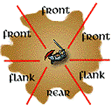
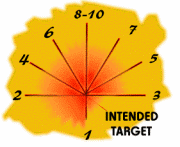

Advanced Dungeons & Dragons®
Dungeon Master® Guide
The revised and updated Dungeon Master® Guide for the AD&D® Game.
TSR Inc. TSR Ltd.
201 Sheridan Springs Rd. 120 Church End, Cherry Hinton
Lake Geneva, WI Cambridge CB1 3LB
53147 USA United Kingdom
ADVANCED DUNGEONS & DRAGONS, AD&D, DUNGEONS & DRAGONS, D&D, DRAGON, GREYHAWK, DUNGEON MASTER, DM, DRAGONLANCE, and the TSR logo are registered trademarks owned by TSR Inc.
Foreword to the 2nd Edition
A foreword is normally the place where the author of a book expresses thanks and gratitude. I'm not going to do that here. It's not that everyone involved doesn't deserve congratulations and praise, it's just that I already said all those things in the foreword to the AD&D Player's Handbook. Everything I said there is true for this book, too. On to other things.
Let's assume that since you're reading this, your are, or plan to be, a Dungeon Master. By now, you should be familiar with the rules in the Player's Handbook. You've probably already noticed things you like or things you would have done differently. If you have, congratulations. You've got the spirit every Dungeon Master needs. As you go through this rule book, I encourage you to continue to make these choices.
Choice is what the AD&D game is all about. We've tried to offer you what we think are the best choices for your AD&D campaign, but each of us has different likes and dislikes. The game that I enjoy may be quite different from your own campaign. But it is not for me to say what is right or wrong for your game. True, I and everyone working on the AD&D game have had to make fundamental decisions, but we've tried to avoid being dogmatic and inflexible. The AD&D game is yours, it's mine, it's every player's game.
So is there an "official" AD&D game? Yes, but only when there needs to be. Although I don't have a crystal ball, it's likely that tournaments and other official events will use all of the core rules in these books. Optional rules may or may not be used, but it's fair to say that all players need to know about them even if they don't have the memorized.
The Player's Handbook and the Dungeon Master Guide give you what you're expected to know, but that doesn't mean the game begins and ends there. Your game will go in directions not yet explored and your players will try things others think strange. Sometimes these strange things will work; sometimes they won't. Just accept this, be ready for it, and enjoy it.
Take the time to have fun with the AD&D rules. Add, create, expand, and extrapolate. Don't just let the game sit there, and don't become a rules lawyer worrying about each piddly little detail. If you can't figure out the answer, MAKE IT UP! And whatever you do, don't fall into the trap of believing these rules are complete. They are not. You cannot sit back and let the rule book do everything for you. Take the time and effort to become not just a good DM, but a brilliant one.
At conventions, in letters, and over the phone I'm often asked for the instant answer to a fine point of the game rules. More often than not, I come back with a question—what do you feel is right? And the people asking the questions discover that not only can they create an answer, but that their answer is as good as anyone else's. The rules are only guidelines.
At the beginning of the first Dungeon Master Guide, Gary Gygax stressed that each of us, working from a common base, would make the AD&D game grow in a variety of different directions. That is more true today than ever. Don't be afraid of experimentation, but do be careful. As a Dungeon Master, you have great power, and "with great power comes great responsibility." Use it wisely.
David "Zeb" Cook
2/9/89
Credits
2nd Edition Designer: David "Zeb" Cook
Development: Steve Winter and Jon Pickens
Playtest Coordination: Jon Pickens
Editing: Warren Spector, Jean Rabe, Steven Schend
Graphic Design: Dee Barnett
Art Coordination: Peggy Cooper
Hundreds of players assisted us in playtesting the AD&D 2nd Edition game. Their efforts were invaluable in improving the manuscript. The list that follows is not complete, but we would like to thank Mike Abraham, Jeff Albanese, Roger Anderson, Susan Anderson, Walter Bass, Scott Beck, Doug Behringer, John Bennie, Andrew Bethke, Don Bingle, Linda Bingle, Aaron Boaz, Teresa Boaz, Ray Booth, Rick Brewer, Jeff Broemmel, Dan Brown, Frank Cabanas, Bill Ciers, Robert Corn, Dennis Couch, Bill Curtis, Scott Daily, Phillip Dear, Frank and Terri Disarro, Errol Farstad, John Fitzpatrick, Bill Flatt, Cheryl Frech, Dewey Frech, John Gamble, Vince Garcia, Kyra Glass, John Goff, Peter Gregory, Greg Handleton, David Hansom, Gordon Holcomb, Rob Huebner, Ed Issac, Larry Johnson, Reynold C. Jones, Jeff Kelly, Jeff King, Jim Kirkley, Peter Kokinder, Dan Kramarsky, Ed Kramer, Paul Krausnick, Jon Kugath, Michael Lach, Todd Laing, Len Lakofka, Randall Lemon, David Machim, Jeff Martin, Theron Martin, Scott Mayo, Milton McGorril, Kevin Melka, John Mendez, Bill Mercer, Frank and Mary Meyer, Neal Meyer, Mark Middleton, Jim Milam, Frank Miller, Jim Moeller, Mike Mullen, Lance Murphy, Scott Needham, Stance Nixon, Kevin Norton, Steve Null, Ray Ouellette, Rembert Parker, Nathan Patronksy, Ed Peterson, Keith Polster, Bruce Rabe, Norm Ritchie, Kip Romaine, Tim Royapa, Marc Rush, Michael Ruzza, Paul Schmidt, Eugene Schumaker, Mark Schumaker, Greg Schwarz, Michael Simpson, Warren Snider, Michael J. Somers, Hal St. Clair, Jeff Stevens, Justin Stevens, Paul Stevens, Dorence Stovall, Brad Stump, Lourdes Sullivan, Ellen Terra, John Terra, Mark TeTai, William Tracy, Jay Tummelson, Robert Unglaub, Carl Van Devendeer, Steven Vaughn-Nichols, Virginia Vaughn-Nichols, Bryan Villareal, Mark Wallace, Mike Wahl, Peter Walker, Doris Wells, Kevin Wells, Colleen Wetzel, Dave Wetzel, Josh Whitmer, Jett Wherry, Skip Williams, James Williams, Peter Zinda, and the following groups: DragonCon Gaming Staff, Elflords of Eriador, Excalibre Gamers Association, Games Unlimited, and MACE.
Finally, credit must also be shared with anyone who has ever asked a question, offered a suggestion, written an article, or made a comment about the AD&D game.
This is a derivative work based on the original Advanced Dungeons & Dragons® Players Handbook and Dungeon Master® Guide by Gary Gygax and Unearthed Arcana and other materials by Gary Gygax and others.
Random House and its affiliate companies have worldwide distribution rights in the book trade for English language products of TSR Inc. Distributed to the book and hobby trade in the United Kingdom by TSR Ltd. Distributed to the toy and hobby trade by regional distributors. ©1989, 1995 TSR Inc. All rights reserved. This work is protected under the copyright laws of the United States of America. Any reproduction or unauthorized use of the material or artwork presented herein is prohibited without the express written consent of TSR, Inc.
0-7869-0328-7
Foreword
One of the toughest challenges facing a DM (and I can only assume that everyone reading this either is, or wants to be, a DM) is keeping his game sessions fresh and exciting.
Those of us who produce new material for the AD&D game as a whole have a more or less similar task, although on a larger scale. We are constantly searching for ways to make adventures and game accessories unique, or at least original and distinctive. Like Sir Isaac Newton, we've learned from experience that when faced with multiple choices, the simplest alternative is often the best.
Hence the book you hold in your hands.
After six years, it was time for the Player's Handbook and Dungeon Master Guide, the two most important AD&D rule books, to get freshened up. What could be better and simpler than a new coat of paint? Products that we publish today don't look like products we published in 1989, or even in 1993. We haven't changed the game in any substantial way (aside from the usual clarifications and corrections that go along with any reprint). But we have let these books catch up to our new standards. They're larger, more colorful, and more readable, all with an eye toward making your DMing job easier.
Bringing this project together rekindled a lot of memories. In particular, one day from 1987 stands out in my mind. I remember it vividly because it was the day when Dave Cook and I drew up the very first outline and schedule for the 2nd Edition of the Advanced Dungeons & Dragons game. What needed to be done, and how it should be done, looked clear and simple on our neat, four-page report. In fact, that massive undertaking occupied almost two years of our lives, and I've spent most of my time since then caring for the AD&D game.
That's a job that we enjoy, or we wouldn't be doing it. Most of us feel that we have a stake, to one extent or another, in every AD&D campaign out there. When you and your players get together, the months (often years) of designing, discussing, playtesting, redesigning, arguing, editing, sketching, and head scratching disappear into the background. But no matter whether you play by the books or with a binder full of home rules, we're all in this together, united by the common thread of the AD&D game.
Steve Winter
February 6, 1995
Table of Contents
Introduction
A Word About Organization
The Fine Art of Being a DM
Chapter 1: Player Character Ability Scores
Giving Players What They Want
Choosing a Character Creation Method
Method I (3d6, in order)
Method II (3d6 twice, keep desired score)
Method III (3d6, arranged to taste)
Method IV (3d6 twice, arranged to taste)
Method V (4d6, drop lowest, arrange as desired)
Super Characters
Identifying Too-Powerful Characters
Dealing with Too-Powerful Characters
Hopeless Characters
Dealing with Hopeless Characters
Dealing with Dissatisfied Players
Wishes and Ability Scores
Players with Multiple Characters
Multiple Character Problems
Character Background
Letting Players Do the Work
Problem Backgrounds
Background
Chapter 2: Player Character Races
A Non-Human World
Racial Level Restrictions
Slow Advancement
Standard Class and Level Limits
Exceeding Level Limits
Creating New Player Character Races
Chapter 3: Player Character Classes
Class, Level, and the Common Man
0-Level Characters
Adventurers and Society
Fighters
Paladins
Rangers
Wizards
Priests
Thieves
Bards
Character Classes in Your Campaign
High-Level Characters
Defining "High Level"
Changing Campaign Styles
Above 20th Level
Beginning Character Levels
Mixing New and Old Characters
Pre-Rolled Characters
Creating a New Character Class
Chapter 4: Alignment
Player Character Alignment
Role-Playing Alignment
NPC Alignment
The Limits of NPC Alignment
Society Alignment
Using Area Alignments
Varying Social Alignment
Alignment of Religions
Alignment of Magical Items
Magical Alignment Changes
Alignment as a World View
Alignments in Conflict
Never-ending Conflict
Alignment as a Tool
Detecting Alignment
Asking
Casting a Spell
Class Abilities
Keeping Players in the Dark
Changing Alignment
Deliberate Change
Unconscious Change
Involuntary Change
Charting the Changes
Effects of Changing Alignment
Chapter 5: Proficiencies
Weapon Proficiencies
Min/Maxing
NPC Proficiencies
Adding New Proficiencies
Chapter 6: Money and Equipment
Controlling the Money Supply
Monetary System
A Short History of Commerce
Goods
Letters of Credit
Barter
Coins
Types of Coins
Expenses
Squalid Conditions
Poor Conditions
Middle-Class Conditions
Wealthy Conditions
Draining the Coffers
Expanding the Equipment Lists
Altering Prices
Equipment by Time Period
The Ancient World
The Dark Ages
The Middle Ages
The Renaissance
Adjusting Equipment Lists
Quality of Equipment
Lock Quality
Horse Quality
Horse Traits
Risks of Horse Buying
Weapon Quality
Ornamentation
Armor Made of Unusual Metals
Damaging Equipment
General Weapon Damage
Attack Forms
Chapter 7: Magic
Initial Wizard Spells
Player Choice
Player/DM Collaboration
Acquisition of Spells Beyond 1st Level
Going Up in Levels
Copying from Spell Books
Scroll Research
Study with a Mentor
DM Control of Spell Acquisition
Spell Books
All Sizes and Shapes
Spell Book Preparation
Spell Book Cost
How Many Pages in a Spell Book?
Expanding the Schools of Magic
Adding New Spells
Expansion Through Campaign Detail
Spell Research
Suggesting a New Spell
Analyzing a Spell
Solving the Problems of a New Spell
Setting a Spell's Level
Determining Spell Components
Determining Research Time
The Cost of Spell Research
Adding a New Spell to the Spell Book
Researching Extra Wizard Spells
Chapter 8: Experience
The Importance of Experience
Too Little or Too Much
Constant Goals
Fun
Character Survival
Improvement
Variable Goals
Story Goals
Experience Point Awards
Group Awards
Individual Experience Awards
When to Award Experience Points
Effects of Experience
Training
Rate of Advancement
Chapter 9: Combat
Creating Vivid Combat Scenes
More Than Just Hack-and-Slash
Definitions
The Attack Roll
Figuring the To-Hit Number
Modifiers to the Attack Roll
Weapon Type vs. Armor Modifiers
The Various Types of Weapons
Impossible To-Hit Numbers
Calculating THACO
Combat and Encounters
The Combat Round
What You Can Do in One Round
The Combat Sequence
Initiative
Standard Initiative Procedure
Initiative Modifiers
Group Initiative
Individual Initiative
Multiple Attacks and Initiative
Spellcasting and Initiative
Weapon Speed and Initiative
Attacking
Number of Attackers
Facing
Weapon Length
Position of Attackers and Attack Rolls
Pole Arms and Weapon Frontage
Shields and Weapon Frontage
Hitting a Specific Target
Called Shots
Movement in Combat
Movement in Melee
Movement and Missile Combat
Charging an Opponent
Retreat
Attacking Without Killing
Punching and Wrestling
Overbearing
Weapons in Non-Lethal Combat
Non-Lethal Combat and Creatures
Touch Spells and Combat
Critical Hits
Why No Critical Hit Tables?
Two Workable Critical Hit Systems
Critical Fumbles
Parrying
Missile Weapons in Combat
Range
Rate of Fire
Ability Modifiers in Missile Combat
Firing into a Melee
Taking Cover Against Missile Fire
Grenade-Like Missiles
Scatter Diagram
Types of Grenade-Like Missiles
Boulders as Missile Weapons
Special Attacks
Attacking With Charmed Creatures
Gaze Attacks
Innate Abilities
Great Weapons
Special Defenses
The Saving Throw
Rolling Saving Throws
Saving Throw Priority
Voluntarily Failing Saving Throws
Ability Checks as Saving Throws
Modifying Saving Throws
Magic Resistance
Effects of Magic Resistance
When Magic Resistance Applies
Successful Magic Resistance Rolls
Turning Undead
Evil Priests and Undead
Immunity to Weapons
Effects of Weapon Hits
Silver Weapons
Creature vs. Creature
Using Immune Monsters in a Campaign
Morale
The Role-Playing Solution
Dicing for Morale
How to Make a Morale Check
Failing a Morale Check
Injury and Death
Wounds
Special Damage
Falling
Paralysis
Energy Drain
Poison
Specific Injuries
Is This Injury Necessary?
Healing
Natural Healing
Magical Healing
Herbalism & Healing Proficiencies
Character Death
Death from Poison
Death from Massive Damage
Inescapable Death
Raising the Dead
Hovering on Death's Door
Unusual Combat Situations
Siege Damage
Mounted Combat
Aerial Combat
Underwater Combat
Chapter 10: Treasure and Magical Items
Who Needs Money?
Forms of Treasure
Placement of Treasure
Who's Got the Treasure
Planned and Random Encounter Treasures
Treasure Tables
Maintaining Balance
Too Little Treasure
Monty Haul Campaigns
Magical Items
Creatures and Magical Items
Buying Magical Items
Magic—Rare or Common
Researching Magical Items
The Nature of Magical Fabrication
Scrolls and Potions
Scrolls
Potions
Creating Other Magical Items
Recharging Magical Items
Destroying Magical Items
Artifacts and Relics
Designing an Artifact or Relic
Sample Artifacts and Relics
Chapter 11: Encounter
What is an Encounter?
Planned Encounters
Keys
Triggers
Combining Keys and Triggers
Random Encounters
Should You Use Random Encounters?
Characteristics of Random Encounter Tables
Creating Encounter Tables
The 2-20 Table
The Percentile Table
Dungeon Encounter Tables
Wilderness Encounter Tables
Special Encounter Tables
Spicing Up Encounter Tables
DMing Encounters
Encounter Checks
Is This Encounter Necessary?
Encounter Size
Surprise
Encounter Distance
Encounter Reactions
Fixing Things in Play
The Encounter is Too Difficult
The Encounter Gave Away Too Much Treasure
The Encounter Was Too Easy
Chapter 12: NPCs
Hirelings
Medieval Occupations
The Assassin, the Spy, and the Sage
Assassins
Spies
Sages
Soldiers
Description of Troop Types
Employing Hirelings
Who Might Be Offended
Depopulate at Your Own Risk
Securing Permission
Finding the Right People
The Weekly Wage
Henchmen
An NPC Becomes a Henchman
The Player Takes Over
Role-playing Henchmen
Henchmen and Bookkeeping
Officials and Social Rank
Titles, Offices, and Positions
Spellcasters
Finding a Spellcaster
Convincing an NPC to Help
NPC Magical Items
Personality
Walk-on NPCs
Significant NPCs
Other NPC Characteristics
Morale
Quick NPCs
Chapter 13: Vision and Light
Effects of Light Sources
Being Seen
Creatures and Light Sources
Light Tricks and Traps
Infravision
Standard Infravision
Infravision
Other forms of Sight
Darkness
Invisibility
Detecting Invisible Creatures
Chapter 14: Time and Movement
Detailed Timekeeping
Preparing a Calendar
Time as a Game-Balancer
Movement
Mounted Overland Movement
Care of Animals
Vehicles
Terrain Effects on Movement
Darkness and Ice
Terrain Modifiers in Overland Movement
Roads and Trails
Terrain Obstacles and Hindrances
Movement on Water
Ocean Voyaging
Weather and Ship Travel
Aerial Movement
Getting Lost
Chapter 15: A DM's Miscellany
Listening
Doors
Concealed and Secret Doors
Lycanthropy
Other Magical Diseases
The Planes
The Prime Material Planes
The Ethereal Plane
The Inner Planes
The Astral Plane
The Outer Planes
Appendix 1: Treasure Tables
Coins
Gems
Objects of Art
Appendix 2: Magical Items Tables
Magical Items
Armor and Shields
Magical Weapons
Appendix 3: Magical Items Descriptions
Potions
Identifying a Potion
Combining Potions
Potion Duration
List of Potions
Scrolls
Spell Level of Scroll Spells
Magical Spell Failure
Use of Scroll Spells
Casting Scroll Effects
Protection Scroll Effects
Who Can Use Scroll Spells?
Spell Level Range
Cursed Scrolls
Maps
List of Protection Scrolls
Rings
List of Rings
Rods
Command Words
List of Rods
Staves
Command Words
List of Staves
Wands
Command Words
List of Wands
Miscellaneous Magic
Categories of Magical Items
Armor and Shields
Magical Weapons
Light Generation
Unknown or Unusual Qualities
Magical Weapon List
Intelligent Weapons
Intelligent Weapon Alignment
Weapon Abilities
Weapon Ego
Weapon Versus Characters
Index
Tables
Table 1: Method I Characters
Table 2: Method II Characters
Table 3: Method III Characters
Table 4: Method IV Characters
Table 5: Method V Characters
Table 6: Method VI Characters
Table 7: Racial Class and Level Limits
Table 8: Prime Requisite Bonuses
Table 9: Maximum Level for Variant Races
Table 10: 0-Level Hit Points by Title
Table 11: Race
Table 12: Combat Value Used
Table 13: Saving Throw Table Used
Table 14: Hit Dice Per level
Table 15: Armor Allowed
Table 16: Weapons Allowed
Table 17: Hit Points Per level Beyond 9th
Table 18: Optional Abilities
Table 19: Thief Average Ability Table
Table 20: Restrictions
Table 21: Base Experience Points
Table 22: Player Character Living Expenses
Table 23: Equipment By Time Period
Table 24: Lock Quality
Table 25: Horse Quality
Table 26: Horse Traits
Table 27: Unusual Metal Armors
Table 28: Hit Points of Items
Table 29: Item Saving Throws
Table 30: Spell Book Capacities
Table 31: Creature Experience Point Values
Table 32: Hit Dice Value Modifiers
Table 33: Common Individual Awards
Table 34: Individual Class Awards
Table 35: Combat Modifiers
Table 36: Weapon Type Vs. Amor Modifiers
Table 37: THAC0 Advancement
Table 38: Calculated THAC0
Table 39: Creature THAC0
Table 40: Standard Modifiers to Initiative
Table 41: Optional Modifiers to Initiative
Table 42: Armor Modifiers For Wrestling
Table 43: Punching and Wrestling Results
Table 44: Cover and Concealment Modifiers
Table 45: Genadelike Missile Effects
Table 46: Character Saving Throws
Table 47: Turning Undead
Table 48: Hit Dice Vs. Immunity
Table 49: Morale Ratings
Table 50: Situational Modifiers
Table 51: Poison Strength
Table 52: Structural Saving Throws
Table 53: Mounted Missile Fire
Table 54: 2-20 Encounter Table
Table 55: Dungeon Level
Table 56: Frequency and Chance of Wilderness Encounters
Table 57: Surprise Modifiers
Table 58: Encounter Distance
Table 59: Encounter Reactions
Table 60: NPC Professions
Table 61: Fields of Study
Table 62: Sage Modifiers
Table 63: Research Times
Table 64: Military Occupations
Table 65: Common Wages
Table 66: European Titles
Table 67: Oriental Titles
Table 68: Religious Titles
Table 69: NPC Spell Costs
Table 70: General Traits
Table 71: Permanent Morale Modifiers
Table 72: Optional Degrees of Darkness
Table 73: Terrain Effects on Movement
Table 74: Terrain Costs for Overland Movement
Table 75: Terrain Modifiers
Table 76: Boat Movement
Table 77: Ship Types
Table 78: Sailing Movement Modifiers
Table 79: Weather Conditions
Table 80: Aerial Movement Modifiers
Table 81: Chance of Getting Hopelessly Lost
Table 82: Lost Modifiers
Table 83: Chance to Hear Noise by Race
Table 84: Treasure Types
Table 85: Gem Table
Table 86: Gem Variations
Table 87: Objects of Art
Table 88: Magical Items
Table 89: Potions and Oils
Table 90: Scrolls
Table 91: Rings
Table 92: Rods
Table 93: Staves
Table 94: Wands
Table 95: Books, Librams, Manuals, Tomes
Table 96: Jewels, Jewelry, Phylacteries
Table 97: Cloaks and Robes
Table 98: Boots, Bracers, Gloves
Table 99: Girdles, Hats, Helms
Table 100: Bags, Bottles, Pouches, Containers
Table 101: Candles, Dusts, Ointments, Incense, Stones
Table 102: Household Items and Tools
Table 103: Musical Instruments
Table 104: The Weird Stuff
Table 105: Armor Type
Table 106: Armor Class Adjustment
Table 107: Special Armors
Table 108: Weapon Type
Table 109: Attack Roll Adjustment
Table 110: Special Weapons
Table 111: Potion Compatibility
Table 112: Spell Failure
Table 113: Weapon Intelligence and Capabilities
Table 114: Weapon Alignment
Table 115: Weapon Primary Abilities
Table 116: Weapon Extraordinary Powers
Table 117: Special Purpose Weapons
Table 118: Languages Spoken by Weapon
Table 119: Weapon Ego
Introduction
You are one of a very special group of people: AD&D® game Dungeon Masters. Your job is not an easy one. It requires wit, imagination, and the ability to think and act extemporaneously. A really good Dungeon Master is essential to a good game.
The Dungeon Master Guide is reserved for Dungeon Masters. Discourage players from reading this book, and certainly don't let players consult it during the game. As long as the players don't know exactly what's in the Dungeon Master Guide, they'll always wonder what you know that they don't. It doesn't matter whether you have secret information; even if you don't, as long as the players think you do, their sense of mystery and uncertainty is maintained.
Also, this book contains essential rules that are not discussed in the Player's Handbook. Some of these rules the players will learn quickly during play—special combat situations, the costs of hiring NPCs, etc. Others, however, cover more esoteric or mysterious situations, such as the nature of artifacts and other magical items. This information is in the Dungeon Master Guide so the DM can control the players' (and hence the characters') access to certain bits of knowledge. In a fantasy world, as in this world, information is power. What the characters don't know can hurt them (or lead them on a merry chase to nowhere). While the players aren't your enemies, they aren't your allies, either, and you aren't obligated to give anything away for nothing. If characters go hunting wererats without doing any research beforehand, feel free to throw lots of curves their way. Reward those characters who take the time to do some checking.
Besides rules, you'll find a large portion of this book devoted to discussions of the principles behind the rules. Along with this are examinations of the pros and cons of changing the rules to fit your campaign. The purpose of this book, after all, is to better prepare you for your role as game moderator and referee. The better you understand the game, the better equipped you'll be to handle unforeseen developments and unusual circumstances.
One of the principles guiding this project from the very beginning, and which is expressed throughout this book, is this: The DM has the primary responsibility for the success of his campaign, and he must take an active hand in guiding it. That is an important concept. If you are skimming through this introduction, slow down and read it again. It is crucial you understand what you are getting into.
The DM's "active hand" extends even to the rules. Many decisions about your campaign can be made by only one person: you. Tailor your campaign to fit your own style and the style of your players.
You will find a lot of information in this book, but you won't find pat answers to all your questions and easy solutions for all your game problems. What you will find instead is a discussion of various problems and numerous triggers intended to guide you through a thoughtful analysis of situations that pertain to your campaign.
The rules to the AD&D 2nd Edition game are balanced and easy to use. No role-playing game we know of has been playtested more heavily than this one. But that doesn't mean it's perfect. What we consider to be right may be unbalanced or anachronistic in your campaign. The only thing that can make the AD&D game "right'' for all players is the intelligent application of DM discretion.
A perfect example of this is the limit placed on experience levels for demihumans. A lot of people complained that these limits were too low. We agreed, and we raised the limits. The new limits were tested, examined, and adjusted until we decided they were right. But you may be one of the few people who prefer the older, lower limits. Or you may think there should be no limits. In the chapter on character classes, you'll find a discussion of this topic that considers the pros and cons of level limits. We don't ask you to blindly accept every limit we've established. But we do ask that before you make any changes you read this chapter and carefully consider what you are about to do. If, after weighing the evidence, you decide that a change is justified in your game, by all means make the change.
In short, follow the rules as they are written if doing so improves your game. But by the same token, break the rules only if doing so improves your game.
A Word About Organization
Everything in this book is based on the assumption that you are familiar with the Player's Handbook. To make your job easier, the Player's Handbook and Dungeon Master Guide have parallel organization. Chapters appear in the same order in both books. That means if you know where to find something in the Player's Handbook, you also know where to find it in this book.
Also, the index in this book also covers both the Player's Handbook. You can find all the references to any specific topic by checking this index.
The Fine Art of Being a DM
Being a good Dungeon Master involves a lot more than knowing the rules. It calls for quick wit, theatrical flair, and a good sense of dramatic timing—among other things. Most of us can claim these attributes to some degree, but there's always room for improvement.
Fortunately, skills like these can be learned and improved with practice. There are hundreds of tricks, shortcuts, and simple principles that can make you a better, more dramatic, and more creative game master.
But you won't find them in the Dungeon Master Guide. This is a reference book for running the AD&D game. We tried to minimize material that doesn't pertain to the immediate conduct of the game. If you are interested in reading more about this aspect of refereeing, we refer you to Dragon® Magazine, published monthly by TSR, Inc. Dragon Magazine is devoted to role-playing in general and the AD&D game in particular. For more than 16 years, Dragon Magazine has published articles on every facet of role-playing. It is invaluable for DMs and players.
If you have never played a role-playing game before but are eager to learn, our advice from the Player's Handbook is still the best: Find a group of people who already play the game and join them for a few sessions. If that is impractical, the best alternative is to get a copy of the Introduction to Advanced Dungeons & Dragons Game. It covers all the basics of fantasy role-playing with the AD&D game, but in a much simpler presentation which teaches as you play. It includes several introductory role-playing adventures. These will show you what goes on during the game and give you step-by-step instructions on how to set up and run a game with your friends.
Chapter 1:
Player Character Ability Scores
Each player is responsible for creating his character. As the DM, however, your decisions have a huge impact on the process. You have final approval over any player character that is created. This chapter outlines what you should consider about character creation and gives guidelines on how to deal with some of the common problems that arise during character creation.
Giving Players What They Want
Players in most AD&D games use the same character over many game sessions. Most players develop strong ties to their characters and get a thrill from watching them advance, grow, and become more successful and powerful. Your game's success depends on how much your players care about their characters. For these reasons, it is important to let they players create the type of characters they really want to play.
At the same time, watch out for a tendency in some players to want the most powerful character possible. Powerful characters are fine if that's the sort of campaign you want. A problem arises, however, if players are allowed to exploit the rules, or your good nature, to create a character who is much more powerful than everyone else's characters. At best, this leads to an unbalanced game. At worst, it leads to bored players and hurt feelings.
Therefore, before any player in your game creates his first character, decide which dice-rolling method to allow: will you use method I, any of the five alternate methods, or a seventh method of your own devising? Be prepared with an answer right away, because this is one of the first questions your players will ask.
Choosing a Character Creation Method
The following methods are different from one another. Some produce more powerful characters than others (although none produces extremely powerful characters). For this reason, every player in your game should start out using the same method.
If, at some later point in your campaign, you want to change methods, simply announce this to your players. Try to avoid making the announcement just as a player starts rolling up a new character, lest the other players accuse you of favoritism. You know you aren't playing favorites, but it doesn't hurt to avoid the appearance.
The advantages and disadvantages of each dice-rolling method are described below (also see page 13 of the Player's Handbook). Five sample characters created with each method illustrate typical outcomes the different methods are likely to produce.
Method I (3d6, In order):
This is the fastest and most straightforward. There are no decisions to make while rolling the dice, and dice rolling is kept to a minimum. Ability scores range from 3 to 18, but the majority fall in a range from 9 to 12.
Typically, a character will have four scores in the average range, one below-average score, and one above-average score. A few lucky players will get several high scores and a few unlucky ones will get just the opposite.
Very high scores are rare, so character classes that require high scores (paladin, ranger, illusionist, druid, bard) are correspondingly rare. This makes characters who qualify for those classes very special indeed. The majority of the player characters will be fighters, clerics, mages, and thieves. Characters with exceptional ability scores will tend to stand out from their comrades.
Method I Disadvantages: First, some players may consider their characters to be hopelessly average. Second, the players don't get many choices.
Using method I, only luck enables a player to get a character of a particular type, since he has no control over the dice. Most characters have little choice over which class they become: Only one or two options will be open to them. You might let players discard a character who is totally unsuitable and start over.
Table 1:
Method I Characters
#1 #2 #3 #4 #5
Strength 10 8 13 6 16
Dexterity 8 7 8 15 10
Constitution 12 8 9 10 14
Intelligence 13 8 14 9 12
Wisdom 12 10 11 9 13
Charisma 7 12 14 7 8
Suggested Class Ma Cl F/Ma Th F
Method II (3d6 twice, keep desired score):
This method gives players better scores without introducing serious ability inflation. It also gives them more control over their characters. The average ability is still in the 9 to 12 range, and players can manipulate their results to bring the characters they create closer to the ideal characters they imagine.
Exceptional player characters are still rare, and unusual character classes are still uncommon, but few characters will have below-average scores.
Method II Disadvantages: Creating the character takes slightly longer because there are more dice to roll. Despite the improved choices, a character might still not be eligible for the race or class the player wants.
Table 2:
Method II Characters
#1 #2 #3 #4 #5
Strength 12 11 9 9 15
Dexterity 10 15 12 13 14
Constitution 11 11 16 14 14
Intelligence 13 11 12 13 14
Wisdom 16 13 13 11 13
Charisma 10 11 14 9 12
Suggested Class Cl Th Cl Ma F
Method III (3d6, arranged to taste):
This method gives the players more choice when creating their characters yet still ensures that, overall, ability scores are not excessive. Bad characters are still possible, especially if a player has several poor rolls. The majority of characters have average abilities.
Since players can arrange their scores however they want, it is easier to meet the requirements for an unusual class. Classes with exceptionally strict standards (the paladin in particular) are still uncommon.
Method III Disadvantages: This method is more time-consuming than I or II, especially if players try to "minimize/maximize" their choice of race and class. (To minimize/maximize, or min/max, is to examine every possibility for the greatest advantage.) Players may need to be encouraged to create the character they see in their imaginations, not the one that gains the most pluses on dice rolls. The example below shows fighters created using this method.
Table 3:
Method III Characters
#1 #2 #3 #4 #5
Strength 15 13 14 15 14
Dexterity 11 12 9 10 12
Constitution 15 13 13 12 14
Intelligence 7 8 8 9 11
Wisdom 8 7 7 6 9
Charisma 7 12 7 7 11
Method IV (3d6 twice, arranged to taste):
This method has all the benefits of methods II and III. Few, if any, characters are likely to have poor scores. Most scores are above average. The individual score ranges are still not excessively high, so truly exceptional characters are still very rare. However, the majority of characters are significantly above the norm.
Method IV Disadvantages: This method tends to be quite slow. Players spend a lot of time comparing different number combinations with the requirements of different races and classes. New players easily can be overwhelmed by the large number of choices during this process. The examples below are arranged for fighters.
Table 4:
Method IV Characters
#1 #2 #3 #4 #5
Strength 15 14 15 16 15
Dexterity 13 10 13 15 13
Constitution 13 12 15 13 13
Intelligence 13 9 13 12 13
Wisdom 13 9 11 13 12
Charisma 10 9 11 13 12
Method V (4d6, drop lowest, arrange as desired):
Before choosing to use this method, think about how adventurers fit into the population as a whole. There are two schools of thought.
One holds that adventurers are no different from everyone else (except for being a little more foolhardy, headstrong, or restless). The man or woman down the street could be an adventurer--all that's required is the desire to go out and be one. Therefore, adventurers should get no special bonuses on their ability rolls.
The other school holds that adventurers are special people, a cut above the common crowd. If they weren't exceptional, they would be laborers and businessmen like everyone else. Player characters are heroes, so they should get bonuses on their ability rolls to lift them above the rabble.
If you choose method V for creating player characters, then you agree with this second view and believe that adventurers should be better than everyone else.
This method creates above-average characters. They won't be perfect, but the odds are that even their worst ability scores will be average or better. More scores push into the exceptional range (15 and greater). It is easy for a player to create a character of any class and race.
Method V Disadvantages: Like other methods that allow deliberate arrangement of ability scores, this one takes some time. It also creates a tendency toward "super" characters.
Unless you have a considerable amount of experience as a DM, however, beware of extremely powerful characters. They are much more difficult to challenge and control than characters of moderate power. On the plus side, their chance for survival at lower levels is better than "ordinary" characters. (See "Super Characters," below, for more on this subject.)
One last point about method V: High ability scores are less exciting under this method, since they are much more common, as the fighter characters below indicate:
Table 5:
Method V Characters
#1 #2 #3 #4 #5
Strength 17 15 16 14 18/37
Dexterity 14 14 13 15 12
Constitution 15 14 14 15 17
Intelligence 13 11 10 14 8
Wisdom 13 10 11 15 8
Charisma 9 13 8 7 9
Method VI (points plus dice):
This gives players more control over their characters than the other methods. A points system makes it quite likely that a player can get the character he wants--or at least the class and race. However, in doing so the player must make some serious compromises.
It is unlikely that his dice are going to be good enough to make every score as high as he would like. In all likelihood, only one or two ability scores will be exceptional, and miserable dice rolling could lower this even further. The player must carefully weigh the pros and cons of his choices when creating the character.
Method IV Disadvantages: This method works best for experienced players. Players who are not familiar with the different character classes and races have a hard time making the necessary (and difficult) decisions. Table 6 shows fighters constructed using this method.
Table 6:
Method VI Characters
#1 #2 #3 #4 #5
Strength 17 15 16 17 18/71
Dexterity 12 11 11 13 12
Constitution 12 9 12 18 14
Intelligence 11 9 10 11 11
Wisdom 9 9 10 8 10
Charisma 8 8 9 9 13
Super Characters
One of the great temptations for players is to create super characters. While this is not true of every player all the time, the desire for power above everything else afflicts most players at one time or another.
Many players see their characters as nothing more than a collection of numbers that affects game systems. They don't think of their characters as personalities to be developed. Players like this want to "win" the game. These players are missing out on a lot of fun.
If players are creating new characters for your campaign, you probably won't have to deal with such super characters. Players can start with ability scores greater than 18 only if the race grants a bonus, but this is extremely rare. Later in the campaign, magic might raise ability scores higher.
The greatest difficulty occurs when a player asks to bring in a character from another campaign where characters are more powerful. Unless you are prepared to handle them, super characters can seriously disrupt a campaign: Players with average characters gradually become bored and irritated as the powerful characters dominate the action. And players with powerful characters feel held back by their weaker companions. None of this contributes to harmony and cooperation among the characters or the players.
Cooperation is a key element of role-playing. In any group of player characters, everyone has strengths to contribute and weaknesses to overcome. This is the basis for the adventuring party--even a small group with sufficiently diverse talents can accomplish deeds far greater than its size would indicate.
Now, throw in a character who is an army by himself. He doesn't need the other characters, except perhaps as cannon fodder or bearers. He doesn't need allies. His presence alone destroys one of the most fundamental aspects of the game--cooperation.
Identifying Too-Powerful Characters
There are no absolute rules to define a too-powerful character, since the definition will vary from campaign to campaign. Characters who are average in your game may be weaklings in your friend's campaign. His characters, in turn, could be frail compared to other groups. Some experience is required to strike the right balance of power, but characters created using the same method should, at least, be comparable.
When someone brings a character from a different campaign and wants to use him in your game, compare the proposed character to those already in the game. You don't want him to be too strong or too weak. Certainly you should be wary of a character whose ability scores are all 18s!
Dealing with Too-Powerful Characters
If you decide a character is too powerful, the player has two choices. First, he can agree to weaken the character in some fashion (subject to your approval). This may be as simple as excluding a few magical items ("No, you can't bring that holy avenger sword +5 that shoots 30-dice fireballs into my campaign!"). Second, the player can agree not to use some special ability ("I don't care if your previous DM gave your character the Evil Eye, you can't jinx my dice rolls!"). If this sort of change seems too drastic or requires altering ability scores or levels, a better option is simply to have the player create a new character. The old character can be used, without tinkering, in the campaign for which he was created. The new character, more appropriate to your campaign, can develop in your game. Remember that just because another DM allowed something is no reason you have to do the same!
Hopeless Characters
At the other extreme from the super character is the character who appears hopeless. The player is convinced his new character has a fatal flaw that guarantees a quick and ugly death under the claws of some imaginary foe. Discouraged, he asks to scrap the character and create another.
In reality, few, if any, characters are truly hopeless. Certainly, ability scores have an effect on the game, but they are not the overwhelming factor in a character's success or failure. Far more important is the cleverness and ingenuity the player brings to the character.
When a player bemoans his bad luck and "hopeless" character, he may just be upset because the character is not exactly what he wanted. Some players write off any character who has only one above-average ability score. Some complain if a new character does not qualify for a favorite class or race. Others complain if even one ability score is below average. Some players become stuck in super-character mode. Some want a character with no penalties. Some always want to play a particular character class and feel cheated if their scores won't allow it.
Some players cite numerical formulas as proof of a character's hopelessness ("A character needs at least 75 ability points to survive" or "A character without two scores of 15 or more is a waste of time"). In reality, there is no such hard and fast formula. There are, in fact, few really hopeless characters.
Dealing with Hopeless Characters
Before you agree that a character is hopeless, consider the player's motives. Try to be firm and encourage players to give "bad" characters a try. They might actually enjoy playing something different for a change.
A character with one or more very low score (6 or less) may seem like a loser, like it would be no fun to play. Quite simply, this isn't true! Just as exceptionally high scores make a character unique, so do very low scores. In the hands of good role-players, such characters are tremendous fun. Encourage the player to be daring and creative. Some of the most memorable characters from history and literature rose to greatness despite their flaws.
In many ways, the completely average character is the worst of all. Exceptionally good or exceptionally bad ability scores give a player something to base his role-playing on--whether nimble as a cat or dumb as a box of rocks, at least the character provides something exciting to role-play.
Average characters don't have these simple focal points. The unique, special something that makes a character stand out in a crowd must be provided by the player, and this is not always easy. Too many players fall into the "he's just your basic fighter" syndrome.
In truth, however, even an average character is okay. The only really hopeless character is the rare one that cannot qualify for any character class. The playability of all other characters is up to you.
Dealing with Dissatisfied Players
All of the above notwithstanding, you don't want to force a player to accept a character he doesn't really like. All you will do is lose a player. If someone really is dissatisfied, either make some adjustments to the character or let him roll up a new one.
When adjusting ability scores, follow these guidelines:
• Don't adjust an ability score above the minimum required to qualify for a particular class or race. You are being kind enough already without giving away 10 percent experience bonuses.
• Don't adjust an ability score above 15. Only two classes have ability minimums higher than 15: paladins and illusionists. Only very special characters can become paladins and illusionists. If you give these classes away, they lose their charm.
• Don't adjust an ability score that isn't required for the race or class the player wants his character to be.
• Think twice before raising an ability score to let a character into an optional class if he already qualifies for the standard class in that group. For example, if Kirizov has the scores he needs to be a half-elf fighter, does he really need to be a half-elf ranger? Encourage the player to develop a character who always wanted to be a ranger but just never got the chance, or who fancies himself a ranger but is allergic to trees. Encourage role-playing!
Wishes and Ability Scores
Sooner or later player characters are going to gain wishes. Wishes are wonderful things that allow creative players to break the rules in marvelous ways. Inevitably, some player is going to use a wish to raise his character's ability scores. This is fine. Player characters should have the chance to raise their ability scores. It can't be too easy, however, or soon every character in your campaign will have several 18s.
When a wish is used to increase a score that is 15 or lower, each wish raises the ability one point. A character with a Dexterity of 15, for example, can use a wish to raise his Dexterity to 16.
If the ability score is between 16 and 20, each wish increases the ability score by only one-tenth of a point. The character must use 10 wishes to raise his Dexterity score from 16 to 17. The player can record this on his character sheet as 16.1, 16.2, etc. Fractions of a point have no effect until all 10 wishes have been made.
If a character of the warrior group has a Strength score of 18, each wish increases the percentile score by 10 percent. Thus, 11 wishes are needed to reach Strength 19.
This rule applies only to wishes and wish-like powers. Magical items (manuals, books, etc.) and the intervention of greater powers can automatically increase an ability score by one point, regardless of its current value.
Players with Multiple Characters
Each player usually controls one character, but sometimes players may want or need more. Multiple player characters are fine in the right situation.
Once your campaign is underway and players learn more about the game world, they may want to have characters in several widely scattered areas throughout that world. Having multiple characters who live and adventure in different regions allows a lot of variety in the game. The characters usually are spread far enough apart so that events in one region don't affect what transpires in the other.
Sometimes players want to try a different class or race of character but do not want to abandon their older, more experienced heroes. Again, spreading these characters out across the world is an effective means of keeping them separate and unique.
Whenever possible, avoid letting players have more than one character in the same area. If, for some reason, players must have more than one character in an area, make sure that the characters are of significantly different experience levels. Even this difference should keep them from crossing paths very often.
If multiple player characters are allowed, each character should be distinct and different. It is perfectly fair to rule that multiple characters controlled by one person must be different classes--perhaps even different races. This helps the player keep them separate in his imagination.
If a player has more than one character available, ask him to choose which character he wants to use for the adventure--before he knows what the adventure is about. If a single adventure stretches across several playing sessions, the same character should be used throughout. All of the player's other characters are considered busy with something else during this time.
Avoid letting players take more than one character along on a single adventure. This usually comes up when the group of characters assembled for the planned adventure is too small to undertake it safely. The best solution to this problem is to adjust the adventure, use a different adventure entirely, or supplement the party with NPC hirelings.
Multiple Character Problems
Playing the role of a single character in depth is more than enough work for one person. Adding a second character usually means that both become lists of numbers rather than personalities.
Shared Items: One single player/multiple character problem that needs to be nipped in the bud is that of shared equipment. Some players will trade magical items, treasure, maps, and gear back and forth among their characters.
For example, when Phaedre goes adventuring she takes along Bertramm's ring of invisibility. Bertramm, in exchange, gets the use of Phaedre's boots of speed. In short, each character has the accumulated treasure of two adventurers to draw on.
Do not allow this! Even though one player controls both characters, those characters are not clones. Their equipment and treasure is extremely valuable. Would Phaedre loan her boots to a character controlled by another player? How about an NPC? Probably not, on both counts. Unless the character is (foolishly) generous in all aspects of his personality, you have every right (some might call it a duty) to disallow this sort of behavior.
Shared Information: Information is a much more difficult problem. Your players must understand the distinction between what they know as players and what their characters know. Your players have read the rules and shared stories about each other's games. They've torn out their hair as the entire party of adventurers was turned into lawn ornaments by the medusa who lives beyond the black gateway. That is all player information. No other characters know what happened to that group, except this: they went through the black gateway and never returned.
The problem of player knowledge/character knowledge is always present, but it is much worse when players control more than one character in the same region. It takes good players to ignore information their characters have no way of knowing, especially if it concerns something dangerous. The best solution is to avoid the situation. If it comes up and players seem to be taking advantage of knowledge they shouldn't have, you can discourage them by changing things a bit. Still, prevention is the best cure.
And remember, when problems arise (which they will), don't give up or give in. Instead, look for ways to turn the problem into an adventure.
Character Background
When you look at a completed character, you will notice there are still many unanswered questions: Who were the character's parents? Are they still alive? Does the character have brothers and sisters? Where was he born? Does he have any notable friends or enemies? Are his parents wealthy or are they poor? Does he have a family home? Is he an outcast? Is he civilized and cultured, or barbaric and primitive? In short, just how does this character fit into the campaign world?
There are no rules to answer these questions. The Player's Handbook and Dungeon Master's Guide are designed to help you unlock your imagination. The AD&D® rules do not presume to tell you exactly what your campaign world will be like. These decisions are left to you.
Consider what would happen if the rules dictated answers to the questions above. For example, suppose the rules said that 50% of all characters come from primitive, barbaric backgrounds...and you're running a campaign set in a huge, sophisticated city (the New Rome of your world). Even more ridiculous would be the reverse, where the rules say 50% of the characters are city dwellers and your campaign is set in a barbaric wilderness. Or how would you explain things if 20% of all characters were seafarers and you had set your adventures in the heart of a desert larger than the Sahara?
These pages contain guidelines and advice about how to create a campaign, but there is nothing that says exactly where this campaign must be set or what it must be like. This does not mean that a character's background shouldn't be developed--such background adds a lot to the depth and role-playing of your players and their characters. However, it is up to you to tailor character backgrounds to the needs of your campaign.
Letting Players Do the Work
Of course, you don't have to do all the work. Your players can provide most of the energy, enthusiasm, and ideas needed. Your task is to provide direction and control.
Allow your players to decide what kind of people their characters are. One could be a rough nomad, another an over-civilized fop, others, homespun farmboys or salty seadogs. Let the players decide, and then tell them if, and how, their characters fit into your campaign world.
When a player says, "My dwarf's a rude and tough little guy who doesn't like humans or elves," you can respond with "Fine, he's probably one of the Thangor Clan from the deep mountain regions." This type of cooperation spurs your creativity, and involves the players in your world right from the start. You must come up with answers to their questions and ways to make their desires work in the campaign. The will be rewarded with the feeling of getting the characters they want.
A carefully well-crafted character background can do more than just provide emotional satisfaction. It can also provide motivation for the player characters to undertake specific adventures:
Just what is a dwarf of the Thangor Clan doing outside his clan's mountainous homeland? Is he an outcast looking for some way to redeem himself? Maybe he's a restless soul eager to see the bright lights of the big city and the world.
A character can have parents to avenge, long-lost siblings to track down, a name to clear, or even a lost love to recapture. Background can be used to build sub-plots within the overall framework of the campaign, enriching character descriptions, and interactions.
Background should not be forced: Do not insist that a player take upon his character a crippled grandmother, three sisters stolen by gypsies, a black-hearted rival, and a stain on the family name. Instead, see if the player has any ideas about his character. Not every player will, but the AD&D game depends as much on the players' fantasies as it does on yours.
Characters who players are happy with and feel comfortable about will create their own special excitement and interest. Players who are interested in their characters' backgrounds can be a source of creative energy, as they offer you a constant stream of new ideas.
Problem Backgrounds
Certain points of background can and do create problems in campaigns, however. First and foremost of these is nobility, followed closely by great wealth.
Problems of Nobility: Some players like the idea of their character being Prince So-and-So or the son of Duke Dunderhead. All too often this leads to an abuse of power.
The player assumes, somewhat rightfully and somewhat not, that the title endows his character with special privileges--the right to instant income, the right to flaunt the law, the right to endless NPCs, information, and resources--or, worst of all, the right to use clout to push the other members of the party around. This kind of character quickly becomes tiresome to the other players and will constantly find ways to upset carefully planned adventures.
Titles can be allowed, but the DM will have to put some controls on noble characters. The easiest and most effective method is to strip the title of all benefits that, by rights, should go with it.
The noble character could be the son of a penurious duke. The son may be next in line to inherit the title when his father dies, but he's also in line to inherit his father's debts! Instead of seeking to impress others in public, the poor son might be quite happy to keep a low profile so as not to attract his father's creditors. After all, it's hard to amass a fortune through adventuring when the bill collectors are always on hand to take it away.
Likewise, a princely character could be the son of an unpopular and despotic or incompetent king--perhaps even one who was overthrown for his abuses. Such a son might not want his lineage well-known, since most of the peasants would have less than happy recollections of his father's rule.
Of course, these kinds of manipulations on your part soon become tiresome, both to yourself and the players. Not every duke can be impoverished, nor every throne usurped. Going too far with this strategy will only destroy the validity of nobility and titles in your game.
In the long run, it is better for your player characters to begin untitled, with one of their goals being the possibility of earning the right to place a "Sir'' or "Lady'' before their names. Imagine their pride as you confer this title on their character (and imagine the trials they must have gone through to earn this right).
Problems of Wealth: Another problem you might have to deal with is characters from wealthy, upper-class families. (This is often associated with the problem of titles since the nobility normally is the upper class.) Such characters, being wealthy, lack one of the basic reasons to adventure--the desire to make a fortune.
Indeed, they see their own money as a way to buy solutions to their problems. Often they will propose eminently reasonably (and, to the DM's carefully planned adventures, quite disastrous) schemes to make their adventuring life easier. It is, of course, possible to hire a wizard to construct magical items. And a wealthy 1st-level character could buy a vast army. But these sorts of things will have undesirable effects on your campaign.
There are ways to control these problems while still allowing players the character backgrounds they desire. Think of the real world and how difficult it is to convince family and friends to give you money, especially sizeable amounts of cash. You may have a loving family and generous friends, but there is a limit.
In your campaign, parents may grow tired of supporting their children. Brothers could become upset at how player character relatives are cheating them out of their share of an inheritance. Sisters may take exception to the squandering of their dowries.
Standard medieval custom called for inheritances--land and chattels--to be divided equally among all of a man's sons. (This is one reason Charlemagne's empire crumbled after his death.) You can use this custom to whittle a wealthy character's purse down to size.
Further, families are not immune to the effects of greed and covetousness--many a tale revolves around the treachery one brother has wrought upon another. A rich character could awaken to discover that his family has been swindled of all it owns.
Background as Background
A character's background is a role-playing tool. It provides the player with more information about his character, more beginning personality on which to build. It should complement your campaign and spur it forward. Background details should stay there--in the background. What your characters are doing now and will do in the future is more important than what they were and what they did.
Chapter 2:
Player Character Races
Many factors affect a character's background. Two of the most important are his race and his character class (see Chapter 3, "Player Character Classes"). In a sense, a character's class is his profession. Some characters are fighters, some are mages, some are clerics, and so on. A character's race affects which character classes are available to him. Only humans have unlimited class options. All non-human races are limited to some extent. There are two reasons for this:
First, the restrictions are intended to channel players into careers that make sense for the various races. Dwarves are, to a certain degree, anti-magical and incapable of shaping magical energy--they can't be wizards. Halflings, despite their ties to nature, lack the devotion and physical will to be druids. Similar situations exist for the other demihuman races.
Second, the demihuman races have advantages that are not available to humans. Flexibility, the ability to choose from among all the classes, is one of very few human advantages.
A Non-Human World
The DM can, if he chooses, make any class available to any race. This will certainly make your players happy. But before throwing the doors open, consider the consequences.
If the only special advantage humans have is given to all the races, who will want to play a human? Humans would be the weakest race in your world. Why play a 20th-level human paladin when you could play a 20th-level elven paladin and have all the abilities of paladins and elves?
If none of the player characters are human, it is probably safe to assume that no non-player characters of any importance are human either. Your world would have no human kingdoms, or human kings, emperors, or powerful wizards. It would be run by dwarves, elves, and gnomes.
This is not necessarily a bad thing, but you must consider what kind of world non-humans would create. Building a believable fantasy world is a daunting task; creating a believable alien fantasy world (which is what a world dominated by non-humans would be) is a huge challenge even for the best writers of fantasy.
What would non-human families be like? What would the popular entertainment be? What would non-humans value? What would they eat? What would their governments be like? A society governed by nature-loving elves would be a very different place than a human-dominated world.
It is possible that certain character classes might not even exist. Paladinhood, for example, could be a uniquely human perspective. Would elves and dwarves hold the same values of law, order, god, and community to which a paladin aspires? If you only change the image (i.e., have elven paladins behave exactly like human paladins), what you've got is the "humans-in-funny-suits" syndrome. Even within the human race there are vast cultural differences. Think how much greater these differences would be if the blood were entirely different.
Also, if humans are weak, will the other races treat them with contempt? With pity? Will humans be enslaved? All things considered, humans could have a very bad time of it. If, after considering all the potential pitfalls, you decide to experiment with non-standard class selections, do so carefully. We offer the following advice:
Allow nonstandard race/class combinations only on a case-by-case basis. If you institute a general rule--"Gnomes can now be paladins"--you will suddenly find yourself with six player character gnome paladins.
If a player desperately wants to play a gnome paladin, ask him to come up with a thoughtful rationale explaining why this gnome is a paladin. It must be plausible and consistent with your campaign setting. If the rationale satisfies you, allow that player, and only that player, to play a gnome paladin. Explain to the other players that this is an experiment.
Don't allow any other gnome paladins in the game until you have seen the first one in action long enough to decide whether the class fits into your game. If it does, congratulations--you've broadened your players' horizons. If it doesn't, don't hesitate to tell the gnome paladin player that he has to retire the character or convert him to a normal fighter. Never allow someone to continue playing a character who is upsetting your game.
By following this simple rule, you can test new race/class combinations without threatening your campaign. Moderation is the key to this type of experimentation.
Racial Level Restrictions
In addition to unlimited class choice, humans can attain any level in any class. Once again, this is a human special ability, something no other race has. In the AD&D game, humans are more motivated by ambition and the desire for power than the demihuman races are. Thus, humans advance further and more quickly.
Demihumans can attain significant levels in certain classes, but they do not have the same unlimited access. Some players may argue that the greater age of various non-humans automatically means they will attain greater levels. That can present problems.
Demihuman characters are limited in how high a level they can achieve both to preserve internal consistency (humans are more flexible than non-humans) and to enforce game balance. A DM, however, can change or eliminate these limits as he sees fit. As with class restrictions, the consequences must be examined in detail.
Given their extremely long lifespans, demihumans without limitations would quickly reach levels of power far beyond anything attainable by humans. The world would be dominated by these extremely powerful beings, to the exclusion of humans. Human heroes would be feeble compared to the heroes of elves and dwarves.
Given their numerous advantages, demihumans would be the most attractive races--no one would play a human. Again, this isn't necessarily bad, but it's very different. The resulting game will be completely unlike the standard sword-and-sorcery milieu. You might need to set the campaign in an ancient age, before the ascendance of men (though given the situation, it's unlikely that men would ever become dominant).
Slow Advancement (Optional Rule)
If you decide to allow demihumans unlimited advancement, consider this option: To counteract the demihumans' long life, slow down their advancement. Require demihumans to earn two, three, or even four times as many experience points as a human to advance a level.
This allows the short-lived humans to advance more quickly than their long-lived comrades, who will eventually catch up after the humans' demise. If this solution, though logical, is unacceptable to your players, a compromise may be called for.
The best compromise is to allow demihumans normal (or double-cost) advancement to their "maximum" levels. Then require them to earn triple or quadruple experience points to advance beyond that point. They will advance very slowly, but the players will still have a goal and the sense of accomplishment that comes with rising a level.
Standard Class and Level Limits
Before removing or modifying level limits, familiarize yourself with the game and the balances that currently exist. Only after you are experienced and comfortable with these should you begin alteration of the non-human level limits. The standard level limits for all races and classes are given in Table 7.
Table 7:
Racial Class and Level Limits*
Character Class Character Races
Human Dwarf Elf Gnome Half-elf Halfling
Bard U – – – U –
Cleric U 10 12 9 14 8
Druid U – – – 9 –
Fighter U 15 12 11 14 9
Illus. U – – 15 – –
Mage U – 15 – 12 –
Paladin U – – – – –
Ranger U – 15 – 16 –
Thief U 12 12 13 12 15
U A player character can advance to the maximum possible level in a given class. The Player's Handbook gives rules for advancing the player characters to 20th level.
– A player character cannot belong to the listed class.
* Player characters with less than exceptional prime requisites cannot advance beyond the listed level.
Exceeding Level Limits (Optional Rule)
Demihuman characters with extremely high ability scores in their prime requisites can exceed the racial maximum levels. In cases where multiple prime requisites exist, the lowest prime requisite is used to calculate any additional levels.
The bonus levels available to characters with high prime requisite scores are summarized on Table 8. The additional levels listed in Table 8 are added to the normal maximum allowed, regardless of what class or race is involved.
For example, a half-elf is limited to 12th level as a thief. A half-elf thief with a Dexterity score of 17, however, is allowed two bonus levels, so he could advance to 14th level.
Table 8:
Prime Requisite Bonuses
Ability Score Additional Levels
14, 15 +1
16, 17 +2
18 +3
19 +4
Creating New Player Character Races
The races listed in the Player's Handbook are only a few of the possible intelligent races populating the worlds of the AD&D game. Adventurous DMs and players may want to experiment with characters of other races, such as orcs, lycanthropes, ogres, lizardmen, or even dragons.
Before you do this, however, you need to know very clearly what you are getting into. Unrestricted or ill-considered use of non-standard races can easily and quickly destroy a campaign. Always consider a new race from a variety of angles:
How does the new race fit with the other player characters? How does it fit in the campaign in general? What could you accomplish with this race that you couldn't with another?
The majority of players who want to play an unusual race desire only the thrill and excitement of a truly challenging role-playing situation. There are, however, a few players who see such races as a way to take advantage of game systems and campaign situations. As with changing level limits and classes allowed, you are well advised to move slowly and carefully in this area.
Allowing player characters of unusual races introduces a whole new set of problems. In creating a new non-human or demihuman player character race, the rules and guidelines below should be followed to preserve game balance.
The race should be humanoid (i.e., it must have two hands, at least two legs, and stand generally upright). The race must be able to move about on land. It must also be intelligent. An orc or a centaur would be acceptable.
The race cannot possess special abilities beyond the scope of those already given for the other player character races. Although a dragon can polymorph into human form, it makes an unlikely player character because it has a breath weapon, can change shape, can cast spells, and is not humanoid in its natural state. A brownie probably would not be a player character because it, too, has abilities beyond those of the standard player character races.
The race cannot be extra-dimensional or draw on extra-dimensional powers. It cannot have innate spellcasting ability, be undead, or possess magic resistance.
The race must be cooperative and willing to interact with the human world. The duergar, a race of deep-dwelling dwarves, have no desire to deal with humans and avoid contact whenever possible. Satyrs resent intruders into their woods and glades, which rules them out as player characters. You must judge this criterion based on the conditions in your game world.
If these conditions are met, the race can be considered as a possible player character race. Some examples of races that definitely fit the profile are half-orcs, orcs, half-ogres, lizardmen, goblins, centaurs, and kobolds.
When experimenting with a new player character race, allow only one at the start. Do not begin your experiment with a whole party of half-ogres! Start slowly, involving only one player. If the new race is too powerful, it can be easily eliminated.
Once the new race is selected, the real work begins. Examine the race and apply all of the following guidelines to it.
Character Abilities: All races, regardless of type, use the same ability generation method as all other player characters. Their scores will range from 3 to 18 unless modified by pluses or minuses.
Creature sizes, defined in the Monstrous Manual, affect abilities as follows:
Creatures of tiny (T) size have a -3 modifier to Strength. Creatures of small (S) size have a -1 modifier to Strength. Creatures of large (L) size have a +1 modifier to Strength. Huge (H) creatures gain a +2 to Strength and Gigantic (G) creatures have a +4.
Those with an Intelligence less than average (as determined by the DM or as listed in the Monstrous Manual) suffer a -1 penalty to Intelligence and those exceptionally Intelligent or greater gain a +1 bonus.
All other ability modifiers are assigned by the DM. Likely candidates include minuses to Charisma and Wisdom and plus or minus adjustments to Dexterity. In all cases, bonuses and penalties should balance out. If a creature has a +1 bonus to Strength, it should have a -1 penalty to another ability. With the exception of Strength, no creature can have a modifier greater than +2 or -2 to any score.
Racial Ability Requirements: It is possible for a creature to have seemingly illogical ability scores. However, you can set minimums and maximums on these. Table 7 in the Player's Handbook shows these limits for the standard player character races. It is the DM's job to do the same for nonstandard races.
As a guide, creatures of large size should have at least an 11 Strength and, unless they are described as agile or quick, should have a ceiling of 17 to Dexterity. Dull-witted creatures (those of low Intelligence) should have a limit of 16 to Intelligence.
The DM can waive any requirements if, for example, a player wants (or gets) a hill giant character with Strength 6. Some rationale should be offered, however. (In the case of the weakling hill giant, perhaps he was the runt of the family, cast out by his fellows, and forced to take up adventuring.)
Character Classes: The DM must judge what character classes the new race can be. Use the information in the next chapter as your guide, and start with a narrow range of options. You can always widen it later.
Almost any sort of creature can be a fighter. None (except humans) can be paladins. Those favoring the outdoors (centaurs, for example) can be rangers.
Those with penalties to Wisdom cannot be priests; others can be priests only if their game description mentions NPC priests and the creature has some type of social organization (a tribe, clan, etc.). No nonstandard creature can be a druid, as this is a human belief system.
Those with penalties to Intelligence cannot be wizards. If the description in the Monstrous Manual implies that a creature is stupid, dull-witted, or in any way averse to magic and spell casting, it cannot be a priest or wizard.
A Dexterity penalty prevents the character from being a thief. Creatures of large size or greater cannot be thieves. If it is implied that a creature is clumsy or awkward, it cannot be a thief.
A new character race can be multi-classed if there is more than one potential class open to it (e.g., fighter and mage). Classes from the same group cannot combine into multi-classes (e.g., fighter/ranger). Characters from variant races must also have scores of 14 or higher in the prime requisites of both classes to qualify for multi-class standing. This particular condition does not apply to normal player character races.
Level Limits: Like all non-humans, new player character races have level limits. However, these limits are lower than those for other non-humans, since these races are often unsuited to adventuring. (Perhaps this explains why player characters of these races are so rare.)
The maximum level a character from a variant race can attain depends on the character's prime requisite ability score (or scores). Use Table 9 to determine the character's maximum level.
Table 9:
Maximum Levels for Variant Races
Prime Requisite Score Level Limit
9 3
10 4
11 5
12 6
13 7
14 8
15 9
16 10
17 11
18+ 12
Unlike the standard demihuman races, new character races never gain additional levels for high ability scores. It is unusual enough that a member of the race has become a player character at all! Without the aid of many wish spells, a character from a non-standard race can never rise above 12th level.
Alignment: The Monstrous Manual lists alignments for most races. If an absolute alignment is listed (e.g., "good"), the player character has that alignment. If only alignment tendencies are given, the player can choose any alignment.
Hit Points: All creatures roll their hit points using the die appropriate to their chosen class. At 1st level, Large and greater size creatures gain one additional hit point for every Hit Die the creatures would normally receive (pluses to the die are ignored) in addition to their normal Constitution bonus. Thus, an ogre fighter with a Constitution of 12 would still gain a +4 hit point bonus at first level, since ogres normally have 4 Hit Dice. (Remember that Large size creatures suffer larger-than-man-sized damage from weapons!) Thereafter, all new races earn hit points according to level advancement, Constitution, and character class.
Level Advancement: The character progresses like all others of the same character class. Being a nonstandard race does not give the player character any special benefits to his character class.
Armor: Most creatures (orcs, gnolls, goblins) have an Armor Class of 10 (and thus wear armor for protection). Some creatures, however, have natural armor which is retained by the player character. These characters gain the benefit of a +1 bonus to their AC only if the armor worn is worse than or equal to their natural Armor Class (as per horse barding).
If better armor is worn, natural armor is ignored and Armor Class is determined by the armor being worn. Odd-sized and odd-shaped creatures can't wear off-the-shelf armor; it must be made to order and costs extra (and takes longer to make).
Movement: The creature's movement rate is the same as that listed in the Monstrous Manual.
Attacks: The player character is allowed the number of attacks given his character class and level, not the number listed in the monster description in the Monstrous Manual.
Size Problems: Players who play Large-sized creatures hoping to get an advantage over others should quickly discover many problems they didn't anticipate. Consider the plight of the player who decides to have a hill giant. Right away, he'll have a hard time buying basic equipment. Who makes pants for giants in a human town? Everything must be special ordered at two to four times--or more--its normal cost.
This is a minor inconvenience compared to other difficulties. Buildings and dungeons are built for humans and other Medium-sized creatures, denying the large fellow the opportunity for both a hearty drink and exciting adventure. Even the toughest character will tire of drinking from measly cups and buying five dinners at a time. Will he enjoy spending the night in a leaky stable while his companions enjoy warm feather beds upstairs in the inn?
Days of traveling will quickly show him the joys of walking while everyone else rides (no horse can carry him), especially when his companions gallop spryly away from oncoming danger, leaving him in its path. The costs of replacing broken furniture will quickly become prohibitive. Ropes will have an annoying tendency to break when the big lunk tries to climb them. And the hill giant better have at least 20 friends handy to pull him out of that 30-foot pit!
NPC Reactions: On the personal side, expect NPCs to have strong negative feelings about unusual player character races, even to the point of bigotry and hatred. These reactions will make life more difficult for the player character, but they are the price the player pays for his unusual choice.
Chapter 3:
Player Character Classes
The Player's Handbook covers the nuts and bolts of character classes, explaining the mechanics of how they work and what they can do, but there is more to being a DM than just knowing the hard and fast rules. Character classes form the heart of the AD&D game, so it is useful to understand some of the concepts and relationships that define classes and how they function.
Class, Level, and the Common Man
Character class and level are useful game measures of a character's talents and abilities. Every class outlines a basic role for the character, a position and career in life. Each level defines additional power and provides a system whereby you can quantify and balance encounters.
With only a little practice you learn that characters of X classes and levels can easily defeat monster Y, but that monster Z will give them serious problems. This helps you create exciting, balanced adventures for your players.
Yet, at the same time, you know that the concept of classes and levels doesn't really apply to the real world. The teamster driving the wagon that passes the characters isn't a 1st-, 5th-, or 100th-level teamster. He is a man, whose job it is to drive wagons and haul goods. The chambermaid is not a special class, nor are her abilities defined by levels.
The teamster or chambermaid may be exceptionally skilled and competent, but for them this is not measured in character classes. There is no such thing as a teamster or chambermaid class, any more than there are merchant, sailor, prince, blacksmith, hermit, navigator, tinker, beggar, gypsy, or clerk classes. These are the things people do, not all-encompassing descriptions.
Nor are all the people in your campaign world fighters, mages, thieves, or whatever. The situation would be utterly ridiculous if every NPC had a character class. You would have fighter chambermaids, mage teamsters, thief merchants, and ranger children. The whole thing defies logic and boggles the mind. Most non-player characters are people, just people, and nothing more.
Only a few people actually attain any character level. Not every soldier who fights in a war becomes a fighter. Not every urchin who steals an apple from the marketplace becomes a thief. The characters with classes and levels have them because they are in some way special.
This specialness has nothing to do with ability scores, class abilities, or levels. Such characters are special by definition. The fact that player characters are controlled by players renders them special. Perhaps these special characters are more driven or have some unknown inner spark or just the right combination of talents and desires. That's up to the players. Similarly, non-player characters with classes are special because the DM says so. Plain and simple. There is no secret reason for this--it just is.
0-Level Characters
The great mass of humanity, elf-kind, the dwarven clans, and halflings, are "0-level" (zero-level) characters. They can gain in wisdom and skill, but they do not earn experience points for their activities. These common folk form the backbone of every fantasy world, doing the labor, making goods, selling cargos, sailing oceans, building ships, cutting trees, hauling lumber, tending horses, raising crops and more. Many are quite talented in the various arts and crafts. Some are even more proficient than player characters with the same training. After all, 0-level characters earn their livings doing this kind of work. For player characters such proficiencies are almost more of a hobby.
For the vast majority of 0-level NPCs you create and use in your game, all you need to know is a name, a personality, and an occupation. When the characters deal with the blacksmith or the innkeeper, there's no need to create ability scores, THACO, to-hit adjustments, Armor Class, and the like. This does assume, of course, that your player characters don't go attacking every blacksmith and innkeeper in sight. If they do, you need to know a little more about 0-level characters.
Ability Scores: These range from 3-18. For simplicity, don't worry about racial modifiers for the demihuman races. Racial modifiers to combat, Armor Class, hit points, etc., do apply.
Proficiencies: At best, a 0-level character will have one weapon proficiency, if that character's profession reasonably allows for it. For example, a blacksmith could be proficient with a warhammer and an innkeeper might be allowed skill with a club (the axe handle under the bar...), but there's little chance a clerk is going to be skilled with any type of weapon.
In nonweapon proficiencies, 0-level characters have as many as are needed (and reasonable) given their profession and age. Thus, a blacksmith might be quite accomplished at the forge, having spent several proficiencies on the slot. Novices and incompetent craftsmen have the bare minimum training and skill. Typical journeymen spend two or three slots on their main skill. Experts and brilliant artists usually devote all their ability to a single proficiency. Masters, who watch over the work of journeymen and apprentices, are normally no more accomplished than journeymen but have additional proficiencies in other business areas.
Hit Points: The majority of people have from 1-6 hit points. Dwarves and gnomes average from 1-8 hit points. Adjustments can be made for occupation or condition as indicated on Table 10, below.
Table 10:
0-Level Hit Points by Title
Profession Die Range
Manual Laborer 1d8
Soldier 1d8+1
Craftsman 1d6
Scholar 1d3
Invalid 1d4
Child 1d2
Youth 1d6
Some players think it is unrealistic that a typical peasant can be killed by a single sword blow, a fall from a horse, or a thrown rock. In the real world, people can and do die from these causes. At the same time, however, others survive incredible injuries and wounds.
When it is necessary to the success of an adventure (and only on extremely rare occasions), you can give 0-level characters more hit points. The situation could have come about for any number of reasons: magic, blessings from on high, some particularly twisted curse (the peasant who could not die!)--you name it.
It is also useful to make important NPCs, such as 0-level kings or princes, tougher than the average person. This is particularly important in the case of rulers, otherwise some crazed player character is going to overthrow the campaign kingdom with a single swipe of his sword. This is normally not a desirable result.
Adventurers and Society
If most people do not fall into a particular character class, how common are those with character classes and how do they fit into the society around them?
This is an important question, one you will answer as you create your campaign. You don't have to sit down and think out an exact answer ("2% of the population are adventurers"), although you can get that precise if you want. More likely, the answer will form over time as you populate villages, create encounters, and DM game sessions--you will unconsciously make your choices about frequency and character role. There are, however, differences in how frequently the different classes will logically show up.
Fighters
Fighters are by far the most common character types in normal campaigns. They must meet the least stringent class requirements and are drawn from the biggest pool of talent--soldiers of innumerable armies, mercenary companies, militias, palace guards, temple hosts, and sheriff's men. In these and other forces, the potential fighter learns his trade. He is taught how to handle weapons and care for them. He picks up some basic tactics and earns acceptance as a fighting man.
From these ranks some go on to become 1st-level fighters. Such men are often given rank in recognition of their talents. Thus, a 1st-level fighter may become a corporal or a sergeant. As the ranks become greater and more influential, the tendency is to award these to higher level fighters. However, this trend is not absolute and often breaks down at the highest levels. The captain of the company may be a 12th-level fighter, but he would still take orders from a 0-level prince!
Level is no guarantee of rank, nor is rank fixed to level. Some people don't want responsibility and all that comes with it. They would rather let other people tell them what to do. Such characters may become accomplished fighters but never advance beyond the rank of common soldier. Political maneuvering and favoritism can raise even the lowest level character to the highest positions of authority.
Since fighters tend to rise above the level of the common soldier, few armies are composed of high- or even low-level fighters. While there is little difference in ability between the typical foot soldier and a 1st-level fighter, it is just not possible to find an army of 20,000 4th-level fighters. It's rare enough to find 1,000 or so 2nd-level fighters in a single unit. Such units are elite, superbly trained and outfitted, and are normally held in reserve for special tasks. They may be the shock troops of an assault, a special bodyguard, or the reserve of an army held back for pursuit.
Adventurer fighters (whether player characters or NPCs) are those who have struck out on their own. Not every man is content to take orders or give orders, and fame seldom comes to the common foot soldier. Some men are willing to try to rise through the ranks, but it is by no means an easy or speedy process. There aren't many openings, nor is it a path where skill at arms guarantees success.
Given all this, it's not surprising that most fighters opt for the more direct method of adventuring. In the course of adventuring, though, many fighters find themselves becoming leaders and commanders, assembling men around them as they carve their own place in the world.
Paladins
Paladins are rare, in part because of the statistics of dice rolling and in part because paladinhood is an exacting road for characters to follow. It is easy to err and fall from the special state of grace required. Not every character is up to these demands, but those few that are can be truly special. You will not find units with thousands, hundreds, or even tens of paladins. At best, they form small groups (such as the Twelve Peers of Charlemagne or some of the Knights of the Round Table).
Often, because of the sterling example they set, paladins lead others in battle. But, at the same time, they tend to be ill-suited to the task of ruling, which too often requires compromise of one's principles. It is common to find the paladin working in association with the clergy of his religion, but lone paladins, carrying their faith into the wilderness, also appear in the tales of bards.
Rangers
Rangers tend to be loners, uncomfortable in the company of "civilized" men. They are also uncommon, again due to the demanding ability requirements of the class. These two factors make armies or companies of rangers most unlikely, only marginally less common than hordes of paladins.
Although loners, they do not mind the company of other rangers, those who understand the ways of the wilderness and the need for space. Small groups of rangers will sometimes join an army as its scouts, especially if the need is pressing. They will occasionally be found in forest villages or near untracked wildernesses. Here, guides, scouts, woodsmen, trappers, pioneers, and stalkers form the pool from which the ranger ranks are filled. Few can be found in civilized lands--rangers in cities are truly oddities.
Wizards
Wizards are the most iconoclastic and self-important of all the character classes, for they are unique among all character classes. The peasant can pick up a sword and fight; a pious man can hope to serve his faith; a local wag can spin a good tale; and an unprincipled cad can rob the local merchants. But no one other than a wizard can cast magical spells. The need for highly specialized training truly sets them apart, and they know it.
When mages gather, they tend to form societies or associations, organizations for men who speak of things not understood by the common folk (much like scientists today). But wizards are too fractious and independent a lot to organize themselves into proper unions--they can barely manage to form moderately organized guilds.
Generally, their groups exist for such high-minded reasons as to "facilitate the exchange of knowledge" or "advance the state of the science of magic." Some prepare texts or papers to share with fellow mages, detailing their latest experiments and discoveries or outlining some new theory. They enjoy the recognition of their peers as much as anyone.
To outsiders, wizards seem aloof and daunting. Like craftsmen, they are most comfortable in the company of their fellows, speaking a language they all understand. The untrained, even apprentices, are intruders upon this fellowship and are apt to receive an icy and rude reception.
Wizards are an eccentric, even perverse, lot. They're likely to be found just about anywhere. Nonetheless, they have an affinity for civilization, ranging from small villages to vast cities. Only a few mages actually care to adventure since it is an extremely dangerous undertaking to which they are ill-trained and ill-suited. The vast majority spend their time experimenting in seclusion or working in the service of others, preferably well paid.
Many mages, especially those of lesser ability, turn their art to practical ends--almost every village has a fellow who can whip up a few useful spells to help with the lambing or simplify the construction of a house. In larger cities, these mages become more specialized, such that one might lend his talents to construction, another to the finding of lost things, and a third to aiding the local jewelers in their craft.
Nearly all major families, merchant princes, and nobles have a mage or two in their employ. A few attempt (generally without success) to have these wizards mass-produce magical items. The problem is that wizards are as difficult to manage as rangers or paladins. They do not care for others bossing them around or encroaching upon their perceived privileges and rights, especially since they have the magical resources to make their displeasure known. Also, they are usually kept busy finding ways to strike at their employer's rivals (or thwarting such attempts against their own lord). Foolish is the king who does not have a personal wizard, and lamentable is the ruler who trusts the wrong mage.
Not all wizards spend their time in the service of others. Some seek naught but knowledge. These scholar-mages tend to be viewed much like great university professors today--noble and distant, pursuing truth for its own sake. While not directly in the service of others, they can sometimes be commissioned to perform some duty or answer some question.
The wealthy often provide endowments for such men, not to buy their services (which aren't for sale) but to curry their favor in hopes that they will provide honor, glory, and just perhaps something useful. This situation is not unlike that of the great artists of the Renaissance who were supported by princes hoping to impress and outdo their rivals.
There are wizards who spend all their time shut away from humanity in dark, forbidding towers or gloomy, bat-infested caves. Here they may live in rooms where opulent splendor mingles with damp foulness. Perhaps the strains and demands of their art have driven them mad. Perhaps they live as they do because they see and know more than other men. Who knows? They are, after all, eccentric in the extreme.
Priests
Priest characters are not required to take up arms and set out on adventures to smite evil. No, their hierarchies require administrators, clerks, and devout workers of all types. Thus, although there may be many clergymen and women at a temple or monastery, only a few will have a character class and levels.
Not all monks at a monastery are 1st-level (or higher) clerics. Most are monks or nuns, devout men and women working to serve their faith. Non-adventuring clergy are no less devout than their adventuring brethren, nor do they receive any less respect. Thus, it is possible to have leaders within a religious hierarchy who show no signs of special clerical ability, only proper faith and piety.
Even more so than with military men, though, level is not a determiner of rank. Wisdom and its use, not the application of firepower or the number of foemen smitten, are the true pearls of the clergy. Indeed the goal of some beliefs is to demonstrate the greatest wisdom by divesting oneself of all earthly bonds--power, wealth, pride, and even level abilities--in an attempt to attain perfect harmony with everything.
In the end, adventuring priests tend to form a small nucleus of crusaders for the faith. They are the ones who demonstrate their faith by braving the dangers that threaten their beliefs, the ones who set examples through trials and hardships. From these, others may spiritually profit.
Thieves
Thieves are often people who don't fit in elsewhere. Unlike other classes, nearly all thieves are adventurers, often by necessity. True, many settle permanently in a single are and live off the local population, but when your life tends to be in defiance of the local law, you have to be ready to leave at a moment's notice! Each job is an adventure involving great risks (including, possibly, death), and there are precious few opportunities to relax and let your guard down.
Thieves occasionally form guilds, especially in major cities and places with a strong sense of law and order. In many cases, they are forced to cooperate merely to survive. Influential thieves see guilds as a way to increase their own profits and grant them the image of respectability. They become dons and crimelords, directing operations without ever having to dirty their hands.
At the same time, the membership of a thieves' guild is by definition composed of liars, cheats, swindlers, and dangerously violent people. Thus, such guilds are hotbeds of deceit, treachery, and back-stabbing (literally). Only the most cunning and powerful rise to the top. Sometimes this rise is associated with level ability, but more often it is a measure of the don's judge of character and political adeptness.
Curiously, thieves who are masters of their craft tend not to advance too high in the organization. Their talents in the field are too valuable to lose, and their effort is expended on their art, not on maneuvering and toadying. There is, in fact, no rule that says the leader of the thieves' guild has to be a thief. The leader's job involves charisma, character appraisals, and politicking--the powerful crimelord could turn out to be a crafty merchant, a well-educated nobleman, or even an insidious mind flayer.
Bards
Bards are rare and, like thieves, tend to be adventurers, but for somewhat different reasons. They do occasionally violate the law and find it necessary to move on to the next town--and the next adventure--but more often they are driven by curiosity and wanderlust. Although some bards settle down in a town or city, most travel from place to place. Even "tamed" bards (as the settled ones are sometimes called) feel the urge to go out and explore, gather a few more tales, and come home with a new set of songs. After all, the entertainment business demands variety.
There are generally no bard guilds or schools, no colleges, societies, or clubs. Instead, bards sometimes band in secret societies, loose affiliations that allow them to improve their art while maintaining an aura of mystery.
Most frequently, however, bards rely on the informal hospitality of their kind. Should one bard arrive in the town of another, he can reasonably expect to stay with his fellow for a little while, provided he shares some of his lore and doesn't cut into his host's business. After a time, during which both bards learn a few of the other's tales and songs, the visitor is expected to move on. Even among bards it is possible to overstay one's welcome.
Of course, there are times when a bard decides not to leave but to set up shop and stay. If the population is big enough to support both bards, they may get along. If it isn't, there will almost certainly be bad blood between the two. Fortunately, though, one or the other can usually be counted on to get wanderlust and set out on some great, new adventure. Bards do tend to be incurable romantics, after all.
Character Classes in Your Campaign
While the character discussion above provides a structure for adventurers in the game, your own campaign might be quite different. For example, there is no rule that says mages can't form strong guilds. Such a group would have a profound impact on the campaign world, however. With their magical might, they could control virtually any facet of life they chose--politics, trade, class structure, even private behavior. Such a group would alter the amount of magic in your campaign and who possessed it.
Organized mages might even attempt to limit the activities of those who present a threat to their power, such as adventurers. Whenever you alter the balance of the character classes, be sure you consider what the changes could do to your campaign.
High-Level Characters
Along with character classes and levels comes the natural tendency to classify campaigns according to the level of the characters. Experienced players speak of "low-level" or "high-level" games in different terms and, indeed, such games are different from one another. Also differing from game to game, however, is the definition of high level.
Defining "High Level"
What constitutes a low- or high-level game is a matter of taste. Generally, DMs and players find a range of character levels that is comfortable for their style of play. Campaigns that commonly have 4th- to 8th-level characters consider those with 12th-level or more to be high level, while those with 12th-level characters set the limit closer to 18th or 20th level. While there is no set break-point for high level, character duties and responsibilities begin to change around between 9th and 12th level.
Generally, players find battling monsters and discovering treasure to be less and less satisfying as time goes on. Their characters' abilities are such that monsters need to be almost ridiculously powerful to threaten them. Treasures must be vast to make an impression. While incredible foes and huge treasures are good once in a while, the thrill quickly wears thin.
Changing Campaign Styles
When players begin to get jaded, consider changing the style of the campaign. Higher level characters have great power--they should have adventures where that power influences and involves them in the campaign world. As leaders, rulers, and wise men, their actions affect more than just themselves, spreading outward in ripples over those they rule and those they seek to conquer. Political machinations, spying, backroom deals, treachery, and fraud become more pronounced. While these elements can play a part in a low-level campaign, at higher levels, the stakes are much greater.
Added intrigue can be introduced into a campaign gradually. For example, Varrack, a mid-level fighter, is appointed sheriff of a local village as a reward for his sterling deeds. He can still adventure as he has been accustomed to, but now he must also watch over the villagers. The DM has the local bandits raid the trade road. As sheriff, Varrack must stop them. He goes with a small group, only to discover a camp of 500 outlaws. Realizing he's badly outnumbered, he beats a hasty retreat, raises a small militia, and clears the countryside of the enemy.
With this he rises in level. In addition, his lord is pleased and grants Varrack stewardship of several villages, with sheriffs under his command. The neighboring baron (who organized and sent the bandits) notes Varrack's success with mild displeasure, planting the seed of a festering hate. More immediately, the craven and vengeful sheriff of the next village on the road (whose incompetence allowed the bandits to flourish) suddenly finds himself out of favor. He blames Varrack and searches for a way to bring the new steward down.
As the campaign progresses, the DM can slowly spin a web of intrigue around Varrack as enemies, open and hidden, seek to block his progress or use him to topple his own lord. Against the odds, Varrack may find himself destined to become the king's champion, gaining new titles, responsibilities, friends, and enemies along the way.
Above 20th Level
Theoretically, there is no upper limit to character class levels (although there are racial limitations). The material presented here takes characters only to 20th level--experience has shown that player characters are most enjoyable when played within the 1-20 range. Above 20th level, characters gain few additional powers and face even fewer truly daunting adventures.
Consummate skill and creativity are required to construct adventures for extremely powerful characters (at least adventures that consist of more than just throwing bigger and bigger monsters at the nearly unbeatable party). Very high level player characters have so few limitations that every threat must be directed against the same weaknesses. And there are only so many times a DM can kidnap friends and family, steal spell books, or exile powerful lords before it becomes old hat.
Retirement: When characters reach the level where adventures are no longer a challenge, players should be encouraged to retire them. Retired characters enter a "semi-NPC" state. The character sheets and all information are entrusted to the DM's care.
A retired character still lives in the campaign world, usually settled in one spot, and normally has duties that prevent him from adventuring. While in the DM's care, he does not gain experience, use his magic items, or spend his treasure. It is assumed that he has income to meet his normal expenses.
The retired character can be used to provide players with information, advice, and some material assistance (if this is not abused). However, his or her overall actions are controlled by the DM, not the player who originally created the character.
If at all possible, player characters should be encouraged to retire as a group. This way all players can create and play new characters of approximately the same level. If only one player retires his character to start a new 1st-level character while all the others continue with 20th-level characters, the poor newcomer can't really adventure with them. (If he does, the player won't get to do much or the character will have a very short life expectancy!)
Some players may be reluctant to retire a favorite character. Explain to these players that retirement doesn't mean the character can never be used again. Be sure to create special adventures that require those high-level heroes to come out and do battle.
Every once in a while the old adventuring group may have to reassemble to deal with some threat to the kingdom or the world. It's the chance to show those upstart new characters just what a really powerful group can do! It also gives the players the opportunity to role-play some the their old favorites.
If the players see the opportunity to use their powerful characters, even infrequently, they will be less reluctant to spend most of their playing time with new, lower-level characters.
Beginning Character Levels
If at all possible, start characters at 1st level. The lowest character levels are like the early years of childhood. What happens to a character during these first adventures will do much to determine how that character will be role-played. Did Rath the Dwarf save the day by fool-hardily charging into battle when he was a mere 1st level? If he did, the odds are good the player will try it again and will begin to play Rath as a bold and reckless fellow.
On the other hand, if Rath was clobbered the first few times he rushed in, the player would begin to play Rath as a cautious, prudent fellow. Even the smallest events can have a great effect on low-level characters, so these events sharply etch the behavior of the character. Deny the player these beginning levels and you are stripping him of the opportunity to develop his character's personality.
Mixing New and Old Characters
Letting players start at the beginning is fine when you first open a campaign, and all player characters can begin at the same level. As sessions are played, however, a disparity in character levels will develop. New players will join the game and old players will create new characters. Eventually, you'll reach a point where the original group of players has characters many levels higher than when they began. How, then, do you introduce new players and new player characters into your game?
There are times when you should allow a character to start above 1st level. A newly-created character should begin a campaign no higher than 4th level unless the group is very powerful. If this is the case, he should begin no higher than the lowest level character in the party (and it may be better to start a level or two lower).
The new character should have equipment similar to that of his adventuring companions: If they have horses, he should have a horse, too. But do not give him free magical items. These he must earn. He should start with a small amount of cash.
Sometimes a player can replace a fallen character by promoting an NPC henchman to player character status. This is a good method because the player is already familiar with the NPC and may have created a personality for him. When this happens, the player is given the NPC character sheet and allowed to take full control of it.
Pre-Rolled Characters
It is useful to have a few pre-rolled characters on hand. These should be of several different levels and classes, with equipment and personality quirks noted. These "instant" player characters can be used by guest players (those only able to play in a few sessions) and by regular players whose characters have died during the course of a session.
When the latter occurs, introduce the new character at an appropriate point and then allow the player to control it for the rest of the evening. This keeps that player from being bored. If the player enjoys the character (and you are pleased with the arrangement), you can allow him to continue playing that character in future sessions.
Creating New Character Classes (Optional Rule)
The character classes listed in the rules are not the only ones that can exist in the AD&D game. Many other character classes, either general or highly specialized, could also exist. Indeed, a common reaction of players to the character classes is to question why their characters can't have the powers or skills of another class. You can even create entirely new classes or combinations of existing character abilities.
Creating a new character class is not recommended for novice DMs or players. Before attempting this, be sure that you are familiar and comfortable with the AD&D rules. Furthermore, it is not a good idea to use this system in a brand-new campaign which has no background for players to base actions and decisions on.
The class-creation system here requires you to use your judgment--it isn't fool-proof. Without careful thought, you may find you've created an overly forceful combination of powers or a bizarre, unplayable character class. As with new character races, start with a single test case before you approve the class for all players.
Naturally, the DM must approve a class before a player can begin using it. The DM also has the right to make any changes he sees fit, even after the character has been played for some time!
You are advised not to try to create a super class--a class that allows players to do everything. Consider what is lost: A super character would require an immense amount of experience just to reach 2nd level. Normal characters would reach much higher levels, much sooner, and may even surpass the super character in ability. A super character also destroys party cooperation and group play. If you have a character who can do everything, you don't need other characters (and hence other players). Further, a whole group of super characters is nothing more than a group of one-class characters. You lose as much variety, as much color, as if you had a group consisting only of fighters. And a group of fighters (or any other single class), no matter what their abilities, is boring. There is nothing to distinguish Joe Fighter from Fred Fighter in ability.
Another factor to consider when creating new character classes is whether a new class is really needed. Some players want to create a character class for every profession or ability--jesters, witches, vampire hunters, vikings, mountaineers, etc. They forget that these are really roles, not classes.
What is a viking but a fighter with a certain outlook on life and warfare? A witch is really nothing but a female wizard. A vampire hunter is only a title assumed by a character of any class who is dedicated to the destruction and elimination of those loathsome creatures.
The same is true of assassins. Killing for profit requires no special powers, only a specific reprehensible outlook. Choosing the title does not imply any special powers or abilities. The character just uses his current skills to fulfill a specific, personal set of goals.
Before creating a character class, stop and ask yourself, "Is there already a character class that can fill the niche?" Think of ways an existing class could fulfill the desired goal through role-playing and careful choice of proficiencies. A mountaineer could easily be a fighter or ranger, born and bred on the slopes, with a love of the rugged peaks and proficiencies in climbing, mountaineering, and the like. There is no need for a mountaineer class.
Also, consider how much fun the character is going to be to play. This is particularly true when you plan to create classes with highly specialized abilities. True, there may be a place for wise old sages or alchemists, but would they be fun to play? Consider that all the sage does is conduct research and answer questions. An important task, perhaps, but boring when compared to fighters, mages, and the like. Clearly there is no great demand for the sage as a player character. So, there is no need for the character class.
Finally, remember that there is no such thing as an exclusively NPC character class. What is the logic of saying a non-player character can be such-and-such, but a player character cannot? None. This is a false restriction. Every character class you create should be open to player characters and non-player characters alike.
With all these considerations in mind, you can use the system described below to create new character classes. You are encouraged to modify the system or create one of your own. the method used here will give you a good starting place.
To use this method, choose different abilities you want the class to have. You must include some aptitudes such as fighting. But other abilities, such as spellcasting, are optional. Each ability you choose has a multiple attached to it. As you select the abilities for your class and add the multiples together. After you have chosen all the abilities, multiply the base experience value (see Table 21) by this total. The result is the number of experience points your new class must earn to go up in levels.
Required Abilities: For each of the categories, choose one of the options listed. Be sure to note this choice along with the multiple cost.
Table 11:
Race
Race Multiple
Human 0
Other 1
Table 12:
Combat Value Used
Level Multiple
0-level Human* -2
Monster +3
Priest 0
Warrior +2
Wizard -1
Rogue -1
0-level humans never improve in combat ability, regardless of level.
Table 13:
Saving Throw Table Used
Level Multiple
0-level Human Saving Throws* -2
Any other saving throw table 0
* 0-level humans never improve in saving throws.
Table 14:
Hit Dice Per Level
Level Multiple
1d3 0
1d4 +0.5
1d6 +0.75
1d8 +1
1d10 +2.5
1d12 +4
Table 15:
Armor Allowed
Level Multiple
None -1
Limited AC* -0.5
All 0
* Limited AC means the character can only use armor of AC 5 or worse.
Table 16:
Weapons Allowed
Level Multiple
Limited* -1.5
One class** -1
All 0
* The class is limited to a maximum of 4 different weapons, none of which can inflict more than 1d6 points of damage.
** The class is limited to one weapon category (slashing, piercing, or bludgeoning).
Table 17:
Hit Points Per Level Beyond 9th
Degree Multiple
+1 +0.5
+2 +2
+3 +2
Optional Abilities: In addition to the required abilities listed above, you can choose any of the optional abilities below. Again, these abilities will increase your base multiplier, making it more difficult to increase in levels.
Table 18:
Optional Abilities
Ability Multiple
Fighter Constitution bonus +1
Fighter exceptional Strength bonus +1
Animal empathy +1.5
Bonus +1 to hit a creature* +1
Per initial proficiency slot +0.25
Read languages** +0.5
Aura of protection, as paladin +2
Backstab +1
Cast any priest spell +8
Cast one sphere of spells +2
Climb walls** +1
Find/remove traps** +1
Healing, as paladin +2
Hear noise** +0.5
Hide in shadows** +1
Learn and cast any school +16
Learn and cast one school +3
Move silently** +1
Open locks** +1
Pick pockets** +1
Power (i.e. shapechange) +3
Use magical items +1
Other +3
* This applies only to a single type of creature (orcs, etc.). More than one creature can be chosen, so long as the multiplier is increased for each choice.
** The character uses Table 19.
Table 19:
Thief Average Ability Table
________________Base Chance To____________________
Level Find/
of Pick Open Remove Move Hide In Hear Climb Read
Thief Pockets Locks Traps Silently Shadows Noise Walls Languages
1 30% 25% 20% 15% 10% 10% 85% --
2 35% 29% 25% 21% 15% 10% 86% --
3 40% 33% 30% 27% 20% 15% 87% --
4 45% 37% 35% 33% 25% 15% 88% 20%
5 50% 42% 40% 40% 31% 20% 90% 25%
6 55% 47% 45% 47% 37% 20% 92% 30%
7 60% 52% 50% 55% 43% 25% 94% 35%
8 65% 57% 55% 62% 49% 25% 96% 40%
9 70% 62% 60% 70% 56% 30% 98% 45%
10 80% 67% 65% 78% 63% 30% 99% 50%
11 90% 72% 70% 86% 70% 35% 99% 55%
12 95% 77% 75% 94% 77% 35% 99% 60%
13 99% 82% 80% 99% 85% 40% 99% 65%
14 99% 87% 85% 99% 93% 40% 99% 70%
15 99% 92% 90% 99% 99% 50% 99% 75%
16 99% 97% 95% 99% 99% 50% 99% 80%
17 99% 99% 99% 99% 99% 55% 99% 80%
Restrictions: To lower the overall multiple of the class, restrictions also can be chosen that will affect the behavior and abilities of the class. These multiples are subtracted from the current total. Characters must honor the restrictions of their class.
Table 20:
Restrictions
Restriction Multiple
Must be lawful -1
Must be neutral -1
Must be good -1
Cannot keep more than can carry -0.5
Must donate 10% of treasure -0.5
Non-human level limit of 9* -1
Non-human level limit of 12* -0.5
Has ethos that must be obeyed -1
Cannot own more than 10 magical items -0.5
Cannot own more than 6 magical items -1
Cannot associate with one class -1
Cannot associate with one alignment -1
Ability use delayed to higher level** -0.5
* If the character is non-human.
** Delayed ability use prevents the character from having the power until he reaches the stated level. No more than two abilities can be delayed. The DM determines the level at which abilities become available for use.
Base Experience: After all multiples have been calculated, you must determine the experience points required per level. Take your multiple number and multiply it by the base experience value for each level as given in Table 21. When you are finished, you will have a complete Experience Point Table for your new character class.
Table 21:
Base Experience Points
Level Base Experience
2 200
3 400
4 800
5 2,000
6 4,000
7 8,000
8 15,000
9 28,000
10+ 30,000/additional level
You can't reconstruct the existing character classes using this method. The standard classes give players advantages over custom-designed classes. Standard class characters advance in levels more quickly and, generally, have better abilities than custom-designed characters.
Chapter 4:
Alignment
Alignment is a shorthand description of a complex moral code. It sketches out the basic attitudes of a person, place, or thing. It is a tool for the DM. In sudden or surprising situations, it guides the DM's evaluation of NPC or creature reactions. By implication, it predicts the types of laws and enforcement found in a given area. It affects the use of certain highly specialized magical items.
For all the things alignment is, there are some very important things that it is not. It is not a hammer to pound over the heads of player characters who misbehave. It is not a code of behavior carved in stone. It is not absolute, but it can vary from place to place. Neither should alignment be confused with personality. It shapes personality, but there is more to a person than just alignment.
Player Character Alignment
It is essential that each character's alignment be noted in the DM's records for that character. Are the alignments too different? Are they different enough to break the party apart? Will this interfere with the planned adventure or campaign?
Sometimes characters of different alignments possess such radically varied world views to make cooperation impossible. For example, a strict lawful good and a chaotic neutral would find their adventuring marked by animosity and mistrust. A true chaotic neutral would make just about anyone trying to work with him crazy.
There are two approaches to an alignment problem in the group. The first is to explain the problem to the players involved. Explain why their alignments could cause problems and see if they agree or disagree. If necessary, suggest some alignment changes--but never force a player to choose a new alignment.
It is his character, after all. Wildly different characters might find ways to work together, making adventures amusing (at least) and maybe even successful in spite of the group's problems.
The second approach requires that players keep their alignments secret. Don't tell anyone that there might be a problem. Let players role-play their characters and discover the problems on their own. When problems arise, let the characters work them out themselves. This approach is best suited to experienced role-players, and even then it can play havoc with a campaign. Since secrecy implies mistrust, this method should be used with extreme caution.
Role-Playing Alignment
During play, pay attention to the actions of the player characters. Occasionally compare these against the characters' alignments. Note instances in which the character acted against the principles of his alignment. Watch for tendencies to drift toward another, specific alignment.
If a character's class requires that he adhere to a specific alignment, caution him when a proposed action seems contrary to that alignment. Allow the player to reconsider.
Never tell a player that his character cannot do something because of his alignment. Player characters are controlled by the players. The DM intervenes only in rare cases (when the character is controlled by a spell or magical item, for example).
Finally as in all points of disagreement with your players, listen to their arguments when your understanding of an alignment differs from theirs. Even though you go to great effort in preparing your game, the campaign world is not yours alone--it also belongs to your players.
NPC Alignment
Just as a well-played character acts within the limits of his alignment, NPCs should act consistently with their alignments. Judicious and imaginative use of NPCs is what creates a believable fantasy world.
Alignment is a quick guide to NPC and monster reactions. It's most useful when you don't want to take the time to consult a page of tables and you haven't devised a complete personality for every casually encountered NPC. NPCs tend to act in accordance with their alignment (though they are no more perfect in this regard than player characters).
Thus, a chaotic evil gnoll tends to react with threats and a show of might. It considers someone who appeals to its compassion as a weakling, and it automatically suspects the motives of anyone who tries to be friendly. According to the gnoll's view of society, fear and bullying are the keys to success, mercy and kindness are for the weak, and friends are good only for the things they can provide--money, protection, or shelter. A lawful good merchant, meanwhile, would tend to hold the opposite view of things.
The Limits of NPC Alignment
Remember, however, that alignment is not personality. If every lawful good merchant is played as an upright, honest, and friendly fellow, NPCs will become boring in a hurry. Just because a merchant is lawful good doesn't mean he won't haggle for the best price, or even take advantage of some gullible adventurer who is just passing through. Merchants live by making money, and there is nothing evil about charging as much as a character is willing to pay. A chaotic good innkeeper might, quite reasonably, be suspicious of or hostile to a bunch of ragged, heavily armed strangers who stomp into his inn late at night. A chaotic evil wizard might be bored and happy for a little companionship as he sits by the inn's fire.
To create memorable NPCs, don't rely solely on their alignment. Add characteristics that make them interesting, adapting these to fit the character's alignment. The merchant, perhaps feeling a little guilty about over-charging the adventurer, might give the next customer a break on the price. The innkeeper might be rude to the adventurers while clearly being friendly to other patrons. The chaotic evil wizard might discover that, while he wanted some companionship, he doesn't like the company he got. He might even leave behind a token of his irritation, such as bestowing the head of a donkey on the most annoying character.
Society Alignment
Player characters, NPCs, and monsters are not alone in having alignment. Since a kingdom is nothing but a collection of people, united in some fashion (by language, common interest, or fear, for example), it can have an overall alignment. The alignment of a barony, principality, or other small body is based on the attitude of the ruler and the alignment of the majority of the population.
The alignment of the ruler determines the nature of many of the laws of the land. Lawful good rulers usually try to protect their territory and do what's best for their subjects. Chaotic good rulers try to help people, but irregularly, being unwilling to enact sweeping legislation to correct a social ill.
At the same time, the enforcement of the laws and the attitudes found in the country come not from the ruler but the subjects. While a lawful good king issues decrees for the good of all, his lawful evil subjects could consider them inconveniences to work around. Bribery might become a standard method for doing business.
If the situation is reversed (a lawful evil king with mostly lawful good subjects), the kingdom becomes an unhappy place, filled with grumbling about the evil reign that plagues it. The king, in turn, resorts to severe measures to silence his critics, creating even more grumbling. The situation is similar to romantic portrayals of Norman England, with the good and true peasants struggling under the evil yoke of Prince John (as in Robin Hood and Ivanhoe).
The general alignment of an area is determined by the interaction between ruler and ruled. Where the ruler and the population are in harmony, the alignment tendency of the region is strong. When the two conflict, the attitudes of the people have the strongest effect, since the player characters most often deal with people at this level. However, the conflict between the two groups--subjects and lord--over alignment differences can create adventure.
Using Area Alignments
Using a general alignment for an area allows a quick assessment of the kind of treatment player characters can expect there. The following gives ideas for each alignment.
Lawful good: the people are generally honest, law-abiding, and helpful. They mean well (at least most of them do). They respect the law. As a rule, people don't walk around wearing armor and carrying weapons. Those who do are viewed with suspicion or as trouble-makers. Some societies tend to dislike adventurers, since they often bring trouble.
Lawful Neutral: The people are not only law-abiding, they are passionate creators of arcane bureaucracies. The tendency to organize and regulate everything easily gets out of control.
In large empires there are ministries, councils, commissions, departments, offices, and cabinets for everything. If the region attracts a lot of adventurers, there are special ministries, with their own special taxes and licenses, to deal with the problem. The people are not tremendously concerned with the effectiveness of the government, so long as it functions.
Lawful Evil: The government is marked by its severe laws, involving harsh punishments regardless of guilt or innocence. Laws are not intended to preserve justice so much as to maintain the status quo. Social class is crucial. Bribery and corruption are often ways of life. Adventurers, since they are outsiders who may be foreign agents, are viewed with great suspicion. Lawful evil kingdoms often find themselves quashing rebellions of oppressed peasants clamoring for humane treatment.
Neutral evil, neutral good, and true neutral: Areas dominated by these three alignments tend to adopt whatever government seems most expedient at the moment. A particular form of government lasts as long as the ruler or dynasty in power can maintain it. The people cooperate when it suits them--or, in the case of true neutrals, when the balance of forces must be preserved.
Such neutral territories often act as buffer states between lands of extreme alignment difference (for example, between a lawful good barony and a vile chaotic evil principality). They shift allegiance artfully to preserve their borders against the advances of both sides in a conflict.
Neutral evil countries tend to be benign (but not pleasant) dictatorships while neutral good countries are generally "enlightened" dictatorships. Transfers of power are usually marked by shifts in government, though these are often bloodless coups. There is a certain apathy about politics and government. Adventurers are treated the same as everyone else.
Chaotic Good: The people mean well and try to do right, but are hampered by a natural dislike of big government. Although there may be a single ruler, most communities are allowed to manage themselves, so long as their taxes are paid and they obey a few broad edicts. Such areas tend to have weak law enforcement organizations. A local sheriff, baron, or council may hire adventurers to fill the gap. Communities often take the law into their own hands when it seems necessary. Lands on the fringes of vast empires far from the capital tend to have this type of alignment.
Chaotic Neutral: There is no government. Anarchy is the rule. A stranger to such a town may feel as if he has ridden into a town of madmen.
Chaotic Evil: The people are ruled by, and live in fear of, those more powerful than themselves. Local government usually amounts to a series of strongarm bosses who obey the central government out of fear. People look for ways to gain power or keep the power they've got. Assassination is an accepted method of advancement, along with coups, conspiracies, and purges. Adventurers are often used as pawns in political power games, only to be eliminated when the adventurers themselves become a threat.
Varying Social Alignment
Within these alignments, of course, many other government types are possible. Furthermore, even within the same kingdom or empire, there may be areas of different alignment. The capital city, for example, where merchants and politicians congregate, may be much more lawful (or evil, etc.) than a remote farming community.
And alignment is only one pattern of social organization. Not every nation or barony is defined by its alignment. Other methods of describing a group of people can also be used--peaceful, warlike, barbaric, decadent, dictatorial, and civilized are all possible descriptions.
You need only look at the world today to see the variety of societies and cultures that abound in the realms of man. A good DM will sprinkle his campaign world with exotic cultures created from his own imagination or researched at the local library.
Alignment of Religions
General alignments also can be applied to religions. The beliefs and practices of the religion determine its alignment. A religion that espouses understanding, working in harmony with others, and good deeds is more than likely lawful good. those that stress the importance of individual perfection and purification are probably chaotic good.
It is expected that the priests of a religion will adhere to its alignment, since they are supposed to be living examples of these beliefs. Other followers of the religion need not adhere exactly to its alignment. If a person's alignment is very different from his religion's, however, a priest is certainly justified in wondering why that person adheres to a religion which is opposed to his beliefs and philosophy.
Alignment of Magical Items
Certain powerful magical items, particularly intelligent ones, have alignments. Alignment in these cases is not an indication of the moral properties of the item. Rather, it is a means of limiting the number and types of characters capable of using the item--the user's alignment must match the item's alignment for the magic to work properly. Aligned magical items, usually weapons, were created with a specific ethos in mind. the item was attuned to this ethos by its creator.
Aligned items reveal their true powers only to owners who share the same beliefs. In the hands of anyone else, the item's powers remain dormant. An extremely powerful item may even harm a character of another alignment who handles the item, especially if the character's alignment is opposed to the item's.
Aligned magical items should be rare. When an item has an alignment, it is a sign of great power and purpose. This creates opportunities for highly dramatic adventures as the player characters learn about the item, research its history, track it across the country, and finally discover its ancient resting place and overcome the guards and traps set to protect it.
Magical Alignment Changes
A second, more insidious, type of magical item is the one that changes a character's alignment. Unlike the usual, gradual methods by which a character changes alignment, magical alignment changes are instantaneous. The character's personality undergoes an immediate transformation, something like magical brainwashing. Depending on the new alignment, the change may or may not be immediately noticeable. However, you should insist that the player role-play his new situation. Do not allow him to ignore the effects the alignment change will have on his character's personality. Indeed, good role-players will take this as an opportunity to stretch their skills.
Alignment as a World View
In addition to all its other uses, alignment can become the central focus of a campaign. Is the world caught in an unending struggle between the forces of good and evil, law and chaos? The answer affects how the campaign world is created, how the campaign is run, and how adventures are constructed. It also affects players' perspectives on and reactions to various situations and events.
In a typical campaign, the primary conflict in the world is not a struggle between alignments. The campaign world is one in which passion, desire, coincidence, intrigue, and even virtue create events and situations. Things happen for many of the same reasons as in the real world. For this reason, it may be easier to create adventures for this type of campaign. Adventure variety and excitement depend on the DM's sense of drama and his ability as a storyteller. Occasionally player characters discover a grand and hideous plot, but such things are isolated affairs, not part of an overall scheme.
However, for conspiracy-conscious DMs, a different world view might be more suitable, one where the powers of alignment (gods, cults, kingdoms, elemental forces) are actively struggling against each other. the player characters and NPCs may be agents of this struggle. Sometimes, they are aware of their role. At other times, they have no idea of their purpose in the grand scheme of things.
Even rarer are those campaigns where the player characters represent a third force in the battle, ignored or forgotten by the others. In such a world, the actions of adventurers can have surprising effects.
Alignments in Conflict
There are advantages and disadvantages to building a campaign around alignment struggles. On the plus side, players always have a goal, even if they're not always aware of it. This goal is useful when constructing adventures. It motivates player characters and provides a continuing storyline; it ensures that characters always have something to do ("Restore the balance of Law, loyal followers!"). Also, a sense of heroism permeates the game. Players know that their characters are doing something important, something that has an effect on the history of the campaign world.
There are disadvantages to this approach, too, but none that can't be avoided by a clever DM. First is the question of boredom. If every adventure revolves around maintaining balance or crusading for the cause, players might get tired of the whole thing.
The solution is simply to make sure adventures are varied in goal and theme. Sometimes characters strive in the name of the great cause. Other times they adventure for their own benefit. Not every battle needs to be a titanic struggle of good vs. evil or light vs. darkness.
Another concern is that everything the characters do may affect their quest. An aligned game universe is one of massive and intricate cause-and-effect chains. If X happens over here, then Y must happen over there. Most adventures must be woven into the thread of the storyline, even those that don't seem to be a part of it.
This is in direct conflict with the need for variety, and the DM must do some careful juggling. A big quest is easy to work into the story, but what happens when the player characters take some time off to go on their own adventure? Are they needed just then? What happens in their absence? How do they get back on track? What happens when someone discovers something no one was meant to know? For these problems there are no easy answers. A creative DM will never be idle with this sort of campaign.
Finally, there is the problem of success and failure. An aligned universe tends to create an epic adventure. Player characters become involved in earthshaking events and deal with cosmic beings. Being at the center of the game, player characters assume great importance (if they don't, they will quickly get bored). This is standard stuff in sword-and-sorcery fiction, so it is natural that it also appears in a sword-and-sorcery role-playing adventure.
Fiction writers have an advantage DMs do not, however--they can end the story and never return to it. At the end of the book, the good guys win, the world is set right, and the covers are closed. The writer never has to worry about it again, unless he wants to. What happens when characters win the final conflict, the battle that puts all to right? What can be done after peace and harmony come to the universe?
Further, the author knows who is going to win. He starts by knowing the good guys will triumph. There may be many twists, but eventually the heroes come out on top. Many DMs make the same assumption. They are wrong.
Never simply assume that the characters will win. What if they don't? What if the forces of darkness and evil win the final battle? No matter how high the odds are stacked in their favor, there is always a chance that the characters will do something so stupid or unlucky that they lose. Victory cannot be guaranteed. If it is, players will quickly sense this and take advantage of it.
Never-Ending Conflict
The best way to avoid the problems described above is to design the characters' struggle so it is never-ending. At the very least, the conflict is one that lasts for millennia--well beyond the lifetimes of the player characters.
However, to keep the players from feeling frustrated, certain they can never accomplish anything, their characters must be able to undertake sizable tasks and win significant victories. Player characters fighting for the cause of good may eventually drive back the growing influence of the chief villain, but they defeat only a symptom, not the disease itself.
There always can be a new threat. Perhaps the evil villain himself returns in a new and more hideous manifestation. The DM must be prepared with a series of fantastic yet realistic threats. These gradually increase in scope as the characters become more powerful.
Thus, it is possible to build a campaign where the forces of alignment play an active role in things. It is difficult, and there are many hazards, but imagination and planning can overcome the obstacles.
Alignment as a Tool
Even though it has been said several times already, this point is important enough to repeat--alignment is a tool to aid role-playing, not a hammer to force characters to do things they don't want to do.
The DM should never tell a player, "Your character can't do that because it's against his alignment," unless that character is under some type of special magical control. Let players make their own decisions and their own mistakes. the DM has enough to do without taking over the players' jobs, too.
Despite this prohibition, the DM can suggest to a player that an action involves considerable risk, especially where alignment is concerned. If the player still decides to go ahead, the consequences are his responsibility. Don't get upset about what happens to the character. If the paladin is no longer a paladin, well, that's just the way things are.
Such suggestions need not be brazen. True, the DM can ask, "Are you sure that's a good idea, given your alignment?" He can also use more subtle forms of suggestion woven into the plot of the adventure. Tomorrow the cleric intends to go on a mission that would compromise his alignment. That night, he has a nightmare which prevents any restful sleep. In the morning he runs into an old soothsayer who sees ill omens and predicts dire results. His holy symbol appears mysteriously tarnished and dull. The candles on the alter flicker and dim as he enters the temple. Attentive players will note these warnings and may reconsider their plans. If they do not, it is their choice to make, not the DM's.
Detecting Alignment
Sometimes characters try to use spells or magical items to learn the alignment of a player character or NPC. This is a highly insulting, if not hostile, action.
Asking
Asking another character "So, what's your alignment?" is a rude question. At best, any character who is boorish enough to bring up the issue is likely to receive a very icy stare (turning to shocked horror from more refined characters).
Asking another character his alignment is futile, anyway--a lawful good character may feel compelled to tell the truth, but a chaotic evil character certainly won't. A chaotic evil character with any wit would reply "lawful good."
Player characters can only say what they think their alignment is. Once they have chosen their alignment, the DM is the only person in the game who knows where it currently stands. A chaotic good ranger may be on the verge of changing alignment--one more cold-blooded deed and over the edge he goes. But he doesn't know that. He still thinks he is chaotic good through and through.
Casting a Spell
Casting a spell to reveal a character's alignment is just as offensive as asking him directly. This is the sort of thing that starts fights and ends friendships. Hirelings and henchmen may decide that a player character who does this is too distrustful. Strangers often figure the spell is the prelude to an attack and may strike first.
Even those who consent to the spell are likely to insist that they be allowed to cast the same in return. Using these spells, besides being rude, indicates a basic lack of trust on the part of the caster or questioner.
Class Abilities
Some characters--the paladin, in particular--possess a limited ability to detect alignments, particularly good and evil. Even this power has more limitations than the player is likely to consider. The ability to detect evil is really only useful to spot characters or creatures with evil intentions or those who are so thoroughly corrupted that they are evil to the core, not the evil aspect of an alignment.
Just because a fighter is chaotic evil doesn't mean he can be detected as a source of evil while he is having a drink at the tavern. He may have no particularly evil intentions at that moment. At the other end of the spectrum, a powerful, evil cleric may have committed so many foul and hideous deeds that the aura of evil hangs inescapably over him.
Keeping Players in the Dark
Characters should never be sure of other characters' alignments. This is one of the DM's most powerful tools--keep the players guessing. They will pay more attention to what is going on if they must deduce the true motivations and attitudes of those they employ and encounter.
Changing Alignment
Sooner or later, a player character will change alignment. A character might change alignment for many reasons, most of them have nothing to do with the player "failing" to play his character's role or the DM "failing" to create the right environment.
Player characters are imaginary people. But, like real people, they grow and change as their personalities develop. Sometimes circumstances conspire against the player character. Sometimes the player has a change of attitude. Sometimes the personality created for the player character just seems to pull in an unexpected direction. These are natural changes. There might be more cause for concern if no player character ever changes alignment in a campaign.
There is no rule or yardstick to determine when a character changes alignment. Alignment can change deliberately, unconsciously, or involuntarily. This is one of those things that makes the game fun. Players are free to act, and the DM decides if (and when) a change goes into effect. This calls for some real adjudication. There are several factors to consider.
Deliberate Change
Deliberate change is engineered by the player. He decides he doesn't want to play the alignment he originally chose. Perhaps he doesn't understand it, or it's not as much fun as he imagined, or it's clear that the player character will have a more interesting personality with a different alignment.
All the player has to do is have his character start acting according to the new alignment. Depending on the severity of the actions and the determination of the player, the change can be quick or slow.
Unconscious Change
Unconscious change happens when the character's actions are suited to a different alignment without the player realizing it. As in the case of a deliberate alignment change, the DM must keep track of the character's actions. If the DM suspects that the player believes his character is acting within his alignment, the DM should warn the player that his character's alignment is coming into question. An unconscious alignment change should not surprise the player--not completely, anyway.
Involuntary Change
Involuntary alignment change is forced on the character. Most often this is the result of a spell or magical item. Involuntary changes are immediate, and the character's previous actions have little bearing on the change.
Charting the Changes
During the course of play, keep notes on the actions of the player characters. At the end of each session, read through those notes, paying attention to any unusual behavior. Note which alignment seems most appropriate to each character's actions.
If, over the course of several playing sessions, a character's actions consistently fit an alignment different from the character's chosen alignment, an alignment change is probably in order. If small actions are taking a character outside his alignment, the change should be gradual--maybe even temporary. Severe actions could require an immediate and permanent alignment change.
In the meantime, the paladin could recognize his danger and amend his ways, preventing the change and preserving his paladinhood. If the paladin burns the village to prevent the disease from spreading, he commits a seriously evil act.
In this case, the DM is justified in instituting an immediate alignment change to lawful evil or even chaotic evil. The character eventually might be able to change back to lawful good alignment, but he will never again be a paladin.
Effects of Changing Alignment
Although player characters can change alignment, it is not something that should be approached lightly, since there are serious consequences. When a character changes alignment, he does more than just change his attitudes. He is altering his perception of the world and his relationship to it. Much of what he learned previously was flavored by his alignment. When the philosophical foundations of his life change, the character discovers that he must relearn things he thought he knew.
There are two possible effects of changing alignment, depending on the situation and circumstances of the change. The first results in no penalty. This effect only should be used when the player and the DM mutually agree that the character's alignment should be changed to improve the play of the game.
Most often this occurs with low-level characters. The player character's alignment may prove to be incompatible with the rest of the party. A player character may simply be more interesting for everyone if his alignment were different. Inexperienced players may select an alignment without fully understanding its ramifications. Discovering they simply do not like the alignment, they may ask to change. Such changes must be made with mutual agreement. As DM, try to accommodate the desires of your players.
In the second type of voluntary change, the case cannot be made that the alignment change would be for the good of the game. This generally involves more established characters who have been played according to one alignment for some time. Here, the effects of alignment change are severe and noticeable.
The instant a character voluntarily changes alignment, the experience point cost to gain the next level (or levels in the case of multi-class characters) is doubled. To determine the number of experience points needed to gain the next level (and only the next level), double the number of experience points listed on the appropriate Experience Levels table.
For example, Delsenora the mage began the game neutral good. However, as she adventured, she regularly supported the downtrodden and the oppressed, fighting for their rights and their place in society. About the time she reached 5th level, it was clear to the DM that Delsenora was behaving more as a lawful good character and he enforced an alignment change. Normally, a mage needs 40,000 experience points--20,000 points beyond 5th level--to reach 6th level. Delsenora must earn 40,000 additional experience points, instead of the normal 20,000. Every two experience points counts as one toward advancement.
Delsenora started the adventure with 20,000 experience points. At its conclusion, the DM awarded her 5,300 points, bringing her total to 25,300. Instead of needing just 14,700 points to reach the next level, she now needs 34,700 because of her alignment change!
If an alignment change is involuntary, the doubled experience penalty is not enforced. Instead, the character earns no experience whatever until his former alignment is regained. This assumes, of course, that the character wants to regain his former alignment.
If the character decides that the new alignment isn't so bad after all, he begins earning experience again, but the doubling penalty goes into effect. The player does not have to announce this decision. If the DM feels the character has resigned himself to the situation, that is sufficient.
For example, Beornhelm the Ranger carelessly dons a helm of alignment change and switches to chaotic evil alignment--something he didn't want to do! Exerting its influence over him, the helm compels Beornhelm to commit all manner of destructive acts. Although unable to resist, Beornhelm keeps looking for an opportunity to escape the accursed helm. Finally, after several misadventures, he cleverly manages to trick an evil mage into removing the helm, at which point he is restored to his previous alignment.
He gains no experience from the time he dons the helm to the time he removes it (though the DM may grant a small award if Beornhelm's plan was particularly ingenious). If Beornhelm had chosen not to trick the mage but to work with him, the change would immediately be considered a player choice. From that point on Beornhelm would earn experience, but he would have to earn twice as much to reach the next experience level.
A character can change alignment any number of times. If more than one change occurs per level, however, the severity of the penalty increases. (The character is obviously suffering from severe mental confusion, akin to a modern-day personality crisis.) When a character makes a second or subsequent alignment change at a given level, all experience points earned toward the next level are immediately lost. The character must still earn double the normal experience.
Delsenora drifted into lawful good. Now she finds lawful good too restrictive. She is confused. She doesn't know what she believes in. Her head hurts. The character reverts to her earlier neutral good habits. Bedeviled by indecision, she loses the 5,300 experience points she had already gained and now has to earn 40,000 to achieve 6th level!
Chapter 5:
Proficiencies (Optional)
A character in the AD&D game, like anyone else, has a variety of skills and talents. He is good at some things (because they are used in his profession or hobby) and poor at those he has studied casually or not at all. These skills and talents are called proficiencies.
Proficiencies aren't exactly like the skills people pick up in school or in the "real" world. They tend to be unrealistically broad or narrow, depending on the subject. The fishing proficiency, for example, assumes the character knows everything about both rod-and-reel fishing and net fishing. In reality, these are two vastly different skills.
At the other end of the spectrum, weapon proficiencies tend to be very precise, highlighting the subtle differences between weapons. A long bow and a short bow differ in size, weight, pull, arrow length, and balance. Each demands different practices to get optimum utility.
When using proficiencies, remember that these rules are not intended to recreate reality. It might have been more realistic to list different proficiencies for each aspect of medieval botany--horticulture, herbalism, mycology, etc. But in the context of a game, these are much better grouped under a single proficiency. Individually, each proficiency would be of such limited usefulness that all of them would become worthless. Other proficiencies, particularly weapons, go to the other extreme.
Weapon Proficiencies
Sooner or later a player will complain that the weapon proficiencies are too restrictive. But the real complaint may be that the rules don't allow a character to do everything the player wants.
For example, say a player character is proficient with a long sword. He's about to be overwhelmed by a horde of kobolds, but he has the sense to retreat. Unfortunately, he trips over his feet and falls face-first to the floor! His faithful, trusted long sword skitters from his grip and the little monsters are upon him. Still full of fight, the character wrests a short sword from the nearest beastie and begins to do battle.
At this point, the DM tells the player to apply the nonproficiency penalty. The player howls in outrage. "It's a sword," he moans. "My character can use a long sword, I can't believe you won't let him use a short sword! It's the same thing, just smaller!" Before giving in to the player's protests, consider the differences in what seem to be similar weapons.
The character's customary weapon, the long sword, is a slashing weapon. It is three- to four-feet long, heavy, and balanced toward the blade to increase momentum in a slash. A short sword is a piercing weapon. It is 12 to 18 inches long, light (for a sword), and balanced with most of the weight toward the handle for quick reaction.
So, in our example, the character leaps into the fight using the short sword instinctively--the way he would use a long sword. He tries to slash, but the weapon is too short and light for slashing. He tries to block and parry and finds the weapon absorbs much less impact than his massive long sword. He tends to attack the air, because he is used to the reach and sweep of the long sword. He throws himself off balance by swinging the light weapon too hard. All these minor errors make him less effective with the short sword, even though it seems similar to his long sword. The nonproficiency penalty begins to make sense.
Further, weapon proficiencies are just some of the many factors that must be balanced for a successful adventure. If a variety of factors combine to give a character excessive combat bonuses, the DM should create situations in which that character's favorite weapon is not the best choice.
For example, a character who is proficient with all types of swords, but no other weapons, is at a big disadvantage when confronted by skeletons. His sword is less effective than a mace. Eventually, the player will have to broaden his character's weapon proficiencies if he wants to thrive in the AD&D game world.
Min/Maxing
Sometimes players resort to "min/maxing" when selecting weapon proficiencies. Min/maxing occurs when a player calculates all the odds and numerical advantages and disadvantages of a particular weapon. The player's decision isn't based on his imagination, the campaign, role-playing, or character development. It is based on game mechanics--what will give the player the biggest modifier and cause the most damage in any situation.
A certain amount of min/maxing is unavoidable, and even good (it shows that the player is interested in the game), but an excessive min/maxer is missing the point. Reducing a character to a list of combat modifiers and dice rolls is not role-playing.
Fortunately, this type of player is easy to deal with. Just create a situation in which his carefully chosen weapon, the one intended to give him an edge over everyone else, is either useless or puts him at a disadvantage. He will suddenly discover the drawback of min/maxing. It is impossible to create a combination of factors that is superior in every situation, because situations can vary so much.
Finally, a character's lack of proficiency can be used to create dramatic tension, a vital part of the game. In the encounter with kobolds described earlier, the player howled in surprise because the situation suddenly got a lot more dangerous than he expected it to. The penalty for nonproficiency increases the risk to the player character, and that increases the scene's tension.
When a nonproficiency penalty is used to create tension, be sure the odds aren't stacked against the character too much. Dramatic tension exists only while the player thinks his character has a chance to escape, even if it's only a slim chance. If a player decides the situation is hopeless, he will give up. His reaction will switch from excitement to despair.
NPC Proficiencies
As a convenience for the DM, non-player characters are assumed to be proficient with the weapons they carry. However, this need not always be the case. If you want to make an NPC easier to defeat or less dangerous, rule that he is not proficient with his weapon. This is most likely the case with simple innkeepers or townsmen impressed into the militia.
The innkeeper may be adept with a club (occasionally useful in his trade), but the niceties of swordplay are not within the normal realm of his business. By adding to or subtracting from the abilities of an NPC, the game can be balanced and enriched.
Nonweapon Proficiencies
Nonweapon proficiencies are optional, but, if chosen, can be very useful. If you are uncertain whether to use these proficiencies, the following points should make the decision easier:
Nonweapon proficiencies help determine the success of character actions beyond what is defined by the basic abilities of the character races and classes. They provide a useful gauge when a character tries to build a boat or behave properly at court. This frees the DM to think about more important parts of the story instead of little, perhaps even insignificant, details.
Not everyone agrees with this! Some DMs prefer to handle by themselves all the situations covered by proficiencies. This requires a quick wit and good memory. In return, the DM is freed from the restraints of rules. He can create the scene he wants without worrying whether it breaks the rules. But tread softly here--this is not an easy way to judge a game! Try this only if you are experienced at DMing or are a spontaneous and entertaining storyteller.
Nonweapon proficiencies give a player character more depth. Used cleverly, they tell the player more about the personality and background of his character and give him more tools to work with. Applied judiciously and thoughtfully, nonweapon proficiencies vastly increase a character's role-playing potential.
Beware, however, because nonweapon proficiencies can have exactly the opposite effect. They can become a crutch for players who are unwilling to role-play, an excuse not to develop a character's personality or history. Some players decide that proficiencies define everything the character knows; they make no effort to develop anything else.
Avoid this by encouraging players to dig deeper and explore the possibilities in their characters. Ask a player to explain why his character has specific proficiencies. What did that character do before becoming an adventurer? Questions like this stimulate players to delve into their characters' personalities and backgrounds. Make a note of the player's reasons and then you can use them during play.
Nonweapon proficiencies can be used to define the campaign and create atmosphere. The proficiency lists can be tailored to match specific regions or historical periods, or to define the differences between nationalities.
If the characters' home base is a fishing village, the lists can be altered to allow all characters to learn swimming, sailing, fishing, and navigation at the same cost (in proficiency slots). These are common skills among seafaring people.
At the same time, dwarves, who come to this town from the nearby mountains, must devote extra slots to learn these proficiencies. A youth spent in dry, solid tunnels hasn't prepared them for a life at sea. Instead, they can learn mining, gemcutting, and other stonework skills cheaply.
The proficiency lists in the Player's Handbook are only a beginning. Your campaign will develop a much more interesting flavor if separate lists are tailored to different regions.
This still leaves the problem of min/maxing. Players are encouraged to make intelligent and sensible choices for their characters, but not at the expense of role-playing. If tailored lists are in use, encourage players to list the proficiencies they want without getting to see the lists of proficiencies. Then collect the lists and figure out which proficiencies the characters can get (some may be unavailable and others too expensive).
Players will still request the proficiencies they think are most advantageous, but at least the selections are drawn partially from the players' imaginations instead of a list of numbers.
Finally, proficiencies are only as useful as the DM makes them. Once a decision is made to use proficiencies in the campaign, the DM must strive to create situations where they are useful. Always remember to design encounters, traps, and scenes where proficiencies have a practical application to the problem at hand. Otherwise, players are going to write off proficiencies as a waste of time and miss out on a wonderful chance to expand their characters.
Ultimately, proficiencies add much richness, detail, and role-playing to a campaign at only a small cost in increased complexity. The DM has to remember a few more rules and the players have to make a few more choices when creating their characters. But in return, the game is bigger, better, and more fun.
Adding New Proficiencies
The proficiency lists in the Player's Handbook are extensive, but not comprehensive. The proficiencies given are the ones that characters will most commonly want or need, and those that have significant, specialized effects worthy of explanation. DMs and players will certainly think of proficiencies they'd like to add.
Wherever the idea for a new proficiency comes from, the DM is the person who decides whether to include it in the game and what its effects are. This is not a decision for the players, although they can offer suggestions and advice. Only after a new proficiency is approved by the DM can it be used in play.
One important factor to remember is that no proficiency should be beyond the science and technology of the age. There's no proficiency on the list that allows a character to build a gasoline engine, and with good reason. A gasoline engine is far beyond the pseudo-medieval society presented in the AD&D game.
At the same time, this is a fantasy game filled with magical effects and strange powers. With magic, it is not impossible to have outlandish and amazing proficiencies if players and DMs want them. They may have a serious effect on the game, however, and must be carefully considered.
The majority of new proficiencies are going to be those related to trades. Most of these have a very minor game effect, if any at all. They give the character specialized knowledge, but it is up to the player to make some use of it.
A character with the skills of a glazier (glass-maker) does not gain a great advantage. Although, if necessary, he could support himself by making small glass vials and other items for local mages and adventurers. Still, there might come a day when knowledge of glass and glass-making becomes vital to the success of an adventure. A clever player is always looking for a way to turn knowledge to his advantage.
When a player proposes a new proficiency, have him prepare a description of what the proficiency entails and allows. Then consider what the character could gain from it. This is not to say that the player is trying to pull a fast one (some will, but give them the benefit of the doubt). Instead, it is useful to imagine ways the proficiency could be abused. If something horrible or game-busting comes to mind, fix it. Never allow a proficiency into the game if it seems too powerful.
Make whatever changes are necessary in the description and then offer it to the player. If he still likes it (after all the secret powers are stripped out), introduce it into the game and have fun. Sometimes the only thing that can be kept is the name of the proficiency. Don't be distressed by this. Most players will be satisfied with DM changes, content simply to contribute something to the game.
Chapter 6:
Money and Equipment
Controlling the flow of money is an important way of balancing your campaign. Too much--or two little--money can ruin the fun of your game. Give your characters mountains of gold and game is spoiled. Suddenly wealthy, they no longer have the urgent need to adventure that impending poverty can provide. Too often they can buy their way out of difficult situations through bribery or "throwing money at the problem."
Worse still, they attempt to apply modern, capitalist ideas to a quasi-medieval world. They may try to hire an enormous staff of wizards to mass produce potions and scrolls. They may set up shops to make assembly-line armor. Advances in organization and production like these come slowly over time, not all at once. You may have to remind your players to limit themselves to the knowledge and attitudes of the times.
It is equally bad to keep your characters too poor. You are creating a game world for a fantasy role-playing game. If the characters are so poor that they must count every penny they spend, they are leading squalid and unhappy lives. Reward them when they accomplish things. You shouldn't always frustrate their desire to get rich. It's just that wealth should come slowly, matched to the level of the character.
Monetary Systems
Even before you play the first session in your campaign, you can use money as a tool in creating your game world. The form and shape money takes is by no means standardized. The simple monetary system given in the Player's Handbook is just that--a simplified system for coinage. It is not absolutely true to the real, historical world and is not even an accurate reflection of most fantasy worlds you find in books. It's just one way to approach money.
A Short History of Commerce
Monetary systems aren't always based on coins. Many different forms of exchange can be in use simultaneously. Take, for example, the real world around the year 1200. Currency included the regulated gold and silver coins of Byzantium and the Middle East, the licensed mints of England, the paper currency of China, the cowrie shells of Oceania, and the carved stones of Aztec lands. These were only a few forms money could take.
Goods
Vigorous trade was done in goods. Grain, cattle, sheep, wool, jewelry, foodstuffs, and cloth were all items of value. A canny Venetian merchant would sail from Venice to England with a load of silks, trading it there for good English wool (making sure he made a profit), and return to Venice to sell the wool for another load of goods for England.
Letters of Credit
Eventually letters of credit and contracts grew. Now the Venetian merchant could sail to England to collect wool gathered by contract from a monastery. In return for their wool shearing for five years, he would guarantee them set payments in ducats or florins, although he normally brought them goods they ordered from Venetian merchants--silks, spices, glassware, or wine. Thus he made a profit from the wool back in Venice and a profit from buying goods for the English monastery.
On his return to Venice, the enterprising merchant would sell his cargo to the wool merchant in return for a note, and then take this note to a glassmaker and sell it for a load of valuable Venetian glass.
In time, the notes led to the rise of banking houses, though much different from the banks we know today. Intended mainly to finance large deals and serve the wealthy merchants, there were few controls on these banks. They were definitely not for the common man. They were not places you stored your money for a rainy day, but houses that guaranteed the value of a merchant's note or contract, all for a fee.
Barter
Other economies, especially those of primitive lands, worked entirely on a barter system. What a man could produce became his money. The farmer paid the miller in bushels of grain. The miller paid his lord in ground flour. When the flour was baked into bread, the baker was paid in loaves of bread. These he could sell for the few coins, fresh eggs, or whatever luxuries might be available.
During the Dark Ages even a man's life could be measured in cows, horses, or sheep. Kill a serf and you had to pay--perhaps five sheep, some to his lord and some to his family. The cost for a freedman would be even higher. Rents, taxes, and fines could be assessed in gold or grain. Eventually objects were assigned specific values. In parts of medieval Russia, furs were used almost like coins. Squirrel, ermine, and martin pelts all had values and were treated just as we treat money today.
As barter systems became more sophisticated, they included more things. Obligations and duties became part of the formula. A knight received land from his lord, but part of his "rent" was the obligation to make himself and a set number of mounted soldiers available to serve in his lord's armies for 40 days each year. The serf was obligated to work his lord's land and live in the same village all his life. You might adopt an economy like this in your campaign world--one based on obligations.
For the most part, the economies of the medieval period were based on a combination of coins, goods, and services. The knight could escape military service by paying a special tax to his lord. The king could insist that foreign merchants acquire goods only through barter. The baker could be paid a small wage for his services. Generally, changes occurred slowly as medieval man moved from a barter system to a coin-based economy. Thus, many different methods existed side-by-side.
Coins
Generally, lands near each other, sharing a common group of people or a common language have very similar economies. The countries of medieval Europe traded with each other regularly and so developed very similar coins and values. Kingdoms also tend to imitate the economy of the most powerful country in the region. The Byzantine Empire had a stable gold currency, and its coins were the model for rulers from Baghdad to Denmark.
The value of a foreign coin was based on the weight of the coin, but also on the power of the issuer. The Byzantine besant was not only limited by other lands, but it was highly valued in trade. An English merchant would accept these coins from a Venetian trader because he knew their value. His price might increase if the trader paid him in Persian dinars. To the merchant, the dinar was simply not as valuable as the besant.
You can add color to your campaign by choosing to have different systems of trade in different lands. By creating different currencies and ways of trading, you make your players aware of the different kingdoms in your fantasy campaign. This makes them pay attention and learn about your world. A traveling merchant who trades in besants becomes a wealthy trader from the rich lands of Byzantium, while one who deals in hacksilver is a northerner from the cold shores of Scandinavia. These names and places create images, images more compelling and exciting than those created by the plain words "merchant'' or "trader."
Types of Coins
The terms "gold piece" (gp), "silver piece" (sp), and "copper piece" (cp) are clear and they are used throughout these game rules. But you can spice them up a bit. People give coins names, whether as plain as "dime" or lively as "gold double-eagle." The imaginary population of a fantasy world should be no different. Medieval history is filled with different types of coinage, all of which can add local color to your campaign.
Take, for example, the situation of a mercenary captain in Aquitaine. Through wages, booty, and trading he has assembled quite a few coins. Foremost of his horde are the gold and silver coins of Byzantium--the besant, hyperpyron, or nomisma as they were known at different times. An Italian general paid him in coins almost equally valuable, the gold florin and ducat. Mixed in with these were other coins of the Italian states--silver grossi and ecu. From the French he collected gros tournois, Rouen pennies, and louis. A Moorish hostage bought his freedom with silver drachmas and a German merchant of the Hanse paid the heavy toll of a gold mark. Part of the spoils of war include solidus aureus and denarii of Ancient Rome, though these coins are so badly worn their value has dropped greatly.
One of his men even came across a horde of hacksilver bracelets! Finally, from his English employers he received pounds, shillings, and pence. Clearly the captain is faced with a problem when he tries to figure out just how much money he has. What do these coins add up to?
The besant, hyperpyron, and nomisma were the standard coins of the Byzantine Empire. They were of a regular size and the precious metal was not debased with lead or copper. Backed by the power of the Emperor, each coin had a steady value. In your game, you could establish their value at one or two gold pieces each.
The florin and the ducat were the coins of different Italian states. These lands, rising in trading power, needed a steady economy. Thus their coins were almost the equal of the besant and were used for trade throughout Europe. Each florin might be equal to a gold piece. The gross was a silver penny and, normally, 12 equalled one florin.
The coins of France were much like those of Italy and could be valued the same way. The louis and the sous were the equal of the florin while the gros tournis and the denarius were silver pennies. However, the Rouen penny was specially minted and not considered as valuable by most traders.
The Middle Eastern drachma was modeled on the besant. Normally 12 to 20 were equal to a single besant (6-10 would equal one gp) but in Aquitaine they were often valued just like other silver pennies. The gold mark wasn't so much a coin as a measure. It was normally figured to be worth six English pounds. There were also silver marks worth about 13 shillings, and Scandinavian ora worth 16 pence. But the true value of these coins was what you could get for them.
The English coins included the rarely seen pound, equal perhaps to one gp. More common were silver shillings, officially figured at 20 to a pound (or half a sp). Below the shilling was the pence, 12 to a shilling, and below the pence was the farthing, four to a pence. Meanwhile, the lowly Rouen penny was figured to be equal to half a pence.
Of the ancient coins, the Roman solidus aureus was the model for the besant and thus nearly all other coins. It in turn was divided into silver denarii with 12 to 40 equaling a single solidus. However, age and counterfeiters reduced the value of these coins so much that their only true worth could be found in what they weighed. During the same time, Scandinavians used hacksilver--silver jewelry. When they needed to pay, they could cut off a chunk from an armband or bracelet and weigh it, thus the name hacksilver. They literally wore their money!
Clearly, money is no simple, universal thing. Each nation and each time has its own coins with its own values. Your player characters may travel through many different lands and find long-lost treasures. It will be much more exciting for your characters to find 600 ancient tremissa from the rule of Emperor Otto 400 years before than to find yet another 600 silver pieces. With a little imagination and research at your local library, you can find many different examples to add to your campaign.
Expenses
As exciting and important as money is for player characters, tracing day-to-day expenses just isn't very interesting. Forcing players to record every purchase their characters make is time-consuming and, plainly put, not very heroic. It's better simply to charge player characters a monthly living expense.
This living expense covers all normal room and board charges whenever a character is operating out of his home base. Separate charges for meals and beds need be made only when the character is traveling away from home.
Players describe how well (or poorly) they want their characters to live. From this the DM decides if they are living in squalid, poor, middle-class, or wealthy surroundings. The Player Character Living Expenses table, below, gives estimated base costs for each category.
Squalid and poor living conditions cost the same for all characters regardless of race or level. However, as a character increases in level, his needs increase according to (or beyond) his means. Characters living middle-class or wealthy lifestyles multiply the base living expense by their level to determine the cost. Characters of races other than the predominant one of the area (e.g., dwarves in a human city or humans in an elven village) pay double the normal rate. This is due to suspicion and a scarcity of goods the character is accustomed to.
The only direct game effect of living conditions is the expense involved, but living conditions can also determine some role-playing events and conditions in your game. Your player characters' lifestyles even can be used as a starting point for many different types of adventures.
Squalid Conditions
Dirty straw in leaky stables, muck-floored huts outside the walls of town, contempt, and random violence--these typify squalid living conditions. Characters living like this aren't likely to be robbed (since no one thinks they have any money), but they may be tormented or attacked just for the fun of it. Their legal protections will be few indeed.
Poor Conditions
In poor conditions, characters benefit from some legal protection, although there may be general indifference to their troubles. They must also cope with a high level of violence, periodic robberies, and random fights.
Middle-Class Conditions
Middle-class life tends to be safe and somewhat boring. Characters receive adequate protection and will not be the main target of most burglars. Thieves are generally attracted to the homes of the wealthy.
Wealthy Conditions
Wealthy people receive the greatest benefits, but they must also deal with the highest level of deceit, trickery, and treachery. Nearly all with wealth are drawn into dangerous political maneuverings, mainly to protect their own privileges.
Upon building or claiming his own stronghold, a player character suddenly acquires a whole new set of expenses. The character no longer pays living expenses but must pay for the maintenance of his property.
Table 22:
Player Character Living Expenses
Lifestyle Cost/Month
Squalid 3 gp
Poor 5 gp
Middle-Class 50 gp per level
Wealthy 200 gp per level
Draining the Coffers
Sometimes you discover you have given the player characters too much money. While living expenses will take a little of that (especially if the characters live big), it doesn't come close to solving the problem. Fortunately, there are other ways you can get money out of their hands.
A wide variety of taxes was applied during the Middle Ages. Some caused minimal hardship while others were quite expensive. Characters could be forced to pay a weregeld, a fine paid to the relatives of someone they have slain.
The king could demand scutage, a fee to avoid military service. Special assessments could be made to repair roads or rebuild bridges. There could be minor taxes to enter towns on market days or wander through the streets as a strolling minstrel. Taxes could be charged according to the size of the person's household.
In addition to taxes, there might be other unexpected costs. A fire could sweep through the character's manor, requiring a costly repair program. Termites could wreak havoc with the character's fleet. The local lord could assess his vassals a share of the tribute he must pay the enemy. Magical mysteries and daring thefts can also lower a character's financial position.
Always find a different, totally unexpected approach to taking excess cash from player characters. Let them defeat some of your attempts to drain their coffers. Set up some of your money-removing attempts to fail from the start--if the player characters take some action. Turn your attempts into adventures. If a thief robs the player character's castle, be ready with an adventure where the character can try to track him down. In fact, he may even catch the thief, but only after the scoundrel has squandered the character's fortune!
Expanding the Equipment Lists
The items listed in the Player's Handbook are by no means the only things ever made in the world--or even in a medieval fantasy setting. They are listed because they are the most likely things the characters will need. However, you can certainly add missing or player-requested items to this list.
When you add an item to the lists, first consider the reasonableness of its presence. Given the setting of the AD&D game, adding an M4 Sherman tank as a regular item of equipment is just not a logical, sensible, or wise thing to do.
Once you decide that a new item is reasonable, you must assign it a cost. Use your judgment. Consider the intricacy of the item, the craftsmanship required to make it, and the cost of similar items already on the lists. From these, you should be able to assign an appropriate price.
If, later on, you discover you made the item too cheap and all the characters are buying one, raise the price and say suppliers can't keep up with the demand. If an item is too expensive, you can lower the price and no one will complain.
Altering Prices
Remember that the prices listed in the Player's Handbook are not absolute. There is no reason you can't raise or lower the price of any item on the equipment lists. Demand can increase or decrease a price. Different lands in your campaign may be known for specific goods, allowing them to charge more.
Even in the Middle Ages, Spain and the Middle East were known for steel, Germany for beer, France for wine, England for wool, and the Italy for armor. These reputations allowed higher prices to be charged for these goods, especially finished items.
Greed can also raise prices. Merchants live to make money, so they will normally charge what they can get away with. There were very few price controls or regulating agencies during these times.
Finally, adventurers tend to disrupt local economies, suddenly bringing in large amounts of cash. Merchants raise prices to match. Situations not unlike the Klondike gold rush develop, in which even the simplest items cost outrageous amounts. In short, don't be afraid to charge characters as much as you think you can get away with. If they don't like the prices, they'll find some way to let the merchant know of their dissatisfaction.
Equipment by Time Period
The equipment lists given in the Player's Handbook assume your campaign is set in a generic medieval fantasy world. In practical terms, this means you haven't tied your campaign to any particular date in history. All this is perfectly fine and is commonly done in fantasy stories and fantasy campaigns--you are dealing with fantasy, after all.
However, it is also possible to create exciting and interesting campaigns that are tied to specific time periods, but this will work only if you know something about the time period. This is important! A lot of people assume things about the past without knowing the facts. The truth of the matter may be far different. Go to the library and do your homework before you begin designing a time-specific campaign. Even if you don't do such a campaign, it's useful to learn a little more about medieval history. It will only improve your own fantasy world.
It is not necessary to pick a precise date to model, such as 1237 A.D., although again there is nothing wrong with this. History and historians tend to divide the past into different ages, and you can do the same. Four different ages are covered here--the Ancient World, the Dark Ages, the Middle Ages, and the Renaissance. Each has its peculiarities and differences, some of which are described below.
The Ancient World
This covers a period of great empires spreading from the Mediterranean. Some weapons and armor were made of bronze, others of iron, and a few were made of steel. Most household items were pottery, wood, stone, and wicker. Bronze weapons were easily dulled and, in game terms, break or bend when a "1" is rolled on the attack roll. Stirrups hadn't been invented, so characters can't use heavy lances, and charge attacks can't be made with normal lances.
The Dark Ages
This was the period after the collapse of the Roman Empire, from 450 A.D. to about 1100 A.D. While much of the learning and culture of the ancient world was lost, it was not as bleak and ignorant a period as some believe. Still, in many ways, it was a step backward from the previous age. During this time the stirrup was introduced, allowing riders to gain full use of the lance.
The Middle Ages
The Middle Ages (roughly from 1100 to 1450) is the period in which most fantasy campaigns are set. It was the period most people associate with knighthood and chivalry. The knights went off on the Crusades. Great stone castles were built. The role of traders and merchants began to grow. Virtually all the items on the equipment list were available in this time period.
The Renaissance
The latest time period that should be considered as a setting for a normal AD&D campaign, the Renaissance was a time of great change. The collapse of the feudal system had begun throughout much of Europe. There was great growth in literature, art, and science. The power of the old nobility began to decline while the influence and wealth of merchants and businessmen continued to grow. Gunpowder and simple guns revolutionized the face of warfare. Foot soldiers became more important than cavalry, and armor was not nearly as useful as it once had been.
Table 23:
EQUIPMENT BY TIME PERIOD
Item Ancient Dark Ages Middle Ages Renaissance
Arquebus NA NA NA AV
Awl Pike NA NA AV AV
Bastard Sword NA AV AV AV
Block and Tackle NA NA AV AV
Bolt Case NA NA AV AV
Brigandine NA NA AV AV
Bronze Plate Mail AV NA NA NA
Carriage, any NA NA NA AV
Chain Mail NA AV AV AV
Composite Long Bow NA NA AV AV
Crossbow, any NA NA AV AV
Field Plate NA NA AV AV
Flail, any NA AV AV AV
Full Plate NA NA NA AV
Full Plate Barding NA NA NA AV
Glaive NA NA NA AV
Glass NA AV AV AV
Glass Bottle NA NA AV AV
Great Helm NA NA AV AV
Greek Fire NA AV AV AV
Heavy Horse Lance NA AV AV AV
Heavy War Horse NA AV AV AV
Horse Yoke NA NA AV AV
Hose NA NA AV AV
Jousting Lance NA NA AV AV
Kopesh Sword AV NA NA NA
Lantern, any NA NA AV AV
Lock, any NA Poor Average Good
Long Bow NA AV AV AV
Magnifying Glass NA NA NA AV
Mancatcher NA NA AV AV
Morning Star NA AV AV AV
Paper NA AV AV AV
Papyrus AV NA NA NA
Plate Mail NA NA AV AV
Pole arms, not pike NA AV AV AV
Pony Cart NA NA AV AV
Ring Mail NA AV AV NA
Sailing ship NA NA AV AV
Scimitar NA AV AV AV
Silk Clothes NA Very Rare Rare Rare
Silk Rope NA Very Rare Rare Rare
Spyglass NA NA NA AV
Two-Handed Sword NA AV AV AV
Voulge NA AV AV AV
NA-Not Available, AV-Available
Adjusting Equipment Lists
When you set your campaign in a specific time period, you might want to adjust the equipment lists to reflect changes in availability and price. Some suggested changes are listed in Table 23. Like the capsule descriptions, the table is not 100% accurate. Instead, it reflects whether items were commonly used in the time period. For example, flails (as an agricultural instrument) have existed for time immemorial. However, they were not commonly used as weapons in most time periods, except in cases of emergency. By doing further research, you can refine and expand this list.
Quality of Equipment
Most of the equipment a character buys is assumed to be of average quality--neither too cheaply made nor too elaborate. Thus, weapons are serviceable with stout hafts and sturdy blades. The metal is not so poorly tempered as to make the blade hopelessly brittle. The blade is not elaborately etched and the hilt is not encrusted with gold. Other items are of everyday make, usefulness and function superseding artistic needs.
However, quality can vary from item to item. For some items it is important to know the quality, since this affects a game ability. The three items where quality is most significant are locks, horses, and weapons. In other instances, quality becomes important only if you or one of your players wants an item of exceptional beauty or of exceptionally shoddy construction.
Lock Quality
The quality of a lock can increase, decrease, or leave unchanged a thief's chance of picking that lock. The higher the quality of the lock, the harder it is for the thief to pick. Table 24 lists the different lock qualities and the amount they add or subtract from a thief's percentage chance to open it. Unless otherwise noted, assume that all locks are of good quality.
Table 24:
Lock Quality
Quality Modification
Wretched +30%
Poor +15%
Good 0%
Excellent -20%
Superior -40%
Masterful -60%
The quality of a lock cannot be discerned just by looking at it. Indeed, one of the tricks of the master craftsman is to disguise the difficulty of the lock by housing it in a cheap-looking case. A thief can learn the quality of a lock by attempting to pick it. This attempt need not be successful ("Gee, this lock must be a really superior job. It's a lot harder than it looks.")
Horse Quality
Another matter where quality is important is in horseflesh. There is a world of difference between a high-spirited stallion and a broken-down nag. And it is not always apparent to the eye, although it is usually pretty easy to tell a scrawny, sway-backed old mare from a fiery stallion. Buying of a horse is something the player characters should always approach with care, lest some unscrupulous horse merchant pull a fast one on them.
Further, horses often have irritating traits that can make them less than pleasant to be around. Table 25 lists the different qualities of horses and the effects of each. Note that not all horses need to be assigned a quality. For simplicity, you can assume all horses are of average quality.
Table 25:
Horse Quality
Quality Movement Rate Carrying Capacity Cost
Modifier Modifier Modifier
Nag 50% 25% --
Broken-down 75% 50% --
Average -- -- --
High-spirited 133% 125% x2
Charger 150% 133% x4
The movement rate modifier is the adjustment applied to the base movement rate for that type of horse. A broken-down light war horse would have a movement rate of 18, 75% of the normal 24. A high-spirited light war horse would have a movement rate of 32, one-third more than normal. Fractions should
be rounded down.
The carrying capacity modifier is the percentage of the base weight the horse can carry. A nag can only carry 50% as much as a normal horse of the same type, while a charger can carry one-third more than normal. Again, fractions should be rounded down.
The cost modifier gives a general idea of the markup that should be applied to the horse. Poor quality horses do not have negative modifiers, since merchants will always try to get at least the average price for a horse. In this case, it is the job of the player to talk down the price.
Horse Traits (Optional Rule)
Each horse has one or two traits that define its "personality." In poor quality horses, these traits are generally undesirable, but even good horses can have unpleasant quirks. For each horse, determine the traits on Table 26, using the column appropriate to the quality of the horse. It is strongly recommended that you select the trait rather than rolling randomly, since these traits can really enhance the humor and color of your campaign.
Biters tend to take nips at their riders or those leading them, an uncomfortable but not dangerous habit. Kickers never seem to lash out on command, but only when a character doesn't want it to happen. The best idea is not to follow a kicker too closely. Fence-chewers are similar to biters except that they seem to have a taste for wood instead of their rider. While fence-chewing may be caused by a bad diet, it's a hard habit to break.
Table 26:
Horse Traits
D10 Roll Nag, broken-down, and average High-spirited and chargers
1 Biter Bucks
2 Kicks Bone-jarring
3 Steps on feet Bites
4 Won't gallop Single rider
5 Chews fences Rears
6 Stops occasionally Headstrong
7 Rubs against fences Kicks
8 Bucks Leaper
9 Untrained Knows trick
10 Use other column Use other column, or DM choice*
* Other possibilities include robust, fleet, fearless, skittish, strong, stable, gentle, sure-footed, etc.
Some horses have a seemingly malicious tendency to step on feet as they are being saddled and groomed--and then they refuse to move. Some refuse to gallop unless forced. Some stubborn horses just stop in the middle of a march and almost have to be dragged forward. Others take an almost human pleasure in rubbing against fences, walls, and trees trying to scrape their rider off. Bucking
horses are always unpleasant, though at least the rider can usually feel the horse tense up just before it happens.
Untrained horses, even those broken for riding, haven't learned the basic commands of horsemanship--left, right, speed up, or slow down. They do what they think they are supposed to, but that isn't always right.
Some, while trained, are just plain headstrong and, figuring they know more than their riders, try to do what they want. Single-rider horses have been trained too well, recognizing only a single master. With time they can be ridden by a new owner, but they will not respond well to others, even friends of the owner. On rare occasions a horse may actually know a minor trick, usually learned without special training. These tricks are very simple--to come when whistled for, to rear on a tug of the reins, or to turn when the rider presses with his knees.
Particularly lively horses have their own special quirks. Some just cannot seem to move at a slow steady pace. Every step is a jolting, bouncing bone-jarring ride. Others are born leapers, making corrals and fences only an occasional barrier. An ill-tempered few will rear suddenly at the most surprising moments, especially in the midst of combat. When the horse does this, it is not attacking so much as reacting in fear and surprise. Many a rider has been dumped by this sudden move.
Risks of Horse Buying
Beyond just the quality and quirks of horses, there are other reasons to be careful when buying a horse. Horse theft always has been a popular pastime, and punishments are often equally severe for both the thief and the buyer--assuming, of course, that the buyer isn't mistaken for the thief. Unscrupulous merchants often try to pass horses off as what they are not ("Yeah, this is a heavy war horse, really it is.") Horses may not be trained, although merchants always claim they are. While it is easy to spot a horse not broken to the saddle, it's not so simple to tell if a horse has been trained for war.
Characters with the riding proficiency can avoid many of the hazards of horse-buying on a successful proficiency check. The character must choose to use the proficiency (but considering the investment he would be foolish not to). A successful roll will reveal a horse's true quality and perhaps some of its obvious quirks. Naturally, there is no way to ascertain the origin of the mount, unless you decide the horse has been branded or marked in some way. Even this may not be foolproof, since clever thieves can find ways to alter virtually any marking.
Weapon Quality
Quality weapons are those of exceptionally fine craftsmanship. The blade may be forged from the finest steel for flexibility and sharpness. The swordsmith may have carefully folded, hammered, and tempered the steel to a superb edge. The whole sword may be perfectly balanced, light in the hand, but heavy in the blow. There are many reasons why a sword or other weapon could be above average.
Careful craftsmanship and high quality give a weapon a bonus on the chance to hit or a bonus to damage. The bonus should never be more than +1. The bonus on the chance to hit is for those weapons that are exceptionally well-balanced, light, or quick. Weapons of perfectly tempered steel or carefully hammered blades gain the bonus to damage. The metal retains its razor sharpness, cleaving through armor like a hot needle through wax. Because they rely on mass and impact, bludgeoning weapons rarely gain a bonus to damage. Those that do get a bonus are because they have carefully shaped and balanced heads.
The quality of a weapon is not immediately apparent to the average person. While anyone using the weapon gets the quality bonus (even if they don't realize it), only those proficient in that weapon-type or proficient in weaponsmithing can immediately recognize the true craftsmanship that went into the making of the weapon.
Even then, the character must handle the weapon to appreciate its true value. For some reason, however, merchants almost always seem to know the value of their goods (at least the successful merchants do). Thus, weapons of quality cost from 5 to 20 times more than normal.
In your campaign, you might want to create NPCs or regions known for their fine quality weapons. Just as Damascus steel was valued in the real world for its fine strength and flexibility, a given kingdom, city, or village may be noted for the production of swords or other weapons. The mark of a specific swordsmith and his apprentices can be a sure sign of quality. Again, by introducing one or two of these (remote and difficult to reach) areas into your campaign, you increase the depth and detail of your world.
Ornamentation
While ornamentation has no effect on the function of an item, it does increase the cost. Ornamented items can also enhance the status of the owner as a man of wealth and influence. Of course, it also marks the character as a target for thieves and robbers.
Among the more popular types of ornamentation are jeweled mountings, engraving, embossing, inlaying, painting, plating, chiseling, chasing, etching, enameling, lacquering, carving, and gilding. Common items also can be made from rare and fantastic materials--perhaps as simple as silk or the wonderfully rare and incredibly supple hides of baby dragons. The cost of such items depends on the difficulty and skill of the work. It is best for you to decide a price (highly inflated over the original), although 10 times the normal cost can be used as a starting figure.
Armor Made of Unusual Metals(Optional Rule)
With the exception of bronze plate mail, it is assumed that all metal armors are made from a fairly common yet sturdy form of steel. However, this need not always be the case.
Since this is a fantasy campaign, there is nothing to prevent armors being made from rare and fantastic metals. Different metals have different properties which must be taken into account when such armors are used. Table 27 lists several different types of metals and the effects they have on Armor Class, encumbrance, and cost.
Table 27:
Unusual Metal Armors
Metal AC Adjustment Weight Adj. Cost Multiplier
Adamantite +1 -25% x500
Bronze -1 0 x2/3
Elven Steel 0 -50% **
Fine Steel 0 -10% x2
Gold -4 +100% x3*
Iron 0 +25% 0
Silver -2 0 x2*
The AC adjustment in no way implies that the armor has magical properties, only that the material is better or worse than normal. Thus, no bonuses are gained for saving throws, etc.
* The character must provide the amount of metal needed to make the suit (determined by weight). In addition, the character must multiply the normal cost of the armor by the multiplier listed and pay this as fabrication cost.
** Elven armors can't normally be purchased, being given as gifts to those the elves deem worthy.
Damaging Equipment
For the most part, specific damage isn't applied to equipment under the AD&D rules. This doesn't mean that equipment is never damaged or broken. Instead, it is assumed that whatever normal wear and tear an item may suffer (such as dents in a suit of plate mail) are repaired during moments (or days, or months) of inactivity.
The fighter spends time in camp sharpening his weapons, patching the rips in his chain mail, and hammering out the dents in his breastplate. The thief repairs the padding that muffles the clinks of his metal buckles. The mage sews patches onto his clothes. All characters have ample time to make repairs. It's not very interesting to role-play, so it is assumed all characters maintain their equipment.
However, there are times when the player characters or your NPCs will want to cut a rope, snap a pole, or slash out the bottom of a backpack. Specific damage is done to achieve a specific effect. There are two ways such an attack can be made. the first is to attack a specific point or area with a weapon--slashing the rope that holds the heavy curtain up. The second is an attack that strikes everything in a given area with considerable force--a boulder landing on a character's backpack. The first attack uses Armor Class and hit points of damage. The second attack uses a saving throw.
When a character tries to damage a specific part of an item, use common sense to determine the effect a particular weapon will have against certain materials. Trying to cut open a sack with a mace is futile. Trying to chop down a door with a dagger is equally futile (unless the character has a lot of time). Be sure you consider the hardness of the item and the amount of time the character has. A mace can be used to batter down a wooden door, but an ax will be faster. An ax won't do much of anything to a stone wall.
If the character has an appropriate weapon, determine the Armor Class of the item. This may be as broad as "can't miss" or as precise as a specific Armor Class value.
Players don't have to roll to see if they hit some items. Can't-miss items include large non-moving objects that characters attack with melee weapons--doors, barrels, and backpacks laying on the floor. Other can't-miss situations include missile weapon attacks against huge objects (those big enough to fill a character's field of vision, like the proverbial broad side of a barn.
Some attacks require an attack roll (throwing a mug at a full-length mirror, for example). In cases like this, assign an Armor Class to the target, taking into consideration the size, movement, and hardness of the object. A wooden pole has a minimum AC of 7. A metal rod of about the same thickness has an AC of 0. A rope has an AC of 6, better than a wooden pole because the rope is more resilient and less brittle. If the object is small or moving, the AC should be better. A flailing rope becomes AC 3 or 4. Smashing a small vial as it rolls on the floor could be AC 2 or 1.
Finally, when attempting to hit a very specific spot, the additional penalty for a called shot must be applied. Shooting at the bulls-eye of a target or slitting the backpack of an enemy in combat are difficult feats because of the precision needed.
You must also decide how much damage the item can take before it is broken. Table 28 gives the standard range for some common items and materials. The final column on the table lists the types of attack most likely to cause damage to the item, although other types may also be effective. Using these as guidelines, you can decide the number of hit points to assign to most materials.
Table 28:
Hit Points of Items
Item Hit Point Range Attack Modes*
Chair 2-9 Bludgeon, Slash
Common Leather 2-8 Slash, Pierce
Glass Bottle 1-2 Bludgeon
Glass Pane/Mirror 1 All
Rope 2-5 Slash
Wooden Door 30-50 Slash
Wooden Pole 2-12 Slash
*The three attack modes are bludgeon, slash, and pierce. Each weapon is classified by one or more of these attack modes.
Item Saving Throws
When weapons are subjected to a general danger--the flames of a fireball, the icy chill of a cold ray, or the smashing blow of a giant's boulder--the roll to hit and hit points do not apply. Instead, the following Item Saving Throw table is used. This saving throw represents an item's general ability to withstand the effects of the attack. It is rolled just like a normal saving throw (see "Combat").
The item saving throw should be used only when the item is not being carried by a character or when a character fails his saving throw against the same attack. A character who successfully saves against the blast of a fireball spell need not make separate saving throws for his potions. The character who failed the same save failed to protect himself adequately and must therefore check for his potions (and probably his scrolls, too). Not all items need make a save in every instance. It is perfectly reasonable to ignore the save for a character's sword and armor in the same fireball situation described above, since there is so little chance that these will be affected.
Furthermore, magical items are more resistant to damage, gaining bonuses to the saving throw. Items with a plus (a sword +1, for example) gain that plus as a bonus to the die roll. If the item possesses additional special abilities, it should have an extra plus for each of these. Magical items with no stated pluses should gain a bonus relative to their power. A potion would have a +1 while a miscellaneous magical item could have a +5 or +6. Further, if the saving throw is versus an attack the device was designed to counter (e.g., extreme cold vs. a ring of warmth), an additional bonus of +2 is allowed.
Table 29:
Item Saving Throws
Crushing Disinte- Magical Normal
Item Acid Blow gration Fall Fire Fire Cold Lightning Electricity
Bone or Ivory 11 16 19 6 9 3 2 8 2
Cloth 12 -- 19 -- 16 13 2 18 2
Glass 5 20 19 14 7 4 6 17 2
Leather 10 3 19 2 6 4 3 13 2
Metal 13 7 17 3 6 2 2 12 2
Oils* 16** -- 19 -- 19 17 5 19 16
Paper, etc. 16 7 19 -- 19 19 2 19 2
Potions* 15** -- 19 -- 17 4 13 18 15
Pottery 4 18 19 11 3 2 4 2 2
Rock, crystal 3 17 18 8 3 2 2 14 2
Rope 12 2 19 -- 10 6 2 12 2
Wood, thick 8 10 19 2 7 5 2 9 2
Wood, thin 9 13 19 2 11 9 2 10 2
* This save does not include the container, only the liquid contents.
** Of course, even though the save is made, the item is probably hopelessly mixed with the acid.
Attack Forms
Acid attacks (Acid) assume there is either a sizeable quantity of acid or that contact with the acid is prolonged.
Crushing Blows (Cr. Blow) include strikes by the clubs of creatures of giant size or greater. Blows by normal people on small, fragile objects also fall into this category. A normal human could not do a crushing blow on a rope, which isn't very fragile, but could certainly do so on a potion flask. Breakable items hurled against hard surfaces--bottles thrown against walls, for example--also use the crushing blow column.
Disintegration (Dis.) applies only to the magical effects of the spell or spell-like ability.
Falls (Fall) must be greater than five feet. If the surface is hard, the listed saving throw is used. If the surface is soft, give a +5 bonus to the saving throw. For every five feet fallen beyond the first, apply a -1 penalty to the saving throw.
Magical fires (Mag. Fire) include fireballs, dragon-breath, and any sizeable body of flame created by a spell or spell-like effect. Extraordinarily hot normal fires, such as the lava from a volcano, should also use this saving throw.
Normal fires (Nor. Fire) include campfires, candle flames, and bonfires. Obviously, the item must be in the flame for a sufficient time to be affected.
Cold (Cold) covers any intense, abnormal, or magical cold. If the temperature change is gradual, a +2 bonus is applied to the saving throw.
Lightning bolt (Light.) applies to attacks by the spell or spell-like power of the same name.
Electrical (Elec.) is for those electrical attacks that do not carry the wallop of the lightning bolt. Electric eels and magical traps fall into this category.
Chapter 7:
Magic
Of all the areas of the AD&D game that you will be called upon to judge, magic is perhaps the most diverse and demanding. Magic allows characters to break all the natural laws of the universe, a situation that can lead to unforeseen, but highly exciting situations. Be sure you understand how magic works in the AD&D game and the different ways you can control its use.
Initial Wizard Spells
One control you have over the power of wizards is the choice of spells available at the start of the game. Each wizard begins the game with a spell book, but he has no information on what that book contains. You tell him. You can choose from several different answers. Based on your choice, the player acquires spells (and their reverse) for his character's spell book.
Player Choice
The simplest way to give a wizard spells is to throw the ball back into the player's court--ask him what spells he would like. As he names a spell, have him roll to see if his character can learn it. If he can, the player writes the spell on his character sheet. If he can't, one of you should note that he cannot learn that spell.
Keep doing this until all the 1st-level spells have been checked or until the character reaches the maximum number of spells his character is allowed to learn (depending on the character's Intelligence). This allows the player to get the spells he wants for his character, which usually makes the player happy. However, it has some drawbacks.
First, players tend to pick the spells they consider the most powerful. While this is not bad if you have only one or two wizards, a whole horde of the fellows, all with identical spells, gets pretty boring.
There is also a chance the character will overlook some basic spells he really needs to function as a wizard--read magic and detect magic, in particular. A wizard who cannot read a magical scroll is deprived of one of the important abilities of his class.
There is even a slim chance the character will hardly get any spells. And, while there is no minimum number of spells a character must know, a wizard without spells is hardly the type of character a player wants. If this happens, give the poor player a break and allow him to make some second checks on spells until you believe he has an adequate number.
DM Choice
You can automatically give the player character read magic and detect magic and four other spells of your choice. This starts all player characters off with the same number of spells. While it is not necessary to give each character the same spells, you should see that everyone has roughly the same balance of power. No rolls to learn these spells need be made. The character is assumed to have mastered them during his apprenticeship.
Player/DM Collaboration
Finally, you can allow the player character to start with 3d4 (or up to the limit of his Intelligence) 1st-level spells. Two of these are automatically read magic and detect magic, which all wizards learn as part of their training. The remaining spells can either be chosen by the player, determined randomly, or selected by you.
If you select the spells, be sure to give the player a fair mix, allowing him to do a variety of things. Try to ensure that the player has a few of the spells he really wants.
If the character is a specialist in a particular school of magic, you should allow him to know one spell of his school automatically along with read magic and detect magic. All other spells must be checked for normally or discovered.
Acquisition of Spells Beyond 1st Level
Once a character has begun adventuring, he won't be able to have additional spell books instantly appear each time he goes up in level. Instead, the player character must find some way to get additional higher level spells. As with initial spells, there are several ways this can be done. Any or all of these can be used in your campaign.
Gaining Levels
First, whenever a character attains a new spell level, allow the player one new spell immediately. You can choose this spell, let the player choose it, or select it randomly.
The rationale behind this is simple: All the long hours of study and reading the character has been doing finally jells into something real and understandable.
No roll is needed to learn this spell, unless you allow the character to choose it. If the character is a specialist in a school of magic, the new spell should be from that school--if there is a spell available.
Copying from Spell Books
The second way to acquire new spells is to copy them from the spell books of other wizards. A character can copy from other player characters (if they will allow it), pay NPC wizards for the privilege (see Chapter 12: NPCs), or take them from captured spell books. When copying spells, a character must roll to see if the character can learn the spell. No character can copy without magical aid of a spell of a level he cannot cast.
Scroll Research
Third, a character can research a spell using a scroll with the same spell as a base. The time and cost required for the research is half normal and the player character must still check to see if he can learn the spell. Regardless of the success or failure of the research, the scroll is destroyed--the wizard had to read it aloud to analyze its effects.
Scroll research cannot be done in an adventuring situation. The wizard must have carefully controlled conditions even to attempt it.
Study with a Mentor
Fourth, and only if you allow it, the wizard can return to his old mentor and, with luck, copy a few spells out of his master's spell book. Use this method if, and only if, you feel it is important for player characters to have more than a few new spells each time they advance to a new spell level. Allow the characters to gain too much this way, or too frequently, and they will come to rely upon it, not using their own playing ability to develop their characters.
DM Control of Spell Acquisition
However characters acquire new spells, always remember that you are in charge. You have complete control over what spells the player characters get.
If a player character has a spell you don't like or one that severely disrupts or unbalances your game, it is not the player's fault. Who gave the character the spell? Who allowed it in the game? Controlling spell acquisition is an important responsibility. Consider your choices carefully.
By keeping the selection of spells limited, you automatically increase their importance and value to the wizards in your campaign. A simple scroll with a single spell becomes a real treasure if it has a spell on it the wizard has never seen. This gives the player a touch choice. Should he cast the scroll during an adventure where it might be useful? Should he save it until he can take the time to research the spell for his spell books?
When the characters overcome a hostile mage, the first concern of the wizard will be for his spell book. Where is it? What spells does it have in it? Even a nonmagical item like a spell book becomes very important. Knowing their value, NPC wizards will go to great pains to protect their own spell books, hiding them carefully, locking them in trapped chests, and scattering magical traps throughout the pages.
Spell Books
A wizard's most important treasure is his spell book. Because it is so important, you and the players need to know some basics about it. What exactly is a spell book? How many pages does it have? What is it made of?
All Sizes and Shapes
There is no standard size or shape for a spell book. A player character can't walk into a wizard's lab or study and instantly spot the spell book because it is the biggest, longest, fattest, squarest, roundest, or thinnest book there. Neither can he measure all the books to find the one that conforms to the dimensions of a spell book. The spell book's size and shape is determined largely by the culture of the wizard who owns it.
Consider, for example, the book you are reading right now. How would one of these pages have appeared in other times and places? In medieval Europe, this page would most likely have been 10 or more hand-lettered sheets of parchment, perhaps embellished with illuminations and painted scenes. In ancient China, this page would have been several hand-printed pages on colored paper and bound with red lacings. The Egyptians would have used a rolled scroll of papyrus, with several required to make a book. Even more cumbersome, the ancient Babylonians would have used clay tables marked in cuneiform and dried. American Indians would have written it on leaves of birch bark or painted it on a cured buffalo hide.
Writing and written works have changed greatly through the centuries of Earth history. A fantasy game world is no different. Spell books should come in a variety of shapes and forms--whatever seems best for the campaign.
A spell book may be a heavy tome, bound in leather with crisp parchment pages. It may be a collection of papyrus scrolls tied with red silk strings. It might be a pile of clay tables marked in cuneiform, or a cheap-looking folio printed on linen rag paper. It even could be thin sheets of embossed gold between covers made from the hide of a naga.
If you don't want to create a unique spell book for your campaign world, here's one standard you can fall back on: Compare them to bulky coffee-table books of today or large, hefty dictionaries. Even if you do create unique spell books, this standard should give you some idea of the appropriate size and bulk.
Often a wizard's complete set of spell books occupies several shelves of his library, especially when the character reaches the highest levels. At this point, it is no longer practical for the character to carry all of his spell books with him when he travels. Therefore, many wizards opt to make traveling spell books.
The traveling spell book is a more selective, more portable version of the character's complete spell books (although there is little that can be done to make clay tablets portable). In the traveling spell book, the wizard places only those spells he believes he will need while traveling.
There is no limitation on which spells can be included, but a traveling spell book has a limited number of pages. Thus, a high-level wizard may need several traveling spell books to contain all the spells he thinks are necessary.
Spell Book Preparation
The books themselves require few special materials, but the workmanship must be exact, flawless. Even the slightest mistake in copying a spell ruins it. This is not work for a common scribe.
Compounding the problem, the bizarre formulas and diagrams found in a spell book can't be reproduced by normal medieval printing methods. Spell book work must be done slowly and laboriously by hand. The standard amount of time required to prepare a spell book is one to two days of work per spell level of the spell being entered.
Occasionally, prepared spell books can be found for sale, but few wizards choose to trust the success or failure of their magical efforts to the work of others. Rare is the wizard who doesn't prepare his own spell books.
Materials used in a spell book must be of the highest quality. No wizard wants to run the risk of dampness causing his ink to run, a blot on the parchment causing a spell to be misinterpreted, bookworms making a feast of page six, the wind blowing a loose page away, or a spilled retort turning the whole book into a sodden mass.
Careful treatment, common sense, and quality materials are essential to prevent these disasters. Strong bindings or cases are used to protect the interiors. Clear sheets are needed to record the spells. The best bold inks and the sharpest pens must be used for writing. Aromatic compounds are recommended to deter bookworms and moths, while other preparations should be used to protect against mold, mildew, and dry rot. All this costs money.
Spell Book Cost
The one thing all spell books have in common is their cost. Books are never cheap, and a wizard's spell books are more expensive than most.
For the materials and their preparation, the wizard must pay 50 gp per page. Traveling spell books, which are even more compact, cost 100 gp per page.
How Many Pages in a Spell Book?
Each spell requires a number of pages equal to its level plus 0-5 (1d6-1) additional pages. The actual number of pages a spell takes differs for each wizard. Even if two or more wizards are recording the same spell, the number of pages varies, since there are differences in handwriting and notations.
Further, no spell book can have more than 100 pages, no ordinary non-magical scroll more than 25, and no traveling spell book more than 50. Thus, at best, a spell book filled with 9th-level spells could only hold 11 spells (99 pages), allowing only one blank page to hold a magical protection (such as a firetrap spell). All too likely, this spell book would be filled well before 11 spells had been entered.
For convenience in creating NPC spell books, the maximum and minimum number of spells for each level and type of spell book is given in Table 30. The table presumes that all the spells within a book are of the same level (which may or may not be the case, especially for traveling books).
In addition, although a spell book never can have more than its maximum at a given spell level, there is no requirement that the book be filled even to its minimum number. The ranges given on the following table presume the spell book is filled as efficiently as possible with spells, leaving little or no room for protective devices.
Table 30:
Spell Book Capacities
Level Standard Scroll Traveling
1st 16-100 spells 4-25 spells 8-50 spells
2nd 14-50 spells 3-12 spells 7-25 spells
3rd 12-33 spells 3-8 spells 6-16 spells
4th 11-25 spells 2-6 spells 5-12 spells
5th 10-20 spells 2-5 spells 5-10 spells
6th 9-16 spells 2-4 spells 4-8 spells
7th 8-14 spells 2-3 spells 4-7 spells
8th 7-12 spells 1-3 spells 3-6 spells
9th 7-11 spells 1-2 spells 3-5 spells
Expanding the Schools of Magic
Currently, the different schools of wizard magic are merely sketched out and very lightly defined. The different schools can be used as described, but they lack detail and, in a few cases, a full range of spells. There are, for example, very few necromantic spells, thus discouraging player characters from being necromancer specialists. There is nothing wrong in this--nothing requires schools of magic to be equal. However, you might want to customize and expand the schools of magic to suit your campaign.
Adding New Spells
A school can be expanded simply by adding new spells. The necromantic specialization could be made more appealing if a complete spell list were created. Be careful that the new spells don't make the school too powerful. In the case of the necromantic school, the first reaction is to add some of the priest healing spells. However, this takes from the role of the cleric and makes the necromantic specialist too powerful. In the long run, it's probably better to create new necromantic spells, spells that do not involve healing or do so only in a minor way. Careful judgment must be applied when adding new spells.
Expansion Through Campaign Detail
Although the term "school" is used throughout the Player's Handbook and this book there are no rules to explain any formal structures or institutions. There is no hard and fast definition of a necromantic school. There may or may not be such a school in the campaign. This choice is left to individual DMs.
One possibility is that wizards learn their specialties without formal training. Materros the Necromancer has a natural curiosity about necromantic spells, so he specializes in them.
Another possibility is that there are formal colleges or academies where spells are taught. These institutions would have their own hierarchies, traditions, regulations, and procedures.
For example, Materros the Necromancer could be a brother of the Cabal of Thar-Zad, a necromantic society. As a sign of his standing high within its hierarchy, he is allowed to wear the red and green robes of a master. Of course, when he wears these, his occupation is easily identified by those who know something of the Cabal. This is not all bad, since the Cabal of Thar-Zad has a reputation as a dangerous and mean bunch. By adding such details, the DM brings his campaign to life. He can make a seemingly limited magical school more appealing to players.
Spell Research
One of the most overlooked assets of the wizard or priest is the ability to research new spells. In the hands of a clever player, this ability results in powerful and unique player characters. Since the player has to get involved to make the research rules work, it is also an excellent method for getting player ideas into the campaign. However, since there are so many different possibilities in spell research, there are few set rules. Use the following as guidelines when faced with magical research in the campaign.
Suggesting a New Spell
Spell research is not something the DM does without player input--or vice versa. The first step is for the player to decide what he wants his character to accomplish. Only after the player has presented his suggested spell does the DM become involved.
Analyzing a Spell
When the player presents his suggested spell, talk it over with him. What does the player really want to accomplish? Is this the same as what he claims the spell will do? Sometimes what is written for a spell description and what was intended are two different things. This should become clear in talking to the player.
Are there already spells or combinations of spells that can do the same thing? If a spell exists in the character's group that does the same thing, no research should be allowed. If the new spell is a combination of several spells or a more powerful version of a weaker spell, it can be allowed, although it will be difficult to research. Weaker versions of a more powerful spell are certainly possible.
Is the player trying to gain a special advantage over the normal rules? Sometimes players propose new spells with the unspoken purpose of "breaking the system," and, while spell research does let a player character get an edge, it is not a way to cheat. New spells should fall within the realm and style of existing spells. Clerics casting fireball spells or mages healing injured characters is contrary to the styles of the two classes.
Spells allowing changes in the game rules, god-like abilities, or guaranteed success are not good and shouldn't be allowed in a campaign. Fortunately, this problem doesn't come up too often. What limits does the player think the spell has?
In their desire to have their spells approved, players often create more limitations and conditions on a spell than the DM would normally require. Be sure to ask the player what limits he thinks the spell has.
Solving the Problem of a New Spell
If the spell seems unacceptable, tell the player what the concerns are. Usually, an agreement can be reached on any problems.
However, if there don't seem to be any problems with the spell, the next step can begin.
Never immediately approve a spell when it is first presented. Take the spell description and consider all the ways it could be abused. If some glaring misuse becomes apparent, fix the spell so this cannot happen. Keep doing this until all the obvious problems and abuses have been fixed. The player should then have a chance to look at all the changes in his spell. After all, once the DM has finished with it, the player may no longer want to research it.
After the player and DM have agreed on the description of the spell, the DM must decide the level of the spell, its components, research time, and research cost.
Setting a Spell's Level
The level can be determined by comparing the spell to already existing ones.
If the spell inflicts damage, its level should be within one or two of the number of dice of damage it causes--thus a spell which inflicts 5d6 points of damage should be about 3rd to 5th level.
If the spell is an improvement of an existing spell, it should be at least two levels greater than that spell. If the spell is one of the other group (a priest researching a wizard's spell), it always should be at a higher level than it is in its natural group. Quite often it will also be less effective than the spell that inspired it.
Determining Spell Components (Optional Rule)
Spell components are limited only by your imagination, but should be tempered by the spell's power and usefulness. Spells with great power require significant or hard-to-find components. Spells of limited use need only fairly simple components. Indeed, one important type of spell research is to create a powerful spell with little in the way of components.
Determining Research Time
Research time requires the character be in good health. Further, he must refrain from adventuring while undertaking the study. During research, wizards study over old manuscripts and priests work at their devotions.
The minimum amount of time needed to research a spell is two weeks per spell level. At the end of this time, a check is made. For wizards, this is the same as their chance to learn a spell (be sure to account for any specialization). For priests a Wisdom check is made.
If this check succeeds, the character has researched the spell. If the check fails, the character must spend another week in study before making another check. This continues until the character either succeeds or gives up.
The Cost of Spell Research
Research also costs money. If the character has access to a wizard's laboratory or an appropriate place of worship, the cost of research is 100-1,000 gp per spell level. The DM can choose the actual cost or determine it randomly.
It is best to base the cost on whatever the character can just barely afford (or slightly more). As such, the cost of research may vary greatly from campaign to campaign.
Research costs are a very important incentive for player characters to go on adventures, gathering funds to support their studies. And, of course, a wizard who lacks a laboratory must come up with the cost of assembling one. Again, the cost of this should be just beyond what the player character can currently afford, perhaps 1,000 to 10,000 gp. Once the laboratory is assembled, it remains as part of the character's possessions.
Priests who lack a proper place of worship can pay a similar cost (in donations or whatever) to prepare a small household shrine. Neither the laboratory nor the shrine is particularly portable.
Adding a New Spell to the Spell Book
Once a character has successfully researched a spell, it is added to his spell lists or spell books. Once researched, the spell is treated like a normal spell. The player character can choose to share the spell with others (although other wizards must roll to learn the spell) or keep it to himself.
Researching Extra Wizard Spells (Optional Rule)
Some DMs and players feel it is unfair that a wizard can't research a spell simply because he has as many spells of a particular level as he is allowed to have. The DM can allow a wizard to have spells in his spell book beyond the maximum allowed by the character's Intelligence--provided that character goes to the trouble of researching new spells.
All the standard rules for spell research apply. In addition, the DM should allow only those new spells that the player himself has created. Players cannot use this as an excuse to add a spell they would otherwise not be able to learn.
For example, say a player character has failed to learn the fireball spell before his book is filled. Although the player can still research and add new spells, he cannot do so for a fireball-type spell that inflicts 1d4 points of damage per level.
The spells researched must be new and original--this forces players to be creative and involved. Beyond these restrictions, there is no limit to the number of spells a character can research at a given level.
Chapter 8:
Experience
This chapter contains instructions for determining specific experience awards. It also gives guidelines about awarding experience in general. However, it does not provide absolute mathematical formulas for calculating experience in every situation.
Awarding experience points (XP) is one of the DM's most difficult jobs. The job is difficult because there are only a few rules (and a lot of guidelines) for the DM to rely on. The DM must learn nearly everything he knows about experience points from running game sessions. There is no magical formula or die roll to determine if he is doing the right or wrong thing. Only time, instinct, and player reactions will tell.
The Importance of Experience
It is often said that the AD&D game is not a "winners-and-losers" game. This is true. The AD&D game is not a game in which one player wins at the expense of the others. But at the same time there is winning and losing, based on how well the group plays and how well it achieves the goals set for it.
This does not mean that individuals in the group compete against each other (winning and losing) or that different groups of players compete against each other (as in football). If anything, an AD&D game player competes against himself. He tries to improve his role-playing and to develop his character every time he plays.
Experience points are a measure of this improvement, and the number of points given a player for a game session is a signal of how well the DM thinks the player did in the game--a reward for good role-playing. As with any other reward system, there are potential problems.
Too Little or Too Much?
If the DM consistently gives too little experience to players, they become frustrated. Frustrated players don't have fun and, usually, quit the game. Even if they don't quit, players can develop an "It-doesn't-matter-what-I-do-so-why-bother" attitude. They stop trying to do their best, figuring they will only get a measly amount of experience whether they play their best or just coast along.
On the other hand, players can be given too many experience points too quickly. Players in this situation develop an "It-doesn't-matter-what-I-do-because-I'm-going-to-win" attitude. They quit trying to be inventive and clever, and they just get by.
Consequently, the DM must take care not to give characters too little experience or too much. The best approach is to vary the awards given from game to game, based on the actions of the characters. Players should be rewarded according to how hard they try and how well they accomplish various goals.
Every game session should have a goal. Some goals are constant, applicable to any AD&D game. Others are dependent on the individual campaign, storyline, character levels, and specific adventure. All goals should be clear, understandable ones that players can see or decipher from clues they get during play.
Constant Goals
Three goals are constant--fun, character survival, and improvement. Each of these should be possible in a single game session.
Fun
Everyone gathered around an AD&D game table is playing a game. Games are entertainment, and entertainment is supposed to be fun. If the players don't have a good time playing in AD&D game sessions, it shows.
Therefore, one of the goals of the AD&D game is to have fun. Much of the pressure to provide this elusive quality rests on the DM's shoulders, but the players can also contribute. When they do, players should be rewarded with experience points since they are making the game a good experience for all. The DM who doles out awards for adding to the fun will find more players making the effort to contribute.
To give out experience points for fun the DM should consider the following:
1. Did the player actively get involved in the game? A player who does nothing but tell one funny joke during the course of the game isn't really participating. The DM should be careful, however, not to penalize players who are naturally shy. Involvement should be measured against a player's personality.
2. Did the player make the game fun for others or make fun at their expense? The second is not really deserving of any reward.
3. Was the player disrupting or interfering with the flow of the game? This is seldom enjoyable and tends to get on everyone's nerves quickly.
4. Was the player argumentative or a "rules lawyer?" These are players who can quote every rule in the game and try to use even the most obscure rules to their advantage, often to the detriment of the spirit of the game. This is definitely not fun for the DM, but the DM should allow a reasonable amount of disagreement with his decisions. Players will want (and should be allowed) to argue their views from time to time. However, rules arguments properly belong outside the actual game session. The DM should make a ruling for the moment and then hear appeals to his decision after the adventure. This way the game is not interrupted.
Character Survival
Although having a character live from game session to game session is a reward in itself, a player should also receive experience points when his character survives. Since there are many ways to bring a dead character back into the game, the threat of death, while present, loses some of its sting. Players should be encouraged to try to keep their characters alive, instead of relying on resurrections and wishes. To this end, a small reward for making it through a game session is useful. It is a direct way of telling a player that he played well.
The amount given for survival should be balanced against what happened during the adventure. Player characters who survived because they did nothing dangerous or who have so many powers and hit points that they're nearly invulnerable do not deserve as many experience points as the character who survived sure death through the use of his wits. Likewise, characters who survived by sheer luck deserve less than those who survived because of sound strategy and tactics.
Improvement
Experience points are one measure of a character's improvement, and they translate directly into game mechanics. However, players should also improve by trying to play more intelligently at each session. As the players learn more about the game, the campaign, and role-playing, this should be reflected in their experience points. When a player thinks up a really good idea--solves a difficult puzzle, has his character talk the group out of a tight situation, or just finds a novel way around a problem--that's worth experience points. Players should be encouraged to use their brains and get involved.
Variable Goals
In addition to the constant goals listed above, every game session will have some variable goals. Most of these come from the adventure. Some may come from the players' desires. Both types can be used to spur players on to more effective role-playing.
Story Goals
Story goals are objectives the DM sets up for an adventure. Rescue the prince, drive away a band of marauding orcs, cleanse the haunted castle, find the assassin of the late queen, recover the lost Gee-Whiz wand to save the world--these are all story goals.
When the DM sets up a story, he decides how many experience points he thinks the player characters should get for accomplishing the big goal. This must be based on just how difficult the whole adventure will be. If the characters successfully accomplish this goal (which is by no means guaranteed), they will earn this bonus experience.
Sometimes the DM might not have a clear idea of what the goal of a particular adventure is. In such a case the players can sometimes provide the goal, or at least a clue. Listen to what they think they are supposed to do or what they want to do. These can then become the goal of the adventure. Again, assign experience points based on difficulty if they accomplish this.
Experience Point Awards
There are two categories of experience point awards: group and individual. Group awards are divided equally among all members of the adventuring party, regardless of each individual's contribution. The idea here is that simply being part of a group that accomplishes something teaches the player character something useful.
From a strictly game mechanics point of view, this ensures that all player characters will have the opportunity to advance in experience points at roughly the same rate. Individual awards are optional, given to each player based on the actions of his character.
Group Awards
All characters earn experience for victory over their foes. There are two important things to bear in mind here. First, this award applies only to foes or enemies of the player characters--the monster or NPC must present a real threat. Characters never receive experience for the defeat of non-hostile creatures (rabbits, cattle, deer, friendly unicorns) or NPCs (innkeepers, beggars, peasants). Second, no experience is earned for situations in which the PCs have an overwhelming advantage over their foes.
A 7th-level player character who needs one more experience point to advance in level can't just gather his friends together and hunt down a single orc. That orc wouldn't stand a chance, so the player character was never at any particular risk. If the same character had gone off on his own, thus risking ambush at the hands of a band of orcs, the DM could rule that the character had earned the experience.
The DM must decide what constitutes a significant risk to the player characters. Often it is sufficient if the characters think they are in danger, even when they are not. Their own paranoia increases the risk (and enhances the learning experience). Thus, if the party runs into a band of five kobolds and becomes convinced that there are 50 more around the next corner, the imagined risk becomes real for them. In such a case, an experience point reward might be appropriate.
The characters must be victorious over the creature, which is not necessarily synonymous with killing it. Victory can take many forms. Slaying the enemy is obviously victory; accepting surrender is victory; routing the enemy is victory; pressuring the enemy to leave a particular neck of the woods because things are getting too hot is a kind of victory.
A creature needn't die for the characters to score a victory. If the player characters ingeniously persuade the dragon to leave the village alone, this is as much--if not more--a victory as chopping the beast into dragonburgers!
Here's an example of experience point awards: Delsenora and Rath, along with their henchmen, have been hired to drive the orcs out of Wainwode Copse. After some scouting, they spring several ambushes on orc raiding parties. By the third shattering defeat, the orcs of Wainwode decide they've had enough. Leaving their village, they cross the range of hills that marks the boundary of the land and head off for easier pickings elsewhere.
Although Delsenora and Rath have caused the orc village of 234 to leave, they only get the experience for overcoming the 35 they bested in ambushes. Although they did succeed in driving off the others, they did not face them and were thus not exposed to personal risk. Even if they had raided the orc village, the DM should only give them experience for those orcs they directly faced. If, in the village, they routed the guards, pursued them, and caused them to run again, they would only receive experience for the guards once during the course of the battle. Once beaten, the guards posed no significant threat to the party. However, Rath and Delsenora have accomplished their mission of driving out the orcs, making them eligible for the XP award for completing a story goal.
To determine the number of XP to give for overcoming enemies, use Table 31. Find the Hit Dice of the creature on the table. Add the additional Hit Dice for special powers from Table 32 and find the adjusted Hit Dice. Add this number to the current Hit Dice value, so that a 1 + 1 Hit Die creature with +2 Hit Dice of special abilities becomes a 3 + 1 Hit Dice creature for calculation purposes.
This formula produces an experience point value. Multiply this value by the number of creatures of that type defeated and add together all total values. The result is the total XP the group earns. It should be divided among all of the group's surviving player characters.
Table 31:
Creature Experience Point Values
Hit Dice or Level XP Value
Less than 1-1 7
1-1 to 1 15
1+1 to 2 35
2+1 to 3 65
3+1 to 4 120
4+1 to 5 175
5+1 to 6 270
6+1 to 7 420
7+1 to 8 650
8+1 to 9 975
9+1 to 10+ 1,400
11 to 12+ 2,000
13+ 3,000 + 1,000 per additional Hit Die over 13
Table 32:
Hit Dice Value Modifiers
Ability Hit Die Modifier
Armor Class 0 or lower +1
Blood drain +1
Breath weapon +2
Causes disease +1
Energy drain +3
Flies +1
Four or more attacks a round +1
Greater than normal hit points +1
High Intelligence +1
Hit only by magical/silver weapons +1
Immunity to any spell +1
Immunity to any weapon, including 1/2 damage +1
Invisible at will +1
Level 2 or lower spells +1
Level 3 or greater spells, not cumulative with previous award +2
Magic resistance +2
Missile weapons +1
Multiple attacks causing 30+ points of damage +2
Paralysis +2
Petrification +3
Poison +2
Possesses magical items usable against PCs +1
Regeneration +1
Single attacking causing 20+ points of damage +2
Special defense form, unlisted +1
Special magical attack form, unlisted +2
Special non-magical attack form, unlisted +1
Swallows whole +2
Weakness or fear +2
For example, the player characters manage to defeat three orcs, a rust monster, and a green slime. Each orc is worth 15 XP, since they are one Hit Die each and have no special abilities. The rust monster is worth 420 XP. It has five Hit Dice but gains a bonus of +2 for a special magical attack form (rusting equipment). The green slime is worth 175 XP, since its base two Hit Dice are increased by 3 for a special non-magical attack form and immunity to most spells and weapons. The player characters divvy up a total of 640 XP.
Not all powers and abilities are listed on Table 32. When dealing with a power not on the list, either use the special entries or compare the new power to one already defined.
The other group award is that earned for the completion of an adventure. This award is determined by the DM, based on the adventure's difficulty. There is no formula to determine the size of this award, since too many variables can come into play. However, the following guidelines may help.
The story award should not be greater than the experience points that can be earned defeating the monsters encountered during the adventure. Thus if the DM knows there are roughly 1,200 experience points worth of monsters, the story award should not exceed this amount.
The story award should give a character no more than 1/10th the experience points he needs to advance a level. This way the character will have to undertake several adventures before he can advance to the next level.
Within these guidelines you have a great deal of leeway. One of the most important uses of story awards is to maintain what you feel is the proper rate of advancement for player characters. By monitoring not just their levels, but also their experience point totals, you can increase or decrease the rate of character advancement through judicious use of story awards.
Finally, you can award points on the basis of survival. The amount awarded is entirely up to you. However, such awards should be kept small and reserved for truly momentous occasions. Survival is its own reward. Since story and survival awards go hand in hand, you may be able to factor the survival bonus into the amount you give for completing the adventure.
Once you have calculated all the experience points due your group of player characters (and you should do this, not your players), divide the total by the number of surviving and (at the DM's option) resurrected player characters. This is the amount each surviving character gets.
Although characters who died during the course of an adventure normally earn no experience (one of the penalties of dying), you can allow a character to earn some experience for actions taken before he died, particularly if the character died nobly, through no fault of his own, or at the very end of the adventure. In such a case, it is simpler to give the character a flat award than to try to determine separate experience totals for those actions the character was involved in and those he was not.
As an option, the DM can award XP for the cash value of
non-magical treasures. One XP can be given per gold piece found. However, overuse of this option can increase the tendency to give out too much treasure in the campaign.
Individual Experience Awards (Optional Rule)
Individual experience point awards are given for things a player does or things he has his character do. Intelligent play is worth experience; good role-playing is worth experience; actions that fit the group's style are worth experience.
Although some of these awards are tied to abilities, giving out these experience points is purely a discretionary act. It is up to the DM to decide if a player character has earned the award and, within a given range, to determine the amount of the award. These awards are normally given at the end of each session, but this isn't a hard-and-fast rule--the DM can award individual experience points any time he feels it appropriate.
Individual experience point awards are divided into two categories. First are awards all player characters can earn, regardless of class. After these are the awards characters can earn according to their character group and class. This information is given on Tables 33 and 34.
Table 33:
Common Individual Awards
Player has a clever idea 50-100
Player has an idea that saves the party 100-500
Player role-plays his character well* 100-200
Player encourages others to participate 100-200
Defeating a creature in a single combat XP value/creature
*This award can be greater if the player character sacrifices some game advantage to role-play his character. A noble fighter who refuses a substantial reward because it would not be in character qualifies.
Table 34:
Individual Class Awards
Award
Warrior
Per Hit Die of creature defeated 10 XP/level
Priest
Per successful use of a granted power 100 XP
Spells cast to further ethos 100 XP/spell level*
Making potion or scroll XP value
Making permanent magical item XP value
Wizard
Spells cast to overcome foes or problems 50 XP/spell level
Spells successfully researched 500 XP/spell level
Making potion or scroll XP value
Making permanent magical item XP value
Rogue
Per successful use of a special ability 200 XP
Per gold piece value of treasure obtained 2 XP
Per Hit Die of creatures defeated (bard only) 5 XP
* The priest character gains experience for those spells which, when cast, support the beliefs and attitudes of his mythos. Thus, a priest of a woodland deity would not gain experience for using an entangle spell to trap a group of orcs who were attacking his party, since this has little to do with the woodlands. If the priest were to use the same spell to trap the same orcs just as they were attempting to set fire to the forest, the character would gain the bonus.
When awarding individual experience points, be sure the use warrants the award. Make it clear to players that awards only will be given for the significant use of an ability or spell. "Significant use" is defined by a combination of several different factors. First, there must be an obvious reason to use the ability. A thief who simply climbs every wall he sees, hoping to gain the experience award, does not meet this standard.
Second, there must be significant danger. No character should get experience for using his powers on a helpless victim. A fighter does not gain experience for clubbing a shackled orc. A mage does not gain experience for casting a house-cleaning cantrip. A thief does gain experience for opening the lock on a merchant's counting house, since it might be trapped or magical alarms might be triggered.
Third, experience points should not be awarded when a player is being abusive to others in the group or attempting to use his abilities at the expense of others. Player characters should cooperate to succeed.
When to Award Experience Points
As a general guideline, experience points should be given at the end of every gaming session, while the DM still remembers what everyone did. If the awarding of experience points is delayed for several sessions, until the end of a given adventure, there is a chance the DM will overlook or forget what the characters did in previous gaming sessions.
Despite this risk, it isn't always practical to award experience immediately. If the player characters are still in the heart of the dungeon when the gaming session ends, wait to award points until they return to the surface. The DM can rule that characters receive experience only when they have the opportunity to rest and tell others of their exploits. This means that characters collect experience when
they return to their homes, stop at an inn, or the like. Since experience is, in part, increased confidence and comprehension of their own abilities and events, the retelling of the tale boosts the ego of the characters, and this translates into experience.
Sometimes, even this rule is not applicable, however. For example, the player characters might be on a long journey through the desert and not see a settlement or friendly soul for weeks on end. In such cases, experience can be awarded after the characters have had time to reflect upon and analyze their accomplishments. This may be as short as overnight (for small experience awards) or as long as several days.
If, for whatever reason, the DM decides not to award experience points at the end of a gaming session, he should be sure to calculate and record the number of experience points each character should receive for the session and not rely on his memory.
Effects of Experience
The prowess of player characters is measured in levels. Levels are earned through the accumulation of experience points. A separate table for each character group (shown in Chapter 3 of the Player's Handbook) tells how many experience points characters of that group need to attain each level.
When a character earns enough experience to attain the next level for his character class, he immediately gains several benefits (unless the optional rules for training are used). The character gains an additional die of hit points, or a set number of hit points at higher levels. These are added to both his current total and his maximum number of hit points. The character may or may not improve in other abilities, including combat and saving throws, dependent upon his character class.
Training (Optional Rule)
Some DMs do not like the idea that a character can instantly advance in level simply by acquiring enough experience points. To their minds all improvement is associated with schooling, practice, and study. Others argue that characters are constantly doing these things to increase their ability so formal schooling is not required. Either case may be true.
The DM might choose to require characters to train before they increase in level. To train, a character must have a tutor or instructor. This tutor must be of the same class and higher level than the one the character is training for. Thus, a 7th-level fighter training for 8th-level must be taught by a 9th-level or higher fighter. The tutor must also know the appropriate things. Fighters specialized in a given weapon must find a tutor also specialized in that weapon. Mages seeking to study a particular spell must find a tutor who knows that spell. A thief seeking to improve his lockpicking must find a higher-level tutor more accomplished in lockpicking.
Since not all characters are suited to instructing others, any player character who attempts to train another must make both a Wisdom check and a Charisma check. If the Wisdom check is passed, the player character possesses the patience and insight to nurture the student. If the Charisma check is passed, the character also has the wit, firmness, and authority needed to impress the lessons on the student. If either check is failed, that character is close, but just not a teacher. If both checks are failed, the character has absolutely no aptitude for teaching. Alternatively, the DM can dispense with the die rolls and rule for each player character, based on his knowledge of that character's personality. It is assumed that all NPC tutors have successfully passed these checks.
Second, the character must pay the tutor. There is no set amount for this. The tutor will charge what he thinks he can get away with, based on either greed or reputation. The exact cost must be worked out between player character and tutor, but an average of 100 gp per level pr week is not uncommon.
Finally, the player character must spend time in training. The amount of time required depends on the instructor's Wisdom. Subtract the Wisdom score from 19. This is the minimum number of weeks the player character must spend in training--it takes his instructor this long to go through all the lessons and drills. At the end of this time, the player character makes an Intelligence or Wisdom check, whichever is higher.
If the check is successful, the lessons have been learned and the character can advance in level. If the check is failed, the character must spend another week in training. At the end of this time, another check is made, with a +1 applied to the character's Intelligence or Wisdom score. The results are the same as above, with each additional week spent in training giving another +1 to the character's ability score. This +1 is for the purpose of determining the success or failure of the check only. It is not permanent or recorded.
One obvious result of the training system is the development of different academies that specialize in training different character classes. Because of their importance in the adventuring community, these academies can become quite powerful in the lives of the player characters. Imagine the disastrous effect should one of the player characters be blacklisted by his appropriate academy. Although the DM should not abuse such power, the player characters should treat such institutions with care and respect.
Rate of Advancement
The AD&D game is intentionally very flexible concerning how slowly or quickly characters earn experience--in general, this is left to the discretion of the DM. Some players prefer a game of slow advancement, allowing them time to develop and explore imaginary personalities. Other players like a much faster pace and a definite feeling of progress. Each DM and his players will likely settle into a pace that best suits their group, without even realizing it.
There is only one hard and fast rule concerning advancement. Player characters should never advance more than one level per time experience is awarded. If a gaming session ends and a character has earned enough experience points to advance two levels, the excess points are lost. The DM should give the character enough experience to place him somewhere between halfway and one point below the next highest level.
An average pace in an AD&D game campaign is considered to be three to six adventures per level, with more time per level as the characters reach higher levels. However, it is possible to advance as quickly as one level per adventure or as slowly as 10 or more adventures per level. The DM should listen to his players.
If the players are enjoying themselves and aren't complaining about "not getting anywhere," then things are fine. If, on the other hand, they grouse about how they never get any better or they're quickly reaching the highest levels in the game, the pace of advancement probably needs to be adjusted. This, like much that deals with awarding experience, may not come to a DM immediately. Let experience be your guide.
Chapter 9:
Combat
The AD&D game is an adventure game designed to give players a feeling of excitement and danger. Characters brave the unknown perils of moldering dungeons and thorn-covered wilderness, facing hideous monsters and evil villains. Thus, it is important for all players to know the basic rules for handling combat.
To create the proper sense of danger and excitement, the rules for combat must be thorough, but they also must be playable and exciting enough to create a vivid picture in the minds of the players. Combat in the AD&D game has to allow many different actions and outcomes--as many as the imagination can produce. Knowing that anything could happen next, because the rules allow it, creates excitement for everyone.
Creating Vivid Combat Scenes
Since this isn't a combat game, the rules are not ultra-detailed, defining the exact effect of every blow, the subtle differences between obscure weapons, the location of every piece of armor on the body, or the horrifying results of an actual sword fight. Too many rules slow down play (taking away from the real adventure) and restrict imagination. How much fun is it when a character, ready to try an amazing and heroic deed, is told, "You can't do that because it's against the rules."
Players should be allowed to try whatever they want--especially if what they want will add to the spirit of adventure and excitement. Just remember that there is a difference between trying and succeeding.
To have the most fun playing the AD&D game, don't rely only on the rules. Like so much in a good role-playing adventure, combat is a drama, a staged play. The DM is both the playwright and the director, creating a theatrical combat. If a character wants to try wrestling a storm giant to the ground, let him. And a character who tries leaping from a second floor window onto the back of a passing orc is adding to everyone's fun.
The trick to making combat vivid is to be less concerned with the rules than with what is happening at each instant of play. If combat is only "I hit. I miss. I hit again," then something is missing. Combats should be more like, "One orc ducks under the table jabbing at your legs with his sword. The other tries to make a flying tackle, but misses and sprawls to the floor in the middle of the party!" This takes description, timing, strategy, humor, and--perhaps most important of all--knowing when to use the rules and when to bend them.
More Than Just Hack-and-Slash
As important as fighting is to the AD&D game, it isn't the be-all and end-all of play. It's just one way for characters to deal with situations. If characters could do nothing but fight, the game would quickly get boring. Every encounter would be the same. Because there is more to the game than fighting, we'll cover much more than simple hack-and-slash combat in this chapter.
In addition to explaining the basic mechanics of hitting and missing, there are rules for turning undead, special ways to attack and defend, rules about poison, advice for handling heroic feats, and more.
Definitions
Many game terms are used throughout the combat rules. To understand the rules, players must understand these terms, so brief explanations appear below. Further details are provided throughout this chapter.
Armor Class (AC) is the protective rating of a type of armor. In some circumstances, AC is modified by the amount of protection gained or lost because of the character's situation. For instance, crouching behind a boulder improves a character's Armor Class, while being attacked from behind worsens his AC.
Abilities and situations can also affect a character's Armor Class. High Dexterity gives a bonus to Armor Class, for example. But even a character with a Dexterity bonus can have this bonus negated if he is attacked from the rear.
Armor provides protection by reducing the chance that a character is attacked successfully (and suffers damage). Armor does not absorb damage, it prevents it. A fighter in full plate mail may be a slow-moving target, but penetrating his armor to cause any damage is no small task.
Armor Class is measured on a scale from 10, the worst (no armor), to -10, the best (very powerful magical armors). The lower the number, the more effective the armor. Shields can also improve the AC of a character.
Damage (D) is what happens to a character when an opponent attacks him successfully. Damage can also occur as a result of poison, fire, falling, acid, and anything even remotely dangerous in the real world. Damage from most attacks is measured in hit points. Each time a character is hit, he suffers points of damage. It could be as little as 1 point to as many as 80 or more. These points are subtracted from the character's current hit point total. When this total reaches 0, the character is dead.
Initiative determines the order in which things happen in a combat round. Like so many things in the world, initiative is determined by a combination of ability, situation, and chance.
At the start of each round of a battle, an initiative roll is made by both sides. This roll can be modified by the abilities of the combatants and by the situation. The person or side with the lower modified die roll acts first.
Melee is any situation in which characters are battling each other hand-to-hand, whether with fists, teeth, claws, swords, axes, pikes, or something else. Strength and Dexterity are valuable assets in melee.
Missile combat is defined as any time a weapon is shot, thrown, hurled, kicked, or otherwise propelled. Missile and melee combat have the same basic rules, but there are special situations and modifiers that apply only to missile combat.
Saving throws are measures of a character's resistance to special types of attacks--poisons, magic, and attacks that affect the whole body or mind of the character. The ability to make successful saving throws improves as the character increases in level.
Surprise can happen any time characters unexpectedly meet another group (monsters, evil knights, peasants, etc.). Surprise is simply what happens when one side--a person or party--is taken unawares, unable to react until they gather their wits. Their opponents, if unsurprised, are allowed a bonus round of action while the surprised characters recover. It's entirely possible for both sides in a given situation to be surprised!
Attacking with surprise gives bonuses to the attack roll (see Table 35). A surprised character also has a decreased chance of rolling a successful saving throw, if one is needed.
Surprise is determined by a die roll and is normally checked at the beginning of an encounter. Surprise is very unpredictable, so there are very few modifiers to the roll.
THAC0 is an acronym for "To Hit Armor Class 0." This is the number a character, NPC, or monster needs to attack an Armor Class 0 target successfully. THAC0 depends on a character's group and level or a monster's Hit Dice (see Tables 37-39). The THAC0 number can be used to calculate the number needed to hit any Armor Class. THAC0 is refigured each time a character increases in level. Using THAC0 speeds the play of combat greatly.
The Attack Roll
At the heart of the combat system is the attack roll. This is the die roll that determines whether an attack succeeds or fails. The number a player needs to make a successful attack roll is also called the "to-hit" number.
Attack rolls are used for attacks with swords, bows, rocks, and other weapons, as well as blows from fists, tackling, and various hand-to-hand attacks. Attack rolls are also used to resolve a variety of actions that require accuracy (e.g., throwing a rock at a small target or tossing a sword to a party member in the middle of a fight).
Figuring the To-Hit Number
The first step in making an attack roll is to find the number needed to hit the target. Subtract the Armor Class of the target from the attacker's THAC0. Remember that if the Armor Class is a negative number, you add it to the attacker's THAC0. The character has to roll the resulting number, or higher, on 1d20 to hit the target. Here's a simple example:
Rath has reached 7th level as a fighter. His THAC0 is 14 (found on Table 38), meaning he needs to roll a 14 or better to hit a character or creature of Armor Class 0.
In combat, Rath, attacking an orc wearing chainmail armor (AC 6), needs to roll an 8 (14-6 = 8). An 8 or higher on 1d20 will hit the orc. If Rath hits, he rolls the appropriate dice (see Table 44 in the Player's Handbook) to determine how much damage he inflicts.
Modifiers to the Attack Roll
The example above is quite simple. In a typical AD&D game combat situation, THAC0 is modified by weapon bonuses, Strength bonuses, and the like. Figure Strength weapon modifiers, subtract the total from the base THAC0, and record this modified THAC0 for each weapon on the character sheet. Subtract the target's Armor Class from this modified THAC0 when determining the number needed to attack successfully.
Here's the same example, with some common modifiers thrown in:
Rath is still a 7th-level fighter. He has a Strength of 18/80 (which gives him a +2 bonus to his attack roll). He fights with a long sword +1. His THACO is 14, modified to 12 by his Strength and to 11 by his weapon. If attacking the orc from the earlier example, Rath would have to roll a 5 or higher on 1d20 in order to hit (11-6=5). Again, Table 44 in the Player's Handbook
would tell him how much damage he inflicts with his weapon (this information should also be written on his character sheet).
In combat, many factors can modify the number a character needs for a successful hit. These variables are reflected in modifiers to the to-hit number or to the attack roll.
Strength Modifiers: A character's Strength can modify the die roll, altering both the chance to hit and the damage caused. This modifier is always applied to melees and attacks with hurled missile weapons (a spear or an axe).
A positive Strength modifier can be applied to bows if the character has a special bow made for him, designed to take advantage of his high Strength. Characters with Strength penalties always suffer them when using a bow. They simply are not able to draw back the bowstring far enough. Characters never have Strength modifiers when using crossbows--the power of the shot is imparted by a machine.
Magical Items: The magical properties of a weapon can also modify combat. Items that impart a bonus to the attack roll or Armor Class are identified by a plus sign. For example, a sword +1 improves a character's chance to hit by one. A suit of chain mail +1 improves the Armor Class of the character by one (which means you subtract one from the character's AC, changing an AC of 5 to an AC of 4, for example). Cursed items have a negative modifier (a penalty), resulting in a subtraction from the attack roll or an addition to Armor Class.
There is no limit to the number of modifiers that can be applied to a single die roll. Nor is there a limit to the positive or negative number (the total of all modifiers) that can be applied to a die roll.
Table 35 lists some standard combat modifiers. Positive numbers are bonuses for the attacker; negative numbers are penalties.
Table 35:
Combat Modifiers
Situation Attack Roll Modifier
Attacker on higher ground +1
Defender invisible -4
Defender off-balance +2
Defender sleeping or held Automatic*
Defender stunned or prone +4
Defender surprised +1
Missile fire, long range -5
Missile fire, medium range -2
Rear attack +2
* If the defender is attacked during the course of a normal melee, the attack automatically hits and causes normal damage. If no other fighting is going on (i.e., all others have been slain or driven off), the defender can be slain automatically.
The DM can also throw in situational modifiers, (e.g., a bonus if the target is struck from behind, or a penalty if the target is crouching behind a boulder). If the final, modified die roll on 1d20 is equal to or greater than the number needed to hit the target, the attack succeeds. If the roll is lower than that needed, the attack fails.
Weapon Type vs. Armor Modifiers (Optional Rule)
Not all weapons perform the same. If they did, there would be no need for the wide variety of weapons that exist. Only one form of each weapon-type, the most useful one, would be used throughout the world. This is obviously not the case.
Aside from the differences in size, weight, length, and shape, certain types of weapons are more useful against some types of armor than others. Indeed, the different armors and weapons of the world are the result of an ancient arms race. Every new weapon led to the development of a new type of armor designed to counter it. This led to new weapons, which led to new armor, and so on.
The Various Types of Weapons
In the AD&D game, weapons fall into several categories, based on how they are used. The three basic categories are slashing, piercing, and bludgeoning.
Slashing weapons include swords, axes, and knives. Damage is caused by the combination of weight, muscle, and a good sharp edge.
Piercing weapons (some swords, spears, pikes, arrows, javelins, etc.) rely on the penetrating power of a single sharp point and much less on the weight of the weapon.
Bludgeoning weapons (maces, hammers, and flails) depend almost entirely on the impact caused by weight and muscle.
A few weapons, particularly some of the more exotic pole arms, fall into more than one of these categories. A halberd can be used as a pole-axe (a slashing weapon) or as a short pike (a piercing weapon).
The versatility of these weapons provides the user with a combat advantage in that the mode most favorable to the attacker can be used, depending upon the situation.
Natural weapons can also be classified according to their attack type. Claws are slashing weapons; a bite pierces; a tail-attack bludgeons. The DM must decide which is most appropriate to the creature and method of attack.
Armor types, in turn, have different qualities. Field plate is more effective, overall, than other armors by virtue of the amount and thickness of the metal. But it still has weaknesses against certain classes of weapons.
Table 36 lists the weapon vs. armor modifiers applied to the attacker's THAC0, if this optional system is used. To use this table, the actual armor type of the target must be known. The bonuses of magical armor do not change the type of armor, only the final Armor Class.
This system is used only when attacking creatures in armor. The modifiers are not used when attacking creatures with a natural Armor Class.
Table 36:
Weapon Type Vs. Armor Modifiers
Armor Type Slash Pierce Bludgeon
Banded mail +2 0 +1
Brigandine +1 +1 0
Chain mail* +2 0 -2
Field plate +3 +1 0
Full plate +4 +3 0
Leather armor** 0 -2 0
Plate mail +3 0 0
Ring mail +1 +1 0
Scale mail 0 +1 0
Splint mail 0 +1 +2
Studded leather +2 +1 0
* Includes bronze plate mail
** Includes padded armor and hides
Impossible To-Hit Numbers
Sometimes the attacker's to-hit number seems impossible to roll. An attack might be so difficult it requires a roll greater than 20 (on a 20-sided die), or so ridiculously easy it can be made on a roll less than 1. In both cases, an attack roll is still required.
The reason is simple: With positive die roll modifiers (for magic, Strength, situation, or whatever), a number greater than 20 can be rolled. Likewise, die roll penalties can push the attack roll below 0.
No matter what number a character needs to hit, a roll of 20 is always considered a hit and a roll of 1 is always a miss--unless the DM rules otherwise. Under most circumstances, a natural 20 hits and a natural 1 misses, regardless of any modifiers applied to the die roll.
Thus, even if a character's chance to hit a monster is 23 and the character has a -3 penalty applied to the die roll, he might
be able to score a hit--but only if the die roll is a 20 before any modifiers are applied. Likewise, a character able to hit a monster on a 3 or better, waving a sword +4, could still miss if a 1 is rolled on the die.
There are no sure things, good or bad, in the unpredictable chaos of combat situations.
Calculating THAC0
To make an attack roll, the character's THAC0 must be known. This depends on the group and level, if the attacker is a player character or NPC, or the Hit Dice if the attacker is a monster or an animal. All 1st-level characters have THAC0s of 20.
For a character of level 1 through level 20, consult Table 38. This table lists the THAC0 number of each group through 20th level, so players don't have to perform any calculations.
For a character higher than 20th level, find the Improvement Rate for the character's group in Table 37. There you'll find the number of levels a character must advance to reduce his THAC0 by 1 or more points. Calculate the character's THAC0 according to his level. A priest, for example, improves by two for every three levels he advances. A 5th level cleric would have a THAC0 of 18. A rogue (a thief or bard) improves one point every two levels. A 17th-level rogue would have a THAC0 of 12. Table 38 lists the THAC0 number of each group at each level.
Creatures do not have character classes and levels, so they calculate THAC0s differently, basing it on the Hit Dice of the creature. Table 39 lists the THAC0 number for monsters having various numbers of Hit Dice. When a creature has three or more points added to its Hit Dice, count another die when consulting the table.
Table 37:
THAC0 Advancement
Group Improvement Rate Points/Level
Priest 2/3
Rogue 1/2
Warrior 1/1
Wizard 1/3
Table 38:
CALCULATED THAC0S
Level
Group 1 2 3 4 5 6 7 8 9 10 11 12 13 14 15 16 17 18 19 20
Priest 20 20 20 18 18 18 16 16 16 14 14 14 12 12 12 10 10 10 8 8
Rogue 20 20 19 19 18 18 17 17 16 16 15 15 14 14 13 13 12 12 11 11
Warrior 20 19 18 17 16 15 14 13 12 11 10 9 8 7 6 5 4 3 2 1
Wizard 20 20 20 19 19 19 18 18 18 17 17 17 16 16 16 15 15 15 14 14
Table 39:
Creature THAC0
Hit Dice
1/2 or less 1-1 1+ 2+ 3+ 4+ 5+ 6+ 7+ 8+ 9+ 10+ 11+ 12+ 13+ 14+ 15+ 16+
20 20 19 19 17 17 15 15 13 13 11 11 9 9 7 7 5 5
Combat and Encounters
Encounters are the heart of the AD&D game. And since encounters with monsters and NPCs often lead to combat, an understanding of what happens during battles is vital. There are several factors the DM will consider in any combat, most of which arise from the circumstances of the encounter. Is anyone surprised? How far apart are the opponents? How many of them are there? Answers to these questions are found in Chapter 11: Encounters. These are questions common to all encounters, whether combat occurs.
The Combat Round
If an encounter escalates into a combat situation, the time scale of the game automatically goes to rounds (also called melee rounds, or combat rounds). Rounds are used to measure the actions of characters in combat or other intensive actions in which time is important.
A round is approximately one minute. Ten combat rounds equal a turn (or, put another way, a turn equals 10 minutes of game time). This is particularly important to remember for spells that last for turns, rather than rounds.
But these are just approximations--precise time measurements are impossible to make in combat. An action that might be ridiculously easy under normal circumstances could become an undertaking of truly heroic scale when attempted in the middle of a furious, chaotic battle.
Imagine the simple act of imbibing a healing potion. First a character decides to drink the potion before retiring for the night. All he has to do is get it out of his backpack, uncork it, and drink the contents. No problem.
Now imagine the same thing in the middle of a fight. The potion is safely stowed in the character's backpack. First he takes stock of the situation to see if anyone else can get the potion out for him. However, not surprisingly, everyone is rather busy. So, sword in one hand, he shrugs one strap of the pack off his shoulder. Then, just as two orcs leap toward him, the other strap threatens to slip down, entangling his sword arm. Already the loose strap keeps him from fully using his shield.
Holding the shield as best as possible in front of him, he scrambles backward to avoid the monsters' wild swings. He gets pushed back a few more feet when a companion shoulders past to block and give him a little time. So he kneels, lays down his sword, and slips the backpack all the way off. Hearing a wild cry, he instinctively swings up his shield just in time to ward off a glancing blow.
Rummaging through the pack, he finally finds the potion, pulls it out, and, huddling behind his shield, works the cork free. Just then there is a flash of flame all around him--a fireball! He grits his teeth against the heat, shock, and pain and tries not to crush or spill the potion vial. Biting back the pain of the flames, he is relieved to see the potion is intact.
He quickly gulps it down, reclaims his sword, kicks his backpack out of the way, and runs back up to the front line. In game terms, the character withdrew, was missed by one attacker, made a successful saving throw vs. spell (from the fireball spell), drank a potion, and was ready for combat the next round.
What You Can Do in One Round
Whatever the precise length of a combat round, a character can accomplish only one basic action in that round, be it making an attack, casting a spell, drinking a potion, or tending to a fallen comrade. The basic action, however, may involve several lesser actions.
When making an attack, a character is likely to close with his opponent, circle for an opening, feint here, jab there, block a thrust, leap back, and perhaps finally make a telling blow. A spellcaster might fumble for his components, dodge an attacker, mentally review the steps of the spell, intone the spell, and then move to safety when it is all done. It already has been shown what drinking a potion might entail. All of these things could happen in a bit less than a minute or more, but the standard is one minute and one action to the round.
Some examples of the actions a character can accomplish include the following:
• Make an attack (make attack rolls up to the maximum number allowed the character class at a given level)
• Cast one spell (if the casting time is one round or less)
• Drink a potion
• Light a torch
• Use a magical item
• Move to the limit of his movement rate
• Attempt to open a stuck or secret door
• Bind a character's wounds
• Search a body
• Hammer in a spike
• Recover a dropped weapon
There are also actions that take a negligible amount of time, things the character does without affecting his ability to perform a more important task. Examples of these include the following:
• Shout warnings, brief instructions, or demands for surrender--but not conversations where a reply is expected.
• Change weapons by dropping one and drawing another.
• Drop excess equipment, such as backpacks, lanterns, or torches.
The Combat Sequence
In real life, combat is one of the closest things to pure anarchy. Each side is attempting to harm the other, essentially causing disorder and chaos. Thus, combats are filled with unknowns--unplanned events, failed attacks, lack of communication, and general confusion and uncertainty. However, to play a battle in the game, it is necessary to impose some order on the actions. Within a combat round, there is a set series of steps that must be followed. These are:
1. The DM decides what actions the monsters or NPCs will take, including casting
spells, if any.
2. The players indicate what their characters will do, including and casting of spells.
3. Initiative is determined.
4. Attacks are made in order of initiative.
These steps are followed until the combat ends--either one side is defeated, surrenders, or runs away.
NPC/Monster Determination: In the first step, the DM secretly decides in general terms what each opponent will do, such as attack, flee, or cast a spell. He does not announce his decisions to the players. If a spell is to be cast, the DM picks the spell before the players announce their characters' actions.
Player Determination: Next, the players give a general indication of what their characters are planning to do. This does not have to be perfectly precise and can be changed somewhat if the DM decides that circumstances warrant.
If the characters are battling goblins, a player can say, "My fighter will attack" without announcing which goblin he will strike. If the characters are battling a mixed group of goblins and ogres, the player has to state whether his character is attacking goblins or ogres.
Spells to be cast must also be announced at this time and cannot be changed once the initiative die is rolled. In any situation where the abilities of a character could make a difference, a clear description must be given.
Before moving on, the DM will make sure he has a clear idea of not only what the player characters are doing, but also what actions any hirelings and henchmen are taking. Once he has a clear view of everything that's likely to happen, the DM can overrule any announced action that violates the rules (or in the case of an NPC, is out of character).
He is not required to overrule an impossible action, but he can let a character attempt it anyway, knowing full well the character cannot succeed. It is not the DM's position to advise players on the best strategies, most intelligent actions, or optimum maneuvers for their characters.
Initiative: In the third step, dice are rolled to determine initiative, according to the rules for initiative.
Resolution: In the last step, PCs, NPCs, and monsters make their attacks, spells occur, and any other actions are resolved according to the order of initiative.
The above sequence is not immutable. Indeed, some monsters violate the standard sequence, and some situations demand the application of common sense. In these cases the DM's word is final.
Here's an example of the combat sequence in action:
Rath is leading a party through the corridors of a dungeon. Right behind him are Rupert and Delsenora. Rounding a bend, they see a group of orcs and trolls about 20 feet away. No one is surprised by the encounter.
The DM has notes telling him that the orcs are hesitant. He secretly decides that they will fall back and let the trolls fight. The trolls, able to regenerate, are naturally overconfident and step forward to the front rank (cursing the orcs at the same time). Turning to the players, the DM asks, "What are you going to do?"
Harry (playing Rath, a dwarf who hates orcs: "Orcs?--CHARGE!"
Anne (playing Delsenora the Mage): "Uh, what!? Wait. Don't do that . . . I was going to . . . now I can't use a fireball spell."
DM: "Rath is charging forward. Quick--what are you doing?"
Jon (playing Rupert, the half-elf, to Anne): "Cast a spell! (To DM) Can I fire my bow over him?"
DM: "Sure, he's short."
Jon: "OK, I'll shoot at orcs."
DM: "Anne, tell me what Delsenora's doing or she'll lose the round trying to make up her mind."
Anne: "Got it! My acid arrow spell at the lead troll."
DM: "Fine. Harry, Rath is in front. Roll for initiative."
Initiative
The initiative roll determines who acts first in any given combat round. Initiative is not set, but changes from round to round--combat being an uncertain thing, at best. A character never knows for certain if he will get to act before another.
Initiative is normally determined with a single roll for each side in a conflict. This tells whether all the members of the group get to act before or after those of the other side.
There are also two optional methods that can be used to determine initiative. Each of these optional methods breaks the group action down into more individual initiatives. However, the general method of determining initiative remains the same in all cases.
Standard Initiative Procedure
To determine the initiative order for a round of combat, roll 1d10 for each side in the battle. Normally, this means the DM rolls for the monsters or NPCs, while one of the players rolls for the PC party. Low roll wins initiative. If more than two sides are involved in combat, the remaining sides act in ascending order of initiative.
If both or all sides roll the same number for initiative, everything happens simultaneously--all attack rolls, damage, spells, and other actions are completed before any results are applied. It is possible for a mage to be slain by goblins who collapse from his sleep spell at the end of the round.
Initiative Modifiers
Situational factors can affect who has initiative. To reflect this, modifiers are added to or subtracted from the initiative die roll.
Table 40:
Standard Modifiers to Initiative
Situation Modifier
Hasted -2
Slowed +2
On higher ground -1
Set to receive a charge -2
Wading or slippery footing +2
Wading in deep water +4
Foreign environment* +6
Hindered (tangled, climbing) +3
Waiting (Player's Handbook) +1
* This applies to situations in which the party is in a different environment (swimming underwater without the aid of a ring of free movement, for example).
Everyone in the party who will be involved in the round's action must qualify for the modifier. For example, all members of a party must be on higher ground than the opposition to get the higher ground modifier. The DM should ask each player where his character is standing for clarification.
The side with the lowest modified roll on 1d10 has the initiative and acts first.
Continuing the example above, the DM decides that one initiative roll is sufficient for each group and no modifiers are needed. Although Rath is charging, the orcs and trolls are too busy rearranging their lines to be set to receive his charge. Therefore, the -2 to receive charge is not used.
Harry, rolling for the player characters, gets a 7 on a 10-sided die. The DM rolls a 10. The player characters, having the lowest number, act first.
Delsenora's acid arrow strikes one of the trolls just as Rath takes a swing at the last of the fleeing orcs. A bowshot from Rupert drops another one of the creatures as it takes its position in the second rank. Now the monsters strike back.
The orcs manage to finish forming their line. Enraged by the acid, the lead troll tears into Rath, hurting him badly. The others swarm around him, attempting to tear him limb from limb.
Table 41:
Optional Modifiers to Initiative
Situation Modifier
Attacking with weapon Weapon speed
Breath weapon +1
Casting a spell Casting time
Creature size (monsters with natural weapons only)*
Tiny 0
Small +3
Medium +3
Large +6
Huge +9
Gargantuan +12
Innate spell ability +3
Magical items**
Miscellaneous magic +3
Potion +4
Ring +3
Rods +1
Scroll Casting time of spell
Stave +2
Wand +3
* This applies only to creatures fighting with natural weapons--claws, bites, etc. Creatures using weapons use the speed factor of the weapon, regardless of the creature's size.
** Use the initiative modifier listed unless the item description says otherwise.
Group Initiative (Optional Rule)
Some people believe that using a single initiative roll for everyone on the same side is too unrealistic. It is, admittedly, a simplification, a way to keep down the number of die rolls required in a single round. But it allows for much faster combat.
However, the actions of different characters, the types of weapons they use, and the situation can all be factors in determining initiative.
Using this optional method, one initiative die roll is made for each side in the fight. However, more modifiers are applied to this roll, according to the actions of individual characters. These modifiers are listed on Table 41.
Some of the modifiers depend on ability, spell, and weapon. Characters casting spells (but not monsters using innate abilities) must add the spellcasting time to the die roll. Characters attacking with weapons add the weapons' speed factors to the die roll (see the Player's Handbook for information on speed factors). All other modifiers are applied according to each individual's situation.
In the second round of the combat, the DM decides to use the modified group initiative. Rath is surrounded by trolls, and he is not in the best of health. The rest of the party has yet to close with the monsters.
The DM decides that one troll will continue attacking Rath, with the help of the orcs, while the other trolls move to block reinforcements. In particular, the troll burned by the acid arrow is looking for revenge. The DM then turns to the players for their actions.
Players (all at once): "I'm going to . . ." "Is he going? .. ." "I'm casting a . . ."
DM (shouting): "One at a time! Rath?"
Harry: "I'll blow my horn of blasting."
DM: "It'll take time to dig it out."
Harry: "I don't care, I'm doing it."
Jon: "Draw my sword and attack one of the trolls!"
DM: "Anne?"
Anne (not paying attention to the other two): "Cast a fireball spell."
Harry and Jon: "NO! DON'T!"
DM: "Well, is that what you're doing? Quickly!"
Anne: "No, I'll cast a haste spell! Centered on me, so Rupert and Rath are just at the edge and are caught in the spell, too."
DM: "Okay. Harry, roll initiative and everyone modify for your actions."
Harry rolls 1d10 and gets a 6. The DM rolls for the monsters and gets a 5. Each person's initiative is modified as follows:
Rath is using a miscellaneous magical item (modifier +3). His modified initiative is 9 (6 + 3 = 9).
Rupert is using a bastard sword +1 with two hands (weapons speed 7 instead of 8 because of the +1). His modified initiative is 13 (6 + 7 = 13).
Delsenora is casting a haste spell (casting time 3). Her modified initiative is the same as Rath's, 9.
The trolls are attacking with their claws and bites--large creatures attacking with natural weapons +6. Their modified initiative is 11 (5 + 6 = 11).
The orcs are using long swords (weapon speed 5). Their modified initiative is 10 (5 + 5 = 10).
After all modified initiatives are figured, the combat round goes as follows: Delsenora (initiative 9) completes her spell at the same time that Rath (9) brings the house down on the orcs with his horn of blasting.
After all modified initiatives are figured, the combat round goes as follows: Delsenora (initiative 9) completes her spell at the same time that Rath (9) brings the house down on the orcs with his horn of blasting.
The orcs (initiative 10) would have gone next, but all of them have been crushed under falling rock.
The three trolls (initiative 11) are unfazed and attack, one at Rath and the other two springing forward, hitting Delsenora and missing Rupert.
Finally, Rupert (initiative 13) strikes back. He moved too slowly to block one troll's path to Delsenora, but manages to cut off the second. Things look very grim for the player characters.
Individual Initiative (Optional Rule)
This method of determining initiative is the same as that given earlier, except that each PC, NPC, and monster involved in the fight rolls and then modifies his own initiative. This gives combat a more realistic feel, but at the expense of quick play.
To players, it may not seem like too much for each to roll a separate initiative die, but consider the difficulties: Imagine a combat between six player characters (each controlled by a player) and five hirelings and henchmen against 16 hobgoblins and five ogres (all of which must be rolled by the DM).
In addition, each die roll must be modified, according to each individual's actions. The resulting rolls make every combat round a major calculation.
This method is not recommended for large-scale combats. It is best used with small battles in which characters on the same side have vastly different speeds.
In the third round of combat, the DM decides to use individual initiatives. Each character is involved in his own fight. Cut off from retreat by fallen rock, the trolls attack. The DM asks the players their intentions.
Harry: "Hit him with my hammer +4!"
Rupert: "Chop him up."
Anne (now in serious trouble): "Cast a burning hands spell."
Each character or monster now rolls 1d10. The rolls and modified results are:
Rath rolls a 2 and is attacking with his hammer (weapon speed 0 instead of 4 due to +4) and is hasted (-2), so his modified initiative is 0.
Rath's troll rolls a 1 and is attacking with natural weapons (+6 modifier) for a total of 7 (1 + 6 = 7).
Rupert rolls a 2 and has a weapon speed of 7 and is hasted (-2) for a modified initiative of 7 (2 + 7 - 2 = 7).
Rupert's troll rolls a 5 and modifies this by +6 for an 11 (5 + 6 = 11).
Delsenora is very unlucky and rolls a 9. Since she is casting a spell, she gains no benefit form the haste spell this round, as the haste enchantment only affects movement. She has a casting time of 1 for a total of 10 (9 + 1 = 10).
The troll fighting Delsenora is very quick and rolls a 1, modified to 7 (1 = 6 = 7).
The order of attacks: Rath (initiative 0) strikes with his hammer. Rupert and the two trolls (attacking Rath and Delsenora, all initiative 7) attack immediately after. Rupert hits. The troll attacking Rath misses, but Delsenora is hit. Delsenora's spell (initiative 10) would normally happen next, but instead it fizzles. Her concentration was ruined by the blow from the troll. Next, Rupert's troll attacks and misses. Because of the haste spell, Rath and Rupert now attack again (in order of initiative), Rath first, then Rupert.
Multiple Attacks and Initiative
Combat may involve creatures or characters able to attack more than once in a single round. This may be due to multiple attack forms (claws and bite), skill with a weapon, or character level. No matter what the reason, all multiple attacks are handled by one of two methods.
When multiple attacks result from different attack forms--for example claws and a bite or bite and tail, or a ranger with his two-weapon combat ability--the attacks occur at the same time. The creature resolves all of its attacks in initiative order.
When the attacks are true multiples--using the same weapon more than once--as in the case of a highly skilled fighter, the attacks are staggered. Everyone involved in the combat completes one action before the second (or subsequent) attack roll is made.
Take, for example, a fighter who can attack twice per round, and say he's battling creatures that can only make one attack. The fighter wins initiative. He makes his first attack according to the rolled initiative order. Then each creature gets its attack. Finally, the fighter gets his second attack.
If fighters on both sides in a battle were able to attack twice in a round, their first attacks would occur according to the initiative roll. Their second attacks would come after all other attacks, and would then alternate according to the initiative roll.
As an option, a warrior fighting creatures with less than one Hit Die (1-1 or lower) can make a number of attacks equal to his level (i.e., a 7th-level fighter can make seven attacks). These attacks are handled in order of initiative.
Spellcasting and Initiative
Casting times for spells can modify initiative rolls, creating a realistic delay for the spellcaster. When a spell's "casting time" parameter is given as a number without any units (e.g., rounds or turns), then that number is added to the caster's initiative roll to determine his modified initiative. When a spell requires a round or more to cast, a normal initiative roll is not made--a spell requiring one round to cast takes effect at the end of the current round, after all other actions are completed.
Spells that require more than one round to cast involve some bookkeeping. The DM or one of the players must keep track of the rounds spent in casting. If the spellcasting character is disturbed during this time, the spell is lost. If all goes well, the spell takes effect at the very end of the last round of the required casting time. Thus, a spell requiring 10 minutes to cast would require 10 combat rounds, and wouldn't take effect until the very end of the 10th round.
Weapon Speed and Initiative (Optional Rule)
Each time a character swings a weapon, he places himself out of position to make his next attack. Swinging a hammer is not as simple as tapping in a nail. A warhammer is heavy. Swing it in one direction and it pulls in that direction. It has to be brought under control and repositioned before it can be swung again.
The user must regain his balance and plant his feet firmly. Only after doing all this is he ready for his next attack. Compare how quickly someone can throw a punch to the amount of time required to swing a chair to get a good idea of what weapon speed factors are about.
Weapon speed factors slow the speed of a character's attack. The higher the weapon speed factor, the heavier, clumsier, or more limited the weapon is. For the most part, weapon speed factors apply to all creatures using manufactured weapons. The speed factor of a weapon is added to the initiative roll of the character to get his modified initiative roll.
Thus, if the DM decides to use weapon speed factors for player characters, they also should be used for giants, orcs, centaurs, and the like. Otherwise the DM isn't being fair to the players. However, creatures with natural weapons are not affected by weapon speed. Their attacks are natural extensions of their bodies, giving them much faster recovery and reaction times.
Magical Weapon Speeds
Magical weapons are easier to wield in combat than ordinary ones. Maybe the weapon is lighter or better balanced than normal; maybe it just pulls the character into the proper position of its own volition. Whatever the cause, each bonus point conferred by a magical weapon reduces the speed factor of that weapon by 1. (A sword +3 reduces the weapon speed factor by 3, for example.) When a weapon has two bonuses, the lesser one is used. No weapon can have a speed factor of less than 0.
Attacking
Once characters decide to attack and the order of initiative has been determined, it is time to resolve all the action. Many factors must be considered in each attack: How many people can surround a character? Will a shield block an attack from the rear? Can a character run across a chamber, dodging attackers, in a single round? Can a character win without killing his foe? Is it possible to block an attack?
Although the mechanics of combat are very simple, there are many different and unusual situations that come up during role-playing battles. Every battle is unique. One key to DMing memorable combat scenes is to remember that not every situation can be anticipated; you just have to combine the rules here with good judgment.
Number of Attackers
There is a limit to how many attackers can surround a single target. Many factors come into play, notably the relative size of the opponent, the length of the weapons used, and physical obstructions in the area. The obstructions will vary from battlefield to battlefield.
Facing
Each character or creature is assumed to have a front, flanks, and rear. When creatures of equal size are battling, up to six can surround a single figure.

Normally, a defender attempts to keep his opponents in sight. Thus, if there are no special circumstances (such as a thief moving silently behind the defender), opponents first occupy the front, then the flanks, and finally the rear. It's assumed that the defender will try to keep attackers from getting around him.
The diagram and description apply only when combat involves creatures of the same size. If the attacker is one size greater than the defenders, he occupies two spaces on the diagram. For creatures two sizes or more larger (small creatures attacking a large one, for example), the attacker occupies four spaces.
Thus, a hill giant attacking Horace the fighter would fill two of the spaces, allowing only four orcs to join the attack. If there were two giants attacking, only two orcs could join the combat. When attacking a small creature, one giant and two orcs could make the attack. Any more than this and the attackers would just get in each other's way.
Weapon Length
The actual size of a weapon has little to do with the space needed to wield it. An awl pike is 12 to 20 feet long, yet since it is a thrusting weapon it needs virtually no space side-to-side. It does, however, need that 12 to 20 feet in front! A sabre and a battle-axe are about the same size, but the battle axe requires more space--the sabre can be thrust straight forward into a narrower space, while the battle axe must be swung mightily, which takes a lot of space.
The DM must decide whether a character has enough space to use a particular weapon in a particular setting and situation.
As a guideline, the AD&D rules assume that two fighters using swords can work side-by-side in a 10-foot-wide area. The same space would be filled by one fighter using a two-handed sword.
Position of Attackers and Attack Rolls
Besides determining the number of attackers a single character can face, the relative positions of attackers affect the chance to hit.
Characters attacked from the rear do not gain their Dexterity-based Armor Class bonus, and their attacker gains a +2 bonus to his attack roll. There might also be penalties if the optional Shields and Weapon Frontage rule is used.
Pole Arms and Weapon Frontage (Optional Rule)
Pole arms and similar thrusting weapons are designed primarily for use in highly specialized formations. The average length of these weapons--12 to 20 feet--makes their use in individual combat silly, if not futile.
An opponent can easily slip inside the reach of the pole arm, at which point the poor pikeman can only try to back up or drop his weapon. Little else is likely to be effective. However, if the same man with a pike is lined up with 30 of his fellows in a nice tight formation, he suddenly becomes very dangerous. Where one pikeman presented only a lone spear point, 30 pikemen present a deadly thicket.
The pole arm's big advantage is the small frontage each man needs to be effective. A man using a piercing pole arm can use his weapon effectively with just three feet of space, side-to-side. This allows a tightly packed line of pikemen.
In a group, men armed with pole arms should be set for defense or advancing slowly (1/4 normal movement rate). They automatically make their attack rolls prior to any opponent attempting to close with them. However, after the first round of combat any surviving opponents are inside the reach of the pole arms and the pikemen must drop their pikes and draw weapons more suitable for close-in work.
Shields and Weapon Frontage (Optional Rule)
A shield is an item of limited size, strapped to only one arm or slung on a character's back. Characters generally position a shield so it offers maximum protection. Usually, this means it protects the shield-arm side of the body, most frequently the left side of a right-handed character. In this position, attacks from the rear or rear flanks of the character can't be blocked by a shield. In these cases, the shield's AC bonus is not applied to the THAC0.
It is possible to strap a shield to one's back. If this is done, the shield bonus is applied to the rear of the character, but the character can't use the shield to protect his front. Furthermore, the straps hinder the character's movement, giving him a -2 penalty to his attack roll.
Hitting a Specific Target
AD&D game combat does not use a hit location system to determine where every blow in a battle has landed. Sometimes, however, characters and creatures will find it necessary to aim their blows at an exact point. A fighter may want to smash a vial held in the evil wizard's hand; a thief might attempt to shoot the jeweled eye out of an idol with his crossbow. These are cases where the character is attempting a "called shot."
Called Shots
To make a called shot, a player must announce his intention before any initiative dice are rolled. Upon doing so, he suffers a +1 penalty to his initiative (representing the time spent carefully aiming his attack).
When the character does get a chance to act, his attack roll suffers a -4 penalty. If the roll succeeds, the called shot accomplishes what the player wanted; if the roll missed, no damage occurs.
Because the AD&D game uses a generalized system for damage, called shots cannot be used to accomplish certain things. Against a creature, a called shot will only cause the normal amount of damage allowed the weapon. Attempts to blind, cripple, or maim will not succeed. So what can it do?
A called shot can cause a target to drop items or react in some other, more subtle, way. It can penetrate weak points in armor. It also can be used in attempts to knock an object out of a hand, shatter a flask, or otherwise damage items. Called shots can be very useful in activating the trigger of a known trap (if this can be done with a weapon) or in impressing the locals in an archery contest.
Movement in Combat
Since a round is roughly a minute long, it should be easy for a character to move just about anywhere he wants during the course of the round. After all, Olympic-class sprinters can cover vast amounts of ground in a minute.
However, a character in an AD&D game is not an Olympic sprinter running in a straight line. He is trying to maneuver through a battle without getting killed. He is keeping his eyes open for trouble, avoiding surprise, watching his back, watching the backs of his partners, and looking for a good opening, while simultaneously planning his next move, sometimes through a haze of pain.
He may be carrying a load of equipment that slows him down significantly. Because of all these things, the distance a character can move is considerably less than players generally think.
In a combat round, a being can move up to 10 times its movement rating in feet (see the Player's Handbook for information on character movement.) Thus, if a character has a movement rating of 9, he can move up to 90 feet in a round. However, the types of moves a character can make during combat are somewhat limited.
Movement in Melee
The basic move is to get closer for combat--i.e., move close enough to an enemy to attack. This is neither a blind rush nor a casual stroll. Instead, the character approaches quickly but with caution. When closing for combat, a character can move up to half his allowed distance and still make a melee attack.
Movement and Missile Combat
Rather than slug it out toe to toe with an opponent, a character can move up to one-half his normal movement rate and engage in missile fire at half his normal rate of fire. Thus a man capable of moving 120 feet and armed with a long bow (two shots per round, under normal circumstances) could move 60 feet and still fire one shot. The same man, armed with a heavy crossbow (one shot every other round) would be able to shoot only once every four rounds while on the move.
Charging an Opponent
A character can also charge a foe. A charge increases the character's movement rate by 50% and enables the character to make an attack at the end of his movement. A charging character also gains a +2 bonus to his attack roll, mainly from momentum. Certain weapons (such as a lance) inflict double the rolled damage in a charge.
However, charging gives opponents several advantages. First, they gain a -2 bonus to their initiative rolls. Second, charging characters gain no Dexterity bonuses to Armor Class, and they suffer an AC penalty of 1. Finally, if the defender is using a spear or pole arm weapon and sets it against the charge (bracing the butt against a stone or his foot), he inflicts double damage on a successful hit.
Retreat
To get out of a combat, characters can make a careful withdrawal or they can simply flee.
Withdrawing: When making a withdrawal, a character carefully backs away from his opponent, who can choose to follow. The character moves up to 1/3 his normal movement rate.
If two characters are fighting a single opponent and one of them decides to withdraw, the remaining character can block the advance of the opponent. This is a useful method for getting a seriously injured man out of a combat.
Fleeing: To flee from combat, a character simply turns and runs up to his full movement rate. However, the fleeing character drops his defenses and turns his back to his opponent.
The enemy is allowed a free attack--or multiple attacks if the creature has several attacks per round--at the rear of the fleeing character. This attack is made the instant the character flees. It doesn't count against the number of attacks that opponent is allowed during the round, and initiative is irrelevant. The fleeing character can be pursued, unless a companion blocks the advance of the enemy.
Attacking Without Killing
There are times when a character wants to defeat another being without killing it. A companion may have been charmed into attacking his friends (and his friends don't want to kill him); an enemy could have information the PCs can get only by subduing him; characters might simply see the monetary value of bringing back a live monster. Whatever the case, sooner or later characters are going to try to defeat something without striking a fatal blow.
There are three types of non-lethal attacks--punching, wrestling, and overbearing. Punching is basic bare-fisted fighting. Wrestling is the classic combination of grappling, holds, and throws. Overbearing is simply trying to pull down an opponent by sheer mass or weight of numbers, pinning him to the ground.
Punching and Wrestling
These are the most basic of combat skills, unknowingly practiced by almost all children as they rough and tumble with each other. Thus all characters, regardless of class, are assumed to be somewhat proficient in both these forms of fighting.
Punching occurs when a character attacks with his fists. No weapons are used, although the character can wear an iron gauntlet or similar item. Wrestling requires both hands free, unencumbered by shields and the like.
When punching or wrestling, a normal attack roll is made. The normal Armor Class of the target is used. If a character is attempting to wrestle in armor, the modifiers on Table 42 are used (these are penalties to the foe's attack roll). Normal modifiers to the attack roll are also applied.
Table 42:
Armor Modifiers for Wrestling
Armor Modifier
Studded leather -1
Chain, ring, and scale mail -2
Banded, splint, and plate mail -5
Field plate armor -8
Full plate armor -10
Penalties for being held or attacking a held opponent do not apply to wrestlers. Wrestling involves a lot of holding and twisting, and the damage resolution system for punching and wrestling takes this into account.
If the attack roll is successful, consult Table 43 to find the result of the attack: Cross-index the character's modified attack roll with the proper attack form. If, for example, a character successfully punched with an 18, the result would be a rabbit punch. If he rolled an 18 on a successful wrestling attempt, the result would be a kick. Punching and wrestling attacks can succeed on attack rolls of 1 or less, exceptions to the general rule.
Table 43:
Punching and Wrestling Results
Attack Roll Punch Damage % KO Wrestle
20+ Haymaker 2 10 Bear hug*
19 Wild swing 0 1 Arm twist
18 Rabbit punch 1 3 Kick
17 Kidney punch 1 5 Trip
16 Glancing blow 1 2 Elbow smash
15 Jab 2 6 Arm lock*
14 Uppercut 1 8 Leg twist
13 Hook 2 9 Leg lock
12 Kidney punch 1 5 Throw
11 Hook 2 10 Gouge
10 Glancing blow 1 3 Elbow smash
9 Combination 1 10 Leg lock*
8 Uppercut 1 9 Headlock*
7 Combination 2 10 Throw
6 Jab 2 8 Gouge
5 Glancing blow 1 3 Kick
4 Rabbit punch 2 5 Arm lock*
3 Hook 2 12 Gouge
2 Uppercut 2 15 Headlock*
1 Wild swing 0 2 Leg twist
Less than 1 Haymaker 2 25 Bearhug*
* A hold can be maintained from round to round until broken.
Punch: This is the type of blow landed. In game terms, the type of blow has little effect, but using the names adds spice to the battle and makes the DM's job of describing the action easier.
Damage: Bare-handed attacks cause only 1 or 2 points of damage. Metal gauntlets, brass knuckles, and the like cause 1d3 points of damage. A character's Strength bonus, if any, applies to punching attacks.
Punching damage is handled a little differently than normal damage. Only 25% of the damage caused by a bare-handed attack is lasting damage. The remaining 75% is temporary. For the sake of convenience, record punching damage separately from other damage and calculate the percentage split at the end of all combat.
If a character reaches 0 hit points due to punching damage (or any combination of punching and normal attacks), he immediately falls unconscious.
A character can voluntarily pull his punch, not causing any lasting damage, provided he says so before the damage is applied to his enemy. There is still a chance of a knockout.
K.O.: Although a punch does very little damage, there is a chance of knocking an opponent out. This chance is listed on the table as "% K.O." If this number or less is rolled on percentile dice, the victim is stunned for 1d10 rounds.
Wrestle: This lists the action or type of grip the character managed to get. Wrestling moves marked with an asterisk (*) are holds maintained from round to round, unless they are broken. A hold is broken by a throw, a gouge, the assistance of another person, or the successful use of a weapon. Penalties to the attack roll apply to weapon attacks by a character who is in a hold.
All wrestling moves inflict 1 point of damage plus Strength bonus, if the attacker desires, while continued holds cause cumulatively 1 more point of damage for each round. A head lock held for six rounds would inflict 21 points of damage total (1 + 2 + 3 + 4 + 5 + 6). Remember, this is the equivalent of pressing hard on a full-nelson headlock for roughly six minutes.
Overbearing
Sometimes the most effective attack is simply to pull an opponent down by sheer numbers. No attempt is made to gain a particular hold or even to harm the victim. The only concern is to pin and restrain him.
To overbear an opponent, a normal attack roll is made. For every level of size difference (1 if a Large attacker takes on a Medium defender, for example), the attack roll is modified by 4 (+4 if the attacker is larger; -4 if the defender is larger).
The defending creature also gains a benefit if it has more than two legs: a -2 penalty to the attacker's roll for every leg beyond two. There is no penalty to the defender if it has no legs. A lone orc attempting to pull down a horse and rider would have at least a -8 penalty applied to the attack roll (-4 for size and -4 for the horse's four legs).
If the attack succeeds, the opponent is pulled down. A character can be pinned if further successful overbearing attacks are rolled each round. For pinning purposes, do not use the prone modifier to combat (from Table 35).
If multiple attackers are all attempting to pull down a single target, make only one attack roll with a +1 bonus for each attacker beyond the first. Always use the to-hit number of the weakest attacker to figure the chance of success, since cooperation always depends on the weakest link. Modifiers for size should be figured for the largest attacker of the group.
A giant and three pixies attempting to pull down a man would use the pixies' attack roll, modified by +3 for three extra attackers and +8 for the size difference of the giant (Huge) and the man (Medium).
Weapons in Non-Lethal Combat
As you might expect, weapons have their place in non-lethal combat, whether a character is defending or pressing the attack.
Weapons in Defense: A character attempting to punch, wrestle, or overbear an armed opponent can do so only by placing himself at great risk. Making matters worse, an armed defender is automatically allowed to strike with his weapon before the unarmed attack is made, regardless of the initiative roll. Since his opponent must get very close, the defender gains a +4 bonus to his attack and damage rolls. If the attacker survives, he can then attempt his attack.
Those involved in a wrestling bout are limited to weapons of small size after the first round of combat. It's very difficult to use a sword against someone who is twisting your sword arm or clinging to your back, trying to break your neck. For this reason, nearly all characters will want to carry a dagger or a knife.
Non-Lethal Weapon Attacks: It is possible to make an armed attack without causing serious damage--striking with the flat of the blade, for example. This is not as easy as it sounds, however.
First, the character must be using a weapon that enables him to control the damage he inflicts. This is impossible with an arrow or sling. It isn't even feasible with a war hammer or mace. It can be done with swords and axes, as long as the blade can be turned so it doesn't cut.
Second, the character has a -4 penalty to his attack roll, since handling a weapon in this way is clumsier than usual. The damage from such an attack is 50% normal; one-half of this damage is temporary, lasting one turn after the fight is over and causing unconsciousness (never death) if the character drops below zero hit points.
Non-Lethal Combat and Creatures
When dealing with non-humanoid opponents, a number of factors must be considered.
First, unintelligent creatures, as a rule, never try to grapple, punch, or pull down an opponent. They cheerfully settle for tearing him apart, limb by limb. This, to their small and animalistic minds, is a better solution.
Second, the natural weapons of a creature are always usable. Unlike men with swords, a lion or a carnivorous ape doesn't lose the use of its teeth and fangs just because a character is very close to it.
Finally, and of greatest importance, creatures tend to be better natural fighters than humans. All attacks for a tiger are the same as punching or wrestling. It's just that the tiger has claws. Furthermore, a tiger can use all of its legs effectively.
Touch Spells and Combat
Many spells used by priests and wizards take effect only when the target is touched by the caster. Under normal circumstances, this is no problem. The spellcaster reaches out and touches the recipient. However, if the target is unwilling, or the spell is used in the midst of a general melee, the situation is much different.
Unwilling Targets: The spellcaster must make a successful attack roll for the spell to have any effect. The wizard or priest calculates his THAC0 number normally, according to the intended victim's Armor Class and other protections. The DM can modify the roll if the victim is unprepared for or unaware of the attack. If the roll succeeds, the spellcaster touches the target and the normal spell effect occurs.
Willing Targets: When attempting to cast a spell on a willing target, the casting is automatic as long as both characters are not engaged in combat. For example, if a fighter withdraws from melee, a cleric could heal him during the next round.
If the recipient of the spell attempts to do anything besides waiting for the spell to take effect, an attack roll against AC 10 must be made. However, no AC modifiers for Dexterity are applied, since the target is not trying to avoid the spell.
Whenever a touch spell is successful, the spellcaster suffers from any special defenses of his target, if they are continually in operation. A successful touch to a vampire would not result in energy drain, since the power only works when the vampire wills it. But touching a fire elemental would result in serious burns.
When a touch spell is cast, it normally remains effective only for that round. However, certain spells list special conditions or durations. Be sure to check each spell description carefully.
Critical Hits (Optional Rule)
Some players feel combat should involve more than just the chance to hit and the amount of damage done. Some propose elaborate tables--critical hit tables--detailing all manner of horrible results and misfortunes.
The simplest critical hit system makes every natural 20 rolled on the attack roll count for double damage. Roll the appropriate damage dice twice for the attack (do not double the result of a single damage roll) and only count damage modifiers for Strength, magic, etc., once.
A second method is to allow characters or monsters to make an extra attack each time they roll a natural 20. The additional attack is made immediately, at the same target, and is figured just like a normal attack. As long as a natural 20 is rolled, the character or monster continues to make additional attacks. A very lucky character could roll a 20 on his first attack and then roll a 20 on his additional attack, allowing him to roll a third attack. If this attack also resulted in a 20, a fourth attack could be made, etc. This system gives characters the chance of causing extra damage without guaranteeing success.
Critical Fumbles
Critical fumbles are less easily defined than critical hits. One system that works rules that a die roll of 1 results in some unfortunate event happening to the character who rolled it. The DM must decide what the exact event is based on the situation, although it should not be one that causes damage.
A character could trip and sprawl to the floor, break his sword hitting a stone pillar, get his axe wedged in a wooden beam, or have one of his backpack straps slip off his shoulder, getting in the way. (Of course, magical weapons are not likely to break under normal use.)
The normal result of a critical fumble is the loss of the next round's attack as the character gets up off the floor, digs out a new weapon, pulls his axe out of the beam, or struggles to get his pack where it belongs. Critical failures add a dose of excitement and humor to combat.
Finally, always remember that whatever happens, happens to both player characters and NPCs.
Parrying (Optional Rule)
During a one-minute combat round, each character is assumed to block many attempted attacks and see many of his own attacks blocked. In normal combat, characters parry all the time--there's no need to single out each parry.
When a character deliberately chooses not to parry, his chance of being hit increases. A mage casting a spell, for instance, gains no AC adjustment for Dexterity. Thus, choosing to parry, in and of itself, is not a separate option under the AD&D game rules.
At the same time, the assumption is that characters in combat are constantly exposing themselves to some risk--trying to get a clear view of a target or looking for the opening to make an attack. There are times, however, when this is not the case. Sometimes, the only thing a character wants to do is avoid being hit.
To make himself harder to hit, a character can parry--forfeit all actions for the round. He can't attack, move, or cast spells. This frees the character to concentrate solely on defense. At this point, all characters but warriors gain an AC bonus equal to half their level. A 6th-level wizard would have a +3 bonus to his AC (lowering his AC by 3). A warrior gets a bonus equal to half his level plus one. A 6th-level fighter would gain a +4 AC bonus.
This benefit is not a perfect all-around defense, and it's not effective against rear or missile attacks. It applies only to those foes attacking the defender from the front. This optional defense has no effect against magical attacks, so it wouldn't do anything to protect a character from the force of lightning bolt or fireball spells.
Missile Weapons in Combat
In general, missile combat is handled identically to standard melee. Intentions are announced, initiative is rolled, and attack rolls are made. However, there are special rules and situations that apply only to missile combat.
Missile weapons are divided into two general categories. The first includes all standard, direct-fire, single-target missiles, such as slings, arrows, quarrels, spears, throwing axes, and the like. The second includes all grenade-like missiles that have an area effect. Thus an attack with these weapons does not have to hit the target directly. Included in this group are small flasks of oil, acid, poison, holy water, potions, and boulders. Hurled boulders are included because they bounce and bound along after they hit, leaving a swath of destruction.
Range
The first step in making a missile attack is to find the range from the attacker to the target. This is measured in yards from one point to the other and is compared to the range categories for the weapon used (see Table 45 in the Player's Handbook).
If the distance is greater than the long range given, the target is out of range. If the distance is between the long- and medium-range numbers, the target is at long range. When it is between the medium- and short-range numbers, medium range is used. And when it is equal to or less than the short-range distance, the target is at short range.
Short-range attacks suffer no range modifier. Medium-range attacks suffer a -2 penalty to the attack roll. Long-range attacks suffer a -5 penalty. Some weapons have no short range since they must arc a certain distance before reaching their target. These attacks are always made with an attack roll penalty.
Rate of Fire
Bows, crossbows, and many other missile weapons have different rates of fire (ROF)--the number of missiles they can shoot in a single round.
Small, light weapons can be thrown very quickly, so up to three daggers can be thrown in a single round. Arrows can be nocked and let loose almost as quickly, so up to two shots can be fired in a single round.
Some weapons (such as heavy crossbows) take a long time to load and can be fired only every other round.
Whatever the ROF, multiple missile shots are handled the same way as other multiple attacks for the purposes of determining initiative. The ROF of each missile weapon is listed in Table 45 in the Player's Handbook.
Ability Modifiers in Missile Combat
Attack roll and damage modifiers for Strength are always used when an attack is made with a hurled weapon. Here the power of the character's arm is a significant factor in the effectiveness of the attack.
When using a bow, the attack roll and damage Strength modifiers apply only if the character has a properly prepared bow (see Chapter 6 in the Player's Handbook). Characters never receive Strength bonuses when using crossbows or similar mechanical devices.
Dexterity modifiers to the attack roll are applied when making a missile attack with a hand-held weapon. Thus, a character adds his Dexterity modifier when using a bow, crossbow, or axe but not when firing a trebuchet or other siege engine.
Firing Into a Melee
Missile weapons are intended mainly as distance weapons. Ideally, they are used before the opponents reach your line. However, ideal situations are all too rare, and characters often discover that the only effective way to attack is to shoot arrows (or whatever) at an enemy already in melee combat with their companions. While possible, and certainly allowed, this is a risky proposition.
When missiles are fired into a melee, the DM counts the number of figures in the immediate area of the intended target. Each medium figure counts as 1. Tiny figures count as 1/3, Small figures as 1/2, Large as 2, Huge as 4, and Gargantuan as 6. The total value is compared to the value of each character or creature in the target melee. Using this ratio, the DM rolls a die to determine who (or what) will be the target of the shot. After the DM determines who or what is the target, a normal attack is rolled. The DM doesn't tell the player who will be hit if the attack succeeds.
For example, Tarus Bloodheart (man-sized, or 1 point) and Rath (also man-sized, or 1 point) are fighting a giant (size G, 6 points) while Thule fires a long bow at the giant. The total value of all possible targets is 8 (6 + 1 + 1). There's a 1-in-8 chance that Rath is the target; a 1-in-8 chance that Tarus is hit; and a 6-in-8 chance the shot hits the giant. The DM could roll 1d8 to determine who gets hit, or he could reduce the ratios to a percentage (75% chance the giant is hit, etc.) and roll percentile dice.
Taking Cover Against Missile Fire
One of the best ways to avoid being hit and injured is to hide behind something--a wall, a tree, a building corner, a heap of boulders, or whatever happens to be available. Professional adventurers, wishing to make this sound heroic, call this "taking cover."
Taking cover doesn't work particularly well in a melee, since the cover hampers defenders and attackers equally. However, it is quite an effective tactic against missile fire.
There are two types of protection a character can have. The first is "concealment," also called soft cover. A character hiding behind a clump of bushes is concealed. He can be seen, but only with difficulty, and it's no easy task to determine exactly where he is. The bushes cannot stop an arrow, but they do make it less likely that the character is hit. Other types of concealment include curtains, tapestries, smoke, fog, and brambles.
The other type of protection is "cover," sometimes called, more precisely, hard cover. It is, as its name implies, something a character can hide behind that will block a missile. Hard cover includes stone walls, the corner of a building, tables, doors, earth embankments, tree trunks, and magical walls of force.
Cover helps a potential target by giving the attacker a negative modifier to his attack roll. The exact modifier for concealment or cover depends on the degree to which it is being used as shelter. A character who stands behind a two-foot wall is a pretty obvious target, especially when compared to the character who lies down behind that wall and carefully peers over it. Table 44 lists the different modifiers for varying degrees of cover and concealment.
Table 44:
Cover and Concealment Modifiers
Target is: Cover Concealment
25% -2 -1
50% -4 -2
75% -7 -3
90% -10 -4
Cover also has an affect on saving throws, granting the character the modifier listed on Table 44 as a bonus to his saving throws against spells that cause physical damage (e.g., fireball and lightning bolt spells).
In addition, a character who has 90% cover (or more) suffers one-half normal damage on a failed saving throw, and no damage at all if a saving throw is successful. This assumes, of course, that the cover is between the spell effect and the target--a man crouching behind a stone wall would be protected if a fireball exploded in front of the wall, but would not be protected by cover if the blast occurred behind him, on his side of the wall.
Grenade-Like Missiles
Unlike standard missiles, which target a specific creature, a grenade-like missile is aimed at a point, whether this point is a creature or a spot on the ground. When the attack is announced, the player indicates where he wants the missile to land. This then becomes the target point and is used to determine the direction and distance of any scatter.
Most grenade-like missiles are items of opportunity or necessity, such as flasks of oil, vials of holy water, or beakers of acid. As such, these items are not listed on the equipment tables for range, ROF, and damage. The range each can be thrown varies with the Strength of the character and the weight of the object.
A missile of five pounds or less can be thrown about 30 feet. Short range is 10 feet, medium range is 20 feet, and everything beyond is maximum range. Heavier items have reduced ranges. Just how far an object can be thrown is decided by the DM.
Exceptionally heavy items can be thrown only if the character rolls a successful bend bars/lift gates check. In no case can a character throw an item heavier than his Strength would allow him to lift. Thus, the DM can rule that a character would have little trouble chucking a half-empty backpack across a 10-foot chasm, but the character would need to make a check to heave an orc 10 feet through the air into the faces of his fiendish friends.
Once a container hits, it normally breaks immediately. However, this is not always true. Some missiles, like soft leather flasks or hard pottery, are particularly resistant. If there's some doubt about whether a thrown object will break, the DM can require an item saving throw to see if it shatters or rips, spewing its contents everywhere.
If a missile is off-target, it is important to know where it landed--an errant grenade-like missile could present a hazard to other characters, start a fire, or eat a hole in the floor. The process of finding where it lands is known as "scatter." First roll 1d10 and consult the Scatter Diagram.

Table 45:
Grenade-Like Missile Effects
Type of Missile Area of Effect Damage from Direct Hit Splash Damage
Acid 1' diameter 2-8 hp 1 hp
Holy water 1' diameter 2-7 hp 2 hp
Oil (lit) 3' diameter 2-12/1-6 hp 1-3 hp
Poison 1' diameter special special
Next determine how far off the mark the throw is. If the throw is at short range, use a 6-sided die. If the range is medium, use a 10-sided die. If thrown to long range, roll 2d10. The number rolled is the number of feet away from the intended target the missile lands.
The damage taken from a grenade-like attacks depends on whether a direct hit was scored or the target was in the splash area. Table 45 lists the area of effect for a direct hit and damages from direct and splash hits.
The "area of effect" is the amount of space covered by a direct hit. Any creature in the area of effect will suffer damage according to the Direct Hit column. All creatures within 3' of the area of effect are subject to splash damage.
Types of Grenade-Like Missiles
Acid is particularly grim. Aside from the possibility of scarring (which is left to the DM), acid damage cannot be healed by regeneration. It must be healed normally. Thus, it is very useful against regenerating creatures such as trolls. Acid is very rare.
Holy Water affects most forms of undead and creatures from the lower planes. It has no effect against a creature in gaseous form or undead without material form.
Unholy water (essentially holy water used by evil priests) affects paladins, creatures whose purpose is to defend good (lammasu, shedu, etc.), and creatures and beings from the upper planes.
Holy (or unholy) water affects creatures as does acid, causing damage that cannot be regenerated but must be healed normally.
Oil causes damage only when it is lit. This normally requires a two-step process--first soaking the target in flammable oil and then setting it afire. Thus, using flaming oil often requires two successful attacks.
A direct hit from flaming oil burns for two rounds, causing 2d6 points of damage in the first round and 1d6 points in the second.
Poison is generally not very effective as a missile weapon. Most poisons take effect only if the missile scores a direct hit, and even then only if it drops into the gaping maw of some huge creature. Contact poisons have normal poison
effects on a direct hit.
Boulders as Missile Weapons
Hurled boulders are handled using the grenade-like missiles rules, even though they do not burst. Boulders tend to bounce beyond their initial point of impact and can hit several characters in a single attack. They are particularly devastating against tightly packed groups.
When attacking with a boulder, determine the target, to-hit number, and scatter (in the case of a miss) according to the rules for grenade-like missiles. The distance the boulder scatters should be doubled, however.
If the boulder scatters to the left or right, it moves roughly 45 to 60 degrees off the original line of attack. A boulder moves along this line for 3d10 feet. If the targets are in a relatively open area (a group marching through a snow field, for example), there is only a slim chance that anyone will be hit by the bounding missile.
If the boulder moves through a space occupied by a character (or monster), roll again for a hit (recalculating THAC0 as necessary), applying a -2 penalty for each 10 feet, or fraction thereof, the boulder has bounced since it hit.
If the player characters are in an area where movement is restricted--a formation of pikemen, for example, or a large party in a 10' wide corridor--no additional boulder attack is made. The boulder strikes all targets in its path.
The damage caused by a boulder as a result of scatter is less than from a direct hit. Roll the damage normally, but subtract the distance in feet the boulder has bounced to that point. This is the damage inflicted on the target.
Special Attacks
Some NPCs (and even PCs) have abilities that can come into play during combat, but which don't fall into any of the standard combat rules sections. These special combat situations are dealt with below.
Attacking with Charmed Creatures
There may be times when charmed creatures, perhaps even party members, will be compelled to fight their companions. When this happens, remember that the creature, NPC, or player character no longer has control over his decisions.
If a charmed player character is compelled to attack his friends, he must do so in an effective manner. Grappling or punching is not acceptable if the character possesses a better method. At the same time, the charmed character need use only those abilities that are obvious to his new (and, one hopes, temporary) master.
Thus, if a charmed fighter with a sword at his side is carrying a javelin of lightning, he fights with his sword unless specifically commanded to do otherwise. The master in this case could not command him to use the javelin of lightning unless he had some way of knowing the fighter carried one.
Similarly, a wizard's master must know which spells his charmed spellcaster possesses, and which he has memorized. This is most commonly learned simply by asking. However, due to the charmed fellow's befuddled state, there is a 25 percent chance that he will unwittingly cast a spell harmful to himself and his master. Relying on charmed spellcasters can be a very risky business.
Limits on Charmed Creatures
A charmed creature has two critical limitations on its actions. First, it cannot carry out commands requiring individual initiative. The master cannot say, "Fight with your most powerful magical item!" since this requires judgment on the part of the charmed character. Second, the charmed creature won't obey any command that would obviously lead to self-destruction. Since combat is composed of many different variables, fighting in itself is not clearly self-destructive, even against hopeless-seeming odds.
Degrees of Charm
There are two degrees of charm power in the AD&D game, that of monsters and that of characters.
The charm power of monsters, such as vampires, makes verbal communication unnecessary. The charmed creature understands the monster's desires through mental command. A character charmed by this power obeys the commands of his master totally, at least within the limits of his ability and the guidelines above.
The charm power of characters is more limited. The master must have some method of making himself understood to the charmed creature, preferably by speaking the same language. Otherwise, charmed creatures can attempt to follow their master's hand gestures. This can be a useful and entertaining spur to role-playing.
Gaze Attacks
Monsters with a gaze attack, such as the basilisk, have the power to affect an opponent simply by making eye contact. This makes these creatures incredibly dangerous, for the slightest glance can cause great harm.
Characters who look directly at such creatures to attack them, or those who are surprised by the creature, automatically meet the creature's gaze. These unfortunate characters must make the appropriate saving throw or suffer the effects of the creature's attack. Such attackers undergo the gaze attack each round they attack. In large groups, only the front rank can meet the gaze, a fate that can be avoided if the attacker approaches from the rear, where the creature cannot see.
Characters can also attempt to avoid the gaze by looking in the general direction of the creature without actually looking into its eyes. This enables characters to see the target well enough to fight normally without falling victim to its power. However, there is a 20% chance each round that an attacker trying this trick will accidentally meet the gaze of the creature.
Finally, a character can completely avert his gaze or close his eyes when attacking the creature, preventing any chance of meeting the creature's gaze. This is like fighting in the dark, and the character suffers all the normal penalties for fighting while blinded.
Safer than all of these methods is to use some type of reflective surface--a mirror or highly polished shield is very handy. The powers of gaze attacks are not effective in reflections, so it is safe to observe a basilisk or medusa in a mirror.
For this trick to be effective, there must be some source of light available, since nothing can be reflected in darkness. Also, characters should be reminded that using a mirror can be disorienting. The character must back toward his target, holding the mirror in his shield arm. He suffers a -2 penalty to his chance to hit and does not gain the benefits of his shield or his Armor Class bonus for Dexterity when the creature attacks him.
Creatures with gaze attacks can choose not to use their power. In this case, it is the creature that avoids looking at the characters. Not meeting their gaze, it can't affect them. Creatures intelligent enough to parley may do this on occasion.
Innate Abilities
Especially powerful creatures possess innate abilities, magical powers they can use at will. The majority of these function like spells. Thus, a brownie who is able to cause confusion has the same effect as a character who casts the confusion spell. Creatures able to become invisible at will usually use all the normal rules for the invisibility spell.
Innate abilities are different from spells in one major way, however. Unlike spells, innate abilities are natural powers and do not require casting times or any components (although there is an initiative modifier), including gestures or words--unless these things are used for dramatic effect. (The monster casually points to the place where his spell will occur and then looks at the party with a wicked smile.) Innate abilities are activated by the merest mental command of the creature.
In all other respects, innate abilities function like spells. They have the same range, area of effect, and duration limitations of the spell of the same name. When the spell in question varies in power according to the level of the caster, the creature is assumed to have a level equal to its Hit Dice. If this means the creature is of insufficient level to cast the spell, it uses the spell at the minimum level needed to cast it.
Innate abilities generally can be used just once a round. Further, a creature cannot use an innate ability and make an attack in the same round.
Breath Weapons
Various creatures in the AD&D game possess breath weapons, the most memorable being the roaring gout of flame spewed out by a red dragon. These weapons normally affect a cone-shaped area. One point is the dragon's mouth, and the breath widens as it extends outward. No attack roll is required for a breath weapon. All characters and creatures within the area of effect must make the appropriate saving throw and suffer the consequences of a successful breath attack.
Special Defenses
So far, the bulk of this chapter has dealt with ways to attack. In addition, there are several ways to avoid suffering damage. Two of the most common are the "saving throw" and "magic resistance." Somewhat less common are the ability to "turn undead" and immunity to particular weapon-types.
The Saving Throw
The saving throw is a die roll that gives a chance, however slim, that the character or creature finds some way to save himself from certain destruction, or at least lessen the damage of a successful attack.
More often than not, the saving throw represents an instinctive act on the part of the character--diving to the ground just as a fireball scorches the group; blanking the mind just as a mental battle begins; blocking the worst of an acid spray with a shield. The exact action is not important. DMs and players can think of lively and colorful explanations of why a saving throw succeeded or failed. Explanations tailored to the events of the moment enhance the excitement of the game.
Rolling Saving Throws
To make a saving throw, a player rolls 1d20. The result must be equal to or greater than the character's saving throw number. The number a character needs to roll varies depending upon his group, his level, and what he is trying to save himself from. A character's saving throw numbers can be found in Table 46. Multi-class characters use the most advantageous saving roll.
Saving throws are made in a variety of situations: For attacks involving paralyzation, poison, or death magic; rod, staff, or wand; petrification or polymorph; breath weapon; and spells. The type of saving throw a character must roll is determined by the specific spell, monster, magical item, or situation involved.
Monsters also use Table 46. However, they do not find their saving throw numbers by group and level, since they have neither. All creatures save against poison and death magic at a level equal to the number of their Hit Dice. Intelligent monsters save versus all other attacks at this level as well.
Creatures with no intelligence (even less than animal intelligence) save at a level equal to half the number of their Hit Dice. Any additions to their Hit Dice are counted as well, at the rate of one die for every four points or fraction thereof. Thus, an intelligent creature with 5 + 6 Hit Dice would save at 7th level (5 Hit Dice + another die for the 2 remaining). A non-intelligent beast of the same Hit Dice would save against all but poison and death at 4th level (round up).
Most monsters use the Warrior group table to determine their save. However, those that have abilities of other classes use the most favorable saving throw. A creature able to fight and use a large number of spells could use either the Warrior or Wizard groups, whichever was better for a particular saving throw. Creatures that lack fighting ability use the group that most closely resembles their own abilities. A fungus-creature that can only cast spells would use the Wizard group table to determine saving throws.
Table 46:
Character Saving Throws
Character Group
and Paralyzation, Poison, Rod, Staff, Petrification Breath
Experience Level or Death Magic or Wand or Polymorph* Weapon** Spells***
Priests
1-3 10 14 13 16 15
4-6 9 13 12 15 14
7-9 7 11 10 13 12
10-12 6 10 9 12 11
13-15 5 9 8 11 10
16-18 4 8 7 10 9
19+ 2 6 5 8 7
Rogues
1-4 13 14 12 16 15
5-8 12 12 11 15 13
9-12 11 10 10 14 11
13-16 10 8 9 13 9
17-20 9 6 8 12 7
21+ 8 7 4 11 5
Warriors
0 16 18 17 20 19
1-2 14 16 15 17 17
3-4 13 15 14 16 16
5-6 11 13 12 13 14
7-8 10 12 11 12 13
9-10 8 10 9 9 11
11-12 7 9 8 8 10
13-14 5 7 6 5 8
15-16 4 6 5 4 7
17+ 3 5 4 4 6
Wizards
1-5 14 11 13 15 12
6-10 13 9 11 13 10
11-15 11 7 9 11 8
16-20 10 5 7 9 6
21+ 8 3 5 7 4
* Excluding polymorph wound attacks.
** Excluding those that cause petrification or polymorph.
*** Excluding those for which another saving throw type is specified, such as death, petrification, polymorph, etc.
Saving Throw Priority
Sometimes the type of saving throw required by a situation or item isn't clear, or more than one category of saving throw may seem appropriate. For this reason, the saving throw categories in Table 46 are listed in order of importance, beginning with paralyzation, poison, and death magic, and ending with spell.
Imagine that Rath is struck by the ray from a wand of polymorphing. Both a saving throw vs. wands and a saving throw vs. polymorph would be appropriate. But Rath must roll a saving throw vs. wands because that category has a higher priority than polymorph.
The categories of saving throws are as follows (in order of priority):
Paralyzation, Poison, or Death Magic: this is used whenever a character is affected by a paralyzing attack (regardless of source), poison (of any strength), or certain spells and magical items that otherwise kill the character outright (as listed in their descriptions). This saving throw also can be used in situations in which exceptional force of will or physical fortitude is needed.
Rod, Staff, or Wand: As its name implies, this is used whenever a character is affected by the powers of a rod, staff, or wand, provided another save of higher priority isn't called for. This saving throw is sometimes specified for situations in which a character faces a magical attack from an unusual source.
Petrification or Polymorph: This is used any time a character is turned to stone (petrified) or polymorphed by a monster, spell, or magical item (other than a wand). It also can be used when the character must withstand some massive physical alteration of his entire body.
Breath Weapon: A character uses this save when facing monsters with breath weapons, particularly the powerful blast of a dragon. This save also could be used in situations where a combination of physical stamina and Dexterity are critical factors in character survival.
Spell: This is used whenever a character attempts to resist the effects of a magical attack, either by a spellcaster or from a magical item, provided no other type of saving throw is specified. This save also can be used to resist an attack that defies any other classification.
Voluntarily Failing Saving Throws
No saving throw is made if the target voluntarily chooses not to resist the effect of a spell or special attack. This is the case even if the character was duped as to the exact nature of the spell. When a character announces that he is not resisting the spell's power, that spell (or whatever) has its full effect.
The intention not to resist must be clearly stated or set up through trickery, however. If a character is attacked by surprise or caught unawares, he is normally allowed a saving throw. The DM can modify this saving throw, making the chance of success worse if the situation warrants it. Only in extreme cases of trickery and deception should an unwitting character be denied a saving throw.
Ability Checks as Saving Throws
When a character attempts to avoid danger through the use of one of his abilities, an ability check can be used in lieu of a saving throw.
For example, Ragnar the thief has broken into someone's home when he hears a grating noise from the ceiling above him. He looks up to find a five-ton block of the ceiling headed straight for him! He is going to need speedy reactions to get out of the way, so a Dexterity ability check should be rolled to see if he avoids the trap.
Modifying Saving Throws
Saving throws can be modified by magical items, specific rules, and special situations. These modifiers can increase or decrease the chance of a successful saving throw.
Modifiers that increase the chance are given as a number preceded by a plus sign. Modifiers that make success more difficult are given as a number preceded by a minus sign (-1, -2, etc.)
Saving throw modifiers affect a character's die roll, not the saving throw number needed. Thus, if Delsenora needed an 11 for a successful saving throw vs. petrification and had a +1 bonus to her save, she would still need to roll an 11 or higher after all adjustments were made. But the +1 bonus would be added to her die roll, so that effectively she needs to roll only a 10 on the die to reach her saving throw number of 11.
High ability scores in Dexterity and Wisdom sometimes give saving throw bonuses. A high Wisdom protects against illusions, charms, and other mental attacks. Dexterity, if high enough, can give a character a slightly higher chance of avoiding the effects of fireballs, lightning bolts, crushing boulders, and other attacks where nimbleness may be a help.
Magical items like cloaks and rings of protection give bonuses to a character's saving throw (these are listed in the item descriptions in the appendices).
Magical armor allows a saving throw bonus only when the save is made necessary by something physical, whether normal or magical. Magical armor never gives a saving throw bonus against gas (which it cannot block), poison (which operates internally), and spells that are mental or that cause no physical damage.
For example, magical armor would not help a character's saving throw against the sting of a giant scorpion, the choking effects of a stinking cloud spell, or the transformation effect of a polymorph other spell. However, magical armor extends its protective power to saving throws against acid sprays or splashes, disintegration, magical and normal fires, spells that cause damage, and falls (if any saving throw is allowed in this case). Other situations must be handled on a case-by-case basis by the DM.
Specific spells and magical items have effects, both good and ill, on a character's saving throws. Often, spells force the victim to save with a penalty, which makes even the most innocuous spell quite dangerous. Specific information can be found in the spell descriptions, for spells, or in the Magical Items section, for magical items.
Minor poisons of verminous creatures such as giant centipedes, while dangerous, are weak and unlikely to bring about death in a healthy man. To recreate this effect in the game, a saving throw bonus is allowed for anyone affected by these poisons.
Unpredictable situations are sure to crop up. When this happens, the DM must determine whether saving throw modifiers are appropriate. As a guideline, modifiers for situations should range from -4 to +4. An evil cleric attacked in his shrine could very well have a +3 bonus to all his saving throws and a -3 penalty applied to those of his enemies. The powerful evil of the place could warrant the modifier.
DM modifiers should be used sparingly, and only when appropriate. If constantly assigned, they will no longer feel special to the player whose character's fate hangs on the toss of a single die.
Magic Resistance
Some creatures or items strongly resist the effects of magic (or impart such resistance to others). This makes them more difficult to affect with magical energy than ordinary creatures or items.
A rare few creatures are extremely anti-magical--magic rolls off them like water off a duck's back. More common are creatures, especially from the outer planes, that live in enchanted or sorcerous lands and are filled with powerful arcane energies. These creatures eat and breathe the vapors of wizardry, and they have a high tolerance against sorcery.
Magic resistance is an innate ability. That is, the possessor does not have to do anything special to use it. The creature need not even be aware of the threat for its magic resistance to operate. Such resistance is part of the creature or item and cannot be separated from it. Creatures, however, can lower their magic resistance at will.
Magic resistance is also an individual ability. A creature with magic resistance cannot impart this power to others by holding their hands or standing in their midst. Only the rarest of creatures and magical items have the ability to bestow magic resistance upon another.
Magic resistance is given as a percentile number. For a magical effect to have any chance of success, the magic resistance must be overcome. The target (the one with the magic resistance) rolls percentile dice. If the roll is higher than the creature's magic resistance, the spell has a normal effect. If the roll is equal to or less than the creature's magic resistance, the spell has no effect on the creature.
Effects of Magic Resistance
Magic resistance enables a creature to ignore the effects of spells and spell-like powers. It does not protect the creature from magical weapon attacks or from natural forces that can be a direct or accidental result of a spell. Nor does it prevent the protected creature from using his own abilities or from casting spells and using magical items. It can be effective against both individually targeted spells and, within limits, area-effect spells.
If a magic resistance roll fails, and the spell has normal effects, the target can make all saving throws normally allowed against the spell.
When Magic Resistance Applies
Magic resistance applies only if the successful casting of a spell would directly affect the resistant creature or item. Thus, magic resistance is effective against a magic missile (targeted at a creature or item) or a fireball spell (damaging the area the creature or item is in).
Magic resistance is not effective against an earthquake caused by a spell. While the creature could suffer injury or death falling into a chasm the spell opens under its feet, the magical energy of the spell was directed at the ground, not the creature. Magic resistant creatures are not immune to events that occur as the consequence of spells, only to the direct energy created or released by a spell.
Player characters do not normally have magic resistance (though they still get saving throws vs. magical spells and such). This ability is reserved mainly for special monsters.
Successful Magic Resistance Rolls
A successful magic resistance check can have four different results, depending on the nature of the spell being resisted.
Individually Targeted Spells: By definition, these spells affect just one creature, and only the targeted creature rolls for magic resistance, if it has any. If a spell of this type is directed at several targets, each target rolls independently of the others. An example of this would be a hold person spell aimed at four creatures, with each creature getting a magic resistance roll, if they have magic resistance.
If the magic resistance roll is successful, the spell has no effect on that creature, the spell fails and disappears. If several targets are involved, the spell could still affect others who fail their magic resistance roll.
Area-Effect Spells: These spells are not targeted on a single creature, but on a point. The spell's effect encompasses everything within a set distance of that point. A successful magic resistance check enables the creature to ignore the effect of the spell. However, the spell is not negated and still applies to all others in the area of effect.
In-Place Spells: These spells operate continuously in a particular place or on a particular creature, character, or item. Protection from evil is one example of this kind of spell.
Magic resistance comes into play only if a creature or item finds himself or itself in the place where the spell is in operation. Even then, magic resistance may not come into play. Nothing happens if the spell isn't of a type that affects the character. Thus, a part water spell would not collapse simply because a magic resistant creature walked through the area. A protection from evil spell, which could affect the creature, would be susceptible to magic resistance.
If the DM determines that a magic resistance roll is appropriate, and the roll succeeds, the in-place spell collapses, usually with a dramatic thunderclap and puff of smoke.
Permanent Spells: Magic resistance is insufficient to destroy a permanent spell. Instead, the spell is negated, within the same guidelines given for in-place spells, for as long as the magic resistant creature is in the area of effect.
Thus, a magic-resistant creature might be able to step through a permanent wall of force enchantment as if it weren't there. However, the wall would spring back into existence as soon as the creature passed through (i.e., no one else can pass through).
Turning Undead
One important, and potentially life-saving, combat ability available to priests and paladins is the ability to turn undead. This is a special power granted by the character's deity. Druids cannot turn undead. However, priests of specific mythoi may be able to at the DM's option.
Through the priest or paladin, the deity manifests a portion of its power, terrifying evil, undead creatures or blasting them right out of existence. However, since the power must be channeled through a mortal vessel, success is not always assured.
When encountering undead, a priest or paladin can attempt to turn the creatures (remember that the paladin turns undead as if he was two levels lower--a 5th-level paladin uses the level 3 column in Table 47). Only one attempt can be made per character per encounter, but several different characters can make attempts at the same time, with the results determined individually.
Attempting to turn counts as an action, requiring one round and occurring during the character's turn in the initiative order. Thus, the undead might get to act before the character can turn them. The mere presence of the character is not enough--a touch of drama from the character is important. Speech and gestures are important, so the character must have his hands free and be in a position to speak. Still, turning is not like spellcasting and is not interrupted if the character is attacked during the attempt.
To resolve a turning attempt, look on Table 47. Cross-index the Hit Dice or type of the undead with the level of the character (two levels lower for a paladin). If there is a number listed, roll 1d20. If the number rolled is equal to or greater than that listed, the attempt is successful. If the letter "T" (for "turned") appears, the attempt is automatically succeeded without a die roll. If the letter "D" (for "dispel") is given, the turning utterly destroys the undead. A dash (--) means that a priest or paladin of that level cannot turn that type of undead. Up to 2d6 undead are turned by a successful attempt. If the undead creatures are a mixed group, the lowest Hit Dice creatures are affected first.
Only one die is rolled regardless of the number of undead the character is attempting to turn in a given round. The result is read individually for each type of undead.
For example, Gorus, a 7th-level priest, and his party are attacked by two skeletons led by a wight and a spectre. The turning attempt is made, resulting in a roll of 12.
Gorus's player reads the table for all three types of undead using the same roll--12--for all three. The skeletons are destroyed, as Gorus knew they would be. The wight is turned (a 4 or better was needed) and flees. The spectre, however, continues forward undaunted, since a 16 was needed to turn it.
Undead bound by the orders of another (e.g., skeletons) simply retreat and allow the character and those with him to pass or complete their actions.
Free-willed undead attempt to flee the area of the turning character, until out of his sight. If unable to escape, they circle at a distance, no closer than 10 feet to the character, provided he continues to maintain his turning. No further die rolls are needed.
Table 47:
Turning Undead
Type or Hit Dice Level of Priest†
of Undead 1 2 3 4 5 6 7 8 9 10-11 12-13 14+
Skeleton or 1 HD 10 7 4 T T D D D* D* D* D* D*
Zombie 13 10 7 4 T T D D D* D* D* D*
Ghoul or 2 HD 16 13 10 7 4 T T D D D* D* D*
Shadow or
3-4 HD 19 16 13 10 7 4 T T D D D* D*
Wight or 5 HD 20 19 16 13 10 7 4 T T D D D*
Ghast -- 20 19 16 13 10 7 4 T T D D
Wraith or 6 HD -- -- 20 19 16 13 10 7 4 T T D
Mummy or 7 HD -- -- -- 20 19 16 13 10 7 4 T T
Spectre or 8 HD -- -- -- -- 20 19 16 13 10 7 4 T
Vampire or 9 HD -- -- -- -- -- 20 19 16 13 10 7 4
Ghost or 10 HD -- -- -- -- -- -- 20 19 16 13 10 7
Lich or 11+ HD -- -- -- -- -- -- -- 20 19 16 13 10
Special** -- -- -- -- -- -- -- -- 20 19 16 13
*An additional 2d4 creatures of this type are turned.
**Special creatures include unique undead, free-willed undead of the Negative Material Plane, certain Greater and Lesser Powers, and those undead that dwell in the Outer Planes.
†Paladins turn undead as priests who are two levels lower.
If the character forces the free-willed undead to come closer than 10 feet, by pressing them into a corner, for example, the turning is broken and the undead attack normally.
Evil Priests and Undead
Evil priests are normally considered to be in league with undead creatures, or at least to share their aims and goals. Thus, they have no ability to turn undead. However, they can attempt to command these beings, forcing them to do their will.
This is resolved in the same way as a turning attempt. Up to 12 undead can be commanded. A "T" result means the undead automatically obey the evil priest, while a "D" means the undead become subservient to the evil priest. They follow his commands to the best of their ability and understanding until turned, commanded, or destroyed by another.
Evil priests also have the ability to affect paladins, turning them as if they were undead. However, since the living spirit of a paladin is far more difficult to quell and subvert, paladins are vastly more difficult to turn.
An evil priest attempting to turn a paladin does so as if the priest were three levels lower than he actually is. Thus, a 7th-level evil priest would turn paladins on the 4th-level column. He would have only a slim chance of turning a 7th-level paladin (7 HD) and would not be able to turn one of 8th level (using the paladin's level as the HD to be turned).
Immunity to Weapons
Some monsters, particularly lycanthropes and powerful undead such as vampires, are immune to normal weapons. Attackers need special weapons to hurt them. The most common of these are silver and magical weapons.
Special weapon requirements are listed in the monster descriptions as "Silver weapons or magic to attack" or "+2 weapons or better to hit," or something similar. The listed weapon, or one of greater power, must be used to damage the monster. Magical weapons are of greater power than silver weapons and each plus a magical weapon gets is a measure of power. Obviously, then, a sword +2 is more powerful than a sword +1.
Even creatures immune to certain weapons can be affected by magical spells, unless a specific immunity to a spell, or group of spells, is listed in the description, in the Monstrous Manual.
Effects of Weapon Hits
When a creature is hit by a weapon to which it is immune, the attack appears to leave a visible wound. However, no points of damage are inflicted.
For example, a vampire strides across the banquet hall toward the player characters. Fearfully, they loose a volley of arrows at him. Three hit, but he doesn't even break his stride. They watch, aghast, as he disdainfully plucks the arrows from his body. Just as he closes with them, Targash swings and hits him with his sword +3. The vampire's smug look of overconfidence is transformed to one of snarling rage as he realizes with a shock that one of these sniveling humans has hurt him!
Silver Weapons
When confronting a creature immune to all but silver weapons, players will learn (probably the hard way) that just any old silver weapon won't do. Ordinary weapons plated with a thin layer of silver are not effective. The weapon, or at least the blade, must be made of pure silver. Such weapons must be custom-made. In addition, silver is a poor choice of metal for a weapon and so cannot be used for every-day purposes.
To retain its cutting power and shape, a silver weapon should be used only when absolutely needed. While there are no rules to prevent its constant use (since there are too many variables for type of weapon, amount of use, etc.), be ready to surprise characters who constantly use silver weapons in place of normal ones. "Oh, dear, you hit that orc's plate mail with your silver sword and the blade bent!" or "You know, you've been using your silver-headed spear so much that the point is no longer good. It's kind of like hitting that werewolf with a clumsy club except it doesn't work as well!"
Creature vs. Creature
One obvious question that arises in the minds of those with a logical bent is "How do other creatures fight those immune monsters?" In the case of monsters, sufficient Hit Dice enable them to attack immune creatures as if they were fighting with magical weapons. Table 48 lists various numbers of Hit Dice and their magical weapon equivalents.
These Hit Dice equivalents apply only to monsters. Player characters and NPCs cannot benefit from this.
Table 48:
Hit Dice Vs. Immunity
Hit Dice Hits creatures requiring
4+1 or more +1 weapon
6+2 or more +2 weapon
8+3 or more +3 weapon
10+4 or more +4 weapon
Using Immune Monsters in a Campaign
Creatures with powerful weapon immunities should be used with care. Players trust the DM to create situations in which they have a chance to win. Don't use such creatures unless the party has weapons to defeat them, or there is some other reason for encountering that monster.
Every player character in the party needn't have a weapon effective against the monster, but there should be at least two in the party. Avoid making an encounter dependent on the actions of a single character. It's not much fun for the other players and too many things can go wrong with the plan if the key player doesn't cooperate or his character gets hurt.
The warning above is just that, however--a warning. It's not a rule. There are times where using such creatures on an unprepared party can lead to creative and entertaining play.
For example, say the party is just beginning an adventure involving lots of werewolves. Early on, they are attacked by a hairy creature and their weapons don't seem to do any good! If not dispatched by spells, it causes serious injury, but doesn't manage to kill anyone, before it flees for some reason or another. It shouldn't take too much for players to figure out what they need, and getting appropriate weapons can become part of the adventure.
Immune creatures also can be used to control a party that has become abusive or just too powerful. Such uses of very potent creatures should be extremely rare.
Morale
The old saying, "the best defense is a good offense" is clearly true in the AD&D game. And the best way to avoid suffering damage is to beat the foe so badly he wants to crawl under a rock or, better yet, run away. That's where morale checks come in.
The gnoll in front of Beornhelm smashes a mace against the fighter's shield, just as the searing heat of lightning clips all the hair on the side of his head. Instantly, the heat is followed by the booming thunderclap in his ear. All the while, some vile little creature is trying to gnaw on his shin! It's really enough to ruin an adventurer's day. But, Beornhelm is cool, calm and in control--because the player running him says so. The same can't be said for the monsters.
In almost all situations, players should be the ones who decide what their characters do. A DM should never tell a player, "Your character decides he doesn't want to get hurt and runs from the fight," unless that character is charmed and therefore controlled by the DM.
A suggestion that a character might want to retreat, advance, open a chest, or whatever, is all right, but a DM shouldn't force a player character to do something by simply insisting. Only under the most unusual circumstances--charm, magical fear, or other forced effects--should the DM dictate the actions of a player character.
Monsters and NPCs are an entirely different matter, however. The DM makes their decisions, trying to think like each creature or non-player character, in turn.
In combat, thinking like a creature mainly means deciding what actions it takes and how badly it wants to fight. As a general rule, monsters and NPCs are no more eager to die than player characters. Most withdraw when a fight starts to go badly.
Some panic and flee, even casting their weapons aside. If they think they can get mercy, brighter foes might fall to their knees and surrender. A few bloodthirsty or brainless types might fight to the death--but this doesn't happen too often. These are the things that make up morale, things the DM must decide, either through role-playing or dice rolling.
The Role-Playing Solution
The first (and best) way to handle morale is to determine it without rolling any dice or consulting any tables. This gives the biggest range of choices and prevents illogical things from happening. To decide what a creature does, think about its goals and reasons for fighting.
Unintelligent and animal intelligence creatures attack and most often for food or to protect their lair. Few ever attack for the sheer joy of killing.
Those attacking for food attack the things they normally hunt. A mountain lion, for example, doesn't hunt humans as a rule, and it doesn't stalk and attack humans as it would a deer. Such creatures normally allow a party of adventurers to pass by unhindered. Only when the creature is close to its lair does the chance of attack come into play. Animals often fight to protect their territory or their young.
When they do become involved in combat, animals and other creatures rarely fight to the death. When hunting, they certainly try to escape, especially if they are injured. Their interest is in food. If they can't get it easily, they'll try again elsewhere. Most often, it is only when pressed, with no avenue of escape, or perhaps when its young are threatened, that an animal will sacrifice its own life.
Of course, in an AD&D game, a creature can attack and fight to the death when that will make for the most drama and excitement. For example, say a group of characters spot a grizzly bear blocking the path ahead of them. Instead of wisely waiting for it to shamble off, the party foolishly puts some arrows into it. Enraged, the beast attacks the party with berserk fury, causing serious harm and teaching them an important lesson before it dies.
Intelligent creatures have more complicated motivations that the need for food and shelter. The DM decides what the creatures want. Greed hatred, fear, self-defense, and hunger are all motivations, but they are not worth dying for.
As a guideline for intelligent creature and NPC motivation, consider the actions of player characters. How often do they fight to the death? Why would they? At what point do they usually retreat?
Certainly, NPC adventurer parties should behave similarly to player characters. After all, their concerns are much the same as those of the player characters--getting cash and improving themselves. They are not very interested in dying.
On the other hand, members of some fanatical sects may willingly sacrifice themselves for the cause. Even so, a few have been known to reconsider at the last minute!
The morale of NPCs and intelligent creatures should also jibe with known facts about his, her, or its personality. If an NPC with the party has been portrayed as cowardly, he probably won't willingly march into the jaws of death. One noted for his slavish loyalty, on the other hand, might stand his ground, dying to protect his friends or master. There are many choices, and the AD&D game works best when a person, not the dice, makes the choice.
Dicing for Morale
Sometimes there are just too many things going on to keep track of all the motivations and reactions of the participants. For these times, use the following system to determine the morale of the creature or NPC. Never use this system for a player character!
First, do not check morale every round of a combat. Aside from the fact that this slows everything down, it also crates unbalanced and unrealistic battles. Everyone going into a fight expects a little danger. Only when the danger becomes too great should a morale check be rolled. Just when the DM rolls morale checks is a matter of judgment, but the following guidelines should prove useful.
Check Monster and NPC Morale When:
• The foes have been surprised, but only on the first round after surprise
• Faced by an obviously superior force
• An ally is slain by magic
• 25% of their group has fallen
• 50% of their group has fallen
• A companion is slain after more than 50% of the group has fallen
• Their leader deserts or is slain
• Fighting a creature they cannot harm due to magical protections
• Ordered to attempt a heroically dangerous task
• Offered temptation (bribe, chance to steal, etc.)*
• Told to act as a rear guard, such as covering a fighting withdrawal
• Directed to use up or use a charge from a personal powerful magical item*
• Given a chance to surrender (and have met the conditions for one other morale check)
• Completely surrounded
* In this case, the morale check can be used to see if they agree or refuse.
Obviously, following the guidelines above too strictly can lead to illogical situations. Players, once they've learned the conditions calling for morale checks, may try to abuse the rules. For example, they might think to offer surrender terms to every monster they meet, figuring the odds of the morale check might work out their way.
Don't let players get away with this, and don't let the dice overrule logical or drama. When 1st-level player characters offer surrender terms to an ancient red dragon (obviously hoping for a lucky break on the dice), remember what common sense is saying: "There ain't no way!"
How to Make a Morale Check
Table 49 lists the base morale number for various types of creatures. Table 50 lists conditions and situations that can modify this base morale number. To roll a morale check, find the rating that most closely matches the creature. Add or subtract the modifiers that apply to the situation. Some modifiers, such as the number of Hit Dice can be calculated in advance. Roll 2d10.
If the total rolled on the dice is equal to or less than the morale rating, the creature is unaffected and keeps fighting. If the roll is greater, the creature panics and flees, or it takes some other appropriate action.
Table 49:
Morale Ratings
Creature Type Morale
Non-intelligent monster 18
Animal, normal and peaceful 3
Animal, normal predator 7
Animal intelligence monster 12
Semi-intelligent monster 11
Low intelligence 10
Average 0-level human 7
Mobs 9
Militia 10
Green or disorganized troops 11
Regular soldiers 12
Elite soldiers 14
Hirelings 12
Henchmen 15
Table 50:
Situational Modifiers
Situation Modifier
Abandoned by friends -6
Creature lost 25% of its hp* -2
Creature lost 50% of its hp* -4
Creature is chaotic -1
Creature is fighting hated enemy +4
Creature is lawful +1
Creature was surprised -2
Creatures are fighting wizards or magic-using foes -2
Creatures with 1/2 HD or less -2
Creatures with greater than 1/2 HD, but less than 1 HD -1
Creatures with 4 to 8+ HD +1
Creatures with 9 to 14+ HD +2
Creatures with 15 or more HD +3
Defending home +3
Defensive terrain advantage +1
Each additional check required in round** -1
Leader is of different alignment -1
Most powerful ally killed -4
NPC has been favored +2
NPC has been poorly treated -4
No enemy slain -2
Outnumbered by 3 or more to 1 -4
Outnumber opponent 3 or more to 1 +2
Unable to affect opponent*** -8
Wizard or magic-using creature on same side +2
* Or a group that has lost that percentage of monster or creatures.
** -1/check required.
*** Creatures protected from attack by magic or which require magic weapons to be struck and group does not possess these.
Failing a Morale Check
When a creature or NPC fails a morale check, its first concern is to escape or avoid whatever situation caused the check in the first place. If it is being overpowered in combat, it tries to flee. If the party's mage is blasting lightning bolts about, it tries to get away from him.
If there is no place to go, the NPC or monster, if it is intelligent enough, falls down and surrenders--provided it thinks the party is likely to spare its life. A goblin is not about to surrender to a bunch of bloodthirsty dwarves because it knows how kindly those dwarves treat captured goblins! Now, if there just happened to be a nice, compassionate-looking human there, the goblin might give up if the human could promise it safety.
How drastic a panicked creature's flight is depends on the DM's judgment and how much over the base morale the modified die roll was. If the roll was close to what was needed, the creature tries to back out of the combat and find safety nearby. If the morale check was blown badly, the creature just forgets everything and bugs out, casting aside anything that slows it down.
Lawful creatures normally try to fall back in some sort of organized manner--keeping together as a group or, at least, all fleeing to the same place. Chaotic creatures tend to break and run in any direction that promises safety.
Example of Morale: As the player characters slash through thick underbrush, they stumble across a band of 10 gnolls gnawing on roasted game birds. Neither group is surprised. An elf in the party shouts in the gnolls' language, "Surrender, you scum of the forest! You haven't a chance and we'll let you keep your miserable hides."
The DM refuses to roll a morale check, since the gnolls don't know if their enemies are strong or weak. Besides, the DM sees possibilities for a nice dramatic fight in this encounter.
Snarling, the gnolls hurl aside their badly cooked birds. The tallest one grunts out in the local tongue, "I think you wrong, tree-thing. We win fight. We take hides!" He hefts a great mace in his hands. The two groups attack. A furious, slashing battle ensues.
Suddenly, the mage of the party cuts loose with a magic missile spell, killing the largest of the gnolls. Now the DM rolls a morale check, both for the magic and the loss of the leader, applying appropriate modifiers.
The DM decides the gnolls are disorganized troops--a hunting party, not a war party. This gives them a base morale of 11. The gnolls have a -4 penalty (chaotic, fighting mages, and more than one check required in the round), giving an adjusted result of 7.
Two 10-sided dice are rolled, resulting in a 3 and a 2, for a total of 5. They pass the morale check, since the number rolled is less than their modified morale, and they decide to keep fighting.
In the next round, an NPC fighter with the party loses 25% of his hit points in wounds. The DM rolls a check for him as a hireling. His base morale is 12, but this is modified by -1 (+2 for mages on his side, -2 for his wounds, and -1 since his employer is lawful good and he is neutral), giving him a morale of 11. He rolls a total of 12--not good enough. He decides he's had enough and gets out of the fight, although he only goes so far as to hide behind a nearby tree and watch from safety.
No morale checks are made for the player characters--players make their own decisions.
Injury and Death
Sometimes, no degree of luck, skill, ability, or resistance to various attacks can prevent harm from coming to a character. The adventuring life carries with it unavoidable risks. Sooner or later a character is going to be hurt.
To allow characters to be heroic, and for ease of play, damage is handled abstractly in the AD&D game. All characters and monsters have a number of hit points. The more hit points a creature has, the harder it is to defeat.
Damage is subtracted from a character's or creature's hit points. Should one of the player characters hit an ogre in the side of the head for 8 points of damage, those 8 points are subtracted from the ogre's total hit points. The damage isn't applied to the head or divided among different areas of the body.
Hit point loss is cumulative until a character dies or has a chance to heal his wounds.
Cwell the Fine, with 16 hit points, is injured by an orc that causes 3 hit points of damage. Fifteen minutes later, Cwell runs into a bugbear that inflicts 7 points of damage, Cwell has suffered 10 points of damage. This 10 points of damage remains until Cwell heals, either naturally or through magical means.
Wounds
When a character hits a monster, or vice versa, damage is suffered by the victim. The amount of damage depends on the weapon or method of attack. In Table 44 of the Player's Handbook, all weapons are rated for the amount of damage they inflict to Small, Medium, and Large targets. This is given as a die range (1d8, 2d6, etc.)
Each time a hit is scored, the appropriate dice are rolled and the result--damage--is subtracted from the current hit points of the target. An orc that attacks with a sword, for example, causes damage according to the information given for the type of sword it uses. A troll that bites once and rends with one of its clawed hands causes 2d6 points of damage with its bite and 1d4 + 4 points with its claw. The DM gets this information from the Monstrous Manual.
Sometimes damage is listed as a die range along with a bonus of +1 or more. The troll's claw attack, above, is a good example. This bonus may be due to high Strength, magical weapons, or the sheer ferocity of the creature's attack. The bonus is added to whatever number comes up on the die roll, assuring that some minimum amount of damage is inflicted. Likewise, penalties also can be applied, but no successful attack can result in less than 1 point of damage.
Sometimes an attack has both a die roll and a damage multiplier. The number rolled on the dice is boosted by the multiplier to determine how much damage is inflicted. This occurs mainly in backstabbing attempts. In cases where damage is multiplied, only the base damage caused by the weapon is multiplied. Bonuses due to Strength or magic are not multiplied. Bonuses due to Strength or magic are not multiplied; they are added after the rolled damage is multiplied.
Special Damage
Getting struck by weapons or monsters isn't the only way a character can get hurt. Indeed, the world is full of dangers for poor, hapless player characters--dangers the DM can occasionally spring on them with glee. Some of the nastier forms of damage are described below.
Falling
Player characters have a marvelous (and, to the DM, vastly amusing) tendency to fall off things, generally from great heights and almost always onto hard surfaces. While the falling is harmless, the abrupt stop at the end tends to cause damage.
When a character falls, he suffers 1d6 points of damage for every 10 feet fallen, to a maximum of 20d6, which for game purposes can be considered terminal velocity. This method is simple and it provides all the realism necessary in the game. It is not a scientific calculation of the rate of acceleration, exact terminal velocity, mass, impact energy, etc., of the falling body.
The fact of the matter is that physical laws can describe the exact motion of a body as it falls through space, but relatively little is known about the effects of impact. The distance fallen is not the only determining factor in how badly a person is hurt. Other factors might include elasticity of the falling body and the ground, angle of impact, shock waves through the falling body, dumb luck, and more.
People have actually fallen from great heights and survived, albeit very rarely. The current record-holder, Vesna Vulovic, survived a fall from a height of 33,330 feet in 1972, although she was severely injured. Flight-Sergeant Nicholas S. Alkemade actually fell 18,000 feet--almost 3.5 miles--without a parachute and landed uninjured!
The point of all this is roll the dice, as described above, and don't worry too much about science.
Paralysis
A character or creature affected by paralysis becomes immobile for the duration of the spell's effect. The victim can breathe, think, see, and hear, but he is unable to speak or move. Coherent thought needed to trigger magical items or innate powers is still possible. Paralysis affects only the general motor functions of the body and is not the ultimate destroyer of powerful creatures. It can be particularly potent on flying creatures, however.
The adventurers encounter a beholder, a fearsome creature with magical powers that emanate from its many eyes. After several rounds of combat, the party's priest casts a hold monster spell, paralyzing the creature. The paralyzed beholder still can use the spell-like powers of its eyes and move about (since it levitates at will). But, on the other hand, it is not able to move its eyestalks to aim. Since all of its eyes were most likely facing forward at the moment of paralysis, the adventurers cleverly spread out in a ring around the creature. To attack one or two of them with its powers, the beholder must turn its back on the rest.
Energy Drain
This is a feature of powerful undead (and other particularly nasty monsters). The energy drain is a horrible power, since it causes the loss of one or more experience levels.
When a character is hit by an energy-draining creature, he suffers normal damage from the attack. In addition, the character loses one or more levels (and thus Hit Dice and hit points).
For each level lost, roll the Hit Dice appropriate to the character's class and subtract that number of hit points from the character's total (subtract the Constitution bonus also, if applicable). If the level(s) lost was one in which the character received a set number of hit points rather than a die roll, subtract the appropriate number of hit points. The adjusted hit point total is now the character's maximum (i.e., hit points lost by energy drain are not taken as damage but are lost permanently).
The character's experience points drop to halfway between the minimum needed for his new (post-drain) level and the minimum needed for the next level above his new level.
Multi-class and dual-class characters lose their highest level first. If both levels are equal, the one requiring the greater number of experience points is lost first.
All powers and abilities gained by the player character by virtue of his former level are immediately lost, including spells. The character must instantly forget any spells that are in excess of those allowed for his new level. In addition, a wizard loses all understanding of spells in his spell books that are of higher level than he can now cast. Upon regaining his previous level, the spellcaster must make new rolls to see if he can relearn a spell, regardless of whether he knew it before.
If a character is drained to 0-level but still retains hit points (i.e., he is still alive), that character's adventuring career is over. He cannot regain levels and has lost all benefits of a character class. The adventurer has become an ordinary person. A restoration or wish spell can be used to allow the character to resume his adventuring career. If a 0-level character suffers another energy drain, he is slain instantly.
If the character is drained to less than 0 levels (thereby slain by the undead), he returns as an undead of the same type as his slayer in 2d4 days. The newly risen undead has the same character class abilities it had in normal life, but with only half the experience it had at the beginning of its encounter with the undead that slew it.
The new undead is automatically an NPC. His goals and ambitions are utterly opposed to those he held before. He possesses great hatred and contempt for his former colleagues, weaklings who failed
him in his time of need. Indeed, his main ambition could be to destroy his former companions or cause them as much grief as possible.
Further, the newly undead NPC is under the total control of the undead who slew it. If this master is slain, its undead minions of lower level or fewer Hit Dice gain one level or Hit Die for each level they drain from victims until they reach the maximum Hit Dice for their kind. Upon reaching full Hit Dice, these undead are able to acquire their own minions by slaying characters.
Appropriate actions on the part of the other player characters can prevent a drained comrade from becoming undead. The steps necessary vary with each type of undead and are explained in the monster descriptions in the Monstrous Manual.
Poison
This is an all-too-frequent hazard faced by player characters. Bites, stings, deadly potions, drugged wines, and bad food all await characters at the hands of malevolent wizards, evil assassins, hideous monsters, and incompetent innkeepers. Spiders, snakes, centipedes, scorpions, wyverns, and some giant frogs all have poisons deadly to characters. Wise heroes quickly learn to respect and fear such creatures.
The strength of different poisons varies wildly and is frequently overestimated. The bite of the greatly feared black widow spider kills a victim in the United States once every other year. Only about 2% of all rattlesnake bites prove fatal.
At the other extreme, there are natural poisons of intense lethality. Fortunately, such poisons tend to be exotic and rare--the golden arrow-poison frog, the western taipan snake, and the stone fish all produce highly deadly poisons.
Further, the effect of a poison depends on how it is delivered. Most frequently, it must be injected into the bloodstream by bite or sting. Other poisons are effective only if swallowed; assassins favor these for doctoring food. By far the most deadly variety, however, is contact poison, which need only touch the skin.
Table 51 rates poisons for three different factors--method, onset, and strength. Those poisons which commonly appear in the game, such as that delivered by the sting of a giant centipede, are given a specific rating for convenience. Poisons are not listed by name here, since this is neither a scientific text nor a primer on the deadly nature of many plants and animals.
Table 51:
Poison Strength
Class Method Onset Strength
A Injected 10-30 minutes 15/0
B Injected 2-12 minutes 20/1-3
C Injected 2-5 minutes 25/2-8
D Injected 1-2 minutes 30/2-12
E Injected Immediate Death/20
F Injected Immediate Death/0
G Ingested 2-12 hours 20/10
H Ingested 1-4 hours 20/10
I Ingested 2-12 minutes 30/15
J Ingested 1-4 minutes Death/20
K Contact 2-8 minutes 5/0
L Contact 2-8 minutes 10/0
M Contact 1-4 minutes 20/5
N Contact 1 minute Death/25
O Injected 2-24 minutes Paralytic
P Injected 1-3 hours Debilitative
Method: The method is the new way in which the poison must normally be used to have full effect. Injected and ingested have no effect on contact. Contact poisons have full effect even if swallowed or injected, since both are forms of contact. Injected or ingested poisons have half their normal effect if administered in the opposite manner, resulting in the save damage being applied if the saving throw is failed and no damage occurring if the saving throw is successful.
Onset: Most poisons require time to work their way through the system to reach the areas they affect. Onset is the time that elapses before the poison's effect is felt. The effect of immediate poisons is felt at the instant the poison is applied.
Strength: The number before the slash lists the hit points of damage suffered if the saving throw is failed. The number after the slash lists the damage taken (if any) if the saving throw is successful. Where "death" is listed, all hit points are immediately lost, killing the victim. Note that in some cases a character may roll a successful saving throw and still die from the hit point loss.
Not all poisons need cause damage. Two other common effects of poison are to paralyze or debilitate a victim.
Paralytic poisons leave the character unable to move for 2d6 hours. His body is limp, making it difficult for others to move him. The character suffers no other ill effects from the poison, but his condition can lead to quite a few problems for his companions.
Debilitating poisons weaken the character for 1d3 days. All of the character's ability scores are reduced by half during this time. All appropriate adjustments to attack rolls, damage, Armor Class, etc., from the lowered ability scores are applied during the course of the illness. In addition, the character moves at one-half his normal movement rate. Finally, the character cannot heal by normal or magical means until the poison is neutralized or the duration of the debilitation is elapsed.
Treating Poison Victims
Fortunately, there are many ways a character can be treated for poison. Several spells exist that either slow the onset time, enabling the character the chance to get further treatment, or negate the poison entirely.
However, cure spells (including heal) do not negate the progress of a poison, and the neutralize poison spell doesn't recover hit points already lost to the effects of poison. In addition, characters with the herbalism proficiency can take steps to reduce the danger poison presents to player characters.
Creating New Poisons
Using the three basic characteristics--method, onset, and strength--and bearing in mind the debilitating and paralyzing effects of some poisons, it is possible to create new varieties.
However, always introduce poisons and poisonous creatures with great care, especially when dealing with low-level characters. Unlike most other ways a character can be hurt, the life or death of a poisoned character often depends on a single die roll. It is essential that characters be treated fairly, or their players will quickly lose interest in the game.
Specific Injuries (Optional Rule)
The AD&D combat system does not call for specific wounds--scars, broken bones, missing limbs, and the like. And in most cases they shouldn't be applied. Remember that this is a game of heroic fantasy. If characters were to suffer real-life effects from all their battles and combats, they would quickly be some of the sorriest and most depressing characters in the campaign world.
It's hard to get excited when your character is recovering from a broken leg and a dislocated shoulder suffered in a fall off a 15-foot wall. It is not recommended that characters suffer specific injuries. In general, stick with the basic pool of hit points.
Is This Injury Necessary?
Before adding specific injuries to a campaign, consider all the factors. If the injury is one that can be healed, such as a broken arm, how long does this healing take? What are the effects on the character while the arm heals? Is there some quick way to get healed? Will the player still be able to have fun while his character is an invalid? Only after considering these questions satisfactorily should a specific injury be used.
DMs can use specific injuries to lessen a character's ability scores. A member of the party might acquire a prominent scar, lowering his Charisma by a point. Although, in this case, you'll want a ready explanation of why a scar had this effect, as in some instances a scar can actually enhance the personality of a person. It can make him look tougher, more mysterious, more worldly, more magnetic, all things that could conceivably increase a character's Charisma.
Similarly, the loss of a character's finger or eye could be used as an excuse to lower an excessively high Dexterity. Loss of an arm could reduce Strength (among other things).
Don't overdo this brute force approach to player control. Players get attached to their characters; they get used to thinking of them and role-playing them a particular way. Mess with this too much and you'll find players deserting your campaign.
Within reason, it's okay to leave a character physically marked. This leads to good role-playing. It adds to the feeling that each character is unique, making one player's fighter, wizard, or whatever different from all others. A scar here, an eye patch there, or a slight limp all result in more of an individual character and thus one more interesting to role-play.
But in these cases physical effects are tailoring the character, not punishing the player. Always try to be fair and ask the question, "Would I want to role-play such a character?" If the answer is no, then it's likely the player won't want to either. Don't load players with handicaps--their characters have enough of a challenge as it is.
Healing
Once a character is wounded, his player will naturally want to get him healed. Characters can heal either by natural or magical means. Natural healing is slow, but it's available to all characters. Magical healing may or may not be available, depending on the presence of spellcasters or magical devices. Healing can never restore more hit points to a character than his maximum hit point total.
Natural Healing
Characters heal naturally at a rate of 1 hit point per day of rest. Rest is defined as low activity--nothing more strenuous than riding a horse or traveling from one place to another. Fighting, running in fear, lifting a heavy boulder, or any other physical activity, prevents resting, since it strains old wounds and may even reopen them.
If a character has complete bed-rest (doing nothing for an entire day), he can regain 3 hit points for the day. For each complete week of bed rest, the character can add any Constitution hit point bonus he might have to the base of 21 points (3 points per day) he regained during that week.
In both cases above, the character is assumed to be getting adequate food, water, and sleep. If these are lacking, the character does not regain any hit points that day.
Magical Healing
Spells, potions, and magical devices can speed the process of healing considerably. The specifics of such magical healing methods are described in the spell descriptions in the Player's Handbook, and in this book for magical items. By using these methods, wounds close instantly and vigor is restored.
Magical healing is particularly useful in the midst of combat or in preparation for a grievous encounter. Remember, however, that the characters' opponents are just as likely to have access to magical healing as the player characters--an evil high priest is likely to carry healing spells to bestow on his own followers and guards. Healing is not, of itself, a good or evil act.
Remember that under no circumstances can a character be healed to a point greater than his original hit point total. For example, say a character has 30 hit points, but suffers 2 points of damage in a fight. A while later, he takes an additional point of damage, bringing his current hit point total to 27. A spellcaster couldn't restore more than 3 points to him, regardless of the healing method used.
Herbalism and Healing Proficiencies
Characters also can gain minor healing benefits from those proficient in the arts of herbalism and healing. These talents are explained in Chapter 5 of the Player's Handbook.
Character Death
When a character reaches 0 hit points, that character is slain. The character is immediately dead and unable to do anything unless some specialized magical effect takes precedence.
Death from Poison
Poison complicates this situation. A character who dies as a result of poisoning still could have active venom in his system.
Poisons remain effective for 2d6 hours after the death of the victim. If the character is raised during this time, some method must be found to neutralize the poison before the character is restored to life. If this is not done, then after the character rolls the resurrection survival check given in "Raising the Dead," he must immediately roll a successful saving throw vs. poison or suffer all the effects of the poison in his body, as per the normal rules.
This may only injure some characters, but it may kill other characters seconds after being raised!
Death from Massive Damage
In addition to dying when hit points reach 0, a character also runs the risk of dying abruptly when he suffers massive amounts of damage. A character who suffers 50 or more points of damage from a single attack must roll a successful saving throw vs. death, or he dies.
This applies only if the damage was done by a single attack. Multiple attacks totaling 50 points in a single round don't require a saving throw.
For example, a character would be required to make a check if a dragon breathed on him for 72 points of damage. He wouldn't have to do so if eight orcs hit him for a total of 53 points of damage in that round.
If the saving throw is successful, the character remains alive (unless of course the 50-hit-point loss reduced his hit points to 0 or below). If the saving throw fails, the character immediately dies from the intense shock his body has taken. His hit points are reduced to 0. The character still can be raised in the normal ways, however.
Inescapable Death
There are occasions when death is unavoidable, no matter how many hit points a character has.
A character could be locked in a room with no exits, with a 50-ton ceiling descending to crush him. He could be trapped in an escape-proof box filled with acid. These examples are extreme (and extremely grisly), but they could happen in a fantasy world.
As a general guideline, inescapable deaths should be avoided--characters always should have some chance to escape a hopeless situation, preferably by using common sense and intelligence. This maintains the interest of the players and helps them retain their trust in the DM.
However, if a situation of inescapable death occurs, the character dies, and there is no need to play such a situation out round-by-round. Allow the player to attempt reasonable (and perhaps even truly heroic) methods of escape. If these fail, simply inform the player of the demise of his character. The doomed character is assumed to have lost all hit points.
Raising the Dead
Curative and healing spells have no effect on a dead character--he can only be returned to life with a raise dead or resurrection spell (or a device that accomplishes one of these effects). Each time a character is returned to life, the player must roll a resurrection survival check based on his character's current Constitution (see Table 3 in the Player's Handbook).
If the die roll is successful (i.e., the player rolls equal to or less than his resurrection survival percentage), the character is restored to life in whatever condition is specified by the spell or device.
A character restored to life in this way has his Constitution permanently lowered by 1 point. This can affect hit points previously earned.
Should the character's Constitution bonus go down, the character's hit point total is reduced by the appropriate number of hit points (the amount of hit point bonus lost is multiplied by the number of levels for which the character gained extra hit points from that bonus). When the character's Constitution drops to 0, that character can no longer be raised. He is permanently removed from play.
Hovering on Death's Door (Optional Rule)
You might find that your campaign has become particularly deadly. Too many player characters are dying. If this happens, you may want to allow characters to survive for short periods of time even after their hit points reach or drop below 0.
When this rule is in use, a character can remain alive until his hit points reach -10. However, as soon as the character reaches 0 hit points, he falls to the ground unconscious.
Thereafter, he automatically loses one hit point each round. His survival from this point on depends on the quick thinking of his companions. If they reach the character before his hit points reach -10 and spend at least one round tending to his wounds--stanching the flow of blood, etc., the character does not die immediately.
If the only action is to bind his wounds, the injured character no longer loses one hit point each round, but neither does he gain any. He remains unconscious and vulnerable to damage from further attacks.
If a cure spell of some type is cast upon him, the character is immediately restored to 1 hit point--no more. Further cures do the character no good until he has had at least one day of rest. Until such time, he is weak and feeble, unable to fight and barely able to move. He must stop and rest often, can't cast spells (the shock of near death has wiped them from his mind), and is generally confused and feverish. He is able to move and can hold somewhat disjointed conversations, but that's it.
If a heal spell is cast on the character, has hit points are restored as per the spell, and he has full vitality and wits. Any spells he may have known are still wiped from his memory. (Even this powerful spell does not negate the shock of the experience.)
Unusual Combat Situations
Although most adventurers spend most of their time on foot, and on good old solid land where common sense and the normal combat rules can be applied, the player characters are operating in a fantasy world.
Sooner or later, player characters are going to lay siege to a castle, or leap on their horses, or learn how to ride an exotic flying creature. Eventually, they're going to pick up and go adventuring in some totally weird environment where the normal laws of physics just don't apply. Here, you'll find rules and guidelines for some ordinary, and not so ordinary combat situations.
Siege Damage
The players will often encounter situations in which it is important that a stronghold be broken into. In these situations, the overall employment of siege tactics should be secondary to the thrill and glory of the players going "mano-a-mano" with their foes. In other words, the battle should be the background against which the players act. Sixteen months of siege may be realistic, but it isn't much fun!
The critical point in a siege is that moment when the walls face a direct assault. This is especially true in a role-playing adventure. The following table simplifies this process of breaking down walls.
To use the table, the DM determines what type of wall is being assaulted, and its closest approximation on the Table. Cross-reference the type of attack being made and roll 1D20. If the resulting roll is higher than the number required, the attack does no significant damage; if the roll is lower, the wall begins to give way.
For each point below the required saving throw, the structure loses one cubic foot of structure. For example, suppose a stone wall 10' thick fails its saving throw by six points. The wall now loses a portion of its structure equal to six cubic feet of area (i.e., a hole two feet wide, three feet high, and one foot deep).
Table 52:
Structural Saving Throws
Wall Type
Attack Form Hard Stone Soft Stone Earth Thin Wood Thick Wood
Ballista 2 3 4 10 5
Giant fist 3 4 7 16 9
Small catapult 4 8 5 17 9
Ram 5 9 3 20 17
Screw or drill 12 15 16 20 12
Large catapult 8 11 10 20 13
Mounted Combat
Fighting on horseback (or on a wyvern, unicorn, or pegasus, or whatever) is a different affair from battling on solid ground. The fighters must deal with their mounts--unpredictable and sometimes skittish creatures. Plus, the business of fighting on horseback demands different tactics from foot combat.
Mounts--Trained and Untrained
Mounts trained for combat (a heavy warhorse, for example) present few problems. These can be used in mounted combat with no penalties. However, steeds not trained for combat are easily frightened by the noise and confusion.
Those fighting from the back of untrained creatures suffer a -2 on their chance to hit, since much of their time is spent simply trying to keep the mount under control.
Panic: The rider of an untrained mount must make a Riding proficiency check whenever the mount is injured or startled by a surprising event (such as a lightning bolt spell blasting the rider or someone close by).
If the check fails, the mount panics and bolts, carrying its rider up to 1-1/2 times its normal move. Although the mount panics in a more or less random direction, it goes generally forward unless that carries it straight into the face of danger. If unable to flee, a panicked mount rears and bucks uncontrollably.
Characters without the Riding proficiency automatically lose control of a panicked mount. A proficient character can attempt to regain control once per round. Regardless of the rider's proficiency, the mount's panic lasts only 1d4 rounds.
Fighting from Horseback
In mounted fighting, a character gets a +1 bonus to his chance to hit creatures smaller than his mount. Thus, a man on horseback gains a +1 bonus to his attack rolls against all medium-sized creatures such as other men, but would not gain this bonus against another rider or a giant. Those on foot who fight against a mounted rider, have a -1 penalty; this not applied to attacks against the mount, however.
Lances are the preferred weapons of the mounted rider. However, the type of lance used (light, medium, or heavy) can't be greater than the size of the horse ridden (light, medium, or heavy).
Medium and heavy lances gain their striking power from the momentum of the mount. By themselves, these lances are not capable of doing significant damage. Simply stabbing someone with a heavy lance won't produce much in the way of results. Therefore, these weapons are most effective when there's plenty of attack space.
During the first round of a battle, a rider can attack with a heavy or medium lance. After this, however, the rider must break off (most likely by continuing past his opponent), turn his mount, and gallop back again. This series of actions takes one round. Thus, at best, a rider can attack with a lance once every other round.
If the rider wants to continue the fight close in, he must throw the lance to the ground and draw another weapon. Often, lances are used for the first attack and then discarded in favor of swords, maces, etc.
Another consideration to bear in mind when using a lance is that lances are breakable. Heavy and medium lances are relatively inflexible. The DM can make an Item Saving Throw (for crushing blow) on each successful hit. A light lance is made with a great deal of spring (bamboo or cane are common materials). An Item Saving Throw is made only if the number needed to hit is rolled exactly, after modifiers.
Missile fire from the back of a moving horse is possible only if the rider is proficient in horsemanship. Even then, only short bows, composite short bows, and light crossbows can be fired from horseback by normally proficient characters.
Long bows can be used by those with specialization (if this is used). Heavy crossbows can be fired once, but cannot be reloaded by a mounted man since the bracing and pull is inadequate.
If the mount is not moving, the rider can fire normally (with full ROF and chance to hit). When firing while on the move, the rider has his rate of fire reduced by one. A 2-shot-per-turn ROF becomes a 1 shot every two turns; and so on.
In addition, the distance moved modifies the attack rolls according to Table 53.
Table 53:
Mounted Missile Fire
Mount's Current Movement Modifier
Not moving 0
Less than 1/2 normal rate -1
1/2 to 3/4 normal rate -3
Greater than 3/4 normal rate -5
Being Dismounted
The other great hazard and difficulty of mounted combatants is the risk of being abruptly and rather rudely dismounted. An opponent can make this happen in one of several ways.
Killing the Mount: This is the grim and efficient method. Once the horse (often an easier target) is dead, the rider is certainly dismounted. The steed automatically falls to the ground.
If the rider has the Riding proficiency, he can attempt to land safely on his feet on a successful check. Otherwise, the character also falls to the ground and suffers 1d3 points of damage. The character cannot take any action that round and must spend another entire round gathering himself back up and getting to his feet.
Lassoing the Rider: The more heroic method of dismounting someone is to try to bring down the rider without harming the mount. This is also more desirable from a bandit's point of view, as he would rather have a live horse than a dead one.
Certain weapons (such as the lasso) can be used to yank a rider off his speeding mount. However, riders with Riding proficiency can attempt to stop short, reining the horse in before the rope is fully played out. If the check is successful, the horse stops before the line goes taut. The rider remains mounted, albeit still lassoed.
Whether the proficiency check is made or missed, the person or monster wielding the lasso must make a Strength check with a +3 bonus for every size category he's bigger than the rider (or a -3 penalty for every size category smaller).
A 20 is always a failure and a 1 always succeeds--unless the DM deems the result utterly preposterous. If the check is successful, the roper remains standing and the rider falls. If the check fails, the fellow on the ground gets yanked down and possibly dragged along.
Weapon Impact: Riders also can be knocked off by solid blows from a variety of weapons. Any time a rider hits another mounted character or creature with a melee weapon 3' or longer and scores a natural 20 on the roll, the other character is knocked from the saddle, suffering 1d3 points of damage (if from the back of a normal horse).
Foot soldiers with weapons of 10' or greater have the same chance. Riders with Riding proficiency can attempt to retain their seating by rolling a successful proficiency check.
The Flying Tackle: Finally, those on horseback can attempt to dive on another rider by making an attack roll.
If the attack roll misses, the attacker falls to the ground, suffering 1d3 points of damage (more, at the DM's discretion, if the mount is larger than a horse).
If the attack roll succeeds, the target must roll a successful Dexterity check to remain in the saddle. If this roll succeeds, the rider remains mounted, but the attacker is hanging on his side, feet dangling just above the ground. If the attack succeeds and the Dexterity roll is failed, both the rider and the attacker fall to the ground.
Footsoldiers can also attempt to pull down a rider. This is handled by the rules for overbearing.
Aerial Combat (Tournament)
On first examination, aerial combat seems just like normal ground combat. The only real difference is that the ground can be anywhere from 10 feet to 100 miles (or more!) below. This little difference, however, leads to a number of special problems and effects that never come into play during a ground battle.
The biggest difference is that everyone (except the rare creature able to hover) must keep moving forward. Stop flying and the result is a fall, often with disastrous results. Two flying creatures simply cannot face off in toe-to-toe combat.
Battles are fought in a series of passes, as each creature tries to swoop down on the other, attack, wheel, and return before the other can respond. Speed and maneuverability are even more important factors in an aerial battle than in an ordinary one.
Another big difference is that aerial battles are fought in three dimensions. While this is hardly surprising to creatures of the air, it often causes the plans and tactics of groundlings, accustomed to only two dimensions, to go awry.
In the air, attacks can come from ahead, alongside, above, behind, below, or any combination of these. A paladin riding a pegasus may find himself beset by harpies swooping from high and in front, low and to the right side, high and from the rear, and even straight down from above. Clearly, standard methods of defense and attack that work on the ground are going to do him little good here.
There are two ways of running aerial battles: the Tournament rules and the Optional rules. The Tournament rules can be used in any situation, but rely on the descriptions of the DM and the imaginations of the players for much of their effect. The Optional rules provide a more detailed system for fighting aerial battles with miniatures. The Tournament rules begin below.
Maneuverability Classes
How tightly a creature is able to turn is an important factor in aerial combat. To measure this, all flying creatures have a maneuverability class ranking from A to E (with A being the best). In general, creatures with a better maneuverability class can attack more often and more effectively.
Class A creatures have virtually total command over their movements in the air; it is their home. They can maneuver in the air with the same ease as a normal person on the ground, turning at will, stopping quickly, and hovering in place. For them, flying is the same as walking or running.
Class A creatures can face any given direction in a round, and are virtually impossible to outmaneuver in the air. Fighting in the air is no different from fighting on the ground for them, so they can attack every round. This class includes creatures from the elemental plane of Air and creatures able to fly magically, without wings.
Class B creatures are the most maneuverable of all winged creatures, although they lack the utter ease of movement of class A creatures. They are able to hover in place, and so are the only winged creatures that do not need to maintain forward movement in a battle.
The creatures can turn 180 degrees in a single round and can make one pass every round. this class includes pixies, sprites, sylphs, and most giant insects.
Class C includes most normal birds and flying magical items. Forward momentum must be maintained by moving at least half the normal movement rate (although some magical items are exempted from this). Creatures in this class can turn up to 90 degrees in a single round and can make one pass every two rounds. Gargoyles and harpies fall into this class. Dragons, although huge, are amazingly maneuverable and also fall into this class.
Class D creatures are somewhat slow to reach maximum speed, and they make wide turns. Forward movement equal to at least half the movement rate is required. Turns are limited to 60 degrees in a single round. Class D creatures make only one pass every three rounds. Pegasi, pteranodons, and sphinxes fall into this class.
Class E is for flyers so large or clumsy that tight maneuvering is impossible. The creature must fly at least half its movement rate, and can only turn up to 30 degrees in a single round. Thus, it can make just one pass every six rounds. This class includes rocks and other truly gigantic creatures.
Levitation
Levitating creatures don't truly fly, and their movement is generally limited to up or down. Levitating creatures that are able to move freely are assumed to be class A. Otherwise, the power does not grant any maneuverability and so is not assigned a class.
Altitude
The relative elevation of combatants is important for a variety of reasons, but as far as combat goes, it has little real effect. If flying creatures wish to fight, they must all be flying at approximately the same height. If one of the creatures flees and the others do not pursue, he gets away. Simple.
Altitude affects the action. The DM should keep the following guidelines in mind as he listens to what players want to do and decides how creatures and NPCs will react.
Creatures cannot charge those above them, although those above can dive, gaining the charge bonus.
Only creatures with natural weapons or riders with "L" weapons, such as a lance, can attack a creature below them. Attacks from below suffer a -2 penalty to the attack roll, as the reach and angle make combat difficult.
Combat Procedure
Aerial combat is based on maneuverability. When flying creatures fight, compare the maneuverability classes of the different combatants. If these are all identical, the combat is conducted normally. When maneuverability classes differ, creatures with the better class gain several advantages.
For each difference in class, the more maneuverable flyer subtracts one from its initiative die rolls. Its maneuverability increases its ability to strike quickly and to strike areas that are difficult to protect.
Breath Weapons are more problematic in aerial combat than on the ground. Creatures using breath weapons find their fields of fire slightly more restricted, making the attack harder to use. Dragons, in particular, find it difficult to use their breath weapons to the side and rear while flying forward.
Those within a 60-degree arc of the front of the creature roll saving throws vs. breath weapons normally. Creatures outside this arc save with a +2 bonus to the die roll.
Missile Fire is also difficult in aerial combat. Those mounted on a flying creature or magical device suffer all the penalties for mounted bowfire. Hovering is the same as standing still and incurs no penalty.
Characters using missile fire while levitating suffer a -1 cumulative penalty for each round of fire, up to a maximum of -5. Levitation is not a stable platform, and the reaction from the missile fire creates a gradually increasing rocking motion. A round spent doing nothing allows the character to regain his balance. Medium and heavy crossbows cannot be cocked by levitating characters, since there is no point of leverage.
Air-to-Ground Combat
When attacking a creature on the ground (or one levitating and unable to move), the flyer's attacks are limited by the number of rounds needed to complete a pass.
A dragon flies out of its cave to attack the player characters as they near its lair. On the first round it swoops over them, raking the lead character with its claws. Since its maneuverability is C, it then spends a round wheeling about and swooping back to make another attack on the third round of combat. Of course, during this time, its flight will more than likely take it out of range of the player characters.
Escaping
When a creature tries to break off from combat, its ability to escape depends on its maneuverability and speed. Creatures both faster and more maneuverable than their opponents can escape combat with no penalties. The free attack for fleeing a combat is not allowed, since the other flyer is also in motion (probably in the opposite direction).
If a creature is faster, but not more maneuverable, it can break off by simply outrunning its opponent. The other cannot keep pace. In this case, a free attack for fleeing is allowed.
If the creature is slower, regardless of maneuverability, an initiative roll must be made (modified by the maneuverability of the flyers). If the fleeing creature's initiative roll is lower than that of the pursuer, the creature has managed to flee, although suffering the usual attack for fleeing.
Damage
Any winged creature that loses more than 50% of its hit points cannot sustain itself in the air and must land as soon as possible. The creature can glide safely to the ground, but cannot gain altitude or fly faster than half its normal movement rate. If no safe landing point is available, the creature is just out of luck. Since the circumstances of a crash landing can vary greatly, the exact handling of the situation is left to the DM. The falling rules may come in handy, though a vivid imagination may be even more helpful.
Aerial Combat (Optional Rules)
These optional rules provide more precision about just what is happening in an aerial battle. However, these battles require the use of miniatures or counters and generally take longer to resolve. All of the aerial combat rules above remain in effect except where specifically contradicted below.
Movement
Movement is measured in inches (1 inch = 10 feet of movement) and the pieces are moved on the tabletop or floor. The maneuverability classes determine how far a figure can turn in a single round. A protractor is handy for figuring this. Turns can be made at any point in the round, provided the total number of degrees turned is not exceeded in the round and there is at least 1 inch of movement between turns.
Climbing and Diving
Players keep track of the altitude of their flyers by noting the current altitude on a slip of paper. Like movement, this can be recorded as inches of altitude. A creature can climb 1 inch for every inch of forward movement.
Creatures of class C and worse have a minimum air speed, and they must spend at least half their movement rate going forward. Thus, they cannot fly straight up and can only climb at a maximum of 1/2 their normal movement rate.
Diving creatures gain speed, earning an additional inch to their movement for every inch they dive, up to their maximum movement rate. Thus, a creature able to fly 12 could move 24 by diving for its entire movement, since each inch of diving adds one inch of movement.
A diving creature must fly the full distance it gains diving, although it need not fly its full normal movement. A creature with a movement of 12 could not dive 9 and fly only 6 forward. It must move forward at least 9, the distance it dove.
Attacking
Since the exact positions of the flying units are marked by miniatures, several abstractions for aerial combat are not used. Die roll modifiers for maneuverability are ignored. These simulate the ability of more acrobatic creatures gaining an advantage over clumsier flyers. When playing with miniatures or counters, this task is left to the players.
Likewise, the number of rounds required to make a pass are not used, as this becomes evident from the position of the pieces.
When a diving creature makes an attack, it is considered to be charging. Charging creatures gain the normal combat bonus. Lances and spears inflict double damage in a charge. Further, creatures with talons or claws cause double damage when they hit during a dive.
Underwater Combat
An oft-neglected, but fascinating, area for adventure is that great and mysterious realm that lies beneath the waves. Here, ancient civilizations, green and dark, lie waiting to be discovered. Vast treasure hordes are said to lie scattered and open on the murky bottom. Creatures, fearsome and fanciful, rule kingdoms unknown to man. Many are the mysteries of the ocean, but, to solve them, players must deal with some unusual problems.
Breathing
The biggest problem facing characters underwater is, naturally, breathing. Before any kind of underwater adventure is undertaken, they have to find some way to stay underwater for long periods. Characters can use magical spells or devices; they can use water breathing potions; they can even polymorph themselves into underwater creatures (although this might lead to other, unexpected problems). If none of these solutions seems workable, the DM can provide oxygen-supplying seaweeds or kelps the characters can eat.
Without some method of breathing underwater, the characters are going to have a very short adventure! Rules for holding one's breath (a short term solution, at best!) and drowning can be found in the Player's Handbook.
Movement
There are two basic ways to move in water--swimming or sinking like a stone and walking on the bottom. Rules for swimming can be found in the Player's Handbook. In rare cases, player characters may be able to find and use trained
mounts such as giant seahorses.
Vision
One major limitation of underwater combat is the lack of available light. In fresh water, vision is limited to a base of 50'. This is reduced by 10' for every 10' of depth. Characters exploring the depths of a murky lake, 50' below the surface, could see about 10'. Below this, the darkness would close in about them.
In salt water, which has somewhat less algae, the base extends out to 100', modified for depth in the same way as fresh water.
Natural and Artificial Light
The vision guidelines above assume a bright sunlight day on the surface overhead. On overcast days, the distance a character sees can be reduced by half or more. On moonless nights a character's range of vision is virtually nil.
Artificial light sources function underwater (although players will have to think fast to keep torches and lanterns lit). Artificial light sources illuminate half the space under water that they would light on the surface.
Obscured Vision
In addition to low light, vision can be obscured by seaweed, sea grass, and kelp forests. These hamper vision in much the same way as thick brush on the surface.
Schools of fish with their often silvery scales can reflect and scatter light in hundreds of different directions, creating a shining cloud of confusion. Even without the reflection, their darting forms obscure an area.
Finally, the ink from a giant squid, or even mud stirred up from the bottom, have all the effects of a darkness spell. Infravision and light have no success penetrating such murky waters.
Infravision
Infravision functions underwater, though not with the same efficiency as on the surface. In no case does it extend past the normal ranges allowed in dungeons. In addition, the sheer alienness of the environment makes it difficult for the character to be certain of all he sees.
Combat
The greatest factor in fighting underwater is overcoming the resistance of the water. Even though a weapon still retains its mass and density, the resistance of the water greatly weakens the impact of any blow. Thus, only thrust weapons can be used effectively underwater (except for those possessing magical items that enable free action).
Thrown and hurled weapons (except nets) are useless underwater. Of the missile weapons, only specially made crossbows can be used effectively underwater. Even so, all rangers on these weapons are reduced by half.
Nets are particularly effective in underwater combat. They tend to remain spread once opened, and characters should find them useful for close-in combat. Properly weighted, nets can be thrown by tossing them with a slight spin, so that the force of rotation keeps the lines taut. The range is very short, only 1' for every point of the thrower's Strength.
Combat Problems of Surface-Dwellers
In combat, surface-dwellers suffer special disadvantages when fighting the races of the sea.
Being unaccustomed to the water resistance and changed in apparent weight, surface-dwellers add four to their initiative tolls in hand-to-hand combat. This does not apply to missile fire or spellcasting. Surface-Dwellers also suffer a -4 penalty to their attack rolls, due to the slowness of their movements.
Underwater Magic
Spells are also affected by the underwater world. Not surprisingly, fire-based spells have no effect unless cast in an area of free oxygen (such as a domed city).
Electrical spells conduct their energy into the surrounding water. Thus, a lightning bolt originating 60' away from the caster acts like a fireball at the point of origin.
Spells affecting forces of nature not normally found underwater have no effect--call lightning, for example. Spells that summon or command creatures not native to the depths are also pointless.
Chapter 10:
Treasure and Magical Items
Characters in a role-playing game strive for many things—fame, glory, experience, among them. But for those who are not fully satisfied with such intangible rewards, there is one other goal—fortune.
Strands of glittering golden chains, stacks of silver coin, heaps of marten fur, bejeweled crowns, enameled sceptres, silken cloths, and powerful magical items all wait to be discovered—or wrested from the grasp of powerful monsters. With such treasures awaiting, how could any bold adventurer be content to remain peacefully at home?
Who Needs Money?
Treasure is more than just a goal, a measure of material wealth, however. "It takes money to get money," so the old saying goes, and for adventurers one could even say, "It takes money to stay alive." As characters survive and succeed, their challenges become greater and more deadly.
At first level a simple suit of studded armor, a stout pair of boots, and a few simple spells were all a character needed; at higher levels such simple impediments no longer suffice. Faced with terrible foes, characters quickly discover that they need strong armors, barded horses, a variety of weapons, fortifications, men-at-arms, potions, scrolls, and potent magical items.
These are the kinds of things the characters have to find, make, or buy. And however they go about acquiring them, they're going to need money. In a sense, then, treasure is also a method of measuring a character's power. Even a low-level character with money and magic to spare is more than a match for an impoverished fellow of higher level. Thus, getting rich and getting ahead are rewards in and of themselves.
Forms of Treasure
There are many different kinds of treasure. Some of these are obvious, their approximate value known to all. Others are less easy to spot, their value more difficult to determine.
The simplest treasures are items of set value—gold, silver, platinum, and copper coins. Virtually anyone can tell the worth of these. Those with a trained eye can assess the value of semi-precious and precious stones, both cut and uncut. A trained jeweler, goldsmith, or silversmith can appraise man's work in precious metals—plateware, necklaces, brooches, tiaras, bracelets, rings, and other pieces of jewelry. Tradesmen can evaluate the handiwork of their craft, be it enamelware, blown glass, statuary, or delicate embroidery.
Overeager adventurers can easily overlook vast treasures in the form of common goods. Few pay attention to bolts of fine linen, stacks of sable marten fur, casks of wine, or tons of raw iron ore, yet these can be worth great fortunes. Not every fortune shines, glitters, or can even be touched.
What if the characters find a sheaf of cracked papers in an ancient horde, and one of the papers turns out to be a long-lost land deed? Is it valuable? Could the characters use it to enforce a claim? Documents granting land, privileges, titles, offices, and rights of taxation (or freedom from it) are all valuable. The characters may not wish to become land-owners, but they can certainly find some merchant willing to pay cash money for the right.
Finally, there are magical items, desired and coveted by virtually every player character. These items give the character power beyond his level. They excite the imagination, and fill the campaign with mysterious wonder and romance. Carefully chosen and carefully awarded, magical items add an exotic element important to any AD&D game.
The DM places, awards, and controls the treasures that appear in his campaign. The amount of treasure, both monetary and magical, the characters receive will have great effects on the development of the campaign. For this reason, several questions should be answered before play begins:
Is the world poor in magical items, such that the discovery of a simple potion will be seen as a great reward? Or is it rich in magical items, such that the player characters will have many and will use them often just to survive? Will their supply of magical items be so great as to render them all but unstoppable?
Will the player characters be forced to undertake dangerous adventures just to have food from day to day, or will they have so much wealth that their adventures will involve those of the highest levels of society and power? Will the characters have too much money, making them difficult to coerce, bribe, threaten, or even challenge? Will they be poor (and, possibly, depressed and frustrated)?
Only the DM can answer these questions. And answer them he should, for they will shape the campaign as surely as any other single factor.
Placement of Treasure
One given in the AD&D game is that there is a significant amount of treasure (monetary and magical) that is not circulated in the society. These treasures are not used to purchase goods or pay for services. They do not collect interest in banks (a foreign concept to the age, anyway). They do not represent collateral used to secure loans or maintain prestige. They are not the underpinnings of monetary systems. They are just piles of unused treasure, apparently forgotten, their potential unrealized. By normal standards, this is an illogical situation. So, just why is there so much treasure laying around?
Now, it is not important to create a detailed background that goes into the economic theories of dragon-hoarding or the supply-and-demand trade structures of dwarves. But it doesn't hurt to look at some of the basic premises behind all this loose treasure. Take these three related premises:
Premise #1: Long ago the world was a wealthier place, since all this money has been taken out of circulation.
Premise #2: Once the world was more culturally advanced, since only an organized society can control things like minting on a large scale.
Premise #3: The world has fallen into a dark age, since now these same hoards are eagerly sought after by adventurers and there are few governments able to mint such amounts of coinage.
From these premises, the DM begins to create a background for his campaign world. Here are some possibilities:
Once in ages long before the present time, there was a Golden Age of learning and culture. (It could have been the Reign of the Elven Lords, the Empire of the Dwarves, the Great Age of Peace, the Time Before the Coming of Man, or the Rule of Good King Haring.)
Then came a great disaster and evil times. (Suddenly the Dragon-Fire began, the Sinking of the Gruen Mountains occurred, the Darkling invaded, Man arrived, or Therope usurped King Haring's throne.)
Now, the world is slowly beginning to recover from this disastrous time, but much of what once was has been lost. There are hidden treasures of bygone ages, ancient ruins, forgotten wonders, and mighty magics now lost.
Ancient civilizations, now in ruins, are the source of many of the treasures adventurers seek. Of course, there are also new treasures being made and amassed. some of which are ripe for the picking.
Other deductions could be made and different premises reached from the same beginning. The ones given above provide a broad range of excuses for adventures, both for the players and the DM. Recovering that which was lost leads to all manner of possibilities: treasure maps, ruined empires overswept by desert, legends of powerful wizards with spells now unheard of, magical devices of unknown function, relics and artifacts from the previous age, even greater powers no longer worshiped.
Who's Got the Treasure?
The next question relating to treasure hoards is just who assembles these treasures and to what end? The answer can be divided into two simple categories, the unintelligent and the intelligent creature. Unintelligent creatures here refers not to those totally mindless beings, rather to those of animal nature for whom wealth has no meaning.
Unintelligent Creatures: Few unintelligent creatures set out with the intention of amassing a fortune. Such treasures grow by chance and happenstance.
The remains of victims dragged back to the creature's lair may include what fortune, arms, armor, and magical items that victim was carrying. These, unsavory and indigestible, could be thrown aside or scattered among the bones and refuse of previous meals.
Fortunately for adventurers, most animals have some sanitary habits and regularly clean their dens of refuse, creating small garbage dumps just outside their doors. Thus, the unwanted litter from the aerie of a giant eagle could be scattered around the base of its tree, while the remains of a cave bear's kill could be found somewhere near the opening to its den.
At the same time, animals (and animal-like monsters) often have a fascination with the strangest of objects. Packrats and magpies are known to carry off shiny objects, pet ferrets will carry off pennies and shoes, and birds will weave all manner of things into their nests. Thus it is possible for virtually any item of interest to be found in the lair of a creature.
There won't be many items in a lair, since few animals make an industry of such gathering. However, the nest of a giant otter might include a set of leather armor and fine silks for bedding material, while the nest of a roc could have a magical rope woven into it.
In the rarest of instances, the creature could actually eat its treasure, though hardly by design. This is most often the case for creatures lacking the limbs to separate the edible from the inedible and especially for those with voracious appetites. Sharks' bellies have been known to hold such strange items as license plates, suits of armor, hubcaps, and other indigestible bits of metal. In adventuring, such instances should be limited to beasts with massive maws (purple worms, killer whales, and gelatinous cubes).
Finally, there are a few creatures that actually feed on items others consider treasure. The beast may eat gems or precious metals. Of course, such creatures are not likely to have a sizeable hoard, and treasures found by them will not remain around forever.
Intelligent Creatures: Here, the DM can begin ascribing emotions and motives. Intelligent creatures may hoard because of greed and avarice. They may do so for social status or material comforts. Indeed, many normal reasons can be given. However, the reasons are not always clearly apparent.
While a hobgoblin may kill and steal to gain a treasure he can use to become the chief of his tribe or to buy goods from unscrupulous merchants, what are the reasons for a dragon to build a treasure hoard? Dragons don't go into town and buy goods, and they don't pay builders to construct homes. They just don't seem to have any use for the vast sums of money they collect (and collect they do!).
For dragons and other intelligent creatures, the DM must create more bizarre and alien motives. Dragons may hoard treasure because they are obsessive about such things. They may have the notion that they are the guardians and recoverers of those things of the earth. They may simply feel it is their right to possess all that they can. Within their own relationships, the size of a hoard may have some bearing on the perceived might of the creature. It could even be that the wondrous beauty of treasure items brings an inner harmony and peace to the creature.
Even for those intelligent creatures with understandable motives, things are apt to be a bit different from normal. A hobgoblin society is vastly different from that of humans or most other player character races. Hobgoblins don't go to cities and spend money on palaces, fine drink, and elaborate gardens. Their expenditures are apt to be much more brutal or mundane. At the same time they do not have an economy as developed as that of human society. Perhaps they need vast sums of money because the price relationships are so bizarre.
Weapons may be astronomical in price and armor outlandish. Powerful chieftains may demand regular gifts and tribute from their underlings. Such payments may be made eagerly since death is the alternative. Indeed such a system of gifting may be culturally ingrained, each warrior attempting to prove he is still fit to be a member of the tribe.
Everything above notwithstanding, it isn't necessary to justify every hoard in existence. However, doing so provides clues about the size of a treasure and how the owner might react to someone trying to snatch it.
A dragon might take an extreme view of anyone taking even the slightest amount of treasure from its vast pile. A hobgoblin might go berserk if the characters attempt to rob him. The hobgoblin's companions might take little interest in their friend's problem. The player characters represent a threat, but after all, each hobgoblin must prove he can defend himself.
On the other hand, looting the chieftain's treasure room would almost certainly lead to upheavals within the tribe. The chief is bound by the same customs as his warriors, and if he can't protect his treasures, he doesn't deserve to be chieftain—at least by this particular philosophy.
Intelligent monsters will take precautions to guard their treasure that would never dawn on unintelligent beasts. The hobgoblin chieftain isn't going to leave his treasury unguarded.
Furthermore, he isn't going to trust his own guards, either, and so is likely to have the treasury rigged with at least one (and probably several) dangerous traps. Should he be so lucky, the chieftain will even have a trained guardbeast or two to discourage thieves.
Even a lowly hobgoblin warrior is going to make an effort to protect what is his. If his horde is small, he may carry his wealth with him at all times. He may bury it where only he can find it. He may place it in a trapped and locked chest, preferably one that is chained to the wall or floor. This is not a society with an overabundance of love and trust, after all.
A dragon, at the other extreme, may simply consider his reputation sufficient deterrent. Certainly this is true while the dragon is present! (And player characters should never just come across an unoccupied dragon hoard.)
Planned and Random Encounter Treasures
It is important for the DM to distinguish between placed treasures and those found with random encounters. The scale of the two is vastly different.
Monster descriptions in the Monstrous Compendium differentiate between treasures found in a creature's lair, den, or base and those carried by individuals. Treasure gained through a random encounter will be smaller than treasure gained through a planned encounter. If a random treasure is larger or more significant than a placed one, the players are going to remember and value the random encounter more than the plot.
Treasures should be used to build the adventure, develop a plot, and reward intelligent and daring play. If they just appear randomly, not only is the DM throwing away a useful adventure-building device, he is threatening his overall campaign. In general, a large treasure should be a planned part of an adventure, a way to motivate players, or a goal to be achieved by the characters.
And remember, as important as treasure is, it need not be the sole motivator for a story. Indeed, there are times when it will be unimportant to the adventure. In these cases, the plot doesn't need the outside motivation of cash to interest the players. Still, small rewards should still be made available to the players. A treasure reward, no matter how small, gives the players the feeling that their characters are succeeding and moving ahead.
Treasure Tables
To simplify the assignment of treasures to lairs and monsters, the AD&D® game uses a set of alphabetic codes to categorize different sizes and types of treasure. Each monster listing in the Monstrous Compendium has a "Treasure Type" listing followed by a series of letters. These letters refer to Table 83 in Appendix 1 of the DMG.
Maintaining Balance
For all his good intentions, sooner or later the DM is likely to err in the awarding of treasure. Either he will award too little or hand out too much. The first is just tight-fistedness; the second leads to high-powered, low-role-playing campaigns (sometimes called "Monty Haul'' dungeons).
Now, if both DM and players enjoy a particular type of campaign and are having a good time, there is no problem to fix. However, more often than not, these two extreme adventuring styles lead to game problems.
Too Little Treasure
In the case of a tight-fisted DM, the most obvious signs that the players are not having fun are frustration, cynicism, and low expectations. If the characters are not finding treasures commensurate to the risks they took, the players are going to wonder if all the effort of playing is really worth it. They become frustrated when, upon solving a devious trap, they discover a pittance, or nothing at all.
Their cynicism shows as they start to make snide remarks about the level of rewards they have received or are likely to get for future efforts. Finally, they just begin to expect less and less from the DM's campaign, until it reaches the point where they expect nothing and they go home! In such a campaign, the DM may have a fine time, creating detailed settings and elaborate adventures. But if he does not have the enthusiasm of his players, there isn't much point in playing.
Such a campaign can succeed if there are other rewards that involve the players in the game. Perhaps there are ample opportunities for character advancement or personality development. The characters may have the opportunity to play a decisive role in world affairs. These things are possible, but only a DM of extraordinary skill can overcome the drawbacks he has created.
Fortunately, the problems of too little treasure are easily fixed—simply introduce more treasure into the campaign. No adjustments need to be made to the characters. The treasures available in the game world can be increased without the players even aware that the change has been effected.
Monty Haul Campaigns
At the other extreme, the problems of too much treasure are not so easily solved. Here players may enjoy the game—and why not? Their characters are doing quite well. They have sufficient money and magic to best any situation the DM can devise.
However, the DM seldom has the same enjoyment. He is faced with the task of topping the last lucrative adventure. He must make each adventure a greater challenge than the last. While this is true for all DMs, it is grossly exaggerated for the DM who has given out too much: How do you top the adventure where the fighter got the Hammer of Thor or some equally valuable item?
Invariably, the players reach a point where they, too, become frustrated. Everything is the same—"Oh, we did this before," or "Ho-hum. Another Sword of Instant Monster Destruction." Soon there are no challenges left, because the characters have earned everything in the book!
Fixing such a situation is far from easy. The first thing to do is to stop giving out so much treasure in future adventures. Even this isn't as simple as it sounds, since players have already had their expectations built up. Imagine playing for months or years in a world where you routinely find 5 magical items and tens of thousands of gold pieces each adventure and then, one day, finding only two or three magical items and a thousand gold pieces! Still, painful as it may be for players, cutting back on future treasure hauls is a must.
The second part of the fix is far more difficult—remove from the campaign some of what has already been given. Most players won't voluntarily surrender their goods and equipment just because the DM made a mistake. The inventive DM must be inventive, resorting to new and bizarre taxes, accidents, theft, and anything else he can think of. Use a given method only once and be sure to allow the characters a fair chance. Nothing will upset and anger players more than having their characters jerked about like a dog on a chain.
Sometimes the situation has just gotten so far out of hand that there is no way to bring it back under control. For example, because the DM has given out excessive magic, the players have near-godlike powers. They have used wishes to exceed ability score limits and enhance their classes with permanent abilities. They have fashioned other-planar stronghold impervious to anything. They have reached the point where they are dictating the structure of the game to the DM. There is only one cure—starting over.
Require all the characters to retire, and begin anew with 1st-level characters, being careful not to make the same mistakes again. The players may grumble and complain, but if the DM is fair, the complaints should eventually be overcome. To this end, the DM may even want to set the new characters in a different part of his campaign world, one that has not been explored before.
Magical Items
One of the most important types of treasure a character can earn is a magical item. Not only does the item act as an immediate reward for good play, it increases the power and survivability of the character. Such items add to the wonder and romance of the game, allowing the character to perform feats far beyond those of ordinary mortals. Rare indeed is the player character who does not want the rewards of magical items.
Creatures and Magical Items
Like other treasures, magical items may be found in the lairs of unintelligent and intelligent monsters. Random encounters with unintelligent monsters shouldn't yield magical items (except in rare cases where the beast has swallowed them). After all, why (let alone how) would a giant snake carry around a sword +1?
Unintelligent creatures may have a few items in or near their lairs, the former possessions of their victims. Even this will be rare, however. Such monsters don't recognize the worth of magical items and seldom make a special effort to collect them. The comments relating to treasure and unintelligent creatures can be applied here.
Intelligent creatures, on the other hand, tend to value magical items above other items of treasure. They recognize such items for what they are (unless the item is very well disguised or unique) and take them. Knowing such items can be used to their benefit, they will attempt to learn the function of the item. A creature that can use an item will use it. Useful magical items that are part of treasure will therefore be in the creature's hands, not hidden away.
For example, take the treasure of the hobgoblin chieftain. Over the years he has come into possession of a number of minor magical items. Currently the tribe's treasure includes three potions of healing, a scroll of wizard spells, a sword +1, and two suits of chain mail +1. This is not a horde the crafty, old chieftain is going to ignore.
He wears one suit of armor at all times, carries the sword at his side, and has the three potions hidden away but close at hand should he need them. The other suit of armor he gives to the most faithful of his bodyguards.
As for the scroll, since nobody in the tribe can use it, it is rather carelessly tossed in with the rest of the treasure in the chieftain's strongroom. He figures to trade it for something useful the next time a renegade merchant comes around. Player characters who hope to get the tribe's magical items will have to wrest them, literally, from the fingers of the hobgoblins. That's something to make the earning of magic more of a challenge.
Buying Magical Items
As player characters earn more money and begin facing greater dangers, some of them will begin wondering where they can buy magical items. Using 20th-century, real-world economics, they will figure there must be stores that buy and sell such goods. Naturally they will want to find and patronize such stores. However, no magical stores exist.
Before the DM goes rushing off to create magical item shops, consider the player characters and their behavior. Just how often do player characters sell those potions and scrolls they find? Cast in a sword +1? Unload a horn of blasting or a ring of free action?
More often than not, player characters save such items. Certainly they don't give away one-use items. One can never have too many potions of healing or scrolls with extra spells. Sooner or later the character might run out. Already have a sword +1? Maybe a henchman or hireling could use such a weapon (and develop a greater respect for his master). Give up the only horn of blasting the party has? Not very likely at all.
It is reasonable to assume that if the player characters aren't giving up their goods, neither are any non-player characters. And if adventurers aren't selling their finds, then there isn't enough trade in magical items to sustain such a business.
Even if the characters do occasionally sell a magical item, setting up a magic shop is not a good idea. Where is the sense of adventure in going into a store and buying a sword +1? Haggling over the price of a wand? Player characters should feel like adventurers, not merchants or greengrocers.
Consider this as well: If a wizard or priest can buy any item he needs, why should he waste time attempting to make the item himself? Magical item research is an important role-playing element in the game, and opening a magic emporium kills it. There is a far different sense of pride on the player's part when using a wand his character has made, or found after perilous adventure, as opposed to one he just bought.
Finally, buying and trading magic presumes a large number of magical items in the society. This lessens the DM's control over the whole business. Logically-minded players will point out the inconsistency of a well-stocked magic shop in a campaign otherwise sparse in such rewards.
Magic-Rare or Common?
One of the things the DM decides is just how common magic is in his campaign. Is the world rich in magical items such that every lowly fighter has access to at least a sword +1? Players enjoy having a wide variety of interesting magical items, but there's the risk of creating an out-of-control Monty Haul situation. And a magic-rich world has consequences unforeseen by most DMs.
If magic is common, then normal people will begin to build inventions around it. There may be djinni-powered steam engines, crystal ball telecommunications networks, and other very un-medieval results. This can be entertaining, but it does drastically change the shape of the campaign world.
The charm of discovering a magical item is lost if everyone has one, but too few magical items can also ruin a game. This is especially true at higher levels where magic is so important to character survival. You don't want to kill half the party just so the survivors can be excited at discovering a sword +1.
The DM wants each magical treasure, no matter how small, to feel special, but at the same time he must be able to balance the pain of its acquisition against the reward. This is not a thing the DM can learn through formulae or tables. It takes time and judgment.
Researching Magical Items
One of the abilities shared by the wizard and priest groups is their ability to construct magical items. This is a potent ability, but it is not one easily used. As DM you do not want your player characters constructing every magical item available. Each one should be an accomplishment and the springboard for a new adventure.
The wizard's ability to research items is divided into different phases. Although a wizard can cast a magic missile at 1st level, he cannot transcribe that spell onto a scroll until he reaches 9th level. The same is true of brewing potions. Only when he reaches 11th level can a wizard attempt to create other magical items. Even then he may not be able to create many items if he lacks the ability to cast the necessary spells.
The priest can begin creating scrolls at 7th level and can brew a few potions (mainly those involving healing) at 9th level. Clerics can fabricate only a few other magical items and cannot attempt these until they reach at least 11th level. As with the wizard, their ability even then may be limited by the spells they have access to at the time.
Creating a magical item is much like researching a new spell. The DM and the player must cooperate and work together to bring about the desired goal. However, there are differences.
In magical item research, the desired goal is usually well-known to both the player and the DM. The player says, "Rupert wants to create a potion of clairaudience." The effect is known; what must be done to create it isn't. Therefore, once the player has stated his desire, the DM decides what materials, formulae, spells, and rites must be acquired and/or performed to create the item.
Once the DM knows this, the player can proceed. He does not tell the player what he needs to do! It is up to the player to discover the processes and steps required to create a magical item, however small. He may consult a sage, seek the guidance of a higher level spellcaster, or even use spells to call upon greater powers.
Even after learning what he must do, the spellcaster may have to do further research to learn the techniques required for each step. All of this will cost the character time and money, so his dedication and resources must be substantial if he hopes to succeed. The process of gathering the needed information and materials is a grand excuse for one adventure after another. This is part of the fun of the AD&D game. Making a magical item is more than just a mechanical process. It should also be an opportunity for excitement and role-playing.
The Nature of Magical Fabrication
The construction of magical items is a realm of the AD&D® rules open to broad DM interpretation. Just how the DM decides to approach it will affect the way magic is viewed in his game. There are two basic attitudes toward the making of magical items: The practical method and the fantastic method.
The practical method says that magical item manufacture is somehow tied to common sense; the materials needed to make the item reflect the properties of the item being constructed, and the steps required are fairly well-defined.
For example, a potion of climbing might require the hair of a climbing creature such as a giant spider or the legs of a giant insect. A wand of lightning bolts might have to be carved from the heart wood of an oak struck by lightning. Petrification might require the scales of a basilisk, a snake from a medusa, or a feather from a live cockatrice. Fear might require a drop of dragon sweat or the grave earth of a ghost. In each case, the relationship between the items needed and the object desired is relatively clear.
Furthermore, the component items themselves are physical and understandable. They may be rare, but they can't be gathered without special preparations (other than those required for normal adventuring). In essence, the DM creates a "grocery list'' that the player character must fill. The character goes out adventuring, seeking out the creatures or things that will provide him with the materials he needs.
This method has advantages, not the least being that it simplifies the DM's task. When confronted by a player who wants to create some bizarre magical item, the DM need only list materials that seem appropriate to the magical effect.
At the same time, however, the practical method can be abused by clever players. They may figure out that every monster encountered has a potential usefulness to wizards and so begin collecting tissue samples, blood, hair, organs, and more. They become walking butcher shops—not at all what is desired!
Furthermore, players expect to find shops specializing in magical materials, both to sell and buy their needed goods. This defeats the need to adventure for one's materials and ruins part of the role-playing involved in magical item creation.
The fantastical approach takes a drastically different view of magical item construction. Here, when the player says, "I want to create a rope of climbing," the DM provides a list of impossible ingredients. It then becomes the player's obligation to discover the means to collect each ingredient.
Thus, to make the rope of climbing, the DM could require a skein of unspun yarn, the voice of a spider, and the courage of a daring thief. The player would then have to discover the meaning of each ingredient or the means to produce it. This, in turn, could require more research and spells to accomplish the goal.
For the rope of climbing, the player might solve it by finding a magical sheep whose wool is so thick it needs no spinning. This he could form into a rope, casting spells to give a spider voice so it can say a few words over the cord. Finally, he could trick a renowned thief into using the unfinished rope on a dangerous mission. After all this, the wizard would cast the spells necessary to bind the various elements and, viola—a rope of climbing would be the result.
Folktales, myths, and legends are filled with instances of impossible tasks and impossible ingredients. To bind the Fenris Wolf of Norse mythology, the dwarves forged an unbreakable chain from such things as the roots of a mountain, the noise of a cat, and the breath of a fish. Folktales tell of heroes and heroines faced with impossible tasks—to plow the ocean or make a shirt without seams. Hercules was faced with Twelve Labors, deemed impossible by others. Cullhwch (of Celtic legend) had to produce sweet honey without bees. If the player characters aspire to such ranks of heroism and wonder, surely they can accomplish deeds such as these.
The fantastical method gives the campaign a high fantasy element, for such impossible tasks are part of the wonder and enchantment of such a world. Furthermore, it ensures that each ingredient or step will be an adventure. Wizards won't casually assemble their ingredients at the local magic supply warehouse. It also provides the DM with a means to control the time required (since assembling components can be quite a task) and a method for draining excess cash from the character's accounts.
At the same time, players can perceive this method as too difficult and too restrictive. They may become discouraged by the DM's demands. To alleviate this, at least partially, the DM should balance the requirements against the potency of the item being created.
Combining the practical with the fantastical is a workable alternative to either method. Not every magical item can be created by gathering the organs of creatures or the essences of rare plants, nor does each require the spellcaster to overcome the impossible.
Simple and common magical items (potions of healing, scrolls with various spells, wands of detection) could require only that the proper things be brought together and ensorcelled. Powerful, exotic, and highly useful items (such as a sword +1) might test the spellcaster's abilities and resourcefulness, requiring that he solve puzzles and riddles far beyond the normal ken.
The combination of the two philosophies can even be used to explain the fact that some magical items are so common and others so rare—potions are everywhere, but maces of disruption are hard to come by. Potions require simple ingredients; maces require the moving of mountains.
Scrolls and Potions
Just because a spellcaster knows a spell, he isn't automatically endowed with the knowledge to create a scroll or potion of similar function. The processes and formulae used in each are different.
A spell on a page in a wizard's spellbook is different from a spell contained on a scroll. The first requires memorization and may need components or gestures to activate. The latter needs only an utterance to be effective. A potion, ingested to be effective, is clearly a different form of the same thing.
Because of these differences, a wizard must learn more of his art before attempting to make scrolls and potions. He is assumed to have attained the appropriate degree of training by the time he reaches 9th level. Even then the knowledge of how to create such items does not just leap into his brain.
Rather, at ninth level he has the potential to create such items. He knows enough basics of the art and has learned where to look for the information he needs to make the attempt. The exact process for each spell is still a mystery to him.
Scrolls
The first step in creating a spell scroll (not a protection scroll) is for the wizard or priest to know and be able to cast the appropriate spell—the desired spell must exist in his spell books. If he has never seen the desired spell or has failed to learn it, he certainly cannot create a scroll for that spell. When creating a protection scroll, the wizard is limited to those protective spells that fall within the purview of his art, for example, protection from elementals, magic, and petrification.
If a wizard knows the spell, he can begin fabrication. His first step is to assemble the appropriate materials: quill, ink, and paper. These materials can't be commonplace items lest they mar the final product or be consumed by the very magical energies the wizard seeks to enscribe.
The quill used for each spell must be fresh and unused. Lingering energies of the spell just transcribed cling to the quill. If the quill were used again, these energies would flow and intermingle with later attempts, causing them to fail.
Furthermore, the pen can't be just an ordinary goose quill. It must be from a strange and magical creature, perhaps one appropriate to the nature of the spell (the feather of a cockatrice for a flesh to stone, etc.). The task of gathering the right quill can be an adventure in itself. Quills hand-picked by the wizard himself increase the chance of success by 5%.
The paper or other material upon which the scroll is inscribed must also be of fine quality. Paper is best for this purpose, followed by parchment, and then papyrus. Each affects the chance of success as follows:
Paper +5%
Parchment 0%
Papyrus -5%
The ink is the final consideration. In this area, the DM has the greatest leeway to demand the most exotic ingredients and processes. The ingredients could be simple—the ink of a giant squid mixed with the venom of a wyvern's sting, or the musk of a giant skunk brewed with the blood of a gorgon. They could also be complex in meaning—the tears of a crocodile and a drop of water from the bottom of the deepest ocean, or a drop of mead from the cup of King Thyas blended with the lamentations of the women from the funeral of a great hero.
In general, the ink's ingredients should relate to the overall purpose of the scroll. As with the quill, the ink required for each spell should be different and even each inscription of the same spell requires the batch to be brewed anew.
After the character has gathered and brewed all the materials, he can begin the actual process of writing. Wizards must have their spell books at hand to guide their work, while priests and others must work on a specially prepared altar. The actual process of writing the scroll requires one full day for each level of the spell inscribed.
Protection scrolls require six days of work. During this time, the spellcaster must be undisturbed, breaking only for food and sleep (and then for a minimum of each). If the spellcaster halts before the transcription is completed, the entire effort fails and all work done to that point is for naught.
After the work is completed, the DM secretly checks for success. The base chance is 80%. This can be increased or decreased by the materials used. For every level of the spell, 1% is subtracted from the success chance, but every level of the spellcaster adds 1%. Thus, a 15th-level mage (+15) making a scroll of a 7th-level spell (-7), using papyrus (-5) and writing with a cockatrice quill plucked with his own hand (+5) would have an (80 + 15 - 7 - 5 + 5 =) 88% chance of success.
If the number rolled on percentile dice is equal to or less than the required number, the attempt succeeds. If the roll is higher, the attempt fails, though the player has no way of knowing this.
If the attempt fails, the scroll is cursed in some way. The DM secretly decides an appropriate effect based on the spell that was attempted. A failed attempt to create a fireball scroll may result in a cursed scroll that explodes in a fiery ball of flame upon reading. The player character cannot detect the cursed effect until it is too late.
Note: A remove curse spell will cause this faulty scroll to turn to dust.
A single scroll can contain 1 to 6 spells, the number determined randomly by the DM. The player can never be certain of the amount of space required even for the same spell on two different scrolls. A failed attempt to transcribe a scroll automatically fills the remainder of the page, although other spells successfully written before the failure remain. In this case, the cursed effect of the failed spell will not come into effect until that spell is read.
When using a scroll he himself has prepared, a wizard does not need to resort to a read magic spell to understand the writing.
Potions
Potions are primarily the province of wizards, although priests can prepare those potions relating to healing and cures. (Priests of other mythos may or may not be able to prepare such potions, depending on the spell spheres available to them.) Healing and curing potions are beyond the ken of wizards.
As with other magical items, the character must identify and gather the materials needed to brew a potion before he can begin work. The formula can be as straightforward or bizarre as the DM desires. It may require the blood of a rare creature, powdered gems, the sweat of a mare, or the breath of a dying hero.
In addition, a potion requires a number of mundane ingredients. The basic cost of these ingredients ranges from 200 to 1,000 gp. The DM should decide this based on how common the potion is, its power, and the nature of the ingredients he has specified. A potion of dragon control is a rare item of great power and so should cost the full 1,000 gp. A potion of healing is a fairly necessary item, something the DM may want to be readily available to the characters. Therefore, it should be cheap, costing no more than 200 gp.
Wizards must do more than acquire ingredients: They also need a complete alchemical laboratory. Potions are not something you can brew up over the kitchen stove! This laboratory must be furnished with furnaces, alembics, retorts, beakers, distilling coils, and smoldering braziers—in short, all the trappings of a mad scientist's laboratory (circa 1400 AD).
The basic cost for such a laboratory is at least 2,000 gp if all the skilled craftsmen are readily available to construct the equipment to the wizard's specifications. And this cost covers only the furnishings; the wizard must also have an appropriate place to put all these things and to conduct his work. Given the strange noises and foul smells that issue at all hours from such a laboratory, many a landlord may be less than willing to have his rooms used for such purposes.
Once the laboratory is established, the wizard must pay 10% of its value every month to maintain the equipment, replacing things broken in experiments and minor ingredients that lose potency with age.
Priests do not make use of a laboratory—such equipment smacks of impious and heretical learning. Instead, the priest places his faith in greater powers to perform the actual transformations needed to blend the potion. As such, he uses an altar specially consecrated to the purpose. When constructing such an altar, the character must be ready to make some sacrifice of worth, either a monetary sacrifice or, even more significantly, a special service to his deity. Thereafter, the priest need only respect the altar as would be normal for his faith.
Creating the Potion: With all this equipment assembled, the wizard or priest is ready to begin. The cost already determined, the time to brew, infuse, distill, decant, and extract the potion is measured in days equal to the cost divided by 100. During this time, the character must remain uninterrupted except for the normal needs of sleep and food. If the work is disturbed, the potion is hopelessly ruined as are all ingredients used in it.
After the work is done, the DM secretly rolls percentile dice to determine if the potion has taken. The base chance of success 70%. For every 100 gp worth of ingredients, 1% is subtracted. For every two levels of the spellcaster (or fraction thereof), 1% is added to the base.
If the percentile roll is equal to or less than the chance of success, the potion succeeds. If the potion fails, the spellcaster has unwittingly brewed either a deadly poison or a potion of delusion, at the DM's discretion. Of course, the player won't know whether a potion is good until it's too late. In any case, the wizard or priest is wise to label his creation, for there is no sure way to distinguish between different potions by sight alone.
Creating Other Magical Items
Potions and scrolls are not the only magical items spellcasters can create. Other types of magical item can be made—weapons, wands, staves, rods, rings, bracers, braziers, cloaks, and more.
There are also certain items the player characters can't create. Artifacts, relics, books (except spell books), and intelligent weapons are the realm of the DM only. Such items can be found by the player characters, but never manufactured by them. This ensures that the DM controls certain elements that can appear only during the course of an adventure he designs.
Furthermore, certain magical items have a particular racial connection, particularly the dwarven warhammer +3, elven cloaks, boots of elvenkind, elven bows, and certain types of hammers and axes. These items can only be fashioned by NPC dwarves and elves of particularly ancient age. The making and awarding of these items is the task of the DM only.
Finally, the DM has the right to exclude from player manufacture any magical item he feels is too powerful or too significant a part of his campaign world. (For example, if all magical weapons in the DM's campaign are the product of an ancient civilization and the art of their manufacture has now been lost, he can deny the ability to create such items to the player characters.)
These limitations notwithstanding, players should be invited to submit their own ideas for new or unique items. The possibilities for new items are limited only by the constraints of game balance. Perhaps the character wants an arrow that explodes in a flash of brilliant light or a wand that causes those touched to suffer amnesia.
Using the same give-and-take process described for new player spells, the DM should have the player write up a description of the desired item. The DM studies this, alters it as needed, and discusses the changes with the player. When both are in agreement, the character can begin the actual process of research and construction.
When a player announces the desire to construct a given item, it is not the DM's task to tell him whether this is within his capabilities or not. It is the DM's responsibility to decide the materials and steps needed to construct the item. The player can then have his character consult a sage, fellow spellcaster, or higher power to learn what he needs. In the process he may discover he lacks the appropriate powers to create the item. This is one of the risks inherent in magical research.
Finding the Right Materials: First the character needs appropriate materials. When constructing a magical item, no ordinary sword, stock, cloak, necklace, or whatever will do. The item must be extraordinary in some way. Weapons must be of high-quality craftsmanship. Woods must be rare, specially grown, or cut in a particular way at a particular time. Cloth must be woven to exacting specifications. The material itself may be of an impossible nature (a shirt without seams or a hammer forged in a volcano's heart and quenched in the deepest ocean).
Often, the only way to ensure the appropriate vessel for the enchantment is for the spellcaster to fashion or gather the item himself. However it is obtained, the vessel should cost far more than a normal item of the same type. The price can range from 1,000 to 10,00 (or more!) gold pieces depending on the material.
Preparing the Materials: Once the vessel for the magic is obtained, the character will have to prepare it. A sword may need to be dipped in rare acids to burn away impurities. Bone may need to be picked clean by giant ants. Wood could require soaking in rare oils and herbs.
Though the item is, as yet, far from gaining any sorcerous power, this stage is vital—failure here means the spell will fail to take. Normally this stage takes from two weeks to a month just to prepare the vessel. Additional ingredients at this stage will cost at least 500 gold pieces, if not more.
Enchanting the Item: The spellcaster is now ready to begin the actual enchantment. Wizards must first successfully cast an enchant an item (or have another do it for them) on the vessel according to the conditions described for that spell. Once he is finished, the wizard can cast other spells into the vessel, provide the last ingredients, or perform the final steps in the enchantment process (as defined by the DM).
The character might have to take the enchanted item to the peak of the highest mountain to expose it to the rays of the dawning sun before it will be ready. He could have to immerse it in the distilled sorrows of nightingales. If spells are necessary, these, instead of expending their energies, are absorbed and transformed by the enchanted vessel.
The spell that must be cast into the enchanted vessel is the one that matches the power desired. If there is no direct spell equivalent, a more powerful spell with essentially the same function can be cast instead. If there is no spell equivalent at all, the wizard must research the appropriate spell before he begins the process of making the magical item, or he must provide exotic ingredients capable of conferring the power on the item, whichever the DM decides.
Thus, at this step, the wizard could cast lightning bolt on a wand to make it a wand of lightning, but he would have to research a new spell of create gauntlets of Dexterity (since no spell exists to improve Dexterity) or bathe the gauntlets in the bottled essence of hummingbird dreams (as an example).
Finally, if the item is to hold its magic for more than a single use, a permanency spell must be cast. This locks the trapped magic into the vessel, empowering it at the command chosen by the wizard. If the permanency is not used, the vessel only holds charges equal to the number of spells cast upon it.
If all these steps have been performed correctly and without interruptions, the item will be created...maybe. The process is long and involved and there are many opportunities for unintended error. Thus, when all is said and done, a success roll must be made. The basic chance of success is 60%. Each level of the wizard adds 1% to the chance, while each spell, special process, or unique ingredient used lowers the chance by 1%. The DM can further adjust the percentage for any extra-special precautions or notorious shortcuts the character might take.
If the check is passed (by rolling equal to or lower than the success chance) the desired item has been created. If the check fails, the item is cursed, although this may not be known until a much later time. The function of the item becomes perverted, the opposite of the character's intention. A cursed sword, for example, could lower the character's chances of hitting, while cursed gauntlets could render the wearer clumsy.
A character can't seek to make a cursed item with the hope and intention that the process will fail (thereby gaining a useful magical item). The nature of magical failure is such that the desired result, spoken or unspoken, never occurs.
For example, suppose Thibault the Younger, a mage of 17th level, seeks to make a powerful sword +5. Using the contact other plane spell and money, he learns the steps he must perform and the items he needs. His first task is to shape a sword blade with his own hands from the ore of Mount Lothrian, at the very center of the Dwarven Estates.
He travels there, only to discover that the Dwarven Lords consider this iron a treasure above all others, not to be given out to aliens not of the blood. After much careful bargaining, the Dwarven Lords agree to allow him to undergo the Ordeal of the Pit, the rite of dwarven manhood. Thibault is lowered into the caverns where even dwarves are loath to tread, where, in a solo adventure, he barely escapes with his life. By the time he has recovered and healed, the dwarves hail him as one of their own and reward him with the ore he seeks. As an extra benefit, during his time among the dwarves, Thibault learns a few more tricks of bladesmithing, increasing his proficiency.
Now Thibault has the ore and, on his journey home, stops by the Spring of Masters to get the second item he needs—pure spring water. A short time later, he is safely home. There, he spends a month hammering, folding, quenching, and hammering again on the blade, spending 5,000 gp on the task.
Finally the work is done and the blade is finished, the last step being to etch it in a bath of black pudding acid. According to the instructions he received, Thibault must next instill the blade with the power of purity. Just what this means is not exactly clear, but his finances are running low and he doesn't want to waste more time for investigation. He decides to have the blade consecrated at a local temple and then has a paladin lay hands upon it.
All these steps completed, Thibault begins his spellcasting. For days he works on casting the enchant an item spell. The spell succeeds. To make a +5 weapon he uses the enchanted weapon spell, one for each plus. However, after four castings, the enchant an item spell fades and Thibault must spend more time re-enchanting it. Once again successful, he casts the last enchanted weapon and then seals everything with a permanency spell.
The DM secretly makes a check for success. The chance is 60% (base) + 17% (Thibault's level) -12% (for the ore, hand-forging, etching, instilling with purity, enchanting twice, five pluses, and the permanency) = 65%. The DM rolls a 45. The work is successful and the sword is finished. Needless to say, Thibault is not tremendously eager to do this again right away.
Clerics and other priests can also make magical items appropriate to their calling. The process begins with the selection of an appropriate vessel of the finest or most perfect materials. Once the vessel is at hand, the priest must spend two weeks in meditation and purification ceremonies and then another week in fasting and purification. Then he must likewise purify the item and seek to invoke it with a small portion of his deity's grandeur. Fortunately, this step takes but a single day and night.
Once this is done, the item is ready for the final plea. As it rests upon an altar, the priest must pray for the blessed sign that the deity will endow the vessel with the desired powers. Each day there is a 1% cumulative chance that the prayers will be heard.
Once this step is completed, the item need only be sanctified and consecrated, unless it is to possess charges in which case the priest has 24 hours to cast the appropriate spells into the item. Should the task to be incomplete at the end of this time, the priest will once again have to seek his deity's favor before continuing the process (in other words, start over at the beginning).
The priest is assumed to be perfectly faithful and true to his calling. Should this not be the case, in the DM's estimation, the process may fail or yield some result unanticipated by the priest. The enchantment may fail or the character's deity may curse the item in retribution for the priest's impudence in seeking favor so ill-deserved. The DM must judge the standing of the priest based on his previous actions and his current motives.
Recharging Magical Items
Some items that carry several charges are rechargeable. Recharging isn't easy, but it is easier than creating an entirely new magical item. High-level wizards or priests may find it useful to boost up an old item.
To recharge an item, it must first be enchanted either through the use of an enchant an item spell or prayer, as noted above. Once prepared, new charges can be cast into the item. One benefit of recharging an item is that each charge requires only the spells' normal casting time (not the 2d4 hours per spell level normally required by the enchant an item spell).
However, recharging is not without risk to the item. Each time the item is enchanted to recharge, it must roll a saving throw vs. spell (using the saving throw of the caster) with a -1 penalty. If this saving throw is failed, the character has accidentally interfered with the magic of the item and it crumbles into useless dust.
Destroying Magical Items
Occasionally characters may find it desirable, useful, or vitally necessary to bring about the destruction of a magical item. Magical items are more resistant than ordinary ones, but they are hardly indestructible, as Table 29 shows.
Characters who have possession of a device and are determined to destroy it can do so at will. They need only snap the blade of a magical sword or burn a lock or whatever.
It is possible to target specific magical items held by others, but it is very difficult. (In fact, it is no easier or harder than attacking a non-magical item.) Attempting to destroy an enemy's magical item may require attack rolls, saving throws, and item saving throws.
The breaking of a magical item should result in something more dramatic than the breaking of a vase or a windowpane. As DM you are perfectly justified in describing a dramatic explosion of force, a small whirlwind, a foul stench, or whatever seems most appropriate to the moment.
For some items, particularly some staves, there are specific rules that define the effects of the item's destruction. Such cases are rare and the effects are devastating, so they are recommended only for those in the area. You might, for example, dictate that characters within 1 foot, 5 feet, or even 10 feet suffer 1d8 points of damage.
This is just an example—the actual damage can vary, at your discretion. Remember, however, that such damage should only be used for effect; it should never kill or seriously injure a character. After all, killing the character in the explosion of his own magical sword is piling injury upon insult; the loss of a prized magical treasure is bad enough!
Artifacts and Relics (Optional Rules)
Vastly more potent than the most powerful magical items are extremely rare items of ancient power and majesty—artifacts, constructs of the utmost wizardly might, and relics, the remains of awesome powers and the greatest of holy men. These are items of great import and effect, so their use must be strictly controlled. The following absolute conditions are always in effect when dealing with artifacts and relics.
The appearance of an artifact or relic must always be the basis of an adventure. These items should never be casually introduced into play.
Characteristics of Artifacts and Relics: Each artifact and relic is unique. There can only be one of that item in existence in a given campaign. It appears in a campaign only when it has been placed there by the DM. These devices never form part of a randomly placed treasure and so are not on any treasure table. The DM must choose to include each particular artifact in his game.
Artifacts and relics always possess dangerous and possibly deadly side effects. These effects are all but irreversible, unaffected by wishes and most greater powers. Artifacts can only be destroyed by extraordinary means.
Artifacts and relics can never be transferred from one campaign to another. If player characters from another DM's campaign enter yours, they automatically do so without any artifacts they might possess.
So, given all these warnings and admonitions, just what is it that makes artifacts and relics so potentially dangerous to use in a role-playing game?
At the top of the list is the fact that, in game terms, artifacts and relics are nothing more than excuses for the DM to break any and every rule he cares to. Upon learning the proper command, an artifact or relic might allow a character to raise all his ability scores immediately to their maximum or turn an enemy's bones to jelly.
The artifact might allow the character to summon meteor swarms, utter a power word, resurrect, or stop time once per day at will. He might be able to summon powerful monsters and easily bend them to his will. He could discover the power to dominate the minds of others, enslaving them to his desires. And this might only be a small part of what the artifact would allow him to do. In short, there is no limit to what you, as the DM, decide an artifact can accomplish.
Origins of Artifacts and Relics: All of these items have been handed down from ancient times and have histories shrouded in myth and legend. An artifact has the same background and aura about it as, for example, King Arthur's Excalibur, the skin of the Nemean lion worn by Hercules, Pandora's box, the Golden Fleece, the sword, jewels, and mirror of ancient Japan, or the hammer of Thor.
These unique objects were once held and used by gods and mortals far greater and more powerful than normal men. Often these items existed for an express purpose—to be used by a particular hero, to fight a particular foe. So closely associated is an artifact with a person, time, or place that its powers can seldom be fully used except by specific individuals who meet certain standards. A weakling could not hurl Thor's hammer, nor could just anyone command Baba Yaga's hut. An artifact may show its full powers only to deal with particular, very specific, threats or dangers. Artifacts have purposes, sometimes fulfilled long in the past and sometimes never-ending.
Introducing Artifacts and Relics into a Campaign: Because the impact of an artifact is so great, you should use them only in the most earth-shaking adventures you can devise. You must always have a reason for bringing an artifact into your game. It should never appear just because you want to give the characters something bigger and better.
If discovered at the beginning of an adventure, it should be the prelude to some great threat to the kingdom, empire, continent, or world where the item will make a difference. Rather than simply giving the item to the characters, you can introduce the danger first and then set the player characters searching for the artifact that will defeat or stem the tide of evil that threatens to oversweep the land. Alternatively, the player characters could be faced with the worst of all situations—one in which the artifact is in the hands of the enemy and the players must get it away from them. Each of these creates an adventure or, more likely, a series of adventures centered around the device.
Once the adventure is over, it is best for you to find some way to get the artifact out of the players' hands. In essence, the artifact was a MacGuffin—the thing that made the plot go—not something you want to remain in your campaign now that the need for the item is gone. This is very much in keeping with the nature of artifacts and relics, since they have a maddening habit of disappearing once their task is done. To leave the artifact in the campaign is to invite abuse by the player characters, perhaps for noble ends, but abuse all the same. There are, even in a fantasy game, "some things man was not meant to know."
Because of their grand impact and titanic significance in the scheme of things, artifacts should be used sparingly. There are only so many times the characters can save the world before it becomes old hat.
Don't be too eager to introduce these items into play and don't bring them in too often. Artifacts and relics represent the epitome of magical items. They are going to lose a lot of effect if every king in every kingdom has one in his treasure chambers. If characters only find one artifact in their entire careers, it will be enough. Well-played for all its drama, it will lead to an adventure the players will remember for a long time to come.
Designing an Artifact or Relic
When you do decide to introduce an artifact or relic, you design it specially for your campaign. Some examples are given at the end of this section, but artifacts should always be made to fit your campaign, not the other way around. In this way, the players will never know what to expect—not its shape, its history, its powers, or its purpose. All these things will make the discovery and use of the item more exciting. In addition, you will have the knowledge that you have created something major, perhaps the most significant thing, for your campaign. That is no small accomplishment.
Appearance: The first step in creating an artifact is to decide its form. It could be anything: a weapon, a hut with chicken legs, a book, a mask, a crown, a tooth, a throne, a mechanical nightingale, a crystal orb, a plain ring, a wand, or whatever.
History: After you know what it looks like, create a history for it. This history will guide you in deciding what powers the artifact has and what it is used for. In this history, decide who created the item and what their reasons for creating it were. Then, outline what has befallen the item over the centuries—where has it surfaced and what has happened at those times? Finally, embellish this history with clues to its powers and the erroneous legends that have come to surround the item.
Alignment: Choose an appropriate alignment for the artifact (all artifacts are heavily identified with an alignment).
Minor Powers: After you have a history of the item, begin to assign it powers. Artifacts normally have a number of relatively minor powers and one or two major abilities. Some minor abilities are:
• Cast a given 1st-level spell at will
• Cast a 5th-level or lesser spell once per day or week
• Cast a spell of 3rd level or less once or twice per day
• Cure serious wounds, disease, blindness, or deafness one or more times per day
• Detect good/evil, invisibility, charm, or magic at will
• Double the character's movement rate
• Freedom from hunger and fatigue
• Fly
• Grant the possessor immunity to one type of harm: poison, fear, disease, gas, normal missiles, acid, normal fire or cold, etc.
• Grant water breathing when held
• Improve the wielder's Armor Class by one or more points
• Increase an ability score by one point
• Paralyze at a touch
• Regenerate 2 hp per turn
• Speak with dead once per day
• Speak with plants or animals at will
• Turn undead as a cleric of the PC's level
• Understand any spoken language
• Understand any written language
Major Powers: After choosing minor powers, you can select the major powers. There should normally be no more than one or two of these. The major power must be in keeping with the history of the item. If you describe a sword wielded by a bloodthirsty and depraved tyrant, it makes little sense for the major power to be to resurrect others once per day. Rather one would expect something terrible—deliquescing an enemy or summoning some extra-planar beast to kill upon command. Some suggested major powers are:
• Automatically warn of impending danger
• Bestow magic resistance of 50% to 70% when held
• Cast a 9th-level spell or less once per day or week
• Death ray with no saving throw once per day
• Permanently raise all ability scores to their maximum
• Polymorph self at will
• Restore youth upon touch once per month
• Summon a djinni once per day
• Summon and control elementals once per day
• Teleport at will with no error
• Total immunity to all types of fire or cold
• Total immunity to all types of mental attacks (charms, etc.)
Dangers: After designing the beneficial or useful powers of the artifact, create the dangers inherent in its use. All artifacts have grave risks—such is the nature of their power. The item was originally used by someone of great will and power, and even they placed themselves in danger to use the power the artifact possessed. For the player characters, such danger is nearly inescapable. These dangers are usually drastic physical side effects that affect the character. Again you want the drawbacks of the artifact to mesh with the history you have created. Some suggested drawbacks include:
• Alignment gradually becomes that of the item
• All plants within 10 feet of character wither and die
• All who see the artifact covet it
• Artifact always causes user to attack specific creature types
• Artifact drains one level of experience from user whenever a major power is used
• Character is controlled by artifact if saving throw is failed
• Holy water burns the character
• User ages 3d10 years with each use until he is reduced to a zombie
• User causes fear in all who see him
• User contracts an incurable disease that reduces ability scores by 1 point each month
• User has a 5% cumulative chance per use of being stricken by incurable lycanthropy
• User's touch causes petrification
Corrupting Effect: As if this weren't enough, all artifacts have a corrupting effect. Characters become suspicious of others and possessive of the item. They begin to see threats where none were intended. Ultimately they will turn upon their friends and companions, seeing them as scheming enemies out to destroy them and steal the artifact.
As with the drawbacks, this effect is caused by the fact that the player character is not the one the artifact was first intended for. His personality is different, and no matter how great he is, he lacks the force of will of the great hero, arch-wizard, high priest, or demigod, who originally wielded the item.
Weakness: Finally, prepare some method by which the artifact can be destroyed. Destroying an artifact is never easy—in fact, it's nearly impossible. Artifacts and relics are impervious to all normal harm and magical attacks. They cannot be crushed, dissolved in acid, melted or broken normally.
At best, the physical form can be disrupted for a period of time, but within a century or less it will re-form in some new location. To truly destroy an artifact, the characters must fulfill some exacting set of conditions as unique as the artifact itself. Possible ways to destroy an artifact include:
• Carry it to the Outer Planes and presume upon the deity that made it to strip it of its power.
• Cast it into the searing flames of the Sun.
• Crush it under the heel of an honest man (harder than it seems).
• Dissolve it in the Universal Solvent (which eats through anything).
• Expose it to the blinding light of the Lamp of Pure Reason.
• Feed it to the Earth Serpent who coils at the base of the World Tree.
• Melt it down in the heart of the volcano where it was forged.
• Place it at the very bottom of the Well of Decay.
• Utter aloud its 5,000,001 secret names.
• Weld it into the Gates of Hel.
Once all this is done, you will have an artifact or relic ready for use in your campaign.
Sample Artifacts and Relics
Listed below are some examples of artifacts. Because each artifact must be unique, no absolute powers are given. Suggested powers are listed, but the DM can alter these as he wishes.
The Hand of Vecna: Seldom is the name Vecna spoken, and even then only in the most hushed and terrified tones, for legends say the shade of this most supreme of all liches still roams the world.
Little is known of this being except that he eventually met his doom in some awesome conflagration—or at least that his physical body was destroyed. Still rumors persist that one hand (and perhaps an eye) survived even this destruction.
These rumors ascribe strange and powerful abilities to the Hand of Vecna, still imbued with the unquenchable spirit of Vecna. The Hand is variously described as large and small, but all accounts agree that it is extremely withered and blackened, as if from a burned body.
The first recorded appearance of the Hand was during the Insurrection of the Yaheetes, 136 years after the passing of Vecna. With the overthrow of Paddin the Vain, leader of the clan, the Hand apparently disappeared.
During the reign of Hamoch of Tyrus, the hand was discovered by the fisherman Gisel. For several decades he kept it as a curiosity, until he was slain by his brother who stole the artifact. The brother was waylaid en route to Tyrus and the Hand fell into the possession of the outlaw Mace.
With a single gesture of the Hand, Mace is said to have struck down the gates of Tyrus and brought plague onto the royal house. Stories are told how he spent one night in the royal bedchamber where he was visited by the spirit of Vecna. Undoubtedly he changed, for the next day he ordered the execution of his former followers to appease the wrathful shade.
In the 100 years of Mace's reign, the city of Tyrus grew in power, but it became ill-famed as the Slaughterhouse of the Western Shore. Mace (now styled Vecna the Second) was struck down by a Yemishite assassin when the power of the Hand inexplicably failed him.
Since that time the Hand has appeared briefly in a number of widely scattered lands. Most of these appearances are unsubstantiated, but the corruption of the Paladin-King of Miro is a well-documented case. Foolishly fixing the Hand onto his own arm, the Paladin-King discovered too late that he could not remove it and in the end it destroyed him.
For the Hand to function, it must be touched to the stump of an arm, to which it grafts instantly. The grip is immensely strong (19 Strength, no attack roll or damage bonuses however).
At first, the Hand seems useful and harmless enough, but within it resides some portion of Vecna's evil spirit. Gradually the owner comes to believe he is Vecna. Good characters becoming cruel and malevolent; evil characters become the embodiment of corruption, eventually turning on their friends and allies.
Suggested powers for the Hand include: death ray (no saving throw, once a day), cause disease (100-foot x 100-foot area/2 times per day), animate dead (1/day), darkness (at will), +2 protection, web (1/day), disintegrate (1/day), regenerate 2 hp/turn, lightning bolt (12 dice, 1/day), and time stop (1/week).
Aside from the fact that the Hand is corruptive, its other major drawbacks include the fact that it cannot be removed short of chopping off the arm and the fact that those who see the Hand will covet it, attempting to take it from its current owner. Finally, the Hand foresees the moment of its owner's doom and its powers will fail just at that given time.
The Rod of Seven Parts: It is said that the Wind Dukes of Aaqa were the creators of this legendary artifact. Manifesting themselves upon the world at the battle of Pesh, where the powers of Chaos and Law arrayed themselves, the Dukes presented the Rod to the Captains of Law. In the battle, the Rod was supposedly sundered in the slaying of Miska, the Wolf-Spider, consort of the Queen of Chaos.
The Dukes, to prevent the Rod's capture, snatched up the seven parts and scattered them throughout the world. Ever since, agents of the Queen have sought out the Rod. It is rumored that if she regains all the parts, she can return Miska to the realms of men.
The original rod was said to be about 5 feet long, but the pieces are irregular in length. The parts go together in a specific order, the first being narrowest and each later piece increasing in diameter. Assembling the Rod is difficult, however, because the item is still protected by the Wind Dukes. Each section conveys a sense of the direction to the next piece. Pieces assembled to each other in the correct order will bond together; however, if any piece is placed out of sequence, it will instantly disappear, to appear randomly somewhere else in the world. Upon assembling the first three pieces, the owner will refuse to part with the item at any time, even when sleeping, eating, bathing, or engaging in other personal activities.
Because it was once shattered, the Rod is fragile. There is a 5% chance that it will break apart (and be scattered by the Wind Dukes) each time its major power is used.
Each piece of the Rod has a minor power. Suggested powers are: immunity to one attack form, fly at will, cure light wounds (1/day), true seeing (1/day), hold monster (1/day), double character's movement, slow (1/day). When completely assembled, the Rod can have major powers. Suggested powers are: restoration (1/day) and shape change (2/day).
Created to the service of order, the Rod changes its user to an absolute follower of law, even more so than the most rigid lawful good. The character will feel compelled to intervene in all things to maintain the primacy of law over chaos, heedless of the effects for good or ill. Those not adhering to the Rod-holder's strict views are perceived as enemies. Once all the parts are assembled, the Rod also radiates an aura of fearsome, icy law affecting all within a 20-foot radius. When its major powers are used, those who fail to save must flee in panic.
Heward's Mystical Organ: In the Fables of Burdock readers find mention of a musical instrument, an organ of large size and mystical enchantment. It was said to have been fashioned by Heward, Patron of Bards, to teach mankind the art of song and to bring wonder and joy into the world. Through its keys and music, the Patron was able to spread the gifts of harmony, composing, grace, and beauty. Through his songs, Heward watched over and protected the lands, guiding the weather to glorious sunsets, rain to fall on parched soil, bread to rise firm and fresh, children to be happy, and indeed protecting all that mankind now loves.
Unfortunately, the Fables say, mice among the frets gnawed at the workings, causing sour notes to escape, giving voice to the harpies, sirens, and other evil creatures that entice and trap by song. Enraged, the Patron cursed the mice to remain forever lowly and meek of voice. Believing the Organ ruined, the Patron abandoned it (and took up the harp).
The location of the Mystical Organ is unknown, but the legends of several great and powerful bards relate its discovery and subsequent loss. Oldenburg the Blind supposedly discovered it and from its keys learned the 9 Enchanting Lays whereby he won the heart of Princess Leir, daughter of the evil Fairie-Lord Marrad. Mad Ossam was supposedly stricken upon trying to compose a tune at the Organ. Cursed with the power of blight and despair, he brought baronies to their knees in his travels. Many a bard has claimed to have studied at the Organ, but these are certainly nothing more than the exaggerations of showmen.
The Organ is a massive, immovable object. The pipes easily extended the height of a cathedral chapel. The keyboard has three different sets, and there are 27 ivory stops. Nine great pedals control the bass notes. Each pipe is sounded by a bound elemental of appropriate size. The stops, when arranged in different settings, alter the pitch and voice of each pipe, while the keys strike the notes. Age, disuse (for even an artifact of such delicacy must be tended), and the ravages of the spiteful mice have rendered many of the pipes, keys, and stops inoperable.
To use the Organ one must play a tune upon it. However, this is a tremendously dangerous business since there are so many possible combinations of settings and notes. Prior research and faith in the gods must serve as a guide. (As an option, players can compose or at least hum a little ditty of their own when their characters attempt to use the organ.)
When a tune is played, the magic takes effect. Just what magical result occurs is left to the DM. He should base this upon the quality of the playing, the tastefulness and mastery of the music, and the desires of the player.
Theoretically, Heward's Mystical Organ can have as many powers as there are settings and tunes to be played. With such a broad range, the DM can create virtually any result. The press of a key may cause flowers or straw to rain over a small village 100 miles away, while a fugue may result in the sinking of several islands off the coast or the reshaping of the organist into a newt (especially if he hits a bad note).
Unlike other artifacts (which possess powers the character must discover), users of the Organ should decide upon the effect they wish to create and then research the notes and stops needed to create it. The DM can, of course, alter the end result (mortals playing with the toys of gods seldom get what they really want) and a check should be made to see if any errors (a missed note or beat) occur in the playing.
If an error is made, the DM can have drawbacks and unfortunate results prepared. Some of these can include: permanently polymorphing the player into a small lizard or insect, permanent deafness or madness, or immediate alignment change. The character could be endowed with a voice equal to a horn of blasting (so he can't speak without causing harm), or he might be forever compelled to speak in rhyme or in song. One or more levels might be drained by the Organ. All magical items within 100 feet could be permanently negated. The organist could be teleported to another planet, etc.
In addition, the tones of the Organ, no matter how badly set or played, are of unearthly beauty. Whenever it is played, all hearing it (including the organist) must roll a successful saving throw vs. spell or be enchanted forever.
Those so stricken cannot abide any other sound. Deprived of its tones, they despair and see no wonder or greatness (in either good or evil) in the world. Gradually, those enchanted take less and less interest in life until they finally reach the point where even the finest food is an anathema to them. These slowly wasting creatures are truly piteous sights.
The location of the Organ is constantly changing. All the legends agree that it exists nowhere in the world, but in some misty other realm. Noteworthy too is the fact that those who leave its hall are never able to find it again.
Chapter 11:
Encounters
If the imagination of players and DMs are fuel of the AD&D game, encounters are the engine that makes it go. Without encounters, nothing happens. Without encounters, player can't slay fearsome trolls, rescue the villagers from a band of orcs, chase down a petty thief, outwit an evil wizard, or humble a mighty tyrant. Encounters make up the plot of the adventure, each in some way furthering the tale or building the background of your campaign world. Without encounters, without the opportunity to meet and deal with others, your campaign world is just going nowhere.
To use encounters, it is important to understand what they are. An encounter is a meeting with an NPC or monster, or an event that might affect the player characters. As DM, you:
• Create in advance the thing, person, event, or monster encountered
• Describe the scene of the encounter to the players
• Role-play the reaction of all the creatures involved, except the player characters
• Describe the results of player character actions during the encounter.
These are a big part of the DM's duties in a role-playing game (in addition to the task of interpreting the rules and handling the mechanics of play).
What is an Encounter?
An encounter is best defined by two broad criteria. If the described event lacks either of these, it isn't a true encounter. It may be a described scene, an event, or a bit of mundane business, but it is not a role-playing encounter.
First, an encounter must involve a thing, an event, NPCs (characters or monsters), or a DM-controlled player character. A meeting of two player characters (handled by the player alone) is not an encounter. It is an action between the players themselves.
Second, an encounter must present the possibility of a meaningful change in a player character's abilities, possessions, or knowledge, depending upon the player's decisions. The keys here are meaningful change and player decision. For each character with 500 gp in his pocket, going into a tavern and spending three gp on drinks is not meaningful change. If the character had to spend the same 500 gp in the same tavern to get information about the Black Tower across the river, the character has experienced a meaningful change-he's now broke.
If the player doesn't make a decision, then he's just coasting along, letting the DM do everything. Going to the tavern and spending three gold pieces on food and drink isn't much of a decision. Choosing to go bankrupt to learn what may or may not be useful information is fairly significant. The player is going to have to think about the choice. How badly does he want this information? How reliable is this informant? Does he need the money for something else-like new equipment? Can he get a better price?
The presence of an active force and the possibility for change based on player decision are what make a true role-playing encounter. Take, for example, the situations given below. Try to figure out which of the four is a true encounter, as defined above.
1. Rupert and Algorond, a gnome, are exploring a cave. Algorond is in the lead. Without any warning the ceiling directly over him collapses, crushing the little gnome instantly. He is dead, and all Rupert can do is dig out the body.
2. Rupert, a 10th-level fighter, meets three lowly orcs. They charge and, not surprisingly Rupert slices them to ribbons. He isn't even harmed. Searching the chamber, he finds a sword +1. Rupert already has a sword +3 and is not particularly interested in this weapon.
3. Rupert reaches into his pocket only to discover that the gem he pried from a heathen idol is gone! Thinking about it, he decides the only person who could have taken it was his fellow party member (and player character) Rangnar the Thief. Unhesitatingly, he whips out his sword and holds it at Rangnar's throat. Rangnar reaches for his hidden dagger.
4. Rupert and Taras Bloodheart are riding across the plain. Just as they crest a low ridge, they see a cloud of smoke and dust in the distance. They halt and watch for a little while. The dust cloud slowly moves on their direction, while the smoke dwindles. Moving their horses to a hollow, the watch the approach of the mysterious cloud from a thicket.
So, which of these four is a true encounter? Only the last one. The first didn't involve any player choice. The gnome is crushed, and there wasn't anything either player character could do about it. Not only is this not an encounter, it isn't fair. It could have been an encounter (with a trapped ceiling), if there had been signs beforehand (clattering stones, previous deadfalls, groaning stones) and if the gnome had been given the opportunity to act before the rock squashed him. The player choice could have been to heed or ignore the warnings and leap forward, back, or stand confused when the rock fell.
The second had player choice, but it wasn't particularly meaningful or balanced. The player knew his character could win the combat so his choice to fight was insignificant. He knew the sword was less potent than the one he already had, so his choice not to keep it was, likewise, not a choice at all. The situation could have been an encounter if the orcs had actually been ogres concealed by an illusion or if the sword had special unrevealed powers. Either of these would have made the character's actions meaningful.
The third situation has all the trappings of an encounter. There is meaningful choice and anything could happen next. However, this is a squabble between player characters, not something the DM has control over. It does not further the plot or develop campaign background. Indeed, such disharmony will only hurt the game in the long run. It could have become an encounter if an invisible NPC thief had done the deed instead of Ragnar. Rupert and Ragnar, eventually realizing the confusion, would have suddenly found themselves united in a new purpose—to find the culprit. Of course, there would also be role-playing opportunity as Rupert tried to make amends while Ragnar remembered the insult!
The fourth example is a true encounter, even though it doesn't seem like much is happening. The players have made significant decisions, particularly to stay and investigate, and they are faced by an unknown creature. They do not know what they face and they do not know if it will be for good or ill. The dust cloud could be a djinni or a hostile air elemental. It could be a war-band of 100 orcs or giant lizards. The players don't know but have decided to take the risk of finding out.
In role-playing games, encounters fall into one of two general categories—planned (or placed) encounters and random (or wandering) encounters. Each contributes to the overall excitement and adventure of the game.
Planned Encounters
A planned encounter is one of the DM has prepared in advance, one tied to a specific place, event, or condition. These can be divided into keys and triggers.
Keys
The simplest of planned encounters is called a key—a listing of who lives where, what they have, and what they might do if a character enters their room, visits their farm, or explores their cave. This key can also contain colorful details about otherwise boring or empty rooms, creating detail for the player characters to explore. Here's how a sample key for an ogre's den, a three-chambered cave, might be written.
1. Main Chamber: One passage of this chamber leads to the outside, a narrow cleft in the rock hidden behind some bushes. Following this, the passage widens after 10 feet. The walls are coated with soot and there is a large pit in the center of the floor filled with ashes and charred bits of bone. The ashes are warm and the rocks of the pit are still hot to the touch. The chamber stinks of burned meat and leather. There is a lot of rubbish on the floor but there is nothing of value here. At the far end, the cleft once again narrows to a passage.
2. Sleeping Chamber: Here the air is thick with smells of animal sweat and worse. There is a loud rumbling from the far side of the chamber. There, sleeping under a mound of crudely skinned furs, is a large ogre. Next to him is a large wooden club. Hanging from the walls are bits of bright cloth, shiny buckles, and tarnished badges. A few simple torches, now unlit, are wedged in the cracks.
If the characters don't move slowly in this room, one will kick a metal helmet across the floor, waking the ogre. Groggy for one round, he then attacks the group. Just beyond the nest is another passage.
3. Treasure Room: The entrance to this chamber is blocked by a large boulder that must be rolled into the room to get it out of the way. Characters must get it out of the way. Characters must roll a successful bend bar/lift gates check to move it. (Several characters can work together, totaling their chances into a single roll.) Inside the room are the treasures of the ogre. These include 500 gp, 3 gems (worth 10, 500, and 100 gp), a suit of chain mail +1 the beast cannot use, and a mound of horse trappings, bridles, and saddles. Aside from the bats, there are no creatures in the chamber.
When you write a key, describe the way the scene looks as accurately as possible. Also think what sounds the player characters might hear, what they'd smell, what the place feels like, and so on. Writing a good key is like writing a good story. At the very least, include the following information for every location:
• Any monsters or NPCs found there.
• What equipment and magical items the monsters will use.
• Any treasure (and its location).
• Any other unusual items of interest. This can include colorful details to help you describe the area or clues to warn characters of danger ahead.
The key can also include special conditions that must be met while in the area. In the example above, there were penalties for not being alert and cautious (kicking the helmet) and requirements for Strength (moving the boulder).
However, keys are static—things don't change that much. No matter whether the characters enter at noon or midnight, the ogre will be sleeping. He won't be cooking his dinner, out hunting, or picking his teeth with his toes.
For fairly simple scenes this is fine, but the situation gets ridiculous for more complicated situations. Imagine a farm where the farmer was always in the field or a castle where dinner was continually being served!
Static also means that events in one place don't affect things in another. If the characters heave the boulder out of the way, won't the noise awaken the ogre? Not according to the description as it is given, although a good DM would certainly consider the possibility. Writing a key that takes all these potential inconsistencies into account isn't easy. To be complete, you would have to design the key in your head, figuring out all the interconnections, before you wrote anything down.
There are two solutions to this problem: You can try to be complete and thorough, preparing answers for every possible situation, or you can reduce the amount of detail you give about creature behaviors and improvise answers as you play. To describe a farmhouse, you could simply note the occupants (their ages and the like) and the significant possessions at the farm. The activity of the NPCs can be adjusted to the moment—working in fields, sleeping, eating, etc.
Trying to pre-plan for every eventuality is time-consuming—there is a fair amount of planning and writing you must do. Improvising cuts down on preparation, but forces you to work harder during the game. The best solution is to compromise: Carefully detail the most important planned encounters and simply sketch out and improvise the small encounters. This way you are not overwhelmed in preparation or play.
Triggers
Another type of planned encounter is the trigger. It can be used with a key or by itself. A trigger is a simple either/or or if/then type of statement. It is used for more interactive types of encounters, where the action of the event is what is important, such as the kidnapping described below.
The next episode occurs at 1 o'clock in the morning: If any character is still awake, he hears a muffled scream coming from the balcony of the room next door. If the characters investigate, they will discover two hooded men (6th-level thieves) attempting to drag a struggling young woman over the railing. One man has her firmly gripped from behind, his hand clamped over her mouth. The other is hoisting her legs over the side. A confederate waits with the horses on the ground below. If the characters do nothing, there will be a crash as she kicks over a flower urn, followed by a muttered curse and then the galloping of horses.
If the characters are noticed, the unburdened man wheels to face them, drawing two swords, one in each hand. The woman attempts to break free, only to be struck unconscious by the other man. The man on the ground quietly cocks a crossbow and aims it at the party, keeping an eye out for spellcasters.
Here everything is dependent upon previous and current choices of action. Is a character awake? Will the characters investigate? How will they react to the kidnappers? Each decision molds subsequent events. The characters might leap to the young woman's rescue or they might rouse themselves only in time to see the kidnappers gallop off with her tied to the saddle. Their actions could alter planned events. Coming to her aid, the characters rescue the lady. As DM you must be ready to tell her story. Why was she attacked? Who were they? Are there any clues the characters can find?
To write this type of encounter, first outline the basic sequence of events that would happen if the characters did not interfere. Next, think like a player and try to anticipate what the characters might do. Would they aid the lady? If so, you will need combat information—how the attackers will fight and what weapons and tactics they will use. What happens if the characters try to sound the alarm or talk to the kidnappers? What will the lady say if rescued? At least a brief note should be made to account for the probable reactions of the player characters.
As complete as you make them, triggers are not without their weaknesses. While very good at describing a scene, a trigger does not provide much background information. In the event above, there is no description of the room, the attackers, the lady's history, etc. There could be, but including it would be extra work, and description would also get in the way of the action.
A less critical problem is that DMs can't anticipate every action of the player characters. No matter how carefully a trigger is constructed, there is always something the characters can do to upset the situation. In the example above, what if the characters panic and a mage launches a fireball at the attackers? In a flash of flame, they and their victim are killed and the building is on fire. Prescient is the DM who can anticipate this event!
There is no simple solution for unpredictable players (nor would you want one!). As a DM you are never going to be able to predict every player decision. Experience, both as a player and a DM, teaches you what the most likely actions are. Beyond these you must improvise, relying on your skill as a DM.
Combining Keys and Triggers
Many DMs make use of a dual arrangement for preparing encounters. First they prepare a key, describing the appearance of the encounter locations, items in them, and other things that are relatively non-changing. Then they write triggers focusing on the characters and the actions.
When they need to describe a room, they rely on the key, while the trigger describes the plot of the adventure. Although this requires a little more set-up, this allows different events to happen in the same place or area, giving a feeling of continuity to the adventure and campaign.
Random Encounters
In addition to planned encounters, the DM also runs random encounters. These aren't tied to a specific place or event. They are based on chance.
During the course of an adventure, the DM makes encounter checks, rolling a die to determine if a random encounter occurs. If one does, the DM chooses or randomly rolls for an encounter using a random encounter table he has prepared or one provided with a published adventure. Complete random encounter tables are provided in the Monstrous Compendium. These can be updated and replaced as new creatures are added to the 2nd Edition AD&D game.
When a check indicates an encounter is imminent, a creature or NPC determined by the encounter tables will arrive in the area in the next few minutes to investigate. Many encounters end in combat, but this isn't necessary—it is possible to talk to intelligent creatures, whether in the dungeon, out in the wilderness, or on the streets of a town or city.
Should You Use Random Encounters?
Some argue that random encounters are foolish and should not be used. These people maintain that everything should be under the control of the DM, that there should be no surprises for him while playing the game.
Certainly, random encounters can be abused through overuse, and they can create illogical encounters. (The word foolish would certainly apply to the DM who allowed the characters to be attacked by an orc war-band in the middle of a peaceful human city!) However, when used judiciously, random encounters add to everyone's fun in a couple of ways.
Variety: Random encounters introduce variety the player characters didn't expect. The characters, exploring a dungeon, become overconfident if they only encounter monsters in chambers and rooms. Random encounters reminds them that any second could be dangerous, no matter where they are.
DM Challenge: Random encounters make the game more exciting for the DM. The game has to be fun and challenging for him as well as the players. Part of the challenge for the DM is to improvise an encounter on the spot. The DM gets involved and excited, improving the play of the game.
To use a random encounter, the DM doesn't just open his rulebook and blindly pick a monster (although there is nothing that says he can't do this). Instead, he uses or creates specific tables that are tailored to the needs of the adventure and adventuring area, by including only those monsters or NPCs that are appropriate to the setting.
Characteristics of Random Encounter Tables
All encounter tables share certain concepts. Before you begin creating your own tables, some understanding of these basics is necessary.
Uniqueness: Although one could create a single encounter table and use it for every situation, this is a grievous limitation on the wealth and detail possible in a campaign world. Encounter tables add distinction and differentiation to areas. Encounter tables can reflect conditions as basic as terrain or as complicated as entire social structures.
This in mind, the DM should decide where in the campaign world each encounter table applies. A single table could be made for all deserts; a separate table could be made for the Desert of Shaar, which is noted for its fabulous beasts; a further table could be made for the ten-mile area around the Palace of Yasath in the Desert of Shaar, where the Emir of Yasath maintains patrols to keep the beasts at bay. Within the palace an entirely different encounter table would be needed, since the patrols don't tramp through the hallways and harems.
Each table says something about the conditions in a particular area—the level of civilization, the degree of danger, even the magical weirdness of the area. Although the players never see the entire table, such tables help the DM define for himself the nature of his campaign world.
Frequency: All monsters have a frequency of appearance, whether given in the monster's description or assumed by the DM. Orcs are more common than minotaurs, which are seen more often than dragons, which, in turn, are seen more often than Tiamat, Evil Queen of the Dragons. Frequency of appearance is normally listed as common, uncommon, rare, very rare, and unique.
Common creatures normally account for 70% of the local population. They may be more prolific or just more outgoing, more likely to show themselves to strangers.
Uncommon monsters fill the next 20%. They are fewer in number and tend to be more wary of outsiders.
Rare creatures account for another 7%. Such creatures are normally solitary, exceptionally powerful, or very retiring.
Very rare creatures constitute only 3% of the population. They are truly exotic and almost always extremely powerful. They may be creatures who have wandered far from their normal range or whose magical nature is such that not many can possibly exist at any one time in any one place.
Unique monsters are just that. They are individuals, specific and named. Such creatures should never be used on random encounter tables. They are reserved for planned encounters.
The chance of encounter is not determined solely by the frequency listing, however. The DM should also take into account a location's terrain or deadliness. A polar bear can be considered unique only in the tropics and is very rare at best even in the northernmost reaches of temperate lands. An orc living in the deadliest area of an ancient ruin, an area populated by a dragon, mind flayers, and medusae, would be very rare indeed (and very lucky to be alive). Frequency must be modified to suit conditions.
Frequency must also be subservient to the conditions the DM desires to create. If the DM wants a valley filled with magical creatures of incredible deadliness, then rare and very rare creatures are going to be more frequent. A lost valley filled with dinosaurs defies the normal chances of encountering such beasts. Indeed, they could only be considered unique elsewhere.
Furthermore, frequency does not mean characters will encounter a creature 70% or 20% of the time, only that it falls into a group that composes that percentage of the population. The percentages and ratings given are not demographic data; they are only guidelines.
Several common creatures will compose the bulk of the population, so that the chance of meeting any particular type is less than 70%. The same is true for all the other categories. In the end, the chance of meeting a particular type of common creature is still greater than that of meeting an uncommon or very rare creature.
Logic: The other significant factor restricting encounter tables is rationality. Everything on the encounter table should be justifiable for one reason or another. By requiring justification, the DM can quickly narrow his range of creature choices down to a reasonable number, in essence winnowing the chaff from the wheat.
The first and easiest criteria are terrain and temperature. Camels aren't found in jungles: kraken don't crawl across deserts. Glaring contradictions of logic must be justified. Produce a woodland dryad in the middle of a barren waste and the players are going to demand some explanation. Worse yet, they may assume the encounter is significant to the adventure because it is so illogical, which may in turn throw your entire adventure off track.
Even if the creature fits a given terrain, it may not be appropriate to the setting. Just because an orc can appear on the plains doesn't mean it should, not if those plains are at the heart of a fiercely guarded human empire. Out on the fringes where raiding bands could slip across the border would be a far more appropriate place.
As important as terrain and temperature in assessing the logic of a random encounter is the character of the society the table is supposed to reflect. Balance what the players expect to meet with what would make a good adventure. At the heart of an empire, the characters would expect to find farmers, merchants, nobles, priests, and the like. The task for the DM is to find ways to make these seemingly ordinary encounters interesting.
In wilderness areas and abandoned ruins, there may not be a particular culture to consider. However, there is a society of sorts or, more accurately, an ecosystem. This is often overlooked in dungeon settings. Just which creatures feed on which? What relationships exist that allow all manner of diverse creatures to live in the same place without annihilating each other? Does a creature's random appearance make sense with what the characters know about the place? Medusae make poor wandering monsters, since logic says there should be statues of their victims in areas where they live. To round a corner and run into a medusa who just happens to be strolling the caverns grates against logic.
Effect: Finally, as DM, consider the role of the random encounter. Such an encounter is not a part of the adventure being told; it hasn't been worked into the plot and doesn't advance the conflicts. A random encounter should not be the most exciting event of an adventure. You don't want the players remembering only the random encounter and forgetting the story you worked to create!
Random encounters provide breaks in the action and can build or release tension. The characters are galloping after the desperately fleeing kidnappers. Suddenly a flight of griffins, attracted by the clamor of the chase, swoop down, aiming to make a meal of the player characters' horses. The kidnappers may escape unless the characters can extricate themselves from the attack in mere moments! The tension level goes up.
Random encounters can also wear the player characters down in preparation for a larger, planned encounter. The uncertainty of the encounters adds an element of risk for the players. Will the characters be strong enough? A random encounter should rarely cripple a party (unless they are in a sorry state to begin with), but each one should weaken them a little.
It doesn't matter if the player characters win every random encounter, especially not if they are down a few more hit points, spells, and magical items after each. Just knowing they are not at peak form and that they have expended their abilities on wandering monsters makes the players nervous.
For these reasons, you don't want to use the most powerful and significant creatures when creating random encounter tables. You certainly don't want to use creatures that are more powerful than those in the rest of your adventure! Random monsters should be less significant than those you have planned.
Creating Encounter Tables
There are a multitude of ways a DM can create encounter tables (as many ways as there are different ranges of die rolls). The choices range from very simple (roll 1d6 for one of six possible choices) to very complicated (roll percentile dice, modify for time of day and weather and cross-index the result with the terrain). With this, and the common characteristics described above, in mind, you can create random encounter tables for virtually any situation.
As already noted, an encounter table can be constructed around virtually any type of die or dice roll. Two of the best, however, are the 2-20 table and the percentile table. Both provide a wide enough range of results to account for the varying frequency of appearance of the monsters the DM wants to use.
The 2-20 Table
This table has nineteen openings (although, by doubling up on some entries, more or less than nineteen different encounters can appear on the table). The 2-20 number is generated by adding the roll of 1d8 to that of 1d12. Thus, 2s and 20s are very rare, while there is an equal chance for results from 9 through 13. Monsters are assigned specific positions on the table according to their frequency, as shown on Table 54.
Table 54:
2-20 Encounter Table
Dice
Roll Frequency
2 Very rare
3 Very rare
4 Very rare or rare (DM's choice)
5 Rare
6 Rare
7 Uncommon*
8 Uncommon*
9 Common**
10 Common**
11 Common**
12 Common**
13 Common**
14 Uncommon*
15 Uncommon*
16 Rare
17 Rare
18 Very rare or rare (DM's choice)
19 Very rare
20 Very rare
* Or choice of two very rare creatures, 50% chance of each.
** Or choice of two rare creatures, 50% chance of each.
To fill the table, the DM first selects those monsters he wishes to use on the table and counts how many of each type he has. If he has fewer of a given type than the chart provides for, he can repeat entries. If he has more, he either drops some creatures or doubles up some entries.
For example, say the DM is creating an encounter chart for the Desert of Shaar. First he chooses his possible encounters:
Common Uncommon
Camel Basilisk
Giant centipede Brass dragon
Herd animal Caravan
Ogre Hobgoblin
Orc Nomads
Huge spider Giant scorpion
Rare Very rare
Chimera Djinni
Pilgrims Efreeti
Harpy Lamia
Dervishes
Salamander
The table has six common entries, six uncommon entries, five rare, and three very rare entries. There are also two spots that could be rare or very rare. The DM chooses to arrange his encounters as shown:
Dice
Roll Frequency
2 Lamia
3 Djinni
4 Harpy
5 Pilgrims
6 Dervishes
7 Basilisk
8 Caravan/Hobgoblins
9 Huge spider
10 Ogre
11 Camel/Herd animal
12 Giant centipede
13 Orc
14 Nomads
15 Giant scorpion
16 Dervishes
17 Chimera
18 Salamander
19 Lamia
20 Djinni
The DM chose not to use the brass dragon or the efreeti, saving these powerful creatures for a special, planned encounter in his adventure. He justifies the presence of the djinni on the table by deciding that it will be helpful to the party, giving them a useful clue about the adventure (unless, of course, they foolishly attack it). To fill the spots of the creatures he set aside, the DM repeated a few entries, meaning they may show up slightly more frequently than might be expected.
The Percentile Table
This is another simple form of encounter table. Here, the creature frequency percentages can be used directly. To create a percentile table, the DM repeats the steps given above for selecting and grouping his encounters, again opting not to use the efreeti or the brass dragon. Then the number of creatures at each frequency is divided into the percentage for that frequency (70%, 20%, 7%, and 3%, respectively, for common, uncommon, rare, and very rare). In the earlier example, the list includes six common monsters. (70%), resulting in an 11% spread per monster (66% total). This is repeated for the monsters in each category. The resulting number is the dice range for each creature. Using these values as a guide, he arranges the creatures into a table.
D100
Roll Creature
Common
01-11 Camel
12-22 Giant centipede
23-33 Herd animal
34-44 Ogre
45-55 Orc
56-66 Huge spider
Uncommon
67-70 Basilisk
71-74 Caravan
75-78 Hobgoblins
79-82 Nomads
83-86 Giant scorpion
Rare
87-88 Chimera
89-90 Pilgrims
91-92 Harpy
93-95 Dervishes
96-97 Salamander
Very Rare
98-99 Lamia
00 Djinni
Using this method the DM was able to remain reasonably faithful to the frequency percentages for different creatures: 66% as opposed to 70% for common; 20% exactly for uncommon; 11% as opposed to 7% for rare; and 3% for very rare. In creating this table, the DM had to make adjustments here and there to account for all percentage numbers, but doing so allowed him to increase the emphasis on certain monsters.
Dungeon Encounter Tables
Dungeon encounter tables are normally set up according to levels—1st, 2nd, 3rd, etc. Each level is a relative measure of the power of those creatures on it. In general, the level of the table corresponds to character level, although characters may also encounter and defeat (or be challenged by) creatures from higher or lower level tables. Generally, when adventuring in a dungeon, characters should meet random encounters that are equal to or no more than two levels higher or lower than their own.
Sometimes dungeons themselves are arranged in levels (although this is by no means required). In this case, the dungeon level and the encounter table correspond. Characters on the 1st-level of the dungeon would encounter creatures from the first level encounter table. This not only keeps the power of the monsters in line with the strength of a typical party, it also maintains the logical structure of the dungeon level. It doesn't make much sense for extremely powerful monsters to mingle freely (and without consequence) among the weaker creatures that inhabit the level.
Determining dungeon level: Figuring the appropriate level for a particular creature is simple. Look up or calculate the experience points of the creature and check this number on Table 55, below. This will tell you where to place the creature.
Table 55:
Dungeon Level
Creature
XP Level
1-20 1
21-50 2
51-150 3
151-250 4
251-500 5
501-1,000 6
1,001-3,000 7
3,001-5,500 8
5,501-10,000 9
10,001 + 10
When constructing the encounter table, creatures with a greater or lesser power than the table being designed can be used. However, each level of difference between creature and table decreases the frequency of appearance by one (a common creature becomes uncommon, a rare creature would be very rare, and so on). Creatures less powerful than the given level seldom venture into such dangerous territory. Creatures more powerful are seldom met to ensure the player characters have a decent chance of survival. After adjustment, these creatures can be added to the table.
In addition, there is a chance that an encountered creature will be more powerful than expected: When designing a 2-20 table, the 20 result could be "Use next highest table"; if a percentile table is used, 98-100 could bump the DM to the next table. Thus, players would never be assured of safety or good odds.
Wilderness Encounter Tables
Unlike the dungeon tables, those used for the wilderness are not so neatly organized according to deadliness or power. One principle of wilderness adventuring (which makes it more dangerous for low-level characters) is that virtually any creature can be met—and often in sizeable numbers. This is a risk the players should be aware of before they take their characters out into the untracked forest.
This does not mean that wilderness adventuring should be impossible for low-level characters. It shouldn't be so deadly that they can't walk three steps before a flight of red dragons appears and turns them to ash with one fiery breath! That's just bad refereeing. Low-level characters should have the opportunity to go on wilderness adventures that they can survive.
Perhaps an area of the nearby forest is regularly patrolled by the King's Wardens who drive off the greater threats to the safety of the population. Lone monsters often escape their notice and sometimes raid the outlying farms. Special encounter tables can be created to reflect the lower levels of monsters that do manage to lurk in these woods, providing low-level characters with a decent but not overpowering challenge.
The greatest consideration in creating wilderness encounter tables is to have a separate table for each type of terrain. These need not be created all at once, although tables must exist for the terrain types the characters have to enter during the course of an adventure. Different terrain types that can be used include the following:
Aerial
Arctic
Bush
Coatal
Desert, hot or cold
Farmland
Glacier
Grasslands
Jungle, subtropical
Jungle, tropical
Lake
Mountains, high
Mountains, low
Ocean, deep
Ocean, shallows
Parkland
Plains
Prehistoric
Rain forest
Salt marsh
Steppe
Swamp, tropical
Swamp, temperate
Temperate forest
Tundra
Wilderness encounter tables can reflect more than just terrain. There are differences between the jungles of Africa and those of Asia or South America. Different areas of jungle (or plains or whatever) can have different properties in a fantasy world, too.
Furthermore, an area's level of civilization should be taken into account. There might be tables for settled farmlands, border areas, and barely explored plains. All cover the same type of terrain, but there are vast differences in the types of encounters.
Special Encounter Tables
In addition to tables for dungeons and wilderness areas, the DM can create others for any type of special situation he creates. The most common of these are encounter tables for towns and cities. These are not properly wilderness and certainly aren't dungeons. The players shouldn't expect to meet bands of ravening beasts intent on death and destruction (unless it's a very peculiar city!).
Town and city encounters will be with people, mostly player character races, of different social classes and occupations. Guardsmen, merchants, beggars, urchins, teamsters, and craftsmen plying their trade are all likely encounters for a city.
A single encounter table will do for most small villages and towns. Such places have a great deal in common, although the DM can certainly create distinctions between villages on the coast and those well inland.
Cities, however, tend to have unique characters. Just as Los Angeles is different from New York or Paris from Marseilles, different cities in a fantasy world should feel different to the characters. Each major city should have a unique encounter table to reflect these differences.
Indeed, even within a city there may be different encounter tables to reflect the character of the city's districts. The villas on the hillside are no less dangerous than the waterfront, but these dangers take more subtle and insidious forms.
In the end, there is no limit to the degree of subdivision that can be applied to encounter tables. Cities, individual districts, specific complexes within those districts, and buildings within those complexes could all have separate encounter tables. However, they do not need to. The DM should only concern himself with those areas he knows or thinks the players are going to frequent! There is no reason to do pointless work—the DM has enough responsibility already.
For example, suppose the DM decides to create tables for the Empire of Orrim. Orrim stretches from the Harr Mountains to the Sea of Faldor. North of it lies the Forest of Bane, a place noted for its evil denizens. Most of the empire is agricultural, but the mountain district is heavily devoted to mining. Several large, underground complexes have been built.
There are two major cities—Sulidam, the capital, located on the coast, and Coralport, a pirate stronghold on an island offshore. To limit his work, the DM decides to start the characters in a small village of the mining district, close to an abandoned mine (his dungeon).
First, the DM creates the following tables:
• Dungeon levels 1-4 (for the abandoned mine)
• Village encounters
• Black Opal Inn (the residence of the player characters)
After a while, the characters want to go exploring. Now the DM adds some new encounter tables to his collection. These include:
• Settled mountains (for low-level wilderness)
• High mountains (for more dangerous adventures)
• Settled plains (for when the characters travel to the capital)
Working in this manner, the DM gradually creates a complete set of encounter tables. When he is finished, his collection might look like this, in addition to those already mentioned.
Farmland
Forest of Bane
Forest borderlands
Mountain borderlands
Settled seacoast
Shallow ocean
Waterfront district, Sulidam
Nobles' district, Sulidam
Artisan's district, Sulidam
Slums, Sulidam
Temple of Martens (a powerful cult of Sulidam)
Sewers of Sulidam
Emperor's Palace
City of Crypts (a cemetery outside Sulidam)
Dungeon of Theos (under an evil wizard's villa in Sulidam)
Coralport
Coralport jungles
The Harpooned Whale, an inn of Coralport
Hargast Mine (an opening to the Underdark)
By creating the tables gradually, the campaign world slowly begins to define itself and take shape before players' eyes.
Spicing Up Encounter Tables
There are several things that can be done to make encounter tables both easier and more exciting to use. Some of these are strictly for the convenience of the DM, making the job of running the game easier. Others are different ways to pose exciting challenges for players, keeping everyone from being bored.
The first trick is to include basic monster statistics along with each entry on an encounter table. While this means taking a little longer to set up an encounter table, it also means the DM doesn't have to stop and look up information as often in the middle of the game. A shorthand notation similar to the one given below can be used.
Creature—APP #, AT #, THACO #, D #, AC #, HD #, MV #, special notes on attacks and defenses.
APP lists the number of creatures likely to appear. This is given as a die range.
AT is the number of attacks the creature can make.
THAC0 is the combat value of the creature (see Chapter 9: Combat).
D is the damage caused by a successful hit; more than one entry may be needed here.
AC is the creature's Armor Class.
HD tells how many Hit Dice the creature has; hit points aren't given since this should vary from encounter to encounter.
MV is the creature's movement rate.
Special notes should remind the DM of any special abilities, magical items, or defenses the creature might possess.
For DMs willing to devote more time to advance preparation, another good trick is to slowly build a collection of file cards describing special encounters. Each card could have a more detailed description of a person, creature, group, or thing on it.
Once the DM has this collection, "Special Encounter" entries can be added to random encounter tables. When a special encounter occurs, the DM chooses a card from his collection and uses the detailed information there to role-play the encounter. Some possible special encounters include:
The den or lair of a creature, complete with a small map, short key, tactics, and special treasure. (For example, "The nest of a female wyvern and her brood located in an aerie on the side of a cliff. Woven into the nest are two suits of chain mail +1.")
A detailed description of an NPC, including weapons, magical items, spells (if any), goods, physical appearance, attitudes, companions, and perhaps even a mission or story. (For example, "The friar seeking companionship along a lonely trail who is really a bandit leading the party into a trap.")
A cunning trap describing detailed workings and effects. (For example, "A kobold deadfall meant to gather fresh meat rigged in an old mine corridor.")
A vignette complete with characters, actions, and motives. (For example, "A near riot breaks out on a city street after a band of Voorish outlanders, squabbling with a merchant, overturn his melon cart.")
The great advantage of these special encounters is that there is no requirement to use them at any given time. The DM can prepare such cards in his spare time and produce them whenever he needs them. Players will become convinced that the DM is a genius, and his game will never be dull.
Random encounters need not be limited to NPCs and monsters. All manner of things can be included, dangerous or just mysterious. Other possibilities for encounter tables include:
Shrieks in the distance
Traps
Changes in the weather
Rustling of nearby bushes
Lights in the distance
Celestial wonders
Sudden gusts of wind
The clatter of a rock falling from the ceiling
All of these help build atmosphere. Furthermore, if these are cleverly mixed with real encounters that begin in similar ways, players become attentive and involved. Exploring a dark, dank cave where hideous beasts may live, with only a guttering torch, should be a nervous and scary event. Adding "fake'' random encounters will give players some idea of the uncertainty their characters experience. If nothing else, this kind of encounter will give players some respect for the risks their imaginary characters are taking!
DMing Encounters
Encounter tables are created before play begins. During a game session, the DM has to take the information he has put into the encounter tables and bring it to life.
To use an encounter table and run an encounter, the DM needs to know several things: How often should he check for encounters? What is encountered? How many creatures are there? How far away are they? Did they surprise, or were they surprised by, the characters? What will the encountered group do? The rules below tell you how to answer these questions.
Encounter Checks
The DM knows when a planned encounter is to occur, based on the conditions or location he has prepared. The same is not true of random encounters. For these, the DM must make encounter checks.
Frequency of Encounter Checks: How often the DM makes encounter checks depends on the situation. Different types of terrain (or dungeons) may make checks more or less frequent. Furthermore, the type of terrain and population density will affect the chance the characters have a meaningful encounter. Table 56 lists both the frequency of checks and the chance that an encounter will occur for the most common wilderness situations. If characters are adventuring in other types of terrain, the DM can use a comparable entry from the table or can determine frequency and chance of encounter himself.
Encounter Chance: This lists the number or less that must be rolled on 1d10 for an encounter to occur.
Time of Day: If an x appears under a specific time of day, an encounter check should be made. This does not ensure an encounter, it only requires the check for one.
The chance of having an encounter can be modified by several factors. Foremost of these is population density. The chances of an encounter listed on Table 56 assume an unpopulated wilderness area.
Wilderness Checks: If the region is patrolled or sparsely settled, the chance of an encounter increases by one. In heavily populated areas, the chance of an encounter increases by two. These modifiers should not be used unless the DM has specially prepared encounter tables to reflect the differences between settled lands and wilderness, however.
The DM can also choose to modify the chance of an encounter for any other reason he feels is justified. If the characters have been making excessive noise or if the village alarm has been sounded, the DM can increase the chance of an encounter. The DM can even decide arbitrarily that an encounter will occur, although it can hardly be considered random any more.
Dungeon Checks: Encounter checks in the dungeon are not affected by terrain (since there isn't really any terrain to consider). Normally, one encounter check is made every hour, with an encounter occurring on a roll of 1 on 1d10.
If the DM deems part of a dungeon particularly dangerous, the number of checks can be increased to once per turn (10 minutes of game time). The DM can also increase the chance of an encounter occurring. If the characters engage in an activity that makes excessive noise (hammering spikes or taking part in a loud battle), an encounter check should be made immediately.
Table 56:
Frequency & Chance of Wilderness Encounters
Terrain Encounter Time of Day
Type Chance 7-10 a.m. 11 a.m.-2 p.m. 3-6 p.m. 7-10 p.m. 11 p.m.-2 a.m. 3-6 a.m.
Plain 1 x — x — x —
Scrub/brush 1 x — x x — x
Forest 2 x x x x x x
Desert 1 x — — x — x
Hills 2 — x — x — x
Mountains 3 x — — x x —
Swamp 4 x x x x x x
Jungle 3 x x x x x —
Ocean 1 — x — — x —
Arctic 1 — — x x — —
Is This Encounter Necessary?
Any time the DM feels his adventure is dragging along or that characters are getting over-confident, he can declare a random encounter. Likewise if he feels that a random encounter would hurt the adventure, he can ignore one that's called for. Good judgment and story considerations are more important than slavish devotion to procedure.
Encounter Size
If the DM decides that yes, this encounter should happen, he determines how many creatures or NPCs appear. There is no quick and easy formula for this. Experience is the best guide. The Monstrous Compendium lists a typical encounter size for each monster. Use this as a guideline, especially when you're first starting out as a DM, but don't follow this inflexibly.
When uncertain, use a small encounter. It is far better for a random encounter to be easily defeated by the player characters than it is for the monster to overwhelm them. An easy PC victory gives the DM information and experience (so he'll know to increase the difficulty of the next encounter) without harming the player characters and his campaign. A crushing PC defeat is almost impossible to correct without obvious manipulation once the encounter has begun.
As always, use common sense when determining how big an encounter is. Nature provides some guidelines. Bear these in mind when figuring encounter size.
Many predators, especially those that hunt by night, are solitary creatures. A nocturnal fantasy creature might show up alone, as well.
Of the predators that hunt by daylight, some work alone while others cooperate in groups of two or three. One or two will attack the prey from one direction while the others wait for it to be flushed toward them. Such hunters are usually stronger and faster than their prey. Again, fantasy creatures can follow this pattern.
Smaller predators sometimes hunt in packs of 5 to 12, attempting to surround and harry a chosen victim. Herbivorous animals tend to flavor herds and the company of others. Omnivores live in smaller groups and often have older members that act as guards. All of these factors can play a part in the size of a given encounter.
Table 57:
Surprise Modifiers
Group's
Other Party is: Modifier
Silenced -2
Invisible -2
Distinctive odor (smoke, powerful stench, etc.) +2
Every 10 members +1
Camouflaged -1 to -3
PC Party is:
Fleeing -2
In poor light -1
In darkness -4
Panicked -2
Anticipating attack* +2
Suspicious* +2
Conditions are:
Rainy -1
Heavy fog -2
Extremely still +2
* A party anticipates attack when they have good cause to suspect immediate danger and know the likely general direction of an attack. A suspicious party is one that has grounds to believe another group might try to make a hostile move against them.
Surprise
Before an encounter begins, a check for surprise may be necessary. Given the right conditions, it is possible for either side in an encounter to surprise the other. In essence, the encounter is just as random for the monsters as it is for the player characters.
As noted in the Player's Handbook, surprise is not always assured nor is the check always necessary. Light, excessive noise, and other types of prior warning can cancel the need for the check. Surprise isn't usually possible when no form of concealment is possible (as in the case of two ships at sea), though darkness, storms, fog, and the like do act as concealment.
In some cases, one side may be able to surprise the other without the other group having the same opportunity. This is particularly true when the player characters are using lanterns or torches and the monsters are not. Seeing the light, the monsters can try to sneak closer and get the jump on the player characters.
When making a surprise roll, there are many factors that can increase or decrease the chance of surprise. Some of these are very exotic or very particular to a situation, but others can be anticipated. The more common modifiers are listed on Table 57. By comparing other situations to these modifiers, the DM has a guideline for making appropriate adjustments.
Encounter Distance
Once an encounter occurs, it is necessary to know the range at which the creatures might first be noticed. This distance is dependent first on whether or not either group is surprised or, if no surprise occurs, on the type of terrain the encounter occurs in. Encounter distances for different conditions and terrains are listed on Table 58.
Table 58:
Encounter Distance
Situation or Terrain Range in Feet
Both groups surprised 3d6
One group surprised 4d6
No surprise:
Smoke or heavy fog 6d6
Jungle or dense forest 1d10 x 10
Light forest 2d6 x 10
Scrub, brush or bush 2d12 x 10
Grassland, little cover 5d10 x 10
Nighttime or dungeon Limit of sight
In situations where no cover is possible, encounters will occur at the limit of vision unless special circumstances dictate otherwise.
While it is possible to spot another group at quite a distance, the characters or creatures may not be able to identify them immediately. The observation ranges given in the Player's Handbook may require creatures to close in order to make a positive identification.
Encounter Reactions
Once the encounter is set and the DM is ready to role-play the situation, he needs to know how the NPCs or monsters will react. The creatures should react in the manner the DM thinks is most appropriate to the situation.
If the player characters charge a band of randomly encountered orcs with weapons drawn, the DM can easily say, "They snarl and leap to the defense!" Selection of the reaction based on the situation ensures rational behavior and avoids the illogical results that random die rolls can often give.
However, there are times when the DM doesn't have a clue about what the monsters will do. This is not a disaster—it's not even all that unusual. When this happens, the DM can randomly determine an encounter reaction by rolling for a result on Table 59. To use the table, roll 2d10 and add the numbers on the two dice. Increase or decrease this number by any modifiers in the creature description or the morale modifiers (see Table 50 in Chapter 9: Combat).
Using the column that most closely matches the behavior of the player characters, find the entry listed for modified die roll. The result is a general indication of how the creatures will react. This reaction must be interpreted by the DM to fit the situation.
Table 59:
ENCOUNTER REACTIONS
Modified Player Characters are:
Die Roll Friendly Indifferent Threatening Hostile
2 or less Friendly Friendly Friendly Flight
3 Friendly Friendly Friendly Flight
4 Friendly Friendly Cautious Flight
5 Friendly Friendly Cautious Flight
6 Friendly Friendly Cautious Cautious
7 Friendly Indifferent Cautious Cautious
8 Indifferent Indifferent Cautious Cautious
9 Indifferent Indifferent Cautious Threatening
10 Indifferent Indifferent Threatening Threatening
11 Indifferent Indifferent Threatening Threatening
12 Cautious Cautious Threatening Threatening
13 Cautious Cautious Threatening Hostile
14 Cautious Cautious Threatening Hostile
15 Cautious Threatening Threatening Hostile
16 Threatening Threatening Hostile Hostile
17 Threatening Threatening Hostile Hostile
18 Threatening Threatening Hostile Hostile
19 Hostile Hostile Hostile Hostile
20 Hostile Hostile Hostile Hostile
Within these broad guidelines, a large number of specific reactions are possible.
Flight: Avoidance, panic, terror, or surrender.
Friendly: Kind, helpful, conciliatory, or simply non-aggressive.
Indifferent: Neutral, bored, businesslike, unconcerned, unimpressed, or simply oblivious.
Cautious: Suspicious, wary, dubious, paranoid, guarded, untrusting, or mildly conciliatory.
Threatening: Boastful, bravado, blustering, intimidating, short-tempered, or bluffing.
Hostile: Irritable, hot-tempered, aggressive, or violent.
Of course, a DM should never use a reaction he can't justify. If the DM can't see any reason for an evil efreeti to surrender to the charging player characters, it shouldn't. The table is meant to be an aid to the DM, not an absolute decision-maker.
Fixing Things in Play
Sometimes, for all the good intentions of the DM, encounters don't work out right. Correcting problems in play can be difficult, but there are times when it's unavoidable. Here are some tricks you can use.
The Encounter is Too Difficult
The DM has accidentally pitted his player characters against a group of creatures too powerful for them, so much so that the player characters are doomed. To fix things, the DM can have the monsters flee in inexplicable panic; secretly lower their hit points; allow the player characters to hit or inflict more damage than they really should; have the monsters miss on attacks when they actually hit; have the creatures make grievous mistakes in strategy (like ignoring the thief moving in to strike from behind).
The Encounter Gave Away Too Much Treasure
Sometimes the DM discovers his random encounters gave away too much treasure. In this case, he can have more monsters of the same or more powerful type appear on the scene. (The first group stole the treasure and these fellows want it back; or the first was carrying the tribe's treasury to safe-keeping; or the new group has been trailing the first to rob them, and now takes a very dim view of the characters getting all the loot.) In many ways this is like those westerns where everyone winds up fighting over the gold. In this case, the monsters don't want to annihilate the player characters so much as get the loot and run.
The Encounter Was Too Easy
As long as the treasure the characters earned was not excessive, this is not a problem. The DM can always make things tougher for them in the next encounter.
Chapter 12:
NPCs
Of all the things the DM does—judging combats, interpreting the actions of the player characters, creating adventures, assigning experience—of all the things he can possibly do, nothing is more important to the AD&D game than the creation and handling of nonplayer characters (NPCs). Without nonplayer characters, the AD&D game is nothing, an empty limbo. The AD&D game is a role-playing game, and for the players to role-play, they must have something or someone to interact with. That's what NPCs are for, to provide the player characters with friends, allies, and villains. Without these, role-playing would be very dull.
An NPC is any person or creature the player characters must deal with and that the DM has to role-play. The player characters must deal with a trap, but the DM doesn't role-play a trap. It's not an NPC. A charging dragon is an NPC—the DM acts out the part of the dragon and the players decide how their characters are going to react to it. There are times when the DM's role-playing choices are simple (run away or charge), but often the DM's roles are quite challenging.
For convenience, NPC encounters are generally divided into two broad categories: monsters (those living things that aren't player character races) and full NPCs (races the player characters commonly deal with). The range of reactions in a monster encounter is generally less than in a full NPC encounter.
The DM has to think of himself as a master actor, quick-change artist, and impressionist. Each NPC is a different role or part the DM must quickly assume. While this may be difficult at first, practice makes the task much easier. Each DM develops certain stock characters and learns the personalities of frequently used NPCs.
There are many different categories of NPCs, but the most frequently encountered are common, everyday folk. Player characters deal with innkeepers, stablers, blacksmiths, minstrels, watchmen, petty nobles, and others, many of whom can be employed by player characters. These NPCs are grouped together as hirelings.
Hirelings
There are three types of hirelings: common, experts, and soldiers. Common hirelings form the vast majority of any population, particularly in an agricultural community.
Common hirelings are farmers, millers, innkeepers, porters, and the like. While some of these professions require special knowledge, they don't, as a rule, require highly specialized training. These are the men and women whose work forms the base upon which civilized life is built.
Expert hirelings are those whose training is specialized. This group includes craftsmen, sages, spies, assassins, alchemists, animal trainers, and the like. Since not everyone is trained in these skills, few experts are available for hire, and these few earn more than the common hireling. Indeed, truly exotic experts (such as spies) are very rare and extremely expensive.
The skills and abilities of expert hirelings can be determined by using the optional proficiency system given in the Player's Handbook. These define the limits of an expert's ability and, in general, the time needed to exercise many crafts.
Medieval Occupations
Common and expert hirelings are listed on Table 60. This table, organized alphabetically, lists and describes common medieval occupations. Explanations are provided for the more obscure or unusual professions below. This list provides colorful titles and unusual occupations to make your ordinary hirelings more interesting.
Table 60:
NPC Professions
Apothecary: A chemist, druggist, or pharmacist
Architect
Armorer
Arrowsmith: A maker of arrowheads
Assassin: A killer for hire
Astrologer: A reader of stars and fates
Baker
Barber: A surgeon, bloodletter, dentist, and haircutter
Barrister: A lawyer or one who pleads the case of another before a noble's court
Beggar
Bellfounder: A caster of bells
Blacksmith
Bloomer: A man who work an iron smelting forge
Bladesmith: A smith who specializes in sword blades
Bookbinder: A maker of books
Bowyer: A maker of bows
Brazier: A smith who works in brass, sometimes a traveling workman
Brewer: A maker of ales, bitters, stouts, and beer
Bricklayer: A laborer who builds walls and buildings
Butcher
Carpenter
Carrier: One who hauls messages or small goods
Carter: A teamster, a hauler of goods
Cartwright: A builder of wagons and carts
Carver: A sculptor in wood
Chandler: A maker of candles
Chapman: A traveling peddler who normally frequents small villages
Churl: A freedom farmer of some wealth
Clerk: A scribe who generally handles business accounts
Clockmaker
Cobbler: A mender of old shoes
Collier: A burner of charcoal for smelting
Coppersmith: A copper worker
Cook
Cooper: A barrelmaker
Cordwainer: A shoemaker
Cutler: A maker of knives and silverware
Dragoman: An official interpreter or guide
Draper: A cloth merchant
Dyer: One who dyes clothing
Embroiderer: A needleworker who decorates fabric with intricate designs of thread
Enameler: A jeweler specializing in enamel work.
Engraver: A jeweler specializing in decorative engraving
Farrier: A maker of horseshoes
Fisherman
Fishmonger: A fish dealer
Fletcher: An arrowmaker
Forester: An official responsible for the lord's woodlands
Fuller: A felt-maker
Furrier: A tailor of fur garments
Gardener
Gem-cutter: A jeweler specializing in gemstones
Gilder: A craftsman of gilt gold and silver
Girdler: A maker of belts and girdles
Glassblower: A maker of items made of glass
Glazier: One who cuts and sets glass
Glover: A maker of gloves
Goldbeater: A maker of gold foil
Goldsmith: A jeweler who works with gold
Grocer: A wholesaler, particularly of everyday items
Groom: A man who tends horses
Haberdasher: A merchant of small notions, thread, and needles
Harpmaker
Hatter: One who makes hats
Herald: A courtier skilled in etiquette and heraldry
Herbalist: A practitioner of herbal cures
Hewer: One who digs coal or other minerals
Horner: A worker of horn
Hosier: A maker of hose and garters
Hosteler: An innkeeper
Interpreter: A translator
Ironmonger: A dealer, not maker, of ironwork
Joiner: A cabinet or furniture-maker
Knife-grinder: A sharpener of knives
Laundress
Laborer
Latoner: A brass-worker
Leech: A nonclerical doctor
Limeburner: A maker of lime for mortar
Limner: A painter
Linkboy: A lantern- or torch-bearer
Locksmith
Lutemaker
Marbler: A cutter and carver of marble
Mason: A worker in building stone, brick, and plaster
Mercer: A cloth dealer
Messenger
Miller: One who operates a grain mill
Miner
Minstrel
Minter: A maker of coins
Nailsmith: A smith specializing in nails
Navigator: One skilled in the arts of direction-finding and navigation
Organmaker
Painter
Parchment-maker
Paviour: A mason specialized in paving streets
Pewterer: One who works pewter
Plasterer: A specialist in plastering
Ploughman: A worker of the field
Porter: A hauler of goods
Potter: A maker of metal or, alternatively, clay pots
Poulterer: A dealer of chickens or other forms of poultry
Pursemaker
Quarrier: One who digs and cuts stone
Saddler: A maker of saddles
Sage: A scholar
Sailor
Saucemaker: A cook who specializes in preparing sauces
Scribe: A secretary or one who can write
Scrivener: A copyist
Seamstress: One whose occupation is sewing
Shearman: A man who trims the loose wool from the cloth to finish it
Sheather: A maker of scabbards and knife sheaths
Shepherd
Shipwright: A builder of ships and boats
Skinner: A butcher who prepares hides for tanning
Soapmaker
Spurrier: A maker of spurs
Spy
Swineherd: A keeper of pigs
Tailor
Tanner: A leather-maker
Teamster: A hauler of goods by wagon or cart
Tilemaker
Tinker: A traveling craftsman who repairs tin pots and similar items
Tinner: A tin miner
Trapper
Vintner: A maker of wines
Waller: A mason who sets stones and brick for walls
Waterleader: A water hauler
Weaver: One who makes fabric
Wheelwright: One who makes and repairs wheels
Wiredrawer: A maker of wire
Woodturner: A lathe-worker
The list above is by no means complete. Medieval occupations were highly specialized. A man might spend all his life working as a miner of iron and be considered to have a very different occupation from a miner of tin. Research in a local library will probably yield more such distinctions and even more occupations.
The Assassin, the Spy, and the Sage
Three experts, the assassin, spy, and sage, require special treatment. Each of these, unlike other hirelings, can affect the direction and content of an on-going adventure. Used carefully and sparingly, these three are valuable DM tools to create and shape stories in a role-playing campaign.
Assassins
Assassination is not a discreet occupation per se, but a reprehensible mind-set. The assassin requires no special skills, though fighting, stealth, and even magic are useful. All that is really needed to be an assassin is the desire and the opportunity.
Hiring an Assassin: When a player character hires an assassin (which is not a good or lawful act), he is taking a chance. There is virtually no way to assure oneself of the reliability and dependability of such a person. Anyone willing to make a business out of murder is not likely to have a high degree of morals of any type. Clearly, this is a case of "let the buyer beware!"
Once a character has hired an assassin, it is up to the DM to determine the success of the deed. There are no simple tables or formulae to be followed.
Consider the intended victim: Assassination attempts by one player character against another should not be allowed. This type of behavior only leads to bitterness, bickering, and anger among the players. NPC-sponsored assassination attempts against player characters should be used sparingly, and then only as plot motivators, not as punishment or player controls. Any time a player character is targeted, role-play the encounter fairly—give the PC a chance.
If the intended victim is an NPC, the DM should decide the effect of the assassination on his game. Sometimes, player characters do these things out of spite. At other times the deed may be motivated by simple greed. Neither of these is a particularly good motive to encourage in a campaign.
If the death of the NPC would result in a major reworking of the campaign for no good reason, consider seriously the idea of making the attempt fail. If the death of the NPC would allow the player characters to by-pass or breeze through an adventure you have planned, then it's not a good idea. Don't just tell the players, "Oh, that'd be bad for the game so you can't even try to knock that guy off." Work the attempt—and its failure—into the storyline.
Precautions: If you decide the attempt is legitimate, consider the precautions the intended NPC victim normally takes. These may make the job particularly difficult or easy. Kings, emperors, high priests, and other important officials tend to be very cautious and well-protected. Wizards, with wise magical precautions, can be virtually impossible to assassinate! Devise specific NPC precautions before you know the assassin's plans.
Wizards make use of magic mouth, alarm, explosive runes, and other trap spells. Priests often rely on divination-oriented items to foresee the intentions of others. Both could have extra-dimensional or other-planar servants and guards. They may also have precautions to foil common spells such as ESP, clairvoyance, and detect magic. Kings, princes, and other nobles have the benefit of both magical and clerical protection in addition to a host of possibly fanatically loyal bodyguards. If the victim has advance warning or suspects an attempt, further precautions may be taken, and the job can become even more difficult.
The Plan: After you have decided (secretly) what precautions are reasonable, have the player describe the plan he thinks would work best. This can be simple or involved, depending on the cunning of the player. This is the plan the assassin, not the player character, will use, therefore the player can presume some resources not available to the player character. However, you must decide if these resources are reasonable and truly exist.
For example, if the player says the assassin has a map of the castle, you must tell him if this is reasonable (and, unless the victim is extremely secretive and paranoid, it is). A plan involving a thousand men or an 18th-level thief is not reasonable. The player character hasn't hired an entire arsenal!
Finally, compare what you know of the precautions to the plan and the success or failure will usually become clear. Ultimately, the DM should not allow assassinations to succeed if he doesn't want them to succeed!
In general, allowing player characters to hire assassins should not be encouraged. Hiring an NPC to kill even a horrible villain defeats the purpose of heroic role-playing. If the player characters can't accomplish the deed, why should they be allowed to hire NPCs to do the same thing?
Overuse of assassins can often result in bitter feelings and outright feuding—player vs. player or player vs DM. Neither of these is fun or healthy for a game. Finally, it is a very risky business. Assassins do get caught and generally have no compunctions about confessing who their employer is. Once the target learns this, the player character will have a very dangerous life. Then the player character can discover the joy and excitement of having assassins looking for him!
Spies
While less reprehensible (perhaps) than assassins, spies involve many of the same risks and problems. First and foremost, a spy, even more than an assassin, is inherently untrustworthy. Spying involves breaking a trust.
A spy, unlike a scout, actively joins a group in order to betray it. A person who can so glibly betray one group could quite easily betray another, his employer perhaps. While some spies may be nobly motivated, these fellows are few and far between. Furthermore, there is no way to be sure of the trustworthiness of the spy. It is a paradox that the better the spy is, the less he can be trusted. Good spies are master liars and deceivers even less trustworthy than bad spies (who tend to get caught any way).
In role-playing, spies create many of the same problems as assassins. First, in allowing player characters to hire spies, the DM is throwing away a perfectly good role-playing adventure! Having the characters do their own spying can lead to all manner of interesting possibilities.
Even if NPC spies are allowed, there is still the problem of success. Many variables should be considered: What precautions against spies have been taken? How rare or secret is the information the character is trying to learn? How talented is the NPC spy? How formidable is the NPC being spied upon?
In the end, the rule to use when judging a spy's success is that of dramatic effect. If the spy's information will create an exciting adventure for the player characters without destroying the work the DM has put into the campaign world, it is best for the spy to succeed.
If the spy's information will short-circuit a well-prepared adventure or force the DM to rework vast sections of the campaign world, the spy should not succeed. Finally, the spy can appear to succeed while, actually, failing—even if he does return with information, it may not be wholly accurate. It may be slightly off or wildly inaccurate. The final decision about the accuracy of a spy's information should be based on what will make for the best adventure for the player characters.
Sages
Unlike other expert hirelings, sages are experts in a single field of academic study. They are most useful to player characters in answering specific questions, solving riddles, or deciphering ancient lore. They are normally hired on a one-shot basis, to answer a single question or provide guidance for a specific problem. A sage's knowledge can be in any area that fits within the limits of the campaign. Typical sage areas are listed on Table 61.
Table 61:
Fields of Study
Study Frequency Abilities and Limitations
Alchemy 10% Can attempt to brew poisons and acids
Architecture 5% Specific race only (human, elf, etc.)
Art 20% Specific race only (human, elf, etc.)
Astrology 10% Navigation, astrology proficiencies
Astronomy 20% Navigation, astronomy proficiencies
Botany 25%
Cartography 10%
Chemistry 5% Can attempt to brew poisons and acids
Cryptography 5%
Engineering 30%
Folklore 25% One race/region only
Genealogy 25% One race/region only
Geography 10%
Geology 15% Mining proficiency
Heraldry 30%
History 30% One race/region only
Languages 40% One language group only
Law 35%
Mathematics 20%
Medicine 10%
Metaphysics 5% One plane (inner or outer) only
Meteorology 20%
Music 30% One race only
Myconology 20% Knowledge of fungi
Oceanography 15%
Philosophy 25% One race only
Physics 10%
Sociology 40% One race or region only
Theology 25% One region only
Zoology 20%
Frequency is the chance of finding a sage with that particular skill in a large city—a university town of provincial capital, at least, Normally, sages do not reside in small villages or well away from population centers. They require contact with travelers and access to libraries in order to gain their information. Roll for frequency only when you can't decide if such a sage is present. As always, consider the dramatic effect. Will the services of a sage further the story in some exciting way?
Abilities and limitations define specific limitations or rules effects. If this column is blank, the sage's knowledge is generally thorough on all aspects of the topic. One race only means the sage can answer questions that deal with a particular race. One region only limits his knowledge to a specific area—a kingdom or province. The size of the area depends on the campaign. One plane limits the sage to the study of creatures, conditions, and workings of a single extra-dimensional plane. Where no limitations are given, the sage is only limited by the current state of that science or art in your campaign.
What does a sage know? A sage's ability can be handled in one of two ways. First, since the DM must answer the question any way, he can simply decide if the sage knows the answer. As usual, the consideration of what is best for the story must be borne in mind.
If the player characters simply can't proceed with the adventure without this answer, then the sage knows the answer. If the answer will reward clever players (for thinking to hire a sage, for example) and will not destroy the adventure, then the sage may know all or part of the answer. If answering the question will completely unbalance the adventure, the sage doesn't know the answer.
Of course, there are times it is impossible to tell the effect of knowing or not knowing something. In this case, the sage's answer can be determined by a proficiency check, modified by the nature of the question. The DM can decide the sage's ability or use the following standard: Sage ability is equal to 14 plus 1d6 (this factors in his proficiency and normal ability scores).
If the proficiency check is passed (the number required, or less, on 1d20), the sage provides an answer. If a die roll of 20 is made, the sage comes up with an incorrect answer. The DM should create an incorrect answer that will be believable and consistent with what the players already know about the adventure.
Questions should be categorized as general ("What types of beasts live in the Valley of Terror?"), specific ("Do medusae live in the Valley of Terror?"), or exacting ("Does the medusa Erinxyes live in the Valley of Terror?"). The precision of the question modifies the chance of receiving an accurate answer. Precision modifiers are listed on Table 62.
If a question is particularly complex, the DM can divide it into several parts, each requiring a separate roll. Thus, a sage may only know part of the information needed. This can be very good for the story, especially if some key piece of information is left out.
The resources required by a sage can be formidable. At the very least, a sage must have access to a library of considerable size to complete his work. He is not a walking encyclopedia, able to spout facts on command. A sage answers questions by having the right resources at hand and knowing how to use them. The size and quality of the sage's library affect his chance of giving a correct answer.
This library can belong to the sage or can be part of an institution. Monasteries and universities typically maintained libraries in medieval times. If a personal library, it must be at least 200 square feet of rare and exotic manuscripts, generally no less than 1,000 gp per book. If the library is connected with an institution, the sage (or his employer) will be expected to make appropriate payments or tithes for its use. Expenses in the range of 1,000 gp a day could be levied against the character. Of course, a sage can attempt to answer a question with little or no library, but his chances of getting the right answer will be reduced as given on Table 62.
Sages need time to find answers, sometimes more time than a player character can afford. Player characters can attempt to rush a sage in his work, but only at the risk of a wrong answer. The normal length of time depends on the nature of the question and is listed on Table 63. Player characters can reduce the sage's time by one category on this table, but the chance that the sage's answer will be incorrect or not available grows. These modifiers are also listed on Table 62.
Table 62:
Sage Modifiers
Success
Chance
Situation Penalty
Question is:
General -0
Specific -2
Exacting -4
Library is:
Complete -0
Partial -2
Nonexistent -6
Rushed -4
Table 63:
Research Times
Type of Time
Question Required
General 1d6 hours
Specific 1d6 days
Exacting 3d10 days
Soldiers
Soldiers are the last group of hirelings. In a sense, they are expert hirelings skilled in the science of warfare (or at least so player characters hope). However, unlike most experts, their lives are forfeit if their skills are below par. Because of this, they require special treatment. In hindsight, many a deposed tyrant wishes he'd treated his soldiers better! Some of the different types of soldier characters can hire or encounter are listed on Table 64.
Table 64:
Military Occupations
Monthly
Title Wage
Archer 4 gp
Artillerist 4 gp
Bowman, mounted 4 gp
Cavalry, heavy 10 gp
Cavalry, light 4 gp
Cavalry, medium 6 gp
Crossbowman, heavy 3 gp
Crossbowman, light 2 gp
Crossbowman, mounted 4 gp
Engineer 150 gp
Footman, heavy 2 gp
Footman, irregular 5 sp
Footman, light 1 gp
Footman, militia 5 sp
Handgunner (Optional) 6 gp
Longbowman 8 gp
Marine 3 gp
Sapper 1 gp
Shieldbearer 5 sp
Descriptions of Troop Types
A general description of each troop type is given here. In addition, specific historical examples are also provided. More examples can be found in books obtainable at a good wargame shop or at your local library. The more specific you make your soldier descriptions, the more detail and color can be added to a fantasy campaign.
Clearly, though, this is a fantasy game. No mention is made in these rules of the vast numbers of strange and bizarre troops that might guard a castle or appear on a battlefield. It is assumed that all troop types described here are human. Units of dwarves, elves, and more are certainly possible, but they are not readily available as hirelings. The opportunity to employ these types is going to depend on the nature of the campaign and the DM's wishes. As a guideline, however, no commander (such as the knight of a castle) should have more than one or two exceptional (i.e., different from his own race) units under his command.
Archer: This is a footsoldier, typically armed with a shortbow, arrows, short sword, and leather armor. In history, archers were known to operate as light infantry when necessary, but this was far from universal. Highland Scots carried bows, arrows, two-handed swords, and shields, but no armor. Turkish janissaries were elite troops armed with bow and scimitar, but unarmored. Byzantine psilos carried composite short bows, hand axes, and, if lucky, chain or scale armor. A Venetian stradiot archer (often found on ships) normally had a short bow, long sword, and banded armor.
Artillerist: These troops are more specialists than regular soldiers. Since their duty is to work and service heavy catapults and siege equipment, they don't normally enter into combat. They dress and outfit themselves as they please. Artillerists stay with their equipment, which is found in the siege train.
Bowmen, mounted: These are normally light cavalry. They carry short bows, a long sword or scimitar, and leather armor, although armor up to chain is sometimes worn. Historically, most mounted bowmen came from nomadic tribes or areas of vast plains.
The most famous mounted bowmen were the Mongol horsemen, who commonly armed themselves with composite short bow, scimitar, mace, axe, and dagger. Some also carried light lances. They wore studded leathers or whatever else they could find, and carried medium shields. Pecheneg horsemen used the composite short bow, hand axe, lasso, and light lance, and wore scale armor. Russian troops carried the short bow and dagger and wore padded armor.
Cavalry, heavy: The classic image of the heavy cavalryman is the mounted knight. Such men are typically armed with heavy lance, long sword, and mace. They wear plate mail or field plate armor. The horse is a heavy war horse and barded, although the type of barding varies.
Examples include the early Byzantine kataphractos, armed with medium lance, long sword, banded armor, and a large shield. They rode heavy war horses fitted with scale barding. The French Compagnies d'Ordonnance fitted with heavy lance, long sword, mace, and full plate on chain or plate barded horses were classic knights of the late medieval period.
In other lands, the Polish hussar was a dashing sight with his tiger-skin cloak fluttering in the charge. He wore plate mail armor and rode an unbarded horse but carried an arsenal of weapons—medium lance, long sword, scimitar, warhammer, and a brace of pistols (although the latter won't normally appear in an AD&D® game).
Cavalry, light: These are skirmishers whose role in combat is to gallop in quickly, make a sudden attack, and get away before they can attacked in force. They are also used as scouts and foragers, and to screen advances and retreats. They carry a wide variety of weapons, sometimes including a missile weapon. Their armor is nonexistent or very light—padded leathers and shields. Speed is their main strength. In many ways they are indistinguishable from mounted bowmen and often come from the same groups of people.
The stradiotii of the Italian Wars were unarmored and fought with javelins, saber, and shield. Hussars were armed with scimitar and lance. Byzantine trapezitos carried similar weapons, but wore padded armor and carried a medium shield. Turkish sipahis, noted light cavalrymen, carried a wide variety of weapons, usually a sword, mace, lance, short bow, and small shield.
Cavalry, medium: This trooper forms the backbone of most mounted forces—it's cheaper to raise medium cavalry than heavy knights, and the medium cavalryman packs more punch than light cavalry. They normally ride unarmored horses and wear scale, chain, or banded armor. Typical arms include lance, long sword, mace, and medium shield.
A good example of medium cavalry was the Normal knight with lance, sword, chain mail, and kite shield. Others include the Burgundian coustillier (brigandine or splint, light lance, long sword, and dagger), Persian cavalry (chain mail, medium shield, mace, scimitar, and short bow), and Lithuanian boyars (scale, medium lance, long sword, and large shield).
Crossbowmen, heavy: Only rarely used by medieval princes, heavy crossbowmen are normally assigned to garrison and siege duties. Each normally has a heavy crossbow, short sword, and dagger, and wears chain mail. The services of a shield bearer is often supplied to each man.
Venetian crossbowmen frequently served on galleys and wore chain or brigandine armor. Genoese men in German service sometimes wore scale armor for even greater protection.
Crossbowmen, light: Light crossbowmen are favored by some commanders, replacing regular archers in many armies. The crossbow requires less training than the bow, and is easier to handle, making these soldiers cheaper in the long run to maintain. Each man normally has a light crossbow, short sword, and dagger. Usually they do not wear armor. Crossbowmen fight hand-to-hand only to save themselves and will fall back or flee from attackers.
Italian crossbowmen commonly wore padded armor and carried a long sword, buckler, and light crossbow. Burgundians wore a light coat of chain and carried no weapons other than their crossbows. Greek crossbowmen carried a variety of weapons including crossbow, sword, and spear or javelin.
Crossbowmen, mounted: When possible, crossbowmen are given horses, for extra mobility. All use light crossbows, since heavier ones cannot be cocked on horseback. The horse is unbarded, and the rider normally wears little or no armor. As with most light troops, the mounted crossbowmen relies on speed to whisk him out of danger. An unusual example of a mounted crossbowmen was the German mercenary (plate mail, light crossbow, and long sword).
Engineer: This profession, like that of the artillerist, is highly specialized, and those skilled in it are not common soldiers. Engineers normally supervise siege operations, both inside and outside. They are responsible for mining castle walls, filling or draining moats, repairing damage, constructing siege engines, and building bridges. Since their skills are specialized and rare, engineers command a high wage. Furthermore, engineers expect rewards for successfully storming castles and towns or for repelling such attacks.
Footman, heavy: Depending on the army, heavy infantry either forms its backbone or is nonexistent. Heavy footmen normally have chain mail or better armor, a large shield, and any weapons.
Examples of heavy infantry include Byzantine skutatoi (scale mail, large shield, spear, and long sword), Norman footmen (chain mail, kite shield, and long sword), Varangian Guardsmen (chain mail, large shield, battle axe, long sword, and short sword), late German men-at-arms (plate mail, battle axe, long sword, and dagger), Flemish pikemen (plate mail, long sword, and pike), Italian mercenaries (plate mail, long sword, glaive, and dagger), Irish gallowglasses (chain mail, halberd, long sword, and darts), and Polish drabs (chain mail, scimitar, and halberd).
Footmen, irregular: These are typically wild tribesmen with little or no armor and virtually no discipline. They normally join an army for loot or to protect their homeland. Their weapons vary widely, although most favor some traditional item.
Examples of irregulars include Viking berserkers (no armor, but shield, and battle axe or sword), Scottish Highlanders (often stripped bare with shield and axe, voulge, sword, or spear), Zaporozian cossacks (bare-chested with a bardiche), or a Hussite cepnici (padded or no armor, flail, sling, and scimitar).
Footman, light: The bulk of infantry tend to be light footmen. Such units are cheap raise and train. Most come from the lower classes. They are distinguished from irregular infantry by a (barely) greater degree of discipline. Arms and armor are often the same as irregulars.
Typical of light infantry were Swiss and German pikemen (no armor, pike, and short sword), Spanish sword-and-buckler men (leather armor, short sword, and buckler), Byzantine peltastos (padded armor, medium shield, javelins, and sword), even Hindu payaks (no armor, small shield, and scimitar or club).
Footman, militia: These are townsfolk and peasants called up to serve. They normally fall somewhere between irregulars and light infantry in equipment and quality. However, in areas with a long-standing tradition of military service, militiamen can be quite formidable.
Some Italian militias were well-equipped with banded or plate mail armor and glaives. The Irish "rising-out'' typically had no armor and fought with javelins and long swords. Byzantine militias were well-organized and often worked as archers (short bow and padded armor) in defense of city walls. The Saxons' fyrd was supposedly composed of the freemen of a district.
Handgunner: This troop type can be allowed only if the DM approves the use of arquebuses in the campaign. If they are forbidden, this troop type doesn't exist. Handgunners typically have an arquebus and short sword, and wear a wide variety of armors.
Longbowman: Highly trained and rare, these archers are valuable in battle. They are also hard to recruit and expensive to field. A long bowman typically wears padded or leather armor and carries a long bow with short sword or dirk. Historically, virtually all long bowman were English or Welsh, although they freely acted as mercenaries throughout Europe.
Marines: These are heavy footmen who serve aboard large ships.
Sapper: These men, also known as miners or pioneers, provide the labor for field work and siege operations. They are generally under the command of a master engineer. Normally they retreat before combat, but if pressed, will fight as light infantry. They wear no armor and carry tools (picks, axes, and the like) that can easily double as weapons. They are usually found with siege trains, baggage trains, and castles.
Shieldbearer: This is a light infantryman whose job is to carry and set up shields for archers and crossbowmen. Historically, these shields (or pavises) were even larger than a normal large shield. Some required two men to move. From behind this cover, the bowman or gunner could reload in relative safety. If the position was attacked, the shieldbearer was expected to fight as an infantryman. For this reason, shieldbearers have the same equipment as light infantry.
Employing Hirelings
Whether seeking everyday workers or rare experts, the methods PCs use for employing hirelings are generally the same. Basically, a player character advertises his needs and seeks out the recommendations of others. Given enough notice, hirelings will then seek out the player character.
Who Might Be Offended?
When hiring, the first step is to figure out if the player character is going to offend anyone, particularly the ruler of the city or town. Feudal lords have very specific ideas about their land and their property (the latter of which sometimes includes the people on his land).
If the hirelings are true freedmen, they can decide to come and go as they please. More often, the case is that the hirelings are bound to the fief. They are not slaves, but they cannot leave the land without the permission of their lord.
Depopulate at Your Own Risk
Depopulating an area will get a strong negative reaction from local officials. If the player character seeks only a few hirelings, he is not likely to run into difficulty unless he wishes to take them away (i.e., back to his own castle). This type of poaching will certainly create trouble.
If Targash, having established his paladin's castle, needs 300 peasants to work the field, he cannot go into the nearby town and recruit 300 people without causing a reaction! The lord and the town burghers are going to consider this tantamount to wholesale kidnapping.
Finally, local officials have this funny way of getting upset about strange armies. If Targash comes into town to raise 300 heavy cavalry, the local lord is sure to notice! No one likes strangers raising armies in their territory. It is, after all, a threat to their power.
Securing Permission
Thus, in at least these three situations, player characters would do well to secure the cooperation of local officials before they do anything. Such cooperation is rarely forthcoming without some kind of conditions: A noble may require a cash bond before he will agree to release those under him; guilds may demand concessions to regulate their craft within the boundaries of the player character's lands; dukes and kings may require treaties or even diplomatic marriages; burghers could ask for protection or a free charter. Anything the DM can imagine and negotiate with the player is a possibility.
Finding the Right People
Once a character has secured permission, he can begin searching for the hirelings he needs. If he needs craftsmen with specific skills, it is best to work through the guild or local authorities. They can make the necessary arrangements for the player character. This also obviates the need to role-play a generally uninteresting situation. Of course, guilds generally charge a fee for their services.
If the character is seeking a large number of unskilled men or soldiers, he can hire a crier to spread the word. (Printing, being undiscovered or in an infant state, is generally not a practical solution.) Fortunately, criers are easily found and can be hired without complicated searching. Indeed, even young children can be paid for this purpose.
At the same time, the player character would be wise to do his own advertising by leaving word with innkeepers, stablers, and the owners of public houses. Gradually, the DM makes applicants arrive.
If the player character is searching for a fairly common sort of hireling—laborers, most commonly—the response is equal to approximately 10% of the population in the area (given normal circumstances).
If the position being filled is uncommon, the response will be about 5% of the population. Openings for soldiers might get one or two respondents in a village of 50. In a city of 5,000 it wouldn't be unusual to get 250 applicants, a respectable company.
If searching for a particular craft or specialist—a blacksmith or armorer, for instance—the average response is 1% of the population or less. Thus, in a village of 50, the character just isn't likely to find a smith in need of employment. In a slightly larger village, he might find the blacksmith's apprenticed son willing to go with him.
Unusual circumstances such as a plague, a famine, a despotic tyrant, or a depressed economy, can easily alter these percentages. In these cases, the DM decides what is most suitable for his campaign. Furthermore, the player character can increase the turnout by offering special inducements—higher pay, greater social status, or special rewards. These can increase the base percentage by 1% to 10% of the population.
The whole business becomes much more complicated when hiring exotic experts—sages, spies, assassins, and the like. Such talents are not found in every city. Sages live only where they can continue their studies and where men of learning are valued. Thus they tend to dwell in great cities and centers of culture, though they don't always seek fame and notoriety there. Making discreet enquiries among the learned and wealthy is an effective way to find sages. Other experts make a point not to advertise at all.
Characters who blurt out that they are seeking to hire a spy or an assassin are going to get more than just a raised eyebrow in reaction! Hiring these specialists should be an adventure in itself.
For example, Fiera the Elf has decided she needs the services of a spy to investigate the doings of her archrival. The player, Karen, tells the DM what she intends, setting the devious wheels of the DM's mind in motion. The DM plans out a rough adventure and, when he is ready, tells Karen that her character can begin the search.
Not knowing where to begin (after all, where does one hire a spy?), Fiera starts to frequent seamy and unpleasant bars, doing her best to conceal her true identity. She leaves a little coin with the hostelers and word of her needs. The DM is ready for this. He has prepared several encounters to make Fiera's search interesting. There are drunken, over-friendly mercenaries, little ferret-faced snitches, dark mysterious strangers, and venal constables to be dealt with.
Eventually, the DM has several NPCs contact Fiera, all interested in the job. Unknown to the player (or her character) the DM has decided that one applicant is really a spy sent by her rival to act as a double agent! Thus, from a not-so-simple hiring, one adventure has been played and the potential for more has been created.
The Weekly Wage
Once applicants have arrived (and the player has rejected any that seem unsuitable), the issue of pay must be negotiated. Fortunately, this is somewhat standardized for most occupations.
Table 65 lists the amount different trades and craftsmen expect under normal circumstances. From these, salaries for other NPCs can be decided. The wages for soldiers, because of their highly specialized work, are listed on Table 64.
Table 65:
Common Wages
Weekly Monthly
Profession Wage Wage
Clerk 2 gp 8 gp
Stonemason 1 gp 4 gp
Laborer 1 sp 1 gp
Carpenter 1 gp 5 gp
Groom 2 sp 1 gp
Huntsman 2 gp 10 gp
Ambassador
or official 50-150 gp 200-600 gp
Architect 50 gp 200 gp
These amounts may seem low, but most employers provide other benefits to their hirelings. Appropriate room and board is expected for all but common laborers and higher officials. Those falling in the middle range expect this to be taken care of. Traveling expenses must come out of the PC's pocket, as must any exceptional items of equipment or dress.
Important hirelings will also expect gifts and perhaps offices to supplement their income. Soldiers expect to be ransomed if captured, to have their equipment replaced as needed, and to receive new mounts for those lost in combat. All of these extra benefits add up quickly. Furthermore, most activities are much more labor-intensive when compared to modern standards. More workers are needed to perform a given job. More workers means greater overall expenses and lower wages for each individual laborer.
For example, consider Targash at his castle. He has assembled the officials, craftsmen, and soldiers he feels he needs to maintain his standing and protect his small fief. These break down as follows:
250 light infantry 250 gp
50 heavy infantry 100 gp
100 longbowmen 800 gp
75 light cavalry 300 gp
25 heavy cavalry 250 gp
1 master artillerist 50 gp
10 artillerists 40 gp
1 master engineer 150 gp
1 master armorer 100 gp
5 armorers 50 gp
1 master bladesmith 100 gp
5 bladesmiths 50 gp
1 master bowyer 50 gp
1 bowyer 10 gp
1 master fletcher 30 gp
1 master of the hunt 10 gp
8 huntsmen 40 gp
10 grooms 10 gp
20 skilled servants
(baker, cook, etc.) 40 gp
40 household servants 40 gp
1 herald 200 gp
1 castellan 300 gp
Total 2,970 gp per month
These costs cover only the wages paid these nonplayer characters. It does not include the funds necessary to provide provisions, maintain equipment, or expand Targash's realm (a desire of many player characters). Over the course of a year, Targash mush bring in at least 35,640 gp just to pay his hirelings.
Considering a reasonable tax to be one gold piece for each person and one or two silver for each head of livestock, Targash must have a considerable number of people or animals within the borders of his fief or go into debt! Supplementing one's income thus becomes a good reason for adventuring. However, even powerful, adventuring lords often find themselves forced to borrow to maintain their households.
And these costs don't even begin to cover the salaries demanded by any extremely rare hirelings Targash may need. Spies and assassins normally demand exorbitant wages—5,000 to 10,000 gold pieces or more. And they are in a position to get away with it. Aside from the fact that not many can do their job, they can also force an employer to pay through blackmail. The act of hiring must be secret, not only to succeed, but to prevent the character from being embarrassed, disgraced, or worse. Woe to the employer who attempts to cheat his assassin!
Others can also resort to such blackmail. Mercenaries may refuse to go on campaign until they are properly paid (a tactic used by the condottieri in Italy). Peasants have been known to revolt. Guilds may withdraw their support. Merchants can always trade elsewhere. All of these serve as checks and balances on the uncontrolled power of any ruler from local lord to powerful emperor.
Henchmen
Sooner or later, all players are going to discover the value of henchmen. However, knowing that henchmen are useful and playing them properly are just not the same. Misused and abused henchmen can quickly destroy much of the fun and challenge of a campaign.
As stressed in the Player's Handbook, a henchman is more than just a hireling the player character can boss around. A henchman is a PC's friend, confidante, and ally. If this aspect of the NPC is not stressed and played well, the henchman quickly becomes nothing more than a cardboard character, depriving the DM of a tool he can use to create a complete role-playing experience. For the DM, a henchman is just that—a tool, a way of creating an exciting story for the player characters.
An NPC Becomes a Henchman
There is no set time at which a player character acquires a henchman. Running a player character and a henchman together is more difficult than just a player character alone. Not every player will be ready for this at the same time, so the DM should control which players get henchmen and when. Wait until the player has demonstrated the ability to role play his own character before burdening him with another. If the player does not assume at least some of the responsibility for role-playing the henchman, the value is lost.
Neither is there a set way to acquire a henchman. The DM must use his own judgment. Since a henchman is a friend, consider those things that bind friends together. Being treated as equals, helping without expecting reward, trust, kindness, sharing secrets, and standing by each other in times of trouble are all parts of it.
When a character does these things for an NPC, a bond will develop between them. The DM can allow the player to have more and more control over the NPC, deciding actions, role-playing reactions, and developing a personality. As the player does this, he begins to think of the NPC almost as another player character. When the player is as concerned about the welfare of the NPC as he would be for a normal player character, that NPC can be treated as a henchman.
The Player Takes Over
Once the DM decides that an NPC is a henchman, he should make two copies of the NPC's character sheet, one for himself and one for the player. Not everything need be revealed on the player's copy—the DM may choose to conceal alignment, experience point totals, special magical items, or character background. However, the player should have enough information to role-play the henchman adequately. It is hard to run a character properly without such basic information as Strength, Intelligence, race, or level. Ideally, the player should not have to ask the DM, "Can my henchman do this?"
Naturally, the DM's character sheet should have complete information on the henchman. Moreover, the DM should also include a short description of the henchman in appearance, habits, peculiarities, personality, and background. The last two are particularly important.
Establishing the personality of the henchman allows the DM to say, "No, your henchman refuses to do that," with reason. The astute player will pick up on this and begin playing the henchman appropriately.
A little background allows the DM to build adventures that grow out of the henchman's past. An evil stranger may come hunting for him; his father may leave him a mysterious inheritance; his wife (or husband) may arrive on the doorstep. Even a little history is better than nothing.
A henchman should always be of lower level than the player character. This keeps the henchman from stealing the spotlight. If the henchman is equal or greater in level, he could become as, or more, important than the player character. The player might neglect his own character, an undesirable result. Thus, if a henchman should reach an equal level, he will depart the service of the player character and set out on his own adventures. This doesn't mean he disappears forever. He is still present in the campaign, can still show up periodically as a DM-controlled NPC, and can still be considered a friend of the player character.
Role-Playing Henchmen
The player is responsible for deciding a henchman's actions, provided they are in character for the NPC. This is one of the advantages of the henchman over the hireling. The DM should only step in when the player is abusing or ignoring the personality of the NPC.
For example, Fenris, a henchman known for his sarcastic and somewhat self-centered view, has been captured along with his master, Drelb the Halfling, by a band of twisted trolls.
DM (playing the trolls): "Ha! My brothers and I are going to roast one of you and let the other one go! So, who's going to hang from the spit?"
Player: "Well, uh...Fenris remembers how many times Drelb has saved his life. He volunteers."
DM: "Is Drelb telling the trolls this? Fenris is going to be real upset if he is."
Player: "No, no! It's just what Fenris would do."
DM: "Sure. He thinks about it and, you know, it doesn't seem like a real viable solution to the problem. He leans over to Drelb and says, "You always wanted to sweat off a few pounds, Drelb."
Clearly, there are times when the DM can step in and overrule a player decision regarding henchmen. There are things a henchman simply will not do. The relationship is supposed to be that of friendship. Therefore, anything that damages a friendship sours a henchman. The DM should think about those things he would never ask of a friend or have a so-called friend ask of him. If it would ruin one of his own friendships, it will do the same in the game.
For example, henchmen don't give useful magical items to player characters, don't stand by quietly while others take all the credit, don't take the blame for things they didn't do, and don't let themselves be cheated. Anyone who tries to do this sort of thing is clearly not a friend.
Henchmen don't, as a rule, go on adventures without their player character friend unless the purpose of the adventure is to rescue the PC from danger. They don't appreciate being given orders by strangers (or even other player characters), unless their PC friend is also taking orders.
Henchman Bookkeeping
As the henchman is played, it is the player's responsibility to keep track of any information about the henchman that isn't kept secret. Not only does this make running the game a small bit easier for the DM, it forces the player to pay attention to his henchman.
Among the things a player should keep track of is a henchman's experience point total. Henchmen do earn experience points from adventures and can advance in level. However, since they are not full player characters, they only earn half the experience a character would normally get.
They also expect their fair share of treasure and magical items discovered—more, if they took a significant risk. They expect the same care and attention the player character receives when they are injured or killed. Indeed it is possible for a forsaken henchman to return as a vengeful spirit to wreak havoc on those who abandoned him!
Officials and Social Rank
Some NPCs are available for hire; others, because of social rank or profession, can be hired only under special circumstances; still others can only be encountered and, maybe, befriended, but never hired. Indeed characters are not defined by profession only. Just as important (and sometimes more important) is the NPC's social status.
A serf carpenter is lower than a churl ploughman, even if his skills are more complicated. Some titles prevent an NPC from pursuing a particular career. A king is not a tinner or a wealthy draper—he is a king.
The tables below list some of the different types of NPCs that can be encountered based on social organizations. Each grouping is arranged from the greatest to the least, the mightiest to the lowest. The DM should not feel bound only to the hirelings and soldiers given in Tables 60 and 64. Imagination, history, and fantasy should all contribute to the game.
The tables show social and political ranks for different types of historical cultures, arranged in descending order of importance. Each column describes a different culture.
Table 66:
European Titles
General Saxon Germanic
Emperor/Empress King Pfalzgraf
King/Queen King's Thegn Herzog
Royal Prince/Princess Ealdorman Margrave
Duke/Duchess Shire-reeve Graf
Prince/Princess Thegn Waldgraf
Marquis/Marquise Geneatas Freiherr
Count/Countess Cottar Ritter
Viscount/Viscountess Gebur
Baron/Baroness Bondman
Baronet
Knight
Serf
Table 67:
Oriental Titles
Russian Turkish Persian Japanese Mongol Indian
Tsar Sultan Padishah Emperor Kha-Khan Maharaja
Veliky kniaz Dey Shah Shikken Ilkhan Rajah
Kniazh muzh Bey Caliph Shogun Orkhan Nawab
Boyar Bashaw Wizer Daimyo Khan
Sluga Pasha Amir Samurai
Muzh Emir Sheikh
Dvorianin Malik
Smerd
Kholop
Table 68:
Religious Titles
Church Hierarchy Knights-Militant Monastic
Pope Master of the Temple Abbot
Cardinal Seneschal Sacristan
Archbishop Marshal Cantor
Bishop Commander Librarian
Abbot Drapier Refectorian
Prior Commander of a House Almoner
Friar Commander of Knights Hospitaler
Knight Brothers Kitchener
Sergeants of the Covenant Cellarer
Turcoplier Infirmarian
Under-Marshal Master of Novices
Standard Bearer
Sergeant-brother
Rural brother
Hospital attendant
Servant brother
Titles, Offices, and Positions
Alderman: A town or city official
Ale-conner: Official who tests and approves all ales and ciders
Anchorite: A religious hermit
Bailiff: A sergeant or commander of the guard
Beadle: A messenger of the law courts
Burgomaster: A town or city official
Catchpoll: A commander of the guard
Chamberlain: Overseer of a household, office or court
Common-weigher: Town official who checks merchants' weights and measures
Constable: A commander of the local guard
Councilor: A town or city official or an advisor of the court
Customs agent: One responsible for collecting the taxes on all imports and exports.
Magistrate: A judge
Man-at-arms: A guardsman
Page: Servant to a noble
Pardoner: A friar who sells pardons from the church
Provost: A magistrate or keeper of a prison
Provost-Marshal: Military magistrate
Purveyor: An official responsible for obtaining supplies for an army or a noble's
retinue
Reeve: The headman of a village
Regent: The ruler until a prince reaches the age of majority
Sergeant: The commander of a unit of men, such as a guard
Sheriff: The king's representative for a given area
Slaughter-man: Official who enforces the regulations on butchers in a town
Steward: Custodian of an appointed duty, such as a household
Tax collector: One who collects taxes
Tronager: Supervisor of the scales at a town's port
Umpire: An official who arbitrates disputes between neighbors
Warden: The keeper of a noble's woodlands and parks
Wardman: A sergeant or watchman
Watchman: A guard
Spellcasters
There will come a time when player characters feel in dire need of a particular spell or spells to which no one in their group has access. They may need to raise a fallen comrade, remove an evil enchantment, or provide an additional protection. The natural solution is to find an NPC willing and able to cast the spell. This can create special difficulties for both the players and the DM.
Finding a Spellcaster
Locating a capable NPC is the first step. Not all NPCs advertise their abilities; this is especially true in the case of spellcasters. Bragging that one is the great and powerful wizard Wazoo can be bad for one's health. There is always a young hot-shot who will take the claim as a challenge. (Sort of like the Old West, where there was always someone itching to beat the fastest gun...)
For this reason, spellcasters tend to be mysterious or, at least, quiet about their abilities. Churches, temples, and other holy places tend to be the best places to look since clerics have some obligation to proclaim the powers of their deity openly.
Convincing the NPC to Help
Assuming the player characters know of a capable spellcaster, there is still the problem of convincing the NPC to cast the desired spell. Often the NPC won't even have the spell ready when the characters need it. After all, it isn't every day a cleric needs to cast a raise dead spell. He will need a day just to rest and memorize the desired spell.
Religious Differences: The faith of the player characters and the ethos of the NPC's religion may pose an even greater problem than spell availability. It is quite possible for a cleric to refuse to cast a spell to aid an "unbeliever,'' "heathen,'' or "heretic.'' Some may agree, but only at the cost of a donation, service, or conversion. A rare few accept any and all without passing any judgment. In general, it is best to seek the services of a like-minded cleric than to go to a stranger.
Money: For some clerical spellcasters and most nonclerical types, spellcasting is more a matter of finances than philosophies. If the characters find a capable spellcaster, they must be prepared to pay (and pay dearly) for his services. For a desperately needed service, the NPC knows he has the player characters over a barrel and will bargain accordingly.
Table 69 gives some idea of the costs for different spells. These costs are not set, by any means, and can be raised (but seldom lowered) for a variety of reasons.
Table 69:
NPC Spell Costs
Spell Required Minimum Cost
Astral spell 2,000 gp per person
Atonement *
Augury 200 gp
Bless *
Charm person 1,000 gp
Clairvoyance 50 gp per level of caster
Commune *
Comprehend languages 50 gp
Contact other plane 5,000 gp + 1,000 per question
Continual light 1,000 gp
Control weather 20,000 gp
Cure blindness 500 gp
Cure disease 500 gp
Cure light wounds 10 gp per point healed
Cure serious wounds 20 gp per point healed
Cure critical wounds 40 gp per point healed
Detection spells (any) 100 gp
Dispel magic 100 gp per level of the caster
Divination 500 gp
Earthquake *
Enchant an Item 20,000 gp plus other spells
ESP 500 gp
Explosive runes 1,000 gp
Find the path 1,000 gp
Fire trap 500 gp
Fools' gold 100 gp
Gate *
Glyph of warding 100 gp per level of the caster
Heal 50 gp per point healed
Identify 1,000 gp per item or function
Invisible stalker 5,000 gp
Invisibility 500 gp
Legend Lore 1,000 gp
Limited wish 20,000 gp **
Magic mouth 300 gp
Mass charm 5,000 gp
Neutralize poison 100 gp
Permanency 20,000 gp **
Plane shift *
Prayer *
Protection from evil 20 gp per level of caster
Raise dead *
Read magic 200 gp
Regenerate 20,000 gp
Reincarnation *
Remove curse 100 gp per level of caster
Restoration *
Slow poison 50 gp
Speak with dead 100 gp per level of caster
Suggestion 600 gp
Symbol 1,000 gp per level of caster
Teleport 2,000 gp per person
Tongues 100 gp
True seeing 5,000 gp
Wish 50,000 gp **
Wizard lock 50 gp per level of caster
* This spell is normally cast only for those of similar faith or belief. Even then a payment or service may be required.
** Some exceptional service will also be required of the player character.
In general, the costs of purchasing a spell are such that it is far better for someone in the party to learn the spell. In general, the mercenary use of NPC spellcasters should be discouraged whenever possible. The player characters are supposed to face challenges on their own!
NPC Magical Items
If player characters have the nerve to ask NPCs (not hirelings or henchmen) to use up valuable magical items or charges from these, they are going to get a very cold reaction. Consider how often player characters sell or give away the magic items they find during their adventures. Nonplayer characters will have about the same likelihood of selling (or giving!) powerful magic away. Offering to buy a charge from a staff of healing is just plain insulting. No NPC's reaction is going to be improved by the offer.
Personality
More than what they can do, how much they cost, or how loyal they are, NPCs live only when they have personalities. Poorly played, an NPC can easily be reduced to nothing more than a collection of numbers, spells, equipment, and automatic reactions—a role-playing automaton. Vivid NPCs are much more than this. These characters, developed and acted by the DM, are complete. They have quirks, likes, dislikes, habits, ambitions, and desires. In one way or another they fire and remain in the imagination of the players
Some DMs have the naturally ability to create such characters on the spur of the moment, improvising as they go along. This is a rare gift, not possessed by most. However, this doesn't mean any DM can't create good NPCs. All that's required is a little effort.
Walk-On NPCs
There are several shortcut methods that can be used when role-playing NPCs who only have brief appearances—the "walk-ons'' and "cameos'' of a role-playing adventure.
Character Traits: The DM can choose some particular character trait—cowardice, greed, optimism, precision, or whatever—and exaggerate it, take it to an extreme. This is most effective for creating comical (or frustrating) situations.
Physical Traits: A particular physical trait—baldness, pot-bellied, bad teeth, wheezy, and more—can be stressed. This helps fix the appearance of the NPC in the players' minds, especially useful if the characters must describe or find the NPC again.
Habits: Like physical traits, simple habits—scratches his head, tugs on his beard, stares at the sky when talking, or mumbles—can be used. The DM can actually act out these simple habits at the table, adding a visual element to the role-playing experience.
Significant NPCs
For very important NPCs, hirelings, and henchmen, the DM is going to need more than just a single character feature. Saying that a hireling is greedy is not enough. It doesn't make him any different from all the other greedy NPCs the player characters have met.
Perhaps he struggles to control his natural greediness out of loyalty. He may break into cold sweats and become nervous when the player character accidentally tempts him ("Here, hold my horse while I go see what's making that noise."). Will he remain loyal or will his baser nature get the best of him? The answer to this question should come out through role-playing.
Enough little questions like this—and enough role-played answers—will bring the NPC's true character into focus. And if the DM pays attention to the personality of the NPCs, the players will also learn and study those characters.
Creating an NPC Personality: The best way to create a personality is to use whatever seems right and not worry about carefully constructing a background and rationale for the character. The DM has to keep careful notes about each major NPC, adding to it each play session. After several sessions, the NPC may have a complete background and personality, one that has come out little-by-little during play.
Alternatively, the DM can prepare a personality in advance. This simply means he prepares some background notes before he begins to play that character. This is useful for powerful villains and important officials. However, during play, the DM should be flexible enough to change any part of the NPC's background that just doesn't work.
To aid in the process of creating NPCs, Table 70 lists different types of attitudes, tendencies, and habits. These are organized into major traits, with similar characteristics grouped under each.
The DM can choose a major trait and any appropriate characteristics; he can randomly determine the major trait (rolling 1d20) and select appropriate characteristics; or he can randomly determine everything (1d20 for a major trait, percentile dice for characteristics).
For example, the DM randomly determines a hireling is careless, selects thoughtless from that sub-group and then rolls for an additional characteristic, getting cheerful. The end result is somewhat scatter-brained, happy-go-lucky person.
This table is provided to spur the imagination of the DM, although it can be used to create completely random personalities. However, random methods often lead to confusing and seemingly impossible combinations! If a result seems totally impossible or unplayable, don't use it simply because that's how the dice rolls came up. Whenever possible, the DM should decide the personality of the NPC!
Table 70:
General Traits
Die Die
Roll 1 General Roll 2 Specific
(D20) Trait (D100) Trait
1 Argumentative 01 Garrulous
02 Hot-tempered
03 Overbearing
04 Articulate
05 Antagonistic
2 Arrogant 06 Haughty
07 Elitist
08 Proud
09 Rude
10 Aloof
3 Capricious 11 Mischievous
12 Impulsive
13 Lusty
14 Irreverent
15 Madcap
4 Careless 16 Thoughtless
17 Absent-minded
18 Dreamy
19 Lacking common sense
20 Insensitive
5 Courage 21 Brave
22 Craven
23 Shy
24 Fearless
25 Obsequious
6 Curious 26 Inquisitive
27 Prying
28 Intellectual
29 Perceptive
30 Keen
7 Exacting 31 Perfectionist
32 Stern
33 Harsh
34 Punctual
35 Driven
8 Friendly 36 Trusting
37 Kind-hearted
38 Forgiving
39 Easy-going
40 Compassionate
9 Greedy 41 Miserly
42 Hard-hearted
43 Covetous
44 Avaricious
45 Thrifty
10 Generous 46 Wastrel
47 Spendthrift
48 Extravagant
49 Kind
50 Charitable
11 Moody 51 Gloomy
52 Morose
53 Compulsive
54 Irritable
55 Vengeful
12 Naive 56 Honest
57 Truthful
58 Innocent
59 Gullible
60 Hick
13 Opinonated 61 Bigoted
62 Biased
63 Narrow-minded
64 Blustering
65 Hide-bound
14 Optimistic 66 Cheerful
67 Happy
68 Diplomatic
69 Pleasant
70 Foolhardy
15 Pessimistic 71 Fatalistic
72 Depressing
73 Cynical
74 Sarcastic
75 Realistic
16 Quiet 76 Laconic
77 Soft-spoken
78 Secretive
79 Retiring
80 Mousy
17 Sober 81 Practical
82 Level-headed
83 Dull
84 Reverent
85 Ponderous
18 Suspicious 86 Scheming
87 Paranoid
88 Cautious
89 Deceitful
90 Nervous
19 Uncivilized 91 Uncultured
92 Boorish
93 Barbaric
94 Graceless
95 Crude
20 Violent 96 Cruel
97 Sadistic
98 Immoral
99 Jealous
00 Warlike
Other NPC Characteristics
Of course, NPCs are more than just personalities and character traits. Each NPC, like each player character, has abilities and a unique physical appearance. However, considering NPCs come from the entire range of humanity (and some fantasy races, as well!), no tables are given to fill in these details. A few tables simply cannot do justice to the huge variety of an entire game world.
Furthermore, the physical appearance and abilities should be determined by the needs of the story, not random choice. If the player characters are dealing with an innkeeper, the NPC should be an ordinary person, not a powerful member of a character class. Furthermore, he should act, dress and behave like an innkeeper. Therefore, the DM could decide the innkeeper is fat and florid, over-talkative, with no exceptional ability scores.
On the other hand, say the PCs encounter a mysterious stranger, a character of great power. Here, the DM decides the stranger's mere appearance radiates a powerful charismatic appeal. The stranger's Charisma score is exceptionally high. To make the NPC even more impressive, the DM assigns him a character class and quite a high level.
In both examples above, the DM decided what effect he wanted from the NPC and built the character around that.
Every aspect of an NPC is a tool for the DM. Some are quite obvious, others may arise only in special occasions. Listed below are some of the areas a DM can use to create a distinctive character. Some descriptive words have been listed for each area to spur the imagination. A good thesaurus can provide even more adjectives useful for describing characters.
Game Information: Character class (if any), level (if any), race, alignment.
Age: ancient, child, decrepit, elderly, middle-aged, patriarchal, teen-aged, venerable, youthful.
Height: bean-pole, gangly, gigantic, hulking, lanky, looming, runt, short, small, stumpy, tall, tiny, willowy.
Weight: broad-shouldered, fat, gaunt, obese, plump, pot-bellied, rotund, scarecrow, skinny, slender, slim, statuesque, stout, thin, trim
Hair: bald, braided, color (any), cropped, curly, frazzled, greasy, grizzled, leonine, limp, salt-and-pepper, sparse, straight, thick, thin, wavy, widow's peaked, wiry.
Manner of speech: accented, breathless, crisp, guttural, high-pitched, lisp, loud, nasal, slow, squeaky, stutter, wheezy, whiny, whispery.
Facial characteristics: bearded, buck-toothed, chiseled, doe-eyed, fine-featured, florid, gap-toothed, goggle-eyed, grizzled, jowled, jug-eared, pock-marked, pug nose, ruddy, scarred, squinty, thin-lipped, toothless, weather-beaten, wrinkled.
Of course, there are thousands of possible NPC aspects that could also be used: skin color, stature, bearing, gait, and eye color are only a few more. Sometimes it is useful for a DM to make a list of all the words he can think of that describe a person. Once such a list is made, the DM can keep that with his game notes, ready to use any time he needs to quickly characterize an NPC.
Morale
Since NPCs, even henchmen, are supposed to be unique personalities, they are not slavishly obedient or bound to the player characters. Thus, NPCs associated with the player characters in any way must have a morale rating. This rating is for the DM's use only and is always kept secret from the players.
An NPC's morale rating depends on his position, his personality, the quality of his treatment, and the player character. Henchmen and hirelings each have a base morale which is then modified by a number of factors.
The base morale for henchmen is 12 and the base for a hireling is 10. The modifiers to the base morale are given on Table 71 below and on Table 50.
Table 71:
Permanent Morale Modifiers
Factor Modifier
NPC is lawful* +1
NPC is good +1
NPC is evil -1
NPC is chaotic* -1
NPC is different race than PC -1
NPC has been with PC for one year or more +2
* These modifiers also appear on Table 50. Do not apply them twice.
An NPC must roll a morale check when the combat rules call for one (see "Morale" in Chapter 9). In combat situations, the NPC who fails a morale check will retreat or flee as noted under Combat. The DM can require other checks as he feels are appropriate.
Morale checks are also appropriate when an NPC is faced with temptation. A failed roll means the NPC gives in to the temptation. Note that temptation can take many forms other than outright bribes. The opportunity to right an injustice, strike back at a hated employer, work for one's real beliefs, or get revenge for a long-held grudge are all forms of temptation.
For such subtle forms of temptation, the NPC's reaction may not be immediately obvious to the player characters. The NPC may desert in time of need, spy on a player character, rob the character of some valuable item, attempt to assassinate the player character, or directly betray the player character to his enemies. Indeed, he may remain in the service of the player character for a long time after the check has failed, waiting for his opportunity to strike.
Quick NPCs
Creating a full-blown NPC with a history, unique physical characteristics, personality traits, skills, a morale rating, and so on, is a time-consuming process, something the DM can't do in the middle of a game session. Fortunately, there are quick ways around this problem. By using these, the DM can create NPCs on the spot without slowing down his game sessions.
1. Create only as much of the character as the players are going to see in the game. First and foremost, the DM should never create more than he needs. Running a role-playing game is a big job and there is no need to create more work than is necessary.
If an NPC is just an innkeeper or a groom or a smith, the DM doesn't need ability scores, proficiencies, or detailed lists of equipment. All he really needs is a physical description and a personality.
When the player characters run into a hostile fighter, personality is not tremendously important. In this case all that is needed is level, Strength, weapons, and Armor Class.
2. Create and use stock characters but don't let them dominate. While it is fine to have every innkeeper and groom and smith different, this creatures a lot of work on the DM. Some DMs are quick enough and creative enough actors to do this with no problem; others are not. There is nothing wrong with having a standard or stock shopkeeper or peasant.
If an NPC is minor or unimportant, role-playing a detailed and intriguing personality can even get in the way of the story! The players may remember that character and perhaps forget more important ones. They may decide this minor character is important to the plot. In a sense, the DM's creation has stolen the scene.
Balancing major and minor characters isn't easy, however. If all the minor NPCs are stock characters, the game will eventually become dull and boring. The players will resign themselves to meeting yet another crotchety, old peasant or greedy and suspicious innkeeper.
3. Create as you go. The DM can start with nothing more than an idea of what he wants an NPC to be like and then ad lib the personality and description during the course of play. This allows to him to create a character that interacts with the imaginations of the players, since the DM reacts to their suggestions and actions.
However, the DM who does this has to be careful to be consistent. This can be hard since he is making it all up on the fly. He should be sure to keep notes of what each NPC does and what he becomes as he develops. This way the NPC can remain the same from game session to game session.
4. Do your homework before and after game sessions. If the DM knows the characters are going to meet a particular NPC, he should at least make some basic notes about that character before the start of the game. These may be only a few scribbles about personality, but it will at least provide a starting point.
After a game session, the DM should add to those notes, expanding them with anything that came up during that session. If these notes are maintained and the NPCs filed so they can be found again, the DM will have less and less work to do each time. With time, important NPCs, stock characters, and improvised encounters will take on unique personalities and backgrounds. This enriches the game for everyone and makes that DM's game just that much better than the next guy's.
Chapter 13:
Vision and Light
The ability of your player characters to see something and their ability to be seen are important to the play of the AD&D® game. Characters unable to see monsters have a nasty tendency to be surprised. Characters stomping through the woods waving torches tend to give away their position, making it hard to surprise others. For these and other reasons, you should always be conscious of visibility and light sources when running an adventure.
Effects of Light Sources
The types of lighting and their radii are given in the Player's Handbook. However, these represent only the most basic effects of a light source. There are other effects of carrying a light that do not lend themselves to easy quantification or simple tables.
Being Seen
If player characters are using light to find their way, then not only can they see, but they can also be seen. Hiding one's light is impossible in this case. Characters using a light to find their way can even be watched by creatures beyond the range of their own light. Since the light source illuminates the area around the player characters, it makes them visible to people or creatures out to the watchers' normal visibility ranges. The radius of the light source isn't the issue in this situation.
For example, on a clear plain, a raiding party of orcs could easily see the light of a fire and the silhouettes cast by the characters, even at 1,500 yards. Indeed, since the brightness of the fire is so different from the surrounding darkness, the light would be noticeable at even greater ranges, though details wouldn't be. Unless characters using a light source take special measures (posting a guard in the darkness, for example), they cannot surprise creatures who can see the light of their fire, torch, or lantern.
Creatures and Light Sources
Light sources, particularly fires, tend either to attract or chase away creatures. Wild animals tend to avoid lights and fires, especially if hunters frequent the area. On the other hand, animals that hunt player characters (or horse meat) will be attracted to a fire. They have learned that fires signal a source of food.
Intelligent creatures always approach a light source with caution. Friendly NPCs don't know if they are approaching the camp of a friend or foe. Hostile NPCs will likewise get as close as they can without revealing themselves, in order to learn the strength and numbers of the enemy. Only a few NPCs—those wishing to avoid all danger—flee at the sight of a fire, generally heading away from it in the opposite direction.
Light Tricks and Traps
Sometimes a fire or light source can be used by intelligent creatures as a diversion or trap. One trick is to build a fire and then set up camp away from it. The fire attracts whatever is likely to show up in the area, allowing the characters the chance to ambush the unwary. This is a favorite tactic of many evil and warlike races such as orcs, bugbears, goblins, and bandits. It is also a trick used by adventurers to lure monsters away from their real camp, although this is somewhat dangerous.
Since fires are often used to determine the size and possible strength of an enemy, dull-witted creatures and nervous player characters can be frightened away by building a large number of campfires in an area. The enemy, counting these fires, decides there is a huge force camping here for the night and becomes frightened enough to leave. In reality, each fire might have but a single man or orc tending it.
Although the radius of a light source is the limit a character can effectively see using that source, it is not the absolute limit. The light doesn't just end there as if it had hit a brick wall. Beyond the radius of the light, there will still be flickering shadows, reflected eyes, and perhaps glints of metal. Now, some of these may be nothing more than the overactive imaginations of the player characters; others may be real threats! The DM can use this unknown factor as a tool to build suspense in his game.
Infravision
There are two definitions of infravision that can be used in the AD&D game. The first is simple but lacks detail. It is, however, a perfectly adequate definition for those who don't want to bother with the complexities of infravision. The second, optional, definition, adds another level of detail to the game. It allows the DM to create special situations in which the function of infravision becomes important, but requires the DM to keep track of more rules and more details.
Standard Infravision
The easiest definition of infravision is that it allows characters to see in the dark. Nothing more is said about how this works—it simply works. Characters do not see into the infared spectrum or "see'' heat or anything else. They just see in the dark as clearly as they do in normal light. However, since it is a somewhat magical power, the range is not that of normal vision—infravision ability extends only 60 feet. Beyond this only normal vision is allowed.
Optional Infravision
This definition is much more scientific and accurate to what we know of physical properties of the real world. To its advantage, this definition makes infravision very different from normal sight, with its own strengths and weaknesses. To its disadvantage, it introduces a certain amount of scientific accuracy (with all its complications) into a fantasy realm.
According to this definition, infravision is the ability to sense or "see'' heat. The best comparison is to thermal imaging equipment used by the armed forces of many different nations today. This special sense is limited to a 60-foot range. Within this range, characters can see the degrees of heat radiated by an object as a glowing blob translated into colors like a thermagram.
If this definition is used, there are several things that must be considered. First, large heat sources will temporarily blind characters with infravision just as looking at a bright light blinds those with normal vision. Thus, those attempting to use infravision must make the effort to avoid looking directly at fires or torches, either their own or the enemy's. (The light from magical items does not radiate significant heat.) Second, the DM must be ready to state how hot various things are. A literal interpretation of the rule means that characters won't be able to tell the floor from the walls in most dungeons. All of it is the same temperature, after all.
The DM must also be ready to decide if dungeon doors are a different temperature (or radiate heat differently) from stone walls. Does a different color or kind of stone radiate heat differently from those around it? Does the ink of a page radiate differently enough from the paper to be noticed? Probably not. Can a character tell an orc from a hobgoblin or a human? Most creatures have similar "thermal outlines"—somewhat fuzzy blobs. They do not radiate at different temperatures and even if they did, infravision is seldom so acute as to register differences of just a few degrees.
Be sure you understand the effects this optional definition of infravision can have—there are dangers in bringing scientific accuracy to a fantasy game. By creating a specific definition of how this power works, the DM is inviting his players to apply logic to the definition. The problem is, this is a fantasy game and logic isn't always sensible or even desired! So, be aware that the optional definition may result in very strange situations, all because logic and science are applied to something that isn't logical or scientific.
Other Forms of Sight
If the optional definition of infravision is used, the DM has set a precedent for using scientific laws to explain the ability. Some people, arguing that there are visual organs that can apparently see into the infrared spectrum (using infravision), will also argue for other forms of sight able to see into other ranges of the spectrum. These can be included, if the DM desires. However, before adding these to his game, the DM had best have a firm grasp of the rules and, maybe, of physics.
For example, just what would a character or creature with ultravision (the ability to see into the ultraviolet spectrum) see? Our eyes see objects because of visible light that is reflected off objects (except for a few objects, such as the sun, light bulbs, fires, etc., that emit enough visible light for us to see them). Infravision utilizes heat (infrared) energy emitted by objects, since almost everything emits infrared energy. The problem with infravision is that many objects, such as normal weapons and rocks, without internal heat sources, are at or very near the temperature of their surrounding and thus are nearly indistinguishable from those surroundings when using infravision. Ultravision (and vision utilizing x-rays, gamma rays, or radio waves) is useless since only stars and a few other celestial objects emit significant amounts of energy in these regions of the electromagnetic spectrum. All wold appear uniformly black with these forms of vision, except for a few objects in the sky.
Darkness
Sooner or later characters wind up blundering around in the dark. Normally they try to avoid this, but clever DMs and foolish players generally manage to bring it about. Perhaps the kobolds captured the player characters an stripped them of all their gear; perhaps the characters forgot to bring enough torches. Whatever the reason, those without infravision suffer both physical and psychological effects in the dark.
For the purposes of this discussion, "darkness'' means any time the characters suffer from limited visibility. Thus, the rules given here apply equally well when the characters are affected by a darkness spell, blundering about in pea-soup fog, out on a moonless night, or even blindfolded.
Since one can't see anything in the dark, the safe movement rate of blinded characters is immediately slowed by 1/3 the normal amount. Faster movement requires a Dexterity check (see Chapter 14: Time and Movement). Characters also suffer a -4 penalty to attack rolls and saving throws. Their Armor Class is four worse than normal (to a limit of 10). Sight-related damage bonuses (backstabbing, etc.) are negated. However, darkness is not always absolute, and those DMs who wish to make distinctions between various levels of darkness can use Table 72.
The blindfighting proficiency can lessen the effects of fighting in darkness as explained in the proficiency description in the Player's Handbook.
Table 72:
Optional Degrees of Darkness
Attack Roll Damage Saving AC
Condition Penalty Bonus Throw Penalty
Moonlight -1 Normal -1* -0
(Moderate fog)
Starlight -3 ½ Normal -3* -2
(No moon or dense fog)
Total darkness -4 Negated -4 -4
(Spell, unlit dungeon or cave)
* The saving throw modifier applies only to saving throws involving dodging and evasion in these cases.
Invisibility
Invisibility is a highly useful tool for both player characters and DMs. Handled well, it can create surprises and unexpected encounters. However, invisibility requires careful judgment on the part of the DM, lest situations occur that could unbalance a scenario or campaign.
First, an invisible creature is invisible to everyone, including itself. This is normally not a great difficulty; most creatures are aware of their own bodies and don't need to see their feet to walk, etc. However, when attempting detailed actions (for example, picking a lock or threading a needle), invisible characters have serious problems, suffering a -3 (or -15%) penalty to their chance of success. This does not apply to spellcasting.
Second, invisible characters are invisible to friend and foe. Unless care is exercised, it is easy for a visible person to blunder into an invisible companion. Imagine a fighter swinging his sword just as he realizes he doesn't know where good old invisible Merin is standing! The problem is even worse with a group of invisible characters—characters crash and tumble (invisibly) into one another, all because nobody can see anybody. It would be like having a roomful of people play pin-the-tail-on-the-donkey all at once!
Detecting Invisible Creatures
Invisible creatures and things are not detectable by normal sight or by infravision. They do not create any significant distortion or haze pattern that can be noted. However, invisible creatures aren't completely undetectable. First, things still cling to them. Flour thrown into the air is useful for this purpose, although it can be easily covered, washed off, or brushed away. Second, they do not leave invisible footprints. Again, flour on the floor is a good way to spot the movement of invisible creatures.
The effects of specific environments are more subtle. Fog and smoke do not reveal invisible creatures. Smoke and fog are filled with swirls and eddies, preventing the creature from being detected. Invisible creatures completely submerged in liquids are also concealed; there is no hollow space or "air bubble'' to reveal the creature's presence. At the surface, an invisible swimmer may be noticed by the observant as an unusual distortion of the waves.
Invisible creatures are not automatically silent. An invisible fighter in plate mail still clanks and rattles as he moves, a dead giveaway to most creatures. They still have scent, so creatures with keen noses can smell them. Indeed, blind, or nearly blind, creatures are unaffected by invisibility.
A detect magic shows only the presence of something magical without pinpointing it exactly. Thus, it cannot be used as a substitute for a detect invisible spell. Furthermore, while an actual light source may be invisible, the light emanating from it is not. This can reveal the location of an invisible character.
When the DM thinks there is minor but sufficient cause for a creature to detect an invisible character, a saving throw vs. spell should be made (secretly if the DM is checking for a player character). A minor cause might be a strange odor, small noise, an object that disappeared when it shouldn't have, or a strange reaction from another person (who has been pushed, kicked, poked, etc., by the invisible character). Such a saving throw should be allowed for each new event. A wolf would get a save when it detected a strange scent, then shortly after when it heard a stick break, and finally a last chance when the character drew his sword from his scabbard. Furthermore, the acuity of the creature's senses and its general intelligence can increase or decrease the frequency of checks, at the DM's discretion.
If the suspicious creature or character rolls a successful saving throw, he detects some small sign of the invisible foe's presence. He knows its general location, but not its exact position. He can attack it with a -4 penalty on his chance to hit. If the check fails, the creature or character is unaware of the invisible opponent until it does something else that might reveal its presence.
Of course, a revealing action (which could range from an attack to tripping over a pile of pots) immediately negates the need for a saving throw. In such cases, the character has a pretty good idea that something is not right and can take actions to deal with the situation.
Finally, even if an invisible character is suspected, this does not mean the character will be instantly attacked. The result, especially for less intelligent creatures, may only be increased caution. Having scented the intruder, the wolf bristles and growls, protecting its cubs. The rattlesnake will give its warning rattle. Even the orcs may only circle about warily, alert for an ambush.
Chapter 14:
Time and Movement
The passage of time in an AD&D campaign can have relatively minor or extremely significant effects on the play of the game. The importance of time is decided almost entirely by the DM. Some DMs care very little about strict timekeeping; others track every moment of action, using a rigid calendar. Either method is acceptable and each has its advantages and disadvantages. The two can even be combined, as appropriate to the situation.
Regardless of how time is handled, some timekeeping is unavoidable: Combats must be fought in rounds; spells have specific durations which become important as characters explore caverns and ancient ruins; days are used to measure overland travel; characters must sleep sometime.
However, most passing time occurs within a single adventure: Spells rarely carry over from adventure to adventure (unless the session is stopped with the characters lost in winding caverns or the like); rounds of combat, while taking several game minutes, don't affect or spill over into subsequent adventures; days of travel often have no effect other than healing and the consumption of supplies.
If the DM wants, this is the only sort of timekeeping required. Time passed in previous adventures has little or no effect on the current session—each session or adventure is distinct and separate. For example, in one adventure, the characters spend a few hours in the dungeon, get injured, have some success, and return wounded. The night's game session ends with them returning to their home base. Next game session, the DM announces, "A week or so has passed since you last went out. Everybody is healed and rested. People with spells can pick new ones." The DM has chosen not to worry about the passage of time in this instance. An entire campaign can be played this way.
Here's another example: In one adventure, a group of characters travels for three weeks and has several encounters, ending camped outside some ruins. The next session starts after the characters have camped for five days, so they can heal their wounds. Several hours pass as they explore the ruins, but no one is particularly hurt when they return to camp, and the game session ends.
The next session starts the morning after their previous adventure, everyone having gotten a good rest. The characters set out again. They spend a week on the road and arrive at a village. Here, the mage insists everyone wait while he researches a vital spell. Again, the game session ends. The next session begins two months later, after the mage has learned his spell and continues from there. Throughout all this, the DM is more or less winging it, estimating the time required and time spent.
There is nothing wrong with this method, nor is it particularly unrealistic. Medieval travelers often stopped at friendly or safe heavens for long periods while on their way to a final destination. There was little pressure to hurry.
Using this simple time-tracking approach frees the DM from many of the concerns of timekeeping and prevents some obstacles to the adventure from occurring. ("We can't go on an adventure! We're all hacked up and have to heal.") Most of all, it is easy.
Detailed Timekeeping
As noted, however, there are disadvantages to such simple time-tracking. Problems become more pronounced as the characters advance in level, your campaign world becomes larger, and more players take part in your game.
At low levels, characters tend to go on short adventures. A few hours in the dungeon followed by a speedy return is about all they can survive. Therefore, it is easy to have a week's interval within adventures, since the time passed does not impact on the characters' activities. As characters reach higher levels, however, their ambitions grow and their adventures become longer. More precise time-tracking proves useful.
More precise methods can become unworkable, however, when player characters split into small groups, undertaking separate, simultaneous adventures. If one group sets out on a long journey while the rest of the party stays in the city, their game sessions are going to be at very different time scales.
In their first session, the city dwellers may go on a short dungeon expedition. Several hours of game time (the amount of imaginary time spent on the adventure) pass. The DM then has a session with the travelers, and they spend three weeks of game time in the wilderness during their game. There is now a game time difference between the two groups of three weeks minus one day!
If the travelers return to the city at the end of their adventure, the group in town must suddenly be moved forward in time to catch up with them if both groups wish to adventure together. Fortunately, this is not a great problem. The DM can simply say, "Three weeks have passed and you are all reunited again."
The city adventurers can spend those three weeks doing background work—training, researching spells, making a minor magic item, building a house, etc. This is a good use of free time. However, if one of the city characters decides to join the travellers (perhaps using a teleport spell to catch up with them suddenly), the three-week difference becomes a problem. Was that character actually with the traveling group for three weeks without doing anything? Must he wait for three weeks before he can join them? What if the other characters in town want to adventure more during that time? At this point, keeping track of time (or having the players do it) becomes pretty important.
Preparing a Calendar
One advantage of careful timekeeping is the detail and flavor it adds to the DM's campaign. If a calendar is kept, the DM has a way of recording the passing seasons, holidays, months, cycles of the moon, or other details that give a world life.
Clerics have holy days to observe, werewolves become more prevalent near full moons, snows come, and birds fly south. All of these are events that happen during the course of a year and make a world seem more real. Without some type of calendar, the DM has nothing to base his campaign on. Take, for example, the following exchange between players:
Jon (Johan the Cleric's player): "Say, you know I'm a member of this temple. Do I have to do anything, or what? Do I give a sermon every week or are there some days of fasting or anything?"
DM: "Well, uh, yeah—you've got holy days you're supposed to spend in prayer."
Jon: "Oh, when?"
DM (in desperation): "Well, uh—Thanksgiving's coming."
Jon: "Oh, but you said it's the middle of summer. Doesn't Thanksgiving come at harvest time?"
Louise (chiming in): "You know, it's been summer ever since my character started playing."
DM: "Well—it's magic!"
Not exactly a lot of color planning there. Now, if the DM had worked out a calendar, he could have answered those questions with a lot more confidence.
Preparing a calendar does take time. The easiest method is to buy a small pocket calendar for the current year. Start the campaign on the same date as the first adventure. Thus, if the first game is played on April 3rd, the campaign starts on that day. The real calendar and game calendar will get out of sync quickly, but at least there will be a record of seasons, moons, and important dates.
This is a good starting point, but a modern calendar is not the same as that used in medieval times and certainly not the same as one used for a fantasy world. You'll want to customize your calendar with details from your game world. So, what types of details should be included?
The Basics have to be determined. Aside from recording the length of years, months, and weeks (which can be anything the DM decides), the calendar should also name them. You can use real names or you can be quite fanciful (the Winter of the Broken Moon or the Moon of Popping Trees, and go on). Have fun.
Physical Cycles can be worked out. When do the seasons fall? When are the phases of the moon? When do the equinoxes and solstices occur? Strange and magical events often happen at these times.
Religious Observances should be added. All major player character religions should be assigned holy days, so that player character priests will have something to observe. There are normally a lot of these, and they will vary from region to region.
Medieval calendars observed over 100 different holy days for saints or special events. Create your own such calendar, being sure to add special observances particular to each kingdom, empire, or region. These might include the king's birthday, the date of a titanic victory over the infidel, the opening of a market fair in a nearby city, or the annual harvest festival.
Fantastic Events are clearly an important part of a fantasy world's calendar. These can be anything imaginable—the annual visitation of a ghostly castle, the bi-monthly tribute demanded by the evil wizard, the night-march of mysterious nomads, or the seasonal migration of the wyverns.
Special Events should be included, as well. The local princess may have an impending wedding. The army may prepare for the annual campaign against the orc hordes. The death of an important official may require a set period of mourning. All of these can be used to fill up a calendar.
Clearly, setting up a detailed calendar takes planning and time. Events must be created and assigned to specific dates. Furthermore, the DM must have some idea of what happens during each event, preferably something that makes it different from all others.
What happens when the evil wizard comes to collect his tribute? (All the townsfolk shutter their houses and hide from his vile horde.) When the king posts the bans for his daughter's nuptials? (A largess of 1 cp is granted all the poor of the city.) During the Festival of Antherra? (Shrines are paraded through the streets and there is much merriment.) The answers created by the DM supply the ultimate detail needed to make a campaign come alive.
Time as a Game-Balancer
Finally, remember that time can be used quite effectively to balance a campaign. With it, a DM can prevent an adventuring party from achieving too wide a spread of character levels. If one character is advancing faster than the others, that person's progress can be slowed a little by carefully enforcing the rules for researching, training, and healing. If several people are outpacing the rest of the group, they can be required to go on longer adventures, ones that take more game time (but not playing time) to complete.
At the same time, characters who are lagging in level can have time restrictions relaxed a little. The day-to-day drudgeries go a little quicker for these characters, and their adventures require shorter amounts of game time. This will allow them to undertake several adventures to the other group's one or two, giving the lower level characters a chance to catch up.
Although on the surface such things look unfair, most players will realize the DM is doing this for the best of all players involved.
Movement
The Player's Handbook gives rules for player character movement on foot. However, feet and walking are not the only ways a character can get around. In the AD&D game world, characters can ride horses, bounce along on camels, sail aboard ships, and even fly winged mounts. Clearly there are many different forms of conveyance, the most common of which are covered here.
In addition, there are hazards and risks that must be considered when traveling. Player characters can get lost in untracked wildernesses, capsize in cascading rapids, or run aground on hidden shoals. Getting around can be a risky business.
Mounted Overland Movement
Mounted movement cross-country is affected by a number of factors. The two principal ones are the movement rate of the mount and the type of terrain traversed. Under normal conditions, all mounts are able to move a number of miles per day equal to their movement rate. Terrain, such as roads or mountains, can alter this rate.
Advantages of Mounted Movement
When determining overland movement rates, remember that most riders spend as much time walking their mounts as they do riding them. The real advantage of riding is in the extra gear the mount can carry and its usefulness in combat.
Thus, while an unencumbered man can go about the same distance as a heavy warhorse across clear terrain (24 miles as opposed to 30), the man must travel with virtually no gear to move at that rate. Were he to carry an assortment of arms, a suit of chain mail armor, and his personal items, he would find it impossible to keep up with a mounted man similarly encumbered.
Increasing Overland Speed
A mount can be pushed to double its normal daily movement rate, but only at the risk of lameness and exhaustion. Any creature moving overland at double speed (or any fraction thereof) must make a saving throw vs. death.
If the saving throw is successful, the creature is unaffected. If the saving throw is failed, the creature is lame or spent; it can't travel any farther that day. Thereafter, it can move only at its normal movement rate until it is rested for at least one day. For each successive day a horse is ridden at double movement, a -1 penalty is applied to the saving throw.
Overland movement can be increased to triple the normal rate, although the risks to the animal are even greater. When moving at triple the normal rate, a saving throw vs. death must be made with a -3 penalty applied to the die roll. If the saving throw is failed, the creature collapses from exhaustion and dies. If the saving throw succeeds, the creature is merely spent and must be rested—not ridden at all—for 1d3 days.
When a creature goes lame, exhausts itself, or is ridden too hard, there is no way of knowing just when the creature will collapse. Player characters can't be certain of traveling the full double or triple distance. The DM should determine where and when the creature collapses. This can be a random place or at some point the DM thinks is best for the adventure.
Care of Animals
Although player characters should not be forced into the role of grooms, all animals do have some basic needs that must be provided for. However, each animal is different, so the requirements for each are listed separately.
Horses: While strong and fast, horses are not the hardiest creatures for traveling. Horses need around ten pounds of forage and fodder a day. Furthermore, good quality mounts should be fed grain, such as oats. A heavy war horse can't survive the rigors of travel by grazing on grass. Characters who can't provide enough food of high enough quality will watch their horses weaken and die. Horses must also have water every day. This can become particularly difficult in the desert.
During daily travel, horses must be allowed to stop and rest with regular frequency. During these stops the mount should be unsaddled or all packs removed. If this isn't done, little profit is gained from the rest. At night horses should be hobbled or tethered on a long rope so they can graze. If one or two are tied, the others will generally not wander off. Horses need not be shod, unless they walk mostly on hard-surfaced roads or rocky ground. Horseshoes should be replaced about once a month.
Ponies, Donkeys, and Mules: These animals have much the same needs as the horse. One of their main advantages is their ability to survive by grazing. Well accustomed to grass, there is no need to provide them with separate fodder. Their happiness is such that saving throws vs. death made for double movement gain a +2 bonus. This does not apply to triple movement.
The other great advantage of these creatures is their sure-footedness. They can travel through rugged terrain at one less than the normal movement cost. Thus, low mountains cost only three movement points.
Camels: Camels are either suited to sandy deserts (as in the case of the dromedary) or rocky deserts (the bactrian camel). It's worth nothing that dromedaries are ill-suited to rocky deserts, and bactrian camels aren't appropriate mounts in sandy deserts! Dromedary camels reduce the movement cost of sandy desert by 1 point. Bactrian camels have the same effect in rocky deserts.
All camels march better by night, when it is cooler. Dromedary camels are able to withstand a few days of cold weather (the temperature drops drastically in the desert at night); and some bactrian camels actually live in freezing and mountainous deserts.
Although camels can manage for long periods of time without water, they must be fed every day. They do not need special fodder so long as grazing is possible. On the average they should have water at least every four days, although they can be trained to do without for longer periods, even up to several months if green grass or leaves are available for grazing. Like horses, camels should be hobbled or tethered to prevent them from wandering off.
Dogs: Particularly tough breeds can be used to pull sleds and sledges. Some are suited to cold weather and will withstand a great deal of hardship. They require at least a pound of meat a day, so characters should pack dried meat for the dogs. If necessary, one dog can be killed to feed the others, but this is not recommended. Beyond the needs of feeding, sled dogs tend to care for themselves fairly well, although the characters may have to keep certain animals separated to prevent fighting.
Elephants: As can be expected, elephants eat a prodigious amount of fodder every day. In thickly forested areas, this can be supplied without reducing the beasts' already slow speed. Elephants can also be found in sparsely forested plains, though. Here, if left to graze for itself, the beast will move at ¼ its normal movement rate. Except for the carrying capacity of the beast, the characters might as well walk at these speeds! Elephants should bathe (or be bathed) every day and will avail themselves of dust baths to keep biting flies away.
It should also come as no surprise that elephants can't negotiate cliffs. They can bound down steep slopes—indeed, it is the only time they go fast—but only at great peril to themselves and their riders. If the beast fails a saving throw vs. breath weapon (used for general tests of dexterity), it stumbles, falls, and rolls the rest of the way down the slope. The fall may kill or severely injure the elephant; the choice is left to the DM. Elephants are affected only by the deepest mud, so the movement penalty for mud is ignored.
Yaks: Yaks are suited to the cold regions of high mountains. While slow, they are sturdy, unaffected by the cold. Their sure footing allows them to reduce all mountain movement rates by one. They can survive by grazing on a meagre amount of grass. Yaks also provide meat and milk for travelers. They live in cool regions and cannot survive long in warmer climates since they are prone to collapse from heat exhaustion.
Vehicles
While animals are useful for getting around in the wilderness, they are seriously limited by the size of the load they can carry. Peasants and merchants often use wagons and carts for trade in civilized areas. Chariots are favored by the wealthy and in times of war, but are not normally used for long-distance travel. Sledges and dog sleds are handy in snow and ice-bound regions. Player characters may find all these vehicles necessary during the course of their adventures.
Carts are small two-wheeled affairs. They can be pulled by one or two animals, but no more than this. Wagons are four-wheeled and can hitch anywhere from two to 12 (or even more!).
The movement rate of a horse or other animal is automatically reduced by half when hitched. Additional animals do not increase the speed. However, the standard load the beast can carry is tripled. The weight of the cart or wagon and driver is not considered for this, only the cargo. Each additional animal adds its tripled capacity to the total load hauled. Thus, a wagon pulled by eight draft horses could carry 6,420 lbs., or slightly over three tons worth of cargo (260 x 3 x 8). Of course, traveling will be slow—only 12 miles a day on a level road.
Chariots are intended more for speed, comfort, and their usefulness in warfare, than for their ability to haul loads. Chariots can hitch one to four horses (or other creatures), but no more than this. A horse can pull its normal load (the weight of the chariot not included) at its normal movement rate.
Each additional horse in the hitch either increases the cargo limit by the horse's standard load or increases the movement rate by a factor of 1. The chariot can't have more movement points than the creatures pulling it would normally have. A chariot pulled by four medium war horses could have a movement rate of 15 or pull 880 lbs., enough for four large or armored men. It could also have some combination of the two (movement rate of 13 and a cargo of 660 in the above example).
Terrain and Vehicles
The greatest limitation on all these vehicles is terrain. Wagons, carts, and chariots are restricted to level or open ground unless traveling on a road or the best trails. While a wagon can cross a mountain range by staying to the open valleys and passes, it just can't make good progress in a thick forest. This problem generally restricts wagons to travel between settlements, where roads and paths are common.
Sledges and dog sleds can be used only in snow-covered or ice-coated lands. Sledges (pulled by horses or the like) are roughly equivalent to carts. No more than two horses can be hooked to a sledge. Horse-drawn sledges are effective only on hard-packed snows and ice and can ignore the penalties for these. Deep snow merely causes the horse to flounder and the runners of the sledge to sink, so no benefit is gained in these conditions.
Dog sleds are normally pulled by seven to 11 dogs. When hitched, a sled dog's movement is reduced by ½. However, each additional dog adds one movement factor to the sledge, up to the maximum of movement of the animal. Thus a dog sled with seven dogs would have a movement of 13½. Each dog can pull 80 lbs., not including the weight of the sledge. Due to their lighter weight and the sledge design, dog sleds can cross all types of snow and ice without penalty.
Terrain Effects on Movement (Optional Rule)
Terrain, or the nature of the ground, has little effect on short-term movement. A character running pell-mell across a meadow can do about the same speed in the desert, or on a sandy beach. Only the most extreme terrain hinders short term movement.
These extreme conditions are listed given on Table 73 as reductions of movement rate. The reduction applies to all movement for a single round. When a character is in two different types of terrain during the same round, use the worst (i.e., most difficult) adjustment.
Table 73:
Terrain Effects on Movement
Move Rate
Condition Reduced by:
Darkness 1/3*
Heavy brush or forest 2/3
Ice or slippery footing 1/3*
Rugged or rocky ground 1/2
Soft sand or snow, knee-deep 1/3
Water or snow, waist-deep 1/2
Water or snow, shoulder-deep 2/3
* Faster movement is possible.
Darkness and Ice
The movement adjustments given for both darkness and ice assume reasonable safety for the characters. At these speeds characters will have no more than normal chances of slipping or falling. However, characters can move at faster than safe speeds under these conditions.
If characters choose to move more quickly (up to their normal movement rate), they must roll a Dexterity check each round. If the check is passed, nothing happens. If the check is failed, the character has tripped over some unseen obstacle or sprawled out from an unexpected slide.
In perfect darkness the character can't be certain that he is walking in the right direction unless he has spells or other assistance. Assuming the character is on his own, the DM can choose what happens or he can determine randomly by rolling 1d12. On a 1-4 the character maintains the desired course. On a 5-8 he veers to the right and on a 9-12 he goes to the left. The consequences of such course changes depends entirely on the DM and his map.
Terrain Modifiers In Overland Movement
Overland movement is much more affected by terrain than single-round movement. Thus, a wide variety of terrain types slow or, on very rare occasions, increases the character's rate of movement.
Overland movement is measured in miles. It is possible for characters to cross several different types of terrain in a single day. To say that characters must take the worst terrain modifier for all movement is ridiculous. Imagine telling players they have to travel at the mountain movement rate when they are crossing the plains just because they spent their first hour in the mountains!
Furthermore, in round movement the DM can see where a character will be at the end of the round and what terrain he had to cross to get there. In overland movement, it is very hard to predict all the different terrain types characters will enter during the course of a day.
Table 74 lists the effects of different terrain. These are listed as points of movement spent per mile of travel through that terrain type. When a character or creature moves through the listed terrain, that number is subtracted from the total movement available to the character or creature that day.
Table 74:
Terrain Costs for Overland Movement
Movement
Terrain Type Cost
Barren, wasteland 2
Clear, farmland ½
Desert, rocky 2
Desert, sand 3
Forest, heavy 4
Forest, light 2
Forest, medium 3
Glacier 2
Hills, rolling 2
Hills, steep (foothills) 4
Jungle, heavy 8
Jungle, medium 6
Marsh, swamp 8
Moor 4
Mountains, high 8
Mountains, low 4
Mountains, medium 6
Untraveled plains,
grassland, heath 1
Scrub, brushland 2
Tundra 3
Roads and Trails
The main purpose of roads and trails is to provide a clear route for wagons, carts, and other forms of heavy transport. It is impossible for such vehicles to cross any terrain that has a movement point cost greater than 1 unless they are following a road or trail. In addition, roads and trails normally go somewhere, so it is hard (but not impossible) for characters to get lost while following them.
Trails are by far the most common cleared track found in AD&D game worlds. Often little more than narrow game trails, they are the natural result of traffic moving from one point to another. Though not roads (in that they are not maintained), they tend to be fairly open pathways. Still, characters may have to see to the removal of fallen trees and stones or the clearing of brush—all things that can be accomplished by the occasional traveler.
Trails normally follow the path of least resistance, avoiding difficult obstacles such as chasms, cliffs, and unfordable rivers. While this may increase the distance characters must travel, it usually results in an overall saving of time and effort.
When traveling along a trail, the movement point cost is half normal for the terrain type traversed by the trail. Following a trail through the heavy forest, for example (movement cost of four), costs only 2 movement points per mile. An unencumbered man on foot would be able to march 12 miles through such terrain without exerting himself. Trails through settled farmland offer no improvement, since these areas are easy to travel through already.
Roads are costly to build and maintain, so they were very rare in the Middle Ages (the general time period of the AD&D game). Only the largest and best organized empires can undertake such ambitious construction programs.
In areas of level or rolling ground, such as forests and plains, roads reduce the movement cost to one-half point per mile. In areas of mountainous ground, roads are no better than trails and reduce movement costs accordingly. A road traveling through high mountains is only four movement points per mile.
Terrain Obstacles and Hindrances
The movement point costs given above assume the best of conditions even in the worst of terrain. The mountains are assumed to be free of cliffs; the woods have no high-banked streams; rains haven't turned the plains to mud; the tundra hasn't been blanketed in snow. However, poor traveling conditions do occur, and when they do travel is slowed. Table 75 lists common obstacles and situations that slow movement. The modifiers for these are listed as either additional movement point costs or multipliers.
When additional movement costs are listed, these are added to the cost of the surrounding terrain. Thus, crossing a ridge in the high mountains costs nine movement points for that mile instead of the normal eight.
Multipliers increase the movement cost by the amount listed. Snow, for example, doubles the cost of crossing the plains. Indeed, severe weather or torrential rains—can actually bring all travel to a halt.
Table 75:
Terrain Modifiers
Situation Modifier
Chasm* +3
Cliff* +3
Duststorm, sandstorm x3
Freezing cold** +1
Gale-force winds +2
Heavy fog +1
Ice storm +2
Mud x2
Rain, heavy x2
Rain, light +1
Rain, torrential x3
Ravine +½
Ridge +1
River*** +1
Scorching heat** +1
Snow, blizzard x4
Snow, normal x2
Stream*** +½
*These assume the player characters find a route around the obstacle. Alternatively, the DM can require the characters to scale or span the obstacle, playing out this encounter.
**These extremes must be in excess of the norm expected of the character or creature. Thus, a camel is relatively unaffected by the scorching heat of a desert and a yak barely notices the cold of high mountains.
***This cost is negated by the presence of a bridge or ford.
Movement on Water
One of the fastest and easiest ways to get somewhere is to travel on a river. It's hard to get lost; a large amount of equipment can be easily carried; it is faster and easier than walking; characters can even do other things (mend clothes, learn spells, cook meals) while traveling on smooth waters.
River travel is not without its risks, however. Eddies, snags, sandbars, rapids, and dangerous waterfalls can make a journey quite exciting. Fortunately, most of these hazards can be avoided by knowledgeable characters.
The rate of movement on a river is determined by two factors: the type of boat and the flow of the current. If the boat is traveling downstream (in the direction of the current), add the speed of the current to the speed of the boat. If the boat is traveling against the current, subtract this amount from the boat's speed. Table 76 lists rates in both feet/round and miles/hour for the common types of riverboats.
When sailing downstream, characters must be wary of unexpected hazards. While a good map can show the location of waterfalls and rapids, only a knowledgeable guide or pilot knows the location of hidden sandbars, snags, and dangerous eddies. While these are easy to avoid when traveling upstream (all one need do is stop paddling), unprepared boaters can quickly be swept into them going downstream.
Once characters find themselves in a dangerous situation, they must make a Wisdom check (modified for seamanship proficiency, if this is used) to prevent capsizing. Capsized boats and goods are swept downstream, although hazards like waterfalls and particularly strong rapids will smash most craft.
Ocean Voyaging
Ocean journeys are a dangerous business, especially in a fantasy world. Sea serpents, incredible maelstroms, and other imaginary horrors that filled the maps of medieval navigators really can lurk in the deeps of the AD&D game's oceans. Not that they are really necessary—pirates, storms, hidden shoals, and primitive navigational techniques leave the typical sea captain with more than enough danger to cope with.
Deep-sea sailing is pretty much unknown in the AD&D game world. The majority of captains prefer to stay close to known coasts. Without navigation equipment only a few ships venture into open water beyond the sight of land. Ship-building skills are not fully up to the needs of deep-sea sailing. Most ships are easily swamped by the stormy waters of major oceans, while their small size prevents crews from carrying adequate supplies for long voyages. Even the skills of sail-handling are in their rudimentary stages.
However, these limitations are not serious in a fantasy world. Those with wealth can cross oceans by other, more practical, means: flying mounts, undersea dwellers, and teleportation are all available, at least to the rich and powerful. (The vast majority of the population does not have access to these forms of travel.) Also, magical transport is impractical for moving large cargoes. The need to move goods and the scarcity of magical transport make sailing a valuable and necessary art.
Table 77 lists ships that could commonly be found in a medieval world. The table lists basic game information about each ship: base speed, emergency speed, and seaworthiness. More information about each ship is given in the chapter on Money and Equipment in the Player's Handbook.
Table 76:
Boat Movement
Vessel Feet/Round MPH Cargo Length
Kayak 200 2 250 lbs. 8-10 ft.
Canoe, small 200 2 550 lbs. 10-15 ft.
Canoe, war 180 2 800 lbs. 25-35 ft.
Coracle 60 1* 600 lbs. 8-10 ft.
Keelboat or raft 60 1* 2,000 lbs. 15-20 ft.
Barge 60 1* 4,000 lbs. 25-40 ft.
Rowboat 160 1.5* 600 lbs. 8-12 ft.
*These vessels can triple their hourly movement when the sail is raised (provided the wind has the right heading).
Table 77:
Ship Types
Base
Ship Move/ Emergency
Type Hour Move Seaworthiness
Caravel 4 5 70%
Coaster 3 4 50%
Cog 3 4 65%
Curragh 2/3 10 55%
Drakkar 2/4 12 50%
Dromond 2/9 12 40%
Galleon 3 6 75%
Great galley 3/6 11 45%
Knarr 4/2 12 65%
Longship 5/2 13 60%
Base move per hour is the average speed of the vessel under good conditions. Where two numbers are separated by a slash, the first is the speed under sail and the second is the rowing speed.
To determine the movement of a ship per round (in rare occasions where this is necessary), multiply the current speed times 30. This is the yards traveled per round.
Emergency move is the top speed of the vessel in emergency or combat situations. For sailing ships, emergency speed is gained by putting on every yard of sail possible. Galleys and other oared ships rely on the strength of their rowers. This speed can only be maintained for short periods of time. Too long and rowers will collapse; masts, yards, and sails will break.
Seaworthiness rates the vessel's ability to remain afloat in dangerous situations, notably storms, hidden shoals, extended voyages, huge monster attacks, and rams. Any time the DM rules that there is a chance of sinking, he rolls percentile dice. If the roll is equal to or less than the seaworthiness rating of the ship, it remains afloat, though bailing or repairs may be necessary. If the roll is higher than the seaworthiness rating, the ship sinks.
Ports and anchorages give a seaworthiness bonus of +50%. Thus, vessels at anchor are in little or no danger from a normal storm.
Weather and Ship Travel
More than other methods of travel, ships (especially sailing ships) are subject to the whims of wind and weather. While it can be assumed that sailing weather is normally good, there are times when storms, favorable winds, or freak currents can increase or decrease a ship's speed. The effects of different weather conditions are listed on Table 78.
Table 78:
Sailing Movement Modifiers
Weather Sailing Rowing
Condition Modifier Modifier
Adverse x½ x1
Becalmed NA x1
Favorable
(average) x2 x1
(strong) x3 x1*
Gale x4* x½*
Hurricane x5** x½**
Light breeze x1 x1
Storm x3* x½*
* A seaworthiness check is required.
** A seaworthiness check with a -45% penalty is required.
Weather conditions are generally fairly consistent within a single day. (This is an obvious simplification to keep the game moving.) The exact conditions for a given day can be chosen by the DM (perhaps by using the weather outside) or it can be determined randomly. To do the latter, roll 2d6 and find the result on Table 79.
Table 79:
Weather Conditions
2d6 Roll Spring/Fall Summer Winter
2 Becalmed Becalmed Becalmed
3 Becalmed Becalmed Light breeze
4 Light breeze Becalmed Light breeze
5 Favorable Light breeze Favorable
6 Favorable Light breeze Strong winds
7 Strong winds Favorable Strong winds
8 Storm Favorable Storm
9 Storm Strong winds Storm
10 Gale Storm Gale
11 Gale Gale Gale
12 Hurricane* Hurricane* Hurricane*
* Hurricanes occur only if the previous day's weather was gale. If not, treat the result as a gale.
Adverse winds are determined by rolling 1d6. On a 5 or 6, the winds are unfavorable. When adverse winds are storm strength or greater, the ship will be blown off-course by at least half its movement under those conditions, regardless of whether it is a sailing ship or galley.
Aerial Movement
Aerial movement rates are handled according to the normal movement rules, with clear sky being treated as clear terrain. A detailed system of aerial movement during the round can be found in Chapter 9: Combat. The only special consideration that must be given to aerial movement is the weather condition. Weather is, for al practical purposes, the terrain of the sky.
As with sea movement, the weather for any particular occasion can be chosen by the DM or determined randomly. If determined randomly, the DM should first roll a wind condition (as found on Table 79, above).
Next, the DM rolls 1d6 to determine precipitation (although storms and hurricanes have automatic precipitation). During summer and winter, a 6 on the die indicates rain or snow. In spring and fall, a 5 or 6 is rain. Clearly the DM must adjust this according to the terrain of the region. There is little need to make precipitation checks when flying over a desert, for example.
Be aware that this is only a very simple method for determining the weather, and judgment should still be used. The effects of weather on aerial movement can be found on Table 80.
Table 80:
Aerial Movement Modifiers
Condition Modifier
Hurricane Not possible
Gale ¼
Storm x¼
Rain or snow x½
Strong winds x½
These modifiers are cumulative. Thus strong winds and rain are the equivalent of a storm, while a gale with rain is worse than a storm. Flight during a hurricane is just about impossible without some type of magical protection.
Getting Lost
Monsters, bandits, evil wizards, and villainous knights can all make travel in the wilderness dangerous. But none of these is the greatest hazard characters will have to face. Getting lost is equally dangerous and far more common. Once characters are lost, almost anything can happen.
There are two ways of getting lost: There's just lost and then there's hopelessly lost. Each is quite different from the other.
Just Lost
Sometimes, characters are lost because they do not know how to get to a specific place. They know where they have been (and how to get back there), but they don't know the correct route to reach their goal. This occurs most often when following a road, a trail, a map, a river, or a set of directions.
Under these circumstances, there is a reasonable certainty that the player characters will wind up somewhere. After all, roads go from place to place and rivers start and end somewhere. Whether this is where the player characters want to go is another matter entirely. No particular rules are needed to handle these situations, only some confusing forks in the road and the wit (or lack thereof) of the players.
For example, imagine the characters following a well-marked trail. Rounding the corner, they find the trail splits into two equally used trails. The directions they got in the last village said nothing about the trail branching. They must guess which way is the right way to go. In a sense, they are now lost. Once they choose a trail, they do not know if their guess was correct until they get to the end. But, they can always find their way back to the last village. So they are not hopelessly lost. This can also happen when following rivers, roads, or blaze markings.
Hopelessly Lost
Hopelessly lost is another matter altogether. This happens when player characters have no idea where they are, how exactly to get back to where they were, or which way to go to get to where they want to be.
Although it can happen, player characters seldom get hopelessly lost when following some obvious route (a road or river). Trails do not guarantee safety since they have a maddening habit of disappearing, branching, and crossing over things that look like they should be trails (but aren't).
The chance of getting hopelessly lost can be reduced by sighting on a landmark and keeping a bearing on it, or by hiring a guide. Darkness, overcast days, thick forests, and featureless wastes or plains all increase the chance of getting lost.
Checks for getting hopelessly lost should only be made when the player characters are not following a clear road, river, or trail. Checks should be made when following a little-used trail or when a river empties into a swamp, estuary, or delta. Checks should also be made when moving cross-country without the aid of a trail, river, or road. One check should be made per day.
To make the check, find the entry on Table 81 that best matches the type of terrain the characters are in. This will give a percentage chance to become lost. From this, add or subtract any modifiers found on Table 82. Roll percentile dice. If the die roll is less than the percentage, the characters are lost.
Table 81:
Chance of Getting Hopelessly Lost
Surroundings % Chance
Level, open ground 10%
Rolling ground 20%
Lightly wooded 30%
Rough (wooded and hilly) 40%
Swamp 60%
Mountainous 50%
Open sea 20%
Thick forest 70%
Jungle 80%
Table 82:
Lost Modifiers
Condition Modifier
Featureless (no distinquishable landmarks)* +50
Darkness +70
Overcast +30
Navigator with group -30
Landmark sighted -15
Local guide Variable**
Poor trail -10
Raining +10
Directions Variable**
Fog or mist +30
* This would apply, for example, when the characters are sailing out of sight of land.
** The usefulness of directions and the knowledge of a guide are entirely up to the DM. Sometimes these are very helpful but at other times only manage to make things worse.
Dealing With Lost Characters
Once a group is lost, no further checks need be made—they're lost until they get themselves back in familiar territory (or until they get lucky and happen upon someone who can help them out.
Don't tell players when their characters are lost! Let them continue to think they are headed in the right direction. Gradually veer them away from their true direction. Player characters should realize for themselves that they're no longer heading in the right direction. This generally comes when they don't get to whatever point they hoped to reach.
For example, a group of player characters is following a poor trail through lightly wooded hills on their way to a village three days' march due west. On the first day, they sensibly set their sights on a large rock to the west as their landmark.
Their chance of getting lost is 15%—40 for being in wooded hills minus 15 because they've got a landmark minus 10 because they're on a trail (40 - 15 - 10 = 15). The DM checks to see if they become lost and rolls a 07. They're lost, but they don't know it!
The players announce that their characters are marching to the west (to follow the landmark), but, unknown to them, the path takes them somewhat southwest. As the characters get close to their landmark, they sight a new one in a straight line beyond it. They think they are still headed west, but their new course is now northwest.
The player characters are likely to realize that they are off course only when they don't find the village at the end of three days' marching. At that point, they don't know just when they got off course and so they are hopelessly lost.
Remember that the best defense against getting lost is not to try to go anywhere in particular. There is little point in checking to see if characters get lost if they don't have a goal. It is perfectly possible for characters just to strike out "to see what can be seen." If one has no place to be and no concern about ever getting back, one cannot get lost.
Chapter 15:
A DM's Miscellany
The previous chapters have presented a lot of rules and covered a lot of ground, but there are always a few things that don't fit into neat little categories (or even big categories!). Some of these are situations that arise all the time during adventures. Others are situations or background facts you will need only occasionally. These "left-overs," common and uncommon, are discussed below.
Listening
One of the useful tricks that smart adventurers learn after a few trips into deadly dungeons is to pay attention and listen for strange noises. Noise is a valuable clue, alerting characters to possible danger and even occasionally giving them a definite picture of what dangers they face. After rashly bashing down a door only to discover a barracks full of unruly orcs, the player characters may find it more prudent to stop outside and listen before trying the same stunt again.
All characters have a percentage chance to hear noises, the percentage varying by race, as listed on Table 83. This ability is equal to that of a 1st-level thief (however, thieves can choose to increase this score). This is not the character's chance to hear someone talking to him or the tolling of the city watch's bell at night. This percentage should be used only when hearing is difficult or there are extraordinary circumstances involved.
The percentage chance is followed by a number in parentheses. The second number is the same chance on 1d20. You can either make a percentile check or roll 1d20, whichever is most convenient. In either case, a roll equal to or less than the number on the table means the character hears something.
Table 83:
Chance to Hear Noise by Race
Dwarf Elf Gnome
15% (3) 20% (4) 25% (5)
Half-elf Halfling Human
15% (3) 20% (4) 15% (3)
Of course, the chance to hear noise given above represents more or less optimum conditions—helmet off, not moving, and all others remaining relatively still for one round while the character stands and tries to hear noises carried on the breeze or down a hallway. Under such conditions, the character will get a relatively clear idea of the nature of the noise—animal grunts, slithering, speech (including language and race), and perhaps even words.
Less than perfect conditions don't alter the chance to hear (which is low enough) but can affect the clarity. Some, like the muffling effect of doors or the echoing of stone passages, may still allow the character to hear a noise reasonably well, but may prevent precise identification.
In some situations, a character can hear muttering, growls, panting, or voices, but may be unable to identify the issuer of the sounds. The character would know there is something ahead, but wouldn't know what. In other situations, the chance to hear anything at all may be affected. Extreme cases can give you the excuse to provide misinformation. Guttural speech may sound like growls, the moaning wind could become a scream, etc.
In some cases a check is necessary even when the character is not attempting to discern some unknown noise. The character tries to hear the shouted words of a pirate captain over the raging storm. He can see the captain and can clearly tell the man is speaking. Indeed, the captain may even be speaking to him. However, a hearing check should be made to find out if the character can make out the captain's words over the fury of the storm. If the character were a little closer, the storm a little less, or the captain's lungs exceptionally strong, the character's chance of success would be increased.
In all cases, hearing a noise takes time. The amount of time spent listening to the captain is obviously the time it takes him to speak his peace. Standing and hearing noise in a corridor or at a door requires a round, with the entire party remaining still.
Furthermore, a character can make repeated checks in hopes of hearing more or gaining more information. However, once a character fails a check, he will not hear anything (even if he immediately makes a successful check on the next round) unless there is a substantial improvement in the conditions. The group will have to move closer, open the door, or take some other action to allow a new check.
If a check is successful, the character can keep listening to learn more. This requires continued checks, during which the player can attempt to discern specifies—number, race, nature of beast, direction, approaching or retreating, and perhaps even bits of conversation. The player states what he is trying to learn and a check is made.
Trying to overhear things this way is less than reliable. Thieves should not be allowed to use their hear-noise ability like super-sensitive microphones!
Doors
When creating their characters, all players come up with a number to open doors, based on their Strength. Must the characters make checks to see if they can open inn doors, the doors to their rooms, or a carriage door? Of course not. Under most circumstances, don't worry about the chance to open a door. Sometimes, however, there are doors the characters aren't meant to open. That's when the check becomes important.
Doors can generally be divided into different groups. First are regular normal doors. These open when pushed or pulled because that's what they are supposed to do. The DM who requires a check every time the characters try to enter a tavern is misinterpreting the rules.
The next group are those heavy, old, musty, swollen and rusted doors found in dungeons and ancient ruins. These don't open with an easy pull. The hinges may be frozen or the wood swollen in the frame. To open these the characters must make a check, yanking on the handle or giving the door a good shove.
Finally, there are locked, barred, and ensorcelled doors, ones that are closed and sealed on purpose. These take a bit of doing to open.
Every character has a chance to force open a door, but it is up to the DM to determine when it is appropriate to use this ability. The DM can legitimately allow the characters to force open a door held shut by a flimsy lock or rotted bar. An extremely heavy dungeon door, swollen in its frame may be unforceable. The characters throw their shoulders against it and just bounce. If picking a lock is particularly important to the adventure, then that might be the only way to open the door (short of stealing a key).
One important note to remember is that if a monster opened a door and fled through it, the characters should be able to open the door with equal ease. The key here is "equal ease." What is easy for a troll or hill giant may be quite a bit more than a gnome or halfling can manage! Frequent opening and closing will also affect the ease with which a door can be used.
If a door fails to open on the first attempt, a character can try again—there is no limit to the number of attempts, but each subsequent attempt will reduce the character's chance of success by one, as he grows more and more tired of yanking or banging on the door.
Another common tactic players use to deal with uncooperative doors is to put multiple characters on it. Up to two people can attempt to force open a door at the same time (more than this and the characters tend to trip over themselves). The chance of opening the door is increased by half the lesser character's chance (with fractions rounded up). Thus, if Rupert opens doors on a 1, 2, 3, or 4 (on 1d20) and Delsenora on a 1, 2, or 3, together they can open a door on a 1, 2, 3, 4, 5, or 6 (Rupert's 1-4 plus half of Delsenora's 1-3, rounded up to a +2 bonus).
Resourceful characters sometimes go after doors in a big way, improvising battering rams to bash them in. The characters need a suitable ram (a stout log will do) and some running room to gain the full advantage of this method. Such a ram will enable the characters to total their chances to open the door. Even without the running room, the characters can swing the ram into the door. This allows more than two characters to apply their muscle at one time.
Each character on the ram contributes one-half his normal chance of opening doors to the overall effort. Thus, Rupert (1-4), Delsenora (1-3), Tarus (opens doors 1-6) and Joinville (opens doors 1-2) would have a (2 + 2 + 3 + 1 =) 1-8 chance of bashing down the door swinging a ram into it. Their chance would be (4 + 3 + 6 + 2 =) 1-15 if they were able to charge the door full tilt with their ram.
Of course, bashing down doors does have its disadvantages. First, the door is ruined and can't be closed behind the group. The characters will leave a clear path, one any pursuers can follow, and they won't be able to block their rear. Unless the site has regular maintenance, the DM should note on his key what doors have been destroyed for future references.
Forcing doors open also tends to be noisy. Unless the door bursts open on the first try, creatures on the other side cannot be surprised. Even if there isn't anything behind the door, those nearby will be alerted (and if intelligent, may take action). Finally, the noise may attract unwanted visitors. The DM should immediately make a wandering monster check (if any exist in the area) each time a door is smashed down. Silently picking locks can have its advantages.
Concealed and Secret Doors
In addition to all other types of doors, the arcane architects of most fantasy buildings like to include a few secret and concealed doors. These can range from simple priest-holes to pivoting bookcases opening into hidden crypts. The only limit is your imagination.
Secret doors operate differently from normal doors. First and foremost, they must be found. This isn't something that happens without effort (if it did, the door wouldn't be very secret!). With the exception of elves, characters must search for secret doors to find them.
Searching a 20-foot section of wall takes about 10 minutes, during which the characters tap, thump, twist, and poke, looking for secret catches, sliding panels, hidden levers, and the like. The exact amount of time can vary according to the amount of detail on the wall. A relatively barren wall section will go fairly quickly, while one loaded with shelves, ornamentation, sconces, and other fixtures will require more time. A character can search a given wall area only once, although several characters can search the same area.
Normally, when a character discovers a secret door, he has found the means to open it. Therefore, no roll must be made to open the door. In very rare cases, the character may discover that the secret door exists (by finding its outline, for example) but not know how to open it. In this case, a separate check must be made to open the door.
Secret doors cannot be forced open by normal means although they can be bashed down with rams (at half the normal chance of success). Indeed, it is even possible for characters to see the secret door in operation and not know how it is operated. ("You burst in just in time to see Duke Marask, the vampire, disappear from sight as the sliding bookcase swings back into position.") In such cases, knowledge that the door exists will increase the chance of finding its opening mechanism by 1.
It is a good idea to note how each particular secret door works and how it is concealed. While such notes have no effect on the mechanics of the game, they will add a lot of flavor and mystery at the expense of a little effort. Which is more exciting—to say, "You find a secret door in the north wall," or "You twist the lion-headed ornament over the mantle and suddenly the flames in the fireplace die down and a panel in the back slides up?"
Furthermore, colorful descriptions of secret doors allow you to place the burden of remembering how a given door works on the player characters—"What, you forgot what to do to make that secret door open? Well, I suppose you'll have to search again." If used in moderation, this will help keep them involved in your game, encouraging them to make maps filled with all manner of interesting notes.
A concealed door is a normal door that is purposely hidden from view. There may be a door to the throne room behind that curtain or a trap door under the rug. The door isn't disguised in any way or opened by secret catches; it is just not immediately obvious.
Any search for concealed doors will reveal them and once found they can be opened normally. Elves can sometimes sense concealed doors (if they make their die roll) without having to stop and search. No one knows how this is accomplished, although some theorize elves notice subtle temperature gradients when they pass near these doors.
Lycanthropy
Of all the afflictions that can strike a character, one of the most feared is lycanthropy. While often considered a disease, lycanthropy can more properly be described as a natural condition, in some cases, or a curse, in others. In either case, it is immune to the effects of cure disease spells and powers. Freeing a character from the torments of lycanthropy is a more involved and complicated matter than just casting a single spell.
True lycanthropy is neither a curse nor a contagion, but the ability, possessed by a limited number of species, to change into an animal shape at will. As such, true lycanthropes are not affected by the phases of the moon, darkness, or any other limitations on their changing abilities indicated in the folklore of werewolves. Neither can a PC be afflicted with true lycanthropy—it is an ability limited to those species born with the power.
However, one of the characteristics of the true lycanthrope is his ability to transmit a lycanthropic contagion to his victims. This is the dreaded lycanthropy of folklore. Once stricken, the victim falls under the sway of the moon, unable to resist the powerful change into a bloodthirsty beast.
Whenever a character is wounded by a true lycanthrope, there is 1% chance per hit point of damage suffered that the character is stricken with lycanthropy. The DM makes this check secretly, since characters never learn of their fate until it is too late (although prudent characters may take immediate steps as if they had been affected). If stricken, the character suffers from this curse.
Cursed characters suffer uncontrollable change on the night of a full moon and the nights immediately preceding and following it. The change begins when the moon rises and ends when it sets. During this time the character is controlled by the DM, not the player. Often, the character discovers that he has done terrible things while changed and under the DM's control.
During the change, the character's Strength increases temporarily to 19, allowing him to break bonds, bend bars, and otherwise escape confinement. The changed character has the Armor Class, attacks, movement, and immunities identical to the type of lycanthrope that wounded him.
However, the intelligence and alignment of the character are overwhelmed by an uncontrollable bloodlust. The player character must hunt and kill and generally chooses as his victims people he knows in his daily life. The stronger the emotion toward the person (either love or hate), the greater the likelihood the character will attempt to stalk and slay that person.
Remember that during the period of the change the player has no control over his character. Neither will he be identifiable to his friends and companions unless they are familiar with his curse or can recognize him by some personal effect.
At the end of each change, the character returns to his normal form (perhaps to his embarrassment). At the same time, he heals 10% to 60% (1d6x10) of any wounds he has suffered. While the character may know or suspect that he has done something terrible, he does not have clear memories of the preceding night. Good characters will be tormented at the thought of what they may have done, and paladins will find they have, at least temporarily, fallen from grace.
Freeing a character from the grip of lycanthropy is not the simple task of casting a spell. A cure disease has no effect on the character. A remove curse allows the character to make a saving throw to free himself from the lycanthropy, but this must be cast on one of the nights when the actual change occurs. If the character makes his saving throw vs. polymorph, the lycanthropy is broken and will not affect the character again (unless, of course he is infected by a lycanthrope once again).
Other Magical Diseases
Lycanthropy is not the only type of weird and magical affliction that can strike a character. Filthy rats can carry disease. Mummies possess the dangerous rotting touch. In each case there are effects set out in the description in the Monstrous Compendium. However, it is important for the DM to distinguish between normal and magical diseases.
A normal disease is one that no matter how exotic or fantastic is caused and transmitted in ways we normally understand—germs, mosquitoes, rabid rats, etc. To that end, the disease would be treatable by normal methods in the real world.
A magical disease, like rotting touch, is one that functions by some unexplained magical property. As such it is not curable by normal means.
The DM should understand the distinction between the two types of diseases. With that knowledge, he can rule on the effects of various cures and potions.
The Planes of Existence
Your campaign, or anybody else's, is not the only possible world-setting for the AD&D game. There are as many different campaigns as there are DMs. Yours may be a very conscientious medieval setting in western Europe. But what other kinds of campaigns could there be?
• A carefully researched campaign set in late-Medieval Italy where characters can meet famous rulers and artists of the age.
• One set in a world similar to the Far East, with oriental characters, creatures, and beliefs.
• A campaign set in lands similar to ancient Egypt at the height of the Bronze Age.
• A campaign in an underground world dominated by dwarves, locked into an endless war with the fecund orcs.
• A campaign set in gloomy, mysterious Eastern Europe, populated by sullen peasants, crumbling castles, and monsters both urbane and bestial, in the best traditions of old horror movies.
• A truly fantastic world filled with genii-driven steam engines, elemental airships, and spell-driven telegraphs.
• A campaign set in a tropical archipelago where travel is by canoe between islands of cannibals, giant beasts, and lost civilizations.
• A campaign world set in Africa at the height of its great empires, where powerful native kingdoms fight to resist the conquest of foreign explorers.
• A campaign based on the works of a particular author, such as Sir Thomas Mallory's Le Morte d'Arthur or the sagas of Iceland.
Clearly, there are many possible settings for campaign worlds—all these and more. So, how can they all be accommodated? To allow such diversity and to provide unlimited adventure possibilities, the AD&D game world offers many planes of existence.
The planes are different areas of existence, each separate from the others, each bound by its own physical laws. The planes exist outside our normal understanding of space and dimensions. Each has properties and qualities unique to itself. While more complete information can be found in other AD&D rule books, the brief overview given here outlines the basic structure of the planes.
Since they are without form or dimension, it is not possible to draw a road-map of the planes and their relationships to each other. However, there is a structure and organization to them which can best be visualized as a series of spheres, one inside the other.
The Prime Material Planes
At the very center of this series of spheres are the Prime Material planes. These are the planes most familiar to AD&D game players. The prime material planes include the many Earth-like alternate worlds and campaigns that operate from the more or less the same basic realities. There may be variations from prime to prime, but most features remain the same. The inhabitants of each prime always refer to their plane as the Prime Material Plane.
The Ethereal Planes
Surrounding each Prime Material plane is a separate Ethereal plane. The Ethereal planes are misty realms of proto-matter. Nothing is solid on these planes.
In the Ethereal planes, there may be small pockets or islands of matter known as demi-planes. These demi-planes are sometimes the creations of extremely powerful wizards, technologists, or demi-gods.
The Inner Planes
Using the sphere analogy, outside of the Primes and the Ethereal planes are the inner planes, the primary building forces of the multiverse. The inner planes consist of the elemental, para-elemental, and quasi-elemental planes, and the planes of energy. The elemental planes are the building blocks of matter—Air, Water, Fire, and Earth. Where the elemental planes touch each other there arise the para-elemental planes—Smoke, Ice, Ooze, and Magma. The Energy planes are the Positive Energy plane (also called the Plane of Life) and the Negative Energy plane (the source of entropy). The quasi-elemental planes exist where the elemental planes touch the Energy planes—Lightning, Steam, Minerals, and Radiance around the Positive Energy plane, and Salt, Vacuum, Ash, and Dust around the Negative Energy plane. Many of the planes have their own creatures and rulers who are sometimes summoned to one of the primes through spells or magical items.
The Astral Plane
Beyond the inner planes (continuing with the spheres) is the Astral plane. Like the Ethereal planes, this plane serves as a connector between the different realities. It links the various Primes to each other (one travels from one Prime to another by crossing the Astral plane, not the Ethereals) and connects each Prime to the outer planes.
The Astral plane is a barren place with only rare bits of solid matter. Indeed, the most common feature is the silver cords of travelers in the plane. These cords are the lifelines that keep travelers of the Plane from becoming lost, stretching all the way back to the traveler's point of origin.
The Outer Planes
Finally, outside all else are the Outer Planes, also called the Planes of Power. There are 17 known Outer Planes—there may be more. These planes can be reached only by powerful spells or by crossing the Astral plane.
Each outer plane is unique. Some seem quite similar to the primes; others have terrain and physical laws wildly different from that to which the characters may be accustomed. Magic functions differently on each plane as do many other common assumptions of reality.
Powerful beings (self-proclaimed gods, goddesses, and demi-gods) inhabit these planes along with a full range of other life forms. The outer planes are the final resting place of the spirits of intelligent life forms of the Prime Material planes.
The known outer planes have been named by humans. Some of these names are:
Mechanus
Arcadia
Mount Celestia
Bytopia
Elysium
Beastlands
Olympus
Ysgard
Limbo
Pandemonium
The Abyss
Carceri
Gray Waste
Gehenna
Baator
Acheron
The Outlands
These names are not necessarily consistent from world to world or Prime Material Plane to Prime Material Plane. Indeed, since the planes are without dimension and form, it is possible for different lands in the same campaign world to have entirely different pictures of planar structure and order.
For example, an oriental-type world might see the Outer Planes not as a series of separate regions, but as a single mass throughout which are scattered different agencies of the Celestial Bureaucracy. The Celestial Emperor might reside on one plane, while his Minister of State operated from another.
A Nordic land would see the plane of Ysgard as dominant over all others, in accordance with the importance they ascribe the powers there. These things are left to your discretion, as the DM. The planes can be molded to meet the needs of your campaign.
Appendix 1:
Treasure Tables
Table 84 :
Treasure Types
LAIR TREASURES
Treasure Platinum or Art
Type Copper Silver Gold Electrum* Gems Objects Magical Item
A 1,000-3,000 200-2,000 1,000-6,000 300-1,800 10-40 2-12 Any 3
25% 30% 40% 35% 60% 50% 30%
B 1,000-6,000 1,000-3,000 200-2,000 100-1,000 1-8 1-4 Armor Weapon
50% 25% 25% 25% 30% 20% 10%
C 1,000-10,000 1,000-6,000 — 100-600 1-6 1-3 Any 2
20% 30% — 10% 25% 20% 10%
D 1,000-6,000 1,000-10,000 1,000-3,000 100-600 1-10 1-6 Any 2 + 1 potion
10% 15% 50% 15% 30% 25% 15%
E 1,000-6,000 1,000-10,000 1,000-4,000 300-1,800 1-12 1-6 Any 3 + 1 scroll
5% 25% 25% 25% 15% 10% 25%
F — 3,000-18,000 1,000-6,000 1,000-4,000 2-20 1-8 Any 5 except weapons
— 10% 40% 15% 20% 10% 30%
G — — 2,000-20,000 1,000-10,000 3-18 1-6 Any 5
— — 50% 50% 30% 25% 35%
H 3,000-18,000 2,000-20,000 2,000-20,000 1,000-8,000 3-30 2-20 Any 6
25% 40% 55% 40% 50% 50% 15%
I — — — 100-600 2-12 2-8 Any 1
— — — 30% 55% 50% 15%
INDIVIDUAL AND SMALL LAIR TREASURES
J 3-24 — — — — — —
K — 3-18 — — — — —
L — — — 2-12 — — —
M — — 2-8 — — — —
N — — — 1-6 — — —
O 10-40 10-30 — — — — —
P — 10-60 — 1-20 — — —
Q — — — — 1-4 — —
R — — 2-20 10-60 2-8 1-3 —
S — — — — — — 1-8 potions
T — — — — — — 1-4 scrolls
U — — — — 2-16 1-6 Any 1
— — — — 90% 80% 70%
V — — — — — — Any 2
W — — 5-30 1-8 2-16 1-8 Any 2
— — — — 60% 50% 60%
X — — — — — — Any 2 potions
Y — — 200-1,200 — — — —
Z 100-300 100-400 100-600 100-400 1-6 2-12 Any 3
— — — — 55% 50% 50%
* DM's choice
To use Table 84, first find the letter given under the monster listing. On that row each column then lists the percentage chance of a particular type of treasure appearing and the size range for that particular type. Treasures with no percentage listed are automatically present. Either choose to have that particular treasure present (and the amount) or roll randomly to determine the result.
The first part of the table (letters A-I) lists treasures that are found in lairs only. These are sizeable treasures accumulated by social creatures (humans, orcs, hobgoblins, etc.) or by those creatures notorious for the size of their treasure hoards (especially dragons).
The second part of the table lists treasures likely to be owned by intelligent individuals or to be found in the lairs of animal intelligence or less monsters. These treasures are small. Intelligent creatures seldom carry large amounts of cash, while unintelligent ones seldom make the effort to collect it. When an individual or lair treasure warrants being larger than normal, several smaller entries can be listed to create an overall larger hoard.
Coins
When treasure is found in the form of coins, it will normally be bagged or kept in chests unless it has been gathered by unintelligent monsters. Coins (regardless of metal) normally weigh in at 50 to the pound.
Gems
When gems are found, determine the value of each gem (or each group of gems if there are many present) on Table 85. This table lists the base value for each gem and the general class of each stone for purposes of description. Uncut stones, if found, have their base value reduced to 10% of the amount listed.
Table 85:
Gem Table
D100 Base
Roll Value Class
01-25 10 gp Ornamental
26-50 50 gp Semi-precious
51-70 100 gp Fancy
71-90 500 gp Precious
91-99 1,000 gp Gems
00 5,000 gp Jewels
In addition, there is a 10% chance that any given stone will be above or below its normal value. (Assume 10% of the stones present in a large horde are automatically unusual.) These gems can be modified according to Table 86.
Table 86:
Gem Variations
D6
Roll Result
1 Stone increases to the next higher base value. Roll again, ignoring all results but
1.*
2 Stone is double base value
3 Stone is 10-60% above the base value
4 Stone is 10-40% below the base value
5 Stone is half base value
6 Stone decreased to next lower base value. Roll again, ignoring all results but 6.**
* Above 5,000 gp, the base value of the stone doubles each time. No stone can be greater than 100,000 gp.
** Below 10 gp, values decrease to 5 gp, 1 gp, 5 sp, 1 sp. No stone can be worth less than 1 sp and no stone can decrease more than five places from its initial value.
Although you can choose to describe gems solely by their values ("You found a 50 gp gem"), more flavor is gained by described stones by name and color. The lists below present stones of different categories and their descriptions.
Ornamental Stones
Azurite: Opaque, mottled deep blue
Banded Agate: Brown, blue, red, and white stripes
Blue Quartz: Transparent pale blue
Eye Agate: Gray, white, brown, blue, and green circles
Hematite: Gray-black
Lapis Lazuli: Light or dark blue with yellow flecks
Malachite: Striated light and dark green
Moss Agate: Pink, yellow-white with gray-green moss-like markings
Obsidian: Jet black
Rhodochrosite: Light pink
Tiger Eye Agate: Rich golden brown with dark striping
Turquoise: Aqua with darker mottling
Semi-Precious Stones
Bloodstone: Dark gray with red flecks
Carnelian: Orange to red-brown
Chalcedony: White
Chrysoprase: Translucent apple to emerald green
Citrine: Pale yellow brown
Jasper: Blue, black to brown
Moonstone: White with pale blue hue
Onyx: Black, white, or bands of both
Rock Crystal: Clear, transparent
Sardonyx: Bands of red and white
Smoky Quartz: light gray, yellow, brown or blue
Star Rose Quartz: Smoky rose with white star center
Zircon: Clear pale aqua
Fancy to Precious
Amber: Transparent golden (100 gp)
Alexandrite: Dark green (100 gp)
Amethyst: Purple crystal (100 gp)
Aquamarine: pale blue green (500 gp)
Chrysoberyl: green or yellow green (100 gp)
Coral: Pink to crimson (100 gp)
Garnet: Deep red to violet crystal (100-500 gp)
Jade: Light to dark green or white (100 gp)
Jet: Deep black (100 gp)
Pearl: Pure white, rose, to black (100-500 gp)
Peridot: Olive green (500 gp)
Spinel: Red, red-brown, green, or deep blue (100-500 gp)
Topaz: Golden yellow (500 gp)
Tourmaline: Pale green, blue, brown, or red (100 gp)
Gems and Jewels
Black Opal: Dark green with black mottling and golden flecks (1,000 gp)
Black Sapphire: Rich black with highlights (5,000 gp)
Diamond: Clear blue-white, rich blue, yellow, or pink (5,000 gp)
Emerald: Brilliant green (5,000 gp)
Fire Opal: Fiery red (1,000 gp)
Jacinth: Fiery orange (5,000 gp)
Opal: Pale blue with green and gold mottling (1,000 gp)
Oriental Amethyst: Deep purple (1,000 gp)
Oriental Emerald: Bright green (5,000 gp)
Oriental Topaz: Fiery yellow (1,000 gp)
Ruby: Clear to deep crimson red (5,000 gp)
Sapphire: Clear to medium blue (1,000 gp)
Star Ruby: Translucent ruby with white star highlights (5,000 gp)
Star Sapphire: Translucent blue with white star highlights (5,000 gp)
Objects of Art
This category includes jewelry, ornamental drinking vessels, elaborate snuff boxes, fine crystal and glass, statuary, carvings, and all the other small embellishments that make life more pleasant and easy to bear. The value of each should be determined on Table 87.
Table 87:
Objects of Art
D100
Roll Value
01-10 10-100 gp
11-25 30-180 gp
26-40 100-600 gp
41-50 100-1,000 gp
51-60 200-1,200 gp
61-70 300-1,800 gp
71-80 400-2,400 gp
81-85 500-3,000 gp
86-90 1,000-4,000 gp
91-95 1,000-6,000 gp
96-99 2,000-8,000 gp
00 2,000-12,000 gp
The DM should name each item found by the player characters, since this helps them picture in their minds just what they have found.
Appendix 2:
Magical Item Tables
Magical Item Tables
When possible, the DM should select the magical items he gives out in his campaign. Sometimes, however, the DM has more pressing game matters on his mind. To determine randomly what magical item has been found, roll on Table 88. This table directs you to one of the specific categories in Tables 89-108.
Items followed by a group name are usable only by characters of that group.
Note: XP Value is the number of experience points a character gets for making an item.
Table 88:
Magical Items
D20
Roll Category
01-20 Potions and Oils
21-35 Scrolls
36-40 Rings
41 Rods
42 Staves
43-45 Wands
46 Miscellaneous Magic: Books and Tomes
47-48 Miscellaneous Magic: Jewels and Jewelry
49-50 Miscellaneous Magic: Cloaks and Robes
51-52 Miscellaneous Magic: Boots and Gloves
53 Miscellaneous Magic: Girdles and Helms
54-55 Miscellaneous Magic: Bags and Bottles
56 Miscellaneous Magic: Dusts and Stones
57 Miscellaneous Magic: Household Items and Tools
58 Miscellaneous Magic: Musical Instruments
59-60 Miscellaneous Magic: The Weird Stuff
61-75 Armor and Shields
76-100 Weapons
Once the general category is determined, the DM can choose a specific item from the tables below. (Each item on the tables is given a die roll number so that the DM can select items randomly, if he chooses.) Some tables have several subtables. Each subtable has a range of numbers in parentheses at the top. To select the appropriate subtable, check the die listed after the table's title. Roll the listed die and find the result in the number range at the top of one of the subtables. This is the subtable you read to determine which item in the list has been found.
For example, the Potions and Oils table has "(D6)'' after the title. That means you roll a 6-sided die to determine which Subtable (A, B, or C) to read. If you roll a 2, for example, you check subtable A (which has "1-2'' at the top); if you roll a 6, you read subtable C (which has "5-6'' at the top). Roll 1d20 on the appropriate subtable to determine the specific item found. Then turn to the descriptions following the tables to find out what each item does.
Table 89:
Potions and Oils (D6)
Subtable A (1-2)
D20 Roll Item XP Value
1 Animal Control* 250
2 Clairaudience 250
3 Clairvoyance 300
4 Climbing 300
5-6 Delusion** —
7 Diminution 300
8 Dragon Control* 700
9 Elixir of Health 350
10-11 Elixir of Madness** —
12 Elixir of Youth 500
13 ESP 500
14-15 Extra-healing 400
16 Fire Breath 400
17 Fire Resistance 250
18 Flying 500
19 Gaseous Form 300
20 DM's Choice —
Subtable B (3-4)
D20 Roll Item XP Value
1 Giant Control* 600
2 Giant Strength* (Warrior) 550
3 Growth 250
4-5 Healing 200
6 Heroism (Warrior) 300
7 Human Control* 500
8 Invisibility 250
9 Invulnerability (Warrior) 350
10 Levitation 250
11 Longevity 500
12 Oil of Acid Resistance 500
13 Oil of Disenchantment 750
14 Oil of Elemental Invulnerability* 500
15 Oil of Etherealness 600
16 Oil of Fiery Burning 500
17 Oil of Fumbling** —
18 Oil of Impact 750
19 Oil of Slipperiness 400
20 DM's Choice —
Subtable C (5-6)
D20 Roll Item XP Value
1 Oil of Timelessness 500
2 Philter of Glibness 500
3 Philter of Love 200
4 Philter of Persuasiveness 400
5 Philter of Stammering and Stuttering** —
6 Plant Control 250
7-8 Poison** —
9 Polymorph Self 200
10 Rainbow Hues 200
11 Speed 200
12-13 Super-heroism (Warrior) 450
14 Sweet Water 200
15 Treasure Finding 600
16 Undead Control* 700
17 Ventriloquism 200
18 Vitality 300
19 Water Breathing 400
20 DM's Choice —
* The type of creature affected can be determined by die roll (see the specific item description for more information).
** The DM shouldn't reveal the exact nature of the potion.
Table 90:
Scrolls (D6)
Subtable A (1-4)
D20 Roll Item* Level Range
1-3 1 spell 1-4
4-5 1 spell 1-6
6 1 spell 2-9 (2-7**)
7 2 spells 1-4
8 2 spells 2-9 (2-7**)
9 3 spells 1-4
10 3 spells 2-9 (2-7**)
11 4 spells 1-6
12 4 spells 1-8 (1-6**)
13 5 spells 1-6
14 5 spells 1-8 (1-6**)
15 6 spells 1-6
16 6 spells 3-8 (3-6**)
17 7 spells 1-8
18 7 spells 2-9 (2-7**)
19 7 spells 4-9 (4-7**)
20 DM's Choice —
* See "Scrolls" in Appendix 3 to determine whether a priest scroll or a wizard scroll is found.
** Level Range lists the range of spell levels on the scroll. Ranges marked with double asterisks (**) are used to determine priest spells.
Subtable B (5-6)
D20 Roll Item XP Value
1 Map —
2 Protection—Acid 2,500
3 Protection—Cold 2,000
4 Protection—Dragon Breath 2,000
5 Protection—Electricity 1,500
6-7 Protection—Elementals 1,500
8 Protection—Fire 2,000
9 Protection—Gas 2,000
10-11 Protection—Lycanthropes 1,000
12 Protection—Magic 1,500
13 Protection—Petrification 2,000
14 Protection—Plants 1,000
15 Protection—Poison 1,000
16 Protection—Possession 2,000
17 Protection—Undead 1,500
18 Protection—Water 1,500
19 Curse —
20 DM's Choice —
The XP Value (experience point value) for spell scrolls is equal to the total spell levels contained on the scroll x 100.
Table 91:
Rings (D6)
Subtable A (1-4)
D20 Roll Item XP Value
1 Animal Friendship 1,000
2 Blinking 1,000
3 Chameleon Power 1,000
4 Clumsiness —
5 Contrariness —
6-7 Delusion —
8 Djinni Summoning* 3,000
9 Elemental Command 5,000
10 Feather Falling 1,000
11 Fire Resistance 1,000
12 Free Action 1,000
13 Human Influence 2,000
14 Invisibility 1,500
15-16 Jumping 1,000
17 Mammal Control* 1,000
18 Mind Shielding 500
19 Protection 1,000**
20 DM's Choice —
Subtable B (5-6)
D20 Roll Item XP Value
1-2 Protection 1,000**
3 Ram, Ring of the* 750
4 Regeneration 5,000
5 Shocking Grasp 1,000
6 Shooting Stars 3,000
7 Spell Storing 2,500
8 Spell Turning 2,000
9 Sustenance 500
10 Swimming 1,000
11 Telekinesis* 2,000
12 Truth 1,000
13 Warmth 1,000
14 Water Walking 1,000
15 Weakness —
16 Wishes, Multiple* 5,000
17 Wishes, Three* 3,000
18 Wizardry* (Wizard) 4,000
19 X-Ray Vision 4,000
20 DM's Choice —
*The power of these rings is limited by the number of charges.
** per +1 of protection
Table 92:
Rods
D20 Roll Item XP Value
1-2 Absorption (Priest, Wizard) 7,500
3-4 Alertness 7,000
5 Beguiling (Priest, Wizard, Rogue) 5,000
6-7 Cancellation 10,000
8 Flailing 2,000
9 Lordly Might (Warrior) 6,000
10 Passage 5,000
11 Resurrection (Priest) 10,000
12 Rulership 8,000
13-14 Security 3,000
15-16 Smiting (Priest, Wizard) 4,000
17 Splendor 2,500
18-19 Terror 3,000
20 DM's Choice —
Table 93:
Staves
D20 Roll Item XP Value
1-2 Mace 1,500
3 Command (Priest, Wizard) 5,000
4-5 Curing (Priest) 6,000
6 Magi (Wizard) 15,000
7 Power (Wizard) 12,000
8 Serpent (Priest) 7,000
9-10 Slinging (Priest) 2,000
11-12 Spear 1,000*
13-14 Striking (Priest, Wizard) 6,000
15 Swarming Insects (Priest, Wizard) 100**
16 Thunder & Lightning 8,000
17-18 Withering 8,000
19 Woodlands (Druid) 8,000
20 DM's Choice —
* per +1 of power
** per charge
Table 94:
Wands
D20 Roll Item XP Value
1 Conjuration (Wizard) 7,000
2 Earth and Stone 1,000
3 Enemy Detection 2,000
4 Fear (Priest, Wizard) 3,000
5 Fire (Wizard) 4,500
6 Flame Extinguishing 1,500
7 Frost (Wizard) 6,000
8 Illumination 2,000
9 Illusion (Wizard) 3,000
10 Lightning (Wizard) 4,000
11 Magic Detection 2,500
12 Magic Missiles 4,000
13 Metal and Mineral Detection 1,500
14 Negation 3,500
15 Paralyzation (Wizard) 3,500
16 Polymorphing (Wizard) 3,500
17 Secret Door and Trap Location 5,000
18 Size Alteration 3,000
19 Wonder 6,000
20 DM's Choice —
Table 95 :
Miscellaneous Magic: Books, Librams, Manuals, Tomes
D20 Roll Item XP Value
1-3 Boccob's Blessed Book (Wizard) 4,500
4 Book of Exalted Deeds (Priest) 8,000
5 Book of Infinite Spells 9,000
6 Book of Vile Darkness (Priest) 8,000
7 Libram of Gainful Conjuration (Wizard) 8,000
8 Libram of Ineffable Damnation (Wizard) 8,000
9 Libram of Silver Magic (Wizard) 8,000
10 Manual of Bodily Health 5,000
11 Manual of Gainful Exercise 5,000
12 Manual of Golems (Priest, Wizard) 3,000
13 Manual of Puissant Skill at Arms (Warrior) 8,000
14 Manual of Quickness in Action 5,000
15 Manual of Stealthy Pilfering (Rogue) 8,000
16 Tome of Clear Thought 8,000
17 Tome of Leadership and Influence 7,500
18 Tome of Understanding 8,000
19 Vacuous Grimoire —
20 DM's Choice —
Table 96:
Miscellaneous Magic: Jewels, Jewelry, Phylacteries (D6)
Subtable A (1-3)
D20 Roll Item XP Value
1 Amulet of Inescapable Location —
2 Amulet of Life Protection 5,000
3 Amulet of the Planes 6,000
4 Amulet of Proof Against Detection
and Location 4,000
5 Amulet Versus Undead 200*
6 Beads of Force 200 ea.
7 Brooch of Shielding 1,000
8 Gem of Brightness 2,000
9 Gem of Insight 3,000
10 Gem of Seeing 2,000
11 Jewel of Attacks —
12 Jewel of Flawlessness —
13 Medallion of ESP 2,000
14 Medallion of Thought Projection —
15 Necklace of Adaptation 1,000
16-17 Necklace of Missiles 100**
18 Necklace of Prayer Beads (Priest) 500***
19 Necklace of Strangulation —
20 DM's Choice —
Subtable B (4-6)
D20 Roll Item XP Value
1 Pearl of Power (Wizard) 200*
2 Pearl of the Sirines 900
3 Pearl of Wisdom (Priest) 500
4 Periapt of Foul Rotting —
5 Periapt of Health 1,000
6 Periapt of Proof Against Poison 1,500
7 Periapt of Wound Closure 1,000
8 Phylactery of Faithfulness (Priest) 1,000
9 Phylactery of Long Years (Priest) 3,000
10 Phylactery of Monstrous Attention (Priest) —
11 Scarab of Death —
12 Scarab of Enraging Enemies 1,000
13 Scarab of Insanity 1,500
14 Scarab of Protection 2,500
15 Scarab Versus Golems ****
16 Talisman of Pure Good (Priest) 3,500
17 Talisman of the Sphere (Wizard) 100
18 Talisman of Ultimate Evil (Priest) 3,500
19 Talisman of Zagy 1,000
20 DM's Choice —
* Per level
** Per die of damage
*** Per special bead
**** See item description
Table 97:
Miscellaneous Magic: Cloaks and Robes
D20 Roll Item XP Value
1 Cloak of Arachnida 3,000
2 Cloak of Displacement 3,000
3-4 Cloak of Elvenkind 1,000
5 Cloak of Poisonousness —
6-8 Cloak of Protection 1,000*
9 Cloak of the Bat 1,500
10 Cloak of the Manta Ray 2,000
11 Robe of the Archmagi (Wizard) 6,000
12 Robe of Blending 3,500
13 Robe of Eyes (Wizard) 4,500
14 Robe of Powerlessness (Wizard) —
15 Robe of Scintillating Colors (Priest, Wizard) 2,750
16 Robe of Stars (Wizard) 4,000
17-18 Robe of Useful Items (Wizard) 1,500
19 Robe of Vermin (Wizard) —
20 DM's Choice —
* Per plus
Table 98:
Miscellaneous Magic: Boots, Bracers, Gloves
D20 Roll Item XP Value
1 Boots of Dancing —
2 Boots of Elvenkind 1,000
3 Boots of Levitation 2,000
4 Boots of Speed 2,500
5 Boots of Striding and Springing 2,500
6 Boots of the North 1,500
7 Boots of Varied Tracks 1,500
8 Boots, Winged 2,000
9 Bracers of Archery (Warrior) 1,000
10 Bracers of Brachiation 1,000
11-12 Bracers of Defense 500*
13 Bracers of Defenselessness —
14 Gauntlets of Dexterity 1,000
15 Gauntets of Fumbling —
16 Gauntlets of Ogre Power
(Priest, Rogue, Warrior) 1,000
17 Gauntlets of Swimming and Climbing
(Priest, Rogue, Warrior) 1,000
18 Gloves of Missile Snaring 1,500
19 Slippers of Spider Climbing 1,000
20 DM's Choice —
* Per AC of protection less than 10
Table 99:
Miscellaneous Magic: Girdles, Hats, Helms
D20 Roll Item XP Value
1-3 Girdle of Dwarvenkind 3,500
4 Girdle of Femininity/Masculinity
(Priest, Rogue, Warrior) —
5-6 Girdle of Giant Strength
(Priest, Rogue Warrior) 2,000
7-9 Girdle of Many Pouches 1,000
10 Hat of Disguise 1,000
11 Hat of Stupidity —
12 Helm of Brilliance 2,500
13-14 Helm of Comprehending Languages and
Reading Magic 1,000
15 Helm of Opposite Alignment —
16 Helm of Telepathy 3,000
17 Helm of Teleportation 2,500
18-19 Helm of Underwater Action 1,000
20 DM's Choice —
Table 100:
Miscellaneous Magic: Bags, Bottles, Pouches, Containers
D20 Roll Item XP Value
1 Alchemy Jug 3,000
2 Bag of Beans 1,000
3 Bag of Devouring —
4-7 Bag of Holding 5,000
8 Bag of Transmuting —
9 Bag of Tricks 2,500
10 Beaker of Plentiful Potions 1,500
11 Bucknard's Everfull Purse *
12 Decanter of Endless Water 1,000
13 Efreeti Bottle 9,000
14 Eversmoking Bottle 500
15 Flask of Curses —
16 Heward's Handy Haversack 3,000
17 Iron Flask —
18 Portable Hole 5,000
19 Pouch of Accessibility 1,500
20 DM's Choice —
* See item description
Table 101:
Miscellaneous Magic:
Candles, Dusts, Ointments, Incense, and Stones
D20 Roll Item XP Value
1 Candle of Invocation (Priest) 1,000
2 Dust of Appearance 1,000
3 Dust of Disappearance 2,000
4 Dust of Dryness 1,000
5 Dust of Illusion 1,000
6 Dust of Tracelessness 500
7 Dust of Sneezing and Choking —
8 Incense of Meditation (Priest) 500
9 Incense of Obsession (Priest) —
10 Ioun Stones 300*
11 Keoghtom's Ointment 500
12 Nolzur's Marvelous Pigments 500*
13 Philosopher's Stone 1,000
14 Smoke Powder** —
15 Sovereign Glue 1,000
16 Stone of Controlling Earth Elementals 1,500
17 Stone of Good Luck (Luckstone) 3,000
18 Stone of Weight (Loadstone) —
19 Universal Solvent 1,000
20 DM's Choice —
* Per stone or pot of pigment
** This item is optional and should not be given unless the arquebus is allowed in the campaign.
Table 102:
Miscellaneous Magic: Household Items and Tools
D20 Roll Item XP Value
1 Brazier Commanding Fire Elementals
(Wizard) 4,000
2 Brazier of Sleep Smoke (Wizard) —
3 Broom of Animated Attack —
4 Broom of Flying 2,000
5 Carpet of Flying 7,500
6 Mattock of the Titans (Warrior) 3,500
7 Maul of the Titans (Warrior) 4,000
8 Mirror of Life Trapping (Wizard) 2,500
9 Mirror of Mental Prowess 5,000
10 Mirror of Opposition —
11 Murlynd's Spoon 750
12-13 Rope of Climbing 1,000
14 Rope of Constriction —
15 Rope of Entanglement 1,500
16 Rug of Smothering —
17 Rug of Welcome (Wizard) 6,500
18 Saw of Mighty Cutting (Warrior) 2,000
19 Spade of Colossal Excavation (Warrior) 1,000
20 DM's Choice —
Table 103:
Miscellaneous Magic: Musical Instruments
D20 Roll Item XP Value
1 Chime of Interruption 2,000
2 Chime of Opening 3,500
3 Chime of Hunger —
4 Drums of Deafening —
5 Drums of Panic 6,500
6 Harp of Charming 5,000
7 Harp of Discord —
8 Horn of Blasting 1,000
9 Horn of Bubbles —
10 Horn of Collapsing 1,500
11 Horn of Fog 400
12 Horn of Goodness (Evil) 750
13 Horn of the Tritons (Priest, Warrior) 2,000
14 Horn of Valhalla 1,000*
15 Lyre of Building 5,000
16 Pipes of Haunting 400
17 Pipes of Pain —
18 Pipes of Sounding 1,000
19 Pipes of the Sewers 2,000
20 DM's Choice —
* Only if used by character of appropriate class.
Table 104:
Miscellaneous Magic: The Weird Stuff (D6)
Subtable A (1-3)
D20 Roll Item XP Value
1 Apparatus of Kwalish 8,000
2-3 Boat, Folding 10,000
4 Bowl Commanding Water Elementals
(Wizard) 4,000
5 Bowl of Watery Death (Wizard) —
6 Censer Controlling Air Elementals (Wizard) 4,000
7 Censer of Summoning Hostile Air Elementals
(Wizard) —
8-9 Crystal Ball (Wizard) 1,000
10 Crystal Hypnosis Ball (Wizard) —
11 Cube of Force 3,000
12-13 Cube of Frost Resistance 2,000
14 Cubic Gate 5,000
15 Daern's Instant Fortress 7,000
16 Deck of Illusions 1,500
17 Deck of Many Things —
18 Eyes of Charming (Wizard) 4,000
19 Eyes of Minute Seeing 2,000
20 DM's Choice —
Subtable B 4-6
D20 Roll Item XP Value
1 Eyes of Petrification —
2 Eyes of the Eagle 3,500
3-4 Figurine of Wondrous Power 100*
5 Horseshoes of a Zephyr 1,500
6-7 Horseshoes of Speed 2,000
8 Iron Bands of Bilarro 750
9 Lens of Detection 250
10 Quaal's Feather Token 1,000
11-12 Quiver of Ehlonna 1,500
13 Sheet of Smallness 1,500
14 Sphere of Annihilation 4,000
15 Stone Horse 2,000
16 Well of Many Worlds 6,000
17-18 Wind Fan 500
19 Wings of Flying 750
20 DM's Choice —
* Per Hit Die of the figurine.
Armor and Shields
To determine the magical item found, roll for the type of armor on Table 105 and then the magical adjustment on Table 106. If a Special armor is found, roll for the type on Table 107.
Table 105:
Armor Type
D20 Roll Armor
1 Banded mail
2 Brigandine
3-5 Chain mail
6 Field plate
7 Full plate
8 Leather
9-12 Plate mail
13 Ring mail
14 Scale mail
15-17 Shield
18 Splint mail
19 Studded leather
20 Special
Table 106:
Armor Class Adjustment
D20 Roll AC Adj. XP Value
1-2 -1 —
3-10 +1 500
11-14 +2 1,000
15-17 +3 1,500
18-19 +4 2,000
20 +5 3,000
Table 107:
Special Armors
D20 Roll Armor Type XP Value
1-2 Armor of Command +1,000
3-4 Armor of Blending +500
5-6 Armor of Missile Attraction —*
7-8 Armor of Rage —*
9-10 Elven Chain Mail +1,000
11-12 Plate Mail of Etherealness 5,000
13-14 Plate Mail of Fear 4,000
15-16 Plate Mail of Vulnerability —
17-18 Shield, Large, +1, +4 vs. Missiles 400
19-20 Shield -1, Missile Attractor —
* No experience points are gained, regardless of the amount of additional AC protection the item provides.
Magical Weapons
To determine the type of magical weapon found, roll once on Table 108 for a weapon type. Then roll on Table 109 to determine the plus (or minus) of the weapon. If a Special result is rolled, roll on Table 110 to determine the exact weapon found. A range of numbers in parentheses is the number of items found.
Table 108:
Weapon Type (D6)
Subtable A (1-2) Subtable B (3-6)
D20 Roll Weapon D20 Roll Weapon
1 Arrow (4d6) 1 Military Pick
2 Arrow (3d6) 2 Morning Star
3 Arrow (2d6) 3 Pole Arm
4-5 Axe 4-5 Scimitar
6 Battle axe 6-8 Spear
7 Bolt (2d10) 9-17 Sword
8 Bolt (2d6) 18 Trident
9 Bullet, Sling (3d4) 19 Warhammer
10-12 Dagger 20 Special (roll on Table 110)
13 Dart (3d4)
14 Flail
15 Javelin (1d2)
16 Knife
17 Lance
18-19 Mace
20 Special (roll on Table 110)
Table 109:
Attack Roll Adjustment
D20 Sword XP Other XP
Roll Adj. Value Wpn Adj. Value
1-2 -1 — -1 —
3-10 +1 400 +1 500
11-14 +2 800 +1 500
15-17 +3 1,400 +2 1,000
18-19 +4 2,000 +2 1,000
20 +5 3,000 +3 2,000
Table 110:
Special Weapons (D10)
Subtable A (1-3)
D20 Roll Item XP Value
1 Arrow of Direction 2,500
2 Arrow of Slaying 250
3 Axe +2, Throwing 750
4 Axe of Hurling *
5-6 Bow +1 500
7 Crossbow of Accuracy, +3 2,000
8 Crossbow of Distance 1,500
9 Crossbow of Speed 1,500
10-11 Dagger +1, +2 vs. Tiny or Small creatures 300
12-13 Dagger +2, +3 vs. larger than man-sized 300
14 Dagger +2, Longtooth 300
15 Dagger of Throwing *
16 Dagger of Venom 350
17 Dart of Homing 450
18 Hammer +3, Dwarven Thrower 1,500
19 Hammer of Thunderbolts 2,500
20 DM's Choice —
* See item description
Subtable B (4-6)
D20 Roll Item XP Value
1 Hornblade *
2 Javelin of Lightning 250
3 Javelin of Piercing 250
4-5 Knife, Buckle 150
6-7 Mace of Disruption 2,000
8 Net of Entrapment 1,000
9 Net of Snaring 1,000
10-11 Quarterstaff, Magical 500
12 Scimitar of Speed *
13-14 Sling of Seeking +2 700
15 Spear, Cursed Backbiter —
16 Trident of Fish Command 500
17 Trident of Submission 1,500
18 Trident of Warning 1,000
19 Trident of Yearning —
20 DM's Choice —
* See item description
Subtable C (7-9)
D20 Roll Sword XP Value
1 Sun Blade 3,000
2-7 Sword +1, +2 vs. magic-using &
enchanted creatures 600
8-10 Sword +1, +3 vs. lycanthropes &
shape-changers 700
11-12 Sword +1, +3 vs. regenerating creatures 800
13 Sword +1, +4 vs. reptiles 800
14-15 Sword +1, Cursed —
16 Sword +1, Flame Tongue 900
17 Sword +1, Luck Blade 1,000
18 Sword +2, Dragon Slayer 900
19 Sword +2, Giant Slayer 900
20 DM's Choice —
Subtable D (10)
D20 Roll Swords XP Value
1 Sword +2, Nine Lives Stealer 1,600
2-3 Sword +3, Frost Brand 1,600
4 Sword +4, Defender 3,000
5 Sword +5, Defender 3,600
6 Sword +5, Holy Avenger 4,000
7-8 Sword -2, Cursed —
9 Sword of Dancing 4,400
10 Sword of Life Stealing 5,000
11 Sword of Sharpness 7,000
12 Sword of the Planes 2,000
13 Sword of Wounding 4,400
14-16 Sword, Cursed Berserking —
17-18 Sword, Short, Quickness (+2) 1,000
19 Sword, Vorpal Weapon 10,000
20 DM's Choice —
Appendix 3:
Magical Item Descriptions
Potions
Potions are typically found in ceramic, crystal, glass, or metal flasks or vials (though you can change this, if you want). Flasks or other containers generally contain enough fluid to provide one person with one complete dose to achieve the effects described for each potion below.
Opening and drinking a potion has an initiative modifier of 1, but the potion doesn't take effect until an additional initiative modifier delay of 1d4+1 has passed. Only then do the full magical properties of the potion become evident. Magical oils are poured over the body and smeared appropriately; this imposes a speed factor delay of 1d4 + 1.
Potions can be compounded by mages at relatively low cost. However, they must have a sample of the desired potion to obtain the right formula. Furthermore, ingredients tend to be rare or hard to come by. This aspect of potions, as well as the formulation of new ones by players, is detailed in the Spell Research rules.
Identifying Potions
As a general rule, potion containers should bear no identifying marks, so player characters must sample from each container to determine the nature of the liquid inside. However, even a small taste should suffice to identify a potion in some way. Introduce different sorts of potions, both helpful and harmful, to cause difficulties in identification. In addition, the same type of potion, when created in different labs, might smell, taste, and look differently.
Combining Potions
The magical mixtures and compounds that make up potions are not always compatible. The compatibility of potions is tested whenever two potions are actually intermingled, or a potion is consumed by a creature while another such liquid, already consumed, is in effect.
Permanent potions have an effective duration of one turn for mixing purposes. If you drink another potion within one turn of drinking one with Permanent duration, check on Table 111. The exact effects of combining potions can't be calculated, because of differences in formulae, fabrication methods, and component quality employed by various mages. Therefore, it is suggested that Table 111 be used, with the following exceptions:
1. A delusion potion will mix with anything.
2. A treasure finding potion will always yield a lethal poison.
Secretly roll 1d100 for potion compatibility, giving no clues until necessary. The effects of combining specific potions can be pre-set as a plot device, at your option.
Table 111:
Potion Compatibility
D100
Roll Result
01 Explosion. If two or more potions are swallowed together, internal damage is
6d10 hit points. Anyone within a 5-foot radius takes 1d10 points of damage. If the
potions are mixed externally (in a beaker, say), all within a 10-foot radius suffer
4d6 points of damage, no saving throw.
02-03 Lethal poison* results. Imbiber is dead. If externally mixed, a poison gas cloud of
10-foot diameter results. All within the cloud must roll successful saving throws
vs. poison or die.
04-08 Mild poison causes nausea and the loss of 1 point each of Strength and Dexterity,
no saving throw. One potion is cancelled and the other is at half strength and
duration. (Determine randomly which potion is cancelled).
09-15 Potions can't be mixed. Both potions are totally destroyed—one cancels the other.
16-25 Potions can't be mixed. One potion is cancelled, but the other remains normal
(random selection).
26-35 Potions can't be mixed. Both potions function at half normal efficacy.
36-90 Potions can be mixed** and work normally, unless their effects are contradictory
(for example, diminution and growth, which will simply cancel each other).
91-99 Compatible result. One potion (randomly selected) has 150% its normal efficacy.
The DM can rule that only the duration of the augmented potion is extended.
00 Discovery. The mixing of the potions creates a special effect—only one of the
potions will function, but its effects upon the imbiber are permanent. (Note that
some harmful side effects could well result from this, at the DM's discretion.)
* A treasure finding potion always creates a lethal poison when combined with another potion.
** A delusion potion can be mixed with all other potions.
Potion Duration
Unless otherwise stated, the effects of a potion last for four complete turns plus d4 additional turns (4+d4).
List of Potions
Animal Control: This potion enables the imbiber to empathize with and control the emotions of animals of one type—cats, dogs, horses, etc. The number of animals controlled depends upon size: 5d4 animals of the size of giant rats; 3d4 animals of about man-size; or 1d4 animals weighing about ½ ton or more. The type of animal that can be controlled depends upon the particular potion, as indicated by die roll (d20):
D20 Roll Animal Type
1-4 mammal/marsupial
5-8 avian
9-12 reptile/amphibian
13-15 fish
16-17 mammal/marsupial/avian
18-19 reptile/amphibian/fish
20 all of the above
Animals with Intelligence of 5 (low Intelligence) or better are entitled to a saving throw vs. spell. Control is limited to emotions or drives unless some form of communication is possible. Note that many monsters can't be controlled by the use of this potion, nor can humans, demihumans, or humanoids (see ring of mammal control).
Clairaudience: This potion empowers the creature drinking it to hear as the 3rd-level wizard spell of the same name. However, the potion can be used to hear even unknown areas within 30 yards. Its effects last for two turns.
Clairvoyance: This potion empowers the individual to see as the 3rd-level wizard spell, clairvoyance. It differs from the spell in that unknown areas up to 30 yards distant can be seen. Its effects last for one turn.
Climbing: Imbibing this potion enables the individual to climb as a thief, up or down vertical surfaces. A climbing potion is effective for one turn plus 5d4 rounds.
The base chance of slipping and falling is 1%. Make a percentile check at the halfway point of the climb—01 means the character falls. For every 100 pounds carried by the character, add 1% to the chance of slipping. If the climber wears armor, add the following to the falling chance:
Armor Chance to Fall
studded leather 1%
ring mail 2%
scale mail 4%
chain mail 7%
banded or splinted armor 8%
plate mail 10%
field plate 10%
full plate 12%
magical armor, any type 1%
Delusion: This potion affects the mind of the character so that he believes the liquid is some other potion (healing, for example, is a good choice—damage is "restored'' by drinking it, and only death or rest after an adventure will reveal that the potion only caused the imbiber to believe that he was aided). If several individuals taste this potion, it is 90% probable that they will all agree it is the same potion (or whatever type the DM announces or hints at).
Diminution: After drinking this potion, the individual (and everything he's carrying and wearing) diminishes in size—to as small as 5% of normal size. The percentage of the potion drunk determines the amount a character shrinks: For example, if 40% of the contents are swallowed, the person shrinks to 60% of normal size. The effects of this potion last for six turns plus 1d4+1 turns.
Dragon Control: This potion enables the individual drinking it to cast what is, in effect, a charm monster spell upon a particular dragon within 60 yards. The dragon is entitled to a saving throw vs. spell, but with a -2 penalty. Control lasts for 5-20 (5d4) rounds. There are various sorts of dragon potions, as shown below:
D20 Roll Dragon Type
1-2 White Dragon control
3-4 Black Dragon control
5-7 Green Dragon control
8-9 Blue Dragon control
10 Red Dragon control
11-12 Brass Dragon control
13-14 Copper Dragon control
15 Bronze Dragon control
16 Silver Dragon control
17 Gold Dragon control
18-19 Evil Dragon control*
20 Good Dragon control**
* Black, blue, green, red, and white
** Brass, bronze, copper, gold, and silver
Elixir of Health: This potion cures blindness, deafness, disease, feeblemindedness, insanity, infection, infestation, poisoning, and rot. It will not heal wounds or restore hit points lost through any of the above causes. Imbibing the whole potion will cure all of the above afflictions suffered by the imbiber. Half a flask will cure any one or two of the listed ills (DM's choice).
Elixir of Madness: A single sip of this elixir causes the imbiber to go mad, as if affected by the 4th-level wizard spell, confusion, until a heal, restoration, or wish spell is used to remove the madness. Once any creature is affected by the elixir, the remaining draught loses all magical properties, becoming merely a foul-tasting liquid.
Elixir of Youth: Quaffing this rare and potent elixir will reverse aging. Taking the full potion at once reduces the imbiber's age by 1d4 + 1 years. Taking just a sip first, instead of drinking it down, will reduce the potency of the liquid, and drinking the lower-potency liquid reduces age by only 1d3 years.
ESP: The ESP potion bestows an ability that is the same as the 2nd-level wizard spell of the same name, except that its effects last for 5d8 rounds, i.e., 5 to 40 minutes.
Extra-Healing: This potion restores 3d8 + 3 hit points of damage when wholly consumed, or 1d8 hit points of damage for each one-third that is drunk.
Fire Breath: This potion allows the imbiber to spew a tongue of flame any time within one hour of quaffing the liquid. Each potion contains enough liquid for four small draughts. One draught allows the imbiber to breathe a cone of fire 10 feet wide and up to 20 feet long that inflicts 1d10 + 2 points of damage (d10 + 2). A double draught doubles the range and damage. If the entire potion is taken at once, the cone is 20 feet wide, up to 80 feet long, and inflicts 5d10 points of damage. Saving throws vs. breath weapon for half damage apply in all cases. If the flame is not expelled before the hour expires, the potion fails, with a 10% chance that the flames erupt in the imbiber's system, inflicting double damage upon him, with no saving throw allowed.
Fire Resistance: This potion bestows upon the person drinking it magical invulnerability to all forms of normal fire (such as bonfires, burning oil, or even huge pyres of flaming wood). It also gives resistance to fires generated by molten lava, a wall of fire, a fireball, fiery dragon breath, and similar intense flame/heat. All damage from such fires is reduced by -2 from each die of damage, and if a saving throw is applicable, it is rolled with a +4 bonus. If one-half of the potion is consumed, it confers invulnerability to normal fires and half the benefits noted above (-1, +2). The potion lasts one turn, or five rounds for half doses.
Flying: A flying potion enables the individual drinking it to fly in the same manner as the 3rd-level wizard spell, fly.
Gaseous Form: By imbibing this magical liquid, the individual causes his body, as well as anything he's carrying or wearing, to become gaseous. The gaseous form is able to flow at a base speed of 3/round. (A gust of wind spell, or even normal strong air currents, will blow the gaseous form at air speed.)
The gaseous form is transparent and insubstantial. It wavers and shifts, and can't be harmed except by magical fire or lightning, which do normal damage. A whirlwind inflicts double damage upon a creature in gaseous form. When in such condition the individual is able to enter any space that is not airtight—even a small crack or hole that allows air to penetrate also allows entry by a creature in gaseous form. The entire potion must be consumed to achieve this result, and the effects last the entire duration (4+1d4 turns).
Giant Control: A full potion of this draught must be consumed for its effects to be felt. It will influence one or two giants like a charm monster spell. Control lasts for 5d6 rounds. If only one giant is influenced, it is entitled to a saving throw vs. spell with a -4 penalty; if two are influenced, the die rolls gain a +2 bonus—you're weakening the effect of the potion. The type of giant subject to a particular potion is randomly determined.
D20 Roll Giant Type
1-5 Hill Giant
6-9 Stone Giant
10-13 Frost Giant
14-17 Fire Giant
18-19 Cloud Giant
20 Storm Giant
Giant Strength: This potion can be used only by warriors. When a giant strength potion is consumed, the individual gains great strength and bonuses to damage when he scores a hit with any hand-held or thrown weapon. It is also possible for the person to hurl rocks as shown on the table below. Note that the type of giant strength gained by drinking the potion is randomly determined on the same table:
Bend
D20 Strength Weight Damage Rock Hurling Bars/Lift
Roll Equiv. Allowance Bonus Range Base Damage Gates
1-6 Hill Giant 485 +7 80 yd. 1-6 50%
7-10 Stone Giant 535 +8 160 yd. 1-12 60%
11-14 Frost Giant 635 +9 100 yd. 1-8 70%
15-17 Fire Giant 785 +10 120 yd. 1-8 80%
18-19 Cloud Giant 935 +11 140 yd. 1-10 90%
20 Storm Giant 1235 +12 160 yd. 1-12 95%
Growth: This potion causes the height and weight of the person consuming it to increase. Garments and other worn and carried gear also grow in size. Each fourth of the liquid consumed causes 6 feet of height growth—in other words, a full potion increases height by 24 feet. Weight increases should be proportional to the change in height. Strength is increased sufficiently to allow bearing armor and weapons commensurate with the increased size, but does not provide combat bonuses. Movement increases to that of a giant of approximately equal size.
Healing: An entire potion must be consumed in a single round. If this is done, the potion restores 2d4 + 2 hit points of damage (see extra-healing above).
Heroism: This gives the imbiber a temporary increase in levels (hit points, combat ability, and saves) if he has fewer than 10 levels of experience.
Number of Additonal
Level of Levels Temporary
Imbiber Bestowed Hit Dice
0 4 4d10
1st-3rd 3 3d10+1
4th-6th 2 2d10+2
7th-9th 1 1d10+3
When the potion is quaffed, the individual fights as if he were at the experience level bestowed by the magic of the elixir. Damage sustained is taken first from magically gained hit dice and bonus points. This potion can only be used by warriors.
Human Control: A potion of human control allows the imbiber to control up to 32 levels or Hit Dice of humans, humanoids, and demihumans as if a charm person spell had been cast. All creatures are entitled to saving throws vs. spell. Any pluses on Hit Dice are rounded down to the lowest whole die (e.g., 1 + 2 = 1, 2 + 6 = 2, etc.). This potion lasts for 5d6 rounds. The type of human(s) that can be controlled is randomly determined.
D20 Roll Human/Humanoid Controlled
1-2 Dwarves
3-4 Elves/Half-Elves
5-6 Gnomes
7-8 Halflings
9-10 Half-Orcs
11-16 Humans
17-19 Humanoids (gnolls, orcs, goblins, etc.)
20 Elves, Half-Elves, and Humans
Invisibility: This potion confers invisibility similar to the 2nd-level wizard spell of the same name. Actions involving combat cause termination of the invisible state. The individual possessing this potion can quaff a single gulp—equal to 1/8 of the contents of the container—to bestow invisibility for 3-6 turns.
Invulnerability: This potion confers immunity to nonmagical weapons. It also protects against attacks from creatures (not characters) with no magical properties or with fewer than 4 Hit Dice. Thus, an 8th-level character without a magical weapon could not harm the imbiber of an invulnerability potion.
The potion also improves Armor Class rating by 2 classes and gives a bonus of +2 to the individual on his saving throws versus all forms of attack. Its effects are realized only when the entire potion is consumed, and they last for 5d4 rounds. Only warriors can use this potion.
Levitation: A levitation potion enables the consumer to levitate in much the same manner as the 2nd-level wizard spell of the same name. The potion allows levitation of the individual only, to a maximum weight of 600 pounds. The consumer can carry another person, as long as their total weight is within this limit.
Longevity: The longevity potion reduces the character's age by 1d12 years, restoring youth and vigor. The entire potion must be consumed to achieve the desired result. It is also useful as a counter to magical or monster-based aging attacks.
Each time one drinks a longevity potion, there is a 1% cumulative chance the effect will be the reverse of what the consumer wants—all age removed by previous drinks will be restored!
Oil of Acid Resistance: When this oil is applied to skin, cloth, or any other material, it confers virtual invulnerability against acid. The oil wears off, but slowly—one application lasts for a whole day (1440 rounds). Each time the protected material is exposed to acid, the duration of the oil is reduced by as many rounds as hit points of damage the acid would have caused to exposed flesh. Thus, if a black dragon breathes for 64 points of acid damage, a person protected by this oil would lose 1 hour and 4 minutes of protection (64 rounds—32 if a saving throw vs. breath weapon was successful).
Each flask contains sufficient oil to protect one man-sized creature (and equipment) for 24 hours; or to protect any combination of creatures and duration between these extremes.
Oil of Disenchantment: This oil enables the removal of all enchantments and charms placed upon living things, and the suppression of such effects on objects. If the oil is rubbed in a creature, all enchantments and charms on it are immediately removed. If rubbed onto objects bearing an enchantment, the magic will be lost for 1d10 + 20 turns. After this time, the oil loses potency and the item regains its enchantment. The oil does not radiate magic once it is applied, and masks the enchantment of whatever it coats, so that an item so coated will not show any enchantment for as long as the oil remains effective.
Oil of Elemental Invulnerability: This precious substance gives total invulnerability to one type of normal elemental force on the Prime Material Plane: wind storms, fires, earth slides, floods, and so forth. There is a 10% chance that each such flask will also be effective on the appropriate Elemental plane—this allows the protected individual to operate freely and without danger from elemental forces. Attacks by elemental creatures are still effective, but with a -1 penalty per die of damage. A flask contains enough oil to coat one man-sized creature for eight days or eight individuals for one day. The element protected against is determined randomly.
D4 Roll Element
1 Air
2 Earth
3 Fire
4 Water
Oil of Etherealness: This potion is actually a light oil that is applied externally to clothes and exposed flesh, conferring etherealness. In the ethereal state, the individual can pass through solid objects in any direction—sideways, upward, downward—or to different planes. The individual cannot touch non-ethereal objects.
The oil takes effect three rounds after application, and it lasts for 4 + 1d4 turns unless removed with a weak acidic solution prior to the expiration of its normal effective duration. It can be applied to objects as well as creatures. One potion is sufficient to anoint a normal human and such gear as he typically carries (two or three weapons, garments, armor, shield, and miscellaneous gear). Ethereal individuals are invisible.
Oil of Fiery Burning: When this oil is exposed to air, it immediately bursts into flame, inflicting 5d6 points of damage to any creature directly exposed to the substance (save vs. spell for half damage). If hurled, the flask will always break. Any creature within 10 feet of the point of impact (up to a maximum of six creatures) will be affected. The oil can, for instance, be used to consume the bodies of as many as six regenerating creatures, such as trolls. If the flask is opened, the creature holding it immediately suffers 1d4 points of damage. Unless a roll equal to or less than the creature's Dexterity is made on 2d10, the flask cannot be re-stoppered in time to prevent the oil from exploding, with effects as described above.
Oil of Fumbling: This oil will seem to be of a useful type—acid resistance, slipperiness, etc.—until the wearer is under stress in an actual melee situation. At that point, he has a 50% chance each round to fumble and drop whatever he holds—weapon, shield, spell components, and so forth. Only a thorough bath of some solvent (alcohol, etc.) will remove the oil before it wears off.
Oil of Impact: This oil has beneficial effects on blunt weapons and missiles, both magical and nonmagical. When applied to a blunt weapon such as a club, hammer, or mace, it bestows a +3 bonus to attack rolls and a +6 bonus to damage. The effect lasts 1d4 + 8 rounds per application. One application will treat one weapon.
When applied to a blunt missile, such as a hurled hammer, hurled club, sling stone, or bullet, it bestows a +3 bonus to attack rolls and a +3 bonus to damage. The effect last until the missile is used once. One application will treat 4-5 sling stones or two larger weapons. A flask of oil of impact holds 1d3+2 applications.
Oil of Slipperiness: Similar to the oil of etherealness described above, this liquid is to be applied externally. This application makes it impossible for the individual to be grabbed, grasped, or hugged by any opponent, or constricted by snakes or tentacles. (Note that a roper could still inflict weakness, but that the monster's tentacles could not entwine the opponent coated with oil of slipperiness.)
In addition, such obstructions as webs, magical or otherwise, will not effect an anointed individual. Bonds such an ropes, manacles, and chains can be slipped free. Magical ropes and the like are not effective against this oil. If poured on a floor or on steps, there is a 95% chance that creatures standing on the surface will slip and fall. The oil requires eight hours to wear off normally, or it can be wiped off with an alcohol solution (even wine!).
Oil of Timelessness: When this oil is applied to any matter that was once alive (leather, leaves, paper, wood, dead flesh, etc.), it allows that substance to resist the passage of time. Each year of actual time affects the substance as if only a day had passed. The coated object has a +1 bonus on all saving throws. The oil never wears off, although it can be magically removed. One flask contains enough oil to coat eight man-sized objects, or an equivalent area.
Philter of Glibness: This potion enables the imbiber to speak fluently—even tell lies—smoothly, believably, and undetectably. Magical investigation (such as the 4th-level priest spell, detect lie) will not give the usual results, but will reveal that some minor "stretching of the truth'' might be occurring.
Philter of Love: This potion causes the individual drinking it to become charmed (see charm spells) with the first creature seen after consuming the draught. The imbiber may actually become enamored if the creature is of similar race and of the opposite sex. Charm effects wear off in 1d4+4 turns, but the enamoring effects last until a dispel magic spell is cast upon the individual.
Philter of Persuasiveness: When this potion is imbibed the individual becomes more charismatic, gaining a bonus of +5 on reaction dice rolls. The individual is also able to suggest (see the 3rd-level wizard spell, suggestion) once per turn to all creatures within 30 yards of him.
Philter of Stammering and Stuttering: When this liquid is consumed, it will seem to be beneficial—philter of glibness or persuasiveness, for instance. However, whenever a meaningful utterance must be spoken (the verbal component of a spell, the text of a scroll, negotiation with a monster, etc.), the potion's true effect is revealed—nothing can be said properly, and the reactions of all creatures hearing such nonsense will be at a -5 penalty.
Plant Control: A plant control potion enables the individual who consumes it to influence the behavior of vegetable life forms. This includes normal plants, fungi, and even molds and shambling mounds—within the parameters of their normal abilities. The imbiber can cause the vegetable forms to remain still or silent, move, entwine, etc., according to their limits.
Vegetable monsters with Intelligence of 5 or higher are entitled to a saving throw vs. spell. Plants within a 20-foot by 20-foot square can be controlled, subject to the limitations set forth above, for 5d4 rounds. Self-destructive control is not directly possible if the plants are intelligent (see charm plants spell). Control range is 90 yards.
Poison: A poison potion is simply a highly toxic liquid in a potion flask. Typically, poison potions are odorless and can be of any color. Ingestion, introduction of the poison through a break in the skin, or, in some cases, just skin contact, will cause death. Poison can be weak (+4 to +1 bonus to the saving throw), average, or deadly (-1 to -4 penalty or greater on the saving throw). Some poison can be so toxic that a neutralize poison spell will simply lower the toxicity level by 40%—say, from a -4 penalty to a +4 bonus to the saving throw vs. poison. The DM selects the strength of poison desired, although most are strength "J'' (see Table 51, Poison Strength). You might wish to allow characters to hurl poison flasks (see Combat, "Grenade-Like Missiles").
Polymorph Self: This potion duplicates the effects of the 4th-level wizard spell of the same name.
Rainbow Hues: This rather syrupy potion must be stored in a metallic container. The imbiber can become any hue or combination of hues desired at will. Any color or combination of colors is possible, if the user simply holds the thought in his mind long enough for the hue to be effected. If the potion is quaffed sparingly, a flask will yield up to seven draughts of one hour duration each.
Speed: A potion of speed increases the movement and combat capabilities of the imbiber by 100%. Thus, a movement rate of 9 becomes 18, and a character normally able to attack once per round attacks twice. This does not reduce spellcasting time, however. Use of a speed potion ages the individual by one year. The aging is permanent, but the other effects last for 5d4 rounds.
Super-Heroism: This potion gives the individual a temporary increase in levels (see heroism potion) if he has fewer than 13 levels of experience. It is similar to the heroism potion, but more powerful, and its effects last just 5d6 melee rounds:
Number of Additonal
Level of Levels Temporary
Consumer Bestowed Hit Dice
0 6 5d10
1st-3rd 5 4d10+1
4th-6th 4 3d10+2
7th-9th 3 2d10+3
10th-12th 2 1d10+4
Sweet Water: This liquid is not actually a potion to be drunk (though it tastes good). Sweet water is added to other liquids in order to change them to pure, drinkable water. It will neutralize poison and ruin magical potions (no saving throw). The contents of a single container will change up to 100,000 cubic feet of polluted, salt, or alkaline water to fresh water. It will turn up to 1,000 cubic feet of acid into pure water. The effects of the potion are permanent, but the liquid may be contaminated after an initial period of 5d4 rounds.
Treasure Findings: A potion of treasure finding empowers the drinker with a location sense, so that he can point to the direction of the nearest mass of treasure. The treasure must be within 240 yards, and its mass must equal metal of at least 10,000 copper pieces or 100 gems or any combination.
Note that only valuable metals (copper, silver, electrum, gold, platinum, etc.) and gems (and jewelry, of course) are located. The potion won't locate worthless metals or magical items which don't contain precious metals or gems. The imbiber of the potion can "feel'' the direction in which the treasure lies, but not its distance.
Intervening substances other than special magical wards or lead-lined walls will not withstand the powers that the liquor bestows upon the individual. The effects of the potion last for 5d4 rounds. (Clever players will attempt triangulation.)
Undead Control: This potion in effect gives the imbiber the ability to charm certain ghasts, ghosts, ghouls, shadows, skeletons, spectres, wights, wraiths, vampires, and zombies. The charm ability is similar to the 1st-level wizard spell, charm person. It affects a maximum of 16 Hit Dice of undead, rounding down any hit point additions to the lowest die (e.g., 4 + 1 equals 4 Hit Dice). The undead are entitled to saving throws vs. spell only if they have intelligence. Saving throws are rolled with -2 penalties due to the power of the potion; the effects wear off in 5d4 rounds. To determine the type of undead affected by a particular potion, roll 1d10 and consult the following table:
D10 Roll Undead Type
1 Ghasts
2 Ghosts
3 Ghouls
4 Shadows
5 Skeletons
6 Spectres
7 Wights
8 Wraiths
9 Vampires
10 Zombies
Ventriloquism: This allows the user to make his voice sound as if it (or someone's voice or a similar sound) were issuing from someplace other than where he is—from another creature, a statue, from behind a door, down a passage, etc. The user can speak in any language he knows, or make any sound he can normally make. To detect the ruse, listeners must roll a successful saving throw vs. spell with a penalty of -2. If cast in conjunction with other illusions, the DM may rule greater penalties or disallow an independent saving throw against this effect—the combined illusion may be perfect! The imbiber can use the ventriloquism ability up to six times within the duration of the potion.
Vitality: This potion restores the user to full vitality despite exertion, lack of sleep, and going without food and drink for up to seven days. It will nullify up to seven days of deprivation, and will continue in effect for the remainder of its seven-day duration. The potion also makes the user proof against poison and disease while it is in effect, and the user will recover lost hit points at the rate of 1 every 4 hours.
Water Breathing: It is 75% likely that a water breathing potion will contain two doses, 25% probable that there will be four in the container. The potion allows the character drinking it to breathe normally in liquids that contain suspended oxygen. This ability lasts for one full hour per dose of potion quaffed, with an additional 1d10 rounds (minutes) variable. Thus, a character who has consumed a water breathing potion could enter the depths of a river, lake, or even the ocean and not drown while the magical effects of the potion persisted.
Scrolls
Scrolls are generally found in cylinders—tubes of ivory, jade, leather, metal, or wood. Some tubes are inscribed with magic runes or writing PCs must read in order to open the container. This is up to the DM. Taking this approach encourages players to select and use read magic or comprehend language spells. It also makes it possible to protect power scrolls with traps (symbols, explosive runes) and curses.
Each scroll is written in its own magical cypher. To understand what type of scroll has been found, the ability to read magic must be available. Once a scroll is read to determine its contents, a read magic spell is not needed at a subsequent time to invoke its magic. Even a scroll map will appear unreadable until the proper spell (comprehend languages) is used.
Reading a scroll to find its contents does not invoke its magic unless it is a specially triggered curse. A cursed scroll can appear to be a scroll of any sort. It radiates no evil or special aura beyond being magical.
A protection scroll can be read by any class of character even without a read magic spell.
If a scroll isn't immediately read to determine its contents, there is a 5% to 30% chance it will fade. The DM sets the percentage or rolls 1d6 to determine it for each scroll.
When a spell scroll is examined, the following table can be used to find its nature:
D100 Roll Scroll Type
01-70 Wizard
71-00 Priest
Other classes in the priest group can, at the DM's discretion, have unique scrolls as well. Only the indicated class of character can use the scroll, except thieves and bards, who can use any scroll, as explained in the Player's Handbook.
Spell Level of Scroll Spells
All scroll spells are written to make use as quick and easy as possible for the writer. The level of the spell and its characteristics (range, duration, area of effect, etc.) are typically one level higher than that required to cast the spell, but never below 6th level of experience.
Thus, a 6th-level wizard spell is written at 13th level of ability, a 7th-level spell at 15th level, etc. The DM can make scroll spells more powerful by increasing the level at which they are written. This will, however, affect the chance of spell failure.
Magical Spell Failure
If any spell-user acquires a scroll inscribed with a spell of a level too high for him to cast, he can still try to use the spell—the chance of failure, or other bad effect, is 5% per level difference between the character's present level and the level at which the spell could be used.
For example, a 1st-level mage finds a scroll with a wish spell inscribed upon it. The chance of failure is 85%, as wish is a 9th-level spell attained at 18th level: 18-1 = 17; 17x5% = 85%. A percentile die roll of 85 or less indicates failure of some sort, and Table 112 is consulted. In this case, the spell is 30% likely to fail without effect, while the chance for a reverse or harmful effect is 70%.
Table 112:
Spell Failure
Caster Level Total Reverse or
Difference Failure Harmful Effect
1-3 95% 5%
4-6 85% 15%
7-9 75% 25%
10-12 65% 35%
13-15 50% 50%
16 and up 30% 70%
Use of Scroll Spells
When a scroll is copied into a spellbook or read to release its magic, the writing completely and permanently disappears from the scroll. The magic content of the spell is bound up in the writing, and use releases and erases it. Thus, reading a spell from a scroll of seven spells makes the item a scroll of six spells. No matter what a player may try, each spell on a scroll is only usable once. Exceptions should be made very rarely and only when you have a very special magical item in mind—perhaps a scroll that can be read once per week. This would be potent magic indeed.
Casting Scroll Effects
The initiative modifier of a scroll is its reading time. For scroll spells, this is equal to the casting time of the spell. For protection scrolls, the reading time is given in the explanation of the scroll effects.
The only requirements for using a scroll are sufficient light to read by and the actual verbalization of the writings. If the reading of a scroll is interrupted, the scroll effect is lost and that spell fades away and is lost. Spell components are unnecessary for the scroll reader, and no adverse effects associated with casting the spell are suffered—these requirements or penalties have been fulfilled or suffered by the creator of the scroll.
Protection Scroll Effects
If a player character has more than one protection scroll, the effects are cumulative, but not the duration. Scrolls that protect against creatures do not create an actual, physical globe. If the user forces the creature into a place from which further retreat is impossible—a corner, for example—and then continues forward until the creature would be within the radius of the circle, the creature is not harmed, and the protection is considered voluntarily broken and disappears. There is no way in which a protection scroll can be used as an offensive weapon.
Who Can Use Scroll Spells?
Ability to use scroll spells does not permit a priest to use a wizard spell, or a wizard to use a priest spell. Likewise, it does not extend the ability of spell use to non-spell-using characters except with respect to protection scrolls. Anyone can use a protection scroll. Paladins and rangers cannot use priest scrolls.
Those characters able to read and employ scroll spells can do so regardless of other restrictions. Once the spell is known, it is not necessary to use a read magic spell in order to invoke its powers. Scrolls can be read even by mages who are unable to employ the spell copied because of an inability to learn it or because it is too high level (although, in the latter case, there is a chance of spell failure).
Spell Level Range
The level range shown in Table 90 gives the parameters for random determination of spell level for scrolls if you choose not to set this yourself. With spell level determined, find the particular spell by consulting the appropriate Spell Tables in the Player's Handbook.
Cursed Scrolls
Some scrolls bear powerful curses, placed intentionally or as a result of flawed scroll-making. Cursed scrolls take effect the instant they are first read. A cursed scroll can have any effect the DM desires, although a few should be outright deadly. Suggested curses include the following:
• Bad luck (-1 on attacks and saving throws).
• The character's beard grows 1 inch per minute.
• The character is teleported away from the rest of the party.
• Random monster appears and attacks.
• The character is polymorphed into a mouse.
• The character shrinks to half his normal size.
• The character is stricken with weakness, halving his Strength score.
• The character falls into a deep sleep from which he can't be roused.
• The character develops an uncontrollable appetite.
• The character must always talk in rhyme (preventing spellcasting).
• The character is stricken with cowardice and must make a morale check every time a
monster is encountered.
• The character's alignment is changed.
• The character suffers 2-6 points of damage.
• The character suffers amnesia.
• The character feels compelled to give away all his belongings.
• The character must save vs. paralyzation or petrification.
In general, the effects of a curse can be negated or reversed by a remove curse. Some cases (such as petrification) may require the use of other spells. Overcoming a curse should be difficult for the player characters, but not impossible.
Maps
While not magical, maps are special enough to require careful preparation and use by the DM, hence they are included in the listings of magical items. Maps should rarely be given out randomly—the DM must have a suitable map prepared in advance. There is no table to govern the nature of maps. All hint at or imply the existence of great treasures to be found while giving only a vague idea of the risks to be overcome. Some may be genuine, others fake. Because of the wide range of possibilities, the DM should use treasure maps as the springboard for new and exciting adventures.
List of Protection Scrolls
Protection from Acid: (Reading time—6) The reader is protected from all forms of acid, to a maximum damage of 20 Hit Dice or a maximum duration of 1d4+8 turns, whichever occurs first.
Protection from Cold: (Reading time—3) Protection extends outward from the reader to a 30-foot diameter sphere. All within the area are protected from the effects of nonmagical cold to a temperature of absolute zero (-460 degrees). Against magical cold, the scroll confers a +6 bonus to saving throws and one-quarter damage (one-eighth if the saving throw is made). The duration of the scroll is 1d4+4 turns.
Protection from Dragon Breath: (Reading Time—variable) Only the individual reading the scroll is protected. Protection extends to all forms of dragon breath and lasts 2d4+4 rounds.
Protection from Electricity: (Reading time—5) Protection is provided in a 20-foot diameter sphere centered on the reader. Those protected are immune to all electrical attacks and associated effects. The protection lasts 3d4 rounds.
Protection from Elementals: (Reading time—6) There are 5 varieties of this scroll. Roll percentile dice and consult the following table:
D100 Roll Type of Scroll
01-15 Protection from Air Elementals (including aerial servants, djinn, invisible
stalkers, and wind walkers)
16-30 Protection from Earth Elementals (including xorn)
31-45 Protection from Fire Elementals (including efreeti and salamanders)
46-60 Protection from Water Elementals (including tritons and water weirds)
61-00 Protection from all Elementals
The magic protects the reader and all within 10 feet of him from the type of elemental noted, as well as elemental creatures of the same plane(s). The protection affects a maximum of 24 Hit Dice of elemental creatures if the scroll is of a specific elemental type, 16 Hit Dice if it is against all sorts of elementals. The spell lasts for 5d8 rounds. Attack out of the circle is possible, as is attack into it by any elemental creature with more Hit Dice than are protected against or by several elemental creatures—those in excess of the protected number of Hit Dice are able to enter and attack.
Protection from Fire: (Reading time—8) Protection extends to a 30-foot diameter sphere centered on the reader. All in this area are able to withstand flame and heat of the hottest type, even of magical and elemental nature. The protection lasts 1d4+4 turns.
Protection from Gas: (Reading time—3) This scroll generates a 10-foot diameter sphere of protection centered on the reader. All within the area are immune to the effects of any gas—poison gas, gaseous breath weapons, spells that generate gas (such as stinking cloud and cloudkill), and all similar forms of noxious, toxic vapors. The protection lasts for 1d4+4 rounds.
Protection from Lycanthropes: (Reading time—4) There are seven common types of this scroll. The DM can select one from the table below or make a percentile roll to determine it randomly:
D100 Roll Scroll Type
01-05 Protection from Werebears
06-10 Protection from Wereboars
11-20 Protection from Wererats
21-25 Protection from Weretigers
26-40 Protection from Werewolves
41-98 Protection from all Lycanthropes
99-00 Protection from Shape-Changers
The magical circle from the reading of the scroll extends in a 10-foot radius and moves with the reader. Each scroll protects against 49 Hit Dice of lycanthropes, rounding all hit point pluses down unless they exceed +2. The protection is otherwise similar to that against elementals, above. The protection from shape-changers spell protects against monsters (except gods and godlike creatures) able to change their form to that of man: dopplegangers, certain dragons, druids, jackalweres, and lycanthropes, for example. The magic lasts for 5d6 rounds.
Protection from Magic: (Reading time—8) This scroll invokes a very powerful, invisible globe of antimagic in a 5-foot radius from the reader. No form of magic can pass into or out of it, but physical things are not restricted by the globe. As with other protections, the globe of antimagic moves with its invoker. The protection lasts for 5d6 rounds.
Protection from Petrification: (Reading time—5) A 10-foot radius circle of protection extends from, and moves with, the reader of this scroll. Everyone within its confines is absolutely immune to all attack forms, magical or otherwise, that turn flesh to stone. The protection lasts for 5d4 rounds.
Protection from Plants: (Reading time—1 round). A protective sphere 10 feet in diameter is centered on the reader. All forms of vegetable life (including fungi, slimes, molds, and the like) are unable to penetrate the sphere. If it is moved toward plant life that is capable of movement, the plant will be pushed away. If the plant is immobile (a well-rooted shrub, bush, or tree, for instance), the sphere cannot be moved through or past it unless the reader has enough strength and mass to uproot the plant under normal conditions. The protection lasts for 1d4+4 turns.
Protection from Poison: (Reading time—3) The protection afforded by this scroll extends only to the reader. No form of poison—ingested, contacted, breathed, etc.—will affect the protected individual, and any poison in the reader's system is permanently neutralized. The protection otherwise lasts 1d10+2 rounds.
Protection from Possession: (Reading time—1 round) This scroll generates a magical circle of 10-foot radius that extends from, and moves with, the reader. All creatures within its confines are protected from possession by magical spell attacks such as magic jar or attack forms aimed at possession or mental control. Even the dead are protected if they are within the magic circle. The protection lasts for 10d6 rounds in 90% of these scrolls; 10% have power that lasts 10d6 turns, but the spell effect is stationary.
Protection from Undead: (Reading time—4) When this scroll is read, a 5-foot radius circle of protection extends from, and moves with, the reader. It protects everyone within it from all physical attacks made by undead (ghasts, ghosts, ghouls, shadows, skeletons, spectres, wights, wraiths, vampires, zombies, etc.) but not magical spells or other attack forms. If a creature leaves the protected area, it is subject to physical attack. The protection restrains up to 35 Hit Dice/levels of undead; excess Hit Dice/levels can pass through the circle. It remains in effect for 10d8 rounds. Some protection scrolls of this nature protect only against certain types of undead (one or more) rather than all undead, at the DM's option. (See "Potions, Undead Control" for a die roll table.)
Protection from Water: (Reading time—6) This protection extends in a 10-foot diameter sphere centered on the reader. All forms of water—liquid, solid, and vapor, ice, hail, snow, sleet, steam, and so forth—are unable to penetrate the sphere of protection. If those protected come upon a form of water, the substance simply will not touch them; thus, they will not slip on ice, sink into a body of water, etc. The protection lasts for 1d4+4 turns.
Rings
All magical rings normally radiate magic, but most are impossible to detect as magical rings without some mystic means. Furthermore, all magical rings look alike, so determination of a given ring's magical powers is difficult. The ring must be put on and various things tried in order to find what it does. No ring radiates good or evil.
No more than two magical rings can be worn by a character at the same time. If more are worn, none will function. No more than one magical ring can be worn on the same hand. A second ring worn on one hand causes both to be useless. Rings must be worn on the fingers. Rings on toes, in ear lobes, etc., do not function as magical rings.
The spell-like abilities of rings function as 12th-level magic unless the power requires a higher level. In cases where a higher level is necessary, rings function at the minimum level of magic use needed to cast the equivalent spell.
Magical rings can be worn and used by all character classes and humans/humanoids not specifically prohibited elsewhere. You might allow "monsters'' with digits to wear rings, and some can actually benefit from them. For example, a troll could wear a ring of regeneration and gain its benefits in addition to its normal regenerative abilities.
List of Rings
Ring of Animal Friendship: When the wearer of this ring approaches within 10 feet of any animals of neutral alignment and animal intelligence, the creatures must roll saving throws vs. spell. If they succeed, they move rapidly away from the ring wearer. If the saving throws fail, the creatures become docile and follow the ring wearer around. The item functions at 6th level, so up to 12 Hit Dice of animals can be affected by this ring.
Animals feeling friendship for the wearer will actually guard and protect that individual if he expends a charge from the ring to cause such behavior. A ring of this sort typically has 27 charges when discovered, and it cannot be recharged. A druid wearing this ring can influence twice the prescribed Hit Dice worth of animals (24 rather than 12), and a ranger is able to influence 18 Hit Dice worth of animals.
Ring of Blinking: When the wearer of this ring issues the proper verbal command, the item activates, and he is affected as if a blink spell were operating upon his person. The effect lasts for six rounds. The ring then ceases to function for six turns (one hour) while it replenishes itself. The command word is usually engraved somewhere on the ring. The ring will activate whenever this word is spoken, even though the command might be given by someone other than the wearer, provided that the word is spoken within 10 feet of the ring.
Ring of Chameleon Power: Whenever the wearer of this ring desires, he is able to magically blend in with the surroundings. This enables 90% invisibility in foliage, against walls, and so forth.
If the wearer is associating with creatures of Intelligence 4 or greater at a distance of 60 feet or less, the ring enables the wearer to seem to be one of those creatures, but each turn of such association carries a 5% cumulative chance that the creatures will detect the ring wearer for what he is. Thus, such an association can never persist for more than 20 turns without the wearer being detected—at the end of that time, the chance of detection has risen to 100%. Creatures with 16 or greater Intelligence use their Intelligence score as an addition to the base chance of detection. For example, a creature of Intelligence 16 would have a base chance of (16+5%) = 21% at the end of turn 1, 26% at the end of turn 2, and so forth. Creatures with 3 or lower Intelligence instinctively and automatically detect the wearer if they come within a 10-foot radius of him.
Ring of Clumsiness: This cursed ring typically radiates an aura like another, beneficial, ring to disguise a baneful nature. The possible secondary powers are:
D100 Roll Secondary Power
01-10 Free action
11-20 Feather falling
21-35 Invisibility
36-50 Jumping
51-60 Swimming
61-80 Warmth
81-100 Water walking
The secondary power works normally, except when the wearer is under stress—combat, stealth, delicate activity, and the like—at which time the clumsiness takes effect. Dexterity is lowered to half normal, rounded down. Chances for stealth and precise actions are also lowered by one-half, rounded down. Any attempt at spellcasting that requires the handling of a material component or the accomplishment of a somatic component will succeed only if the wearer rolls a successful saving throw vs. spell; otherwise, the spell is botched and annulled.
The ring can be taken off only by a successfully cast dispel magic spell (vs. 12th-level magic). Success destroys both the primary and secondary power of the ring.
Ring of Contrariness: This magical ring is cursed, making its wearer unable to agree with any idea, statement, or action. Once put on, the ring can be removed only after a remove curse spell is cast upon the individual wearing it. Because of the cure, the wearer will resist any attempts to cast such a spell. The contrariness ring will have one of the following additional magical properties:
D100 Roll Secondary Power
01-20 Flying
21-40 Invisibility
41-60 Levitation
61-70 Shocking Grasp (once per round)
71-80 Spell Turning
81-00 Strength (18/00)
Note that contrariness can never be removed from the ring. The wearer will use his own powers, plus those of the ring, to retain it on his finger. The wearer of the ring will never damage himself. If, for example, other characters suggest that the wearer make certain that attacks upon him are well-defended against, or that he should not strike his own head, the ring wearer will agree—possibly attacking or striking at the speaker's head—because obviously the result must be contrary in this case. If a ring of contrariness turns spells, the cumulative remove curse cast upon the individual wearing it must equal or exceed 100%.
Ring of Delusion: A delusion ring convinces the wearer that it is some other sort of ring—whatever sort the wearer really desires. The wearer will be completely convinced that the ring is actually one with other magical properties, and he will unconsciously use his abilities of any sort (including those of other magical items available) to produce a result commensurate with the supposed properties of the delusion ring. The DM determines how successful the self-delusion is, as well as how observers are affected and what they will observe. The ring can be removed at any time.
Ring of Djinni Summoning: One of the many fabled rings of fantasy legend, the "genie'' ring is most useful indeed, for it is a special "gate'' by means of which a certain djinni can be summoned from the elemental plane of Air. When the ring is rubbed, the summons is served, and the djinni will appear on the next round. The djinni will faithfully obey and serve the wearer of the ring, but if the servant of the ring is ever killed, the ring becomes nonmagical and worthless. See the Monstrous Manual for details of a djinni's abilities.
Ring of Elemental Command: The four types of elemental command rings are very powerful. Each appears to be nothing more than an ordinary ring, but each has certain other powers as well as the following common properties:
1. Elementals of the plane to which the ring is attuned can't attack or even approach within 5 feet of the wearer. If the wearer desires, he may forego this protection and instead attempt to charm the elemental (saving throw applicable with a -2 penalty to the die). If the charm fails, however, total protection is lost and no further attempt at charming can be made, but the secondary properties given below will then function with respect to the elemental.
2. Creatures, other than normal elementals, from the plane to which the ring is attuned attack with -1 penalties to their attack rolls. The ring wearer takes damage at -1 on each die of damage and makes applicable saving throws from the creature's attacks at +2. All attacks are made by the wearer of the ring with a +4 bonus to the attack roll (or -4 on the elemental creature's saving throw), and the wearer inflicts +6 damage (total, not per die) adjusted by any other applicable bonuses and penalties. Any weapon used by the ring wearer can hit elementals or elemental creatures even if it is not magical.
3. The wearer of the ring is able to converse with the elementals or elemental creatures of the plane to which the ring is attuned. These creatures will recognize that he wears the ring, and will show a healthy respect for the wearer, if alignments are similar. If alignment is opposed, creatures will fear the wearer if he is strong, hate and desire to slay him if the wearer is weak. Fear, hatred, and respect are determined by the DM.
4. The possessor of a ring of elemental command suffers a saving throw penalty as follows:
Air -2 vs. fire
Earth -2 vs. petrification
Fire -2 vs. water or cold
Water -2 vs. lightning/electricity
5. Only one of the powers of a ring of elemental command can be in use at any given time.
In addition to the powers described above, the ring gives characters the following abilities:
Air
• Gust of wind (once per round)
• Fly
• Wall of force (once per day)
• Control winds (once per week)
• Invisibility
The ring will appear to be an invisibility ring until a certain condition is met (having the ring blessed, slaying an air elemental, or whatever the DM determines as necessary to activate its full potential).
Earth
• Stone tell (once per day)
• Passwall (twice per day)
• Wall of stone (once per day)
• Stone to flesh (twice per week)
• Move earth (once per week)
• Feather fall
The ring will appear to be a ring of feather falling until the DM established condition is met.
Fire
• Burning hands (once per turn)
• Pyrotechnics (twice per day)
• Wall of fire (once per day)
• Flame strike (twice per week)
• Fire resistance
The ring will appear to be a ring of fire resistance until the DM-established condition is met.
Water
• Purify water
• Create water (once per day)
• Water breathing (5-foot radius)
• Wall of ice (once per day)
• Airy water
• Lower water (twice per week)
• Part water (twice per week)
• Water walking
The ring will appear to be a ring of water walking until the DM-established condition is met.
These rings operate at 12th level of experience, or the minimum level needed to perform the equivalent magical spell, if greater. The additional powers have an initiative modifier of +5.
Ring of Feather Falling: This ring protects its wearer by automatic activation of a feather fall if the individual falls 5 feet or more. (See the feather fall spell in the Player's Handbook.)
Ring of Fire Resistance: The wearer of this ring is totally immune to the effects of normal fires—torches, flaming oil, bonfires, etc. Very large and hot fires, molten lava, hell-hound breath, or a wall of fire spell will cause 10 hit points of damage per round if the wearer is directly within the conflagration.
Exceptionally hot fires such as red-dragon breath, pyrohydra breath, fireballs, flame strike, fire storm, etc., are saved against with a +4 bonus to the die roll, and all damage dice are calculated at -2 per die, but each die is never less than 1 in any event. As a rule of thumb, consider very hot fires as those that have a maximum initial exposure of up to 24 hit points, those of exceptional heat (25 or more hit points).
Ring of Free Action: This ring enables the wearer to move and attack freely and normally even when attacked by a web, hold, or slow spell, or even while under water. The spells simply have no effect. While under water, the individual moves at normal (surface) speed and does full damage even with cutting weapons (like axes and scimitars) and with smashing weapons (like flails, hammers, and maces), insofar as the weapon used is held rather than hurled. This will not, however, enable breathing under water without further appropriate magic.
Ring of Human Influence: This ring has the effect of raising the wearer's Charisma to 18 on encounter reactions with humans and humanoids. The wearer can make a suggestion to any human or humanoid (saving throw applies). The wearer can also charm up to 21 levels/Hit Dice of human/humanoids (saving throws apply) just as if he were using the wizard spell, charm person. The two latter uses of the ring are applicable but once per day. Suggestion or charm has an initiative penalty of +3.
Ring of Invisibility: The wearer of an invisibility ring is able to become invisible at will, instantly. This nonvisible state is exactly the same as the wizard invisibility spell, except that 10% of these rings have inaudibility as well, making the wearer absolutely silent. If the wearer wishes to speak, he breaks all silence features in order to do so.
Ring of Jumping: The wearer of this ring is able to leap 30 feet ahead or 10 feet backward or straight up, with an arc of about 2 feet for every 10 feet traveled (see the 1st-level wizard spell, jump). The wearer must use the ring's power carefully, for it can perform only four times per day.
Ring of Mammal Control: This ring enables its wearer to exercise complete control over mammals with Intelligence of 4 or less (animal or semi-intelligent mammals). Up to 30 Hit Dice of mammals can be controlled. The wearer's control over creatures is so great he can even command them to kill themselves, but complete concentration is required. (Note: The ring does not affect bird-mammal combinations, humans, semi-humans, and monsters such as lammasu, shedu, manticores, etc.). If the DM is in doubt about whether any creature can be controlled by the wearer of this ring, assume it can't be controlled.
Ring of Mind Shielding: This ring is usually of fine workmanship and wrought from heavy gold. The wearer is completely immune to ESP, detect lie, and know alignment.
Ring of Protection: A ring of protection improves the wearer's Armor Class value and saving throws versus all forms of attack. A ring +1 betters AC by 1 (say, from 10 to 9) and gives a bonus of +1 on saving throw die rolls. The magical properties of a ring of protection are cumulative with all other magical items of protection except as follows:
1. The ring does not improve Armor Class if magical armor is worn, although it does add to saving throw die rolls.
2. Multiple rings of protection operating on the same person, or in the same area, do not combine protection. Only one such ring—the strongest—functions, so a pair of protection rings +2 provides only +2 protection.
To determine the value of a protection ring, use the following table:
D100
Roll Level of Protection
01-70 +1
71-82 +2
83 +2, 5-foot radius protection
84-90 +3
91 +3, 5-foot radius protection
92-97 +4 on AC, +2 to saving throws
98-00 +6 on AC, +1 to saving throws
The radius bonus of 5 feet extends to all creatures within its circle, but applies only to their saving throws (i.e., only the ring wearer gains Armor Class additions).
Ring of the Ram: This ornate ring can be of any hard metal, usually a silver alloy or iron. It has the head of a ram (or a buck goat) as its device. Anyone who attempts a detect magic on the ring discovers an evocation upon it.
The wearer can cause the ring to give forth a ram-like force, manifested by a vaguely discernible shape which resembles the head of a ram or goat. This force strikes one target for 1d6 points of damage if one charge is expended, 2d6 points if two charges are used, or 3d6 points if three charges (the maximum) are used. The ring is quite useful for knocking opponents off walls or ladders, or over ledges, among other things. The force of the blow is considerable, and a victim who fails to save versus spell is knocked down. The range of this power is 30 feet. The target of the blow applies adjustments to the saving throw from the following list:
Target smaller than man-sized -1
Larger than man-sized +2
Strength under 12 -1
Strength of 18-20 +3
Strength over 20 +6
4 or more legs +4
Over 1,000 lbs. weight +2
2 charges expended -1
3 charges expended -2
The DM can make circumstantial adjustments according to need. For instance, a fire giant balanced on a narrow ledge should not gain any benefit from Strength and weight unless he knows that he's about to be struck by the force of the ring. This is a case where common sense will serve best.
In addition to its attack mode, the ring of the ram also has the power to open doors as if a person of 18/00 Strength were doing so. If two charges are expended, the effect is as for a character of 19 Strength, and if three charges are expended, the effect is as if a 20 Strength were used. Magically held or locked portals can be opened in this manner.
Structural damage from the ramlike force is identical to an actual battering ram, with double or triple damage accruing for applications of two or three charges. Magical items struck by the ramlike force must save versus crushing blow if three charges are used; otherwise, the force will not affect them. Nonmagical items which are the target of the force save versus crushing blow from the impact.
A ring of this sort will have from 6 to 10 charges when discovered. It can be recharged by a wizard employing enchant an item and Bigby's clenched fist in combination.
Ring of Regeneration: The standard ring of regeneration restores one point of damage per turn (and will eventually replace lost limbs or organs). It will bring its wearer back from death. (If death was caused by poison, however, a saving throw must be successfully rolled or the wearer dies again from the poison still in his system.) Only total destruction of all living tissue by fire or acid or similar means will prevent regeneration. Of course, the ring must be worn, and its removal stops the regeneration processes.
A rare kind of ring of regeneration is the vampiric regeneration ring. This bestows one-half (fractions dropped) of the value of hit points of damage the wearer inflicts upon opponents in hand-to-hand (melee, nonmissile, nonspell) combat immediately upon its wearer. It does not otherwise cause regeneration or restore life, limb, or organ. For example, if a character wearing the ring inflicts 10 points of damage, he adds five to his current hit point total. The creature struck still loses 10 points.
To determine which type of ring is discovered, roll percentile dice:
D100 Roll Secondary Power
01-90 ring of regeneration
91-00 vampiric regeneration ring
In no case can the wearer's hit points exceed his usual maximum.
Ring of Shocking Grasp: This ordinary-seeming ring radiates only a faint, unidentifiable aura of magic when examined, but it contains a strong enchantment, capable of inflicting damage on an opponent. If the wearer touches an enemy with the hand upon which the ring is worn, a successful attack roll deliverers 1d8+6 points of damage to the target.
After three discharges of this nature, regardless of the time elapsed between them, the ring becomes inert for one turn. When actually functioning, this ring causes a circular, charged extrusion appear on the palm of the wearer's hand.
Ring of Shooting Stars: This ring has two modes of operation—at night and underground—both of which work only in relative darkness. During night hours, under the open sky, the shooting stars ring will perform the following functions:
• Dancing lights (once per hour).
• Light, as the spell of the same name (twice per night), 120-foot range.
• Ball lightning, as described below (once per night).
• Shooting stars (special).
The ball lightning function releases 1d4 balls of lightning, at the wearer's option. These glowing globes resemble dancing lights, and the ring wearer controls them as he would control dancing lights. These spheres have a 120-foot range and a four round duration. They can be moved at 120 feet per round. Each sphere is about 3 feet in diameter, and any creature it touches or approaches within 5 feet dissipates its charge (a successful save vs. spell halves damage—the contact was across an air gap). The charge values are:
4 lightning balls 2d4 points damage each
3 lightning balls 2d6 points damage each
2 lightning balls 5d4 points damage each
1 lightning ball 4d12 points damage
Release can be one at a time or all at once, during the course of one round or as needed throughout the night.
The shooting stars are glowing missiles with fiery trails, much like a meteor swarm. Three shooting stars can be released from the ring each week, simultaneously or one at a time. They impact for 12 points of damage and burst (as a fireball) in a 10-foot diameter sphere for 24 points of damage.
Any creature struck takes full damage from impact plus full damage from the shooting star burst. Creatures within the burst radius must roll a saving throw vs. spell to take only one-half damage (i.e., 12 points of damage, otherwise they, too, receive the full 24 points of damage). Range is 70 feet, at the end of which the burst will occur, unless an object or creature is struck before that. The shooting stars follow a straight line path. A creature in the path must roll a saving throw vs. spell or be hit by the missile. Saving throws suffer a -3 penalty within 20 feet of the ring wearer, -1 from 21 feet to 40 feet, normal beyond 40 feet.
Indoors at night, or underground, the ring of shooting stars has the following properties:
Faerie fire (twice per day)—as the spell
Spark shower (once per day)
The spark shower is a flying cloud of sizzling purple sparks, which fan out from the ring for a distance of 20 feet to a breadth of 10 feet. Creatures within this area take 2d8 points of damage each if no metal armor is worn and/or no metal weapon is held. Characters wearing metal armor or carrying a metal weapon receive 4d4 points of damage.
Range, duration, and are of effect of functions are the minimum for the comparable spell unless otherwise stated. Casting time is 5
Ring of Spell Storing: A ring of spell storing contains 1d4+1 spells which the wearer can employ as if he were a spellcaster of the level required to use the stored spells. The class of spells contained within the ring is determined in the same fashion as the spells on scrolls (see "Scrolls''). The level of each spell is determined by rolling 1d6 (for priests) or 1d8 (for wizards). The number rolled is the level of the spell, as follows:
Priest: 1d6, if 6 is rolled, roll 1d4 instead.
Wizard: 1d8, if 8 is rolled, roll 1d6 instead.
Which spell type of any given level is contained by the ring is also randomly determined.
The ring empathically imparts to the wearer the names of its spells. Once spell class, level, and type are determined, the properties of the ring are fixed and unchangeable. Once a spell is cast from the ring, it can be restored only by a character of appropriate class and level of experience (i.e., a 12th-level wizard is needed to restore a 6th-level magical spell to the ring). Stored spells have a casting time of five.
Ring of Spell Turning: This ring distorts the three normal dimensions, causing many spells cast at the wearer to rebound upon the spellcaster. Sometimes, a spell's entire effect is turned against the caster; sometimes, a portion of the effect rebounds.
Some spells are immune from the effects of a ring of spell turning:
1. Spells that affect an area, and which are not cast directly at the ring wearer, are not turned by the ring.
2. Spells that are delivered by touch are not turned.
3. Magic contained in devices (rods, staves, wands, rings, and other items) that are triggered without spellcasting are not turned. A scroll spell is not considered a device.
When a spell is cast at an individual wearing a ring of spell turning, 1d10 is rolled and the result is multiplied by 10. This score indicates what percentage of the spell has been turned back upon its caster.
Once the spell is turned, the effects must be determined. If the spell normally allows a saving throw, the intended target (the one wearing the ring) gains an automatic plus equal to the number rolled on the turning die. The caster receives a bonus equal to the number rolled on the turning die. The caster receives a bonus equal to the number rolled on this die subtracted from 10. For example, a charm person spell is cast at a character wearing a ring of spell turning. A 7 is rolled on the die, turning back 70% of the effect. The ring-wearer gains a +7 to his saving throw; the caster has a +3.
A saving throw is also allowed for spells which normally do not have one if 20% to 80% of the effect is turned. The saving throw adjustment is calculated as given above. No further adjustments are made for race, magical items, or any other condition including existing spells. To save, the character must have a modified die roll of 20 or greater. If the saving throw is made, the effect of the spell is negated. For example, an illusionist casts a maze spell at a fighter wearing a ring of spell turning. The spell normally allows no saving throw, but the ring turns 70% of the effect. The fighter is allowed a saving throw with a +7 modifier. The illusionist must also save, gaining only a +3. The fighter's die roll is 15, which saves (15+7 = 22); the illusionist's die roll is a 16 which, while close, fails (16+3 = 19). The illusionist becomes trapped in his own maze spell.
Once a spell is turned, the effects are divided proportionately between the two targets. If the spell causes damage, determine the damage normally and then assess the amount to each according to the percentage determined, rounding fractions to the nearest whole number. If a spell caused 23 points of damage, and 30% of it was turned, the intended victim would suffer 16 points of damage, while the caster would suffer 7. Durations are affected in a similar manner. In the above case, the spell duration would be 30% of its normal length for one character and 70% for the other. The effect of permanent spells for both characters remains unchanged.
Some spells affect a certain number of levels. When one of these is aimed at the ring wearer, the spell must be able to affect as many levels as the wearer and the spellcaster combined. If this condition is fulfilled, then the procedure above applies.
If the spellcaster and spell recipient both wear spell turning rings a resonating field is set up, and one of the following results will take place:
01-70 Spell drains away without effect
71-80 Spell affects both at full effect
81-97 Both rings permanently lose their magic
98-00 Both individuals go through a rift into the Positive Energy plane
A ring wearer who wants to receive a spell must remove the ring of spell turning to be able to do so.
Ring of Sustenance: This magical ring provides its wearer with life-sustaining nourishment even though he or she might go for days without food or drink. The ring also refreshes the body and mind, so that its wearer needs to sleep only two hours per day to gain the benefit of eight hours of sleep.
The ring must be worn for a full week in order to function properly. If it is removed, the wearer immediately loses its benefit and must wear it for another week to reattune it to himself. After functioning for any period of seven consecutive days, a ring of sustenance will cease to function for a week while it replenishes itself.
Ring of Swimming: The ring of swimming bestows upon the wearer the ability to swim at a full 21 base speed. (This assumes, of course, that the wearer is clad in garments appropriate for such activity.) The ring further enables the wearer to dive up to 50 feet into water without injury, providing the depth of the water is at least 1½ feet per 10 feet of diving elevation. The wearer can stay underwater for up to four rounds without needing a breath of air. Surface swimming can continue for four hours before a one hour (floating) rest is needed. The ring confers the ability to stay afloat under all but typhoon-like conditions.
Ring of Telekinesis: This ring enables the wearer to manipulate objects in the same manner as the 5th-level wizard spell, telekinesis. The amount of weight the wearer can move varies. Roll percentile dice to find the strength of the ring:
01-25 25 lbs. maximum
26-50 50 lbs. maximum
51-89 100 lbs. maximum
90-99 200 lbs. maximum
00 400 lbs. maximum
Ring of Truth: There is little doubt that wearing a ring of truth is a mixed blessing. The wearer can detect any lie told to him, but he is unable to tell any sort of falsehood himself. If the wearer tries to tell a lie, he finds himself speaking the literal truth instead. On the plus side, the wearer is able to discern the last lie told by another—in fact, the power of the ring causes the voice of the liar to rise to a falsetto.
If the wearer of the ring encounters magic that enables falsehoods to be spoken without detection (such as an undetectable lie spell or a philter of glibness), no lie is detected. However, the ring wearer will find himself unable to hear the voice of the person so influenced, whether or not he is trying to listen. This, of course, reveals the lie indirectly.
Ring of Warmth: This ring provides its wearer with body heat even in conditions of extreme cold where the wearer has no clothing whatsoever. It also restores damage caused by cold at the rate of one point per turn. It provides a saving throw bonus of +2 versus cold-based attacks, and reduces damage sustained by -1 per die.
Ring of Water Walking: This ring enables the wearer to walk on any liquid without sinking into it—this includes mud, quicksand, oil, running water, and even snow. Up to 1,200 pounds can be supported by a ring of water walking. The ring wearer's feet do not actually contact the surface he is walking upon (but oval depressions about 1½ inches deep per 100 pounds of weight of the walker will be observed in hardening mud or set snow). The wearer moves at his standard movement rate.
Ring of Weakness: This cursed ring causes the wearer to lose 1 point of Strength and 1 point of Constitution per turn until the individual reaches three in each ability. This loss is not noticeable until the individual actually observes his weakened state through some exertion (such as combat or heavy lifting). The ring can also make the wearer invisible at will (at the cost of double the standard rate of Strength and Constitution loss). When the affected abilities reach 3, the wearer will be unable to function in his class.
Points lost from the ring are restored by rest on a one-for-one basis, with 1 point of each ability lost being restored in one day of rest. The ring of weakness can be removed only if a remove curse spell, followed by a dispel magic, is cast upon the ring.
There is a 5% chance that this procedure will reverse the ring's effect, changing it to a ring of berserk strength. This increases Strength and Constitution at a rate of 1 point per ability per turn, to a maximum of 18 each (roll percentile dice for bonus Strength if the wearer is a warrior). However, once 18 is reached in both abilities, the wearer will immediately melee with any opponent he meets, regardless of circumstances. Berserk strength is lost when the ring is removed (by casting a remove curse), as are Constitution points gained.
Ring of Wishes, Multiple: This ring contains from 2d4 wish spells. As with any wish, the DM should be very judicious in handling the request. If players are greedy and grasping, interpret their wording exactly, twist the wording, or simply rule the request is beyond the power of the magic. In any case, the wish is used up, whether or not the wish was granted, and regardless of the DM's interpretation of the wisher's request. No wish can cancel the decrees of god-like beings, unless it comes from another such creature.
Ring of Wishes, Three: This ring contains three wish spells instead of a variable number. It is otherwise the same as a multiple wish ring except that 25% (01-25) of three wish rings contain only limited wish spells.
Ring of Wizardry: This ring doubles the number of spells a wizard may prepare each day in one or more spell levels. Only wizards can benefit from a ring of wizardry. Other classes, even those with spell ability, can neither use nor understand the working of such a ring. To determine the properties of a given ring use the table below:
01-50 doubles 1st-level spells
51-75 doubles 2nd-level spells
76-82 doubles 3rd-level spells
83-88 doubles 1st-and 2nd-level spells
89-92 doubles 4th-level spells
93-95 doubles 5th-level spells
96-99 doubles 1st- through 3rd-level spells
100 doubles 4th- and 5th-level spells
Ring of X-Ray Vision: This ring gives its possessor the ability to see into and through substances that are impenetrable to normal sight. Vision range is 20 feet, with the viewer seeing as if he were looking at something in normal light. X-ray vision can penetrate 20 feet of cloth, wood, or similar animal or vegetable material, and up to 10 feet of stone or some metals (some metals can't be penetrated at all):
Thickness
Penetrated per
Substance Round of Maximum
Scanned X-Raying Thickness
Animal matter 4' 20'
Vegetable matter 2½' 20'
Stone 1' 10'
Iron, Steel, etc. 1" 10"
Lead, Gold, Platinum nil nil
It is possible to scan up to 100 square feet of area during one round. Thus, during one round, the wearer of the ring could scan an area of stone 10 feet wide and 10 feet high. Alternatively, he could scan an area 5 feet wide and 20 feet high.
Secret compartments, drawers, recesses, and doors are 90% likely to be located by x-ray vision scanning. Even though this ring enables its wearer to scan secret doors, traps, hidden items, and the like, it also limits his use of the power, for it drains 1 point of Constitution if used more frequently than once every six turns. If it is used three turns in one hour, the user loses 2 points from his total Constitution score, 3 if used four turns, etc.
This Constitution loss is recovered at the rate of 2 points per day of rest. If Constitution reaches 2, the wearer is exhausted and must rest immediately. No activity, not even walking, can be performed until Constitution returns to 3 or better.
Rods
Rods are about three feet long and as thick as your thumb. They are normally found in cases or similar storage places. Rods can be fashioned from metal, wood, ivory, or bone. They can be plain or decorated and carved, tipped, or not.
Rods are powered by charges, unless noted otherwise in the description of a particular rod. Each time the rod is used, one or more charge may be expended. Characters do not automatically know the number of charges possessed by an item when it is discovered, although research and spellcasting can reveal this.
A rod can sometimes be recharged according to the rules given for constructing magical items if its charges have not totally been used up. When a rod is drained of all charges, it loses all its magical properties and cannot be recharged ever again.
When discovered, a rod normally contains 41 to 50 (1d10+40) charges. However, while rods almost never have more charges than this, it is possible to find a rod with significantly fewer charges, particularly if it is captured from an enemy who has previously used the item.
Command Words (Optional Rule)
A rod is normally activated when the wielder utters a specific command word. This word acts like a trigger, unleashing the power stored within the item. Since control of a rod depends on knowledge of the command word, these are jealously guarded by the owner. An absent-minded wizard can etch the command word on the item or carry it on a piece of paper in his pocket, but this is only rarely done. Most often the character must use spells of the divination school or sages to discover the correct command to activate a rod.
List of Rods
Rod of Absorption: This rod acts as a magnet, drawing magic spells of any nature (priest or wizard) into itself. It then nullifies their effects and stores their potential until the wielder releases this energy in the form of spells of his own casting. The magic absorbed must have been directed at the character possessing the rod. The wielder can instantly detect a spell's level as the rod absorbs the spell's energy.
A running total of absorbed (and used) spell levels should be kept. For example, a rod that absorbs a 6th-level spell and a 3rd-level spell has a total of nine absorbed levels. The wielder of the rod can use captured spell energy to cast any spell he has memorized, at a casting time of 1, without loss of spell memory. The only restriction is that the levels of spell energy stored in the rod must be equal to or greater than the level of the spell the wielder wants to cast. Continuing the example above, the rod-wielder could cast a maximum of one 9th-level spell, one 6th-level and one 3rd-level, and so on.
The rod of absorption can never be recharged. It absorbs 50 spell levels and can thereafter only discharge any remaining potential it might have. The wielder will know that the rod's limit has been reached upon grasping the item. Used charges indicate that it has already absorbed some of its maximum of 50 spell levels and that some of those have been used.
Here is a more specific example: A priest uses a rod of absorption to nullify the effect of a hold person spell cast at him by a mage. The rod has now absorbed three spell levels and can absorb 47 more. The cleric can cast any 1st-, 2nd-, or 3rd-level spell he has memorized, without memory loss of that spell, by using the stored potential of the rod. Assume the cleric casts a hold person back. This spell is only 2nd-level to him, so the rod still holds one spell level of potential, can absorb 47 more, and has disposed of two charges permanently.
Rod of Alertness: This magical rod is indistinguishable from a footman's mace +1. It has eight flanges on its macelike head. The rod bestows +1 to the possessor's die roll for being surprised, and in combat the possessor gains -1 on initiative die rolls. If it is grasped firmly, the rod enables the character to detect alignment, evil, good, illusions, invisibility, lie, or magic. The use of these detect powers does not expend any of the charges in the rod.
If the rod of alertness is planted in the ground, and the possessor wills it to alertness, the rod will "sense'' any creature intends to harm the possessor. Each of the flanges on the rod's head then cast a light spell along one of the main directions (N, NE, E, etc.) out to a 60-foot range. At the same time, the rod creates the effect of a prayer spell upon all creatures friendly to the possessor in a 20-foot radius. Immediately thereafter, the rod sends forth a mental alert to these friendly creature, warning them of possible danger from the unfriendly creature(s) within the 120-foot radius.
Lastly, the rod can be used to simulate the casting of an animate object spell, utilizing any 16 (or fewer) objects specially designated by the possessor and placed roughly around the perimeter of a 6-foot-radius circle centered on the rod. The selected objects can be 16 shrubs, 16 specially shaped branches, or whatever.
All of the rod's protective functions require one charge. The animate object power require one additional charge, so, if all of the rod's protective devices are utilized at once, two charges are expended.
The rod can be recharged by a priest of 16th level or higher, as long as at least one charge remains in the rod when the recharging is attempted.
Rod of Beguiling: This rod enables its possessor to radiate an emotional and mental wave of fellow feeling to all creatures with any Intelligence whatsoever (1 or higher Intelligence). The rod causes all such creatures within a 20-foot radius of the device to regard the wielder as their comrade, friend, or mentor (no saving throw).
The beguiled creatures will love and respect the rod wielder. They will listen, trust, and obey him, insofar as communication is possible and instructions given don't consign the beguilded to needless injury or destruction or go against their nature or alignment. Each charge of the rod beguiles for one turn. It can be recharged.
Rod of Cancellation: This dreaded rod is a bane to all classes, for its touch drains items of all magical properties unless a saving throw versus the cancellation is made. Contact is made by making a normal attack roll in melee combat.
Saving
Throw Item
20 Potion
19 Scroll
17 Ring
14 Rod
13 Staff
15 Wand
12 Miscellaneous magical item
3 Artifact or relic
11 (8) Armor or shield (if +5)
9 (7) Sword (holy sword)
10 Miscellaneous weapon*
* Several small items, such as magical arrows or bolts together in one container, will be drained simultaneously.
To find out if the draining can be prevented, a d20 roll must be made for the target item. If the die roll result in a number equal to or higher than the number listed on the table above, the target is unaffected. If the roll is lower, the item is drained. Upon draining an item, the rod itself becomes brittle and cannot be used again. Drained items are not restorable, even by wish.
Rod of Flailing: This magical weapon radiates faintly of alteration magic when subjected to a detect magic spell. Upon the command of its possessor, the weapon activates, changing from a normal-seeming rod to a double-headed flail. In close quarters, or if the wielder is mounted, it is the small, horseman's weapon (base damage 1d4+1, S-M/L); otherwise, it is a footman's weapon (base damage 1d6+1/2d4, S-M/L).
In either form, the weapon has a +3 bonus to attack and damage rolls. Each of the weapon's two heads can be used to attack, so double hits can be scored, either on a single opponent or on two opponents who are man-sized or smaller and standing side by side.
If the holder of the rod expends one charge, he gains +4 bonuses on Armor Class and saving throws for one turn. The rod need not be in weapon-form for this protection benefit to be employed. Transforming it into a weapon (or back into a rod) does not expend any charges.
Rod of Lordly Might: This rod has functions that are spell-like, but it can also be used as magic weapons of various sorts. It also has several more mundane uses. The rod of lordly might is metal, thicker than other rods, with a flanged ball at one end and various studs along its length. It weighs 10 pounds, thus requiring 16 or greater Strength to wield properly (-1 penalty to attack rolls for each point of Strength below 16).
The spell-like functions of the rod are:
• Paralyzation upon touch, if the wielder so commands
• Fear upon all enemies viewing it, if the wielder so desires (6-foot maximum range)
• Drain 2d4 hit points from a touched opponent and bestow them upon the rod wielder,
up to the rod wielder's normal maximum.
Each function draws off one charge from the rod. The functions entitle victims to saving throws vs. spell, with the exception of the draining function above—this requires a successful hit during melee combat.
The weapon uses of the rod do not use charges. These are:
• mace +2
• sword of flame +1 when button #1 is pushed. A blade springs from the ball; the ball
becomes the sword's hilt. The weapon shortens to an overall length to three feet.
• battle axe +4 when button #2 is pushed. The sword blade springs forth, and the handle
can be lengthened up to 12 feet, for an overall length of from 6 feet to 15 feet. In 15-
foot length, the rod is suitable for use as a lance.
The mundane uses of the rod do not use charges. These are:
• Climbing pole. When button #4 is pushed, a spike that can anchor in granite is extruded
from the ball, while the other end sprouts three sharp hooks. The rod lengthens 5 to 50
feet in a single round, stopping when button #4 is pushed. Horizontal bars three inches
long fold out from the sides, one foot apart, in staggered progression. The rod is firmly
held by spike and hooks and will bear up to 4,000 pounds weight. It retracts by pushing
button #5.
• The ladder function can also be used to force open doors. The rod's base is planted 30
feet or less from the portal to be forced and is in line with it. The force exerted is equal
to storm giant Strength.
• When button #6 is pushed, the rod will indicate magnetic north and give the possessor a
knowledge of his approximate depth beneath the surface (or height above it).
The rod of lordly might cannot be recharged. When its charges are exhausted, spell-like functions cease, as do all weapon functions except the mace +2. The rod continues to work in all other ways.
Rod of Passage: This potent item allows its wielder to perform any of the following, one at a time, one per round: astral travel, dimension door, passwall, phase door, and teleport without error. It is necessary to expend one charge to activate the rod, but once it is activated the possessor can perform each of the listed functions one time. The rod remains charged for one day, or until each of the five functions is used. None of the functions can be used a second time unless another charge is expended, whereupon all five of the functions again become available.
With respect to astral travel, the wielder can elect to use the rod on as many as five creatures (one of which must be the wielder himself). Each creature then takes on astral form and can travel in that form. Any remaining functions of the rod are cancelled by this action. The rod travels into the Astral plane along with the wielder and the other affected creatures, and cannot be used or reactivated until it is returned from the Astral plane.
This five-in-one effect doesn't work with respect to the rod's other powers; only astral travel can be used more than once per activation, and only in the manner described above.
The rod exudes a magical aura of the alteration and evocation sort. Because the physical bodies of the travelers, and their possessions, are actually empowered to become astral, the recharging of the rod requires a wizard of 20th level or higher.
Rod of Resurrection: This rod enables a cleric to resurrect the dead—even elven, dwarven, gnome, or halfling—as if he were of high enough level to cast the resurrection spell. No rest is required, as the rod bestows the life giving effects.
The rod can be used once per day. The number of charges used to resurrect a character depends on class and race. Total the number of charges indicated for the character's class and race:
Class Charges Race Charges
Cleric 1 Dwarf 3
Druid 2 Elf 4
Fighter 2 Gnome 3
Paladin 1 Half-elf 2
Ranger 2 Halfling 2
Mage 3 Human 1
Illusionist 3
Thief 3
Bard 2
Multi-classed characters use the least favorable category. The rod cannot be recharged.
Rod of Rulership: The individual who possesses this magic rod is able to command the obedience and fealty of creatures within 120 feet when he or she activates the device. From 200 to 500 Hit Dice (or levels of experience) can be ruled, but creatures with 15 or greater Intelligence and 12 or more Hit Dice/levels are entitled to a saving throw vs. spell. Ruled creatures will obey the wielder of the rod of rulership as if he or she were their absolute sovereign. Still if the wielder gives a command that is absolutely contrary to the nature of the creatures commanded, the magic will be broken. The rod has a casting time of 5. Each charge lasts for one turn. The rod cannot be recharged.
Rod of Security: Each time a charge is expended, this item creates a non-dimensional space, a "pocket paradise." There the rod's possessor and as many as 199 other creatures can stay in complete safety for a period of time, the maximum being 200 days divided by the number of creatures affected. Thus, one creature (the rod's possessor) can stay for 200 days; four creatures can stay for 50 days; a group of 60 creatures can stay for three days. All fractions are rounded down, so that a group numbering between 101 and 200 inclusive can stay for one day only.
In this "paradise,'' creatures don't age (except from magical causes such as the casting of a wish spell), and natural healing and curing take place at twice the normal rate. Fresh water and food (fruits and vegetables only) are in abundance. The climate is comfortable for all creatures involved, so that protection from the elements is not necessary.
Activation of the rod causes the wielder and as many creatures as were touched with the item at the time of use to be transported instantaneously to the paradise. (Members of large groups can hold hands or otherwise touch each other, allowing all to be "touched'' by the rod at once.)
When the rod's effect is cancelled or expires, all of the affected creatures instantly reappear in the location they occupied when the rod was activated. If something else occupies the space that a traveler would be returning to, then his body is displaced a sufficient distance to provide the space required for "re-entry."
The rod can be recharged by the joint efforts of a priest of 16th or higher level and a wizard of 18th or higher level.
Rod of Smiting: This rod is a +3 magical weapon that inflicts 1d8+3 points of damage. Against golems, the rod causes 2d8+6 points of damage, and any score of 20 or better completely destroys the golem. Any hit upon a golem drains one charge.
The rod causes normal damage (1d8+3) versus creatures of the Outer Planes. Any score of 20 or better draws off one charge and causes triple damage: (1d8+3) x3. The rod cannot be recharged.
Rod of Splendor: The possessor of this rod is automatically and continually bestowed with a Charisma of 18 for as long as the item is held or carried. Whatever garments the possessor wears (including armor) appear to be of the finest quality and condition, although no special magical benefit (such as a change in Armor Class) is enjoyed.
If the possessor already has a Charisma score of 18 or greater, the rod does not further enhance this attribute. When the possessor expends one charge, the rod actually creates and garbs him in clothing of the finest fabrics, plus adornments of furs and jewels.
Apparel created by the magic of the rod remains in existence unless the possessor attempts to sell any part of it, or if any of the garb is forcibly taken from. In either of these cases, all of the apparel immediately disappears. The garments may be freely given to other characters or creatures, however, and will remain whole and sound afterward. Characters bedecked in a magically created outfit can't replace or add garments by expending another charge—if the possessor tries this, the charge is simply wasted.
The value of any noble garb created by the wand will be from 7,000 to 10,000 gp (1d4+6). The fabric will be worth 1,000 gp, furs 5,000 gp, and jewel trim from 1,000 to 4,000 gp (i.e., 10 gems of 100 gp value each, 10 gems of 200 gp value each or 20 gems of 100 gp value, and so forth).
The second special power of the rod, also requiring one charge to bring about, is the creation of a palatial tent—a huge pavilion of silk encompassing between 1,500 and 3,000 square feet. Inside the tent are temporary furnishings and food suitable to the splendor of the pavilion and in sufficient supply to entertain as many as 100 persons.
The tent and its trappings will last for one day. At the end of that time, the pavilion may be maintained by expending another charge. If the extra charge isn't spent, the tent and all objects associated with it (including any items that were taken out of the tent) disappear.
This rod cannot be recharged.
Rod of Terror: This rod is a +2 magical weapon capable of inflicting 1d6 +3 points of damage per hit. Furthermore, the wielder can expend a charge to envelop himself in a terrifying aura. His clothes and appearance are transformed into an illusion of darkest horror, such that all within 30 feet who view him must roll successful saving throws vs. rods or be struck motionless with terror. Those who succeed on their save suffer a -1 penalty to their morales and must make immediate morale checks. However, each time the rod is used, there is a 20% chance the wielder will permanently lose 1 point from his Charisma score.
Staves
Staves are about 5 feet or 6 feet long and as thick as a young sapling—about an inch and a half at the base, tapering to an inch at the tip, although they can be of nearly equal diameter throughout. Staves are typically fashioned of wood, often carved, usually metal bound, and likely to be gnarly and twisted. They can be unusual or appear to be ordinary.
Staves, like wands and rods, are powered by charges. A staff typically has 1d6+19 charges when found. Again, it is possible for a stave to have fewer charges, although almost none have more than this number. Some staves can be recharged according to the rules for making magical items. Once all the charges are used, the stave is rendered nonmagical and cannot be recharged.
Unless inapplicable or otherwise specified, staves function at the 8th level of magic use. Their spell discharge is that of an 8th-level wizard with respect to range, duration, and area of effect.
Damage is nominally 8d6 with respect to fireballs, lightning bolts, etc.
Command Words (Optional Rule)
If the DM desires, unleashing the power of a stave can require a specific command word or phrase that must be discovered or researched separately from the item itself. This command can be as simple as a single word ("Heal'') or could be as complicated as a rhyming phrase that must be adjusted to fit the circumstances ("I touch this elf; restore his health," or "In this moment of great toil, I command thee, staff—uncoil!"). Since command words are the key to great power, wise owners will memorize them and destroy all other evidence. Indeed, knowledge of command words can be used as a bargaining point in surrender negotiations.
List of Staves
Staff-Mace: This clerical weapon appears to be a normal wooden staff of the type used when trekking in the wilderness. This item is typically made of bronzewood, reinforced by heavy bands and tips of iron. It gives off a very faint aura of alteration magic. Upon command, the staff-mace takes on one of three forms, as desired by the possessor.
Quarterstaff: quarterstaff +3, iron-shod
Great Mace: footman's mace +1, iron
Mace: horseman's mace +2, iron
Staff-Spear: When this seemingly ordinary quarterstaff is examined magically, it will have an aura of alteration. Upon proper command, a long and sharp spear blade will shoot forth from its upper end. This makes the weapon into a spear rather than a staff. Upon a second command, the length of the weapon will elongate to a full 12 feet, and the third command will recall it to its original form. The powers and value of each staff-spear are determined randomly when the item is first employed:
To Hit XP
D20 Roll & Damage Value
1-6 +1 1,000
7-10 +2 1,500
11-13 +3 2,000
14-16 +4 2,500
17-19 +5 3,000
20 +3* 3,500
* Does damage as ranseur (2d4), but still acts as a spear if used to thrust or when set to receive a charge.
Staff of Command: This device has three functions, only two of which will be effective if the wielder is a wizard; all three work when the staff is in a priest's hands. The three functions are:
Human influence: This power duplicates that of the ring of the same name. Each suggestion or charge draws one charge from the staff.
Mammal control/animal control:This power functions only as mammal control (as the ring of that name) when the staff is used by a wizard. In the hands of a priest it is a staff of animal control (as the potion of that name, all types of animals listed). Either use drains one charge per turn or fraction thereof.
Plant control: This function duplicates that of the potion of the same name, but for each 10-square-foot ares of plants controlled for one turn or lass, one charge is used. A wizard cannot control plants at all.
The staff can be recharged.
Staff of Curing: This device can cure disease, cure blindness, cure wounds ( 3d6+3 hit points), or cure insanity. Each function drains one charge. The device can bi used once per day on any person (dwarf,elf,gnome,half-elf, halfling included), and no function may be employed more than twice per day(i.e., the staff can function only eight times during a 24-hour period). It can be recharged.
Staff of the Magi: This potent staff contains many spell powers and other functions. Some of its powers drain charges; others don't. the following powers do not drain charges:
• detect magic
• enlarge
• hold portal
• light
• protection form evil/good
The following powers drain one charge per usage:
• invisibility
• fireball
• knock
• lightning bolt
• pyrotechnics
• ice storm
• web
• wall of fire
• dispel magic
• passwall
These powers drain two charges per usage:
• whirlwind*
• conjure elemental**
• plane travel
• telekinesis***
* The whirlwind is identical to that caused by a dijinni.
** The staff can be used to conjure one elemental of each type per day, each having 8
Hit Dice.
***Telekinesis is at 8th level also (i.e., 200 pounds maximum weight).
The staff of the magi adds a +2 bonus to all saving throw rolls vs. spell. It can be used to absorb wizard spell energy directed at its wielder, but if the staff absorbs energy beyond its charge limit, it will explode as if a "retributive strike" (see below) had been made. The spell levels of energy absorbed count only as recharging the staff, but they cannot be redirected immediately, so if absorption is desired, that is the only action possible by the staff wielder that round. Note also that the wielder has no idea how many spell levels are cast at him, for the staff does not communicate this knowledge as a rod of absorption does. Absorbing spells is risky, but absorption is the only way this staff can be recharged.
Retributive strike is a breaking of the staff. It must be purposeful and declared by the wizard wielding it. When this is done all levels of spell energy in the staff are released in a globe of 30-foot radius. All creatures within 10 feet of the broken staff suffer hit points of damage equal to eight times the number of spell levels of energy in the rod (1 to 25), those between 10 feet to 20 feet take 6 x levels, and those 20 feet to 30 feet distant take 4 x levels. Successful saving throws versus magic indicate only one-half damage is sustained.
The wizard breaking the staff has a 50% chance of traveling to another plane of existence, but if he does not, the explosive release of spell energy totally destroys him. This staff and the staff of power are the only magical items capable of a retributive strike.
Staff of Power: The staff of power is a very potent magical item, with offensive and defensive abilities. The powers below cost one charge each:
• continual light
• magic missile or lightning bolt
• ray of enfeeblement
• levitation
• cone of cold or fireball
The following powers drain two charges each:
• shield, 5-foot radius
• globe of invulnerability
• paralyzation*
* Paralyzation is a ray from the end of the staff extending in a cone 40 feet long and 20 feet wide at the far end.
The DM may assign alternate powers by random die roll.
The wielder of a staff of power gains a +2 bonus to Armor Class and saving throws. He may use the staff to smite opponents. It strikes as a +2 magical weapon and inflicts 1d6+2 points of damage; if one charge is expended, the staff causes double damage, but two charges do not cause triple damage.
A staff of power can be broken for a retributive strike (see staff of the magi). The staff can be recharged.
Staff of the Serpent: There are two varieties of this staff—the "python'' and the "adder."
The python strikes as a +2 magical weapon and inflicts 1d6+2 points of damage when it hits. If the priest throws the staff to the ground, it grows from its 6-foot length, becoming a constrictor snake, 25 feet long (AC 3, 49 hit points, movement rate of 9). This happens in one round. The snake will entwine if it scores a hit, the opponent being constricted for 2d4+2 points of damage per round. The victim will remain trapped by the python until he dies or the creature is destroyed. Note that the python will return to its owner upon command. If it is destroyed while in snake form, the staff is destroyed.
The adder strikes as a +1 magical weapon and does 2d2 points of damage when it hits. Upon command the head of the staff becomes that of an actual serpent (AC 5, 20 hit points). This head remains for one full turn. When a hit is scored, damage is not increased, but the victim must roll a successful saving throw vs. poison (strength E) or be slain. Only evil priests will employ an adder staff. If the snake head is killed, the staff is destroyed.
Neither staff has nor requires charges. Most of these staves—60%—are pythons.
Staff of Slinging: This magical quarterstaff appears to be a +1 weapon unless it is grasped by a druid, whereupon its power of slinging becomes evident. This power, which can be employed only by a druid, is activated when one end of the staff is touched to a heavy object of roughly spherical shape (a stone, metal ball, pottery crock, etc.) of up to nine inches in diameter and five pounds in weight. The object adheres to the end of the staff, and the wielder need then only swing the staff in an overhand arc to release the missile toward a desired target.
The missile leaves the staff on the downstroke of the overhand swing and travels in a low, rising trajectory, with the missile going one foot upward for every 10 feet traveled. Of course, the arc may be higher, or the missile aimed so as to travel nearly vertically. (In the latter case, reverse the arcing ratio so that one foot of distance laterally is covered for every 10 feet of vertical rise.) The maximum range of such a missile is 180 feet, with limits of 60 feet and 120 feet on short and medium range, respectively.
This staff also carries charges, and a druid wielding the item can expend one charge and thereby use the staff to hurl a missile of large size, as if the wielder were a stone giant (range out to 300 feet, 3d10 points of damage per hit). Whether used as a magical quarterstaff or by employing one of its slinging powers, the staff bestows +1 to the wielder's attack roll and +1 per die to damage dealt out. The weapon may be recharged by a druid of 12th or higher level.
Staff of Striking: This oaken staff is the equivalent of a +3 magical weapon. (If the weapon vs. armor type adjustment is used, the staff of striking is treated as the most favorable weapon type vs. any armor.) It causes 1d6+3 points of damage when a hit is scored. This expends a charge. If two charges are expended, bonus damage is doubled (1d6+6); if three charges are expended, bonus damage is tripled (1d6+9). No more than three charges can be expended per strike. The staff can be recharged.
Staff of Swarming Insects: A staff of this sort is typically short and thick. When initially obtained or encountered, much of its length is covered with finely done carvings depicting winged biting and stinging insects (bees, deerflies, horseflies, wasps, and the like). Any priest character (cleric, druid, shaman, witch doctor, etc.) holding it can command the staff to create a swarm of such insects, at the same time expending one of the staff's charges.
Range is 60 yards+10 yards per level of the user. The number of insects produced is 60 plus 10 per level. Every 10 insects will inflict 1 point of damage upon the target victim, regardless of Armor Class, unless the victim is protected by a force field, engulfed in flames, etc. Note, however, that the insects will not affect creatures larger than man-sized with a natural Armor Class of 5 or better.
When a vulnerable target is attacked by the swarm of flying insects, the target will be unable to do anything other than attempt to dislodge and kill the things. The insect attack lasts for one round. Each time the staff is employed, one of the insect-shapes carved into its wooden surface will disappear, so it is easy to determine how many charges are left in the staff. Unlike others of its ilk, a staff of this sort can have as many as 50 initial charges. However, it cannot be recharged.
Staff of Thunder & Lightning: Casual examination of this stout quarterstaff will show it to be exceptional, and if it is magically examined, it will radiate an aura of alteration magic. Constructed of wood (ash, oak, bronzewood, or the like) and bound with iron set with silver rivets, it has the properties of a +2 magical weapon without any expenditure of its magical charges. Its other magical properties are as follows:
Thunder: The staff strikes as a +3 weapon, and unless the opponent struck saves successfully vs. rods, staves, and wands, he will be stunned from the noise of the staff's impact—unable to take any further action in the round struck, and automatically having last initiative in the following round. This power requires the expenditure of one charge.
Lightning: A short spark of electricity leaps forth when the opponent is struck, causing normal staff damage, plus 2d6 additional points of damage from shock. Note that the staff might not score a hit, but the electrical discharge discounts any form of metal armor (making the target effectively AC 10 for this purpose), so only such damage might apply. This power requires the expenditure of one charge.
Thunderclap: The staff sends forth a cone of deafening noise, 5 feet wide at the apex, 40 feet long, and 20 feet wide at a point farthest from the source. All creatures within this cone, wholly or partially, must roll a successful saving throw vs. rods, staves, and wands or be stunned for 1d2 rounds (unable to attack during this time) and unable to hear for 1d2 additional rounds. Those who save are unable to hear for 1d4 rounds, but suffer no loss of attacks. This function requires the expenditure of two charges.
Lightning Stroke: A bolt similar to that from a wand of lightning is generated, but it is of 8d6 strength, causing 16-48 points of damage (rolls of 1 are counted as 2) to those who fail a saving throw. The stroke can be single or forked. This function of the rod uses two charges.
Thunder & Lightning: This power combines the thunderclap, described above, with a forked lightning bolt as in the lightning stroke. Damage from the lightning is a total of 8d6 with rolls of 1 or 2 counted as rolls of 3, for a range of 24-48 points. A saving throw applies, with deafness and half damage suffered by those who are successful. This power requires the expenditure of four charges.
The casting time required for any function is equal to the number of charges expended; thus, the thunder & lightning function costs four charges and has an initiative modifier of +4.
Staff of Withering: The staff of withering is a +1 magical weapon. A hit from it causes 1d4+1 points of damage. If two charges are expended when a hit is scored, the creature struck also ages 10 years, its abilities and lifespan adjusted for the resulting age increase. If three charges are expended when a hit is made, one of the opponent creature's limbs can be made to shrivel and become useless unless it successfully saves vs. spell (check by random number generation for which limb is struck).
Ageless creatures (undead, demons, devils, etc) cannot be aged or withered. Each effect of the staff is cumulative, so that three charges will score damage, age, and wither. Aging a dwarf is of little effect, while aging a dragon could actually aid the creature.
Staff of the Woodlands: This sort of staff is always made from oak, ash, or yew, finely grained, beautifully carved, and bound with bronze. It is effective only in the hands of a druid. Each such staff has the following powers, with each expending one charge per use:
• Wall of thorns
• Animal friendship plus speak with animals
• Animate tree*
* This function duplicates the ability of a treant to cause a large tree to move at a movement rate of 3 and attack as if it were a largest-sized treant, and in all other respects becoming a virtual treant for eight rounds per charge expended. Note that one round is required for the tree to animate, and it will return to rooting on the eighth, so only six of the initial eight rounds are effectively available for the attack function.
In addition to these powers, each staff of the woodlands has a magical weapon value. Those with a lesser value have extra magical powers that do not require charges and can be employed once per day: The +4 staff has no additional powers; the +3 staff also confers the power of pass without trace; the +2 staff confers the powers of pass without trace and barkskin; the +1 staff confers the powers of the +2 staff plus the power of the tree spell. To determine which sort of staff has been discovered, assign even chances for each of the four types.
Wands
Wands are 1¼ feet long and slender. They are made of ivory, bone, or wood and are usually tipped with something—metal, crystal, stone, etc. They are fragile and tend to break easily. Because of this, they are often kept in cases.
Wands perform at 6th level of experience with respect to the damage they cause, range, duration, area of effect, etc., unless otherwise stated.
At the DM's option, 1% of all wands can be trapped to backfire.
Wands are powered by charges, each use costing one or more charges (depending on the item). When discovered, a wand typically contains 1d20+80 charges. Captured wands taken from a defeated foe often have many fewer charges. Wands never have a greater number of charges than those listed. Most wands can be recharged according to the rules for making magical items.
When a wand runs out of charges, it can no longer be recharged. Furthermore, the DM can rule that the wand immediately crumbles into useless dust (settling the issue) or is now a useless, nonmagical stick.
Command Words (Optional Rule)
Like rods and staves, wands can require the utterance of a command word (or phrase) to operate, and like these other items, the key is seldom found in the lock. The DM can rule that the command word is etched in magical writing on the wand (requiring a read magic to translate) or he can make the characters resort to such methods as commune spells and expensive sages. If you choose not to use this option, ignore references to command words in the item descriptions below—all items simply work.
List of Wands
Wand of Conjuration: Grasping this device enables a wizard to recognize any cast or written conjuration/summoning spell (unseen servant, monster summoning, conjure elemental, death spell, invisible stalker, limited wish, symbol, maze, gate, prismatic sphere, wish). The wand also has the following powers, which require expenditure of one charge each:
• unseen servant
• monster summoning*
* A maximum of six charges may be expended, one per level of the monster summoning, or six monster summoning I, three monster summoning II, two monster summoning II, or any combination totaling six. The wizard must be of a sufficient experience level to cast the appropriate summoning spell.
The wand of conjuration can also conjure up a curtain of blackness—a veil of total black that absorbs all light. The curtain of blackness can cover a maximum area of 600 square feet (60' x 10', 40' x 15', 30' x 20'), but it must stretch from ceiling to floor, wall to wall. The curtain takes two charges to conjure. The veil of total lightlessness can be penetrated only by physical means or magic.
The wand also enables its wielder to construct a prismatic sphere (or wall), one color at a time, red to violet, at a cost of one charge per color.
Each function of the wand has an initiative penalty of +5, and only one function per round is possible. The wand may be recharged.
Wand of Earth and Stone: A wand of this sort is typically short and tipped with some form of mineral. It is imbued with the following powers:
Dig ½ charge/use
Passwall one charge/use
Move earth two charges/use
In addition, 50% of all such wands have the following powers:
Transmute mud to rock one charge/use
Transmute rock to mud one charge/use
Wand of Enemy Detection: This wand pulses in the wielder's hand and points in the direction of any creature(s) hostile to the bearer of the device. The creature(s) can be invisible, ethereal, astral, out of phase, hidden, disguised, or in plain sight. Detection range is a 60-foot sphere. The function requires one charge to operate for one turn. The wand can be recharged.
Wand of Fear: When the fear wand is activated, a pale amber ray springs from the tip of the wand, forming a cone 60 feet long by 20 feet in base diameter, which flashes on and instantly disappears. Each creature touched by the ray must roll a successful saving throw vs. wand or react as per the cause fear spell (1st-level priest spell, remove fear reversal). In other words, creatures affected by the wand turn and move at fastest possible speed away from the wielder for six rounds. Each use costs one charge. It can operate just once per round. The wand can be recharged.
Wand of Fire: This wand can function like the following wizard spells:
• Burning hands: The wand emits a fan-shaped sheet of fire 10 feet wide at its end and 12 feet long. Each creature touched suffers six points of damage. The sheet of fire appears instantly, shoots forth dark red flames, and snuffs out in less than one second. It expends one charge.
• Pyrotechnics: This function duplicates the spell of the same name. It has an initiative modifier of +2 and expends one charge.
• Fireball: The wand coughs forth a pea-sized sphere that streaks out to the desired range (to a maximum of 160 feet) and bursts in a fiery, violet-red blast, just like the fireball spell. The initiative modifier is +2, and this expends two charges. The fireball inflicts 6d6 points of damage, but all 1s rolled are counted as 2s (i.e., the burst causes 12-36 points). A saving throw vs. wand is applicable.
• Wall of fire: The wand can be used to draw a fiery curtain of purplish-red flames 1200 feet square (10' x 120', 20' x 60', 30' x 40', etc.). The flames last for six rounds and cause 2d6+6 points damage if touched (2d4 points if within 10 feet of the fire, 1d4 if within 20 feet). The flames can also be shaped into a ring around the wand user (but the circle is 25 feet in diameter). The initiative modifier is +3, and its use expends two charges.
The wand of fire can operate just once per round. It can be recharged.
Wand of Flame Extinguishing: This sort of wand has three separate functions:
Nonmagical fires of normal size can be extinguished without using any charges. Normal size includes anything up to the size of a bonfire or a fire in a regular fireplace—equal to four to six billets of wood burning hotly.
To extinguish large, nonmagical fires, flaming oil in quantity equal to a gallon or more, the fire produced by a fiend, a flame tongue sword, or a burning hands spell, one charge is expended from the wand. Continual magical flames, such as those of a sword or a creature able to ignite, will be extinguished for six rounds and will flare up again after that time.
When applied to large magical fires such as those caused by fireball, flame strike, or wall of fire spells, two charges are expended from the wand as the flames are extinguished.
If the device is used upon a creature composed of flame (a fire elemental, for instance), a successful attack roll inflicts 6d6 points of damage upon the creature.
Wand of Frost: A frost wand can perform three functions that duplicate wizard spells:
• Ice storm: A silvery ray springs forth from the wand and an ice (or sleet) storm occurs
up to 60 feet away from the wand holder. This function requires one charge.
• Wall of ice: The silvery ray forms a wall of ice, six inches thick, covering a 600-square-
foot area (10' x 60', 20' x 30', etc.). Its initiative modifier is +2, and it uses one charge.
• Cone of cold: White crystalline motes spray forth from the wand in a cone with a 60-
foot length and a terminal diameter of 20 feet. The initiative modifier is +2, and the
effect lasts just one second. The temperature is -100 degrees F., and damage is
6d6, treating all 1s rolled as 2s (6d6, 12-36). The cost is two charges per use. Saving
throw vs. wands is applicable.
The wand can function once per round, and may be recharged.
Wand of Illumination: This wand has four separate functions, three of which approximate wizard spells, and one of which is unique:
• Dancing lights: The wand produces this effect at a cost of one charge.
• Light: The illumination wand sends forth light at an expenditure of one charge.
• Continual light: This function require two charges.
• Sunburst: When this effect is called forth, the wand delivers a sudden flash of brilliant,
greenish-white light, with blazing golden rays. The range of this sunburst is 120 yards
maximum, and its duration is 1/10 of a second. Its area of effect is a globe of 40-foot
diameter. Any undead within this globe suffer 6d6 points of damage, with no saving
throw. Creatures within or facing the burst must roll successful saving throws vs.
wands or be blinded for one round and be unable to do anything during that period.
(Of course, the creatures in question must have sight organs sensitive to the visible
light spectrum). The function requires three charges.
The wand can be recharged.
Wand of Illusion: This wand creates audible and visual illusions (see audible glamer, phantasmal force). The wand emits an invisible ray, with a 140-yard maximum range. The effect has an initiative modifier of +3. The wand wielder must concentrate on the illusion in order to maintain it—he may move normally but can't melee during this time. Each portion, audible and visual, cost one charge to effect and one per round to continue. The wand may be recharged.
Wand of Lightning: This wand has two functions that closely resemble wizard spells:
• Shock: This does 1-10 hit points of damage to a target struck in melee combat, with no
saving throw. Characters wearing metal armor and/or shields are treated as armor class
Plain leather and wood work normally. Magical bonuses on metal armor do not
affect Armor Class, but a ring of protection does. The shock uses one charge.
• Lightning Bolt: The possessor of the wand can discharge a bolt of lightning. The stroke
can be either a forked or straight bolt (see wizard spell, lightning bolt). Damage is 12-
36 (6d6, treating 1s as 2s), but a saving throw is applicable. This function uses two
charges and has an initiate modifier of +2.
The wand may be recharged. It can perform only one function per round.
Wand of Magic Detection: This wand is similar in operation to the enemy detection wand. If any form of magic is in operation, or a magical item exists within a 30-foot radius, the magic detection wand will pulse and point to the strongest source. Note that it will point to a person upon whom a spell has been cast.
Operation requires one round, and successive rounds will point out successively less powerful magical radiation. The school of magic (abjuration, alteration, etc.) can be determined if one round is spent concentrating on the subject emanation. One charge is expended per turn (or fraction thereof) of use. Starting with the second round of continuous use, there is a 2% cumulative chance per round that the wand will temporarily malfunction and indicate nonmagical items as magical, or vice-versa. The wand may be recharged.
Wand of Magic Missiles: This wand discharges magic missiles similar to those of the 1st-level wizard spell of the same name. The missile causes 1d4+1 points of damage. It always hits its target when the wand is wielded by a wizard, otherwise an attack roll is required. The wand has an initiative modifier of +3, and each missile costs one charge. A maximum of two may be expended in one round. The wand may be recharged.
Wand of Metal and Mineral Detection: This wand has a 30-foot radius range. It pulses in the wielder's hand and points to the largest mass of metal within its effective area of operation. However, the wielder can concentrate on a specific metal or mineral (gold, platinum, quartz, beryl, diamond, corundum, etc.). If the specific mineral is within range, the wand will point to any and all places it is located, and the wand possessor will know the approximate quantity as well. Each operation requires one round. Each charge powers the wand for two full turns. The wand may be recharged.
Wand of Negation: This device negates the spell or spell-like function(s) of rods, staves, wands, and other magical items. The individual with the negation wand points to the device, and a pale gray beam shoots forth to touch the target device or individual. This totally negates any wand function, and makes any other spell or spell-like function from that device 75% likely to be negated, regardless of the level or power of the spell. The wand can function once per round, and each negation drains one charge. The wand cannot be recharged.
Wand of Paralyzation: This wand shoots forth a thin ray of bluish color to a maximum range of 60 feet. Any creature touched by the ray must roll successful saving throw vs. wand or be rendered rigidly immobile for 5d4 rounds. A save indicates the ray missed, and there is no effect. As soon as the ray touches one creature, it stops—the wand can attack only one target per round. The wand has an initiative modifier of +3 , and each use costs one charge. The wand may operate once per round. It may be recharged.
Wand of Polymorphing: This wand emits a thin, green beam that darts forth a maximum distance of 60 yards. Any creature touched by this beam must make a saving throw vs. wands (success indicating a miss) or be polymorphed (as the polymorph others spell). The wielder may opt to turn the victim into a snail, frog, insect, etc., as long as the result is a small and inoffensive creature.
The possessor of the wand may elect to touch a creature with the device instead. Unwilling creatures must be hit and are also entitled to a saving throw. If the touch is successful, the recipient is surrounded by dancing motes of sparkling emerald light, and then transforms into whatever creature-shape the wielder wants. This is the same magical effect as the polymorph self spell.
Either function has an initiative modifier of +3. Each draws one charge. Only one function per round is possible. The wand may be recharged.
Wand of Secret Door and Trap Location: This wand has an effective radius of 15 feet for secret door location and 30 feet for trap location. When the wand is energized it will pulse in the wielder's hand and point to all secret doors or traps within range. Note that it locates either doors or traps, not both during one operation. It requires one round to function and draws one charge. The wand may be recharged.
Wand of Size Alteration: A wand of this sort enables the wielder to cause any single creature of virtually any size to enlarge or diminish. Either effect causes a 50% change in size.
Relative Strength and power increases or decreases proportionally, providing the weaponry employed is proportionate or usable. For humanoid creatures enlarged, Strength is roughly proportional to that of a giant of corresponding size. For example, a humanoid enlarged to 9 feet tall is roughly equivalent to a hill giant (19 strength), and a 13-foot tall humanoid equals a fire giant (22 Strength).
The wand's power has a range of 10 feet. The target creature and all it is wearing or carrying are affected unless a saving throw succeeds. Note that a willing target need not to make a saving throw.
The effect of the wand can be removed by a dispel magic spell, but if this is done, the target must roll a system shock check. It can also be countered if the possessor of the wand wills the effect to be canceled before the duration of the effect expires. Each usage of the wand (but not the cancellation of an effect) expends one charge. It can be recharged by a wizard of 12th or higher level.
Wand of Wonder: The wand of wonder is a strange and unpredictable device that will generate any number of strange effects, randomly, each time it is used. The usual effects are shown on the table below, but you may alter these for any or all of these wands in your campaign as you see fit. Possible of the wand include:
D100
Roll Effect
01-10 Slow creature pointed at for one turn
11-18 Deludes wielder for one round into believing the wand functions as indicated by a
second die roll
19-25 Gust of wind, double force of spell
26-30 Stinking cloud at 30-foot range
31-33 Heavy rain falls for one round in 60-foot radius of wand wielder
34-36 Summon rhino (1-25), elephant (26-50), or mouse (51-00)
37-46 Lightning bolt (70' x 5') as wand
47-49 Stream of 600 large butterflies pour forth and flutter around for two rounds,
blinding everyone (including wielder)
50-53 Enlarge target if within 60 feet of wand
54-58 Darkness in a 30-foot diameter hemisphere at 30 feet center distance from wand
59-62 Grass grows in area of 160 square feet before the wand, or grass existing there
grows to 10 times normal size
63-65 Vanish any nonliving object of up to 1,000 pounds mass and up to 30 cubic feet in
size (object is ethereal)
66-69 Diminish wand wielder to 1/12 height
70-79 Fireball as wand
80-84 Invisibility covers wand wielder
85-87 Leaves grow from target if within 60 feet of wand
88-90 10-40 gems of 1 gp base value shoot forth in a 30-foot-long stream, each causing
one point of damage to any creature in path -- roll 5d4 for number of hits
91-97 Shimmering colors dance and play over a 40-by 30-foot area in front of wand—
creatures therein blinded for 1d6 rounds
98-00 Flesh to stone (or reverse if target is stone) if target is within 60 feet
The wand uses one charge per function. It may not be recharged. Where applicable, saving throws should be made.
Miscellaneous Magic
As the name implies, this category is a catch-all for many sorts of magical items. Some are powerful, others weak; some are highly desirable, others are deadly to the finder. The number of miscellaneous items is great enough that duplication of items in a campaign can kept to a minimum.
Reveal information about items with care. Initially, describe an item only in the most general of terms: wood, metal, cloth, leather, etc. Allow players to ask questions about the look, feel, and smell of an item. Likewise, do not simply blurt out the properties and powers of an item. Items must be held, or worn, or manipulated before revealing their secrets. Bards, sages, identify spells, and so on may be the best (and easiest) determiners of magical qualities, but experimentation and experience are useful and make for good role-playing.
Items are listed alphabetically. Unless a description specifically restricts item use, or a letter representing a particular class follows a listing, items are usable by any class. Class letters are (C) clerics, (F) fighters, etc., and each listing includes appropriate sub-classes.
Categories of Magical Items
Most of the item descriptions below are complete in and of themselves. A few categories of magical items require some general comments, however:
Artifacts and Relics: These are not listed here. They are the DM's province. Advice on the creation and use of artifacts and relics can be found beginning in Chapter 10.
Books: All magical books, librams, manuals, tomes, etc. appear to be "normal'' works of arcane lore. Each is indistinguishable from all others by visual examination of the outer parts or by detection for magic aura.
A wish spell can identify or classify a magical work. Other spells, notably commune, contact higher planes, limited wish, and true seeing are useless. A wish reveals the general contents of a book, telling what classes or characteristics are most affected (not necessarily benefitted) by the work. A second wish is required to determine the book's exact contents.
After being perused by a character, most magical works vanish forever, but one which is nonbeneficial to the reader may be attached to the character, and he will be unable to rid himself of it. If the work benefits another character alignment, the possessor is geased to conceal and guard it. As DM you should use your judgment and imagination as to exactly how these items will be treated, using the rules in this section as parameters.
Boots: All magical boots expand or shrink to fit the wearer, from halfling to giant size.
Eyes: Mixing eye types is certain to cause immediate insanity for 2d4 turns. Once this time has passed the character can (and should) remove one of the magical lenses!
Ropes: Any magical rope which is broken or severed immediately loses its special properties.
Note that though the miscellaneous magical items are broken into categories on the tables for the purpose of random selection, all items are alphabetized together in the following descriptions.
List of Magical Items
Alchemy Jug: This magical device can pour forth various liquids upon command. The quantity of each liquid is dependent upon the liquid itself. The jug can pour only one kind of liquid on any given day, seven pourings maximum. The liquids pourable and quantity per pouring are:
Salt water 16 gallons
Fresh water 8 gallons
Beer 4 gallons
Vinegar 2 gallons
Wine 1 gallon
Ammonia 1 quart
Oil 1 quart
Aqua regia 2 gills (8 oz.)
Alcohol 1 gil (4 oz.)
Chlorine 8 drams (1 oz.)
Cyanide 4 drams (½ oz.)
The jug will pour forth two gallons per round, so it will require eight rounds to complete a pouring of salt water.
Amulet of Inescapable Location: This device is typically worn on a chain or as a brooch. It appears to be an amulet that prevents location, scrying (crystal ball viewing and the like), or detection or influence by ESP or telepathy. Actually, the amulet doubles the likelihood and/or range of these location and detection modes. Normal item identification attempts, including detect magic, will not reveal its true nature.
Amulet of Life Protection: This pendant or brooch device serves as protection for the psyche. The wearer is protected from the magic jar spell or any similar mental attack that would usurp control of the wearer's body. If the wearer is slain, the psyche enters the amulet and is protected for seven full days. Thereafter, it departs to the plane of its alignment. If the amulet is destroyed during the seven days, the psyche is utterly and irrevocably annihilated.
Amulet of the Planes: This device enables the individual possessing it to transport himself instantly to or from any one of the closest levels of the Outer Planes. This travel is absolutely safe, if not absolutely sure, but until the individual learns the device, transport will be random. Roll 1d6. On a 4-6, add 12 to the result of a 1d12 roll (for a result between 1 and 24). On a 1-3, do not add 12 to a 1d12 roll. Figure the total and consult the following table to determine where the holder of the amulet ends up:
1-2 Mount Celestia
3 Bytopia
4 Elysium
5 Beastlands
6-7 Arborea
8 Ysgard
9 Limbo
10 Pandemonium
11-12 The Abyss
13 Carceri
14 The Gray Waste
15 Gehenna
16-17 Baator
18 Acheron
19 Mechanus
20 Arcadia
21-24 Prime Material Plane*
*As an alternative, you can substitute the following for totals between 22 and 24:
22 Etheral plane
23 Astral plane
24 Prime, but alternate Earth
Amulet of Proof Against Detection and Location: This device protects the wearer against all divination and magical location and detection. The wearer cannot be detected through clairaudience, clairvoyance, ESP, crystal balls, or any other scrying devices. No aura is discernible on the wearer, and predictions cannot be made regarding him unless a powerful being is consulted.
Amulet Versus Undead: This prized charm is a specially blessed symbol that enables the wearer to turn undead like a cleric. The amulet appears ordinary, but glows brightly when presented strongly (i.e., as if it were a holy symbol) in the presence of undead. The success of the attempt to turn is determined by the power of the amulet—the strength of each amulet varies, and when one is discovered, its type is ascertained by rolling on the following table:
D100 Effective Clerical
Roll Level of Amulet
01-30 5th
31-55 6th
56-75 7th
76-90 8th
91-00 9th
The amulet must be worn at all times to remain effective. When it is not worn, it becomes inert, and will remain so for the first seven days after it is put on. Its value is a function of its strength: 200 XP value per effective cleric level.
Apparatus of Kwalish: When found, this item appears to be a large, sealed iron barrel, but it has a secret catch that opens a hatch in one end. Inside are 10 levers:
1 Extend/retract legs and tail
2 Uncover/cover forward porthole
3 Uncover/cover side portholes
4 Extend/retract pincers and feelers
5 Snap pincers
6 Forward/left or right
7 Backward/left or right
8 Open "eyes'' with continual light inside/close "eyes''
9 Raise (levitate)/sink
10 Open/close hatch
The apparatus moves forward at a speed of three, backward at six. Two pincers extend forward four feet and snap for 2d6 points of damage each if they hit a creature—25% chance, no reduction for armor, but Dexterity reduction applies. The device can operate in water up to 900 feet deep. It can hold two man-sized characters and enough air to operate for 1d4 + 1 hours at maximum capacity. The apparatus is AC 0 and requires 100 points of damage to cause a leak, 200 to stave in a side. When the device is operating it looks something like a giant lobster.
Bag of Beans: This bag, constructed of heavy cloth, is about two feet wide and four feet long (the size of any other large bag or sack). A character who opens it will find several large, pebble-like objects inside. If dumped out of the bag, these objects explode for 5d4 points of damage each. All creatures within a 10 foot radius must successfully save vs. spell or suffer full damage. To be removed safely, the beans in the bag must be taken out by hand—telekinesis won't prevent them from exploding, nor will working them out with tools. If placed in dirt and watered, each pebble-like bean will "sprout'' a creature or object. Bags of beans generally hold 3d4 beans, only 1 or 2 of which will be beneficial, the others sprouting monsters or useless things. For example:
Bean #1 Three shriekers spring up and begin wailing
Bean #2 An ice storm strikes the area
Bean #3 A poisonous raspberry bush with animated runners shoots up, but each of
its 5d4 berries is a gem of 100 or 500 gp base value (or perhaps just
worthless glass)
Bean #4 A hole opens in the ground; a purple worm or a djinni ring can be below
Bean #5 Smoke and gas cover an area of 50-foot radius for five turns; creatures in
the smoke cloud can't see and will be blinded for 1d6 rounds when the step
out of the cloud.
Bean #6 A wyvern grows instantly and attacks; its sting is a javelin of piercing
Bean #7 Poison gas seeps out slowly, forming a cloud of 20-foot radius that
persists for one turn; while it lasts it might turn some dirt at its center to
magical dust (appearance, vanishing, sneezing and choking)
Thought, imagination, and judgment on the part of the DM are required with this item.
Bag of Devouring: This bag appears to be an ordinary sack—possibly appearing to be empty, possibly holding beans. The sack is, however, the lure used by an extradimensional creature—this is one of its feeding orifices.
Any substance of animal or vegetable nature is subject to "swallowing'' if it is thrust within the bag. The bag of devouring is 90% likely to ignore any initial intrusions, but any time it senses living human flesh within, it is 60% likely to close and attempt to draw the whole victim in—base 75% chance for success, less Strength bonus for "damage,'' and each +1 = -5% on base chance. Thus, an 18 Strength character (with +2 damage) is only 65% likely to be drawn into the bag, while a 5 Strength character (with -1 damage) is 80% likely to be drawn in.
The bag radiates magic. It can hold up to 30 cubic feet of matter. It will act as a bag of holding (normal capacity), but each turn it has a 5% cumulative chance of "swallowing'' the contents and then "spitting the stuff out" in some non-space. Creatures drawn within are consumed in one round, eaten, and gone forever.
Bag of Holding: As with other magical bags, this one appears to be a common cloth sack of about 2 feet by 4 feet size. The bag of holding opens into a nondimensional space, and its inside is larger than its outside dimensions. Regardless of what is put into this item, the bag always weighs a fixed amount. This weight, the bag's weight limit in contents, and its volume limit are determined by making a percentage roll and consulting the table below:
Weight Volume
D100 Weight Limit Limit
01-30 15 lbs. 250 lbs. 30 cu. ft.
31-70 15 lbs. 500 lbs. 70 cu. ft.
71-90 35 lbs. 1,000 lbs. 150 cu. ft.
91-00 60 lbs. 1,500 lbs. 250 cu. ft.
If overloaded, or if sharp objects pierce it (from inside or outside), the bag will rupture and be ruined. The contents will be lost forever in the vortices of nilspace.
Bag of Transmuting: This magical sack appears to be a bag of holding of one of the four sizes described above. It will perform properly for 1d4 + 1 uses (or more if the usages are made within a few days' time). At some point, however, the magical field will waver, and metals and gems stored in the bag will be turned into common metals and stones of no worth.
When emptied, the bag pours forth these transmuted metals and minerals. Any magical items (other than artifacts and relics) placed in the bag will become ordinary lead, glass, or wood as appropriate (no saving throw) once the transmuting effects have begun.
Bag of Tricks: A bag of tricks appears to be a typical sack, and visual or other examination will show it to be empty when first discovered. However, anyone who reaches inside will feel a small, fuzzy object. If this object is taken from the bag and tossed one foot to 20 feet away, it will turn into one of the animals on the following table.
These animals will obey and fight for the individual who brought them into being. The kind of animal inside a bag of tricks varies each time an animal is drawn from the bag.
There are three types of bags of tricks, each capable of producing different kinds of animals. To determine which kind of bag has been discovered, roll 1d10. On a 1-5, a type A bag has been found; on a 6-8, a type B; and on a 9 or 10, a type. Thereafter, the wielder rolls a 1d8 on the appropriate table to determine the specific animal found.
Only one creature can be drawn forth at a time. It alone exists until it is slain, until one turn has elapsed, or until it is ordered back into the bag of tricks. At that point, the creature vanishes. Only then can another animal be brought forth. Up to 10 creatures can be drawn from the bag each week.
BAG OF TRICKS ANIMALS (D10)
A (1-5)
D8 Hit Hit Damage per
Roll Animal AC Dice Points Attack
1 Weasel 6 ½ 2 1
2 Skunk 9 ½ 2 Musk
3 Badger 4 1+2 7 1-2/1-2/1-3
4 Wolf 7 2+2 12 2-5
5 Lynx, giant 6 2+2 12 1-3/1-3/1-2/1
2/1-4
6 Wolverine 5 3 15 1-4/1-4/2-5 +
musk
7 Boar 7 3+3 18 3-12
8 Stag, giant 7 5 25 4-16 or 1-4/1-4
B (6-8)
D8 Hit Hit Damage per
Roll Animal AC Dice Points Attack
1 Rat 7 ½ 2 1
2 Owl 7 ½ 3 1-3/1-3
3 Dog 7 1+1 6 1-4
4 Goat 7 1+1 8 1-6
5 Ram 6 2 10 2-5
6 Bull 7 4 20 1-6/1-6
7 Bear 6 5+5 30 1-6/1-6/1-8/2-12
8 Lion 5/6 5+2 28 1-4/1-4/1
10/2-7/2-7
C (9-0)
D8 Hit Hit Damage per
Roll Animal AC Dice Points Attack
1 Jackal 7 ½ 2 1-2
2 Eagle 7 1 5 1-2/1-2/1
3 Baboon 7 1+1 6 1-4
4 Ostrich 7 3 15 1-4 or 2-8
5 Leopard 6 3+2 17 1-3/1-3/1-6/1
4/1-4
6 Jaguar 6 4+2 21 1-3/1-3/1-8/2
5/2-5
7 Buffalo 7 5 25 1-8/1-8
8 Tiger 6 5+5 30 2-5/2-5/1-
10/2-8/2-8
Beads of Force: These small, black spheres might be mistaken for common beads, marbles, or unusually black but lusterless pearls. From 5-8 of these beads are usually found at one time. Each is about three-quarters of an inch in diameter and quite heavy, weighing almost an ounce. One can be hurled up to 30 yards.
Upon impact, the bead sends forth a burst of force that inflicts 5d4 points of damage upon all creatures within a 10-foot radius of its center. Each victim is allowed a saving throw vs. spell. Those who save will be thrown out of the blast area, but those who fail to save will be encapsulated by a sphere of force after taking damage.
The sphere will form around any and all such creatures in the 10-foot-radius area, even those of large size, and will persist for 3d4 rounds. Victims will be unable to escape except by the same means and used to bring down a wall of force spell.
Beaker of Plentiful Potions: This container resembles a jug or flask. It is a magical beaker with alchemical properties allowing it to create 1d4 + 1 doses of 1d4 + 1 potions. (The kinds of potions are determined by random selection on Table 89.) Different potion sorts are layered in the container, and each pouring takes one round and results in one dose of one potion type.
Roll 1d4+1, to find the number of potions the beaker contains—delusion and poison are possible. Record each potion in order of occurrence—the potions are layered and are poured in order. Duplication is possible.
If the container holds only two potions, it will dispense them one each per day, three times per week; if three are contained, it will dispense them one each per day, two times per week; and if four or five are contained it will produce each just one time per week.
Once opened, the beaker gradually loses the ability to produce potions. This reduction in ability results in the permanent loss of one potion type per month, determined randomly.
Boat, Folding: A folding boat will always be discovered as a small wooden "box''—about one foot long, one-half foot wide, and one-half foot deep. It will, of course, radiate magic if subjected to magical detection. The "box'' can be used to store items like any other box. If a command word is given, however, the box will unfold itself to form a boat of 10 feet length, four feet width and two feet depth. A second (different) command word will cause it to unfold to a 24-foot long, 8-foot-wide, and 6-foot deep ship.
In its smaller form, the boat has one pair of oars, an anchor, a mast, and lateen sail. In its larger form, the boat is decked, has single rowing seats, five sets of oars, a steering oar, anchor, a deck cabin, a mast, and square sail. The first can hold three or four people comfortably, the second will carry fifteen with ease.
A third word of command causes the boat to fold itself into a box once again. The words of command may be inscribed visibly or invisibly on the box, or they may be written elsewhere—perhaps on an item within the box. The words might have been lost, making the boat useless (except as a small box) until the finder discovers the words himself (via legend lore, consulting a sage, physical search of a dungeon, etc.).
Boccob's Blessed Book: This well-made tome is always of small size. One will typically be no more than 12 inches tall, 6 inches wide, and 1 inch thick—some are a mere 6 inches in height. All such books are durable, waterproof, iron- and silver-bound, and locked. Copies of Boccob's blessed book gain a +3 bonus on their saving throws (as "leather or book").
The pages of such a book accept magic spells scribed upon them, and any book can contain up to 45 spells of any level. The book is thus highly prized by wizards of all sorts as a traveling spell book. It is unlikely that such a libram will ever be discovered (randomly) with spells already inscribed—inscribed or partially inscribed works of this nature are kept carefully by their owners.
Books of Exalted Deeds: This holy book is sacred to clerics of good alignment. Study of the work will require one week, but upon completion the good cleric will gain one point of Wisdom and experience points sufficient to place him halfway into the next level of experience. Clerics neither good nor evil lose 20,000-80,000 experience points for perusing the work (a negative xp total is possible, requiring restoration but not lowering level below 1st). Evil clerics lose one full experience level, dropping to the lowest number of experience points possible to hold the level; furthermore, they have to atone by magical means or by offering up 50% of everything they gain for 1d4 + 1 adventures.
Fighters who handle or read the book are unaffected, though a paladin will sense that it is good. Mages who read it lose one point of Intelligence unless they save versus spell. If they fail to save, they lose 2,000-20,000 experience points. A thief who handles or reads the work sustains 5d6 points of damage and must successfully save vs. spell or lose one point of Dexterity. A thief also has a 10%-50% chance of giving up his profession to become a good cleric if Wisdom is 15 or higher. Bards are treated as neutral priests.
Except as indicated above, the writing in a book of exalted deeds can't be distinguished from any other magical book, libram, tome, etc. It must be perused. (This applies also to all other works of magical writing detailed below.) Once perused, the book vanishes, never to be seen again, nor can the same character ever benefit from perusing a similar tome a second time.
Book of Infinite Spells: This magical work bestows upon any character of any class the ability to use the spells within its pages. However, upon first reading the work, any character not already able to use spells suffers 5d4 points of damage and is stunned for 5d4 turns. Thereafter, he can examine the writing without further harm. The book of infinite spells contains d8 + 22 pages. The nature of each page is determined by random die roll. Make a percentile roll and consult the following table:
D100 Roll Page Contents
01-30 Blank page
31-60 Priest spell
61-00 Wizard spell
If a spell is written on a page, determine the spell level by rolling 1d10 for a priest spell and 1d12 for a wizard spell. If the result is 8-10 (for priest) or 10-12 (for wizard) make a second die roll—1d6 for priests, 1d8 for wizard spells. Once the spell level is known, the DM can select particular spells or determine them randomly. Record page contents secretly, and do not reveal this information to the holder of the book.
Once a page is turned it can never be flipped back—paging through a book of infinite spells is a one-way trip. When the last page is turned, the book vanishes. The owner of the book can cast the spell to which the book is opened, once per day only. (If the spell is one that the character would normally be able to cast by reason of class and level, however, the spell can be cast up to four times per day due to the book's magical powers.)
The owner of the book need not have the book on his person in order to use its power. The book can be stored in a place of safety while the owner is adventuring and still allow its owner to cast spells by means of its power.
Each time a spell is cast there is a chance that the energy connected with its use will cause the page to magically turn (despite all precautions). The owner will know this and possibly even benefit from the turning by gaining access to a new spell. The chance of a page turning is as follows:
Spellcaster employing spells usable by own class and/or level 10%
Spellcaster using spells foreign to own class and/or level 20%
Nonspellcaster using priest spell 25%
Nonspellcaster using wizard spell 30%
Treat each spell use as if a scroll were being employed, including time of casting, spell failure, etc.
Book of Vile Darkness: This is a work of ineffable evil—meat and drink to priests of that alignment. To fully consume the contents requires one week of study, but once this has been accomplished, the evil priest gains one point of Wisdom and enough experience points to place him halfway into the next level of experience.
Priests neither good nor evil who read the book either lose 30,000-120,000 experience points or become evil without benefit from the book; there is a 50% chance for either. Good priests perusing the pages of the unspeakable book of vile darkness will have to successfully save vs. poison or die; and if they do not die they must successfully save vs. spell or become permanently insane. In the latter event, even if the save is successful, the priest loses 250,000 experience points, less 10,000 for each point of Wisdom he has.
Other characters of good alignment suffer 5d6 points of damage from handling the tome, and if they look inside, there is an 80% chance a night hag will attack the character that night. Nonevil neutral characters suffer 5d4 points of damage from handling the book, and reading its pages causes them to succeed on a save vs. poison or become evil, immediately seeking out an evil priest to confirm their new alignment (see Book of Exalted Deeds for other details).
Boots of Dancing: These magical boots expand or contract to fit any foot size, from halfling to giant (just as other magical boots do). They radiate a dim magic if detection is used. They are indistinguishable from other magical boots, and until actual melee combat is engaged in they function like one of the other types of useful boots below—DM's choice.
When the wearer is in (or fleeing from) melee combat, the boots of dancing impede movement, begin to tap and shuffle, heel and toe, or shuffle off to Buffalo, making the wearer behave as if Otto's irresistible dance spell had been cast upon him (-4 penalty to Armor Class rating, saving throws with a -6, and no attacks possible). Only a remove curse spell will enable the boots to be removed once their true nature is revealed.
Boots of Elvenkind: These soft boots enable the wearer to move without sound of footfall in virtually any surroundings. Thus the wearer can walk across a patch of dry leaves or over a creaky wooden floor and make only a whisper of noise—95% chance of silence in the worst of conditions, 100% in the best.
Boots of Levitation: As with other magical boots, these soft boots expand or contract to fit giant to halfling-sized feet. Boots of levitation enable the wearer to ascend or descend vertically, at will. The speed of ascent/descent is 20 feet per round, with no limitation on duration.
The amount of weight the boots can levitate is randomly determined in 14-pound increments by rolling 1d20 and adding the result to a base of 280 pounds (i.e., a given pair of boots can levitate from 294 to 560 pounds of weight). Thus, an ogre could wear such boots, but its weight would be too great to levitate. (See the 2nd-level wizard spell, levitation.)
Boots of the North: This footgear bestows many powers upon the wearer. First, he is able to travel across snow at normal rate of movement, leaving no tracks. The boots also enable the wearer to travel at half normal movement rate across the most slippery ice (horizontal surfaces only, not vertical or sharply slanted ones) without falling or slipping. Boots of the north warm the wearer, so that even in a temperature as low as -50 degrees F., he is comfortable with only scant clothing—a loin of cloth and cloak, for instance. If the wearer of the boots is fully dressed in cold-weather clothing, he can withstand temperatures as low as -100 degrees F.
Boots of Speed: These boots enable the wearer to run at the speed of a fast hors—24 base movement speed. For every 10 pounds of weight over 200 pounds, the wearer is slowed by 1 in movement, so a 180-pound human with 60 pounds of gear would move at 20 base movement rate.
For every hour of continuous fast movement, the wearer must rest an hour. No more than eight hours of continuous fast movement are possible before the wearer must rest. Boots of speed give a +2 bonus to Armor Class in combat situations in which movement of this sort is possible.
Boots of Striding and Springing: The wearer of these magical boots has a base movement rate of 12, regardless of size or weight. This speed can be maintained tirelessly for up to 12 hours per day, but thereafter the boots no longer function for 12 hours—they need that long to "recharge."
In addition to the striding ability, these boots allow the wearer to make great leaps. While "normal'' paces for the individual wearing this type of footgear are three feet long, the boots also enable forward jumps of up to 30 feet, backward leaps of 9 feet, and vertical springs of 15 feet.
If circumstances permit the use of such movement in combat, the wearer can effectively strike and spring away when he has the initiative during a melee round. However, such activity involves a degree of danger—there is a base 20% chance that the wearer of the boots will stumble and be stunned on the following round. Adjust the 20% chance downward by 3% for each point of Dexterity the wearer has above 12 (i.e., 17% at Dexterity, 14% at 14, 11% at 15, 8% at 16, 5% at 17, and only 2% at 18 Dexterity). In any event, the boots better Armor Class by 1 due to the quickness of movement they allow, so Armor Class 2 becomes 1, Armor Class 1 becomes 0, etc.
Boots of Varied Tracks: The wearer of these ordinary-looking boots is able, on command, to alter the tracks he leaves. The footprints of the wearer can be made as small as those of a halfling or as large as those of an ogre, bare or shod as desired. In addition, each pair of these boots has four additional track-making capabilities. Roll 1d6 four times to determine the subtable used, followed by 1d8 four times:
Subtable A (1-3)
D8 Roll Track Print Left
1 Basilisk
2 Bear
3 Boar
4 Bull
5 Camel
6 Dog
7 Giant, hill
8 Goat
Subtable B (4-6)
D8 Roll Track Print Left
1 Horse
2 Lion (or giant lynx)
3 Mule
4 Rabbit
5 Stag
6 Tiger (or leopard)
7 Wolf
8 Wyvern
Boots, Winged: These boots appear to be ordinary footgear. If magic is detected for, they radiate a faint aura of both enchantment and alteration. When they are on the possessor's feet and he or she concentrates on the desire to fly, the boots sprout wings at the heel and empower the wearer to fly, without having to maintain the concentration.
The wearer can use the boots for up to two hours per day, all at once or in several shorter flights. If the wearer tries to use them for a longer duration, the power of the boots fades rapidly, but it doesn't abruptly disappear—the wearer slowly descends to the ground.
For every twelve hours of uninterrupted non-use, the boots regain one hour of flying power. No amount of non-use allows the boots to be used for more than two hours at a time, however.
Some winged boots are better than others. To determine the quality of a given pair, roll 1d4 and consult the table below:
D4 Flying Maneuverability
Roll Speed Class
1 15 A
2 18 B
3 21 C
4 24 D
Bowl Commanding Water Elementals: This large container is usually fashioned from blue or green semi-precious stone (malachite or lapis lazuli, for example, or sometimes jade). It is about one foot in diameter, half that deep, and relatively fragile. When the bowl is filled with fresh or salt water, and certain words are spoken, a water elemental of 12 Hit Dice will appear. The summoning words require one round to speak.
Note that if salt water is used, the elemental will be stronger (+2 per Hit Die, maximum 8 hp per die, however). Information about water elementals can be found in the Monstrous Compendium. (See also bowl of watery death below.)
Bowl of Watery Death: This device looks exactly like a bowl commanding water elementals, right down to the color, design, magical radiation, etc. However, when it is filled with water, the wizard must successfully save vs. spell or be shrunk to the size of a small ant and plunged into the center of the bowl. If salt water is poured into the bowl, the saving throw suffers a -2 penalty.
The victim will drown in 1d6 + 2 rounds, unless magic is used to save him, for he cannot be physically removed from the bowl of watery death except by magical means: animal growth, enlarge, or wish are the only spells that will free the victim and restore normal size; a potion of growth poured into the water will have the same effect; a sweet water potion will grant the victim another saving throw (i.e., a chance that the curse magic of the bowl works only briefly). If the victim drowns, death is permanent, no resurrection is possible, and even a wish will not work.
Bracers of Archery: These magical wrist bands are indistinguishable from normal, non-magical protective wear. When worn by a character type or creature able to employ a bow, they enable the wearer to excel at archery.
The bracers empower such a wearer to use any bow (not including crossbows) as if he were proficient in its usage, if such is not already the case. If the wearer of the bracers has proficiency with any type of bow, he gains a +2 bonus to attack rolls and a +1 bonus to damage inflicted whenever that type of bow is used. These bonuses are cumulative with any others, including those already bestowed by a magical bow or magical arrows, except for a bonus due to weapon specialization.
Bracers of Brachiation: These wrist bands appear to be of the ordinary sort, but they enable the wearer to move by swinging from one tree limb, vine, etc., to another to get from place to place. The power can be employed only in locales where these sorts of hand-holds can be found. Movement is at a rate of 3, 6, or 9—the more jungle-like the conditions, the greater the movement rate.
The wearer is also able to climb trees, vines, poles, ropes, etc., at a rate of 6, and can swing on a rope, vine, or other dangling, flexible object as if he were an ape.
The wearer can also jump as if wearing boots of striding and springing, but the jump must culminate in the grasping of a rope or vine, movement through the upper portion of trees, the climbing of a tree or pole, or some other activity associated with brachiation.
Bracers of Defense: These items appear to be wrist or arm guards. Their magic bestows an effective Armor Class equal to someone wearing armor and employing a shield. If armor is actually worn, the bracers have no additional effect, but they do work in conjunction with other magical items of protection. The Armor Class the bracers of defense bestow is determined by making a percentile roll and consulting the table below:
D100 Roll Armor Class
01-05 8
06-15 7
16-35 6
36-50 5
51-70 4
71-85 3
86-00 2
Bracers of Defenselessness: These appear to be bracers of defense, and will actually serve as such until the wearer is attacked in anger by a dangerous enemy. At that moment, the bracers worsen Armor Class to 10 and negate any and all other magical protections and Dexterity bonuses. Bracers of defenselessness can be removed only by means of a remove curse spell.
Brazier Commanding Fire Elementals: This device appears to be a normal container for holding burning coals unless magic is detected for. It enables a mage to summon an elemental of 12-Hit-Dice strength from the Elemental Plane of Fire. A fire must be lit in the brazier—one round is required to do so. If sulphur is added, the elemental will gain +1 on each Hit Die (i.e., 2-9 hit points per Hit Die). The fire elemental will appear as soon as the fire is burning and a command word is uttered. (See Monstrous Compendium for other details.)
Brazier of Sleep Smoke: This device is exactly like the brazier commanding fire elementals. However, when a fire is started within it, the burning causes a great cloud of magical smoke to pour forth in a 10-foot radius from the brazier. All creatures within the cloud must successfully save vs. spell or fall into a deep sleep.
At the same moment, a fire elemental of 12 Hit Dice appears and attacks the nearest creature. Sleeping creatures can be awakened only by means of a dispel magic or remove curse spell.
Brooch of Shielding: This appears to be a piece of silver or gold jewelry (10% chance that there are jewels set in it). It is used to fasten a cloak or cape. In addition to this mundane task, it can absorb magic missiles of the sort generated by spell, wand, or other magical device. A brooch can absorb up to 101 points of magic missile damage before it melts and becomes useless. Its use can be determined only by means of a detect magic spell and then experimentation.
Broom of Animated Attack: This is indistinguishable from a normal broom, except by means of detection of its magic. It is identical to a broom of flying by all tests short of attempted use. Using it reveals that a broom of animated attack is a very nasty item:
If a command word ("fly,'' "soar,'' etc.) is spoken, the broom will do a loop-the-loop with its hopeful rider, dumping him on his head from 1d4 + 5 feet off the ground. The broom will then attack the stunned victim, swatting the face with the straw/twig end to blind and beating with the handle end.
The broom gets two attacks per round with each end (two swats with the straw, two with the handle). It attacks as if it were a 4-Hit-Dice monster. The straw end causes blindness for one round if it hits. The other end causes 1d3 points of damage when it hits. The broom is Armor Class 7 and takes 18 hit points to destroy.
Broom of Flying: This magical broom is able to fly through the air at up to 30 base movement speed. The broom can carry 182 pounds at this rate, but every 14 additional pounds slows movement by 1. The device can climb or dive at an angle of 30 degrees. A command word (determined by the DM) must be used. The broom will travel alone to any destination named. It will come to its owner from as far away as 300 yards when he speaks the command word.
Bucknard's Everfall Purse: This item appears to be a leather pouch or small bag. Each morning it duplicates certain coins—and possibly gems as well. When found, the purse will be full of coins. If totally emptied, and left so for more than a few minutes, the magic of the purse is lost, but if one of any coin is placed within the bag, many coins of the same type will be found inside the next morning. The types of coins found is determined by consulting the table below.
Once the type of bag is determined by roll, its abilities will not change.
D100
Roll CP SP EP GP PP Gems*
01-50 — 26 26 26 — —
51-90 26 — 26 — 26 —
91-00 26 — 26 — — 26
* Base 10 gp gems that can increase to a maximum of 100 gp only.
Candle of Invocation: These specially blessed tapers are dedicated to the pantheon of gods of one of the nine alignments. The typical candle is not remarkable, but if a detection spell is cast, it will radiate magic. It also radiates good or evil, if appropriate.
Simply burning the candle generates a favorable aura for the individual so doing—if the candle's alignment matches that of the character's. If burned by a priest of the same alignment, the candle temporarily increases the priest's level of experience by 2, enabling him to cast additional spells. He can even cast spells normally unavailable to him, as if he were of the higher level, but only so long as the candle continues to burn. Any burning allows the casting of a gate spell, the respondent being of the alignment of the candle, but the taper is immediately consumed in the process.
Otherwise, each candle burns for four hours. It is possible to extinguish the candle as placed in a lantern or otherwise sheltered to protect it from drafts and other things which could put it out. This doesn't affect its magical properties.
Carpet of Flying: The size, carrying capacity, and speed of a carpet are determined by rolling percentile dice and consulting the table below. Each carpet has its own command word (if you use the optional command word rules) to activate it—if the device is within voice range, the command word will activate it. The carpet is then controlled by spoken directions.
These rugs are of oriental make and design. Each is beautiful and durable. Note, however, that tears or other rents cannot be repaired without special weaving techniques generally known only in distant, exotic lands.
D100
Roll Size Capacity Speed
01-20 3' x 5' 1 person 42
21-55 4' x 6' 2 people 36
56-80 5' x 7' 3 people 30
81-00 6' x 9' 4 people 24
Censer Controlling Air Elementals: This 6-inch wide, 1-inch high perforated golden vessel resembles thuribles found in places of worship. If filled with incense and lit, a command word need only be spoken to summon forth a 12 Hit Dice air elemental on the following round. If incense of meditation is burned within the censer, the air elemental will have a +3 bonus to each of its Hit Dice, and it will obey the commands of its summoner. If the censer is extinguished, the elemental will remain and turn on the summoner (see Elemental in the Monstrous Compendium).
Censer of Summoning Hostile Air Elementals: This thurible is indistinguishable from other magical and ordinary censers. It is cursed: any incense burned within it causes 1d4 enraged air elementals to appear, one per round. These attack any and all creatures within sight. The censer cannot be extinguished, and it will burn until either the summoner or the elementals have been killed.
Chime of Hunger: This device looks exactly like a chime of opening. In fact, it will operate as a chime of opening for several uses before its curse is put into operation.
When the curse takes effect, at the DM's discretion, striking the chime causes all creatures within 60 feet to be immediately struck with ravenous hunger. Characters will tear into their rations, ignoring everything else, even dropping everything they are holding in order to eat. Creatures without food immediately available will rush to where the chime of hunger sounded and attack any creatures there in order to kill and eat them.
All creatures must eat for at least one round. After that, they are entitled to a saving throw vs. spell on each successive round until they succeed. At that point, hunger is satisfied.
Chime of Interruption: This magical instrument can be struck once per turn. Its resonant tone lasts for three full rounds. While the chime is resonating, no spell requiring a verbal component can be cast within a 30-foot radius of it unless the caster is able to make a saving throw vs. breath weapon. After its effects fade, the chime must be rested for at least seven rounds. If it is struck again before this time elapses, no sound issues forth, and a full turn must elapse from that point in time before it can again be sounded.
Chime of Opening: A chime of opening is a hollow mithral tube about 1 foot long. When it is struck, it sends forth magical vibrations that cause locks, lids, doors, valves, and portals to open. The device functions against normal bars, shackles, chains, bolts, etc. The chime of opening also destroys the magic of a hold portal spell or even a wizard lock cast by a wizard of less than 15th level.
The chime must be pointed at the area of the item or gate which is to be loosed or opened. It is then struck, a clear chiming ring sounds (which may attract monsters), and in one round the target lock is unlocked, the shackle is loosed, the secret door is opened, or the lid of the chest is lifted. If a chest is chained, padlocked, locked, and wizard locked, it will take four soundings of the chime of opening to get it open. A silence spell negates the power of the device. The chime has 1d8 x 10 charges before it cracks and becomes useless.
Cloak of Arachnida: This black garment gives the wearer the ability to climb as if a spider climb spell had been placed upon him. When magic is detected for, the cloak radiates a strong aura of alteration magic.
In addition to the wall-climbing ability, the cloak grants the wearer immunity to entrapment by webs of any sort—the wearer can actually move in webs at a rate equal to that of the spider that created the web, or at a base movement rate of 6 in other cases.
Once per day the wearer of this cloak can cast a double-sized web. This operates like the 2nd-level wizard spell.
Finally, the wearer is less subject to the poison of arachnids. He gains a +2 bonus to all saving throws vs. such poison.
Cloak of the Bat: Fashioned of dark brown or black cloth, a cloak of this type is not readily noticeable as unusual. It radiates both enchantment and alteration in equal proportions. The cloak bestows a 90% probability of being invisible when the wearer is stationary within a shadowy or dark place. The wearer is also able to hang upside down from the ceiling, like a bat, and to maintain this same chance of invisibility.
By holding the edges of the garment, the wearer is able to fly at a speed of 15 (Maneuver Class: B). If he desires, the wearer can actually transform himself into an ordinary bat—all possessions worn or carried will be part of the transformation—and fly accordingly. Flying, either with the cloak or as an ordinary bat, can be accomplished only in darkness (either under the night sky or in a lightless or near-lightless environment underground). Either of the flying powers is usable for up to one hour at a time, but after a flight of any duration, the cloak will not bestow any flying power for a like period of time.
The cloak also provides a +2 bonus to Armor Class. This benefit extends to the wearer even when he is in bat form.
Cloak of Displacement: This item appears to be a normal cloak, but when it is worn by a character its magical properties distort and warp light waves. This displacement of light wave causes the wearer to appear to be 1 foot to 2 feet from his actual position. Any missile or melee attack aimed at the wearer automatically misses the first time. This can apply to first attacks from multiple opponents only if the second and successive attackers were unable to observe the initial displacement miss.
After the first attack, the cloak affords a +2 bonus to protection (i.e., two classes better on Armor Class), as well as a +2 bonus to saving throws versus attacks directed at the wearer (such as spells, gaze weapon attacks, spitting and breath attacks, etc., which are aimed at the wearer of the cloak of displacement).
Note that 75% of all cloaks of displacement are sized for humans or elves (persons 5 to 6 feet tall), and 25% are sized for persons of about 4 feet in height (dwarves, gnomes, halflings).
Cloak of Elvenkind: This cloak of neutral gray cloth is indistinguishable from an ordinary cloak of the same color. However, when it is worn, with the hood drawn up around the head, it enables the wearer to be nearly invisible—the cloak has chameleon-like powers.
Outdoors, in natural surroundings, the wearer of the cloak is almost totally invisible; in other settings, he is nearly so. However, the wearer is easily seen if violently or hastily moving, regardless of the surroundings. The invisibility bestowed is:
Outdoors, natural surroundings
heavy growth 100%
light growth 99%
open fields 95%
rocky terrain 98%
Urban surroundings
buildings 90%
brightly lit room 50%
Underground
torch/lantern light 95%
infravision 90%
light/continual light 50%
Fully 90% of these cloaks are sized for human or elven-sized persons. The other 10% are sized for smaller persons (4 feet or so in height).
Cloak of the Manta Ray: This cloak appears to be made of leather until the wearer enters salt water. At that time the cloak of the manta ray adheres to the individual, and he appears nearly identical to a manta-ray—there is only a 10% chance that someone seeing the wearer will know he isn't a manta ray.
The wearer can breathe underwater and has a movement rate of 18, like a manta ray (see the Monstrous Compendium). The wearer also has an Armor Class of at least six, that of a manta ray. Other magical protections or magical armor can improve that armor value.
Although the cloak does not enable the wearer to bite opponents as a manta ray does, the garment has a tail spine which can be used to strike at opponents behind him. The spine inflicts 1d6 points of damage, and there is no chance of stunning. This attack can be used in addition to other sorts, for the wearer can release his arms from the cloak without sacrificing underwater movement if so desired.
Cloak of Poisonousness: This particular cloak is usually made of a wool-like material, although it can be made of leather. It radiates magic. The cloak can be handled without harm, but as soon as it is actually donned, the wearer is stricken stone dead.
A cloak of poisonousness can be removed only with a remove curse spell—this destroys the magical properties of the cloak. If a neutralize poison spell is then used, it may be possible to revive the victim with a raise dead or resurrection spell, but there is a -10% chance of success because of the poison.
Cloak of Protection: The various forms of this marvelous device all appear to be normal garments made of cloth or leather. However, each plus of a cloak of protection betters Armor Class by one and adds one to saving throw die rolls. Thus, a cloak +1 would lower Armor Class 10 (no armor) to Armor Class 9, and give a +1 bonus to saving throw rolls. To determine how powerful a given cloak is, roll percentile dice and consult the table below:
D100
Roll Power
01-35 cloak +1
36-65 cloak +2
66-85 cloak +3
86-95 cloak +4
96-00 cloak +5
This device can be combined with other items or worn with leather armor. It cannot function in conjunction with any sort of magical armor, normal armor not made of leather, or with a shield of any sort.
Crystal Ball: This is the most common form of scrying device: a crystal sphere about 6 inches in diameter. A wizard can use the device to see over virtually any distance or into other planes of existence. The user of a crystal ball must know the subject to be viewed. Knowledge can be from personal acquaintance, possession of personal belongings, a likeness of the object, or accumulated information. Knowledge, rather than distance, is the key to how successful location will be:
Chance of
Subject is Locating*
Personally well known 100%
Personally known slightly 85%
Pictured 50%
Part of in possession 50%
Garment in possession 25%
Well informed of 25%
Slightly informed of 20%
On another plane -25%
* Unless masked by magic.
The chance of locating also dictates how long and how frequently a wizard will be able to view the subject.
Chances of Viewing
Locating* Period Frequency
100% or more 1 hour 3 times/day
99% to 90% 30 minutes 3 times/day
89% to 75% 30 minutes 2 times/day
74% to 50% 30 minutes 1 time/day
49% to 25% 15 minutes 1 time/day
24% or less 10 minutes 1 time/day
* Unless masked by magic.
Viewing beyond the periods or frequencies noted will force the wizard to roll a saving throw vs. spell each round. A failed saving throw permanently lowers the character's Intelligence by one point and drives him insane until healed.
Certain spells cast upon the user of the crystal ball can improve his chances of using the device successfully. These are comprehend languages, read magic, infravision, and tongues. Two spells—detect magic and detect evil/good—can be cast through a crystal ball. The chance of success is 5% per level of experience of the wizard.
Certain crystal balls have additional powers. These spell functions operate at 10th level. To determine whether a crystal ball has extra powers, roll percentile dice and consult the table below:
D100
Roll Additional Power
01-50 crystal ball
51-75 crystal ball with clairaudience
76-90 crystal ball with ESP
91-00 crystal ball with telepathy*
*Communication only.
Only creatures with Intelligence of 12 or better have a chance of noticing that they are the subjects of scrying. The base chance is determined by class.
Fighter 2%
Paladin 6%
Ranger 4%
Bard 3%
Thief 6%
Spell-User 8%
For each point of Intelligence above 12, the creature has an additional arithmetically ascending cumulative chance beginning at 1% (i.e., 1% at Intelligence 13, 3% at 14, 6% at 15, 10% at 16, 15% at 17, 21% at 18 Intelligence, and so on). These creatures also have a cumulative chance of 1% per level of experience or Hit Dice of detecting scrying. Treat monsters as the group as which they make saving throws. Check each round of scrying, and if the percentage or less is rolled, the subject becomes aware of being watched.
A dispel magic will cause a crystal ball to cease functioning for one day. The various protections against crystal ball viewing will simply leave the device hazy and nonfunctioning.
You may allow other scrying devices for clerics and druids—water basins and mirrors are suggested. Have them function as normal crystal balls.
Crystal Hypnosis Ball: This cursed item is indistinguishable from a normal crystal ball, and it radiates magic, but not evil, if detected for. Any wizard attempting to use it will become hypnotized, and a telepathic suggestion will be implanted in his mind.
The user of the device will believe that the desired object was viewed, but actually he came partially under the influence of a powerful wizard, lich, or even some power/being from another plane. Each further use brings the crystal ball gazer more under the influence of the creature, either as a servant or tool. The DM decides whether to make this a gradual or sudden affair according to the surroundings and circumstances peculiar to the finding of the crystal hypnosis ball and the character(s) locating it.
Cube of Force: This device can be made of ivory, bone, or any hard mineral. It is about the size of a large die—perhaps 3/4 of an inch across—and enables its possessor to put up a wall of force 10 feet per side around his person. This cubic screen is impervious to the attack forms shown on the table below. The cube has 36 charges, and this energy is restored each day. The holder presses one face of the cube to activate or deactivate the field:
Charge Cost Per Turn/
Cube Face Movement Rate Effect
1 1/1 keeps out gases, wind, etc.
2 2/8 keeps out nonliving matter
3 3/6 keeps out living matter
4 4/4 keeps out magic
5 6/3 keeps out all things
6 0/normal deactivates
When the force screen is up, the following attacks cost extra charges from the cube in order to maintain the integrity of the screen. Note that these spells cannot be cast either into or out of the cube:
Attack Form Extra Charges
Catapult-like missiles 1
Very hot normal fires 2
Horn of blasting 6
Delayed blast fireball 3
Disintegrate 6
Fireball 3
Fire storm 3
Flame strike 3
Lightning bolt 4
Meteor swarm 8
Passwall 3
Phase door 5
Prismatic spray 7
Wall of fire 2
Cube of Frost Resistance: When the cube is activated it encloses an area 10 feet per side, resembling a cube of force. The temperature within this area is always 65 degrees F. The field will absorb all cold-based attacks (i.e., cone of cold, ice storm, and even white dragon's breath). However, if the field is subjected to more than 50 points of cold damage in any turn (10 rounds), it collapses and cannot be renewed for one hour. If it receives over 100 points of damage in one turn, the cube is destroyed.
Cold below 0 degrees F. effectively inflicts 2 points of cold damage on the cube for every -10 degrees F., -4 at -11 to -20, etc. Thus, at -40 degrees F. the device can withstand only 42 points of damage.
Cubic Gate: Another small cubic device, this item is fashioned from carnelian. The six sides of the cube are each keyed to a plane, one of which will always be the Prime Material. The other five sides/planes can be determined by the DM in any manner he chooses.
If a side of the cubic gate is pressed once, it opens a nexus to the appropriate plane. There is a 10% chance per turn that something will come through it looking for food, fun, or trouble.
If a side is pressed twice, the creature so doing, along with all creatures in a 5-foot radius will be drawn through the nexus to the other plane. It is impossible to open more than one nexus at a time.
Daern's Instant Fortress: This metal cube is small, but when activated it grows to form a tower 20 feet square and 30 feet high, with arrow slits on all sides and a machicolated battlement atop it. The metal walls extend 10 feet into the ground. The fortress has a small door which will open only at the command of the owner of the fortress—even knock spells can't open the door.
The adamantite walls of Daern's instant fortress are unaffected by normal weapons other than catapults. The tower can absorb 200 points of damage before collapsing. Damage sustained is cumulative, and the fortress cannot be repaired (although a wish will restore 10 points of damage sustained).
The fortress springs up in just one round, with the door facing the device's owner. The door will open and close instantly at his command. People and creatures (except the owner) must be careful not to be caught by the fortress's sudden growth. Anyone so caught sustains 10d10 points of damage.
Decanter of Endless Water: This stoppered flask looks ordinary but radiates the aura of magic. If the stopper is removed, and the proper words spoken, a stream of fresh or salt water pours out, as ordered. There are separate command words for the amount as well as the type of water. Water can be made to come forth as follows:
Stream: pours out 1 gallon per round
Fountain: 5-foot long stream at 5 gallons per round
Geyser: 20-foot long stream at 30 gallons per round
The geyser causes considerable back pressure, and the holder must be well braced or be knocked over. The force of the geyser will kill small animals and insects (mice, moles, small bats, etc.). The command word must be given to cease.
Deck of Illusions: This set of parchment cards is usually found in an ivory, leather, or wood box. A full deck consists of 34 cards of 4 suits. When a card is drawn at random and thrown to the ground, an illusion with audible and visual components is formed. This lasts until dispelled. The illusionary creature will not go more than 30 feet away from where the card landed, but will otherwise move and act as if it were real. When the illusion is dispelled, the card becomes blank and cannot be used again. If the card is picked up, the illusion is automatically and instantly dispelled. The cards in a deck and the illusions they bring forth are as follows:
DECK OF ILLUSIONS Cards
Hearts Diamonds
A:Red dragon A:Beholder
K:Fighter & 4 guards K:Wizard & apprentice
Q:Female Wizard Q:Night hag
J: Druid J:Harpy
10:Cloud giant 10:Fire giant
9: Ettin 9:Ogre mage
8: Bugbear 8:Gnoll
2: Goblin 2:Kobold
Spades Clubs
A:Lich A:Iron golem
K:Cleric & 2 underpriests K:Thief & 3 cohorts
Q:Medusa Q:Pixies
J: Paladin J:Bard
10:Frost giant 10:Hill giant
9: Troll 9:Ogre
8: Hobgoblin 8:Orc
2: Goblin 2:Kobold
Jokers (2): Illusion of the deck's owner
The cards in a particular deck may differ from these, and a deck may be discovered with some of its cards missing. The illusions perform normal routines and respond to attacks—they should be played as if they were real creatures.
Deck of Many Things: A deck of many things (beneficial and baneful) is usually found in a box or leather pouch. Each deck contains a number of cards, or plaques, made of ivory or vellum. Each is engraved with glyphs, characters, and magical sigils. As soon as one of these cards is drawn from the pack, its magic is bestowed upon the person who drew it, for better or worse.
The character with a deck of many things can announce that he is drawing only one card, or he can draw two, three, four, or more. However, the number must be announced prior to drawing the first card. If a jester is drawn, the possessor of the deck may elect to draw two additional cards.
Each time a card is taken from the deck it is replaced (making it possible to draw the same card twice) unless the draw is a jester or fool, in which case the card is discarded from the pack. A deck of many things contains either 13 cards (75% chance) or 22 cards (25%). Additional cards in a 22-card deck are indicated below by an asterisk (*) before their names. To simulate the magical cards you may want to use the normal playing card in the suits indicated in the second column. (The notation is face value, then suit).
DECK OF MANY THINGS
Plaque Playing Card Effect
Sun KD Gain beneficial miscellaneous magical item and
50,000 XP
Moon QD You are granted 1d4 wishes
Star JD Immediately gain 2 points to prime requisite ability
* Comet 2D Defeat the next monster you meet to gain one level
Throne KH Gain Charisma of 18 plus a small keep
Key QH Gain a treasure map plus one magic weapon
Knight JH Gain the service of a 4th-level fighter
* Gem 2H Gain your choice of 20 pieces of jewelry or 50
gems
The Void KC Body functions, but soul is trapped elsewhere
Flames QC Enmity between you and an outer planar creature
Skull JC Defeat Death or be forever destroyed
Talons 2C All magical items you possess disappear
permanently
Ruin KS Immediately lose all wealth and real property
Euryale QS -3 penalty to all saving throws vs. petrification
Rogue JS One of your henchmen turns against you
* Balance 2S Change alignment instantly
Jester Joker Gain 10,000 XP or two more draws from the deck
*Fool Joker withTrademark Lose 10,000 experience points and draw again
* Vizier AD Know the answer to your next dilemma
* Idiot AC Lose 1d4 points of Intelligence; you may draw
again
* Fates AH Avoid any situation you choose . . . once
* Donjon AS You are imprisoned (see below)
Upon drawing the last card possible, or immediately upon drawing the cards in bold face (The Void and Donjon), the deck disappears. The cards are explained in greater detail below:
Sun: Roll for a miscellaneous magical item (Table 88) until a useful item is indicated.
Moon: This is best represented by a moonstone gem with the appropriate number of wishes shown as gleams therein. These wishes are the same as the 9th-level wizard spell and must be used in a number of turns equal to the number received.
Star: If the two points would place the character's score at 19, use one or both in any of the other abilities in this order: Constitution, Charisma, Wisdom, Dexterity, Intelligence, Strength.
Comet: The player must single-handedly defeat the next hostile monster(s) encountered or the benefit is lost. If successful, the character moves to the mid-point of the next experience level.
Throne: If Charisma is 18 already, the individual still gains five on encounter and loyalty reactions. He becomes a real leader in people's eyes. The castle gained will be near a stronghold already possessed (if any).
Key: DM must prepare a treasure map. The weapon must be one usable by the character, so use the Magical Weapons Table until a useful item is awarded.
Knight: The fighter will join as the character's henchman and loyally serve until death. He has +1 per die (18 maximum) on each ability roll.
Gem: This indicates wealth. The jewelry will all be gold set with gems, the gems all of 1,000 gp base value. With this wealth should come experience points equal in value, but never more than needed to increase one level of experience.
The Void: This black card spells instant disaster. The character's body continues to function, though he or she speaks like an automaton, but the psyche is trapped in a prison somewhere—in an object on a far planet or plane, possibly in the possession of an outer planar creature. A wish will not bring the character back, but the plane of entrapment might be revealed. Draw no more cards.
Flames: Hot anger, jealousy, and envy are but a few of the possible motivational forces for the enmity. The enmity of the outer planar creature can't be ended until one of the parties has been slain.
Skull: A minor Death appears (AC -4; 33 hit points; strikes with a scythe for 2d8 points, never missing, always striking first in a round). The character must fight it alone—if others help, they get minor Deaths to fight as well. If the character is slain, he is slain forever. Treat the Death as undead with respect to spells. Cold, fire, and electrical energy do not harm it.
Talons: When this card is drawn, every magical item owned or possessed by the character is instantly and irrevocably gone.
Ruin: As implied, when this card is drawn every bit of money (including all gems, jewelry, treasure, and art objects) is lost. All land and buildings currently owned are lost forever as well.
Euryale: The medusalike visage of this card brings a curse only the Fates card or godlike beings can remove. The -3 penalty to all saving throws is otherwise permanent.
Rogue: When this card is drawn, one of the character's henchmen will be totally alienated and forever-after hostile. If the character has no henchmen, the enmity of some powerful personage—community or religious—can be substituted. The hatred will be secret until the time is ripe for devastating effect.
Balance: As in "weighed in the balance and found wanting," the character must change to a radically different alignment. Failure to act according to the new alignment may bring penalties (as described in Chapter 4, "Effects of Changing Alignment"). Discard the cards.
Jester: This card actually makes a pack more beneficial if the experience point award is taken. It is always discarded when drawn, unlike all others except the Fool.
Fool: The payment and draw are mandatory!
Vizier: This card empowers the character drawing it with the ability to call upon supernatural wisdom to solve any single problem or answer fully any question whenever he so requests. Whether the information gained can be successfully acted upon is another question entirely.
Idiot: This card causes the loss of 1d4 points of Intelligence immediately. The additional draw is optional.
Fates: This card enables the character to avoid even an instantaneous occurrence if so desired, for the fabric of reality is unraveled and respun. Note that it does not enable something to happen—it can only stop something from happening. The reversal is only for the character who drew the card, and other party members may have to endure the confrontation.
Donjon: This signifies imprisonment—either by spell or by some creature/being, at the DM's option. All gear and spells are stripped from the victim in any case. Whether these items are recoverable is, likewise, up to the DM. Draw no more cards.
Drums of Deafening: This item is actually a pair of kettle drums about 1½ feet in diameter. These radiate magic, if so detected, but are otherwise unremarkable. If either is struck nothing happens, but if both are sounded together all creatures within 70 feet are permanently deafened and will remain so until a heal spell or similar cure is used to restore shattered eardrums. Furthermore, those within 10 feet of the drums will be stunned by the noise for 2d4 rounds.
Drums of Panic: These kettle drums, hemispheres about 1½ feet in diameter, come in pairs and are unremarkable in appearance. If both of the pair are sounded, all creatures within 120 feet (with the exception of those within a "safe zone'' of 20 feet radius from the drums) must roll a successful saving throw vs. spell or turn and move directly away from the sound for one full turn.
Each turn thereafter, panicked creatures may attempt to save vs. spell again. Each failure brings another turn of movement away from the drums of panic. Movement is at the fastest possible speed while fleeing in panic, and three rounds of rest are required for each turn of fast movement after the saving throw is made. Creatures with an Intelligence of 2 roll saving throws -2 with penalties, and those with 1 or less roll with -4 penalties.
Dust of Appearance: This fine powder appears like any other dust unless a careful examination is conducted. This will reveal it to be a very fine, very light, metallic dust. A single handful of this substance flung into the air will coat all objects, making them visible even if they are invisible, out of phase, astral, or ethereal. Note that the dust will also reveal mirror images and projected images for what they are, and it likewise negates the effects of cloaks of displacement or elvenkind and robes of blending. The dust's effect lasts for 2d10 turns.
Dust of appearance is typically stored in small silk packets or hollow bone blow tubes. A packet can be shaken out to cover an area with a radius of 10 feet from the user. A tube can be blown in a cone shape, 1 foot wide at the start, 15 feet at the end, and 20 feet long. As few as 5 or as many as 50 containers may be found in one place.
Dust of Disappearance: This dust looks just like dust of appearance, and it is typically stored in the same manner and quantity. All things touched by it reflect and bend light of all sorts (infrared and ultraviolet included), becoming invisible. Normal sight can't see dusted creatures or objects, nor can they be detected by any normal detection or even magical means. Even detect invisibility spells don't work. Dust of appearance, however, does reveal people and objects made invisible by dust of disappearance.
Invisibility bestowed by the dust lasts for 2d10 turns (1d10+10 if sprinkled carefully upon an object). Attack while thus invisible is possible, always by surprise if the opponent fails to note the invisible thing and always at an Armor Class 4 better than normal (while invisibility lasts). Unlike the invisibility spell, dust of disappearance remains effective even after an attack is made.
Dust of Dryness: This special dust has many uses. If a pinch is cast into a cubic yard of water, the liquid is instantly transformed to nothingness, and the dust pinch becomes a marble-sized pellet, floating or resting where it was cast. If this pellet is hurled down, it breaks and releases the same volume of water. When the dust is sprinkled over an area (such as with a wave of the arm), it dries up as much as 15 cubic feet of water. The dust affects only water (whether fresh, salt, brackish, or alkaline), not other liquids.
If the dust is employed against a water elemental or similar creature, the creature must save vs. spell or be destroyed. A successful save still inflicts 5d6 points of damage upon the water-creature.
A pouch of this dust contains 1d6+4 pinches.
Dust of Illusion: This unremarkable powder resembles chalk dust or powdered graphite—unless it is stared at. Stare at it and the dust changes color and form. Put a pinch of dust of illusion on a creature and the creature appears to become any other creature of similar shape, with a size variance of 50% (plus or minus) from the actual size of the affected creature. Thus, a halfling could appear as a human of small stature, a human as an ogre, a pegasus as a mule, etc. An unwilling recipient is allowed a saving throw vs. spell to escape the effect.
The individual who sprinkles the magical dust must envision the illusion desired as the powder is shaken over the subject creature. The illusionary power lasts for 1d6+6 hours unless otherwise dispelled.
A typical pouch of this dust contains 1d10+10 pinches of the substance.
Dust of Sneezing and Choking: This fine dust appears to be either dust of appearance or dust of disappearance. If spread, however, it causes those within a 20-foot radius to fall into fits of sneezing and coughing. Those failing a saving throw vs. poison die immediately; those who make their saving throw are disabled by the choking for 5d4 rounds.
Dust of Tracelessness: This normal-seeming dust is actually a highly magical powder that can be used to conceal the passage of its possessor and his companions. Tossing a pinch of this dust into the air causes a chamber of up to 1,000 square feet to become as dusty, dirty, and cobweb-laden as if it had been abandoned and disused for a decade.
A pinch of dust sprinkled along a trail causes evidence of the passage of as many as a dozen men and horses to be obliterated for a mile back into the distance. No magical radiation occurs from the use of this dust.
The substance is typically found in a finely sewn pouch containing 1d12 + 12 pinches.
Efreeti Bottle: This item is typically fashioned of brass or bronze, with a lead stopper bearing special seals. A thin stream of smoke is often seen issuing from it. There is a 10% chance that the efreeti will be insane and attack immediately upon being released. There is also a 10% chance that the efreeti of the bottle will only grant three wishes. The other 80% of the time, however, the inhabitant of the bottle will serve normally (see Monstrous Manual). When opened, the efreeti issues from the bottle instantly.
Eversmoking Bottle: This metal urn is identical to an efreeti bottle except that it does nothing but smoke. The amount of smoke is very great if the stopper is pulled out, pouring from the bottle and totally obscuring vision in a 50,000-cubic-foot area in one round. Left unstoppered, the bottle will fill another 10,000 cubic feet of space with smoke each round until 120,000 cubic feet of space is fogged. This area remains smoked until the eversmoking bottle is stoppered. When the bottle is stoppered, smoke dissipates normally. The bottle can be resealed only if a command word is known.
Eyes of Charming: This item consists of a pair of crystal lenses that fit over the user's eyes. When in place, the wearer is able to charm persons merely by meeting their gaze. Those failing a saving throw vs. spell are charmed as per the spell. The user can look at and charm one person per round. Saving throws suffer a -2 penalty if the wearer has both lenses, or a +2 bonus if he wears only one of a pair of eyes of charming.
Eyes of the Eagle: These items are made of special crystal and fit over the eyes of the wearer. They give vision 100 times greater than normal at distances of 1 foot or more (i.e., the wearer can see at 2,000 feet what a person could normally see at 20 feet). Wearing only one of the pair causes a character to become dizzy and, in effect, stunned, for one round. Thereafter, one eye must always be covered to avoid this sensation of vertigo.
Eyes of Minute Seeing: In appearance, eyes of minute seeing are much like other magical lenses, but they enable the wearer to see 100 times better at distances of 1 foot or less. Thus, tiny seams, minute marks, even the impression left from writing can be seen. Secret compartments and hidden joints can be noted and the information acted upon. The effect of wearing just one of these crystals is the same as that given for eyes of the eagle.
Eyes of Petrification: Totally indistinguishable from any other magical lenses, the effect of donning eyes of petrification is dramatic: the wearer is instantly turned to stone. Note that 25% of these devices work as the gaze of a basilisk does, including reflection of the eyes turning the gazer to stone.
Figurines of Wondrous Powers: There are several kinds of figurines of wondrous power. Each appears to be a tiny statuette of an animal an inch or so high. When the figurine is tossed down and a command word spoken, it becomes a living animal of normal size (except when noted below). The animal obeys and serves its owner.
If a figurine of wondrous power is broken or destroyed in its statuette form, it is forever ruined, all magic is lost, and it has no power. If slain in animal form, the figurine simply reverts to a statuette and can be used again at a later time.
When a figurine is first found, roll percentile dice and consult the table below to determine the type of animal the figurine becomes:
D100 Roll Figurine Type
01-15 Ebony fly
16-30 Golden lions (pair)
31-40 Ivory goats (trio)
41-55 Marble elephant
56-65 Obsidian steed
66-85 Onyx dog
86-00 Serpentine owl
Ebony Fly: At a word, this small, carved fly comes to life and grows to the size of a pony. The ebony fly is Armor Class 4, has 4+4 Hit Dice, and maneuverability class C. It flies at a movement rate of 48 without a rider, 36 carrying up to 210 pounds weight, and 24 carrying from 211 to 350 pounds weight. The item can be used a maximum of three times per week, 12 hours per day. When 12 hours have passed or when the command word is spoken, the ebony fly once again becomes a tiny statuette.
Golden Lions: These come in pairs. They become normal adult male lions (Armor Class 5/6, 5+2 Hit Dice, and normal attack modes). If slain in combat, the lions cannot be brought back from statuettes form for one full week; otherwise, they can be used once every day. They enlarge and shrink upon speaking the command word.
Ivory Goats: These come in threes. Each goat of this trio looks slightly different from the others, and each has a different function. These are:
• The Goat of Traveling—This statuette provides a speedy and enduring mount of Armor Class 6, with 24 Hit Points and 2 attacks (horns) for 1d8 each (consider as 4 Hit Dice monster). Its movement rate is 48 bearing 280 pounds or less. Its movement is reduced by 1 for every additional 14 pounds of weight carried. The goat can travel a maximum of one day each week—continuously or in any combination of periods totalling 24 hours. At this point, or when the command word is uttered, it returns to its small form for not less than one day before it can again be used.
• The Goat of Travail—When commanded, this statuette becomes an enormous creature, larger than a bull, with sharp hooves (2d4+2/2d4+2), a vicious bite (2d4), and a pair of wicked horns of exceptional size (2d6/2d6). If it is charging to attack, it may only use its horns, but +6 damage is added to each hit on that round (i.e., 8-18 hit points per damage per horn). It is Armor Class 0, has 96 hit points, and attacks as a 16 Hit Dice monster. It can be called to life just once per month up to 12 hours at a time. Its movement rate is 24.
• The Goat of Terror—When called upon with the proper command word, this statuette becomes a destrier-like mount, movement rate 36, Armor Class 2, 48 hit points, and no attacks. However, its rider can employ the goat's horns as weapons (one horn as a spear +3 (lance), the other as a sword +6). When ridden versus an opponent, the goat of terror radiates terror in a 30-foot radius, and any opponent in this radius must roll a successful saving throw vs. spell or lose 50% of strength and suffer at least a -3 penalty to attack rolls, all due to weakness caused by terror. When all opponents are slain, or upon the proper command, the goat returns to its statuette form. It can be used once every two weeks.
After three uses, each of the goats loses its magical ability forever.
Marble Elephant: This is the largest of the figurines, the statuette being about the size of a human hand. Upon utterance of the command word, a marble elephant grows to the size and specifications of a true elephant. The animal created from the statuette is fully obedient to the figurine's owner, serving as a beast of burden, mount, or combatant. The type of marble elephant obtained is determined by rolling percentile dice and consulting the table below:
D100 Roll Elephant Type
01-09 Normal Elephant
91-00 Prehistoric Elephant
Details of each type of creature are found in the Monstrous Compendium. The statuette can be used a maximum of 24 hours at a time, four times per month.
Obsidian Steed: An obsidian steed appears to be a small, nearly shapeless lump of black stone. Only careful inspection will reveal that it vaguely resembles some form of quadruped, and of course, if magic is detected for, the figurine will radiate magic. Upon speaking the command word, the near formless piece of obsidian becomes a fantastic mount. Treat it as a heavy war horse with the following additional powers: fly (at normal movement speed), go ethereal, go astral. It will allow itself to be ridden, but if the rider is of good alignment, it is 10% likely per use to carry its "master'' to the floor of the first layer of the Gray Waste and then return to its statuette form. The statuette can be used for a 24-hour period maximum, once per week. Note that when the obsidian steed becomes astral or ethereal, its rider and gear follow suit. Thus, travel to other planes can be accomplished by means of this item.
Onyx Dog: When commanded, this statuette changes into a creature with the same properties as a war dog, except that it is endowed with Intelligence of 8-10, can communicate in the Common tongue, and has exceptional olfactory and visual abilities. The olfactory power enables the onyx dog to scent the trail of a known creature 100% of the time if the trail is one hour old or less, -10% per hour thereafter. The dog is subject to being thrown off by false trails, breaks, water, and masking or blocking substances or scents. The visual power enables the onyx dog to use 90-foot-range infravision, spotting hidden (such as in shadows) things 80% of the time, normally invisible things 65% of the time, and noting astral, ethereal, and out-of-phase things 50% of the time. For details, see "Dog, War'' in the Monstrous Compendium. An onyx dog can be used for up to six continuous hours, once per week. It obeys only its owner.
Serpentine Owl: A serpentine owl becomes a normal-sized horned owl (AC 7; move 24; 2d2 hit points; 1d2/1d2 points of damage when attacking) if its possessor so commands, or it can become a giant owl if its owner so requires. The maximum duration of the transformation is eight hours in either case. (However, after three transformations into giant owl form, the statuette loses all of its magical properties.) The normal-sized form of the magical statuette moves with 95% silence, has infravision to 90 feet, can see in normal, above-ground darkness as if it were full light, and twice as well as a human. Its hearing is so keen it can detect a mouse moving up to 60 feet away. Anyone or anything trying to move silently has his (or its) chances reduced 50% against the serpentine owl in smaller form. Furthermore, the owl can and will communicate with its owner by telepathic means, informing him of all it sees and hears within the limitations of its intelligence. If commanded to giant-size, a serpentine owl is in all respects the same as a giant owl. For information see "Owl, Giant," in the Monstrous Compendium. As with most other figurines of wondrous power, this one readily obeys all commands of its owner.
Flask of Curses: This item looks like an ordinary beaker, bottle, container, decanter, flask, or jug. It has magical properties, but detection will not reveal the nature of the flask of curses. It may contain a liquid or it may emit smoke. When the flask is first unstoppered, a curse of some sort will be visited upon the person or persons nearby. After that, it is harmless. The type of curse is up to the DM. Suggestions include the reverse of the priest's bless spell. Typical curses found on scrolls are recommended for use here as well. Or perhaps a monster could appear and attack all creatures in sight.
Gauntlets of Dexterity: A pair of these gloves appears to be nothing more than light-weight leather handwear of the everyday sort. Naturally, the radiate magic if so detected. They size themselves magically to fit any hand, from that of a huge human to that of a small halfling. Gauntlets of Dexterity increase overall Dexterity by 4 points if the wearer's Dexterity is 6 or less, by 2 points if at 7-13, and by 1 point if Dexterity is 14 or higher. Furthermore, wearing these gloves enables a nonthief character to pick pockets (45% chance) or open locks (37% chance) as if he were a 4th-level thief. If worn by a thief, they increase these two abilities by 10%.
Gauntlets of Fumbling: These gauntlets may be of supple leather or heavy protective material suitable for use with armor (ring, scale, chain, etc.). In the former instance, these will appear to be gauntlets of dexterity; in the latter case, they will appear to be gauntlets of ogre power. They will perform according to every test as if they were gauntlets of dexterity or ogre power until the wearer finds himself under attack or in a life and death situation. At that time, the curse is activated, and the wearer will become very clumsy, with a 50% chance each round of dropping anything held in either hand—not from both singly. The gauntlets will also lower overall Dexterity by 2 points. Once the curse is activated, the gloves can be removed only by means of a remove curse spell or a wish.
Gauntlets of Ogre Power: These appear the same as typical handwear for armor. The wearer of these gloves, however, is imbued with 18/00 Strength in his hands, arms, and shoulders. When striking with the hand or with a weapon hurled or held, the gauntlets add a +3 bonus to attack rolls and a +6 bonus to damage inflicted when a hit is made. These gauntlets are particularly desirable when combined with a girdle of giant strength and a hurled weapon. They grow or shrink to fit human to halfling-sized hands.
Gauntlets of Swimming and Climbing: A pair of these gloves appear to be normal light-weight handwear, but they radiate magic if a detection is attempted. The wearer can have hands of large (human) or small (halfling) size. The wearer can swim as fast as a triton (movement of 15) underwater, and as fast as a merman (movement 18) on the surface. These gauntlets do not empower the wearer to breathe in water.
These gloves give the wearer a very strong gripping ability with respect to climbing. He can climb vertical or nearly vertical surfaces, upward or downward, with a 95% chance of success. If the wearer is a thief, the gauntlets increase success probability to 99%.
Gem of Brightness: This crystal appears to be a long, rough prism. Upon utterance of the proper spell words, however, the crystal emits bright light of one of three sorts.
One command word causes the gem to shed a pale light in a cone-shape 10 feet long, emanating from the gem to a radius of 2½ feet at the end of the beam. This does not discharge any of the energy of the device.
Another command causes the gem of brightness to send out a very bright ray 1 foot in diameter and 50 feet long. Any creature struck in the eyes by this beam will be dazzled and unable to see for 1d4 rounds. The target creature is entitled to a saving throw versus magic to determine whether or not its eyes were shut or averted in time. This use of the gem expends one energy charge.
The third manner in which the item may be used is to cause it to flare in a blinding flash of light in a cone 30 feet long with a 5-foot radius at its end. Although this glare lasts but a moment, all creatures within its area must save versus magic or be blinded for 1-4 rounds and thereafter suffer a penalty of -1 to -4 to attack rolls due to permanent eye damage. This use expends five charges.
Dazzling or blindness effects can be reversed by a cure blindness spell; eye damage can be cured only by a heal spell. The gem of brightness has 50 charges and cannot be recharged. A darkness spell cast at the gem's owner drains one charge from a gem of brightness, or makes it useless for one round, at the option of the gem owner. A continual darkness spell causes it to be useless for one day, or to expend five charges, at the option of the owner.
Gem of Insight: This jewel appears to be a well-cut stone of not less than 5,000 gp value. If magic is detected for, the gem radiates a faint aura of the enchantment sort. If any character possesses the item, he will begin to feel its power after keeping the gem on his person for one week. At the end of two weeks, the individual will discover that he is able to understand things more easily, have better insight, memory, recall, etc. In fact, possession of the gem on a continuing basis (three or more months) raises the Intelligence and Wisdom of the character by one point each. If for any reason the gem is not kept beyond the three-month period, the additional Intelligence remains, but the additional Wisdom is lost. A gem of insight functions once every 50 years. If a character acquires a second gem, the second item has no effect.
Gem of Seeing: These finely cut and polished stones are indistinguishable from ordinary jewels, although a detect magic will reveal its enchantment. When gazed through, the gem of seeing enables the user to detect all hidden, illusionary, invisible, astral, ethereal, or out-of-phase things within viewing range.
Peering through the crystal is time-consuming and tedious. The viewing range of the gem is 300 feet for a cursory scan if only large, obvious objects are being sought, 100 feet if small things are to be seen. It requires one round to scan a 200-square-foot area in a cursory manner, two rounds to view a 100-square-foot area in a careful way. There is a 5% chance each time the gem is used that the viewer will see an hallucination, something that is not there, or possibly through some real thing as if it were an illusion.
Girdle of Dwarvenkind: This belt lowers the wearers' Charisma score by 1 with respect to nondwarves and their ilk. The girdle causes the wearer to gain one point of Charisma with respect to halflings of the stout sort and with respect to all gnomes as well. Dwarves regard the wearer as if he has Charisma two points higher than before. The girdle enables the wearer to understand, speak, and read dwarvish language. The wearer also gains the racial benefits of dwarvenkind (i.e., +1 Constitution, saving throw bonuses based on total Constitution, 60-foot infravision, and detection/determination of approximate depth underground as described in the Player's Handbook). All bonuses and penalties apply only as long as the individual actually wears the girdle. Benefits such as additional languages and combat bonuses against giant-type-opponents never apply.
Girdle of Femininity/Masculinity: This broad leather band appears to be a normal belt, but, if buckled on, it will immediately change the sex of its wearer to the opposite gender. It then loses all power. There is no sure way to restore the character's original sex, although there is a 50% chance a wish might do so, and a powerful being can alter the situation. In other words, it takes a godlike creature to set matters aright with certainty. Ten percent of these girdles actually remove all sex from the wearer.
Girdle of Giant Strength: This belt looks similar to ordinary belts, but it is imbued with very powerful magic. When worn it increases the physical prowess of its wearer, giving him the Strength of a giant. (It doesn't cause the wearer to grow to giant size, however!) To determine how strong the wearer becomes and the bonuses he gets, roll percentile dice and consult the table below.
The Strength gained is not cumulative with normal or magical Strength bonuses except in combination with gauntlets of ogre power and magical warhammers.
GIRDLE OF GIANT STRENGTH
D100 Giant Strength Bonuses
Roll Equivalent Rating To Hit Damage Open Doors*
01-30 Hill 19 +3 +7 16(8)
31-50 Stone 20 +3 +8 17(10)
51-70 Frost 21 +4 +9 17(12)
71-85 Fire 22 +4 +10 18(14)
86-95 Cloud 23 +5 +11 18(16)
96-00 Storm 24 +6 +12 19(17)
* The number in parentheses is the number of chances out of 20 for the character to be able to force open a locked, barred, magically held, or wizard locked door. Only one attempt can be made per door; if it fails, no further attempts can be made.
The wearer of the girdle is able to hurl rocks and bend bars as if he had imbibed a potion of giant strength. These abilities are:
Rock Hurling Weight Base Rock Bend Bars
Type Allowance Range Damage Weight.* /Lift Gates
Hill 485 8 yds. 1-6 140 50%
Stone 535 16 yds. 1-12 198 60%
Frost 635 10 yds. 1-8 156 70%
Fire 785 12 yds. 1-8 170 80%
Cloud 935 14 yds. 1-10 184 90%
Storm 1,235 16 yds. 1-12 212 95%
* Approximate average missile weight.
Girdle of Many Pouches: This broad waistbelt seems to be nothing more than a well-made article of dress. However, if magic is detected for, the item will radiate strong enchantment along with a fainter aura of alteration.
Examination will reveal that the girdle has eight small pouches on its inner front surface. In fact, there are a total of 64 magical pouches in the girdle, seven others "behind'' each of the eight apparent ones. Each of these pouches is similar to a miniature bag of holding, able to contain up to one cubic foot of material weighing as much as 10 pounds. The girdle responds to the thoughts of its wearer by providing a full pouch (to extract something from) or an empty one (to put something in) as desired. Naturally, this item is greatly prized by spellcasters, for it will hold components for many spells and make them readily available.
Gloves of Missile Snaring: These gloves radiate slightly of enchantment and alteration if magic is detected for. Once snugly worn, they seem to meld with the hands, becoming almost invisible (undetectable unless within five feet of the wearer). Either or both hands so clad, if not already holding something, can be used to pick many sorts of missiles out of the air, thus preventing possible harm, and enabling the wearer to return a hand-thrown missile to its sender as an attack in a subsequent round.
All forms of small, hand-hurled or weapon-propelled missiles (arrows, bolts, darts, bullets, javelins, axes, hammers, spears, and the like) can be caught. If the weapon magically returns to the attacker, then catching it simply prevents damage, and returning the weapon does not result in an attack.
Harp of Charming: This instrument appears identical to all other magical harps. When played by a person proficient in the instrument, the player is able to cast one suggestion spell each turn of playing. Optionally, the DM can require a successful proficiency check be made to cast the suggestion. On a die roll of 20, the harpist has played so poorly as to enrage all those who hear.
Harp of Discord: This harp appears normal in all respects. However, when played, the harp emits painful and discordant tones 50% of the time. The remaining 50% of the time it acts as a harp of charming. When discordant, the music has the effect of automatically enraging all those within 30 feet. Those enraged will attack the musicians 50% of the time or the nearest other target the remaining 50% of the time. The harpist is not affected by this frenzy unless he is being attacked. The frenzy lasts for 1d4 + 1 rounds after the music stops.
Hat of Disguise: This normal-appearing hat contains a powerful enchantment that allows its wearer to alter his appearance as follows:
Height: +/-25% of actual height
Weight: +/-50% of actual weight
Sex: Male or female
Hair: Any color
Eyes: Any color
Complexion: Any color
Facial features: Highly mutable
Thus, the wearer could appear as a comely woman, a half-orc, or possibly even a gnome. If the hat is removed, the disguise is instantly dispelled. The headgear can be used over and over. Note that the hat can be changed (as part of a disguise) to appear as a comb, ribbon, head band, fillet, cap, coif, hood, helmet, etc.
Hat of Stupidity: This hat is indistinguishable from any other magical hat, even when most carefully detected by magical means. Only by placing it upon the head can its powers be determined. Of course, once on the head, the wearer will believe that the hat is a beneficial item, for he will be overcome by stupidity. Intelligence is lowered to 7, or by -1 if the wearer has a 7 or lower Intelligence normally. The wearer will always desire to have the hat on—especially when he is engaged in any activity which requires thinking, spellcasting, etc. Without the benefit of a remove curse spell or similar magic, the wearer will never be free from the magic of the hat. If released, the wearer's Intelligence returns to its normal level.
Helm of Brilliance: When discovered, a helm of brilliance appears to be nothing more than an ordinary piece of armor for head protection—a helmet, bassinet, mallet, etc. of iron or steel. When worn, it functions only upon the utterance of a special command word. When so empowered the true nature of the helm is visible to all. The helm is armor of +2 value. It is of brilliant silver and polished steel, and set with 10 diamonds, 20 rubies, 30 fire opals, and 40 opals—each of large size and magicked—which perform as explained below. When struck by bright light, the helm will scintillate and send forth reflective rays in all directions from its crown-like, gem-tipped spikes. The jewels' functions are:
Diamond Prismatic spray (as the 7th-level wizard spell
Ruby Wall of fire (as the 5th-level priest spell)
Fire Opal Fireball (as the 3rd-level wizard spell)
Opal Light (as the 1st-level priest spell)
Each gem can perform its spell-like power just once. The helm may be used once per round. The level of the spell is doubled to obtain the level at which the spell was cast with respect to range, duration, and such considerations. Until all of its jewels are magically expended, a helm of brilliance also has the following magical properties when activated.
1. It glows with a bluish light when undead are within 30 feet. This light causes pain and 1d6 points of damage to all such creatures except skeletons and zombies.
2. The wearer may command any sword he wields to become a sword of flame. This is in addition to any other special properties it may have. This takes one round to take effect.
3. The wearer is protected as if a double-strength fire resistance ring were worn, but this protection cannot be augmented by further magical means.
Once all of its jewels have lost their magic, the helm loses all of its powers. The gems turn to worthless powder when this occurs. Removing a jewel destroys the gem. They may not be recharged.
If a creature wearing the helm is attacked by magical fire and fails to save vs. magical fire, he must attempt another saving throw for the helmet without magical additions. If this is failed, the remaining gems on the helm overload and detonate, inflicting on the wearer whatever accumulated effects the gems would normally have.
Helm of Comprehending Languages and Reading Magic: Appearing as a normal helmet, a helmet of comprehending languages and reading magic enables its wearer to understand 90% of strange tongues and writings and 80% of magical writings. (Note that these percentage figures apply to whether all or none of the speaking/writing or inscription is understandable. Understanding does not necessarily imply spell use.) This device is equal to a normal helmet of the type accompanying Armor Class 5.
Helm of Opposite Alignment: This metal hat looks like a typical helmet. If magic is detected for, it radiates magic of an indeterminate sort. Once placed upon the head, however, its curse immediately takes effect, and the alignment of the wearer is radically altered—good to evil, neutral to some absolute commitment (LE, LG, CE, CG) as radically different from the former alignment as possible. Alteration in alignment is mental and, once effected, is desired by the individual changed by the magic.
Only a wish can restore former alignment, and the affected individual will not make any attempt to return to the former alignment. If a paladin is concerned, he must undergo a special quest and atone if the curse is to be obliterated. Note that once a helm of opposite alignment has functioned, it loses all of its magical properties.
Helm of Telepathy: This sturdy metal helmet appears to be a normal piece of headgear, although it will radiate magic if this is detected for. The wearer of a helm of telepathy is able to determine the thoughts of creatures within a 60-foot range. There are two limitations on this power: The wearer must know the language used by such creatures (the racial tongue will be used in thoughts in preference to the Common, the Common in preference to alignment languages); and there can't be more than 3 feet of solid stone, 3 inches of iron, or any solid sheeting of lead or gold between the wearer and the creatures.
The thought pick-up is directional. Conscious effort must be made to pick up thoughts. The wearer may communicate by language with any creature within range if there is a mutually known speech, or emotions may be transmitted (empathy) so that a creature will receive the emotional message of the wearer.
If the wearer of the helm wants to implant a suggestion (see the 3rd-level wizard spell of that name in the Player's Handbook), he can attempt to do so as follows: The creature receiving the suggestion gains a saving throw vs. spell with a -1 penalty for every two points of Intelligence lower than the telepathist, but a +1 bonus for every point of Intelligence higher than the wearer of the helm. If Intelligence is equal, no adjustment is made when the saving throw is rolled.
Helm of Teleportation: This is another helmet of normal appearance which will give off a magical aura if detected for. Any character wearing this device may teleport once per day, exactly as if he were a wizard—the destination must be known, and a risk is involved. If the wearer is a wizard, the helm's full powers can be employed, for the wearer can then memorize a teleportation spell, and use the helm to refresh his memory so he can repeat the spell up to three times upon objects or characters and still be able to personally teleport by means of the helm. As long as the wizard retains the teleportation spell uncast, he can personally teleport up to six times before the memory of the spell is lost, and even then a usage of the helm remains as noted above for all characters.
Helm of Underwater Action: When this helm is viewed, it is indistinguishable from a normal helmet. However, detection reveals it to be magical, and the possessor is able to see and breathe underwater. Visual properties of the helm are activated when small lenses are drawn across the device from compartments on either side. These allow the wearer to see five times farther than water and light conditions allow for normal human vision. (Note that weeds, obstructions, and the like block vision in the usual manner.) If the command word is spoken, the helm of underwater action creates a globe of air around the wearer's head, and maintains it until the command word is spoken again. Thus, the wearer can breathe freely.
Heward's Handy Haversack: A magical backpack of this sort appears quite ordinary—well-made and well-used. It is of finely tanned leather, and the straps have brass hardware and buckles. There are two side pouches, each of which appears large enough to hold about a quart of material, but each is similar to a bag of holding and will actually contain material equal to as much as two cubic feet in volume or 20 pounds in weight. The large central portion of the pack can contain up to eight cubic feet or 80 pounds of material. The pack has an even greater power: When the wearer reaches into it for a specific item, that item will always be on top. Thus, no digging around and fumbling is ever necessary to find what the haversack contains. Heward's handy haversack and whatever it contains gain a +2 bonus to all saving throws.
Horn of Blasting: This magical horn appears to be a normal trumpet, but it radiates magic if a detect magic is cast upon it. It can be sounded as a normal horn, but if the correct word is spoken and the instrument is then played, it has the following effects, both of which happen at once:
1. A cone of sound, 120 feet long and 30 feet wide at the end, issues forth from the horn. All within this area must roll a successful saving throw vs. spell. Those saving are stunned for one round and deafened for two. Those failing the saving throw sustain 1d10 points of damage, are stunned for two rounds, and deafened for four.
2. A wave of ultrasonic sound 1 foot wide and 100 feet long issues from the horn. This causes a weakening of such materials as metal, stone, and wood. The weakening is equal in effect to the damage caused by a hit from a missile hurled by a large catapult. See "Siege Damage" in Chapter 9, and suffer an additional -2 penalty to the die roll described there.
If a horn of blasting is used magically more than once per day, there is a 10% cumulative chance that it will explode and inflict 5d10 points of damage upon the person sounding it.
There are no charges upon a horn, but the device is subject to stresses as noted above, and each time it is used to magical effect there is a 2% cumulative chance of the instrument self-destructing. In the latter case, no damage is inflicted on the character blowing it.
Horn of Bubbles: This cursed musical instrument will radiate magic if detected for. It appears as a normal horn, or possibly any of the many magical ones. It will sound a note and call forth a mass of bubbles that completely surround and blind the individual who blew the horn for 2d10 rounds, but these bubbles appear only in the presence of a creature actively seeking to slay the character who played the horn, so their appearance might be delayed for a very short or extremely lengthy period.
Horn of Collapsing: The horn appears to be a normal musical instrument, perhaps a bugle or warning horn of some sort. If it is sounded improperly (e.g., without first speaking the proper command word) or 10% of the time in any event, the following will result:
Out-of-doors: A torrent of fist-sized rocks will strike the individual sounding the horn, 2d6 in number, each causing 1d6 hit points of damage.
Indoors: The ceiling overhead will collapse when the device is blown. The character suffers 3d12 points of damage.
Underground: The area immediately above the character sounding the horn will fall upon him. The damage is 5d4 points base, multiplied by one for each 10 feet of height which the material above drops (i.e., twice damage if a 20-foot ceiling, three times damage if a 30-foot ceiling, etc.).
Proper use of a horn of collapsing enables the character to sound it while it is pointed at the roof overhead from 30 to 60 feet beyond the user. The effect is to collapse a section of roof up to 20 feet wide and 20 feet long (10-foot radius from the central aiming point) which inflicts damage as noted above if indoors or underground only.
Horn of Fog: This small, buglelike device allows its possessor to blow forth a thick cloud of heavy fog equal to that of a fog cloud spell. Each round spent blowing it creates a 10-foot cube fog cloud. The cloud lasts for 2d4 rounds after the last round of blowing the instrument. Note that should it stop being sounded for a round, a new fog cloud will have begun, as the initial one has a life expectancy of but 2d4 more minutes, and will have drifted away from the individual sounding it. The device makes a deep, horn-like noise, the note dropping abruptly to a lower register at the end.
Horn of Goodness/Evil: This magical instrument adapts itself to the alignment of its possessor, so it will produce either a good or an evil effect depending on the alignment of its owner. If the possessor is absolutely neutral, the horn will have no power whatsoever. If the owner is good, then blowing the horn has the effect of a protection from evil spell in a 10-foot radius, and this protection will last for 10 rounds. Each friendly/allied creature within this area will be affected as if granted the spell. If the horn is of evil alignment, then the reverse of the noted spell occurs within the area of effect. The horn can be blown once per day.
Horn of the Tritons: This device is a conch shell horn which can be blown once per day (except by a triton who can sound it three times daily). A horn of the tritons can do any one of the following functions when blown:
1. Calm rough waters in a one mile radius. (This has the effect of dispelling a water elemental or water weird.)
2. Summon 5d4 hippocampi (on a d6 roll of 1 or 2), 5d6 giant sea horses (on a roll of 3-5), or 1d10 sea lions (on a roll of 6) if the character is in a body of water in which such creatures dwell. The creatures summoned will be friendly and will obey, to the best of their understanding, the character who sounded the horn.
3. Panic marine creatures with animal or lower Intelligence, causing them to flee unless each saves vs. spell. Those who do save must take a -5 penalty on their attack rolls for 3d6 turns (30-180 rounds).
Any sounding of a horn of the tritons can be heard by all tritons within a three-mile radius.
Horn of Valhalla: There are four varieties of this magical device. Each appears to be a normal instrument until its command word is spoken. Then, each summons a number of berserkers from Valhalla to fight for the character who summoned them by blowing the horn. Each variety of horn can be blown just once every seven days. The type of horn, its powers, and who is able to employ it are determined by rolling 1d20 and consulting the table below.
Any character whose group is unable to employ a particular horn of Valhalla will be attacked by the berserk fighters summoned when the character blows the horn.
Summoned fighters are Armor Class 4, have 6 hp points per die, and are armed with sword and spear (50%), or battle-axe and spear (50%). They gladly attack anyone the possessor of the horn commands them to fight, until they or their opponents are slain, or six turns have elapsed, whichever occurs first.
Fully 50% of these horns are aligned and will summon only fighters of the horn's alignment. A radical alignment difference will cause the horn blower to be attacked by the fighters.
Berserk Fighters
D20 Roll Type of Horn Summoned Usable By
1-8 Silver 2d4+2 2nd level any group
9-15 Brass 2d4+1 3rd level P, Wi, R
16-18 Bronze 2d4 4th level P, Wa
19-20 Iron 1d4+1 5th level Wa
Horseshoes of Speed: These iron shoes come in sets of four like ordinary horseshoes, but they are magical and will not wear out. When affixed to a horse's hooves, they double the animal's speed. There is a 1% chance per 20 miles traveled that a shoe will drop off, and if this passes unnoticed, the horse's speed will drop to 150% normal rate. If two or more are lost, speed returns to normal.
Horseshoes of a Zephyr: These iron shoes can be affixed like normal horseshoes, but they allow a horse to travel without actually touching the ground. Among other things, this means water can be crossed—passed over without effort—and movement is possible without leaving tracks on any sort of ground. The horse is able to move at normal speeds, and it will not tire for as long as 12 hours' continuous riding per day when wearing these magical horseshoes.
Incense of Meditation: The small rectangular blocks of sweet-smelling incense of meditation are indistinguishable from nonmagical incense until one is lit. When burning, the special fragrance and pearly-hued smoke of this special incense are recognizable by any priest of 5th or higher level.
When a priest lights a block of the incense of meditation and spends eight hours praying and meditating nearby, the incense will enable him to gain maximum spell effects. Thus, cure wounds spells are always maximum, spell effects are of the broadest area possible, and saving throws against their effects suffer -1 penalties, and when dead are brought back to life, their chance of not surviving is reduced by one-half (rounded down).
When this item of magic is discovered, there will be 2d4 pieces of incense. Each piece burns for eight hours, the effects remain for 24 hours.
Incense of Obsession: These strange blocks of incense exactly resemble incense of meditation. If meditation and prayer are conducted while the lit incense of obsession is nearby, its odor and smoke will cause the priest to become totally confident that his spell ability is superior, due to the magical incense. The priest will be determined to use his spells at every opportunity, even when not needed or when useless. The priest will remain obsessed with his abilities and spells until all are cast or 24 hours have elapsed.
There are 2d4 pieces of this incense normally, each burning for one hour.
Ioun Stones: These magical stones always float in the air and must be within 3 feet of their owner to be of any use. When a character first acquires the stones, he must hold each and then release it, so it takes up a circling orbit, whirling and trailing, circling 1d3 feet from his head. Thereafter, the stones must be grasped or netted to separate them their owner. The owner may voluntarily seize and stow the stones (at night, for example) to keep them safe, but he loses the benefits of the stones during that time. 1d10 ioun stones will be found, though there are 14 different kinds, in all. Roll 1d20 to determine the property of each stone, a duplication indicating a stone which is burned out and useless but counts as one of the number found:
Whenever ioun stones are exposed to attack, they are treated as Armor Class -4 and take 10 points of damage to destroy. They save as if they were of hard metal—+3 bonus.
IOUN STONES
D20 Color of
Roll Stone Shape Effect
1 pale blue rhomboid adds 1 point to Str. (18 max.)
2 scarlet & blue sphere adds 1 point to Int. (18 max.)
3 incandescent blue sphere adds 1 point to Wis. (18 max.)
4 deep red sphere adds 1 point to Dex. (18 max.)
5 pink rhomboid adds 1 point to Con. (18 max.)
6 pink & green sphere adds 1 point to Cha. (18 max.)
7 pale green prism adds 1 level of experience
8 clear spindle sustains person without food/water
9 iridescent spindle sustains person without air
10 pearly white spindle regenerates 1 hp/turn
11 pale lavender ellipsoid absorbs spells up to 4th level*
12 lavender & green ellipsoid absorbs spells up to 8th level**
13 vibrant purple prism stores 2d6 levels of spells
14 dusty rose prism gives +1 protection
15-20 dull gray any burned out, "dead" stone
* After absorbing 10-40 spell levels, the stone burns out and turns to dull gray, forever useless.
** After absorbing 20-80 spell levels, the stone burns out and turns dull gray, forever useless.
Iron Bands of Bilarro: When initially discovered, this very potent item will appear to be a rusty iron sphere. Close examination will reveal that there are bandings on the three-inch-diameter globe. Magic detection will reveal strong magic of an indeterminate nature.
When the proper command word is spoken and the spherical iron device is hurled at an opponent, the bands expand and tightly constrict the target creature if a successful, unadjusted attack roll is made. A single creature of up to frost/fire giant-size can be captured thus and held immobile until the command word is spoken to bring the bands into globular form again. Any creature captured in the bands, however, gets the chance to break (and ruin) the bands by successfully bending bars. Only one attempt is possible before the bands are so set as to be inescapable.
Iron Flask: These special containers are typically inlaid with runes of silver and stoppered by a brass plug bearing a seal set round with sigils, glyphs, and special symbols. When the user speaks a command, he can force any creature from another plane into the container, provided the creature fails its saving throw vs. spell—after magic resistance, if any, is checked. Range is 60 feet. Only one creature at a time can be so contained. Loosing the stopper frees the captured creature.
If the individual freeing the captured creature knows the command word, the creature can be forced to serve for one turn (or to perform a minor service which takes up to one hour). If freed without command knowledge, dice for the creature's reaction. Any attempt to force the same creature into the flask a second time allows it +2 on its saving throw and makes it very angry and totally hostile. A discovered bottle might contain:
D100 Roll Contents
01-50 Empty
51-54 Air elemental
55-65 Djinni
66-69 Earth elemental
70-72 Efreeti
73-76 Fire elemental
77-86 Invisible stalker
87-89 Rakshasa
90-93 Salamander
94-97 Water elemental
98-99 Wind walker
00 Xorn
Jewel of Attacks: This gleaming gem radiates magic and appears to be a valuable item. It is cursed, however, and doubles the likelihood of encountering wandering monsters and the likelihood of pursuit when monsters are encountered and the party seeks to evade them by flight. Once picked up, the jewel of attacks will always magically return to its finder (secreting itself in pouch, bag, pack, pocket, etc.) until a remove curse spell or an atonement is cast upon him.
Jewel of Flawlessness: This magical gem appears to be a very fine stone of some sort, but if magic is detected for, its magical aura will be noted. When a jewel of flawlessness is placed with other gems, it doubles the likelihood of their being more valuable (i.e., the chance for each stone going up in value increases from 10% to 20%). The jewel has from 10-100 facets, and whenever a gem increases in value because of the magic of the jewel of flawlessness (a roll of 2 on d10), one of these facets disappears. When all are gone, the jewel is a spherical stone that has no value.
Keoghtom's Ointment: This sovereign salve is useful for drawing poison, curing disease, or healing wounds. A jar of the unguent is small—perhaps three inches in diameter and one inch deep—but contains five applications. Placed upon a poisoned wound (or swallowed), it detoxifies any poison or disease. Rubbed on the body, the ointment heals 1d4+8 points of damage. Generally, 1d3 jars will be found.
Lens of Detection: This circular prism enables its user to detect minute things at 50% of the ability of eyes of minute seeing, but it also enables the possessor to look through the lens and track as a 5th-level ranger does. The lens of detection is about six inches in diameter. It must be set in a frame with a handle in order to be properly used.
Libram of Gainful Conjuration: This mystic book contains much arcane knowledge for wizards of neutral, chaotic neutral, and lawful neutral alignment. If a character of this class and alignment spends a full week cloistered and undisturbed, pondering its contents, he gains experience points sufficient to place him exactly at the mid-point of the next higher level. When this occurs, the libram disappears—totally gone—and that character can never benefit again from reading such a work.
Any non-neutral wizard reading so much as a line of the libram suffers 5d4 points of damage, falls unconscious for a like number of turns, and must seek a priest in order to atone and regain the ability to progress in experience (until doing so, he gains no further experience).
Any nonwizard perusing the work must roll a saving throw vs. spell in order to avoid insanity. Characters who go insane can be healed only by a remove curse and rest for 1 month or by having a priest heal them.
Libram of Ineffable Damnation: This work is exactly like the libram of gainful conjuration except that it benefits evil wizards. Nonevil characters of that class lose one level of experience merely by looking inside its brass-bound covers, in addition to the other ill effects of perusing as little as one line of its contents.
Libram of Silver Magic: This mystic text is the reverse of the libram of ineffable damnation. It is greatly beneficial to good wizards, most baneful to nongood ones. Like all magical works of this sort, it vanishes after one week of study, and the character having benefitted from it can never be so aided again.
Lyre of Building: The enchantments placed upon this instrument make it indistinguishable from a normal one. Even if its magic is detected, it cannot be told from an ordinary instrument until it is played. If the proper chords are struck, a single use of the lyre will negate the effects of a horn of blasting, a disintegrate spell, or the effects of up to three rounds of attack from a ram or similar siege item. The lyre can be used in this way once per day.
The lyre is also useful with respect to actual building. Once a week its strings can be strummed so as to produce chords that magically construct buildings, mines, tunnels, ditches, or whatever. The effect produced in but three turns of playing is equal to the work of 100 men laboring for three days.
A check must be made whenever the lyre is played. Under normal circumstances, a false chord is sounded on a roll of 1-3 on 1d20. (Characters with the musical instrument proficiency play a false chord only on a roll of 1.) If the player of the lyre is under physical or mental attack, the chance of a false chord increases to 1-10. (Proficient characters resolve a proficiency check by the standard rules under these circumstances.) If a false chord is struck, all effects of the lyre are 20% likely to be negated.
Manual of Bodily Health: The metal-bound manual of bodily health appears to be an arcane, rare, but nonmagical book. If a detect magic spell is cast upon it, the manual will radiate an aura of magic. Any character who reads the work (24 hours of time over 3-5 days) will know how to increase his Constitution by one point—this involves a special dietary regimen and breathing exercises over a one-month period. The book disappears immediately upon completion of its contents.
The point of Constitution is gained only after the prescribed regimen is followed. In three months the knowledge of the secrets to bodily health will be forgotten. The knowledge cannot be articulated or recorded by the reader. The manual will not be useful to any character a second time, nor will more than one character be able to benefit from a single copy.
Manual of Gainful Exercise: This work is similar to the manual of bodily health, but its reading and prescribed course of action will result in the addition of one point to the reader's Strength.
Manual of Golems: This compilation is a treatise on the construction and animation of golems. It contains all of the information and incantations necessary to make one of the four sorts of golems.
The construction and animation of a golem takes a considerable amount of time and costs quite a bit as well. During the construction/animation process, a single wizard or priest must have the manual at hand to study, and he must not be interrupted. The type of manual found is determined by rolling 1d20 and consulting the table below:
D20 Type of Construction GP
Roll Golem Time Cost
1-5 Clay (P) 1 month 65,000
6-17 Flesh (W) 2 months 50,000
18 Iron (W) 4 months 100,000
19-20 Stone (W) 3 months 80,000
Once the golem is finished, the writing fades and the book is consumed in flames. When the ashes of the manual are sprinkled upon the golem, the figure becomes fully animated.
It is assumed that the user of the manual is of 10th or higher level. For every level of experience under 10th, there is a cumulative 10% chance that the golem will fall to pieces within one turn of completion due to the maker's imperfect understanding.
If a priest reads a work for wizards, he will lose 10,000-60,000 experience points. A wizard reading a priestly work will lose one level of experience. The DM must decide in advance which it is meant for. Any other class of character will suffer 6d6 hit points of damage from opening the work.
Manual of Puissant Skill at Arms: This scholarly study contains expert advice and instruction regarding weapon use and various attack and defense modes. Any single bard or fighter (but not a paladin or ranger) who reads the manual and practices the skills described therein for one month goes up to the mid-point of the next higher level. The book disappears after it is read, and the knowledge therein will be forgotten within three months, so it must be acted upon reasonably quickly.
The fighter cannot articulate what he has read, nor can it be recorded in any fashion. Paladins and rangers will understand the work but cannot benefit from reading it. Priests and thieves cannot understand the manual of puissant skill at arms. If a wizard so much as scans a few of its letters, he will be stunned for 1d6 turns and lose 10,000-60,000 experience points. A character can benefit from reading a manual of puissant skill at arms only one time.
Manual of Quickness of Action: The heavy covers and metal bindings of this compilation will not distinguish it from other semi-valuable, nonmagical texts. This work contains secret formulae that enable a single reader to assimilate the text (three days of uninterrupted study) and then practice the skills detailed therein.
If this practice is faithfully done for one month, the character will gain one point of Dexterity. The manual will disappear immediately after reading, but the contents will be remembered for three months. However, the reader will not be able to articulate or otherwise record the information he retains. Only after the month of training will the Dexterity bonus be gained. Further perusal of a similar text will not add to the same character's Dexterity.
Manual of Stealthy Pilfering: This is a guide to expertise at thievery. It is so effective that any thief or bard who reads it and then spends one month practicing the skills therein will gain enough experience points to place him at the mid-point of the next higher level. The text disappears after reading, but knowledge is retained for three months. As with other magical texts of this sort, however, the knowledge cannot be recorded or repeated to others. Any additional reading of a similar manual is of no benefit to the character.
Fighters and wizards are unable to comprehend the work. Priests, rangers, and paladins who read even a word of the book suffer 5d4 points of damage, are stunned for a like number of rounds, and, if a saving throw vs. spell is failed, they lose 5,000-20,000 experience points as well. In addition, such characters must atone within one day or lose one point of Wisdom.
Mattock of the Titans: This huge digging tool is 10 feet long and weighs over 100 pounds. Any giant-sized creature with a Strength of 20 or more can use it to loosen (or tumble) earth or earthen ramparts in a 100-cubic-foot area in one turn. It will smash rock in a 20-cubic-foot area in the same amount of time. If used as a weapon, it has a +3 bonus to attack rolls and inflicts 5d6 points of damage, exclusive of Strength bonuses (see girdle of giant strength).
Maul of the Titans: This huge mallet is 8 feet long and weighs over 150 pounds. Any giant-sized creature with Strength of 21 or grater can employ it to drive piles of up to 2 feet in diameter into normal earth at 4 feet per blow—two blows per round. The maul will smash to flinders an oaken door of up to 10-foot height by 4-foot width by 2-inch thickness in one blow—two if the door is heavily bound with iron. If used as a weapon, it has a +2 bonus to attack rolls and inflicts 4d10 hit points of damage, exclusive of Strength bonuses.
Medallion of ESP: This appears to be a normal pendant disk hung from a neck chain. It is usually fashioned from bronze, copper, or nickel-silver. The device enables the wearer to concentrate and pick up thoughts in a path 1 foot wide at the medallion and broadening 2 feet every 10 feet from the device the magic reaches, up to an 11-foot maximum width at 50 feet. Note that the wearer cannot send thoughts through a medallion of ESP.
Use of the medallion requires a full round. It is prevented from functioning by stone of over 3-foot thickness, metal of over 1/6-inch thickness, or any continuous sheet of lead, gold or platinum of any thickness greater than paint. The medallion malfunctions (with no result) on a roll of 6 on 1d6, and the device must be checked each time is used.
The character using the device can pick up only the surface thoughts of creatures in the ESP path. The general distance can be determined, but all thoughts will be understandable only if the user knows the language of the thinkers. If target creatures use no language, only the prevailing emotions can be felt. Note that undead and mindless golems have neither readable thoughts nor emotions. The type of medallion found is determined by consulting the table below:
D20 Roll Medallion
1-15 30' range
16-18 30' range with empathy
19 60' range
20 90' range
Medallion of Thought Projection: This device is like an ESP Medallion in every respect, even as to the range at which it functions. However, in addition to picking up the thoughts of creatures, it will broadcast the thoughts of the user to the creatures in the path of the beam, thus alerting them. To prevent projecting thoughts, the user rolls 1d6. On a roll of 6, the thoughts remain a secret.
Mirror of Life Trapping: This crystal device is usually about 4 square feet in area, framed in metal, wood, etc. It is usable only by wizards, although it can be affixed to a surface to operate alone by giving a command word. A mirror has from 13 to 18 nonspatial/extradimensional compartments within it. Any creature coming within 30 feet of the device and looking at its reflection must successfully save vs. spell or be trapped within the mirror in one of the cells. A creature not aware of the nature of the device will always see its reflection, the probability dropping to 50% if the creature is aware that the mirror traps life.
When a creature is trapped, it is taken bodily into the mirror. Size is not a factor, but automatons and nonliving matter (including golems but excluding intelligent undead) are not trapped. The possessor of the mirror can call the reflection of any creature that is trapped within to the surface of the mirror, and the powerless creature can be engaged in conversation. If mirror capacity is exceeded, one victim (determined randomly) will be set free in order to accommodate the latest one.
If the mirror is broken, all victims are freed (usually to then attack the possessor of the device). Note that the possessor of a mirror of life trapping can speak a command word to free a trapped creature, but the creature's cell must be known. Example: "In the name of Zagig the Great, I command the occupant of the third cell to come forth!"
Mirror of Mental Prowess: This magical mirror resembles an ordinary one 5 feet by 2 feet. The possessor who knows the proper commands can cause it to perform as follows:
1. Read the thoughts of any creature reflected therein, even though these thoughts are in an unknown language.
2. Scry with it as if it were a crystal ball with clairaudience, even being able to view into other planes if the viewer is sufficiently familiar with them.
3. Use it as a portal to visit other places (possibly other planes, as well, at the DM's option) by first scrying them and then stepping through to the place pictured—an invisible area remains on the "other side," and those using the portal can return if the correct spot can be found. (Note that creatures being scried can step through if the place is found by them!)
4. Once per week it will answer one short question regarding a creature whose image is shown upon its surface.
Mirror Of Opposition: This item exactly resembles a normal mirror. If a creature is reflected in its surface, an exact duplicate of the creature will come into being, and this opposite will immediately attack the creature reflected. Note that the duplicate will have all items and powers of the original (including magic), but upon the defeat or destruction of either, the duplicate and his item disappear completely.
Murlynd's Spoon: This unremarkable eating utensil is typically fashioned from horn. It radiates a dim aura of conjuration if magic is detected for. If the spoon is placed in an empty container—a bowl, a cup, dish, etc.—the vessel will fill with a thick, pasty gruel. Although this substance has a flavor similar to warm, wet cardboard, it is highly nourishing. It contains everything necessary to sustain any herbivorous, omnivorous, or carnivorous creature. The spoon will produce sufficient gruel each day to feed up to four humans.
Necklace of Adaptation: This chain resembles a medallion. The wearer can ignore all sorts of gases that affect creatures through respiration. He can also breathe underwater or even exist in airless space for up to seven days.
Necklace of Missiles: This device appears to be nothing but a cheap medallion or piece of valueless jewelry. If a character places it about his neck, however, he can see the necklace as it really is—it is actually a golden chain from which hang a number of golden missile globes. The spheres are detachable only by the wearer, who can easily hurl them up to a 70-foot distance. When they arrive at the end of their trajectory, they burst as a magical fireball. The number of missiles, and their respective Hit Dice of fireball damage, are determined by rolling 1d20 and consulting the table below:
Number of Missiles and Power
D20 in Dice
Roll 11 10 9 8 7 6 5 4 3 2
1-4 - - - - - - 1 - 2 -
5-8 - - - - - 1 - 2 - 2
9-12 - - - - 1 - 2 - 4 -
13-16 - - - 1 - 2 - 2 - 4
17-18 - - 1 - 2 - 2 - 2 -
19 - 1 - 2 - 2 - 4 - -
20 1 - 2 - 2 - 2 - 2 -
For example, on a roll of 9-12, the necklace will possess seven missiles—one 7-dice, two 5-dice, and four 3-dice fireballs.
The size will show that there is a difference in power between globes, but the number of dice and damage each causes cannot generally be known.
If the necklace is being worn or carried by a character who fails his saving throw versus a magical fire attack, the item must undergo a saving throw check as well. If it fails to save, all remaining missiles detonate simultaneously.
Necklace of Prayer Beads: A magical necklace of this sort appears to be a normal piece of nonvaluable jewelry until it is placed about a character's neck. Even then, the true nature of the item will be revealed only if the wearer is a priest (excluding druids and characters otherwise able to use spells of a priestly or druidical nature such as paladins and rangers). The necklace of prayer beads consists of 1d6+24 semi-precious (60%) and fancy (40%) stones. The wearer will be 25% more likely to successfully petition his deity to grant desired spells. There will also be 1d4+2 special beads (precious stones, gems of 1,000 gp base value) of the following sort (roll 1d20 for each bead):
D20 Roll Results
1-5 Bead of atonement—as the 5th-level spell of the same name
6-10 Bead of blessing—as the 1st-level spell of the same name
11-15 Bead of curing—cures blindness, disease, or serious wounds (as the
appropriate spells)
16-17 Bead of karma—allows the priest to cast his spells as if he were four levels
higher (with respect to range, duration, etc.)
18 Bead of summons—calls the priest's deity (90% probability) to come to
him in material form (but it had better be for a good reason!)
19-20 Bead of wind walking—as the 7th-level spell of the same name
Each special bead can be used once per day. If the priest summons his deity frivolously, the deity will, at the very least, take the necklace as punishment. The function of each bead is known only when the bead is grasped and a commune spell used. All powers of the special beads are lost if they are removed from the necklace.
Necklace of Strangulation: A necklace of strangulation can be identified only when placed around a character's neck. The necklace immediately constricts and cannot be removed by any means short of a limited wish or wish spell. The wearer suffers 6 points of strangulation damage per round until he is dead. The necklace remains clasped around the character's throat until he is a dry skeleton. It can be reused.
Nolzur's Marvelous Pigments: These magical emulsions enable their possessor to create actual objects simply by depicting their form in two dimensions. The pigments are applied by a stick tipped with bristles, hair, or fur. The emulsion flows from the application to form the desired object as the wielder concentrates on the desired image. One pot of Nolzur's marvelous pigments is sufficient to create a 1,000-cubic-foot object by depicting it two-dimensionally over a 100-square-foot surface. Thus, a 10-foot by 10-foot rendition of a pit would result in an actual 10-foot by 10-foot by 10-foot pit; a 10-foot by 10-foot depiction of a room would result in a 10-foot by 10-foot by 10-foot room; and so on.
Only normal, inanimate things can be created—doors, pits, flowers, trees, cells, etc.; monsters, people, golems, and the like can't be created. The pigments must be applied to a surface (i.e., a floor, wall, ceiling, door, etc.). From 1d4 containers of pigments will be found, usually with a single instrument about 1 foot long with which to apply them. It takes one turn to depict an object with pigments. Objects of value depicted by pigments—precious metals, gems, jewelry, ivory, etc.—will appear to be valuable but will really be made of tin, lead, paste gems, brass, bone, etc. Normal armor or weapons can, of course, be created.
Pearl of Power: This seemingly normal pearl of average size and coloration is a potent aid to a wizard. Once a day, a pearl of power enables the possessor to recall any one spell as desired, even if the spell has already been cast. Of course, the wizard must have the spell to be remembered among those he most recently memorized. The power of the pearl is determined by rolling percentile dice and consulting the table below:
D100 Level of Spell
Roll Recalled by Pearl
01-25 first
26-45 second
46-60 third
61-75 fourth
76-85 fifth
86-92 sixth
93-96 seventh
97-98 eighth
99 ninth
00 recalls two spells of 1st to 6th level (use 1d6)
One in 20 of these pearls is of opposite effect, causing a spell to be forgotten. These pearls can be gotten rid of only by means of a wish!
Pearl of the Sirines: This normal-seeming pearl radiates faintly of enchantment if magic is detected for. In any event, the stone will be very beautiful and worth at least 1,000 gp on this basis alone. If it is clasped firmly in hand (or to the breast) and the possessor attempts actions related to the pearl's power areas, he will understand and be able to employ the item.
The pearl enables its possessor to breathe in water as if he were in clean, fresh air. Underwater movement rate is 24. The possessor is immune to ill effects from the poison touch of a sirine. The pearl must be within the general area of the possessor—less than 10 feet distant—to convey its powers to him.
Pearl of Wisdom: Although it appears to be a normal pearl, a pearl of wisdom causes a priest to increase one point in Wisdom if he retains the pearl for one month. The increase happens at the end of 30 days, but thereafter the priest must keep the pearl with him or the one point gain will be lost.
Note that one in 20 of these magical pearls is cursed to work in reverse, but once the point of Wisdom is lost, the pearl turns to powder; the loss is permanent barring some magical restoration means such as a wish or tome of understanding.
Periapt of Foul Rotting: This engraved gem appears to be a gem of small value. If any character claims it as his own, he will contract a terrible rotting disease which can be removed only by application of a remove curse spell followed by a cure disease and then a heal, limited wish, or wish spell. The rotting can also be countered by crushing a periapt of health and sprinkling its dust upon the afflicted character. Otherwise, the afflicted loses one point each of Dexterity, Constitution, and Charisma per week beginning one week after claiming the item. When any score reaches 0, the character is dead. Each point lost due to the disease will be permanent regardless of subsequent removal of the affliction.
Periapt of Health: This gem appears exactly the same as a periapt of foul rotting, but the possessor will be immune from all diseases save that of the latter periapt so long as he has it on his person.
Periapt of Proof Against Poison: The periapt of proof against poison is indistinguishable from other periapts. The character who has one of these magical gems is allowed a saving throw vs. poison that normally disallow any such opportunity. The Special Save column on the table below lists the saving throw for such poisons. The owner rolls against his normal score for poisons which are usually at a penalty, and gets a plus on all other poison saves. Roll 1d20 and consult the table below to determine the effectiveness of a particular periapt:
D20 Special Plus of
Roll Save Periapt
1-8 19 +1
9-14 17 +2
15-18 15 +3
19-20 13 +4
Periapt of Wound Closure: This magical stone looks exactly the same as the others of this ilk. The person possessing it need never fear open, bleeding wounds because the periapt prevents them. In addition, the periapt doubles the normal rate of healing, or allows normal healing of wounds that would not do so normally.
Philosopher's Stone: This is a rare and magical substance that appears to be an ordinary, sooty black piece of rock. It radiates faintly of unknown magic. If the stone is broken open, a cavity will be discovered. The interior of this cavity is lined with a quicksilver which enables the transmutation of the base metals (iron and lead) into silver and gold. A wizard will be required to bring about such transmutation, however.
From 50 to 500 pounds of iron can be made into silver; from 10 to 100 pounds of lead can be turned into gold from a single philosopher's stone. Transmutation must be made fully upon the first attempt, all the quicksilver being employed at one time.
Two other substances may be found in a philosopher's stone instead of the quicksilver described above, at the DM's discretion. If he decides there's something different in the stone, there is a 75% chance that a greenish, crystalline salt will be found. This allows the manufacture of 1d4 potions of longevity. There is a 25% chance that a white powder will be found in a stone. When mixed with a potion of longevity, this can actually restore life to a dead human or demihuman. The mixture must be administered internally within one week of the creature's demise (see the raise dead spell).
Phlactery of Faithfulness: There is no means to determine what function this device performs until it is worn. The wearer of a phylactery of faithfulness will be aware of any action or item that will adversely affect his alignment and standing with his deity. He acquires this information prior to performing the action or becoming associated with such an item, if a moment is taken to contemplate the action. The phylactery must be worn normally by the priest, of course.
Phylactery of Long Years: This device slows the aging process by one-quarter for as long as the priest wears it. The reduction applies even to magical aging. Thus, if a priest dons the phylactery at age 20, he will age nine months in every 12 that pass; in 12 chronological years, he will have aged just nine years, and will be 29 (physically) rather than 32. One in 20 of these devices is cursed to operate in reverse.
Phylactery of Monstrous Attention: While this arm wrapping appears to be a beneficial device, it actually draws the attention of supernatural creatures of exactly the opposite alignment of the priest wearing it. This results in the priest being plagued by powerful and hostile creatures whenever he is in an area where such creatures are or can appear. If the priest is of 10th or higher level, the attention of his deity's most powerful enemy will be drawn, causing this being to interfere directly. Once donned, a phylactery of monstrous attention cannot be removed without a wish spell and then a quest must be performed to re-establish the priest in his alignment.
Pipes of Haunting: This magical item appears to be a small set of pan pipes. If checked, it faintly radiates magic. When played by a person skilled in music, the pipes create an eerie, spell-binding tune. A listener will think the source of the music is somewhere within 30 feet of the musician. Those hearing the tune and not aware of the piper must make a saving throw vs. spell. Those who fail become nervous and scared. All morale checks are made with a -2 penalty and the listeners suffer a -1 penalty to all surprise rolls.
Pipes of Pain: These appear to be like any other standard or magical set of pipes with nothing to reveal their true nature. When played by a character proficient in music, the pipes create a wondrous melody, surpassing any sound ever heard. All within 30 feet, including the piper, must save vs. spells or be enchanted by the sound. So long as the pipes are played, no one will attack or attempt any action if affected.
As soon as the piping stops, all those affected will be stricken by intense pain at even the slightest noise, causing 1d4 points of damage per round. This pain will last for 2d4 rounds. Thereafter, the least noise will cause the victim to wince, reducing the character's attack and saving throw rolls -2. The effect can be negated only by a forget or remove curse spell.
Pipes of Sounding: When played by a character proficient in music, these pipes can be used to create a variety of sounds. To a listener the source of the sound will seem to be anywhere within 60 feet of the piper. The possible sounds that can be created are: wind blowing, laughter, whistling, bird calls, moaning, footsteps, crying, mumbled voices, screams, running water, or creaking. (Note: The DM can rule that other similar sounds are possible.)
Pipes of the Sewers: These wooden pipes appear ordinary, but if the possessor learns the proper tune, he can attract from 10-60 (1d6 x 10) giant rats (80%) or 30-180 (3d6 x 10) normal rats (20%) if either or both are within 400 feet. For each 50-foot distance the rats have to travel, there will be a one-round delay. The piper must continue playing until the rats appear, and when they do so, they are 95% likely to obey the piper so long as he continues to play. If for any reason the piper ceases playing, the rats summoned will leave immediately. If they are called again, it is 70% probable that they will come and obey, 30% likely that they will turn upon the piper.
If the rats are under control of a creature such as a vampire, the piper's chance of taking over control is 30% per round of piping. Once control is assumed, there is a 70% chance of maintaining it if the other creature is actively seeking to reassert its control.
Portable Hole: A portable hole is a circle of magical cloth spun from the webs of a phase spider interwoven with strands of ether and beams of Astral plane luminaries. When opened fully, a portable hole is 6 feet in diameter, but it can be folded as small as a pocket handkerchief. When spread upon any surface, it causes an extra-dimensional hole 10 feet deep to come into being. This hole can be "picked up" from inside or out by simply taking hold of the edges of the magical cloth and folding it up. Either way, the entrance disappears, but anything inside the hole remains.
The only oxygen in the hole is that allowed by creation of the space, so creatures requiring the gas cannot remain inside for more than a turn or so without opening the space again by means of the magical cloth. The cloth does not accumulate weight even if its hole is filled (with gold, for example). Each portable hole opens on its own particular nondimensional space. If a bag of holding is placed within a portable hole, a rift to the Astral Plane is torn in the space, and the bag and the cloth are sucked into the void and forever lost. If a portable hole is placed within a bag of holding, it opens a gate to another plane, and the hole, bag, and any creatures within a 10-foot radius are drawn to the Astral Plane, the portable hole and bag of holding being destroyed in the process.
Pouch of Accessibility: This normal-seeming pouch is actually a strongly magicked item which can contain up to 300 lbs. in 30 specially constructed pockets within it. Each pocket, in turn, holds a maximum of 10 lbs., or one cubic foot of volume, whichever is reached first.
This device also enables the possessor to open it and call forth the item(s) desired. Merely speaking the name of a desired object causes it to appear at the top of the pouch, ready for instant grasp.
These items are similar to bags of holding and portable holes, and the strictures about placement within such magical spaces apply fully. The pouch weighs 1 lb. empty and 4 lbs. when filled.
Quaal's Feather Token: Feather tokens are small magical devices of various forms to suit special needs. The types of tokens are listed below. Other token-types can be created as desired. Each token is usable once. To determine the type of feather token discovered, consult the following table:
D20 Roll Tokens
1-4 Anchor
5-7 Bird
8-10 Fan
11-13 Swan Boat
14-18 Tree
19-20 Whip
Anchor: a token useful to moor a craft in water so as to render it immobile for up to one full day.
Bird: a token that can be used to drive off hostile avian creatures or as a vehicle of transportation equal to a roc of the largest size (one-day duration).
Fan: a token that forms a huge flapping fan which can cause a strong breeze in an area large enough to propel one ship. This wind is not cumulative with existing wind speeds—if there is already a strong breeze blowing, this cannot be added to it to create a gale. It can, however, be used against it to create an area of relative calm or lesser winds (though this will not affect wave size in a storm, of course). The fan can be used up to eight hours a day. It will not function on land.
Swan boat: a token that forms a huge swanlike boat capable of swimming at a rate of 24, and carrying eight horses and gear or 32 men or any equivalent combination (one-day duration).
Tree: a token that causes a great oak to spring into being (6-foot diameter trunk, 60-foot height, 40-foot top diameter).
Whip: a token that causes a huge leather whip to appear and be wielded against any opponent desired (+1 weapon, 9th-level fighter's attack roll, 1d6+1 points damage plus a saving throw vs. spell or be bound fast for 1d6+1 rounds) for up to six turns. (See Sword of dancing).
Quiver of Ehlonna: This appears to be a typical arrow container capable of holding about 20 arrows. It has an aura of alteration if magic is detected for, and examination shows that it has three distinct portions. The first and smallest one can contain up to 60 objects of the same general size and shape as long bow arrows. The second, slightly longer, compartment will hold up to 18 objects of the same general size and shape as a javelin. The third and longest portion of the case will contain as many as six objects of the same general size and shape as a bow—spears or staves, for example. Such a quiver is always found empty, but once the owner has filled it, he can command the quiver to produce any stored items he wishes each round.
Robe of the Archmagi: This normal-appearing garment can be white (45%—good alignment), gray (30%—neutral, but neither good nor evil, alignment), or black (25%—evil alignment). Its wearer gains the following powers:
1. It serves as armor equal to AC 5.
2. The robe confers a 5% magic resistance.
3. It adds a +1 bonus to saving throw scores.
4. The robe reduces the victim's magic resistance and saving throws by 20%/-4 when the wearer casts any of the following spells: charm monster, charm person, friends, hold monster, hold person, polymorph other, suggestion.
The color of a robe of the archmagi is not determined until it is donned by a wizard. If a white robe is donned by an evil wizard, he suffers 11d4+7 points of damage and loses 18,000-51,000 experience points at the DM's discretion. The reverse is true with respect to a black robe donned by a good aligned wizard. An evil or good wizard putting on a gray robe, or a neutral wizard donning either a white or black robe, incurs 6d4 points damage, 6,000-24,000 experience points loss, and the wearer will be moved toward the alignment of the robe by its enchantments (i.e., he will feel himself urged to change alignment to that of the robe, and he will have to make an effort to maintain his old alignment).
Robe of Blending: This ordinary-appearing robe cannot be detected by magical means. When it is put on, however, the wearer will know that the garment has very special properties. A robe of blending enables its wearer to appear to be part of a rock wall or a plant—whatever is appropriate. It can even make the wearer appear to be a creature of his choice.
The robe does have its limits: It will not make its wearer appear to be more than twice normal height or less than one-half normal. It does not impart vocal capabilities—either understanding or imitating the creature the wearer looks like. (In situations where several different forms are appropriate, the wearer is obliged to state which form he wishes the robe to camouflage him as.)
Creatures with exceptional (15+) or better Intelligence have a 1% per Intelligence point chance of detecting something amiss when they are within 30 feet of someone disguising himself with a robe of blending. Creatures with low Intelligence or better and 10 or more levels of experience or Hit Dice have a 1% chance per level or Hit Die of likewise noting something unusual about a robe-wearing character. (The latter is cumulative with the former chance for detection, so an 18 Intelligence wizard of 12th level has a 30% chance—18% + 12%—of noting something amiss.) After an initial check per eligible creature, successive checks should be made each turn thereafter, if the same creatures are within the 30-foot range. All creatures acquainted with and friendly to the wearer will see him normally.
Robe of Eyes: This valuable garment appears to be a normal robe until it is put on. Its wearer is able to "see'' in all directions at the same moment due to scores of magical "eyes'' which adorn the robe. The wearer also gains infravision to a range of 120 feet, and the power to see displaced or out-of-phase objects and creatures in their actual positions. The robe of eyes sees all forms of invisible things within a 240-foot normal vision range (or 120 feet if infravision is being used).
Invisibility, dust of disappearance, robes of blending, and improved invisibility are not proof against observation, but astral or ethereal things cannot be seen by means of this robe. Solid objects obstruct even the robe's powers of observation. Illusions and secret doors also can't be seen, but creatures camouflaged or hidden in shadows are easily detected, so ambush or surprise of a character wearing a robe of eyes is impossible.
Finally, the robe enables its wearer to track as if he were a 12th-level ranger. A light spell thrown directly on a robe of eyes will blind it for 1d3 rounds, a continual light for 2d4 rounds.
Robe of Powerlessness: A robe of powerlessness appears to be a robe of another sort, and detection will discover nothing more than the fact that it has a magical aura. As soon as a character dons this garment, he drops to 3 Strength and 3 Intelligence, forgetting all spells and magical knowledge. The robe can be removed easily, but in order to restore mind and body, the character must have a remove curse spell and then a heal spell placed upon him.
Robe of Scintillating Colors: This garment appears quite normal, but a magical aura is detectable. Only a wearer with an Intelligence of 15 or higher and a Wisdom of 13 or more can cause a robe of scintillating colors to function. If Intelligence and Wisdom are sufficient, the wearer can cause the garment to become a shifting pattern of incredible hues, color after color cascading from the upper part of the robe to the hem in sparkling rainbows of dazzling light.
This effect sheds light in a 40-foot diameter sphere, and it has the power to hypnotize opponents, making them unable to attack the wearer. A full round passes before the colors begin "flowing'' on the robe. Each round after that, any opponent who fails a saving throw vs. spell (or magic resistance check, then save) will stand hypnotized and transfixed for 1d4+1 rounds. Even when this effect wears off, additional saves must be made in order to attack.
Furthermore, every round of continuous scintillation of the robe makes the wearer 5% more difficult to hit with missile attacks or hand-held or body weaponry (hands, fists, claws, fangs, horns, etc.) until a maximum of 25% (-5) is attained—five continuous rounds of the dazzling play of hues.
After the initial round of concealment, the wearer is able to cast spells or engage in all forms of activity that do not require movement of more than 10 feet from his starting position. In noncombat situations, the robe simply hypnotizes creatures failing their saving throws vs. spell for 1d4+1 turns.
Robe of Stars: This rather ordinary-appearing garment seems typical of apparel worn by a wizard. However, it will radiate a strong aura of alteration and evocation if examined for magic. The robe enables its wearer to travel physically on the Astral Plane, along with all that he is wearing or carrying. The garment also enables the wearer to survive comfortably in the void of outer space. In other situations, the robe gives its wearer a +1 bonus to all saving throws.
The robe is embroidered with stars, and the wearer can use up to six of these as missile weapons, provided he is proficient with darts as a weapon. Each star is a throwing weapon of +5 value, both to hit and damage. Maximum range is 60 feet and base damage is 2d4 points per hit. The special star weapons are located on the chest portion of the robe. If the wearer does not use all of these missiles, they will replace themselves magically at the rate of one per day. If all six are used, all of the robe's traveling and missile powers are gone forever.
Robe of Useful Items: This appears to be an unremarkable item of apparel, but a wizard who dons it will note that it is adorned with small cloth patches of various shapes. Only the wearer of the robe can see, recognize, and detach these patches. One patch can be detached each round. Detaching a patch causes it to become an actual item, as indicated below. A robe of useful items always begins with two each of the following patches:
dagger
lantern (filled and lit)
mirror (large)
pole (10-foot length)
rope (50-foot coil)
sack (large)
In addition, the robe will have 4d4 items which must be diced for. Roll 4d4 to determine how many additional items a robe has and then percentile dice to determine specific items:
D100 Roll Result
01-08 Bag of 100 gold pieces
09-15 Coffer (½' x ½' x 1'), silver (500 gp value)
16-22 Door, iron (up to 10 feet wide and 10 feet high and barred on 1 side—must
be placed upright, will attach and hinge itself)
23-30 Gems, 10 of 100 gp value each
31-44 Ladder, wooden (24 feet long)
45-51 Mule (with saddle bags)
52-59 Pit (10 cubic feet), open
60-68 Potion of extra healing
69-75 Rowboat (12 feet long)
76-83 Scroll of one randomly determined spell
84-90 War dogs, pair
91-96 Window (2 feet by 4 feet—up to 2 feet deep)
97-00 Roll twice more
Multiple items of the same kind are permissible. Once removed, items are never replaced.
Robe of Vermin: This magical-seeming garment will radiate a dim aura of enchantment if magic is detected for. The wearer will notice nothing unusual when the robe is donned, and it will actually convey some magical power at that time—protection +1, for example. However, as soon as the wearer is in a situation requiring concentration and action against hostile opponents, the true nature of the garment will be revealed: The wearer immediately suffers a multitude of bites from the insects that magically infest the garment. He must cease all other activities in order to scratch, shift the robe, and generally show signs of extreme discomfort from the movement and biting of these pests.
The wearer is unable to gain initiative, and has a 50% chance of being unable to complete a spell due to the vermin. All other actions and attack forms requiring manual/locomotive/somatic activity are at half normal probability. The garment can't be removed except by means of a remove curse spell or similar magic.
Rope of Climbing: A 60-foot long rope of climbing is no thicker than a slender wand and weighs no more than three pounds, but it is strong enough to support 3,000 pounds. Upon command, the rope will snake forward, upward, downward, or any other direction at 10 feet per round and attach itself securely wherever desired. It will return or unfasten itself in a similar manner. A rope of climbing can also be commanded to knot itself. This causes large knots to appear at 1-foot intervals along the rope. Knotting shortens the rope to a 50-foot length until the knots are untied. One end of the rope must be held by a character when its magic is invoked.
Rope of Constriction: This rope looks exactly like a rope of climbing or entanglement. As soon as it is commanded to perform some action, however, it lashes itself about the neck of the character holding it, and from 1d4 others within 10 feet. Everyone caught by the rope is entitled to a saving throw vs. spell. Anyone failing the saving throw is strangled and crushed (2d6 hit points of damage), and the rope continues to constrict until a dispel magic is cast upon it.
Creatures entwined by the rope cannot cast spells or free themselves. An unentangled character can cast a dispel magic or try to cut through the rope—it is AC -2 and takes 22 points of damage to cut through; all hit points must be inflicted by the same creature (not the one entangled).
Rope of Entanglement: A rope of entanglement looks just like any other magical rope. Upon command, the rope lashes forward 20 feet or upward 10 feet to entangle up to eight man-sized creatures. For purposes of entanglement, creatures of different sizes are assigned values, as follows:
Size Value
Tiny .33*
Small .5*
Medium 1
Large 3
Huge 4
Gigantic 8
* Round up.
Add the values of all creatures entangled to determine how many are affected by the rope. For example, the rope could entangle up to 24 Tiny creatures or 2 Huge creatures. Any combination of sizes is possible as long as the total value doesn't exceed eight.
The rope cannot be broken by sheer strength—it must be hit by an edged weapon. The rope is AC -2 and takes 22 points of damage to cut through; all damage must be inflicted by the same creature (not the one entangled). Damage under 22 points will repair itself in six turns. If a rope of entanglement is severed, it is destroyed.
Rug of Smothering: This finely woven carpet resembles a carpet of flying and will detect as magical. The character seating himself upon it and giving a command will be surprised, however, as the rug of smothering rolls itself tightly around him, suffocating him in 1d4+2 rounds. The rug cannot be physically prevented from wrapping itself, and it can be prevented from smothering its victim only by the casting of any one of the following spells: animate object, hold plant, wish.
Rug of Welcome: A rug of this type appears exactly the same as a carpet of flying, and it performs the functions of one (6-foot by 9-foot size), but a rug of welcome has other, additional powers. Upon command it will function as a rug of smothering, entrapping any creature up to ogre-size which steps upon it. A rug of welcome can also elongate itself and become as hard and strong as steel, the maximum length being 27 feet by 2 feet. In this form, it can serve as a bridge, barricade, etc. In this latter form it is AC 0 and will take 100 points of damage to destroy. Finally, the possessor need only utter a word of command, and the rug will shrink to half size for easy storage and transportation.
Saw of Might Cutting: This notched adamantite blade is 12 feet long and over 1 foot wide. It requires 18/00 or greater Strength to operate alone, or two people of 17 or greater Strength working in tandem. The blade will slice through a 1-foot diameter tree in three rounds, a 2-foot thick hardwood tree in one turn, or a 4-foot thick trunk in three turns. After six turns (cumulative) of cutting with the saw, the character or characters must rest for six turns before doing any further work.
Scarab of Death: This small pin appears to be any one of the various beneficial amulets, brooches, or scarabs. However, if it is held for more than one round or placed within a soft container (bag, pack, etc.) within 1 foot of a warm, living body for one turn, it changes into a horrible burrowing beetle-like creature. The thing will tear through any leather or cloth, burrow into flesh, and reach the victim's heart in a single round, causing death. It then returns to its scarab form. (Placing the scarab in a container of hard wood, ceramic, bone, ivory, or metal will prevent the monster from coming to life.)
Scarab of Enraging Enemies: When one of these devices is displayed and a command uttered, all intelligent hostile creatures within a 40-foot radius must successfully save vs. spell or become enraged. Those whose saving throws succeed may perform normally; enraged enemies fly into a berserk fury and attack the nearest creature, even their own comrades (+1 bonus to attack rolls, +2 bonus to damage, -3 to their own Armor Class).
The rage lasts for 1d6+6 rounds, and during this period, the enraged creatures will attack continually, without reason or fear, moving on to attack other creatures nearest them if initial opponents are slain. A scarab of this type contains from 1d6+18 charges.
Scarab of Insanity: This item is indistinguishable from any other amulet, brooch, or scarab. When displayed and a command word is spoken, all other creatures within a 20-foot radius must save vs. spell with a -2 penalty (and -10% penalty to any magic resistance as well). Those failing the save are completely insane for 1d4+8 rounds, unable to cast spells or use reasoning of any sort (treat as a confusion spell with no chance for acting in a non-confused manner). The scarab has 1d8+8 charges.
Scarab of Protection: This device appears to be any one of the various magical amulets, stones, etc. It gives off a faint magical aura, however, and if it is held for one round, an inscription will appear on its surface letting the holder know it is a protective device.
The possessor gains a +1 bonus to all saving throws vs. spell. If no save is normally possible, he gets a one in 20 chance of saving, adjusted by any other magical protections that normally give bonuses to saving throws. Thus, this device allows a saving throw vs. spell at base 20 against magic missile attacks, for example. If the target also has a +4 bonus for magical armor and a +1 bonus for a ring of protection, any roll of 15 or better would indicate that the missiles did no damage.
The scarab can also absorb up to 12 level-draining attacks (two level drains count as two absorbings), death touches, death rays, or fingers of death. However, upon absorbing 12 such attacks the scarab turns to powder—totally destroyed.
One in 20 of these scarabs will be a cursed item, giving the possessor a -2 penalty to his saving throws. However, one in five of these cursed items will become a +2 scarab if the curse is removed by a cleric of 16th-level or higher. In this case, the scarab will have absorption capability of 24 rather than 12.
Scarab Versus Golems: This magical pin enables its wearer to detect any golem within 60 feet, although he must concentrate in order for the detection to take place. Furthermore, the scarab enables its possessor to combat a golem, with hand-held or missile weapons, as if it were a normal monster, with no special defenses. Each scarab has this effect with regard to a different sort of golem. Roll percentile die and consult the table below:
D100 Type(s) of Golem XP
Roll Affected by Scarab Value
01-30 Flesh 400
31-55 Clay 500
56-75 Stone 600
76-85 Iron 800
86-95 Flesh, Clay, Wood 900
96-00 Any golem 1,250
Sheet of Smallness: A magical item of this sort appears to be nothing more than a well-made piece of material—possibly some sort of covering or sheet woven of very fine linen or silk. One side will have a larger pattern than the other, or perhaps one side will be white, the other black. In any event, there will be an aura of alteration detectable from this cloth if magic is checked for.
This item causes any magical item wrapped within it to shrink to 1/12 its normal size and weight. If the item is then wrapped in the sheet so as to be touching the reverse side of the material, it will grow back to its normal size and weight. Note that this item has no effect on artifacts, relics, or living material—it affects only non-living, ordinary magical items—and no item shrunk in this fashion is functional or usable while in reduced form. Change in size requires two rounds to accomplish, either in shrinking or restoring to normal size.
Slippers of Spider Climbing: These shoes appear unremarkable, although they will give off a faint aura of alteration magic if detected for. When worn, a pair of these slippers enable the individual to move at a 60-foot rate on vertical surfaces or even upside down along ceilings, with hands free to do whatever the wearer desires. Extremely slippery surfaces—ice, oiled, or greased surfaces—make these slippers useless.
Smoke Powder: This magical substance is similar, though not identical, to gunpowder. It is extremely scarce and, due to its volatile nature, dangerous to fabricate. Smoke powder will be available in a campaign only if the DM allows it. If the DM doesn't want it in the campaign, it simply doesn't exist.
Smoke powder is commonly found divided into two separate components—one, a steely-blue granular substance, the other, a fine white powder. Alone, each component is inert and harmless. However, when equal portions of the two are mixed together, the smoke powder is complete and dangerous.
When touched by a flame, the mixed powder explodes with great force, noise, and smoke. The size and force of the explosion varies according to the amount of smoke powder used. A small, measured amount (a spoonful of each component) causes 1d2 points of damage. Such an amount is sufficient for a large firecracker or a single charge of an arquebus (if these optional weapons exist in the campaign). Increasing the amount increases the damage proportionally—doubling causes 2d2 points of damage, tripling causes 3d2, and so on.
An explosion capable of causing 30 points of damage (15 charges) has a 5-foot radius. Blasts capable of causing 50 or more points of damage (25 or more charges) have a radius of 15 feet, and affect items and fortifications as would a giant's blow.
When discovered, a pouch of smoke powder contains 3d6 charges. Charges from several pouches of smoke powder can be combined to create bigger, more damaging explosions.
Sovereign Glue: This pale amber substance is thick and viscous. Because of its particular powers, it can be contained only within a flask coated with oil of slipperiness, and each time any of the bonding agent is poured from the flask, a new application of the oil of slipperiness must be put on the flask within one round to prevent the remaining glue from adhering to the side of the container.
One ounce of the adhesive will cover approximately one square foot of surface, bonding virtually any two substances together in a permanent union. The glue takes one full round to set; if the objects are pulled apart before that time has elapsed, that application of the glue will lose its stickiness and be worthless. If the glue is allowed to set, then attempting to separate the two bonded objects will only result in the rending of one or the other except when oil of etherealness or universal solvent is applied to the bond—sovereign glue is dissolved only by those liquids. A typical container of the substance holds 1d10 ounces of glue.
Spade of Colossal Excavation: This digging tool is 8 feet long with a spade-like blade 2 feet wide and 3 feet long. Any fighter with 18 Strength can use this magical shovel to dig great holes. One cubic yard of normal earth can be excavated in one round. After 10 rounds of digging, the user must rest for five rounds. Hard pan clay takes twice as long to dig, as does gravel. Loose soil takes only half as long.
Sphere of Annihilation: A sphere of annihilation is a globe of absolute blackness, a ball of nothingness 2 feet in diameter. A sphere is actually a hole in the continuity of the multiverse, a void. Any matter that comes in contact with a sphere is instantly sucked into the void, gone, utterly destroyed—even wishes and similar magicks have no effect!
A sphere of annihilation is basically static, resting in some spot as if it were a normal hole. It can be caused to move, however, by mental effort. The brain waves of the individual concentrating on moving it bend spatial fabrics, causing the hole to slide. Control range is 40 feet initially, 10 feet/level once control is established. Basic movement rate is 10 feet per round, modified as shown below.
Concentration control is based on Intelligence and level of experience—the higher the level the greater the mental power and discipline. For every point of Intelligence above 12, the wizard adds 1%; for every point over 15, he adds another 3%. In other words, add 1% for each point from 13 to 15, and an additional 3% for each point from 16-18—a maximum of 12% bonus at 18 Intelligence. The bonus applies to this table:
Probability of
Level of Movement/ Control/
Wizard Round Round
up to 5th 8' 15%
6th-7th 9' 20%
8th-9th 10' 30%
10th-11th 11' 40%
12th-13th 12' 50%
14th-15th 13' 60%
16th-17th 14' 70%
18th-20th 15' 75%
21st & above 16' 80%
Any attempt to control the sphere will cause it to move, but if control is not established, the sphere will slide toward the wizard attempting to move it. The sphere will continue to move in this direction for 1d4 rounds and as long as the wizard is within 30 feet thereafter.
If two or more wizards vie for control of a sphere of annihilation, the one with the highest percentage chance to control the sphere is checked first, then the next strongest, etc. Control chance is reduced 5% per person, cumulative, when two or more wizards concentrate on the sphere, even if they are cooperating. If none are successful, the sphere will slip toward the strongest. Control must be checked each round.
Should a gate spell be cast upon a sphere, there is a 50% chance that the spell will destroy it, 35% that the spell will do nothing, and 15% that a gap will be torn in the spatial fabric, and everything in a 180-foot radius will be catapulted into another plane or universe.
If a rod of cancellation touches a sphere, a tremendous explosion will occur as they negate each other. Everything within a 60-foot radius will sustain 3d4 x 10 points of damage.
See also talisman of the sphere, below.
Stone Horse: Each item of this nature appears to be full-sized, roughly hewn statue of a horse, carved from some type of hard stone. A command word brings the steed to life, enabling it to carry a burden, and even to attack as if it were a warhorse. There are two sorts of steeds:
Courser: This stone horse travels at the same movement rate as a light horse (movement rate 24) and attacks as if it were a medium warhorse (three attacks for 1d6/1d6/1d3). It is Armor Class 3 and has 18 hit points. It saves versus all applicable attack forms as if it were "Metal, hard."
Destrier: This stone horse travels at the same movement rate as a medium horse (movement rate 18) and attacks as if it were a heavy warhorse (three attacks for 1d8/1d8/1d3). It is Armor Class 1 and has 26 hit points. It saves versus all applicable attack forms as if it were "Metal, hard."
A stone horse can carry 1,000 pounds tirelessly and never needs to rest or feed. Damage inflicted upon it can be repaired by first using a stone to flesh spell, thus causing the stone horse to become a normal horse. If then allowed to graze and rest, the animal will heal its wounds at the rate of one point per day. When it is fully healed, it will automatically revert to its magical form.
Stone of Controlling Earth Elementals: A stone of this nature is typically an oddly shaped bit of roughly polished rock. The possessor of such a stone need but utter a single command word, and an earth elemental of 12-Hit-Dice size will come to the summoner if earth is available, an 8-Hit-Dice elemental if rough, unhewn stone is the summoning medium. (An earth elemental cannot be summoned from worked stone, but one can be from mud, clay, or even sand, although one from sand is an eight-dice monster.) The area of summoning for an earth elemental must be at least 4 feet square and have four cubic yards volume. The elemental will appear in 1d4 rounds. For detailed information about elementals and their control see the Monstrous Compendium. The stone can be used to summon one elemental per day.
Stone of Good Luck (Luckstone): This magical stone is typically a bit of rough polished agate or similar mineral. Its possessor gains a +1 (+5% where applicable) on all dice rolls involving factors such as saving, slipping, dodging, etc.—whenever dice are rolled to find whether the character suffers from some adverse happening. This luck does not affect attack and damage rolls or spell failure dice.
Additionally, the luckstone gives the possessor a +/- 1% to 10% (at owner's option) on rolls for determination of magical items or diversion of treasure. The most favorable results will always be gained with a stone of good luck.
Stone of Weight (Loadstone): This magical stone appears to be any one of the other sorts, and testing will not reveal its nature. However, as soon as the possessor of a stone of weight is in a situation where he is required to move quickly in order to avoid an enemy—combat or pursuit—the item causes a 50% reduction in movement, and even attacks are reduced to 50% normal rate. Furthermore, the stone cannot be gotten rid of by any nonmagical means—if it is thrown away or smashed, it will reappear somewhere on the character's person. If a dispel evil is cast upon a loadstone, the item will disappear and no longer haunt the individual.
Talisman of Pure Good: A high priest who possesses this item can cause a flaming crack to open at the feet of an evil priest. The intended victim will be swallowed up forever and sent hurtling to the center of the earth. The wielder of the talisman must be good, and if he is not exceptionally pure in thought and deed, the evil priest will gain a saving throw vs. death.
A talisman of pure good has seven charges. It cannot be recharged. If a neutral priest touches one of these magic stones, he will suffer 7d4 points of damage. If an evil priest touches one, he will suffer 12d4 points of damage. Nonpriests will not be affected by the device.
Talisman of the Sphere: This is a small adamantite loop and handle which will be useless to nonwizards. Characters of any other class touching a talisman of this sort will suffer 5d6 points of damage. When held by a wizard concentrating on control of a sphere of annihilation, a talisman of the sphere doubles the Intelligence bonus percentage for control (i.e., 2% per point of Intelligence from 13-15, 6% per point of Intelligence from 16-18).
If control is established by the wielder of a talisman, he need check for continual control only every other round thereafter. If control is not established, the sphere will move toward the wizard at maximum speed (16 feet/round). Note that a wand of negation will have no effect upon a sphere of annihilation, but if the wand is directed at the talisman it will negate its power of control as long as the wand is directed at it.
Talisman of Ultimate Evil: This device exactly resembles a talisman of pure good and is exactly its opposite in all respects. It has six charges.
Talisman of Zagy: A talisman of this sort appears exactly the same as a stone of controlling earth elementals. Its powers are quite different, however, and are dependent upon the Charisma of the individual holding the talisman. Whenever a character touches a talisman of Zagy, a reaction check is made as if the individual were meeting another creature.
If a hostile reaction result is obtained, the device will act as a stone of weight, although discarding it or destroying it results only in 5d6 points of damage and the disappearance of the talisman.
If a neutral reaction results, the talisman will remain with the character for 5d6 hours, or until a wish is made upon it, whichever first occurs, and it will then disappear.
If a friendly reaction result is obtained, the character will find it impossible to be rid of the talisman for as many months as he has points of Charisma.
The device will grant one wish for every six points of the character's Charisma. It will also grow warm and throb whenever its possessor comes within 20 feet of a mechanical or magical trap. (If the talisman is not held, its warning heat and pulses will be of no avail.)
Regardless of which reaction result is obtained, when its time period expires, the talisman will disappear. A base 10,000 gp diamond will remain in its stead.
Tome of Clear Thought: A work of this nature is indistinguishable from any normal book. Any single character who reads a tome of clear thought will be able to practice mental exercises that will increase his Intelligence by one point. Reading a work of this nature takes 48 hours time over six days, and immediately thereafter the book disappears.
The reader must begin a program of concentration and mental discipline within one week of reading the tome. After a month of such exercise, Intelligence goes up. The knowledge gained from reading the work can never be recorded or articulated. Any further perusal of a tome of clear thought will be of no benefit to the character.
Tome of Leadership and Influence: This leather-and-brass-bound book is similar to a tome of clear thought, but upon completion of reading and practice of what was revealed therein, Charisma is increased by one point.
Tome of Understanding: Identical to a tome of clear thought, this work increases Wisdom by one point.
Universal Solvent: This strange and magical liquid appears to be some sort of minor oil or potion. Upon first examination, it seems to have the properties of both oil of slipperiness and a potion of delusion. However, if it is applied to any form of adhesive or sticky material, the solution will immediately dissolve it. Thus, for instance, the effect of sovereign glue will immediately be negated by this liquid, as will any other form of cement, glue, or adhesive. The area of effect of this liquid is one cubic foot per ounce, and a typical container holds 27 ounces.
If the liquid is carefully distilled to bring it down to one-third of its original volume, each ounce will dissolve one cubic foot of organic or inorganic material, just as if a disintegrate spell had been employed. To find if a target is affected by this concentrated solution, a normal attack roll is required, and the subject is entitled to a saving throw vs. spell. Inanimate objects are automatically affected by the solution, although if they are magical, a saving throw vs. disintegrate applies.
Vacuous Grimoire: A book of this sort is identical to a normal one, although if a detect magic spell is cast, a magical aura will be noted. Any character who opens the work and reads so much as a single glyph therein must make two saving throws vs. spell. The first is to determine if one point of Intelligence is lost or not; the second is to find if two points of Wisdom are lost. Once opened and read, the vacuous grimoire remains; to be destroyed, the book must be burned and a remove curse spell cast. If the tome is placed with other books, its appearance will instantly alter to conform to the look of these other works.
Well of Many Worlds: This strange interdimensional device looks just like a portable hole. Anything placed within it is immediately cast to another world—a parallel earth, another planet, or a different plane at the DM's option or by random determination. If the well is moved, the random factor again comes into play. It can be picked up, folded, etc., just like a portable hole. Things from the world the well touches can come through the opening, just as easily as from the initiating place.
Wind Fan: A wind fan appears to be nothing more than a wood and papyrus or cloth instrument with which to create a cooling breeze. The possessor can, however, by uttering the correct word, cause the fan to generate air movement duplicating a gust of wind spell as if cast by a 5th-level wizard. The fan can be used once per day with no risk. If it is used more frequently, there is a cumulative 20% chance per usage that the device will tear into useless, nonmagical tatters.
Wings of Flying: A pair of these magical wings appear to be nothing more than a plain cloak of old, black cloth. If the wearer speaks a command word, the cloak will turn into a pair of gigantic bat wings (20-foot span) and empower the wearer to fly as follows:
2 turns at speed 32
3 turns at speed 25
4 turns at speed 18
6 turns at speed 15
8 turns at speed 12
After the maximum number of possible turns flying, the wearer must rest for one hour—sitting, lying down, or sleeping. Shorter periods of flight do not require full rest, but only relative quiet such as slow walking for one hour. Any flight of less than one turn's duration does not require any rest. Wings of flying can be used just once per day regardless of the length of time spent flying. They will support up to 500 pounds weight.
Armor and Shields
In this section, you will find descriptions of some very special kinds of armor and shields. Before adding these to your campaign, however, be sure you are fully familiar with the armor gradation system:
For each +1 bonus to armor, regardless of the type of armor, the wearer's Armor Class moves downward (toward AC 2 . . . to 1 . . . to 0, -1, -2, and so on). A normal shield improves the armor class by one. A magical shield improves Armor Class like magical armor—toward -1, -2, etc. Note, however, that Armor Class can never be improved beyond -10.
Thus, chain mail +1 is like ordinary chain mail (AC 5), but one category better (AC 4). A shield +1 is equal to Armor Class 8—two places better than no armor (+1 for bearing a shield, +1 for the magical bonus of the shield).
When adding magical armor to the game, be aware of sizing problems: 65% of all armor (except elven chain mail) is man-sized, and 20% is elf-sized, 10% is dwarf-sized, and but 5% gnome- or halfling-sized. (Elven chain mail sizing is determined by the table found below.)
Special armor and shields are described below:
Armor of Blending: This appears to be a normal suit of magical armor (determine type and AC modifier normally, ignoring negative results). However, upon command (a command word can be assigned if the DM desires), the armor changes shape and form, assuming the appearance of a normal set of clothing. The armor retains all its properties (including weight) when disguised. Only a true seeing spell will reveal the true nature of the armor when disguised.
Armor of Command: This finely crafted plate mail radiates a powerful aura of magic. When worn, the armor bestows a dignified and commanding aura upon its owner. The wearer is treated as if he had a Charisma of 18 for all encounter reactions. Friendly troops within 360 feet of the user have their morale increased by +2. Otherwise, the armor functions as plate mail +1. Since the effect arises in great part from the distinctiveness of the armor, the wearer cannot hide or conceal himself in any way and still have the effect function.
Armor of Missile Attraction: This armor appears to be a normal suit of magical armor (determine type and modifier normally). However, the armor is cursed and actually serves to attract missiles. The wearer is two or three times more likely to be selected as a random target of missiles than normal. In cases where each person is the target of a set number of missiles (most often in large combats), the wearer will have a greater number of missiles fired at him. Furthermore, the magical protection of the armor will fail when calculated for missile attacks. The true nature of the armor will not reveal itself until the character is fired upon in earnest—simple experiments (throwing rocks, etc.) will not suffice.
Armor of Rage: This armor is identical in appearance to armor of command and functions as a suit of plate mail +1. However, when worn, the armor causes the character to suffer a -3 penalty to all encounter checks. All friendly troops within 360 feet have their morale lowered by -2. The effect is not noticeable to the wearer or those affected (i.e., characters will not immediately notice that donning the armor is the cause of their problems).
Elven Chain Mail: This is magical armor so fine and light that it can be worn under normal clothing without revealing its presence. Its lightness and flexibility allow even bards and thieves to use it with few restrictions (see Chapter 3 in the PHB). Elven fighter/mages use it without restriction. However, it is rarely sized to fit anyone other than an elf or a half-elf. Roll percentile dice and consult the following table to ascertain what size character elven chain mail will fit:
D100 Roll Size of Elven Chain Mail
01-10 gnome/halfling (hairfoot)
11-15 dwarf/halfling (Stout or Tallfellow)
16-80 elf/half-elf
81-95 man-sized, normal (up to 6 feet, 200 lbs.)
96-00 man-sized, large (up to 6½ feet, 250 lbs.)
Plate Mail of Etherealness: This is seemingly normal plate mail +5, but if a command word is spoken, the suit enables its wearer and all nonliving items he wears and carries to become ethereal, as if oil of etherealness had been used. While in the ethereal state the wearer cannot attack material creatures. A phase door spell will negate the ethereal state and prevent the armor from functioning for one day.
There are 20 charges placed upon plate mail of etherealness. Once used, these cannot be replaced or recharged. Furthermore, every five uses reduces the bonus of the armor by one: If five charges are used to become ethereal, the armor is +4, if 10 are used it is +3, +2 if 15 are used, and only +1 if all 20 are exhausted.
Plate Mail of Fear: This armor functions as normal plate mail +1. However, it is imbued with 2d23 fear charges. Upon uttering the command, a charge is spent and the wearer radiates a 30-foot aura of fear. All creatures (except the one wearing the armor) must save vs. spell or flee in panic for 1d4+1 rounds. When all charges are spent, the armor functions as normal plate mail +1. It cannot be recharged.
Plate Mail of Vulnerability: This appears to every test to be magical plate mail +1, +2, or +3, but it is actually cursed plate mail -2, -3, or -4. The armor's great vulnerability will not be apparent until an enemy successfully strikes a blow in anger with desire and intent to kill the wearer. The armor will fall to pieces whenever an opponent strikes the wearer with an unmodified attack roll of 20.
Shield, large, +1, +4 versus missiles: This is a large shield with a +1 bonus vs. melee attacks, but it is four times more effective against hand-hurled and mechanically propelled missiles of all sorts. More importantly, the shield has a 20% chance of negating magic missile attacks (from a frontal position).
Shield -1, missile attractor: This not only makes the bearer equivalent to a shieldless person, it also attracts missiles of all types to itself: It doubles or triples the bearer's chances of being selected by random die rolling according to the size of the party he is with (see Chapter 9, "Firing into a Melee"). This cursed shield is not distinguishable from a useful magical shield.
Magical Weapons
Magical weapons normally apply their bonuses (+1, +2, +3, or +4) to both attack and damage rolls. Any weapon that is not totally self-explanatory is detailed in one of the special paragraphs below.
Most weapons are of the specific type listed. However, 70% of swords are long swords, 20% are scimitars or broad swords, 5% are short (small) swords, 4% are bastard swords, and 1% are two-handed swords, unless the description of a specific item indicates otherwise. Magical polearms can be of any type desired. Magical lances are always heavy lances. Other unusual weapons may have special restrictions given in the description of the item.
Spears can be used as hand or missile weapons. As missile weapons, they can be broken by any creature with 18/00 or greater Strength or by one that is massive (cave bear, hippo, or rhino, for example). Intelligent creatures will be 70% likely to use the hurled spear against the hurler if struck by the weapon, 25% likely to break it (the spear must save versus crushing blow). Unintelligent creatures will be 25% likely to break it (save as above).
Hand Axes (not battle-axes) can be thrown up to 30 yards and still gain any magical attack roll bonus, but no damage bonus.
Light Generation
The DM can rule that magical weapons (particularly swords, daggers, and +3 or greater items) shed light and can't be concealed when drawn. However, a magical sword should never glow until the wielder is aware of its magical properties—the light-giving property of a weapon should never be used as an excuse to identify a magical item. Note that the flame tongue, frost brand, holy avenger, life stealing, and sharpness swords have special properties with regard to light. These are dealt with in the individual weapon descriptions.
Unknown or Unusual Qualities
Intelligent Weapons: One of the rare and more significant properties of a magical weapon is the chance that it is intelligent. The feature is most common among swords, but there are occasional instances of other weapons possessing intelligence. The chance of intelligence varies according to the type of weapon.
Swords have a 25% chance of some form of intelligence. Other melee weapons (axes, spears, polearms, etc.) have a 5% chance of intelligence, provided they do not already possess special powers. Missile weapons (including bows, crossbows, arrows, and bolts) never possess intelligence. Single-use items and those items that do not have a bonus to hit (such as a magical net) never possess intelligence.
If you determine that a weapon is intelligent, it will have one or more special powers. It may also have a special purpose or limitations on its use. This information is found under "Intelligent Weapons."
Unknown Qualities: Whenever a weapon has some unknown quality—such as the wishes in a luck blade—the DM should prepare a special 3-inch by 5-inch index card on it and keep the information handy whenever the possessor of the weapon is playing.
Magical arrows: When a magical arrow misses its target, there is a 50% chance it will break or otherwise be rendered useless. A magical arrow that hits is destroyed.
List of Magical Weapons
Arrow of Direction: This typically appears to be a normal arrow. However, its magical properties make it function like a locate object spell, empowering the arrow to show the direction to the nearest stairway, passage, cave, etc.
Once per day the device can be tossed into the air; it will fall and point in the requested direction. This process can be repeated seven times during the next seven turns. The request must be for one of the following:
• Stairway (up or down)
• Sloping passage (up or down)
• Dungeon exit or entrance
• Cave or cavern
Requests must be phrased by distance (nearest, farthest, highest, lowest) or by direction (north, south, east, west, etc.).
Arrow of Slaying: This is an arrow +3 with unusual physical characteristics—a shaft of some special material, feathers of some rare creature, a head of some strange design, a rune carved on the nock, etc. These characteristics indicate the arrow is effective against some creature type. If the arrow is employed against the kind of creature it has been enchanted to slay, the missile will kill it instantly if it hits the target creature. The following list comprises only a portion of the possible kinds of these arrows:
1. Arachnids 11. Illusionists
2. Avians 12. Mages
3. Bards 13. Mammals
4. Clerics 14. Paladins
5. Dragons 15. Rangers
6. Druids 16. Reptile
7. Elementals 17. Sea monsters
8. Fighters 18. Thieves
9. Giants 19. Titans
10. Golems 20. Undead
Develop your own types and modify or limit the foregoing as fits your campaign.
Axe +2, throwing: This hand axe can be thrown up to 180 feet with the same attack roll and damage bonuses (+2) as if it were swung by the character.
Axe of Hurling: This appears to be a normal hand axe. With familiarity and practice, however, the possessor will eventually discover that the axe can be hurled up to 180 feet, and it will return to the thrower in the same round whether or not it scores a hit. Damage inflicted by the magical throwing attack is twice normal (2d6 vs. S or M, 2d4 vs. L), with the weapon's magical bonus added thereafter. (For example, an axe of hurling +3 will inflict 2d6+3 points of damage vs. S- or M-sized creatures and 2d4+3 points of damage vs. creatures of size L if it hits the target after being thrown.) The axe will cause only normal damage (plus its magical bonus) when used as a hand-held weapon.
After each week of using the weapon, the possessor has a one-in-eight chance of discovering the full properties of the weapon. In any event, the magical properties of the weapon will be fully known to the possessor after eight full weeks of such familiarization.
The magical bonus of an axe of hurling is determined by referring to the table below:
Magical
D20 Roll Bonus XP Value
1-5 +1 1,500
6-10 +2 3,000
11-15 +3 4,500
16-19 +4 6,000
20 +5 7,500
Bow +1: This gives a +1 bonus to attack and damage rolls to arrows fired from it. If magical arrows are used, total the bonuses of both the bow and the arrows used. The type of bow found (composite, short, long, etc.) should be based on the circumstances of your campaign and the nature of the area. A nonmagical arrow fired from a magical bow is a nonmagical missile.
Crossbow of Accuracy, +3: This gives a +3 bonus to attack rolls with its missiles but not to damage. All ranges are considered short. About 10% of these weapons will be heavy crossbows.
Crossbow of Distance: This has double range in all categories. About 10% of these weapons will be heavy crossbows. This weapon is otherwise +1 bonus to attack and damage rolls.
Crossbow of Speed: This item allows its possessor to double the rate of fire normal for the weapon. If it is grasped, the crossbow of speed will automatically cock itself. In surprise situations it is of no help. Otherwise, it allows first fire in any melee round, and end-of-round fire also, when applicable. About 10% of these weapons are heavy crossbows. The weapon has a +1 bonus to attack and damage rolls.
Dagger +2, Longtooth: This appears to be a normal weapon, or perhaps a nonspecial magical weapon. However, when this broad-bladed weapon is wielded by a small demihuman (like a gnome or halfling), it will actually lengthen and function as a short sword (retaining its +2 bonus in this form). Even when functioning in this way it remains as light and handy to use as a dagger would be in the hands of the same character. The weapon will actually penetrate wood or stone as easily as it will softer material, inflicting maximum damage against either substance.
Dagger of Throwing: This appears to be a normal weapon but will radiate strongly of magic when this is checked for. The balance of this sturdy blade is perfect, such that when it is thrown by anyone, the dagger will demonstrate superb characteristics as a ranged weapon. The magic of the dagger enables it to be hurled up to 180 feet. A successful hit when it is thrown will inflict twice normal dagger damage, plus the bonus provided by the blade, which will range from +1 to +4. To determine the bonus for a specific dagger, roll percentile dice and consult the following table:
Magical
D100 Roll Bonus XP Value
01-35 +1 250
36-65 +2 350
66-90 +3 450
91-00 +4 550
Dagger of Venom: This appears to be a standard dagger +1, but its hilt holds a hidden store of poison. Any hit on a roll of 20 injects fatal poison into the opponent unless a saving throw vs. poison is successful. The dagger of venom holds up to six doses of poison. If the hilt contains fewer than six doses, the owner can pour more in up to the maximum. (Use of this weapon by good—particularly lawful good—characters must be carefully monitored for effects on alignment.)
Darts of Homing: These appear to be normal projectiles, but are actually +3 magical weapons. If a dart hits the intended target, it will magically return to the thrower in the same round and can be re-used. A dart inflicts a base 1d6 points of damage plus its magical bonus on a successful hit against any size creature (4-9 points total). A dart that misses its target loses its magical power. These weapons have twice the range of ordinary darts—20 yards short, 40 yards medium, 80 yards long.
Hammer +3, Dwarven Thrower: This appears to be a standard hammer +2. In the hands of a dwarven fighter who knows the appropriate command word, its full potential is realized. In addition to the +3 bonus, the hammer has the following characteristics:
The hammer has a 180-foot range and will return to its wielder's hand like a boomerang. It has a +3 bonus to attack and damage rolls. When hurled, the hammer inflicts double damage against all opponents except giants (including ogres, ogre magi, trolls, and ettins). Against giants it causes triple damage (plus the bonus of +3).
Hammer of Thunderbolts: This appears to be a large, extra-heavy hammer. A character less than 6 feet tall and with Strength less than 18/01 will find it too unbalanced to wield properly in combat. However, a character of sufficient Strength and size will find that the hammer functions with a +3 bonus and gains double damage dice on any hit.
If the wielder wears a girdle of giant strength and gauntlets of ogre power and he knows the hammer's true name, the weapon can be used to full effect: When swung or hurled it gains a +5 bonus, double damage dice, all girdle and gauntlet bonuses, and it strikes dead any giant upon which it scores a hit.
(Depending on the campaign, the DM might wish to limit the effect to exclude storm giants and include ogres, ogre magi, trolls, ettins, and clay, flesh, and stone golems.)
When hurled and successfully hitting, a great noise, like a clap of thunder, stuns all creatures within 90 feet for one round. Throwing range is 180 feet. (Thor would throw the hammer about double the above range.) The hammer of thunderbolts is difficult to hurl, so only one throw every other round can be made. After five throws within the space of any two-turn period, the wielder must rest for one turn.
Hammers can be hurled as hand axes.
Hornblade: This is a magical weapon with a sickle-like blade resembling some sort of animal horn. Hornblades range in size from that of a knife to somewhat less than the length of a short sword. Even a close inspection is 90% unlikely to reveal it as anything other than a piece of horn of a ½-foot to 1¼-foot in length, set in some sort of handle or grip. If magic is detected for, a hornblade will radiate faintly of enchantment magic. However, if the proper pressure is applied in the correct place, a curved blade of great strength and sharpness will spring out.
The small versions (knife-sized and dagger-sized) are usually enchanted to +1 or +2, and the largest version (scimitar-sized) commonly has a bonus of +2 or +3. Smaller hornblades can be thrown, and the bonus applies to both the attack number and damage determination.
Any character class permitted to use sickle-like weapons can use a hornblade. The possessor can use it with proficiency, providing he has proficiency with the appropriately sized weapon (knife, dagger, or scimitar).
The experience-point value of a hornblade depends upon its size and the amount of its magical bonus:
Size XP Value
Knife-sized 500 per "plus"
Dagger-sized 750 per "plus"
Scimitar-sized 1,000 per "plus"
Javelin of Lightning: A javelin of lightning is considered equal to a +2 magical weapon, although it has neither attack nor damage bonuses. It has a range of 90 yards and whenever it strikes, the javelin becomes the head of a 5-foot wide, 30-foot long stroke of lightning. Any creature hit by the javelin suffers 1d6 points of damage, plus 20 points of electrical damage. Any other creatures in the path of the stroke take either 10 or 20 points of damage, based on whether their saving throws are successful or not.
From 2-5 javelins will be found. The javelin is consumed in the lightning discharge.
Javelin of Piercing: This weapon is not actually hurled—when a command word is spoken, the javelin of piercing launches itself. Range is 180 feet, all distances considered as short range. The javelin has a +6 bonus to attack rolls and inflicts 1d6+6 points of damage. (Note this missile will fly horizontally, vertically, or any combination thereof to the full extent of its range.) From 2-8 (2d4) will be found at one time. The magic of the javelin of piercing is good for only one throw after which it becomes a normal javelin.
Knife, Buckle: This magical blade has a hilt that looks just like a large belt-buckle ornament or a complete small buckle. The hilt can be grasped easily and the weapon drawn from its belt-sheath. The knife blade is short but has a very sharp point—it inflicts damage as a knife.
D10 Roll Type XP Value
1-4 +1 100
5-7 +2 200
8-9 +3 300
10 +4 400
Mace of Disruption: This appears to be a mace +1, but it has a neutral good alignment, and any evil character touching it will receive 5d4 points of damage due to the powerful enchantments laid upon the weapon. If a mace of disruption strikes any undead creature or evil creature from one of the lower planes, may utterly destroy the creature.
Skeletons, zombies, ghouls, shadows, wights, and ghasts, if hit, are instantly blasted out of existence. Other creatures roll saving throws as follows:
Creature Save
Wraiths 5%
Mummies 20%
Spectres 35%
Vampires 50%
Ghosts 65%
Liches 80%
Other affected evil creatures 95%
Even if these saving throws are effective, the mace of disruption scores double damage upon opponents of this sort, and twice the damage bonus.
Net of Entrapment: This magical rope net is strong enough to defy Strength under 20 and is equal to AC -10 with respect to blows aimed at cutting it. (Normal sawing attempts to cut it with dagger or sword will not succeed; to sever a strand of the mesh, a character must hack at it until he does 5 points of damage on a strand.)
Each net is 10 feet square and has a 3-inch-square mesh. It can be thrown 20 feet so as to cover and close upon opponents; each creature in range must roll a successful saving throw vs. dragon breath to avoid being entrapped. It can be suspended from a ceiling (or generally overhead) and drop upon a command word. It can be laid upon the floor and close upward upon command. The net stretches so as to close over an area up to five cubic feet. It can be loosened by its possessor on command.
Net of Snaring: This net looks just like a net of entrapment, but it functions only underwater. There, it can be commanded to shoot forth up to 30 feet to trap a creature. It is otherwise the same as the net of entrapment.
Quarterstaff, Magical: This appears to be a normal bronzewood staff banded with iron. The shaft is actually as strong as steel, and has two magical qualities. Upon command, the staff will alter its length from as short as 6 feet to as long as 12 feet (or any length in between). It inflicts damage as a quarterstaff (base amount, 1d6 points), with additions to attack and damage rolls based upon its magical bonus.
D20 Roll Type XP Value
1-5 +1 250
6-9 +2 500
10-13 +3 750
14-17 +4 1,000
18-20 +5 1,250
Scimitar of Speed: This is a magical weapon, usually of +2 bonus, that automatically grants its wielder the first attack in a melee round, even though some magical effect might have otherwise slowed his speed and reaction time. It also allows more than one strike in some rounds, increasing the wielder's figure for attacks per melee round by one place, so that if one attack is normal, then the improvement is to two attacks per round. This increase in attacks is cumulative with any other bonus attacks (such as those provided by a haste spell).
The order of attacks in the round is determined normally after the wielder of the scimitar of speed has made his first attack to begin activity in the round. It is possible, for instance, that a wielder entitled to three attacks in the round will attack once before any other action takes place, and then (because of poor initiative rolls or other factors) take his remaining two attacks at the very end of the round.
There is a chance (25%) that the weapon will have a bonus of something other than +2; if this occurs, roll percentile dice and refer to the following table to determine the appropriate bonus:
D100 Roll Type XP Value
01-50 +1 2,500
(normal form) +2 3,000
51-75 +3 3,500
76-90 +4 4,000
91-00 +5 4,500
Sling of Seeking +2: This gives its user a +2 bonus for both attack and damage rolls, but missiles from such a weapon are regarded as +1 with respect to whether or not certain creatures are affected by the weapon (i.e., a special defense of "+1 or better weapon to hit" means the creature is vulnerable to normal missiles from this sling).
Spear, Cursed Backbiter: This is to all tests a magical spear with a +1 bonus (or at the DM's option +2 or +3). It may even function normally in combat against a deadly enemy, but each time it is used in melee against a foe, there is a one in 20 cumulative chance that it will function against its wielder. Once it begins functioning in this way, you can't get rid of it without a remove curse spell. The character always seems to find the spear in his hand despite his best efforts or intentions.
When the curse takes effect, the spear curls around to strike its wielder in the back, negating any shield and Dexterity bonuses to Armor Class, and inflicting normal damage. The curse even functions when the spear is hurled, but if the wielder has hurled the spear, the damage done to the hurler will be double. Once the spear has returned to him, the character will again find himself compelled to use the spear.
Sun Blade: This sword is the size of a bastard sword. However, its enchantment enables the sun blade to be wielded as if it were a short sword with respect to encumbrance, weight, speed factor, and ease of use (i.e., the weapon appears to all viewers to be a bastard sword, and inflicts bastard sword damage, but the wielder feels and reacts as if the weapon were a short sword). Any individual able to use either a bastard sword or a short sword with proficiency is proficient in the use of a sun blade.
In normal combat, the glowing golden blade of the weapon is equal to a +2 sword. Against evil creatures, its bonus is +4. Against Negative Energy Plane creatures or those drawing power from that plane (such as certain undead), the sword inflicts double damage.
Furthermore, the blade has a special sunray power. Once a day, upon command, the blade can be swung vigorously above the head, and it will shed a bright yellow radiance that is like full daylight. The radiance begins shining in a 10-foot radius around the sword-wielder, spreading outward at 5 feet per round for 10 rounds thereafter, creating a globe of light with a 60-foot radius. When the swinging stops, the radiance fades to a dim glow that persists for another turn before disappearing entirely. All sun blades are of good alignment.
Sword +1, +2 vs. magic-using and enchanted creatures: This sword always provides a +1 bonus. The +2 bonus takes effect when the sword is employed against wizards, monsters that can cast spells, and conjured, created, gated, or summoned creatures. Note that the +2 bonus would not operate against a creature magically empowered by an item (such as a ring of spell storing) to cast spells.
Sword +1, +3 vs. lycanthropes and shape changers: This gives its +3 against werecreatures—those able to assume the form of another creature (such as a vampire or a druid), or any creature under the influence of a polymorph or shape change spell.
Sword +1, +3 vs. regenerating creatures: This will give the +3 bonus to its wielder even when the regenerating creature does so because of a magical device—such as a ring of regeneration.
Sword +1, +4 vs. reptiles: this gives the +4 against such creatures as dinosaurs, dragons, hydras, lizards, snakes, wyverns, etc.
Sword +1, cursed: This performs in all respects as a +1 weapon, but when its wielder is faced by an enemy, the sword will weld itself to the character's hand and force him to fight until the enemy or the wielder is slain. Thereafter, the possessor can loose, but never rid himself of, the cursed sword. No matter what is done, it will appear in his hand whenever an opponent is faced. The character can be freed of the weapon only by a remove curse spell.
Sword +1, flame tongue, +2 vs. regenerating creatures, +3 vs. cold-using, inflammable, or avian creatures, +4 vs. undead: This sheds light when its possessor speaks a command word or phrase. When activated, the flame tongue sword's fire illuminates the area as brightly as a torch. The flame from this sword easily ignites oil, burns webs, or sets fire to paper, parchment, dry wood, etc. Cold-using creatures are those whose attack mode involves cold (ice toads, white dragons, winter wolves, yeti, etc.).
Sword +1, Luck Blade: This gives its possessor a +1 bonus to all saving throws and will have 1d4+1 wishes. The DM should keep the number of wishes secret.
Sword +2, Dragon Slayer: This has a +4 bonus against any sort of true dragon. It inflicts triple damage against one sort of dragon (i.e., 3d12+4). Note that an unusual sword with intelligence and alignment will not be made to slay dragons of the same alignment. Determine dragon type (excluding unique ones like Bahamut and Tiamat) by rolling 1d10:
1 black (CE) 6 gold (LG)
2 blue (LE) 7 green (LE)
3 brass (CG) 8 red (CE)
4 bronze (LG) 9 silver (LG)
5 copper (CG) 10 white (CE)
Sword +2, Giant Slayer: This provides a +3 bonus versus any giant, giant-kin, ettin, ogre mage, or titan. Against any of the true giants (hill, stone, frost, fire, cloud, storm) the sword causes double damage (i.e., 2d12+3).
Sword, Short, of Quickness: This is a special +2 blade that enables the wielder to strike first in every combat round. If the wielder encounters someone with a similar weapon (e.g., a scimitar of speed), both strike simultaneously.
Sword+2, Nine Lives Stealer: This will always perform as a +2 weapon, but it also has the power to draw the life force from an opponent. It can do this nine times before the ability is lost. A natural 20 must be scored on the wielder's attack roll for the sword to function. The victim is entitled to a saving throw vs. spell. If this succeeds, the sword does not function, no charge is used, and normal damage is determined.
Sword+3, Frost Brand, +6 vs. fire-using/dwelling creatures: This sword always provides a +3 bonus. The +6 bonus takes effect against creatures that use fire or live in fiery environments. The weapon does not shed any light, except when the air temperature is below 0 degrees F. It does give special benefits against fire, for its wielder is protected as if he were wearing a ring of fire resistance.
The frost brand sword also has a 50% chance of extinguishing any fire into which its blade is thrust. This power extends to a 10-foot radius—including a wall of fire but excluding a fireball, meteor swarm, or flame strike.
Sword,+4 Defender: This gives its wielder the option of using all, some, or none of the +4 bonus in defense (improving his Armor Class) against any opponent using a hand-held weapon, such as a dagger, mace, spear (not hurled), sword, etc. For example, the wielder can, on the first round of battle, opt to use the sword as +2 and save the other two bonus factors to be added to his Armor Class. This can be done each round.
Note that there is also a sword, +5 defender. This is identical to the +4 sword with one extra bonus point.
Sword, +5 Holy Avenger: In the hands of any character other than a paladin, this holy sword will perform only as a sword +2. In the hands of a paladin, however, it creates a magic resistance of 50% in a 5-foot radius, dispels magic in a 5-foot radius at the level of the paladin, and inflicts +10 points of bonus damage upon chaotic evil opponents.
Sword -2, cursed: This is a sword that gives off a magical aura and performs well against targets in practice, but when it is used against an opponent in combat it lowers its user's attack rolls by -2. Only by careful observation can this lowering be detected.
All damage scored is reduced by 2 hit points, but never below a 1 in any event. The sword will always force the character to employ it against enemies, appearing in the character's hand. It can be gotten rid of only by means of limited wish or wish.
Sword of Dancing: On the first round of melee this weapon is +1, on the second +2, on the third +3, and on the fourth it is +4. On the fifth round, it drops back to +1 and the cycle begins again. In addition, after four rounds of melee its wielder can opt to allow it to "dance."
Dancing consists of loosing the sword on any round (after the first) when its bonus is +1. The sword then fights on its own at the same level of experience as its wielder. After four rounds of dancing, the sword returns to its wielder, who must hold it (and use it) for four rounds before it can dance again. In other words, it is loosed to dance for four more rounds, going from +1 to +4, and must then be held by its wielder at a +1 state and physically used for four successive rounds of melee combat.
When dancing, the sword will leave its owner's hand and may go up to 30 feet distant. At the end of its fourth round of solo combat, it will move to its possessor's hand automatically. Note that when dancing the sword cannot be physically hit, although certain magical attacks such as a fireball, lightning bolt, or transmute metal to wood spell could affect it.
Finally, remember that the dancing sword fights alone exactly the same; if a 7th-level thief is the wielder, the sword will so fight when dancing. Relieved of his weapon for four melee rounds, the possessor may act in virtually any manner desired—resting, discharging missiles, drawing another weapon and engaging in hand-to-hand combat, etc.—as long as he remains within 30 feet of the sword. If he moves more than 30 feet from the weapon, it falls lifeless to the ground and is a +1 weapon when again grasped.
Sword of Wounding: This is a sword of only +1 bonus, but any hit made with it cannot be healed by regeneration. In subsequent rounds, the opponent so wounded loses one additional hit point for each wound inflicted by the sword.
Thus, an opponent hit for four points of damage on the first melee round will automatically lose one additional hit point on the second and each successive round of combat. Loss of the extra point stops only when the creature so wounded bandages its wound or after 10 melee rounds (one turn).
Damage from a sword of wounding can be healed only by normal means (rest and time), never by potion, spell, or other magical means short of a wish. Note that successive wounds will damage in the same manner as the first.
Sword of Life Stealing: This +2 weapon will eliminate one level of experience (or Hit Die) and accompanying hit points and abilities when it strikes any opponent on a natural roll of 20. This function is the same as the level-draining ability of certain undead creatures.
The sword wielder can gain as many hit points as an opponent loses to this function of the weapon, up to the maximum number of hit points the character is allowed (i.e., only a character who has suffered loss of hit points can benefit from the function).
Sword of Sharpness: This weapon is treated as +3 or better for purposes of who or what can be hit by it, even though it gets only a +1 bonus to attack and damage rolls. Its power is great, however, for on a very high attack roll, it will sever an extremity—arm, leg, neck, tail, tentacle, whatever (but not head) determined by random dice roll:
Modified score
Opponent is to sever*
normal/armored 19-21
larger than man-sized 20-21
Solid metal or stone 21
* Considering only the sword's bonus of +1.
A sword of sharpness will respond to its wielder's desire with respect to the light it sheds—none, a 5-foot circle of dim illumination, a 15-foot light, or a 30-foot radius glow equal to a light spell.
Sword, Vorpal: Similar but superior to a sword of sharpness, a vorpal weapon has a +3 bonus to attack and damage rolls. Check the table below to determine whether an attack roll is good enough to sever the neck/head of the opponent:
Modified score
Opponent is to sever*
normal/armored 20-23
larger than man-sized 21-23
solid metal or stone 22-23
* Considering only the sword's bonus of +3.
Note that many creatures have no heads or can change their form and, therefore, cannot suffer decapitation. There are also creatures that have heads but will not necessarily be killed by decapitation (among these are dopplegangers, elementals, and golems).
Sword of the Planes: This magical weapon has a base bonus of +1 on the Prime Material Plane, but on any Inner Plane its bonus increases to +2. (The +2 bonus also applies on the Prime Material Plane when the weapon is used against opponents from the Inner Planes.) Similarly, when used on an Outer Plane or against creatures from the Outer Planes, the sword becomes a +3 weapon. Finally, it operates as a +4 weapon on the Astral or Ethereal Plane or when used against opponents from either of those planes.
Sword, Cursed Berserking: This performs by every test, save that of the heat of battle, as a +2 magical sword of some sort. However, in actual battle its wielder will go berserk, attacking the nearest creature and continuing to fight until dead or until no living thing remains within 60 feet. The sword has a +2 bonus and otherwise acts as a cursed sword +1. The possessor of a cursed berserking sword can be rid of it only if it is exorcised via a remove curse spell or wish.
Trident of Submission: A weapon of this nature appears unremarkable, exactly as any normal trident. The wielder of a trident of submission causes any opponent struck to save vs. spell. If the opponent fails to save, it must check morale the next round instead of attacking; if morale is good, the opponent may act normally next round, but if it is poor, the opponent will cease fighting and surrender, overcome with a feeling of hopelessness. The duration of this hopelessness is 2-8 rounds. Thereafter the creature is normal once again. The trident has 17-20 charges. A trident of this type is a +1 magical weapon.
Trident of Fish Command: This three-tined fork atop a stout 6-foot long rod appears to be a barbed military fork of some sort. However, its magical properties enable its wielder to cause all fish within a 60-foot radius to roll saving throws vs. spell. This uses one charge of the trident. Fish failing this throw are completely under empathic command and will not attack the possessor of the trident nor any creature within 10 feet of him. The wielder of the device can cause fish to move in whatever direction is desired and can convey messages of emotion (i.e., fear, hunger, anger, indifference, repletion, etc.). Fish making their saving throw are free of empathic control, but they will not approach within 10 feet of the trident.
In addition to ordinary fish, the trident affects sharks and eels. It doesn't affect mollusks, crustaceans, amphibians, reptiles, mammals, and similar sorts of nonpiscine marine creatures. A school of fish should be checked as a single entity.
A trident of this type contains 1d4+16 charges. It is otherwise a +1 magical weapon.
Trident of Warning: A weapon of this type enables its wielder to determine the location, depth, species, and number of hostile or hungry marine predators within 240 feet. A trident of warning must be grasped and pointed in order for the person using it to gain such information, and it requires one round to scan a hemisphere with a radius of 240 feet. There are 19-24 charges in a trident of this type, each charge sufficient to last for two rounds of scanning. The weapon is otherwise a +2 magical weapon.
Trident of Yearning: A trident of yearning looks exactly like any normal trident, and its aura is indistinguishable from that of other enchanted weapons of this sort. Any character grasping this type of trident immediately feels an overwhelming desire to immerse himself in as great a depth of water as possible. This unquenchable longing causes the affected character to proceed immediately toward the largest/deepest body of water—in any event, one that is sufficient to completely cover his or her person. Once there, he will immerse himself permanently.
The character cannot loose his grip on the trident, and only a water breathing spell (after submersion) or a wish will enable the character to do so. The trident is otherwise a -2 cursed magical weapon. Note that this item does not confer the ability to breathe underwater.
Intelligent Weapons
Tables 113 through 119 should be used to determine the properties of an intelligent weapon: the number of powers, unusual properties, alignment, and special purpose of the item (if any). Such weapons are useful to give higher-level fighters some additional tactical options and limited-use special abilities.
The DM is encouraged to design unusual magical weapons along special themes and for specific campaign purposes, using the tables as guidelines and for inspiration. Just because a power is rolled doesn't mean it must be given out. If the DM feels a combination is too bizarre or powerful, he can simply change or ignore it.
The first step in creating an intelligent weapon is to determine its general capabilities. These are found by rolling 1d100 on Table 113. Then, move onto Tables 114-118 until all the capabilities of the weapon have been specified.
Table 113:
Weapon Intelligence and Capabilities
D100
Roll Intelligence Communication Capabilities
01-34 12 Semi-empathy* 1 primary ability
35-59 13 Empathy 2 primary abilities
60-79 14 Speech** 2 primary abiliites
80-91 15 Speech** 3 primary abilities
92-97 16 Speech** 3 primary abilities†
98-00 17 Speech and Telepathy*** 3 primary abilities††
+1 extraordinary power
* The possessor will receive some signal (a throb, tingle, etc.) and feel urges when its ability functions.
** The weapon will speak the character's native tongue plus one or more other tongues as indicated on Table 118 below.
*** The weapon can use either communication mode at will, with language use as any speaking weapon.
†: The weapon can also read languages/maps of any nonmagical type.
††: The weapon can read languages as well as magical writings.
Intelligent Weapon Alignment
Any weapon with intelligence will have an alignment. Note that holy avenger swords have alignment restrictions. All cursed weapons are absolutely neutral.
Table 114:
Weapon Alignment
D100 Roll Alignment of Weapon
01-05 Chaotic good
06-15 Chaotic neutral*
16-20 Chaotic evil
21-25 Neutral evil*
26-30 Lawful evil
31-55 Lawful good
56-60 Lawful neutral*
61-80 Neutral (absolute)
81-00 Neutral good*
* The item can also be used by any character whose alignment corresponds to the non-neutral alignment portion of the weapon's alignment (i.e., chaotic, evil, good, or lawful). Thus any chaotic character can use a weapon with chaotic neutral alignment.
Any character whose alignment does not correspond to that of the weapon, except as noted by the asterisk above, will sustain points of damage equal to the number of ego points (see Table 119) of the weapon. This damage is suffered every time (or for every round) the character touches any portion of the weapon unless the weapon is in the grasp or possession of a character whose alignment is compatible with the weapon.
Weapon Abilities
Using the number of capabilities determined by Table 113, the weapon's specific abilities are determined by rolling on the appropriate tables below.
Table 115:
Weapon Primary Abilities
D100
Roll Ability
01-11 Detect "elevator"/shifting rooms/walls in a 10-foot radius
12-22 Detect sloping passages in a 10-foot radius
23-33 Detect traps of large size in a 10-foot radius
34-44 Detect evil/good in a 10-foot radius
45-55 Detect precious metals, kind, and amount in a 20-foot radius
56-66 Detect gems, kind, and number in a 5-foot radius
67-77 Detect magic in a 10-foot radius
78-82 Detect secret doors in a 5-foot radius
83-87 Detect invisible objects in a 10-foot radius
88-92 Locate object in a 120-foot radius
93-98 Roll twice on this table ignoring scores of 93 to 00
99-00 Roll on Table 116 instead
If the same ability is rolled twice or more, range of the power is double, triple, etc.
All abilities function only when the weapon is held, drawn, and the possessor is concentrating on the desired result. A weapon can perform only one function at a time, and thus can fight or detect but one thing at a time.
Other abilities can be created by the DM.
Table 116:
Weapon Extraordinary Powers
D100
Roll Power*
01-07 Charm person on contact—3 times/day
08-15 Clairaudience, 30 yards range—3 times/day, 1 round per use
16-22 Clairvoyance, 30 yards range—3 times/day, 1 round per use
23-28 Determine direction and depth—2 times/day
29-34 ESP, 30 yards range—3 times/day, 1 round per use
35-41 Flying, 120 feet/turn—1 hour/day
42-47 Heal—1 time/day
48-54 Illusion, 120 yards range—2 times/day, as the wand
55-61 Levitation, 1-turn duration—3 times/day, at 6th level of magic use ability
62-67 Strength—1 time/day (upon wielder only)
68-75 Telekinesis, 250 pounds maximum—2 times/day, 1 round each use
76-81 Telepathy, 60 yards range—2 times/day
82-88 Teleportation—1 time/day, 600 pounds maximum, casting time 2
89-94 X-ray vision, 40 yards range—2 times/day, 1 turn per use
95-97 Roll twice on this table ignoring scores of 95-97
98-99 Character may choose 1 power from this table
00 Character may choose 1 power from this table, and then roll for a Special Purpose
on Table 117
If the same power is rolled twice, the uses/day are doubled, etc.
Powers function only when the weapon is drawn and held and the possessor is concentrating upon the desired effect. Most powers require that the character stop and concentrate for a full round.
Table 117:
Special Purpose Weapons
A. Purpose
Purpose must suit the type and alignment of the weapon in question. Killing is always restricted to evil when the weapon is of good alignment. Weapons edicated to slaying monsters will always be either good and slay neutral or evil monsters, or evil and slay neutral or good monsters.
D100
Roll Purpose
01-10 Defeat/slay diametrically opposed alignment*
11-20 Defeat priests (of a particular type)
21-30 Defeat fighters
31-40 Defeat wizards
41-50 Defeat thieves
51-55 Defeat bards
56-65 Overthrow law and/or chaos
66-75 Defeat good and/or evil
76-95 Defeat nonhuman monsters
96-00 Other
* The purpose of the true neutral version of this weapon is to preserve the balance (see "Alignment'') by defeating/slaying powerful beings of the extreme alignments (lawful good, lawful evil, chaotic good, chaotic evil).
B. Special Purpose Power
The power will operate only in pursuit of the special purpose.
D100
Roll Power
01-10 blindness* for 2d6 rounds
11-20 confusion* for 2d6 rounds
21-25 disintegrate*
26-55 fear* for 1d4 rounds
56-65 insanity* for 1d4 rounds
66-80 paralysis* for 1d4 rounds
81-00 +2 to all saving throws, -1 to each die of damage sustained
* Upon scoring a hit with the weapon unless the opponent succeeds with a saving throw vs. spell.
Table 118:
Languages Spoken by Weapon
The DM should determine languages spoken by the weapon based on his campaign and the history of the weapon. Thus, an intelligent warhammer fashioned by the dwarves would certainly understand dwarvish as one of its powers.
Number of
D100 Roll Languages
01-40 1
41-70 2
71-85 3
86-95 4
96-99 5
00 6*
* Or the result of 2 additional rolls ignoring a score of 00, whichever is the greater.
Weapon Ego
Only after all aspects of a weapon have been determined and recorded can the ego rating of a weapon be found. Ego, along with intelligence, will be a factor with regard to the dominance of weapon over character, as detailed on Table 119.
Table 119:
Weapon Ego
Attribute of Weapon Ego Points
Each + of weapon* 1
Each primary ability** 1
Each extraordinary power** 2
Special purpose 5
Each language spoken 1
Telepathic ability 2
Reading languages ability 1
Reading magic ability 2
* Thus, a sword +1 has one ego point, but if it has another (higher) plus, these are also counted. For example, a flame tongue +1 has a maximum plus of 4, so it is +1/+4 for five ego points. In addition, weapons that have no extra pluses but extra powers (holy avenger, sharpness, etc.) add double their + rating for ego.
** If double ability, double ego points.
Weapons Versus Characters
When a weapon possesses unusual characteristics, it has a personality, which is rated by combining its intelligence and ego scores. The weapon will, of course, be absolutely true to its alignment, and if the character who possesses the weapon is not, personality conflict—weapon versus character—will result.
Similarly, any weapon with an ego of 19 or higher will always consider itself superior to any character, and a personality conflict will result if the possessor does not always agree with the weapon.
The personality score of a character is:
Intelligence + Charisma + Experience Level
Note that the personality score is reduced by one for every group of hit points of damage taken equal to the character's average number of points per level. Divide the character's total hit points by his level (round up). For example: A fighter of 7th level has 53 hit points: 53 divided by 7 equals 7.6. Thus for every eight points of damage he suffers, his personality score will be lowered by one.
Whenever personality conflict occurs, the weapon will resist the character's desires and demand concessions such as:
1. Removal of associates, henchmen, hirelings, or creatures of alignment or personality
distasteful to the weapon.
2. The character divesting himself of all other magical weapons.
3. Obedience from the character so weapon can lead the expedition for its own
purposes
4. Immediate seeking out and slaying of creatures hateful to the weapon
5. Encrustation of pommel, hilt, scabbard, baldric, or belt with gems and a special
container made of precious substances for its safekeeping.
6. Magical protections and devices to protect it from molestation when not in use
7. That the character pay it handsomely for all abilities and powers the weapon is
called upon to exercise in behalf of its possessor
8. That the character carry it with him on all occasions
9. That the character relinquish the weapon in favor of a more suitable person due to
alignment differences or conduct
Any time the personality score of a weapon exceeds the personality score of the character who possesses it, the weapon will dominate its possessor, and it can force any or all of the above demands or actually cause any of the following actions:
1. Force its possessor into combat
2. Refuse to strike opponents
3. Strike at its wielder or his associates
4. Force its possessor to surrender to an opponent
5. Cause itself to drop from the character's grasp
Naturally, such actions are unlikely where the character-weapon alignment and purposes are harmonious. However, the weapon might well wish to have a lesser character possess it so as to easily command him, or a higher level possessor so as to better accomplish its goals.
All magical weapons with personalities will desire to play an important role in the success of activities, particularly combat. Such weapons are rivals of each other, even if of the same alignment. They will be aware of the presence of any similar weapon within 60 feet, and try their best to lead a possessor into missing or destroying the rival unless this is totally inimical to its nature—a holy avenger, for example, would certainly not allow destruction of any other lawful good weapon and might encourage their discovery, even at the risk of having to face grim odds to do so.
Weapons of this nature will never be totally controlled or silenced by the characters who possess them, even though they may be heavily outweighed by personality force. They may be powerless to force their demands, but they will be in there plugging. Even a humble +1 weapon of unusual nature can be a vocal martyr, denigrating its own abilities and asking only that the character give it the chance to shatter itself against some hated enemy, etc.
Note: Most players will be unwilling to play weapons with personalities as the personalities dictate. It is incumbent upon the DM to ensure that the role of the weapon is played to the hilt, so to speak, with the DM assuming the persons of the weapon if necessary.
Index
This index contains entries for both the Dungeon Master's Guide and the Player's Handbook
A
Abbreviations
Ability checks
as saving throws
Ability scores
adjustments
effects of aging
effects of wishes
exceeding level limits
for unusual races
interpreting the numbers
minimums and maximums
prime requisites
racial adjustments
requirements by class
Acid, thrown weapon
Acquiring spells
Actions in combat
Adjusting ability scores
Adventuring groups
Aerial combat
Aerial movement
Age
Aging, system shock
Agriculture proficiency
Air, holding your breath
Airborne riding proficiency
Alignment
changes
detection
for unusual PC races
in play
magical changes
of NPCs
of magical items
of religions
of societies
of weapons
world conflict
Alternate planes
Ambush
Ancient history proficiency
Ancient languages proficiency
Ancient world
Animal alignment
Animal empathy, rangers
Animal handling proficiency
Animal lore proficiency
Animal training proficiency
Animals
care
carrying capacity
encumbrance
morale
non-lethal combat
price list
Appraising proficiency
Appraising treasure
Archery
Area of effect, spells
Armor
adjustments to thieving skill
barding
magical
modifiers in wrestling
of unusual metals
price list
restrictions for rangers
vs. weapon types
worn by wizards
wrestling modifiers
Armor Class
Dexterity modifiers
adjustment for Dexterity
climbing penalties
for unusual PC races
mirror modifier
modifier in charge
parrying bonus
surprise
while casting spell
Armor tables
Armorer proficiency
Arquebus
Art objects
Artifacts
Artistic ability proficiency
Assassin
Astral plane
Astrology proficiency
Attack roll
ability modifiers
cover modifiers
non-lethal attack
Attacking
equipment
with two weapons
without killing
Attacks, multiple
Aura of protection, paladins'
Automatic hits and misses
Avoiding encounters
Awl pike
B
Backgrounds
Backstab
Bags, bottles, pouches,
containers table
Banded armor
Bard
Bardiche
Barding
Barter
Bec de corbin
Bend bars/lift gates chances
Bill-guisarme
Blacksmithing proficiency
Blind-fighting proficiency
Bludgeoning weapons
Bodyguards
Bonus spells for Wisdom
Bonuses
quality weapons
related weapons
saving throws
Books, librams, manuals,
tomes table
Boots, bracers, gloves table
Boulders
Bows
elves' bonuses
firing and moving
firing into melee
in combat
Strength bonuses
Bowyer/Fletcher proficiency
Breath weapons
saving throw
Brewing proficiency
Brigandine armor
Buckler
C
Calendar
Called shots
Calling his warhorse, paladin
Campaigns, alignment
Candles, dusts, ointments,
incense table
Capturing opponents
Carpentry proficiency
Carrying capacities of animals
Casting spells
Casting time
Chain mail
Changing alignment
Chaos
Character classes
multi- and dual-class characters
Character names
Character races
Characters
abilities
background
creation
crossing from other campaigns
hopeless characters
more than one character player
starting money
starting new characters
super characters
Charging
Charioteering proficiency
Charisma
and henchmen
Charisma table
Charmed creatures, in combat
Circle of power, paladins'
Class ability score requirements
Class restrictions
dwarves
elves
gnomes
half-elves
halflings
paladins
racial
Cleric
Clerical spells used by rangers
Climbing
Climbing walls
Cloaks and robes table
Clothing, price list
Cobbling proficiency
Coins
Combat
aerial combat
attack rolls
breath weapons
charging
charmed creatures
critical hits
damage
damage while flying
death
defense
encounters
evil priests
facing of characters
firing into melee
fleeing
gaze attacks
grenade-like missiles
hit points
immunity to weapons
impossible-to-hit targets
inescapable death
initiative
injury
magic resistance
massive damage
missile combat
modifiers
morale
mounted combat
movement
multiple attacks
non-lethal combat
number of attackers
parrying
poison
pole arms
position modifiers
retreat
rounds
saving throws
sequence
sequence of actions
shields
special attacks
special defenses
specific injuries
spell-like abilities
spellcasting
spells
THAC0
touch spells
turning undead
under water
unusual situations
using two weapons
weapon frontages
weapon length
withdrawal
Combat bonuses
backstab
bard's song
dwarves
elves
gnomes
halflings
rangers
Command words
Common men
Concealed doors
spotting
Concealment against missiles
Constitution
bonus for dwarves
bonus for gnomes
bonus for multi-class characters
reductions
running limit
swimming
Constitution table
Cooking proficiency
Cover against missiles
Creating new character classes
Credit
Critical hits
Crossbows
Crowd, bard influencing reaction
Currencies
Cursed items, affecting alignment
Cursed items, in combat
Cursed scrolls
D
D & D game
Damage
adjustments for Strength
damage multipliers
healing
massive
non-lethal
reduction for cover
special damage
while flying
Damaging equipment
Dancing proficiency
Dark ages
Darkness
Death
inescapable
raising the dead
saving throw
Death magic, saving throw
Defenses, special
Defensive adjustment for Dexterity
Deities, granting priest spells
Deities, priest followers
Demihuman level restrictions
Demographics
Descending
Destroying magical items
Detecting alignment
Detecting evil, paladins
Detecting noise
Dexterity
adjustments to thieving skill
Armor Class modifiers
Armor Class penalty while
casting spell
bonus in charge
climbing
mirror modifier
missile weapon modifiers
saving throw bonus
surprise
using two weapons
Direction sense proficiency
Disbelieving illusions
Diseases
magical
paladins
Disguise proficiency
Dissatisfied players
Dividing treasure
Diving
Doors
concealed and secret
forcing open
Draining levels
Druid
advancement
hierophant
organization
Dual-class characters
level drain
specialist wizards
Dungeon encounters
Dwarves
E
Economics
Ego, of intelligent weapons
Elemental travel, druids
Elves
Encounters
combat
distance
dungeon
random
reactions
special
wilderness
Encumbrance
Endurance proficiency
Energy drain
Engineering proficiency
Equipment
climbing tools
damage
quality
saving throws
time periods
Ethereal planes
Etiquette proficiency
Evasion
Evil
Evil priests
Exceptional Strength
Exotic treasures
Expenses
Experience level drain
dual-class characters
Experience levels
demographics
Experience points
alignment changes
bonuses
demihuman restrictions
individual awards
multi-class characters
Experience, training
F
Facing
Falling
Fauchard
Fauchard-fork
Field plate armor
Fighter
Fighting with two weapons, rangers
Finding/removing traps
Fire-building proficiency
Fishing proficiency
Fleeing a battle
Flying
Followers
bard
paladin
priest
ranger
thief
wizard
Food and lodging, price list
Force march
Forgery proficiency
Full plate armor
Fun
G
Game time
Gaming proficiency
Gaze attacks
Gem cutting proficiency
Gems
Getting lost
Girdles, hats, helms table
Glaive
Glaive-guisarme
Gnomes
Goals
Good
Grenade-like missiles
Group experience awards
Group initiative
Guisarme
Guisarme-voulge
H
Hack-and-Slash gaming
Hairfeets
Halberd
Half-elves
Halflings
Hand of Vecna
Handedness
Healing
by paladins
poison victims
Healing proficiency
Hearing noises
Height
Henchmen
maximum number
paladins'
slain
wizards'
Heraldry proficiency
Herbalism
Herbalism proficiency
Heward's Mystical Organ
Hibernation, druids
Hide armor
Hiding in shadows
rangers
Hierophant druids
High-level play
Hiking
Hirelings
Hiring NPCs
Hit points
Constitution bonus
for 0-level NPCs
for unusual PC races
massive damage
negative hit points
recovering
Hit probability adjustments,
for Strength
Hitting specific target locations
Hoards
Holding your breath
Holy items
Holy sword
Holy water, thrown
Hook fauchard
Hopeless characters
Horses
in combat
quality and personality
Household items, tools table
Household provisioning, price list
Humans
dual-class
Hunting proficiency
I
Ice, effect on movement
Illumination
Illusionist
Illusions
immunity
Immunity to weapons
Individual experience awards
Individual initiative
Inescapable death
Infravision
dwarves
elves
gnomes
half-elves
halflings
under water
Initiative
individual
Initiative modifiers
charge
weapon speed
magical weapons
multiple attacks
spellcasting
Injury and death
Innate abilities
Inner planes
Inspirational song
Intelligence
immunity to illusions
Intelligent weapons
Invisibility
J, K
Jewels, jewelry, phylacteries table
Jogging
Juggling proficiency
Jumping proficiency
KO
Khopesh sword
Knock-outs
L
Lance
Languages
druidic
number learned
proficiencies
racial
reading (bards)
reading (thieves)
thieves' cant
woodland creatures
Languages available to new characters
bards
dwarves
elves
gnomes
half-elves
halflings
Lanterns
Lawfulness
Laws
Learning spells
chance by Intelligence
maximum number per level
new spells
Leather armor
Leatherworking proficiency
Letters of credit
Level drain
Level limits, racial
Level loss, dual-class characters
Level restrictions, by race
Levels of experience
Levels, drained
Levitation
Lifting capacity
Light
Listening for noise
Living expenses
Local history proficiency
Locks
opening
quality
Lost
Low-level play
Loyalty
Charisma
Lucern hammer
Lycanthropy
M
Mage
NPCs
Magic
affecting alignment
area of effect
bards
illusions
initiative
learning new spells
phantasms
priest magic
reversible spells
schools of magic
spell book
spellcasting time
theories
thieves using scrolls
touch spells in combat
used under water
Magic resistance
Magic schools
Magic spheres
Magic use, bards
Magical armor
saving throw bonuses
Magical defense adjustment
for Wisdom
Magical diseases
Magical effects on aging
Magical failure, thieves
Magical items
alignment
armor
artifacts
available to fighters
combat bonuses
combat modifiers
command words
creating
destroying
failure
identifying
miscellaneous
of NPCs
potions
recharging
relics
restrictions for paladins
rings
rods
saving throw bonuses
saving throws
scrolls
shields
staves
use by bards
wands, staves, rods
weapons
Magical item tables
Magical research
Magical resistance, halflings
Magical rings
Magical songs, countered by bards
Magical weapons
initiative
Magical weapons tables
Magnifying glass
Mancatcher
Maps
Marching
Massive damage
Material components
Maximum lifting capacity
Melee
firing into melee
missile weapons
movement
rounds
Men, normal 0-level
Men-at-arms
Mentor, magic
Mercenaries
Middle ages
Military fork
Mining proficiency
Mirrors
Miscellaneous magic, descriptions
Missile combat
adjustment for Dexterity
cover
while mounted
while moving
Missile weapons
grenade-like
halflings' bonus
Mistletoe
Modern languages proficiency
Modifiers
combat
initiative
multiple weapons
saving throws
Money
handling too much
living expenses
taxes
Monsters
Morale
NPCs
Mountaineering
Mountaineering proficiency
Mounted combat
Mounted movement
Mounts
Movement
aerial
charging
getting lost
in combat
missile combat
mounted
on water
rates
roads and trails
terrain effects
vehicles
Moving silently
rangers
Multi-class characters
level drain
specialist wizards
Multiple attacks
specialists
using two weapons
Multiple characters per player
Musical instrument proficiency
Musical instruments table
Mythos, creating your own
N
NPCs
alignment
henchmen
hirelings
loyalty
magical items
morale
officials
personality
proficiencies
reactions to unusual PC races
social rank
spellcasters
wages
Natural armor
Natural weapons
Navigation proficiency
Negative hit points
Neutrality
druidic
New character classes
New character races
Nobility
Noise, detecting
Non-aligned creatures
Non-lethal combat
animals
with weapons
Nonhuman worlds
Nonweapon proficiencies
Normal men
O
Objects of art
Occupations
Ocean travel
Officials
Oil
thrown
Opening doors
Opening locks
Outer planes
Overbearing
P, Q
Padded armor
Paladin
turning undead
Paralysis
Parrying
Partisan
Permanent spells
Personal characteristics
Petrification, saving throw
Phantasms
Picking pockets
Piercing weapons
Planes of existence
Plate armor, field
Plate armor, full
Plate armor, mail
Plate mail
Plate mail, bronze
Player character races, new
Playing goals
Point-blank range
Points of damage
Poison
Constitution save adjustment
dwarves' saving throw bonus
saving throw
thrown
Poison immunity, hierophant druids
Poison resistance, halflings
Pole arms
set against charge
Polymorph
Potions
descriptions
drinking
Potions and oils table
Pottery proficiency
Powerful characters
Prayer, for priest spells
Prices, increasing/decreasing
price lists
Priest
bonuses for Wisdom
evil
experience points
spells
turning undead
Prime requisite
Prime material planes
Professions
Proficiencies
NPCs'
acquiring proficiencies
adding new proficiencies
checks
for 0-level NPCs
for multi-class characters
languages
learning proficiencies
nonweapon proficiencies
related weapons
secondary skills
slots
training
weapon proficiencies
weapon specialization
Protection scrolls
Punching
Quality weapons
R
Races
odd player characters
Racial ability scores
Racial adjustments for Charisma
Racial adjustments to thieving skill
Racial languages, of demihumans
Racial restrictions, class and level
Raise dead
Constitution limits
Random encounters
Range
encounters
missile combat
missile weapons
of spells
Ranger
Ranseur
Ransom
Rate of fire
Reactions
adjustment for Charisma
adjustment for Dexterity
bard influence
of animals, modified by rangers
to unusual PC races
Reading languages
bards
Reading lips proficiency
Reading/writing proficiency
Real time
Recharging magical items
Regeneration, constitution bonus
Related weapons bonus
Relics
Religion proficiency
Religious alignment
Renaissance
Research
magical items
spells
Restrictions for multi-class
Resurrection
Constitution limits
survival chance
Retirement
Retreat
Reversible spells
Riding proficiency
Ring mail
Rings
descriptions
Rings table
Risk, experience awards
Roads and trails
Rod of Seven Parts
Rods
descriptions
Rods table
Rogue
experience points
Role-playing and weak characters
Role-playing and alignment
Rolling up a character
Rope
Rope use proficiency
Rounds
Running
Running proficiency
S
Saddles
Sage
Saving throws
ability bonuses
ability checks
adjustments for Constitution
adjustments for Dexterity
adjustments for dwarves
adjustments for gnomes
adjustments for halflings
adjustments for paladins
adjustments for Wisdom
cover modifiers
declined
for equipment
illusions
magic resistance
massive damage
modifiers
voluntary failure
vs. specialist wizards
Scale
Scale mail
Schools of magic
Scourge
Scrolls
cursed
descriptions
protection
research
use by thieves
Scrolls table
Seamanship proficiency
Seamstress/tailor proficiency
Secondary skills
Secret doors
spotting
Seeing the enemy
Sequence of action, combat
Services, price list
Set snares proficiency
Sex
Shadows, hiding
Shapechange, druids
Sharing information
Sharing items
Shields
magical
weapon frontages
Ships
Siege
Sight
Silent movement
by rangers
Silver weapons
Singing
Singing proficiency
Size
Slashing weapons
Social alignment
Social ranks
Soldiers
Sonic attacks
Special attacks
Special damage
Special defenses
Specialist wizards
Specialization, weapon
Speed factors
Spell book
Spellcasters, NPCs
Spellcraft proficiency
Spells
adding new spells
area of effect
bards
casting
casting in combat
casting time
components
duration
failure, chance by Wisdom
failure, of scrolls
illusions
immunity
immunity to illusions
initial known spells
interruption during casting
learning spells
level limits by Intelligence
limits
magic resistance
maximum number per level
memorization
phantasms
priest spells
range
research
research by specialist wizard
resistance of elves
resistance of half-elves
reversible
saving throw
saving throw bonuses
touch spells in combat
used under water
Spell-like abilities
Spetum
Spheres of influence
Splint mail
Spotting
Spy
Spyglass
Standard initiative
Starting age
Starting money
Starting new characters
Staves
descriptions
Staves table
Stonemasonry proficiency
Storing treasure
Story experience points
Stouts
Stowage capacity
Strength
bonus in non-lethal combat
combat modifier
exceptional Strength
missile weapon modifiers
modifiers to hit
running check
Strength table
Studded leather armor
Studying magic
Subdual
Super characters
Surprise
elves' bonus
halflings' bonus
reaction adjustment
Survival proficiency
Survival, experience points
Swimming
Swimming proficiency
Sword
System shock
T
Tack and harness
price list
Tallfellows
Taming animals
Taxes
Teachers
Terrain
effects on movement
THAC0
Thief
cant
picks and tools
skills
Throwing
Tightrope walking proficiency
Time
Tithing, by paladins
Titles
To-hit number
To-hit roll
Tools, climbing
Touch spells
Tracking proficiency
Trails and roads
Training
Training animals
Transport
price list
Traps
finding/removing/disarming
Travel
getting lost
Treasure
armor
division of spoils
general types
intelligent weapons
magical items
magical weapons
maps
potions
scrolls
shields
storing treasure
Treasure tables
Tricks and traps with light
Troop types
Tumbling proficiency
Turning undead
by paladins
evil priests
Turns
Two weapons, used by rangers
U, V
Undead
PCs becoming undead
turning
Underwater combat
Vehicles
Ventriloquism proficiency
Visibility
invisibility
Voulage
W
Wages
Walking
Wall climbing
Wands
descriptions
Wands table
Warhorse, paladin's
Warrior
experience points
Water clock
Water movement
swimming
underwater combat
Wealth
Weapons
descriptions
frontages
immunity to
information list
intelligent weapons
length
magical weapons
non-lethal combat
proficiencies
quality weapons
restrictions for bards
restrictions for priests
restrictions for thieves
restrictions for wizards
sizes
specialization
speed
types vs. armor
using two weapons
Weaponsmithing proficiency
Weather sense proficiency
Weaving proficiency
Weight
Weight allowance adjustments
for Strength
Weird miscellaneous magic table
Wilderness encounters
Wisdom
saving throw bonus
Wishes
Withdrawal from combat
Wizard
experience points
specialist wizards
Wounds
Wrestling
X, Y, Z
Zero-level NPCs